Study Data Tabulation Model Implementation Guide: Human Clinical Trials
Version 3.3 (Final)
Prepared by the CDISC Submission Data Standards Team
Notes to Readers
This is the implementation guide for human clinical trials corresponding to version 1.7 of the CDISC Study Data Tabulation Model.
Revision History
| Date | Version |
|---|---|
| 2018-11-20 | 3.3 Final |
| 2013-11-26 | 3.2 Final |
| 2012-07-16 | 3.1.3 Final |
| 2008-11-12 | 3.1.2 Final |
| 2005-08-26 | 3.1.1 Final |
| 2004-07-14 | 3.1 |
© 2018 Clinical Data Interchange Standards Consortium, Inc. All rights reserved.
Contents
1 Introduction
1.1 Purpose
This document comprises the CDISC Version 3.3 (v3.3) Study Data Tabulation Model Implementation Guide for Human Clinical Trials (SDTMIG), which has been prepared by the Submissions Data Standards (SDS) team of the Clinical Data Interchange Standards Consortium (CDISC). Like its predecessors, v3.3 is intended to guide the organization, structure, and format of standard clinical trial tabulation datasets submitted to a regulatory authority. Version 3.3 supersedes all prior versions of the SDTMIG.
The SDTMIG should be used in close concert with the version 1.7 of the CDISC Study Data Tabulation Model (SDTM, available at http://www.cdisc.org/sdtm), which describes the general conceptual model for representing clinical study data that is submitted to regulatory authorities and should be read prior to reading the SDTMIG. Version 3.3 provides specific domain models, assumptions, business rules, and examples for preparing standard tabulation datasets that are based on the SDTM.
This document is intended for companies and individuals involved in the collection, preparation, and analysis of clinical data that will be submitted to regulatory authorities.
1.2 Organization of this Document
This document is organized into the following sections:
- Section 1, Introduction, provides an overall introduction to the v3.3 models and describes changes from prior versions.
- Section 2, Fundamentals of the SDTM, recaps the basic concepts of the SDTM, and describes how this implementation guide should be used in concert with the SDTM.
- Section 3, Submitting Data in Standard Format, explains how to describe metadata for regulatory submissions, and how to assess conformance with the standards.
- Section 4, Assumptions for Domain Models, describes basic concepts, business rules, and assumptions that should be taken into consideration before applying the domain models.
- Section 5, Models for Special Purpose Domains, describes special purpose domains, including Demographics, Comments, Subject Visits, and Subject Elements.
- Section 6, Domain Models Based on the General Observation Classes, provides specific metadata models based on the three general observation classes, along with assumptions and example data.
- Section 7, Trial Design Model Datasets, describes domains for trial-level data, with assumptions and examples.
- Section 8, Representing Relationships and Data, describes how to represent relationships between separate domains, datasets, and/or records, and provides information to help sponsors determine where data belong in the SDTM.
- Section 9, Study References, provides structures for representing study-specific terminology used in subject data.
- Appendices provide additional background material and describe other supplemental material relevant to implementation.
1.3 Relationship to Prior CDISC Documents
This document, together with the SDTM, represents the most recent version of the CDISC Submission Data Domain Models. Since all updates are intended to be backward compatible, the term "v3.x" is used to refer to Version 3.3 and all subsequent versions. The most significant changes since the prior version, v3.2, include:
- Preparation of the SDTMIG in the CDISC wiki environment.
- Renumbering of sections in Section 4.3, Coding and Controlled Terminology Assumptions, to remove an unnecessary layer.
- The following new domain in Section 5, Models for Special Purpose Domains:
Subject Disease Milestones (SM)
o
- The following new domains in Section 6.1, Models for Interventions Domains:
Meal Data (ML)
o
Procedure Agents (AG)
o
- The following new domain in Section 6.3, Models for Findings Domains:
Functional Tests (FT)
o
- The following body system-based domains in Section 6.3.10, Morphology/Physiology Domains:
Cardiovascular System Findings (CV)
o
Musculoskeletal System Findings (MK)
o
Nervous System Findings (NV)
o
Ophthalmic Examinations (OE)
o
Respiratory System Findings (RE)
o
Urinary System Findings (UI)
o
- The following new domain in Section 7, Trial Design Model Datasets:
Trial Disease Milestones (TM)
o
- The new Section 9, Study References
- The following new domains in Section 9, Study References:
Device Identifiers (DI)
o
Non-host Organism Identifiers (OI)
o
Pharmacogenomic/Genetic Biomarker Identifiers (PB)
o
- Updated Controlled Terminology for applicable variables across all domains, if available.
A detailed list of changes between versions is provided in Appendix E, Revision History.
Version 3.1 was the first fully implementation-ready version of the CDISC Submission Data Standards that was directly referenced by the FDA for use in human clinical studies involving drug products. However, future improvements and enhancements will continue to be made as sponsors gain more experience submitting data in this format. Therefore, CDISC will be preparing regular updates to the implementation guide to provide corrections, clarifications, additional domain models, examples, business rules, and conventions for using the standard domain models. CDISC will produce further documentation for controlled terminology as separate publications, so sponsors are encouraged to check the CDISC website (http://www.cdisc.org/terminology) frequently for additional information. See Section 4.3, Coding and Controlled Terminology Assumptions, for the most up-to-date information on applying Controlled Terminology.
1.4 How to Read this Implementation Guide
This SDTM Implementation Guide (SDTMIG) is best read online, so the reader can benefit from the many hyperlinks included to both internal and external references. The following guidelines may be helpful in reading this document:
1. First, read the SDTM to gain a general understanding of SDTM concepts.
2. Next, read Sections 1-3 of this document to review the key concepts for preparing domains and submitting data to regulatory authorities. Refer to Appendix B, Glossary and Abbreviations, as necessary.
3. Read Section 4, Assumptions for Domain Models.
4. Review Section 5, Models for Special Purpose Domains, and Section 6, Domain Models Based on the General Observation Classes, in detail, referring back to Section 4, Assumptions for Domain Models, as directed. See the implementation examples for each domain to gain an understanding of how to apply the domain models for specific types of data.
5. Read Section 7, Trial Design Model Datasets, to understand the fundamentals of the Trial Design Model and consider how to apply the concepts for typical protocols.
6. Review Section 8, Representing Relationships and Data, to learn advanced concepts of how to express relationships between datasets, records, and additional variables not specifically defined in the models.
7. Review Section 9, Study References, to learn occasions when it is necessary to establish study-specific references that will be used in accordance with subject data.
8. Finally, review the Appendices as appropriate. Appendix C, Controlled Terminology, in particular, describes how CDISC Terminology is centrally managed by the CDISC Controlled Terminology Team. Efforts are made at publication time to ensure all SDTMIG domain/dataset specification tables and/or examples reflect the latest CDISC Terminology; users, however, should refer to https://www.cancer.gov/research/resources/terminology/cdisc as the authoritative source of controlled terminology, as CDISC controlled terminology is updated on a quarterly basis.
This implementation guide covers most data collected in human clinical trials, but separate implementation guides provide information about certain data, and should be consulted when needed.
- The SDTM Implementation Guide for Associated Persons (SDTMIG-AP) provides structures for representing data collected about persons who are not study subjects.
- The SDTM Implementation Guide for Medical Devices (SDTMIG-MD) provides structures for data about devices.
- The SDTM Implementation Guide for Pharmacogenomics/Genetics (SDTMIG-PGx) provides structures for pharmacogenetic/genomic data and for data about biospecimens.
1.4.1 How to Read a Domain Specification
A domain specification table includes rows for all required and expected variables for a domain and for a set of permissible variables. The permissible variables do not include all the variables that are allowed for the domain; they are a set of variables that the SDS team considered likely to be included. The columns of the table:
- Variable Name
For variables that do not include a domain prefix, this name is taken directly from the SDTM.
o
For variables that do include the domain prefix, this name from the SDTM, but with "--" placeholder in the
o
SDTM variable name replaced by the domain prefix.
- Variable Label: A longer name for the variable.
This may be the same as the label in the SDTM, or it may be customized for the domain.
o
If a sponsor includes in a dataset an allowable variable not in the domain specification, they will create an
o
appropriate label.
- Type: One of the two SAS datatypes, "Num" or "Char". These values are taken directly from the SDTM.
- Controlled Terms, Codelist, or Format
Controlled Terms are represented as hyperlinked text. The domain code in the row for the DOMAIN
o
variable is the most common kind of controlled term represented in domain specifications.
Codelist
o
An asterisk * indicates that the variable may be subject to controlled terminology.
o
- The controlled terminology might be of a type that would inherently be sponsor defined.
- The controlled terminology might be of a type that could be standardized, but has not yet been developed.
- The controlled terminology might be terminology that would be specified in value- level metadata.
A hyperlinked codelist name in parentheses indicates that the variable is subject to the CDISC
o
controlled terminology in the named codelist.
The name of an external code system (e.g., MedDRA, ISO 3166 Alpha-3) may be listed in plain text.
o
Format: "ISO8601" in plain text indicates that the variable values should be formatted in conformance with
o
that standard.
- Role: This is taken directly from the SDTM. Note that if a variable is either a Variable Qualifier or a Synonym Qualifier, the SDTM includes the qualified variable, but SDTMIG domain specifications do not.
- CDISC Notes: The notes may include any of the following:
A description of what the variable means.
o
Information about how this variable relates to another variable.
o
Rules for when or how the variable should be populated, or how the contents should be formatted.
o
Examples of values that might appear in the variable. Such examples are only examples, and although they may be CDISC controlled terminology values, their presence in a CDISC note should not be construed as definitive. For authoritative information on CDISC controlled terminology, consult https://www.cancer.gov/research/resources/terminology/cdisc.
- Core: Contains one of the three values "Req", "Exp", or "Perm", which are explained further in Section 4.1.5, SDTM Core Designations.
2 Fundamentals of the SDTM
2.1 Observations and Variables
The SDTMIG for Human Clinical Trials is based on the SDTM's general framework for organizing clinical trials information that is to be submitted to regulatory authorities. The SDTM is built around the concept of observations collected about subjects who participated in a clinical study. Each observation can be described by a series of variables, corresponding to a row in a dataset. Each variable can be classified according to its Role. A Role determines the type of information conveyed by the variable about each distinct observation and how it can be used. Variables can be classified into five major roles:
- Identifier variables, such as those that identify the study, subject, domain, and sequence number of the record
- Topic variables, which specify the focus of the observation (such as the name of a lab test)
- Timing variables, which describe the timing of the observation (such as start date and end date)
- Qualifier variables, which include additional illustrative text or numeric values that describe the results or additional traits of the observation (such as units or descriptive adjectives)
- Rule variables, which express an algorithm or executable method to define start, end, and branching or looping conditions in the Trial Design model
The set of Qualifier variables can be further categorized into five sub-classes:
- Grouping Qualifiers are used to group together a collection of observations within the same domain. Examples include --CAT and --SCAT.
- Result Qualifiers describe the specific results associated with the topic variable in a Findings dataset. They answer the question raised by the topic variable. Result Qualifiers are --ORRES, --STRESC, and -- STRESN.
- Synonym Qualifiers specify an alternative name for a particular variable in an observation. Examples include -- MODIFY and --DECOD, which are equivalent terms for a --TRT or --TERM topic variable, and
- --TEST and --LOINC, which are equivalent terms for a --TESTCD.
- Record Qualifiers define additional attributes of the observation record as a whole (rather than describing a particular variable within a record). Examples include --REASND, AESLIFE, and all other SAE flag variables in the AE domain; AGE, SEX, and RACE in the DM domain; and --BLFL, --POS, --LOC, -- SPEC and --NAM in a Findings domain
- Variable Qualifiers are used to further modify or describe a specific variable within an observation and are only meaningful in the context of the variable they qualify. Examples include --ORRESU, --ORNRHI, and --ORNRLO, all of which are Variable Qualifiers of --ORRES; and --DOSU, which is a Variable Qualifier of -- DOSE.
For example, in the observation, "Subject 101 had mild nausea starting on Study Day 6," the Topic variable value is the term for the adverse event, "NAUSEA". The Identifier variable is the subject identifier, "101". The Timing variable is the study day of the start of the event, which captures the information, "starting on Study Day 6", while an example of a Record Qualifier is the severity, the value for which is "MILD". Additional Timing and Qualifier variables could be included to provide the necessary detail to adequately describe an observation.
2.2 Datasets and Domains
Observations about study subjects are normally collected for all subjects in a series of domains. A domain is defined as a collection of logically related observations with a common topic. The logic of the relationship may pertain to the scientific subject matter of the data or to its role in the trial. Each domain is represented by a single dataset.
Each domain dataset is distinguished by a unique, two-character code that should be used consistently throughout the submission. This code, which is stored in the SDTM variable named DOMAIN, is used in four ways: as the dataset name, the value of the DOMAIN variable in that dataset; as a prefix for most variable names in that dataset; and as a value in the RDOMAIN variable in relationship tables Section 8, Representing Relationships and Data.
All datasets are structured as flat files with rows representing observations and columns representing variables. Each dataset is described by metadata definitions that provide information about the variables used in the dataset. The metadata are described in a data definition document, a Define-XML document, that is submitted with the data to regulatory authorities. The Define-XML standard, available at https://www.cdisc.org/standards/transport/define-xml, specifies metadata attributes to describe SDTM data.
Data stored in SDTM datasets include both raw (as originally collected) and derived values (e.g., converted into standard units, or computed on the basis of multiple values, such as an average). The SDTM lists only the name, label, and type, with a set of brief CDISC guidelines that provide a general description for each variable.
The domain dataset models included in Section 5, Models for Special Purpose Domains and Section 6, Domain Models Based on the General Observation Classes of this document provide additional information about Controlled Terms or Format, notes on proper usage, and examples. See Section 1.4.1, How to Read a Domain Specification.
2.3 The General Observation Class
Most subject-level observations collected during the study should be represented according to one of the three SDTM general observation classes: Interventions, Events, or Findings. The lists of variables allowed to be used in each of these can be found in the SDTM.
- The Interventions class captures investigational, therapeutic, and other treatments that are administered to the subject (with some actual or expected physiological effect) either as specified by the study protocol (e.g., exposure to study drug), coincident with the study assessment period (e.g., concomitant medications), or self- administered by the subject (such as use of alcohol, tobacco, or caffeine).
- The Events class captures planned protocol milestones such as randomization and study completion, and occurrences, conditions, or incidents independent of planned study evaluations occurring during the trial (e.g., adverse events) or prior to the trial (e.g., medical history).
- The Findings class captures the observations resulting from planned evaluations to address specific tests or questions such as laboratory tests, ECG testing, and questions listed on questionnaires.
In most cases, the choice of observation class appropriate to a specific collection of data can be easily determined according to the descriptions provided above. The majority of data, which typically consists of measurements or responses to questions, usually at specific visits or time points, will fit the Findings general observation class.
Additional guidance on choosing the appropriate general observation class is provided in Section 8.6.1, Guidelines for Determining the General Observation Class.
General assumptions for use with all domain models and custom domains based on the general observation classes are described in Section 4, Assumptions for Domain Models ; specific assumptions for individual domains are included with the domain models.
2.4 Datasets Other Than General Observation
The SDTM includes four types of datasets other than those based on the general observation classes:
- Domain datasets, which include subject-level data that do not conform to one of the three general observation classes. These include Demographics (DM), Comments (CO), Subject Elements (SE), and Subject Visits (SV), 1 and are described in Section 5, Models for Special Purpose Domains.
- Trial Design Model (TDM) datasets, which represent information about the study design but do not contain subject data. These include datasets such as Trial Arms (TA) and Trial Elements (TE) and are described in Section 7, Trial Design Model Datasets.
1 SE and SV were included as part of the Trial Design Model in SDTMIG v3.1.1, but were moved in SDTMIG v3.1.2.
- Relationship datasets, such as the RELREC and SUPP-- datasets. These are described in Section 8, Representing Relationships and Data.
- Study Reference datasets, which include Device Identifiers (DI), Non-host Organism Identifiers (OI), and Pharmacogenomic/Genetic Biomarker Identifiers (PB). These provide structures for representing study- specific terminology used in subject data. These are described in Section 9, Study References.
2.5 The SDTM Standard Domain Models
A sponsor should only submit domain datasets that were actually collected (or directly derived from the collected data) for a given study. Decisions on what data to collect should be based on the scientific objectives of the study, rather than the SDTM. Note that any data collected that will be submitted in an analysis dataset must also appear in a tabulation dataset.
The collected data for a given study may use standard domains from this and other SDTM Implementation Guides as well as additional custom domains based on the three general observation classes. A list of standard domains is provided in Section 3.2.1, Dataset-Level Metadata. Final domains will be published only in an SDTM Implementation Guide (the SDTMIG for human clinical trials or another implementation guide, such as the SDTMIG for Medical Devices). Therapeutic area standards projects and other projects may develop proposals for additional domains. Draft versions of these domains may be made available in the CDISC wiki in the SDTM Draft Domains (https://wiki.cdisc.org/x/s4Iv) area.
Starting with SDTMIG v3.3:
- A new domain has version 1.0.
- An existing version that has changed since the last published version of the SDTMIG is up-versioned.
- An existing version that has not changed since the last published version of the SDTMIG is not up- versioned.
What constitutes a change for the purposes of deciding a domain version will be developed further, but for SDTMIG v3.3, a domain was assigned a version of v3.3 if there was a change to the specification and/or the assumptions from the domain as it appeared in SDTMIG v3.2.
These general rules apply when determining which variables to include in a domain:
- The Identifier variables, STUDYID, USUBJID, DOMAIN, and --SEQ are required in all domains based on the general observation classes. Other Identifiers may be added as needed.
- Any Timing variables are permissible for use in any submission dataset based on a general observation class except where restricted by specific domain assumptions.
- Any additional Qualifier variables from the same general observation class may be added to a domain model except where restricted by specific domain assumptions.
- Sponsors may not add any variables other than those described in the preceding three bullets. The addition of non-standard variables will compromise the FDA's ability to populate the data repository and to use standard tools. The SDTM allows for the inclusion of a sponsor's non-SDTM variables using the Supplemental Qualifiers special purpose dataset structure, described in Section 8.4, Relating Non-Standard Variables Values to a Parent Domain. As the SDTM continues to evolve over time, certain additional standard variables may be added to the general observation classes.
- Standard variables must not be renamed or modified for novel usage. Their metadata should not be changed.
- A Permissible variable should be used in an SDTM dataset wherever appropriate.
If a study includes a data item that would be represented in a Permissible variable, then that variable must
o
be included in the SDTM dataset, even if null. Indicate no data were available for that variable in the Define-XML document.
If a study did not include a data item that would be represented in a Permissible variable, then that variable
o
should not be included in the SDTM dataset and should not be declared in the Define- XML document.
2.6 Creating a New Domain
This section describes the overall process for creating a custom domain, which must be based on one of the three SDTM general observation classes. The number of domains submitted should be based on the specific requirements of the study. Follow the process below to create a custom domain:
1. Confirm that none of the existing published domains will fit the need. A custom domain may only be created if the data are different in nature and do not fit into an existing published domain.
- Establish a domain of a common topic (i.e., where the nature of the data is the same), rather than by a specific method of collection (e.g., electrocardiogram, EG). Group and separate data within the domain using --CAT, --SCAT, --METHOD, --SPEC, --LOC, etc. as appropriate. Examples of different topics are: microbiology, tumor measurements, pathology/histology, vital signs, and physical exam results.
- Do not create separate domains based on time; rather, represent both prior and current observations in a domain (e.g., CM for all non-study medications). Note that AE and MH are an exception to this best practice because of regulatory reporting needs.
- How collected data are used (e.g., to support analyses and/or efficacy endpoints) must not result in the creation of a custom domain. For example, if blood pressure measurements are endpoints in a hypertension study, they must still be represented in the VS (Vital Signs) domain, as opposed to a custom "efficacy" domain. Similarly, if liver function test results are of special interest, they must still be represented in the LB (Laboratory Tests) domain.
- Data that were collected on separate CRF modules or pages may fit into an existing domain (such as separate questionnaires into the QS domain, or prior and concomitant medications in the CM domain).
- If it is necessary to represent relationships between data that are hierarchical in nature (e.g., a parent record must be observed before child records), then establish a domain pair (e.g., MB/MS, PC/PP). Note, domain pairs have been modeled for microbiology data (MB/MS domains) and PK data (PC/PP domains) to enable dataset-level relationships to be described using RELREC. The domain pair uses DOMAIN as an Identifier to group parent records (e.g., MB) from child records (e.g., MS) and enables a dataset-level relationship to be described in RELREC. Without using DOMAIN to facilitate description of the data relationships, RELREC, as currently defined, could not be used without introducing a variable that would group data like DOMAIN.
2. Check the SDTM Draft Domains area of CDISC wiki SDTM Draft Domains Home (https://wiki.cdisc.org/x/s4Iv) for proposed domains developed since the last published version of the SDTMIG. These proposed domains may be used as custom domains in a submission.
3. Look for an existing, relevant domain model to serve as a prototype. If no existing model seems appropriate, choose the general observation class (Interventions, Events, or Findings) that best fits the data by considering the topic of the observation The general approach for selecting variables for a custom domain is as follows (also see Figure 2.6, Creating a New Domain, below).
a. Select and include the required identifier variables (e.g., STUDYID, DOMAIN, USUBJID, --SEQ) and any permissible Identifier variables from the SDTM.
b. Include the topic variable from the identified general observation class (e.g., --TESTCD for Findings) in the SDTM.
c. Select and include the relevant qualifier variables from the identified general observation class in the SDTM. Variables belonging to other general observation classes must not be added.
d. Select and include the applicable timing variables in the SDTM.
e. Determine the domain code, one that is not a domain code in the CDISC Controlled Terminology codelist "SDTM Domain Abbreviations" available at http://www.cancer.gov/research/resources/terminology/cdisc. If it desired to have this domain code as part of CDISC controlled terminology, then submit a request to https://ncitermform.nci.nih.gov/ncitermform/?version=cdisc. The sponsor-selected, two-character domain code should be used consistently throughout the submission.
f. Apply the two-character domain code to the appropriate variables in the domain. Replace all variable prefixes (shown in the models as two hyphens "--") with the domain code.
g. Set the order of variables consistent with the order defined in the SDTM for the general observation class.
h. Adjust the labels of the variables only as appropriate to properly convey the meaning in the context of the data being submitted in the newly created domain. Use title case for all labels (title case means to capitalize the first letter of every word except for articles, prepositions, and conjunctions).
i. Ensure that appropriate standard variables are being properly applied by comparing their use in the custom domain to their use in standard domains.
j. Describe the dataset within the Define-XML document. See Section 3.2, Using the CDISC Domain Models in Regulatory Submissions — Dataset Metadata.
k. Place any non-standard (SDTM) variables in a Supplemental Qualifier dataset. Mechanisms for representing additional non-standard qualifier variables not described in the general observation classes and for defining relationships between separate datasets or records are described in Section 8.4, Relating Non- Standard Variables Values to a Parent Domain.
Figure 2.6: Creating a New Domain
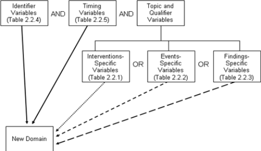
2.7 SDTM Variables Not Allowed in SDTMIG
This section identifies those SDTM variables that either 1) should not be used in SDTM-compliant data tabulations of clinical trials data or 2) have not yet been evaluated for use in human clinical trials.
The following SDTM variables, defined for use in non-clinical studies (SEND), must NEVER be used in the submission of SDTM-based data for human clinical trials:
- --USCHFL (Interventions, Events, Findings)
- --DTHREL (Findings)
- --EXCLFL (Findings)
- --REASEX (Findings)
- --IMPLBL (Findings) FETUSID (Identifiers)
- --DETECT (Timing Variables)
- --NOMDY (Timing Variables)
- --NOMLBL (Timing Variables)
The following variables can be used for non-clinical studies (SEND) but must NEVER be used in the Demographics domain for human clinical trials, where all subjects are human. See Section 9.2, Non-host Organism Identifiers (OI), for information about representing taxonomic information for non-host organisms such as bacteria and viruses.
- SPECIES (Demographics)
- STRAIN (Demographics)
- SBSTRAIN (Demographics)
The following variables have not been evaluated for use in human clinical trials and must therefore be used with extreme caution:
- --METHOD (Interventions)
- --ANTREG (Findings)
- --CHRON (Findings)
- --DISTR (Findings) SETCD (Demographics)
The use of SETCD additionally requires the use of the Trials Sets domain.
The following identifier variable can be used for non-clinical studies (SEND), and may be used in human clinical trials when appropriate:
- POOLID
The use of POOLID additionally requires the use of the Pool Definition dataset.
Other variables defined in the SDTM are allowed for use as defined in this SDTMIG except when explicitly stated. Custom domains, created following the guidance in Section 2.6, Creating a New Domain, may utilize any appropriate Qualifier variables from the selected general observation class.
3 Submitting Data in Standard Format
3.1 Standard Metadata for Dataset Contents and Attributes
The SDTMIG provides standard descriptions of some of the most commonly used data domains, with metadata attributes. These include descriptive metadata attributes that should be included in a Define-XML document. In addition, the CDISC domain models include two shaded columns that are not sent to the FDA. These columns assist sponsors in preparing their datasets:
- "CDISC Notes" is for notes to the sponsor regarding the relevant use of each variable.
- "Core" indicates how a variable is classified (see Section 4.1.5, SDTM Core Designations).
The domain models in Section 6, Domain Models Based on the General Observation Classes illustrate how to apply the SDTM when creating a specific domain dataset. In particular, these models illustrate the selection of a subset of the variables offered in one of the general observation classes, along with applicable timing variables. The models also show how a standard variable from a general observation class should be adjusted to meet the specific content needs of a particular domain, including making the label more meaningful, specifying controlled terminology, and creating domain-specific notes and examples. Thus the domain models not only demonstrate how to apply the model for the most common domains, but also give insight on how to apply general model concepts to other domains not yet defined by CDISC.
3.2 Using the CDISC Domain Models in Regulatory Submissions — Dataset Metadata
The Define-XML document that accompanies a submission should also describe each dataset that is included in the submission and describe the natural key structure of each dataset. While most studies will include DM and a set of safety domains based on the three general observation classes (typically including EX, CM, AE, DS, MH, LB, and VS), the actual choice of which data to submit will depend on the protocol and the needs of the regulatory reviewer. Dataset definition metadata should include the dataset filenames, descriptions, locations, structures, class, purpose, and keys, as shown in Section 3.2.1, Dataset-Level Metadata. In addition, comments can also be provided where needed.
In the event that no records are present in a dataset (e.g., a small PK study where no subjects took concomitant medications), the empty dataset should not be submitted and should not be described in the Define-XML document. The annotated CRF will show the data that would have been submitted had data been received; it need not be re- annotated to indicate that no records exist.
3.2.1 Dataset-Level Metadata
Note that the key variables shown in this table are examples only. A sponsor's actual key structure may be different.
| Dataset | Description | Class | Structure | Purpose | Keys | Location |
|---|---|---|---|---|---|---|
| CO | Comments | Special Purpose | One record per comment per subject | Tabulation | STUDYID, USUBJID, IDVAR, COREF, CODTC | co.xpt |
| DM | Demographics | Special Purpose | One record per subject | Tabulation | STUDYID, USUBJID | dm.xpt |
| SE | Subject Elements | Special Purpose | One record per actual Element per subject | Tabulation | STUDYID, USUBJID, ETCD, SESTDTC | se.xpt |
| SM | Subject Disease Milestones | Special Purpose | One record per Disease Milestone per subject | Tabulation | STUDYID, USUBJID, MIDS | sm.xpt |
| SV | Subject Visits | Special Purpose | One record per subject per actual visit | Tabulation | STUDYID, USUBJID, VISITNUM | sv.xpt |
| AG | Procedure Agents | Interventions | One record per recorded intervention occurrence per subject | Tabulation | STUDYID, USUBJID, AGTRT, AGSTDTC | ag.xpt |
| CM | Concomitant/Prior Medications | Interventions | One record per recorded intervention occurrence or constant-dosing interval per subject | Tabulation | STUDYID, USUBJID, CMTRT, CMSTDTC | cm.xpt |
| EC | Exposure as Collected | Interventions | One record per protocol-specified study treatment, collected-dosing interval, per subject, per mood | Tabulation | STUDYID, USUBJID, ECTRT, ECSTDTC, ECMOOD | ec.xpt |
| EX | Exposure | Interventions | One record per protocol-specified study treatment, constant-dosing interval, per subject | Tabulation | STUDYID, USUBJID, EXTRT, EXSTDTC | ex.xpt |
| ML | Meal Data | Interventions | One record per food product occurrence or constant intake interval per subject | Tabulation | STUDYID, USUBJID, MLTRT, MLSTDTC | ml.xpt |
| PR | Procedures | Interventions | One record per recorded procedure per occurrence per subject | Tabulation | STUDYID, USUBJID, PRTRT, PRSTDTC | pr.xpt |
| SU | Substance Use | Interventions | One record per substance type per reported occurrence per subject | Tabulation | STUDYID, USUBJID, SUTRT, SUSTDTC | su.xpt |
| AE | Adverse Events | Events | One record per adverse event per subject | Tabulation | STUDYID, USUBJID, AEDECOD, AESTDTC | ae.xpt |
| CE | Clinical Events | Events | One record per event per subject | Tabulation | STUDYID, USUBJID, CETERM, CESTDTC | ce.xpt |
| DS | Disposition | Events | One record per disposition status or protocol milestone per subject | Tabulation | STUDYID, USUBJID, DSDECOD, DSSTDTC | ds.xpt |
| DV | Protocol Deviations | Events | One record per protocol deviation per subject | Tabulation | STUDYID, USUBJID, DVTERM, DVSTDTC | dv.xpt |
| HO | Healthcare Encounters | Events | One record per healthcare encounter per subject | Tabulation | STUDYID, USUBJID, HOTERM, HOSTDTC | ho.xpt |
| MH | Medical History | Events | One record per medical history event per subject | Tabulation | STUDYID, USUBJID, MHDECOD | mh.xpt |
| CV | Cardiovascular System Findings | Findings | One record per finding or result per time point per visit per subject | Tabulation | STUDYID, USUBJID, VISITNUM, CVTESTCD, CVTPTREF, CVTPTNUM | cv.xpt |
| DA | Drug Accountability | Findings | One record per drug accountability finding per subject | Tabulation | STUDYID, USUBJID, DATESTCD, DADTC | da.xpt |
| DD | Death Details | Findings | One record per finding per subject | Tabulation | STUDYID, USUBJID, DDTESTCD, DDDTC | dd.xpt |
| EG | ECG Test Results | Findings | One record per ECG observation per replicate per time point or one record per ECG observation per beat per visit per subject | Tabulation | STUDYID, USUBJID, EGTESTCD, VISITNUM, EGTPTREF, EGTPTNUM | eg.xpt |
| FA | Findings About Events or Interventions | Findings | One record per finding, per object, per time point, per visit per subject | Tabulation | STUDYID, USUBJID, FATESTCD, FAOBJ, VISITNUM, FATPTREF, FATPTNUM | fa.xpt |
| FT | Functional Tests | Findings | One record per Functional Test finding per time point per visit per subject | Tabulation | STUDYID, USUBJID, TESTCD, VISITNUM, FTTPTREF, FTTPTNUM | ft.xpt |
| IE | Inclusion/Exclusion Criteria Not Met | Findings | One record per inclusion/exclusion criterion not met per subject | Tabulation | STUDYID, USUBJID, IETESTCD | ie.xpt |
| IS | Immunogenicity Specimen Assessments | Findings | One record per test per visit per subject | Tabulation | STUDYID, USUBJID, ISTESTCD, VISITNUM | is.xpt |
| Dataset | Description | Class | Structure | Purpose | Keys | Location |
|---|---|---|---|---|---|---|
| LB | Laboratory Test Results | Findings | One record per lab test per time point per visit per subject | Tabulation | STUDYID, USUBJID, LBTESTCD, LBSPEC, VISITNUM, LBTPTREF, LBTPTNUM | lb.xpt |
| MB | Microbiology Specimen | Findings | One record per microbiology specimen finding per time point per visit per subject | Tabulation | STUDYID, USUBJID, MBTESTCD, VISITNUM, MBTPTREF, MBTPTNUM | mb.xpt |
| MI | Microscopic Findings | Findings | One record per finding per specimen per subject | Tabulation | STUDYID, USUBJID, MISPEC, MITESTCD | mi.xpt |
| MK | Musculoskeletal System Findings | Findings | One record per assessment per visit per subject | Tabulation | STUDYID, USUBJID, VISITNUM, MKTESTCD, MKLOC, MKLAT | mk.xpt |
| MO | Morphology | Findings | One record per Morphology finding per location per time point per visit per subject | Tabulation | STUDYID, USUBJID, VISITNUM, MOTESTCD, MOLOC, MOLAT | mo.xpt |
| MS | Microbiology Susceptibility | Findings | One record per microbiology susceptibility test (or other organism-related finding) per organism found in MB | Tabulation | STUDYID, USUBJID, MSTESTCD, VISITNUM, MSTPTREF, MSTPTNUM | ms.xpt |
| NV | Nervous System Findings | Findings | One record per finding per location per time point per visit per subject | Tabulation | STUDYID, USUBJID, VISITNUM, CVTPTNUM, CVLOC, NVTESTCD | nv.xpt |
| OE | Ophthalmic Examinations | Findings | One record per ophthalmic finding per method per location, per time point per visit per subject | Tabulation | STUDYID, USUBJID, FOCID, OETESTCD, OETSTDTL, OEMETHOD, OELOC, OELAT, OEDIR, VISITNUM, OEDTC, OETPTREF, OETPTNUM, OEREPNUM | oe.xpt |
| PC | Pharmacokinetics Concentrations | Findings | One record per sample characteristic or time-point concentration per reference time point or per analyte per subject | Tabulation | STUDYID, USUBJID, PCTESTCD, VISITNUM, PCTPTREF, PCTPTNUM | pc.xpt |
| PE | Physical Examination | Findings | One record per body system or abnormality per visit per subject | Tabulation | STUDYID, USUBJID, PETESTCD, VISITNUM | pe.xpt |
| PP | Pharmacokinetics Parameters | Findings | One record per PK parameter per time-concentration profile per modeling method per subject | Tabulation | STUDYID, USUBJID, PPTESTCD, PPCAT, VISITNUM, PPTPTREF | pp.xpt |
| QS | Questionnaires | Findings | One record per questionnaire per question per time point per visit per subject | Tabulation | STUDYID, USUBJID, QSCAT, QSSCAT, VISITNUM, QSTESTCD | qs.xpt |
| RE | Respiratory System Findings | Findings | One record per finding or result per time point per visit per subject | Tabulation | STUDYID, USUBJID, VISITNUM, RETESTCD, RETPTNUM, REREPNUM | re.xpt |
| RP | Reproductive System Findings | Findings | One record per finding or result per time point per visit per subject | Tabulation | STUDYID, DOMAIN, USUBJID, RPTESTCD, VISITNUM | rp.xpt |
| RS | Disease Response and Clin Classification | Findings | One record per response assessment or clinical classification assessment per time point per visit per subject per assessor per medical evaluator | Tabulation | STUDYID, USUBJID, RSTESTCD, VISITNUM, RSTPTREF, RSTPTNUM, RSEVAL, RSEVALID | rs.xpt |
| SC | Subject Characteristics | Findings | One record per characteristic per subject. | Tabulation | STUDYID, USUBJID, SCTESTCD | sc.xpt |
| SR | Skin Response | Findings | One record per finding, per object, per time point, per visit per subject | Tabulation | STUDYID, USUBJID, SRTESTCD, SROBJ, VISITNUM, SRTPTREF, SRTPTNUM | sr.xpt |
| SS | Subject Status | Findings | One record per finding per visit per subject | Tabulation | STUDYID, USUBJID, SSTESTCD, VISITNUM | ss.xpt |
| TR | Tumor/Lesion Results | Findings | One record per tumor measurement/assessment per visit per subject per assessor | Tabulation | STUDYID, USUBJID, TRTESTCD, EVALID, VISITNUM | tr.xpt |
| TU | Tumor/Lesion Identification | Findings | One record per identified tumor per subject per assessor | Tabulation | STUDYID, USUBJID, EVALID, LNKID | tu.xpt |
| UR | Urinary System Findings | Findings | One record per finding per location per per visit per subject | Tabulation | STUDYID, USUBJID, VISITNUM, URTESTCD, URLOC, URLAT, URDIR | ur.xpt |
| VS | Vital Signs | Findings | One record per vital sign measurement per time point per visit per subject | Tabulation | STUDYID, USUBJID, VSTESTCD, VISITNUM, VSTPTREF, VSTPTNUM | vs.xpt |
| TA | Trial Arms | Trial Design | One record per planned Element per Arm | Tabulation | STUDYID, ARMCD, TAETORD | ta.xpt |
| Dataset | Description | Class | Structure | Purpose | Keys | Location |
|---|---|---|---|---|---|---|
| TD | Trial Disease Assessments | Trial Design | One record per planned constant assessment period | Tabulation | STUDYID, TDORDER | td.xpt |
| TE | Trial Elements | Trial Design | One record per planned Element | Tabulation | STUDYID, ETCD | te.xpt |
| TI | Trial Inclusion/Exclusion Criteria | Trial Design | One record per I/E crierion | Tabulation | STUDYID, IETESTCD | ti.xpt |
| TM | Trial Disease Milestones | Trial Design | One record per Disease Milestone type | Tabulation | STUDYID, MIDSTYPE | tm.xpt |
| TS | Trial Summary Information | Trial Design | One record per trial summary parameter value | Tabulation | STUDYID, TSPARMCD, TSSEQ | ts.xpt |
| TV | Trial Visits | Trial Design | One record per planned Visit per Arm | Tabulation | STUDYID, ARM, VISIT | tv.xpt |
| RELREC | Related Records | Relationships | One record per related record, group of records or dataset | Tabulation | STUDYID, RDOMAIN, USUBJID, IDVAR, IDVARVAL, RELID | relrec.xpt |
| RELSUB | Related Subjects | Relationships | One record per relationship per related subject per subject | Tabulation | STUDYID, USUBJID, RSUBJID, SREL | relsub.xpt |
| SUPP-- | Supplemental Qualifiers for [domain name] | Relationships | One record per IDVAR, IDVARVAL, and QNAM value per subject | Tabulation | STUDYID, RDOMAIN, USUBJID, IDVAR, IDVARVAL, QNAM | supp-- .xpt |
| OI | Non-host Organism Identifiers | Study Reference | One record per taxon per non-host organism | Tabulation | NHOID, OISEQ | oi.xpt |
| Separate Supplemental Qualifier datasets of the form supp--.xpt are required. See Section 8.4, Relating Non- Standard Variables Values to a Parent Domain. |
3.2.1.1 Primary Keys
The table in Section 3.2.1, Dataset-Level Metadata shows examples of what a sponsor might submit as variables that comprise the primary key for SDTM datasets. Since the purpose of this column is to aid reviewers in understanding the structure of a dataset, sponsors should list all of the natural keys (see definition below) for the dataset. These keys should define uniqueness for records within a dataset, and may define a record sort order. The identified keys for each dataset should be consistent with the description of the dataset structure as described in the Define-XML document. For all the general-observation-class domains (and for some special purpose domains), the --SEQ variable was created so that a unique record could be identified consistently across all of these domains via its use, along with STUDYID, USUBJID, DOMAIN. In most domains, --SEQ will be a surrogate key (see definition below) for a set of variables that comprise the natural key. In certain instances, a Supplemental Qualifier (SUPP--) variable might also contribute to the natural key of a record for a particular domain. See Section 4.1.8.3, Assigning Natural Keys in the Metadata, for how this should be represented, and for additional information on keys.
A natural key is a set of data (one or more columns of an entity) that uniquely identifies that entity and distinguishes it from any other row in the table. The advantage of natural keys is that they exist already; one does not need to introduce a new, "unnatural" value to the data schema. One of the difficulties in choosing a natural key is that just about any natural key one can think of has the potential to change. Because they have business meaning, natural keys are effectively coupled to the business, and they may need to be reworked when business requirements change. An example of such a change in clinical trials data would be the addition of a position or location that becomes a key in a new study, but that wasn't collected in previous studies.
A surrogate key is a single-part, artificially established identifier for a record. Surrogate key assignment is a special case of derived data, one where a portion of the primary key is derived. A surrogate key is immune to changes in business needs. In addition, the key depends on only one field, so it's compact. A common way of deriving surrogate key values is to assign integer values sequentially. The --SEQ variable in the SDTM datasets is an example of a surrogate key for most datasets; in some instances, however, --SEQ might be a part of a natural key as a replacement for what might have been a key (e.g., a repeat sequence number) in the sponsor's database.
3.2.1.2 CDISC Submission Value-Level Metadata
In general, the SDTMIG v3.x Findings data models are closely related to normalized, relational data models in a vertical structure of one record per observation. Since the v3.x data structures are fixed, sometimes information that might have appeared as columns in a more horizontal (denormalized) structure in presentations and reports will instead be represented as rows in an SDTM Findings structure. Because many different types of observations are all presented in the same structure, there is a need to provide additional metadata to describe the expected properties that differentiate, for example, hematology lab results from serum chemistry lab results in terms of data type, standard units, and other attributes.
For example, the Vital Signs data domain could contain subject records related to diastolic and systolic blood pressure, height, weight, and body mass index (BMI). These data are all submitted in the normalized SDTM Findings structure of one row per vital signs measurement. This means that there could be five records per subject (one for each test or measurement) for a single visit or time point, with the parameter names stored in the Test Code/Name variables, and the parameter values stored in result variables. Since the unique Test Code/Names could have different attributes (i.e., different origins, roles, and definitions) there would be a need to provide value-level metadata for this information.
The value-level metadata should be provided as a separate section of the Define-XML document. For details on the CDISC Define-XML standard, see https://www.cdisc.org/standards/transport/define-xml.
3.2.2 Conformance
Conformance with the SDTMIG Domain Models is minimally indicated by:
- Following the complete metadata structure for data domains
- Following SDTMIG domain models wherever applicable
- Using SDTM-specified standard domain names and prefixes where applicable
- Using SDTM-specified standard variable names
- Using SDTM-specified data types for all variables
- Following SDTM-specified controlled terminology and format guidelines for variables, when provided
- Including all collected and relevant derived data in one of the standard domains, special purpose datasets, or general-observation-class structures
- Including all Required and Expected variables as columns in standard domains, and ensuring that all Required variables are populated
- Ensuring that each record in a dataset includes the appropriate Identifier and Timing variables, as well as a Topic variable
- Conforming to all business rules described in the CDISC Notes column and general and domain-specific assumptions.
4 Assumptions for Domain Models
4.1 General Domain Assumptions
4.1.1 Review Study Data Tabulation and Implementation Guide
Review the Study Data Tabulation Model as well as this complete Implementation Guide before attempting to use any of the individual domain models.
4.1.2 Relationship to Analysis Datasets
Specific guidance on preparing analysis datasets can be found in the CDISC Analysis Data Model (ADaM) Implementation Guide and other ADaM documents, available at http://www.cdisc.org/adam.
4.1.3 Additional Timing Variables
Additional Timing variables can be added as needed to a standard domain model based on the three general observation classes, except for the cases specified in Assumption 4.4.8, Date and Time Reported in a Domain Based on Findings. Timing variables can be added to special purpose domains only where specified in the SDTMIG domain model assumptions. Timing variables cannot be added to SUPPQUAL datasets or to RELREC (described in Section 8, Representing Relationships and Data).
4.1.3.1 EPOCH Variable Guidance
When EPOCH is included in a Findings class domain, it should be based on the --DTC variable, since this is the date/time of the test or, for tests performed on specimens, the date/time of specimen collection. For observations in Interventions or Events class domains, EPOCH should be based on the --STDTC variable, since this is the start of the Intervention or Event. A possible, though unlikely, exception would be a finding based on an interval specimen collection that started in one epoch but ended in another. --ENDTC might be a more appropriate basis for EPOCH in such a case.
Sponsors should not impute EPOCH values, but should, where possible, assign EPOCH values on the basis of CRF instructions and structure, even ifEPOCH was not directly collected and date/time data was not collected with sufficient precision to permit assignment of an observation to an EPOCH on the basis of date/time data alone. If it is not possible to determine theEPOCH of an observation, then EPOCH should be null. Methods for assigning EPOCH values can be described in the Define-XML document.
Since EPOCH is a study-design construct, it is not applicable to Interventions or Events that started before the subject's participation in the study, nor to Findings performed before their participation in the study. For such records, EPOCH should be null. Note that a subject's participation in a study includes screening, which generally occurs before the reference start date, RFSTDTC, in the DM domain.
4.1.4 Order of the Variables
The order of variables in the Define-XML document must reflect the order of variables in the dataset. The order of variables in the CDISC domain models has been chosen to facilitate the review of the models and application of the models. Variables for the three general observation classes must be ordered with Identifiers first, followed by the Topic, Qualifier, and Timing variables. Within each role, variables must be ordered as shown in SDTM Tables 2.2.1, 2.2.2, 2.2.3, 2.2.3.1, 2.2.4, and 2.2.5.
4.1.5 SDTM Core Designations
Three categories are specified in the "Core" column in the domain models:
- A Required variable is any variable that is basic to the identification of a data record (i.e., essential key variables and a topic variable) or is necessary to make the record meaningful. Required variables must always be included in the dataset and cannot be null for any record.
- An Expected variable is any variable necessary to make a record useful in the context of a specific domain. Expected variables may contain some null values, but in most cases will not contain null values for every record. When the study does not include the data item for an expected variable, however, a null column must still be included in the dataset, and a comment must be included in the Define-XML document to state that the study does not include the data item.
- A Permissible variable should be used in an SDTM dataset wherever appropriate. Although domain specification tables list only some of the Identifier, Timing, and general observation class variables listed in the SDTM, all are permissible unless specifically restricted in this implementation guide (see Section 2.7, SDTM Variables Not Allowed in SDTMIG) or by specific domain assumptions.
Domain assumptions that say a Permissible variable is "generally not used" do not prohibit use of the
o
variable.
If a study includes a data item that would be represented in a Permissible variable, then that variable must
o
be included in the SDTM dataset, even if null. Indicate no data were available for that variable in the Define-XML document.
If a study did not include a data item that would be represented in a Permissible variable, then that variable
o
should not be included in the SDTM dataset and should not be declared in the Define- XML document.
4.1.6 Additional Guidance on Dataset Naming
SDTM datasets are normally named to be consistent with the domain code; for example, the Demographics dataset (DM) is named dm.xpt. (See the SDTM Domain Abbreviation codelist, C66734, in CDISC Controlled Terminology (https://www.cancer.gov/research/resources/terminology/cdisc) for standard domain codes).
Exceptions to this rule are described in Section 4.1.7, Splitting Domains, for general-observation-class datasets and in Section 8, Representing Relationships and Data, for the RELREC and SUPP-- datasets.
In some cases, sponsors may need to define new custom domains and may be concerned that CDISC domain codes defined in the future will conflict with those they choose to use. To eliminate any risk of a sponsor using a name that CDISC later determines to have a different meaning, domain codes beginning with the letters X, Y, or Z have been reserved for the creation of custom domains. Any letter or number may be used in the second position. Note the use of codes beginning with X, Y, or Z is optional, and not required for custom domains.
4.1.7 Splitting Domains
Sponsors may choose to split a domain of topically related information into physically separate datasets.
- A domain based on a general observation class may be split according to values in --CAT. When a domain is split on --CAT, --CAT must not be null.
- The Findings About (FA) domain (Section 6.4.4, Findings About) may alternatively be split based on the domain of the value in --OBJ. For example, FACM would store Findings About CM records. See Section 6.4.2, Naming Findings About Domains, for more details.
The following rules must be adhered to when splitting a domain into separate datasets to ensure they can be appended back into one domain dataset:
1. The value of DOMAIN must be consistent across the separate datasets as it would have been if they had not been split (e.g., QS, FA).
2. All variables that require a domain prefix (e.g., --TESTCD, --LOC) must use the value of DOMAIN as the prefix value (e.g., QS, FA).
3. --SEQ must be unique within USUBJID for all records across all the split datasets. If there are 1000 records for a USUBJID across the separate datasets, all 1000 records need unique values for --SEQ.
4. When relationship datasets (e.g., SUPPxx, FAxx, CO, RELREC) relate back to split parent domains, IDVAR would generally be --SEQ. When IDVAR is a value other than --SEQ (e.g., --GRPID, --REFID, -- SPID), care should be used to ensure that the parent records across the split datasets have unique values for the variable specified in IDVAR, so that related children records do not accidentally join back to incorrect parent records.
5. Permissible variables included in one split dataset need not be included in all split datasets.
6. For domains with two-letter domain codes (i.e., other than SUPP and RELREC), split dataset names can be up to four characters in length. For example, if splitting by --CAT, then dataset names would be the domain name plus up to two additional characters (e.g., QS36 for SF-36). If splitting Findings About by parent domain, then the dataset name would be the domain code, "FA", plus the two-character domain code for parent domain code (e.g., "FACM"). The four-character dataset-name limitation allows the use of a Supplemental Qualifier dataset associated with the split dataset.
7. Supplemental Qualifier datasets for split domains would also be split. The nomenclature would include the additional one-to-two characters used to identify the split dataset (e.g., SUPPQS36, SUPPFACM). The value of RDOMAIN in the SUPP-- datasets would be the two-character domain code (e.g., QS, FA).
8. In RELREC, if a dataset-level relationship is defined for a split Findings About domain, then RDOMAIN may contain the four-character dataset name, rather than the domain name "FA", as shown in the following example.
relrec.xpt
| Row | STUDYID | RDOMAIN | USUBJID | IDVAR | IDVARVAL | RELTYPE | RELID |
|---|---|---|---|---|---|---|---|
| 1 | ABC | CM | CMSPID | ONE | 1 | ||
| 2 | ABC | FACM | FASPID | MANY | 1 |
9. See the SDTM Implementation Guide for Associated Persons for the naming of split associated persons datasets.
10. See the SDTM Define-XML specification for details regarding metadata representation when a domain is split into different datasets. Additional examples can be referenced in the Metadata Submission Guidelines (MSG) for SDTMIG.
Note that submission of split SDTM domains may be subject to additional dataset splitting conventions as defined by regulators via technical specifications and/or as negotiated with regulatory reviewers.
4.1.7.1 Trial Inclusion/Exclusion Criteria
This example shows the QS domain data split into three datasets: Clinical Global Impression (QSCG), Cornell Scale for Depression in Dementia (QSCS) and Mini Mental State Examination (QSMM). Each dataset represents a subset of the QS domain data and has only one value of QSCAT.
QS Domains
Dataset for Clinical Global Impressions
qscg.xpt
| Row | STUDYID | DOMAIN | USUBJID | QSSEQ | QSSPID | QSTESTCD | QSTEST | QSCAT | QSORRES | QSSTRESC | QSSTRESN | QSBLFL | VISITNUM | VISIT | VISITDY | QSDTC | QSDY |
|---|---|---|---|---|---|---|---|---|---|---|---|---|---|---|---|---|---|
| 1 | CDISC01 | QS | CDISC01.100008 | 1 | CGI-CGI-I | CGIGLOB | Global Improvement | Clinical Global Impressions | No change | 4 | 4 | 3 | WEEK 2 | 15 | 2003-05-13 | 15 | |
| 2 | CDISC01 | QS | CDISC01.100008 | 2 | CGI-CGI-I | CGIGLOB | Global Improvement | Clinical Global Impressions | Much Improved | 2 | 2 | 10 | WEEK 24 | 169 | 2003-10-13 | 168 | |
| 3 | CDISC01 | QS | CDISC01.100014 | 1 | CGI-CGI-I | CGIGLOB | Global Improvement | Clinical Global Impressions | Minimally Improved | 3 | 3 | 3 | WEEK 2 | 15 | 2003-10-31 | 17 | |
| 4 | CDISC01 | QS | CDISC01.100014 | 2 | CGI-CGI-I | CGIGLOB | Global Improvement | Clinical Global Impressions | Minimally Improved | 3 | 3 | 10 | WEEK 24 | 169 | 2004-03-30 | 168 |
Dataset for Cornell Scale for Depression in Dementia
qscs.xpt
| Row | STUDYID | DOMAIN | USUBJID | QSSEQ | QSSPID | QSTESTCD | QSTEST | QSCAT | QSORRES | QSSTRESC | QSSTRESN | QSBLFL | VISITNUM | VISIT | VISITDY | QSDTC | QSDY |
|---|---|---|---|---|---|---|---|---|---|---|---|---|---|---|---|---|---|
| 1 | CDISC01 | QS | CDISC01.100008 | 3 | CSDD-01 | CSDD01 | Anxiety | Cornell Scale for Depression in Dementia | Severe | 2 | 2 | 1 | SCREEN | -13 | 2003-04-15 | -14 | |
| 2 | CDISC01 | QS | CDISC01.100008 | 23 | CSDD-01 | CSDD01 | Anxiety | Cornell Scale for Depression in Dementia | Severe | 2 | 2 | Y | 2 | BASELINE | 1 | 2003-04-29 | 1 |
| 3 | CDISC01 | QS | CDISC01.100014 | 3 | CSDD-01 | CSDD01 | Anxiety | Cornell Scale for Depression in Dementia | Severe | 2 | 2 | 1 | SCREEN | -13 | 2003-10-06 | -9 | |
| 4 | CDISC01 | QS | CDISC01.100014 | 28 | CSDD-06 | CSDD06 | Retardation | Cornell Scale for Depression in Dementia | Mild | 1 | 1 | Y | 2 | BASELINE | 1 | 2003-10-15 | 1 |
Dataset for Mini Mental State Examination
qsmm.xpt
| Row | STUDYID | DOMAIN | USUBJID | QSSEQ | QSSPID | QSTESTCD | QSTEST | QSCAT | QSORRES | QSSTRESC | QSSTRESN | QSBLFL | VISITNUM | VISIT | VISITDY | QSDTC | QSDY |
|---|---|---|---|---|---|---|---|---|---|---|---|---|---|---|---|---|---|
| 1 | CDISC01 | QS | CDISC01.100008 | 81 | MMSE-A.1 | MMSEA1 | Orientation Time Score | Mini Mental State Examination | 4 | 4 | 4 | 1 | SCREEN | -13 | 2003-04-15 | -14 | |
| 2 | CDISC01 | QS | CDISC01.100008 | 88 | MMSE-A.1 | MMSEA1 | Orientation Time Score | Mini Mental State Examination | 3 | 3 | 3 | Y | 2 | BASELINE | 1 | 2003-04-29 | 1 |
| 3 | CDISC01 | QS | CDISC01.100014 | 81 | MMSE-A.1 | MMSEA1 | Orientation Time score | Mini Mental State Examination | 2 | 2 | 2 | 1 | SCREEN | -13 | 2003-10-06 | -9 | |
| 4 | CDISC01 | QS | CDISC01.100014 | 88 | MMSE-A.1 | MMSEA1 | Orientation Time score | Mini Mental State Examination | 2 | 2 | 2 | Y | 2 | BASELINE | 1 | 2003-10-15 | 1 |
SUPPQS Domains
Supplemental Qualifiers for QSCG
suppqscg.xpt
| Row | STUDYID | RDOMAIN | USUBJID | IDVAR | IDVARVAL | QNAM | QLABEL | QVAL | QORIG |
|---|---|---|---|---|---|---|---|---|---|
| 1 | CDISC01 | QS | CDISC01.100008 | QSCAT | Clinical Global Impressions | QSLANG | Questionnaire Language | GERMAN | CRF |
| 2 | CDISC01 | QS | CDISC01.100014 | QSCAT | Clinical Global Impressions | QSLANG | Questionnaire Language | FRENCH | CRF |
QEVAL
Supplemental Qualifiers for QSCS
suppqscs.xpt
| Row | STUDYID | RDOMAIN | USUBJID | IDVAR | IDVARVAL | QNAM | QLABEL | QVAL | QORIG | QEVAL |
|---|---|---|---|---|---|---|---|---|---|---|
| 1 | CDISC01 | QS | CDISC01.100008 | QSCAT | Cornell Scale for Depression in Dementia | QSLANG | Questionnaire Language | GERMAN | CRF | |
| 2 | CDISC01 | QS | CDISC01.100014 | QSCAT | Cornell Scale for Depression in Dementia | QSLANG | Questionnaire Language | FRENCH | CRF |
Supplemental Qualifiers for QSMM
suppqsmm.xpt
| Row | STUDYID | RDOMAIN | USUBJID | IDVAR | IDVARVAL | QNAM | QLABEL | QVAL | QORIG | QEVAL |
|---|---|---|---|---|---|---|---|---|---|---|
| 1 | CDISC01 | QS | CDISC01.100008 | QSCAT | Mini Mental State Examination | QSLANG | Questionnaire Language | GERMAN | CRF | |
| 2 | CDISC01 | QS | CDISC01.100014 | QSCAT | Mini Mental State Examination | QSLANG | Questionnaire Language | FRENCH | CRF |
4.1.8 Origin Metadata
4.1.8.1 Origin Metadata for Variables
The origin element in the Define-XML document file is used to indicate where the data originated. Its purpose is to unambiguously communicate to the reviewer the origin of the data source. For example, data could be on the CRF (and thus should be traceable to an annotated CRF), derived (and thus traceable to some derivation algorithm), or assigned by some subjective process (and thus traceable to some external evaluator). The Define- XML specification is the definitive source of allowable origin values. Additional guidance and supporting examples can be referenced using the Metadata Submission Guidelines (MSG) for SDTMIG.
4.1.8.2 Origin Metadata for Records
Sponsors are cautioned to recognize that a derived origin means that all values for that variable were derived, and that collected on the CRF applies to all values as well. In some cases, both collected and derived values may be reported in the same field. For example, some records in a Findings dataset such as QS contain values collected from the CRF; other records may contain derived values, such as a total score. When both derived and collected values are reported in a variable, the origin is to be described using value-level metadata.
4.1.8.3 Assigning Natural Keys in the Metadata
Section 3.2, Using the CDISC Domain Models in Regulatory Submissions — Dataset Metadata, indicates that a sponsor should include in the metadata the variables that contribute to the natural key for a domain. In a case where a dataset includes a mix of records with different natural keys, the natural key that provides the most granularity is the one that should be provided. The following examples are illustrations of how to do this, and include a case where a Supplemental Qualifier variable is referenced because it forms part of the natural key.
Musculoskeletal System Findings (MK) domain example:
Sponsor A chooses the following natural key for the MK domain:
STUDYID, USUBJID, VISTNUM, MKTESTCD
Sponsor B collects data in such a way that the location (MKLOC and MKLAT) and method (MKMETHOD) variables need to be included in the natural key to identify a unique row. Sponsor B then defines the following natural key for the MK domain.
STUDYID, USUBJID, VISITNUM, MKTESTCD, MKLOC, MKLAT, MKMETHOD
In certain instances a Supplemental Qualifier variable (i.e., a QNAM value, see Section 8.4, Relating Non- Standard Variables Values to a Parent Domain) might also contribute to the natural key of a record, and therefore needs to be referenced as part of the natural key for a domain. The important concept here is that a domain is not limited by physical structure. A domain may be comprised of more than one physical dataset, for example the main domain dataset and its associated Supplemental Qualifiers dataset. Supplemental Qualifiers variables should be referenced in the natural key by using a two-part name. The word QNAM must be used as the first part of the name to indicate that the contributing variable exists in a domain-specific SUPP-- and the second part is the value of QNAM that ultimately becomes a column reference (e.g., QNAM.XVAR when the SUPP-- record has a QNAM of "XVAR") when the SUPPQUAL records are joined on to the main domain dataset.
Continuing with the MK domain example above:
Sponsor B might have collected data that used different imaging methods, using imaging devices with different makes and models, and using different hand positions. The sponsor considers the make and model information and hand position to be essential data that contributes to the uniqueness of the test result, and so includes a device identifier (SPDEVID) in the data and creates a Supplemental Qualifier variable for hand position (QNAM = "MKHNDPOS"). The natural key is then defined as follows:
STUDYID, USUBJID, SPDEVID, VISITNUM, MKTESTCD, MKLOC, MKLAT, MKMETHOD, QNAM.MKHNDPOS
Where the notation "QNAM.MKHNDPOS" means the Supplemental Qualifier whose QNAM is "MKHNDPOS".
This approach becomes very useful in a Findings domain when --TESTCD values are "generic" and rely on other variables to completely describe the test. The use of generic test codes helps to create distinct lists of manageable controlled terminology for --TESTCD. In studies where multiple repetitive tests or measurements are being made, for example in a rheumatoid arthritis study where repetitive measurements of bone erosion in the hands and wrists might be made using both X-ray and MRI equipment, the generic MKTEST "Sharp/Genant Bone Erosion Score" would be used in combination with other variables to fully identify the result.
Taking just the phalanges, a sponsor might want to express the following in a test in order to make it unique:
- Left or Right hand
- Phalangeal joint position (which finger, which joint)
- Rotation of the hand
- Method of measurement (X-ray or MRI)
- Machine make and model
When CDISC controlled terminology for a test is not available, and a sponsor creates --TEST and --TESTCD values, trying to encapsulate all information about a test within a unique value of a --TESTCD is not a recommended approach for the following reasons:
- It results in the creation of a potentially large number of test codes.
- The eight-character values of --TESTCD become less intuitively meaningful.
- Multiple test codes are essentially representing the same test or measurement simply to accommodate attributes of a test within the --TESTCD value itself (e.g., to represent a body location at which a measurement was taken).
As a result, the preferred approach would be to use a generic (or simple) test code that requires associated qualifier variables to fully express the test detail. This approach was used in creating the CDISC controlled terminology that would be used in the above example:
The MKTESTCD value "SGBESCR" is a "generic" test code, and additional information about the test is provided by separate qualifier variables. The variables that completely specify a test may include domain variables and supplemental qualifier variables. Expressing the natural key becomes very important in this situation in order to communicate the variables that contribute to the uniqueness of a test.
The following variables would be used to fully describe the test. The natural key for this domain includes both parent dataset variables and a supplemental qualifier variable that contribute to the natural key of each row and to describe the uniqueness of the test.
| SPDEVID | MKTESTCD | MKTEST | MKLOC | MKLAT | MKMETHOD | QNAM.MKHNDPOS |
|---|---|---|---|---|---|---|
| ACME3000 | SGBESCR | Sharp/Genant Bone Erosion Score | METACARPOPHALANGEAL JOINT 1 | LEFT | X-RAY | PALM UP |
4.2 General Variable Assumptions
4.2.1 Variable-Naming Conventions
SDTM variables are named according to a set of conventions, using fragment names (listed in Appendix D, CDISC Variable-Naming Fragments). Variables with names ending in "CD" are "short" versions of associated variables that do not include the "CD" suffix (e.g., --TESTCD is the short version of --TEST).
Values of --TESTCD must be limited to eight characters and cannot start with a number, nor can they contain characters other than letters, numbers, or underscores. This is to avoid possible incompatibility with SAS v5 Transport files. This limitation will be in effect until the use of other formats (such as Dataset-XML) becomes acceptable to regulatory authorities.
QNAM serves the same purpose as --TESTCD within supplemental qualifier datasets, and so values of QNAM are subject to the same restrictions as values of --TESTCD.
Values of other "CD" variables are not subject to the same restrictions as --TESTCD.
- ETCD (the companion to ELEMENT) and TSPARMCD (the companion to TSPARM) are limited to eight characters and do not have the character restrictions that apply to --TESTCD. These values should be short for ease of use in programming, but it is not expected that they will need to serve as variable names. ARMCD is limited to 20 characters and does not have the character restrictions that apply to --TESTCD. The maximum length of ARMCD is longer than for other "short" variables to accommodate the kind of values that are likely to be needed for crossover trials. For example, if ARMCD values for a seven-period crossover were constructed using two-character abbreviations for each treatment and separating hyphens, the length of ARMCD values would be 20. This same rule applies to the ACTARMCD variable also.
- Variable descriptive names (labels), up to 40 characters, should be provided as data variable labels for all variables, including Supplemental Qualifier variables.
- Use of variable names (other than domain prefixes), formats, decodes, terminology, and data types for the same type of data (even for custom domains and Supplemental Qualifiers) should be consistent within and across studies within a submission.
4.2.2 Two-Character Domain Identifier
In order to minimize the risk of difficulty when merging/joining domains for reporting purposes, the two- character Domain Identifier is used as a prefix in most variable names.
Variables in domain specification tables (see Section 5, Models for Special Purpose Domains, Section 6, Domain Models Based on the General Observation Classes, Section 7, Trial Design Model Datasets, Section 8, Representing Relationships and Data, and Section 9, Study References) already specify the complete variable names. When adding variables from the SDTM to standard domains or creating custom domains based on the General Observation Classes, sponsors must replace the -- (two hyphens) prefix in the SDTM tables of General Observation Class,
Timing, and Identifier variables with the two-character Domain Identifier (DOMAIN) value for that domain/dataset. The two-character domain code is limited to A-Z for the first character, and A-Z, 0-9 for the second character. No other characters are allowed. This is for compatibility with SAS version 5 Transport files and with file naming for the Electronic Common Technical Document (eCTD).
The following variables are exceptions to the philosophy that all variable names are prefixed with the Domain Identifier:
- Required Identifiers (STUDYID, DOMAIN, USUBJID)
- Commonly used grouping and merge Keys (e.g., VISIT, VISITNUM, VISITDY)
- All Demographics domain (DM) variables other than DMDTC and DMDY
- All variables in RELREC and SUPPQUAL, and some variables in Comments and Trial Design datasets.
Required Identifiers are not prefixed because they are usually used as keys when merging/joining observations. The --SEQ and the optional Identifiers --GRPID and --REFID are prefixed because they may be used as keys when relating observations across domains.
4.2.3 Use of “Subject” and USUBJID
"Subject" is used to generically refer to both "patients" and "healthy volunteers" in order to be consistent with the recommendation in FDA guidance. The term "Subject" should be used consistently in all labels and Define-XML document comments. To identify a subject uniquely across all studies for all applications or submissions involving the product, a unique identifier (USUBJID) should be assigned and included in all datasets.
The unique subject identifier (USUBJID) is required in all datasets containing subject-level data. USUBJID values must be unique for each trial participant (subject) across all trials in the submission. This means that no two (or more) subjects, across all trials in the submission, may have the same USUBJID. Additionally, the same person who participates in multiple clinical trials (when this is known) must be assigned the same USUBJID value in all trials.
The below dm.xpt sample rows illustrate a single subject who participates in two studies, first in ACME01 and later in ACME14. Note that this is only one example of the possible values for USUBJID. CDISC does not recommend any specific format for the values of USUBJID, only that the values need to be unique for all subjects in the submission, and across multiple submissions for the same compound. Many sponsors concatenate values for the Study, Site and Subject into USUBJID, but this is not a requirement. It is acceptable to use any format for USUBJID, as long as the values are unique across all subjects per FDA guidance.
Study ACME01 dm.xpt
dm.xpt
| Row | STUDYID | DOMAIN | USUBJID | SUBJID | SITEID | INVNAM |
|---|---|---|---|---|---|---|
| 1 | ACME01 | DM | ACME01-05-001 | 001 | 05 | John Doe |
Study ACME14 dm.xpt
dm.xpt
| Row | STUDYID | DOMAIN | USUBJID | SUBJID | SITEID | INVNAM |
|---|---|---|---|---|---|---|
| 1 | ACME14 | DM | ACME01-05-001 | 017 | 14 | Mary Smith |
4.2.4 Text Case in Submitted Data
It is recommended that text data be submitted in upper case text. Exceptions may include long text data (such as comment text) and values of --TEST in Findings datasets (which may be more readable in title case if used as labels in transposed views). Values from CDISC controlled terminology or external code systems (e.g., MedDRA) or response values for QRS instruments specified by the instrument documentation should be in the case specified by those sources, which may be mixed case. The case used in the text data must match the case used in the Controlled Terminology provided in the Define-XML document.
4.2.5 Convention for Missing Values
Missing values for individual data items should be represented by nulls. Conventions for representing observations not done, using the SDTM --STAT and --REASND variables, are addressed in Section 4.5.1.2, Tests Not Done and the individual domain models.
4.2.6 Grouping Variables and Categorization
Grouping variables are Identifiers and Qualifiers variables, such as the --CAT (Category) and --SCAT (Subcategory), that group records in the SDTM domains/datasets and can be assigned by sponsors to categorize topic-variable values. For example, a lab record with LBTEST = "SODIUM" might have LBCAT = "CHEMISTRY" and LBSCAT = "ELECTROLYTES". Values for --CAT and --SCAT should not be redundant with the domain name or dictionary classification provided by --DECOD and --BODSYS.
1. Hierarchy of Grouping Variables
STUDYID DOMAIN --CAT --SCAT USUBJID --GRPID --LNKID --LNKGRP
2. How Grouping Variables Group Data
A. For the subject
1. All records with the same USUBJID value are a group of records that describe that subject.
B. Across subjects (records with different USUBJID values)
1. All records with the same STUDYID value are a group of records that describe that study.
2. All records with the same DOMAIN value are a group of records that describe that domain.
3. --CAT (Category) and --SCAT (Sub-category) values further subset groups within the domain. Generally, - -CAT/--SCAT values have meaning within a particular domain. However, it is possible to use the same values for --CAT/--SCAT in related domains (e.g., MH and AE). When values are used across domains, the meanings should be the same. Examples of where --CAT/--SCAT may have meaning across domains/datasets:
a. Cases where different domains in the same general observation class contain similar conceptual information. Adverse Events (AE), Medical History (MH), and Clinical Events (CE), for example, are conceptually the same data, the only differences being when the event started relative to the study start and whether the event is considered a regulatory reportable adverse event in the study. Neurotoxicities collected in Oncology trials both as separate Medical History CRFs (MH domain) and Adverse Event CRFs (AE domain) could both identify/collect "Paresthesia of the left Arm". In both domains, the -- CAT variable could have the value of NEUROTOXICITY.
b. Cases where multiple datasets are necessary to capture data about the same topic. As an example, perhaps the existence and start and stop date of "Paresthesia of the left Arm" is reported as an Adverse Event (AE domain), but the severity of the event is captured at multiple visits and recorded as Findings About (FA dataset). In both cases the --CAT variable could have a value of NEUROTOXICITY.
c. Cases where multiple domains are necessary to capture data that was collected together and have an implicit relationship, perhaps identified in the Related Records (RELREC) special purpose dataset.
Stress Test data collection, for example, may capture the following:
1. Information about the occurrence, start, stop, and duration of the test (in the PR domain)
2. Vital Signs recorded during the stress test (VS domain)
3. Treatments (e.g., oxygen) administered during the stress test (in an Interventions domain)
In such cases, the data collected during the stress tests recorded in three separate domains may all have --CAT/--SCAT values (STRESS TEST) that identify that this data was collected during the stress test.
C. Within subjects (records with the same USUBJID values)
1. --GRPID values further group (subset) records within USUBJID. All records in the same domain with the same --GRPID value are a group of records within USUBJID. Unlike --CAT and --SCAT, --GRPID values are not intended to have any meaning across subjects and are usually assigned during or after data collection.
D. Although --SPID and --REFID are Identifier variables, they may sometimes be used as grouping variables and may also have meaning across domains.
E. --LNKID and --LNKGRP express values that are used to link records in separate domains. As such, these variables are often used in IDVAR in a RELREC relationship when there is a dataset-to-dataset relationship.
1. --LNKID is a grouping identifier used to identify a record in one domain that is related to records in another domain, often forming a one-to-many relationship.
2. --LNKGRP is a grouping identifier used to identify a group of records in one domain that is related to a record in another domain, often forming a many-to-one relationship.
3. Differences between Grouping Variables
The primary distinctions between --CAT/--SCAT and --GRPID are:
- --CAT/--SCAT are known (identified) about the data before it is collected.
- --CAT/--SCAT values group data across subjects.
- --CAT/--SCAT may have some controlled terminology.
- --GRPID is usually assigned during or after data collection at the discretion of the sponsor.
- --GRPID groups data only within a subject.
- --GRPID values are sponsor-defined, and will not be subject to controlled terminology.
Therefore, data that would be the same across subjects is usually more appropriate in --CAT/--SCAT, and data that would vary across subjects is usually more appropriate in --GRPID. For example, a Concomitant Medication administered as part of a known combination therapy for all subjects ("Mayo Clinic Regimen", for example) would more appropriately use --CAT/--SCAT to identify the medication as part of that regimen. Groups of medications recorded on an SAE form as treatments for the SAE would more appropriately use --GRPID because the groupings are likely to differ across subjects.
In domains based on the Findings general observation class, the --RESCAT variable can be used to categorize results after the fact. --CAT and --SCAT by contrast, are generally pre-defined by the sponsor or used by the investigator at the point of collection, not after assessing the value of Findings results.
4.2.7 Submitting Free Text from the CRF
Sponsors often collect free text data on a CRF to supplement a standard field. This often occurs as part of a list of choices accompanied by "Other, specify." The manner in which these data are submitted will vary based on their role. The handling of verbatim text values for the ---OBJ variable is discussed in Section 6.4.3 Variables Unique to Findings About.
4.2.7.1 "Specify" Values for Non-Result Qualifier Variables
When free-text information is collected to supplement a standard non-result Qualifier field, the free-text value should be placed in the SUPP-- dataset described in Section 8.4, Relating Non-Standard Variables Values to a Parent Domain. When applicable, controlled terminology should be used for SUPP-- field names (QNAM) and their associated labels (QLABEL) (see Section 8.4, Relating Non-Standard Variables Values to a Parent Domain and Appendix C2, Supplemental Qualifiers Name Codes).
For example, when a description of "Other Medically Important Serious Adverse Event" category is collected on a CRF, the free text description should be stored in the SUPPAE dataset.
- AESMIE = "Y"
- SUPPAE QNAM = "AESOSP", QLABEL = "Other Medically Important SAE", QVAL = "HIGH RISK FOR ADDITIONAL THROMBOSIS"
Another example is a CRF that collects reason for dose adjustment with additional free-text description:
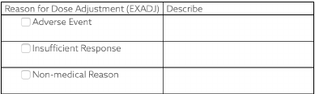
The free text description should be stored in the SUPPEX dataset.
- EXADJ = "NONMEDICAL REASON"
- SUPPEX QNAM = "EXADJDSC", QLABEL = "Reason For Dose Adjustment Description", QVAL = "PATIENT MISUNDERSTOOD INSTRUCTIONS"
Note that QNAM references the "parent" variable name with the addition of "DSC". Likewise, the label is a modification of the parent variable label.
When the CRF includes a list of values for a qualifier field that includes "Other" and the "Other" is supplemented with a "Specify" free text field, then the manner in which the free text "Specify" value is submitted will vary based on the sponsor's coding practice and analysis requirements.
For example, consider a CRF that collects the indication for an analgesic concomitant medication (CMINDC) using a list of pre-specified values and an "Other, specify" field:
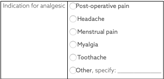
An investigator has selected "OTHER" and specified "Broken arm". Several options are available for submission of this data:
1) If the sponsor wishes to maintain controlled terminology for the CMINDC field and limit the terminology to the five pre-specified choices, then the free text is placed in SUPPCM.
| CMINDC |
|---|
| OTHER |
| QNAM | QLABEL | QVAL |
|---|---|---|
| CMINDOTH | Other Indication | BROKEN ARM |
2) If the sponsor wishes to maintain controlled terminology for CMINDC but will expand the terminology based on values seen in the specify field, then the value of CMINDC will reflect the sponsor's coding decision and SUPPCM could be used to store the verbatim text.
| CMINDC |
|---|
| FRACTURE |
| QNAM | QLABEL | QVAL |
|---|---|---|
| CMINDOTH | Other Indication | BROKEN ARM |
Note that the sponsor might choose a different value for CMINDC (e.g., "BONE FRACTURE") depending on the sponsor's coding practice and analysis requirements.
3) If the sponsor does not require that controlled terminology be maintained and wishes for all responses to be stored in a single variable, then CMINDC will be used and SUPPCM is not required.
| CMINDC |
|---|
| BROKEN ARM |
4.2.7.2 "Specify" Values for Result Qualifier Variables
When the CRF includes a list of values for a result field that includes "Other" and the "Other" is supplemented with a "Specify" free text field, then the manner in which the free text "Specify" value is submitted will vary based on the sponsor's coding practice and analysis requirements.
For example, consider a CRF where the sponsor requests the subject's eye color:
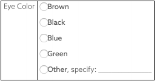
An investigator has selected "OTHER" and specified "BLUEISH GRAY". As in the above discussion for non-result Qualifier values, the sponsor has several options for submission:
1) If the sponsor wishes to maintain controlled terminology in the standard result field and limit the terminology to the five pre-specified choices, then the free text is placed in --ORRES and the controlled terminology in --STRESC.
| SCTEST | SCORRES | SCSTRESC |
|---|---|---|
| Eye Color | BLUEISH GRAY | OTHER |
2) If the sponsor wishes to maintain controlled terminology in the standard result field, but will expand the terminology based on values seen in the specify field, then the free text is placed in --ORRES and the value of --STRESC will reflect the sponsor's coding decision.
| SCTEST | SCORRES | SCSTRESC |
|---|---|---|
| Eye Color | BLUEISH GRAY | GRAY |
3) If the sponsor does not require that controlled terminology be maintained, the verbatim value will be copied to --STRESC.
| SCTEST | SCORRES | SCSTRESC |
|---|---|---|
| Eye Color | BLUEISH GRAY | BLUEISH GRAY |
4.2.7.3 "Specify" Values for Topic Variables
Interventions: If a list of specific treatments is provided along with "Other, Specify", --TRT should be populated with the name of the treatment found in the specified text. If the sponsor wishes to distinguish between the pre- specified list of treatments and those recorded under "Other, Specify," the --PRESP variable could be used. For example:
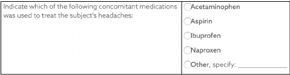
If ibuprofen and diclofenac were reported, the CM dataset would include the following:
| CMTRT | CMPRESP |
|---|---|
| IBUPROFEN | Y |
| DICLOFENAC |
Events: "Other, Specify" for Events may be handled similarly to Interventions. --TERM should be populated with the description of the event found in the specified text and --PRESP could be used to distinguish between prespecified and free text responses.
Findings: "Other, Specify" for tests may be handled similarly to Interventions. --TESTCD and --TEST should be populated with the code and description of the test found in the specified text. If specific tests are not prespecified on the CRF and the investigator has the option of writing in tests, then the name of the test would have to be coded to ensure that all --TESTCD and --TEST values are consistent with the test controlled terminology.
For example, a lab CRF collected values for Hemoglobin, Hematocrit and "Other, specify". The value the investigator wrote for "Other, specify" was "Prothrombin time" with an associated result and units. The sponsor would submit the controlled terminology for this test, i.e., LBTESTCD would be "PT" and LBTEST would be "Prothrombin Time", rather than the verbatim term, "Prothrombin time" supplied by the investigator.
4.2.8 Multiple Values for a Variable
4.2.8.1 Multiple Values for an Intervention or Event Topic Variable
If multiple values are reported for a topic variable (i.e., --TRT in an Interventions general-observation-class dataset or --TERM in an Events general-observation-class dataset), it is expected that the sponsor will split the values into multiple records or otherwise resolve the multiplicity per the sponsor's standard data management procedures. For example, if an adverse event term of "Headache and Nausea" or a concomitant medication of "Tylenol and Benadryl" is reported, sponsors will often split the original report into separate records and/or query the site for clarification. By the time of submission, the datasets should be in conformance with the record structures described in the SDTMIG. Note that the Disposition dataset (DS) is an exception to the general rule of splitting multiple topic values into separate records. For DS, one record for each disposition or protocol milestone is permitted according to the domain structure. For cases of multiple reasons for discontinuation see Section 6.2.3, Disposition, Assumption 5 for additional information.
4.2.8.2 Multiple Values for a Findings Result Variable
If multiple result values (--ORRES) are reported for a test in a Findings class dataset, multiple records should be submitted for that --TESTCD.
For example,
- EGTESTCD = "SPRTARRY", EGTEST = "Supraventricular Tachyarrhythmias", EGORRES = "ATRIAL FIBRILLATION"
- EGTESTCD = "SPRTARRY", EGTEST = "Supraventricular Tachyarrhythmias", EGORRES = "ATRIAL FLUTTER"
When a finding can have multiple results, the key structure for the findings dataset must be adequate to distinguish between the multiple results. See Section 4.1.8.3, Assigning Natural Keys in the Metadata.
4.2.8.3 Multiple Values for a Non-Result Qualifier Variable
The SDTM permits one value for each Qualifier variable per record. If multiple values exist (e.g., due to a "Check all that apply" instruction on a CRF), then the value for the Qualifier variable should be "MULTIPLE" and SUPP-- should be used to store the individual responses. It is recommended that the SUPP-- QNAM value reference the corresponding standard domain variable with an appended number or letter. In some cases, the standard variable name will be shortened to meet the 8-character variable name requirement, or it may be clearer to append a meaningful character string as shown in the second AE example below, where the first three characters of the drug name are appended. Likewise the QLABEL value should be similar to the standard label. The values stored in QVAL should be consistent with the controlled terminology associated with the standard variable. See Section 8.4, Relating Non-Standard Variables Values to a Parent Domain for additional guidance on maintaining appropriately unique QNAM values.
The following example includes selected variables from the ae.xpt and suppae.xpt datasets for a rash whose locations are the face, neck, and chest.
AE Dataset
| AETERM | AELOC |
|---|---|
| RASH | MULTIPLE |
SUPPAE Dataset
| QNAM | QLABEL | QVAL |
|---|---|---|
| AELOC1 | Location of the Reaction 1 | FACE |
| AELOC2 | Location of the Reaction 2 | NECK |
| AELOC3 | Location of the Reaction 3 | CHEST |
In some cases, values for QNAM and QLABEL more specific than those above may be needed.
For example, a sponsor might conduct a study with two study drugs (e.g., open-label study of Abcicin + Xyzamin), and may require the investigator assess causality and describe action taken for each drug for the rash:
AE Dataset
| AETERM | AEREL | AEACN |
|---|---|---|
| RASH | MULTIPLE | MULTIPLE |
SUPPAE Dataset
| QNAM | QLABEL | QVAL |
|---|---|---|
| AERELABC | Causality of Abcicin | POSSIBLY RELATED |
| AERELXYZ | Causality of Xyzamin | UNLIKELY RELATED |
| AEACNABC | Action Taken with Abcicin | DOSE REDUCED |
| AEACNXYZ | Action Taken with Xyzamin | DOSE NOT CHANGED |
In each of the above examples, the use of SUPPAE should be documented in the Define-XML document and the annotated CRF. The controlled terminology used should be documented as part of value-level metadata.
If the sponsor has clearly documented that one response is of primary interest (e.g., in the CRF, protocol, or analysis plan), the standard domain variable may be populated with the primary response and SUPP-- may be used to store the secondary response(s).
For example, if Abcicin is designated as the primary study drug in the example above:
AE Dataset
| AETERM | AEREL | AEACN |
|---|---|---|
| RASH | POSSIBLY RELATED | DOSE REDUCED |
SUPPAE Dataset
| QNAM | QLABEL | QVAL |
|---|---|---|
| AERELX | Causality of Xyzamin | UNLIKELY RELATED |
| AEACNX | Action Taken with Xyzamin | DOSE NOT CHANGED |
Note that in the latter case, the label for standard variables AEREL and AEACN will have no indication that they pertain to Abcicin. This association must be clearly documented in the metadata and annotated CRF.
4.2.9 Variable Lengths
Very large transport files have become an issue for FDA to process. One of the main contributors to the large file sizes has been sponsors using the maximum length of 200 for character variables. To help rectify this situation:
- The maximum SAS Version 5 character variable length of 200 characters should not be used unless necessary.
- Sponsors should consider the nature of the data and apply reasonable, appropriate lengths to variables. For example:
The length of flags will always be 1.
o
--TESTCD and IDVAR will never be more than 8, so the length can always be set to 8.
o
The length for variables that use controlled terminology can be set to the length of the longest term.
o
4.3 Coding and Controlled Terminology Assumptions
Examples provided in the column "CDISC Notes" are only examples and not intended to imply controlled terminology. Check current controlled terminology at this link: http://www.cancer.gov/cancertopics/cancerlibrary/terminologyresources/cdisc
4.3.1 Types of Controlled Terminology
As of SDTMIG v3.3, controlled terminology is represented one of the following ways:
- A single asterisk, "*", when CDISC controlled terminology is not available at the current time, but the SDS Team expects that sponsors may have their own controlled terminology and/or the CDISC Controlled Terminology Team may develop controlled terminology in the future.
- The single applicable value for the variable DOMAIN, e.g., "PR".
- The name of a CDISC codelist, represented as a hyperlink in parentheses, e.g., "(NY)".
- A short reference to an external terminology, such as "MedDRA" or "ISO 3166 Alpha-3".
In addition, the "Controlled Terms, Codelist or Format" column has been used to indicate variables that use an ISO 8601 format.
4.3.2 Controlled Terminology Text Case
Terms from controlled terminology should be in the case that appears the source codelist or code system (e.g., CDISC codelist or external code system such as MedDRA). See Section 4.2.4 Text Case in Submitted Data.
4.3.3 Controlled Terminology Values
The controlled terminology or a reference to the controlled terminology should be included in the Define-XML document file wherever applicable. All values in the permissible value set for the study should be included, whether they are represented in the submitted data or not. Note that a null value should not be included in the permissible value set. A null value is implied for any list of controlled terms unless the variable is "Required" (see Section 4.1.5, SDTM Core Designations).
When a domain or datasetspecification includes a codelist for a variable, not every value in that codelist may have been part of planned data collection; only values that were part of planned data collection should be included in the Define-XML document. For example, --PRESP variables are associated with the NY codelist, but only the value "Y" is allowed in --PRESP variables. Future versions of the Define-XML Specification are expected to include information on representing subsets of controlled terminology.
4.3.4 Use of Controlled Terminology and Arbitrary Number Codes
Controlled terminology or human-readable text should be used instead of arbitrary number codes in order to reduce ambiguity for submission reviewers. For example, CMDECOD would contain human-readable dictionary text rather than a numeric code. Numeric code values may be submitted as Supplemental Qualifiers if necessary.
4.3.5 Storing Controlled Terminology for Synonym Qualifier Variables
- For events such as AEs and Medical History, populate --DECOD with the dictionary's preferred term and populate --BODSYS with the preferred body system name. If a dictionary is multi-axial, the value in -- BODSYS should represent the system organ class (SOC) used for the sponsor's analysis and summary tables, which may not necessarily be the primary SOC. Populate --SOC with the dictionary-derived primary SOC. In cases where the primary SOC was used for analysis, --BODSYS and --SOC are the same.
- If the MedDRA dictionary was used to code events, the intermediate levels in the MedDRA hierarchy should also be represented in the dataset. A pair of variables has been defined for each of the levels of the hierarchy other than SOC and PT: one to represent the text description and the other to represent the code value associated with it. For example, --LLT should be used to represent the Lowest Level Term text description and --LLTCD should be used to represent the Lowest Level Term code value.
- For concomitant medications, populate CMDECOD with the drug's generic name and populate CMCLAS with the drug class used for the sponsor's analysis and summary tables. If coding to multiple classes, follow Section 4.2.8.1, Multiple Values for an Intervention or Event Topic Variable, or omit CMCLAS.
- For concomitant medications, supplemental qualifiers may be used to represent additional coding dictionary information, e.g., a drug's ATC codes from the WHO Drug dictionary (see Section 8.4, Relating Non-Standard Variables Values to a Parent Domain for more information).
The sponsor is expected to provide the dictionary name and version used to map the terms by utilizing the Define-XML external codelist attributes.
4.3.6 Storing Topic Variables for General Domain Models
The topic variable for the Interventions and Events general-observation-class models is often stored as verbatim text. For an Events domain, the topic variable is --TERM. For an Interventions domain, the topic variable is --TRT. For a Findings domain, the topic variable, --TESTCD, should use Controlled Terminology (e.g., "SYSBP" for Systolic Blood Pressure). If CDISC standard controlled terminology exists, it should be used; otherwise, sponsors should define their own controlled list of terms. If the verbatim topic variable in an Interventions or Event domain is modified to facilitate coding, the modified text is stored in --MODIFY. In most cases (other than PE), the dictionary- coded text is derived into --DECOD. Since the PEORRES variable is modified instead of the topic variable for PE, the dictionary-derived text would be placed in PESTRESC. The variables used in each of the defined domains are:
| Domain | Original Verbatim | Modified Verbatim | Standardized Value |
|---|---|---|---|
| AE | AETERM | A EMODIFY | AEDECOD |
| DS | DSTERM | DSDECOD | |
| CM | CMTRT | CMMODIFY | CMDECOD |
| MH | MHTERM | MHMODIFY | MHDECOD |
| PE | PEORRES | PEMODIFY | PESTRESC |
4.3.7 Use of "Yes" and "No" Values
Variables where the response is "Yes" or "No" ("Y" or "N") should normally be populated for both "Y" and "N" responses. This eliminates confusion regarding whether a blank response indicates "N" or is a missing value. However, some variables are collected or derived in a manner that allows only one response, such as when a single check box indicates "Yes". In situations such as these, where it is unambiguous to populate only the response of interest, it is permissible to populate only one value ("Y" or "N") and leave the alternate value blank. An example of when it would be acceptable to use only a value of "Y" would be for Last Observation Before Exposure Flag
(--LOBXFL) variables, where "N" is not necessary to indicate that a value is not the last observation before exposure.
Note: Permissible values for variables with controlled terms of "Y" or "N" may be extended to include "U" or "NA" if it is the sponsor's practice to explicitly collect or derive values indicating "Unknown" or "Not Applicable" for that variable.
4.4 Actual and Relative Time Assumptions
Timing variables (SDTM Table 2.2.5) are an essential component of all SDTM subject-level domain datasets. In general, all domains based on the three general observation classes should have at least one Timing variable. In the Events or Interventions general observation class, this could be the start date of the event or intervention. In the Findings observation class, where data are usually collected at multiple visits, at least one Timing variable must be used.
The SDTMIG requires dates and times of day to be stored according to the international standard ISO 8601 (http://www.iso.org). ISO 8601 provides a text-based representation of dates and/or times, intervals of time, and durations of time.
4.4.1 Formats for Date/Time Variables
An SDTM DTC variable may include data that is represented in ISO 8601 format as a complete date/time, a partial date/time, or an incomplete date/time.
The SDTMIG template uses ISO 8601 for calendar dates and times of day, which are expressed as follows:
- YYYY-MM-DDThh:mm:ss(.n+)?(((+|-)hh:mm)|Z)?
where:
- [YYYY] = four-digit year
- [MM] = two-digit representation of the month (01-12, 01=January, etc.)
- [DD] = two-digit day of the month (01 through 31)
- [T] = (time designator) indicates time information follows
- [hh] = two digits of hour (00 through 23) (am/pm is NOT allowed)
- [mm] = two digits of minute (00 through 59)
- [ss] = two digits of second (00 through 59)
The last two components, indicated in the format pattern with a question mark, are optional:
- [(.n+)?] = optional fractions of seconds
- [(((+|-)hh:mm)|Z)?] = optional time zone
Other characters defined for use within the ISO 8601 standard are:
- [-] (hyphen): to separate the time Elements "year" from "month" and "month" from "day" and to represent missing date components.
- [:] (colon): to separate the time Elements "hour" from "minute" and "minute" from "second"
- [/] (solidus): to separate components in the representation of date/time intervals
- [P] (duration designator): precedes the components that represent the duration
Spaces are not allowed in any ISO 8601 representations
Key aspects of the ISO 8601 standard are as follows:
- ISO 8601 represents dates as a text string using the notation YYYY-MM-DD.
- ISO 8601 represents times as a text string using the notation hh:mm:ss(.n+)?(((+|-)hh:mm)|Z)?.
- The SDTM and SDTMIG require use of the ISO 8601 Extended format, which requires hyphen delimiters for date components and colon delimiters for time components. The ISO 8601 basic format, which does not require delimiters, should not be used in SDTM datasets.
- When a date is stored with a time in the same variable (as a date/time), the date is written in front of the time and the time is preceded with "T" using the notation YYYY-MM-DDThh:mm:ss (e.g. 2001-12-26T00:00:01).
Implementation of the ISO 8601 standard means that date/time variables are character/text data types. The SDTM fragment employed for date/time character variables is DTC.
4.4.2 Date/Time Precision
The concept of representing date/time precision is handled through use of the ISO 8601 standard. According to ISO 8601, precision (also referred to by ISO 8601 as "completeness" or "representations with reduced accuracy") can be inferred from the presence or absence of components in the date and/or time values. Missing components are represented by right truncation or a hyphen (for intermediate components that are missing). If the date and time values are completely missing, the SDTM date field should be null. Every component except year is represented as two digits. Years are represented as four digits; for all other components, one-digit numbers are always padded with a leading zero.
The table below provides examples of ISO 8601 representations of complete and truncated date/time values using ISO 8601 "appropriate right truncations" of incomplete date/time representations. Note that if no time component is represented, the [T] time designator (in addition to the missing time) must be omitted in ISO 8601 representation.
| Date and Time as Originally Recorded | Precision | ISO 8601 Date/Time | |
|---|---|---|---|
| 1 | December 15, 2003 13:14:17.123 | Date/time, including fractional seconds | 2003-12-15T13:14:17.123 |
| 2 | December 15, 2003 13:14:17 | Date/time to the nearest second | 2003-12-15T13:14:17 |
| 3 | December 15, 2003 13:14 | Unknown seconds | 2003-12-15T13:14 |
| 4 | December 15, 2003 13 | Unknown minutes and seconds | 2003-12-15T13 |
| 5 | December 15, 2003 | Unknown time | 2003-12-15 |
| 6 | December, 2003 | Unknown day and time | 2003-12 |
| 7 | 2003 | Unknown month, day, and time | 2003 |
This date and date/time model also provides for imprecise or estimated dates, such as those commonly seen in Medical History. To represent these intervals while applying the ISO 8601 standard, it is recommended that the sponsor concatenate the date/time values (using the most complete representation of the date/time known) that describe the beginning and the end of the interval of uncertainty and separate them with a solidus as shown in the table below:
| Interval of Uncertainty | ISO 8601 Date/Time | |
|---|---|---|
| 1 | Between 10:00 and 10:30 on the morning of December 15, 2003 | 2003-12-15T10:00/2003-12-15T10:30 |
| 2 | Between the first of this year (2003) until "now" (February 15, 2003) | 2003-01-01/2003-02-15 |
| 3 | Between the first and the tenth of December, 2003 | 2003-12-01/2003-12-10 |
| 4 | Sometime in the first half of 2003 | 2003-01-01/2003-06-30 |
Other uncertainty intervals may be represented by the omission of components of the date when these components are unknown or missing. As mentioned above, ISO 8601 represents missing intermediate components through the use of a hyphen where the missing component would normally be represented. This may be used in addition to "appropriate right truncations" for incomplete date/time representations. When components are omitted, the expected delimiters must still be kept in place and only a single hyphen is to be used to indicate an omitted component. Examples of this method of omitted component representation are shown in the table below:
| Date and Time as Originally Recorded | Level of Uncertainty | ISO 8601 | |
|---|---|---|---|
| Dat/Time | |||
| 1 | December 15, 2003 13:15:17 | Date/time to the nearest second | 2003-12-15T13:15:17 |
| 2 | December 15, 2003 ??:15 | Unknown hour with known minutes | 2003-12-15T-:15 |
| 3 | December 15, 2003 13:??:17 | Unknown minutes with known date, hours, and seconds | 2003-12-15T13:-:17 |
| 4 | The 15th of some month in 2003, time not collected | Unknown month and time with known year and day | 2003---15 |
| 5 | December 15, but can't remember the year, time not collected | Unknown year with known month and day | --12-15 |
| 6 | 7:15 of some unknown date | Unknown date with known hour and minute | -----T07:15 |
Note that Row 6 above, where a time is reported with no date information, represents a very unusual situation. Since most data is collected as part of a visit, when only a time appears on a CRF, it is expected that the date of the visit would usually be used as the date of collection.
Using a character-based data type to implement the ISO 8601 date/time standard will ensure that the date/time information will be machine and human readable without the need for further manipulation, and will be platform and software independent.
4.4.3 Intervals of Time and Use of Duration for --DUR Variables
4.4.3.1 Intervals of Time and Use of Duration
As defined by ISO 8601, an interval of time is the part of a time axis, limited by two time "instants" such as the times represented in SDTM by the variables --STDTC and --ENDTC. These variables represent the two instants that bound an interval of time, while the duration is the quantity of time that is equal to the difference between these time points.
ISO 8601 allows an interval to be represented in multiple ways. One representation, shown below, uses two dates in the format:
YYYY-MM-DDThh:mm:ss/YYYY-MM-DDThh:mm:ss
While the above would represent the interval (by providing the start date/time and end date/time to bound the interval of time), it does not provide the value of the duration (the quantity of time).
Duration is frequently used during a review; however, the duration timing variable (--DUR) should generally be used in a domain if it was collected in lieu of a start date/time (--STDTC) and end date/time (--ENDTC). If both -- STDTC and --ENDTC are collected, durations can be calculated by the difference in these two values, and need not be in the submission dataset.
Both duration and duration units can be provided in the single --DUR variable, in accordance with the ISO 8601 standard. The values provided in --DUR should follow one of the following ISO 8601 duration formats:
PnYnMnDTnHnMnS
- or -
PnW
where:
- [P] (duration designator): precedes the alphanumeric text string that represents the duration. Note that the use of the character P is based on the historical use of the term "period" for duration.
- [n] represents a positive number or zero
- [W] is used as week designator, preceding a data Element that represents the number of calendar weeks within the calendar year (e.g., P6W represents 6 weeks of calendar time).
The letter "P" must precede other values in the ISO 8601 representation of duration. The "n" preceding each letter represents the number of Years, Months, Days, Hours, Minutes, Seconds, or the number of Weeks. As with the date/time format, "T" is used to separate the date components from time components.
Note that weeks cannot be mixed with any other date/time components such as days or months in duration expressions.
As is the case with the date/time representation in --DTC, --STDTC, or --ENDTC, only the components of duration that are known or collected need to be represented. Also, as is the case with the date/time representation, if no time component is represented, the [T] time designator (in addition to the missing time) must be omitted in ISO 8601 representation.
ISO 8601 also allows that the "lowest-order components" of duration being represented may be represented in decimal format. This may be useful if data are collected in formats such as "one and one-half years", "two and one- half weeks", "one-half a week" or "one quarter of an hour" and the sponsor wishes to represent this "precision" (or lack of precision) in ISO 8601 representation. Remember that this is ONLY allowed in the lowest-order (right-most) component in any duration representation.
The table below provides some examples of ISO-8601-compliant representations of durations:
| Duration as originally recorded | ISO 8601 Duration |
|---|---|
| 2 Years | P2Y |
| 10 weeks | P10W |
| 3 Months 14 days | P3M14D |
| 3 Days | P3D |
| 6 Months 17 Days 3 Hours | P6M17DT3H |
| 14 Days 7 Hours 57 Minutes | P14DT7H57M |
| 42 Minutes 18 Seconds | PT42M18S |
| One-half hour | PT0.5H |
| 5 Days 12¼ Hours | P5DT12.25H |
| 4 ½ Weeks | P4.5W |
Note that a leading zero is required with decimal values less than one.
4.4.3.2 Interval with Uncertainty
When an interval of time is an amount of time (duration) following an event whose start date/time is recorded (with some level of precision, i.e. when one knows the start date/time and the duration following the start date/time), the correct ISO 8601 usage to represent this interval is as follows:
YYYY-MM-DDThh:mm:ss/PnYnMnDTnHnMnS
where the start date/time is represented before the solidus [/], the "Pn…" following the solidus represents a "duration", and the entire representation is known as an "interval". Note that this is the recommended representation of elapsed time, given a start date/time and the duration elapsed.
When an interval of time is an amount of time (duration) measured prior to an event whose start date/time is recorded (with some level of precision, i.e., where one knows the end date/time and the duration preceding that end date/time), the syntax is:
PnYnMnDTnHnMnS/YYYY-MM-DDThh:mm:ss
where the duration, "Pn…", is represented before the solidus [/], the end date/time is represented following the solidus, and the entire representation is known as an "interval".
4.4.4 Use of the "Study Day" Variables
The permissible Study Day variables (--DY, --STDY, and --ENDY) describe the relative day of the observation starting with the reference date as Day 1. They are determined by comparing the date portion of the respective date/time variables (--DTC, --STDTC, and --ENDTC) to the date portion of the Subject Reference Start Date (RFSTDTC from the Demographics domain).
The Subject Reference Start Date (RFSTDTC) is designated as Study Day 1. The Study Day value is incremented by 1 for each date following RFSTDTC. Dates prior to RFSTDTC are decreased by 1, with the date preceding RFSTDTC designated as Study Day -1 (there is no Study Day 0). This algorithm for determining Study Day is consistent with how people typically describe sequential days relative to a fixed reference point, but creates problems if used for mathematical calculations because it does not allow for a Day 0. As such, Study Day is not suited for use in subsequent numerical computations, such as calculating duration. The raw date values should be used rather than Study Day in those calculations.
All Study Day values are integers. Thus, to calculate Study Day:
--DY = (date portion of --DTC) - (date portion of RFSTDTC) + 1 if --DTC is on or after RFSTDTC
--DY = (date portion of --DTC) - (date portion of RFSTDTC) if --DTC precedes RFSTDTC
This algorithm should be used across all domains.
4.4.5 Clinical Encounters and Visits
All domains based on the three general observation classes should have at least one timing variable. For domains in the Events or Interventions observation classes, and for domains in the Findings observation class, for which data are collected only once during the study, the most appropriate timing variable may be a date (e.g., --DTC, --STDTC) or some other timing variable. For studies that are designed with a prospectively defined schedule of visit-based activities, domains for data that are to be collected more than once per subject (e.g., Labs, ECG, Vital Signs) are expected to include VISITNUM as a timing variable.
Clinical encounters are described by the CDISC Visit variables. For planned visits, values of VISIT, VISITNUM, and VISITDY must be those defined in the Trial Visits (TV) dataset (Section 7.3.1, Trial Visits). For planned visits:
- Values of VISITNUM are used for sorting and should, wherever possible, match the planned chronological order of visits. Occasionally, a protocol will define a planned visit whose timing is unpredictable (e.g., one planned in response to an adverse event, a threshold test value, or a disease event), and completely chronological values of VISITNUM may not be possible in such a case.
- There should be a one-to-one relationship between values of VISIT and VISITNUM.
- For visits that may last more than one calendar day, VISITDY should be the planned day of the start of the visit.
Sponsor practices for populating visit variables for unplanned visits may vary across sponsors.
- VISITNUM should generally be populated, even for unplanned visits, as it is expected in many Findings domains, as described above. The easiest method of populating VISITNUM for unplanned visits is to assign the same value (e.g., 99) to all unplanned visits, but this method provides no differentiation between the unplanned visits and does not provide chronological sorting. Methods that provide a one-to-one relationship between visits and values of VISITNUM, that are consistent across domains, and that assign VISITNUM values that sort chronologically require more work and must be applied after all of a subject's unplanned visits are known.
- VISIT may be left null or may be populated with a generic value (e.g., "Unscheduled") for all unplanned visits, or individual values may be assigned to different unplanned visits.
- VISITDY must not be populated for unplanned visits, since VISITDY is, by definition, the planned study day of visit, and since the actual study day of an unplanned visit belongs in a --DY variable.
The following table shows an example of how the visit identifiers might be used for lab data:
| USUBJID | VISIT | VISITNUM | VISITDY | LBDY |
|---|---|---|---|---|
| 001 | Week 1 | 2 | 7 | 7 |
| 001 | Week 2 | 3 | 14 | 13 |
| 001 | Week 2 Unscheduled | 3.1 | 17 |
4.4.6 Representing Additional Study Days
The SDTM allows to represent study days relative to the RFSTDTC reference start date variable in the DM dataset, using variables --DY, as described above in Section 4.4.4, Use of the "Study Day" Variables. The calculation of additional study days within subdivisions of time in a clinical trial may be based on one or more sponsor-defined reference dates not represented by RFSTDTC. In such cases, the sponsor may define Supplemental Qualifier variables and the Define-XML document should reflect the reference dates used to calculate such study days. If the sponsor wishes to define "day within element" or "day within epoch", the reference date/time will be an element start date/time in the Subject Elements (SE) dataset (Section 5.3, Subject Elements).
4.4.7 Use of Relative Timing Variables
--STRF and --ENRF
The variables --STRF and --ENRF represent the timing of an observation relative to the sponsor-defined Study Reference Period, when information such as "BEFORE", "PRIOR", "ONGOING"', or "CONTINUING" is collected in lieu of a date and this collected information is in relation to the sponsor-defined Study Reference Period. The sponsor-defined Study Reference Period is the continuous period of time defined by the discrete starting point, RFSTDTC, and the discrete ending point, RFENDTC, for each subject in the Demographics dataset.
--STRF is used to identify the start of an observation relative to the sponsor-defined Study Reference Period.
--ENRF is used to identify the end of an observation relative to the sponsor-defined Study Reference Period.
Allowable values for --STRF are "BEFORE", "DURING", "DURING/AFTER", "AFTER", and "U" (for unknown). Although "COINCIDENT" and "ONGOING" are in the STENRF codelist, they describe timing relative to a point in time rather than an interval of time, so are not appropriate for use with --STRF variables. It would be unusual for an event or intervention to be recorded as starting "AFTER" the Study Reference Period, but could be possible, depending on how the Study Reference Period is defined in a particular study.
Allowable values for --ENRF are "BEFORE", "DURING", "DURING/AFTER", "AFTER" and "U" (for unknown). If --ENRF is used, then --ENRF = "AFTER" means that the event did not end before or during the Study Reference Period. Although "COINCIDENT" and "ONGOING" are in the STENRF codelist, they describe timing relative to a point in time rather than an interval of time, so are not appropriate for use with --ENRF variables.
As an example, a CRF checkbox that identifies concomitant medication use that began prior to the Study Reference Period would translate into CMSTRF = "BEFORE", if selected. Note that in this example, the information collected is with respect to the start of the concomitant medication use only, and therefore the collected data corresponds to variable CMSTRF, not CMENRF. Note also that the information collected is relative to the Study Reference Period, which meets the definition of CMSTRF.
Some sponsors may wish to derive --STRF and --ENRF for analysis or reporting purposes even when dates are collected. Sponsors are cautioned that doing so in conjunction with directly collecting or mapping data such as "BEFORE", "PRIOR", "ONGOING", etc., to --STRF and --ENRF will blur the distinction between collected and derived values within the domain. Sponsors wishing to do such derivations are instead encouraged to use analysis datasets for this derived data.
In general, sponsors are cautioned that representing information using variables --STRF and --ENRF may not be as precise as other methods, particularly because information is often collected relative to a point in time or to a period of time other than the one defined as the Study Reference Period. SDTMIG v3.1.2 attempted to address these limitations by the addition of four new relative timing variables, which are described in the following paragraph. Sponsors should use the set of variables that allows for accurate representation of the collected data. In many cases, this will mean using these new relative timing variables in place of --STRF and --ENRF.
--STRTPT, --STTPT, --ENRTPT, and --ENTPT
While the variables --STRF and --ENRF are useful in the case when relative timing assessments are made coincident with the start and end of the Study Reference Period, these may not be suitable for expressing relative timing assessments such as "Prior" or "Ongoing" that are collected at other times of the study. As a result, four new timing variables were added in v3.1.2 to express a similar concept at any point in time. The variables --STRTPT and -- ENRTPT contain values similar to --STRF and --ENRF, but may be anchored with any timing description or date/time value expressed in the respective --STTPT and --ENTPT variables, and are not limited to the Study Reference Period. Unlike the variables --STRF and --ENRF, which for all domains are defined relative to one Study Reference Period, the timing variables --STRTPT, --STTPT, --ENRTPT, and --ENTPT are defined by each sponsor for each study. Allowable values for --STRTPT and --ENRTPT are as follows:
If the reference time point corresponds to the date of collection or assessment:
- Start values: An observation can start BEFORE that time point, can start COINCIDENT with that time point, or it is unknown (U) when it started.
- End values: An observation can end BEFORE that time point, can end COINCIDENT with that time point, can be known that it didn't end but was ONGOING, or it is unknown (U) when it ended or if it was ongoing.
- AFTER is not a valid value in this case because it would represent an event after the date of collection.
If the reference time point is prior to the date of collection or assessment:
- Start values: An observation can start BEFORE the reference point, can start COINCIDENT with the reference point, can start AFTER the reference point, or it may not be known (U) when it started.
- End values: An observation can end BEFORE the reference point, can end COINCIDENT with the reference point, can end AFTER the reference point, can be known that it didn't end but was ONGOING, or it is unknown (U) when it ended or if it was ongoing.
Although "DURING" and "DURING/AFTER" are in the STENRF codelist, they describe timing relative to an interval of time rather than a point in time, so are not allowable for use with --STRTPT and --ENRTPT variables.
Examples of --STRTPT, --STTPT, --ENRTPT, and --ENTPT
Example 1: Medical History
Assumptions:
- CRF contains "Year Started" and check box for "Active"
- "Date of Assessment" is collected
Example when "Active" is checked:
- MHDTC = date of assessment value, e.g., "2006-11-02"
- MHSTDTC = year of condition start, e.g., "2002"
- MHENRTPT = "ONGOING"
- MHENTPT = date of assessment value, e.g., "2006-11-02"
Figure 4.4.7: Example of --ENRTPT and --ENTPT for Medical History
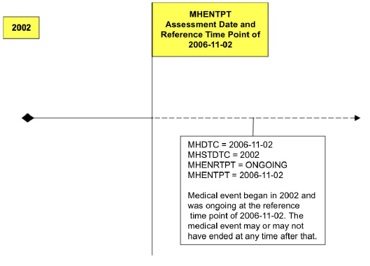
Example 2: Prior and Concomitant Medications
Assumptions:
- CRF includes collection of "Start Date" and "Stop Date", and check boxes for
"Prior" if start date was before the screening visit and was unknown or uncollected
o
"Continuing" if medication had not stopped as of the final study visit, so no end date was collected
o
Example when both "Prior" and "Continuing" are checked:
- CMSTDTC is null
- CMENDTC is null
- CMSTRTPT = "BEFORE"
- CMSTTPT is screening date, e.g., "2006-10-21"
- CMENRTPT = "ONGOING"
- CMENTPT is final study visit date, e.g., "2006-11-02"
Example 3: Adverse Events
Assumptions:
- CRF contains "Start Date", "Stop Date"
- Collection of "Outcome" includes check boxes for "Continuing" and "Unknown", to be used, if necessary, at the end of the subject's participation in the trial
- No assessment date or visit information was collected
Example when "Unknown" is checked:
- AESTDTC is start date, e.g., "2006-10-01"
- AEENDTC is null
- AEENRTPT = "U"
- AEENTPT is final subject contact date, e.g., "2006-11-02"
4.4.8 Date and Time Reported in a Domain Based on Findings
When the date/time of collection is reported in any domain, the date/time should go into the --DTC field (e.g., EGDTC for Date/Time of ECG). For any domain based on the Findings general observation class, such as lab tests which are based on a specimen, the collection date is likely to be tied to when the specimen or source of the finding was captured, not necessarily when the data were recorded. In order to ensure that the critical timing information is always represented in the same variable, the --DTC variable is used to represent the time of specimen collection. For example, in the LB domain the LBDTC variable would be used for all single-point blood collections or spot urine collections. For timed lab collections (e.g., 24-hour urine collections) the LBDTC variable would be used for the start date/time of the collection and LBENDTC for the end date/time of the collection. This approach will allow the single-point and interval collections to use the same date/time variables consistently across all datasets for the Findings general observation class. The table below illustrates the proper use of these variables. Note that --STDTC is not used for collection dates over an interval in the Findings general observation class and is therefore blank in the following table.
| Collection Type | --DTC | --STDTC | --ENDTC |
|---|---|---|---|
| Single-Point Collection | X | ||
| Interval Collection | X | X |
4.4.9 Use of Dates as Result Variables
Dates are generally used only as timing variables to describe the timing of an event, intervention, or collection activity, but there may be occasions when it may be preferable to model a date as a result (--ORRES) in a Findings dataset. Note that using a date as a result to a Findings question is unusual and atypical, and should be approached with caution. This situation, however, may occasionally occur when a) a group of questions (each of which has a date response) is asked and analyzed together; or b) the Event(s) and Intervention(s) in question are not medically significant (often the case when included in questionnaires). Consider the following cases:
- Calculated due date
- Date of last day on the job
- Date of high school graduation
One approach to modeling these data would be to place the text of the question in --TEST and the response to the question, a date represented in ISO 8601 format, in --ORRES and --STRESC, as long as these date results do not contain the dates of medically significant events or interventions.
Again, use extreme caution when storing dates as the results of Findings. Remember, in most cases, these dates should be timing variables associated with a record in an Intervention or Events dataset.
4.4.10 Representing Time Points
Time points can be represented using the time point variables, --TPT, --TPTNUM, --ELTM, and the time point anchors, --TPTREF (text description) and --RFTDTC (the date/time). Note that time-point data will usually have an associated --DTC value. The interrelationship of these variables is shown in Figure 4.4.10 below.
Figure 4.4.10: Relationships among Time Point Variables
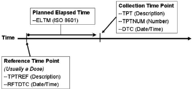
Values for these variables for Vital Signs measurements taken at 30, 60, and 90 minutes after dosing would look like the following.
| VSTPTNUM | VSTPT | VSELTM | VSTPTREF | VSRFTDTC | VSDTC |
|---|---|---|---|---|---|
| 1 | 30 MIN | PT30M | DOSE ADMINISTRATION | 2006-08-01T08:00 | 2006-08-01T08:30 |
| 2 | 60 MIN | PT1H | DOSE ADMINISTRATION | 2006-08-01T08:00 | 2006-08-01T09:01 |
| 3 | 90 MIN | PT1H30M | DOSE ADMINISTRATION | 2006-08-01T08:00 | 2006-08-01T09:32 |
Note that VSELTM is the planned elapsed time, not the actual elapsed time. The actual elapsed time could be derived in an analysis dataset, if desired, as VSDTC-VSRFTDTC.
Values for these variables for Urine Collections taken pre-dose, and from 0-12 hours and 12-24 hours after dosing would look like the following.
| LBTPTNUM | LBTPT | LBELTM | LBTPTREF | LBRFTDTC | LBDTC |
|---|---|---|---|---|---|
| 1 | 15 MIN PRE-DOSE | -PT15M | DOSE ADMINISTRATION | 2006-08-01T08:00 | 2006-08-01T07:45 |
| 2 | 0-12 HOURS | PT12H | DOSE ADMINISTRATION | 2006-08-01T08:00 | 2006-08-01T20:35 |
| 3 | 12-24 HOURS | PT24H | DOSE ADMINISTRATION | 2006-08-01T08:00 | 2006-08-02T08:40 |
Note that the value in LBELTM represents the end of the specimen collection interval.
When time points are used, --TPTNUM is expected. Time points may or may not have an associated --TPTREF. Sometimes, --TPTNUM may be used as a key for multiple values collected for the same test within a visit; as such, there is no dependence upon an anchor such as --TPTREF, but there will be a dependency upon the VISITNUM. In such cases, VISITNUM will be required to confer uniqueness to values of --TPTNUM.
If the protocol describes the scheduling of a dose using a reference intervention or assessment, then --TPTREF should be populated, even if it does not contribute to uniqueness. The fact that time points are related to a reference time point, and what that reference time point is, are important for interpreting the data collected at the time point.
Not all time points will require all three variables to provide uniqueness. In fact, in some cases a time point may be uniquely identified without the use of VISIT, or without the use of --TPTREF, or, without the use of either one. For instance:
- A trial might have time points only within one visit, so that the contribution of VISITNUM to uniqueness is trivial. (VISITNUM would be populated, but would not contribute to uniqueness.)
- A trial might have time points that do not relate to any visit, such as time points relative to a dose of drug self- administered by the subject at home. (Visit variables would not be included, but --TPTREF and other time point variables would be populated.)
- A trial may have only one reference time point per visit, and all reference time points may be similar, so that only one value of --TPTREF (e.g., "DOSE") is needed. (--TPTREF would be populated, but would not contribute to uniqueness.)
- A trial may have time points not related to a reference time point. For instance, --TPTNUM values could be used to distinguish first, second, and third repeats of a measurement scheduled without any relationship to dosing. (--TPTREF and --ELTM would not be included.) In this case, where the protocol calls for repeated measurements but does not specify timing of the measurements, the --REPNUM variable could be used instead of time point variables.
For trials with many time points, the requirement to provide uniqueness using only VISITNUM, --TPTREF, and -- TPTNUM may lead to a scheme where multiple natural keys are combined into the values of one of these variables.
For instance, in a crossover trial with multiple doses on multiple days within each period, either of the following options could be used. VISITNUM might be used to designate period, --TPTREF might be used to designate the day and the dose, and --TPTNUM might be used to designate the timing relative to the reference time point. Alternatively, VISITNUM might be used to designate period and day within period, --TPTREF might be used to designate the dose within the day, and --TPTNUM might be used to designate the timing relative to the reference time point.
Option 1
| VISIT | VISITNUM | --TPT | --TPTNUM | --TPTREF |
|---|---|---|---|---|
| PERIOD 1 | 3 | PRE-DOSE | 1 | DAY 1, AM DOSE |
| 1H | 2 | |||
| 4H | 3 | |||
| PRE-DOSE | 1 | DAY 1, PM DOSE | ||
| 1H | 2 | |||
| 4H | 3 | |||
| PRE-DOSE | 1 | DAY 5, AM DOSE | ||
| 1H | 2 | |||
| 4H | 3 | |||
| PRE-DOSE | 1 | DAY 5, PM DOSE | ||
| 1H | 2 | |||
| 4H | 3 | |||
| PERIOD 2 | 4 | PRE-DOSE | 1 | DAY 1, AM DOSE |
| 1H | 2 | |||
| 4H | 3 | |||
| PRE-DOSE | 1 | DAY 1, PM DOSE | ||
| 1H | 2 | |||
| 4H | 3 |
Option 2
| VISIT | VISITNUM | --TPT | --TPTNUM | --TPTREF |
|---|---|---|---|---|
| PERIOD 1, DAY 1 | 3 | PRE-DOSE | 1 | AM DOSE |
| 1H | 2 | |||
| 4H | 3 | |||
| PRE-DOSE | 1 | PM DOSE | ||
| 1H | 2 | |||
| 4H | 3 | |||
| PERIOD 1, DAY 5 | 4 | PRE-DOSE | 1 | AM DOSE |
| 1H | 2 | |||
| 4H | 3 | |||
| PRE-DOSE | 1 | PM DOSE | ||
| 1H | 2 | |||
| 4H | 3 | |||
| PERIOD 2, DAY 1 | 5 | PRE-DOSE | 1 | AM DOSE |
| 1H | 2 | |||
| 4H | 3 | |||
| PRE-DOSE | 1 | PM DOSE | ||
| 1H | 2 | |||
| 4H | 3 |
Within the context that defines uniqueness for a time point, which may include domain, visit, and reference time point, there must be a one-to-relationship between values of --TPT and --TPTNUM. In other words, if domain, visit, and reference time point uniquely identify subject data, then if two subjects have records with the same values of DOMAIN, VISITNUM, --TPTREF, and --TPTNUM, then these records may not have different time point descriptions in --TPT.
Within the context that defines uniqueness for a time point, there is likely to be a one-to-one relationship between most values of --TPT and --ELTM. However, since --ELTM can only be populated with ISO 8601 periods of time (as described in Section 4.4.3, Intervals of Time and Use of Duration for --DUR Variables), --ELTM may not be populated for all time points. For example, --ELTM is likely to be null for time points described by text such as "pre-dose" or "before breakfast". When --ELTM is populated, if two subjects have records with the same values of DOMAIN, VISITNUM, --TPTREF, and --TPTNUM, then these records may not have different values in --ELTM.
When the protocol describes a time point with text such as "4-6 hours after dose" or "12 hours +/- 2 hours after dose" the sponsor may choose whether and how to populate --ELTM. For example, a time point described as "4-6 hours after dose" might be associated with an --ELTM value of PT4H. A time point described as "12 hours +/- 2 hours after dose" might be associated with an --ELTM value of PT12H. Conventions for populating --ELTM should be consistent (the examples just given would probably not both be used in the same trial). It would be good practice to indicate the range of intended timings by some convention in the values used to populate --TPT.
Sponsors may, of course, use more stringent requirements for populating --TPTNUM, --TPT, and --ELTM. For instance, a sponsor could decide that all time points with a particular --ELTM value would have the same values of - -TPTNUM, and --TPT, across all visits, reference time points, and domains.
4.4.11 Disease Milestones and Disease Milestone Timing Variables
A "disease milestone" is an event or activity that can be anticipated in the course of a disease, but whose timing is not controlled by the study schedule. A disease milestone may be something that occurred pre-study, but which represents a time at which data would have been collected, such as diagnosis of the disease under study. A disease milestone may also be something which is anticipated to occur during a study and which, if it occurs, triggers the collection of related data outside the regular schedule of visits, such as an adverse event of interest. The types of Disease Milestones for a study are defined in the study-level Trial Disease Milestones (TM) dataset (Section 7.3.3, Trial Disease Milestones). The times at which disease milestones occurred for a particular subject are summarized in the special purpose Subject Disease Milestones (SM) domain (Section 5.4, Subject Disease Milestones), a domain similar in structure to the Subject Visits (SV) and Subject Elements (SE) domains.
Not all studies will have disease milestones. If a study does not have disease milestones, the TM and SM domains will not be present and the disease milestones timing variables may not be included in other domains.
Disease Milestone Naming
Instances of disease milestones are given names at a subject level. The name of a disease milestone is composed of a character string that depends on the disease milestone type (MIDSTYPE in TM and SM) and, if the type of disease milestone is one that may occur multiple times, a chronological sequence number for this disease milestone among other instances of the same type for the subject. The character string used in the name of a disease milestone is usually a short form of the disease milestone type. For example, if the type of disease milestone was "EPISODE OF DISEASE UNDER STUDY", the values of MIDS for instances of this type of event could include "EPISODE1", "EPISODE2", etc, or "EPISODE01", "EPISODE02", etc. The association between the longer text in MIDSTYPE and the shorter text in MIDS can be seen in SM, which includes both variables.
Disease Milestones Name (MIDS)
If something that has been defined as a disease milestone for a particular study occurred for a particular subject, it is represented as usual, in the appropriate findings, intervention, or events class record. In addition this record will include the MIDS timing variable, populated with the name of the disease milestone. The timing of a disease milestone is also represented in the special purpose SM domain.
The record that represents a disease milestone does not include values for the timing variables RELMIDS and MIDSDTC, which are used to represent the timing of other observations relative to a disease milestone. The usual timing variables in the record for a disease milestone (e.g., --DTC, --STDTC, --ENDTC) provide the needed timing for this observation and for the timing information represented in the SM domain.
Timing Relative to a Disease Milestone (MIDS, RELMIDS, MIDSDTC)
For an observation triggered by the occurrence of a disease milestone, the relationship of the observation to the disease milestone can be represented using the disease milestones timing variables MIDS, RELMIDS, and MIDSDTC to describe the timing of the observation.
- MIDS is populated with the name of a disease milestone for this subject. MIDS is the "anchor" for describing the timing of the observation relative to the disease milestone. In this sense, its function is similar to --TPTREF for time points.
- RELMIDS is usually populated with a textual description of the temporal relationship between the observation and the disease milestone named in MIDS. Controlled vocabulary has not yet been developed for RELMIDS, but is likely to include terms such as "IMMEDIATELY BEFORE", "AT START OF", "DURING", "AT END OF", and "SHORTLY AFTER". It is similar to --ELTM, except that --ELTM is represented ISO 8601 duration.
- MIDSDTC is populated with the date/time of the disease milestone. This is the --DTC for a finding, or the -- STDTC for an event or intervention, and is the date recorded in SMSTDTC in the SM domain. Its function is similar to --RFTDTC for time points.
In some cases, data collected in conjunction with a disease milestone does not include the collection of a separate date for the related observation. This is particularly common for pre-study disease milestones, but may occur with on-study disease milestones as well. In such cases, MIDSDTC provides a related date/time in records that would not otherwise contain any date. In records that do contain date/time(s) of the observation, MIDSDTC allows easy comparison of the date(s) of the observation to the (start) date of the disease milestone. In such cases, it functions much like the reference time point date/time (--RFTDTC) in observations at time points.
When a disease milestone is an event or intervention, some data triggered by the disease milestone may be modeled as Findings About the disease milestone (i.e., FAOBJ is the disease milestone). In such cases, RELMIDS should be used to describe the temporal relationship between the Disease Milestone and the subject of the question being asked in the finding, rather than as describing when the question was asked.
- When the subject of the question is the disease milestone itself, RELMIDS may be populated with a value such as "ENTIRE EVENT" or "ENTIRE TREATMENT."
- When the subject of the question is a question about the occurrence of some activity or event related to the disease milestone, RELMIDS acts like an evaluation interval, describing the period of time over which the question is focused.
For questions about a possible cause of an event or about the indication for a treatment, RELMIDS would
o
have a value such as "WEEK PRIOR" or "IMMEDIATELY BEFORE", or even just "BEFORE".
RELMIDS would be "DURING" for questions about things that may have occurred while an event or
o
intervention disease milestone was in progress.
For sequelae of a disease milestone, RELMIDS would have a value such as "AT DISCHARGE" or "WEEK
o
AFTER" or simply "AFTER".
Use of Disease Milestone Timing Variables with other Timing Variables
The disease milestone timing variables provide timing relative to an activity or event that has been identified, for the particular study, as a disease milestone. Their use does not preclude the use of variables that collect actual date/times or timing relative to the study schedule.
- The use of actual date/times is unaffected. The Disease Milestone Timing variables may provide timing information in cases where actual date/times are unavailable, particularly for pre-study disease milestones. When the question text for an observation references a disease milestone, but a separate date for the observation is not collected, the disease milestone timing variables should be populated but the actual date/s should not be imputed by populating them with the date of the disease milestone. Examples of such questions: Disease stage at initial diagnosis of disease under study; Treatment for most recent disease episode.
- Study-day variables should be populated wherever complete actual date/times are populated. This includes negative study days for pre-study observations.
- The timing variables EPOCH and TAETORD (Planned Order of Element within Arm) may be populated for on-study observations associated with disease milestones. However, pre-study disease milestones, those which occur before the start of study participation when informed consent is obtained, by definition, do not have an associated EPOCH or TAETORD.
- Visit variables are expected in many findings domains, but findings triggered by the occurrence of a study milestone may not occur at a scheduled visit.
Findings associated with pre-study disease milestones are often collected at a screening visit, although the
o
test was not performed at that visit.
For findings associated with on-study disease milestones but not conducted at a scheduled visit, practices
o
for populating VISITNUM as for an unscheduled visit should be followed.
- The use of time-point variables with disease milestone variables may occur in cases where a disease milestone triggers treatment, and time points relative to treatment are part of the study schedule. For instance, a migraine
trial may call for assessments of symptom severity at prescribed times after treatment of the migraine. If the migraine episodes were treated as disease milestones, then the disease milestone timing variables might be populated in the exposure and symptom-severity records. If the study planned to treat multiple migraine episodes, the MIDS variable would provide a convenient way to determine the episode with which data were associated.
- An evaluation interval variable (--EVLINT or --EVLTXT) could be used in conjunction with disease milestone variables. For instance, patient-reported outcome instruments might be administered at the time of a disease milestone, and the questions in the instrument might include an evaluation interval.
- The timing variables for start and end of an event or intervention relative to the study reference period (--STRF and --ENRF) or relative to a reference time point (--STRTPT and --STTPT, --ENRTPT and --ENTPT) could be used in conjunction with disease milestone variables. For example, a concomitant medication could be collected in association with a disease milestone, so that the disease milestone timing variables were populated, but relative timing variables could be used for the start or end of the concomitant medication.
- The timing variables for start and end of a planned assessment interval might be populated for an assessment triggered by a disease milestone, if applicable. For example, the occurrence of a particular event might trigger both a treatment and Holter monitoring for 24 hours after the treatment.
Linking and Disease Milestones
When disease milestones have been defined for a study, the MIDS variable serves to link observations associated with a disease milestone in a way similar to the way that VISITNUM links observations collected at a visit. If disease milestones were not defined for the study, it would be possible to link records associated with a disease milestone using RELREC, but the use of disease milestones has certain advantages:
- RELREC indicates that there is a relationship between records or datasets, but not the nature of the relationship. Records with the same MIDS value are related to the same disease milestone.
- When disease milestones are defined, it is not necessary to create RELREC records to establish relationships between observations associated with a disease milestone.
4.5 Other Assumptions
4.5.1 Original and Standardized Results of Findings and Tests Not Done
4.5.1.1 Original and Standardized Results
The --ORRES variable contains the result of the measurement or finding as originally received or collected. -- ORRES is an expected variable and should always be populated, with two exceptions:
- When --STAT = "NOT DONE" since there is no result for such a record
- When --DRVFL = "Y" since the distinction between an original result and a standard result is not applicable for records for which --DRVFL = "Y".
Note that records for which --DRVFL = "Y" may combine data collected at more than one visit. In such a case the sponsor must define the value for VISITNUM, addressing the correct temporal sequence. If a new record is derived for a dataset, and the source is not eDT, then that new record should be flagged as derived.
For example, in ECG data, if a corrected QT interval value derived in-house by the sponsor were represented in an SDTM record, then EGDRVFL would be "Y". If a corrected QT interval value was received from a vendor or was produced by the ECG machine, the derived flag would be null.
When --ORRES is populated, --STRESC must also be populated, regardless of whether the data values are character or numeric. The variable, --STRESC, is populated either by the conversion of values in --ORRES to values with standard units, or by the assignment of the value of --ORRES (as in the PE Domain, where --STRESC could contain a dictionary-derived term). A further step is necessary when --STRESC contains numeric values. These are converted to numeric type and written to --STRESN. Because --STRESC may contain a mixture of numeric and character values, --STRESN may contain null values, as shown in the flowchart below.
When the original measurement or finding is a selection from a defined codelist, in general, the --ORRES and -- STRESC variables contain results in decoded format, that is, the textual interpretation of whichever code was selected from the codelist. In some cases where the code values in the codelist are statistically meaningful standardized values or scores, which are defined by sponsors or by valid methodologies such as SF36 questionnaires, the --ORRES variables will contain the decoded format, whereas, the --STRESC variables as well as the --STRESN variables will contain the standardized values or scores.
Occasionally data that are intended to be numeric are collected with characters attached that cause the character-to- numeric conversion to fail. For example, numeric cell counts in the source data may be specified with a greater than (>) or less than (<) sign attached (e.g. >10,000 or <1). In these cases, the value with the greater than (>) or less than (<) sign attached should be moved to the --STRESC variable, and --STRESN should be null. The rules for modifying the value for analysis purposes should be defined in the analysis plan and a numeric value should only be imputed in the ADaM datasets. If the value in --STRESC has different units, the greater than (>) or less than (<) sign should be maintained. An example is included in Section 4.5.1.3, Examples of Original and Standard Units and Test Not Done, Example 1, Rows 11 and 12.
4.5.1.2 Tests Not Done
If the data on the CRF is missing and "Yes/No" or "Done/Not Done" was not explicitly captured, a record should not be created to indicate that the data was not collected.
When an entire examination (laboratory draw, ECG, vital signs, or physical examination), or a group of tests (hematology or urinalysis), or an individual test (glucose, PR interval, blood pressure, or hearing) is not done, and this information is explicitly captured with a "Yes/No" or "Done/Not Done" question, this information should be represented in the dataset. The reason for the missing information may or may not have been collected.
A sponsor has two options:
1. Submit individual records for each test not done.
2. Submit one record for a group of tests that were not done.
The example below illustrates the single-record approach for representing a group of tests not done. If a single record is used to represent a group of tests were not done:
- --TESTCD should be --ALL
- --TEST should be <Domain description>
- --CAT should be <Name of group of tests>
- --ORRES should be null
- --STAT should be "NOT DONE"
- --REASND, if collected, might be "Specimen lost"
For example, if urinalysis tests were not done, then:
- LBTESTCD would be "LBALL".
- LBTEST would be "Laboratory Test Results".
- LBCAT would be "URINALYSIS".
- LBORRES would be null.
- LBSTAT would be "NOT DONE".
- LBREASND, if collected, might be "Subject could not void".
4.5.1.3 Examples of Original and Standard Units and Test Not Done
The following examples are meant to illustrate the use of Findings results variables, and are not meant as comprehensive domain examples. Certain required and expected variables are omitted, for example USUBJID, and the samples may represent data for more than one subject.
Example 1
Row 1: A numeric value was converted to the standard unit.
Row 2: A numeric value was copied; the original unit was the standard unit so conversion was not needed.
Rows 3-4: A character result was copied from the LBORRES to LBSTRESC. Since this is not a numeric result, LBSTRESN is null.
Row 5: A character result was converted to a standardized format.
Row 6: A result of "BLQ" was collected and copied to LBSTRESC. Note that the sponsor populated both LBORRESU and LBSTRESU with standard units, but these could have been left null.
Row 7: A result was derived from multiple results, so LBDRVFL = "Y". Note that the original collected data are not shown in this example.
Row 8: A result for LBTEST = "HCT" is missing for visit 2, as indicated by LBSTAT = "NOT DONE"; neither LBORRES nor LBSTRESC is populated.
Row 9: Tests in the category "HEMATOLOGY" were not done at visit 3, as indicated by LBTESTCD = "LBALL" and LBSTAT = "NOT DONE".
Row 10: None of the tests in the LB domain were done at visit 4, as indicated by LBTESTCD = "LBALL", a null LBCAT value, and LBSTAT = "NOT DONE".
Row 11: Shows a result collected as an inequality. The unit collected was the standard unit, so the result required no conversion and was copied to LBSTRESC.
Row 12: Shows a result collected as an inequality. In LBSTRESC, the numeric part of LBORRES has been converted to the standard unit, and the less than (<) sign has been retained. LBSTRESN is not populated.
lb.xpt
| Row | LBTESTCD | LBCAT | LBORRES | LBORRESU | LBSTRESC | LBSTRESN | LBSTRESU | LBSTAT | LBLOBXFL | VISITNUM | LBDTC |
|---|---|---|---|---|---|---|---|---|---|---|---|
| 1 | GLUC | CHEMISTRY | 6.0 | mg/dL | 60.0 | 60.0 | mg/L | 1 | 2016-02-01 | ||
| 2 | ALT | CHEMISTRY | 12.1 | mg/L | 12.1 | 12.1 | mg/L | 1 | 2016-02-01 | ||
| 3 | BACT | URINALYSIS | MODERATE | MODERATE | 1 | 2016-02-01 | |||||
| 4 | RBC | URINALYSIS | TRACE | TRACE | 1 | 2016-02-01 | |||||
| 5 | WBC | URINALYSIS | ++ | 2+ | 1 | 2016-02-01 | |||||
| 6 | KETONES | CHEMISTRY | BLQ | mg/L | BLQ | mg/L | 1 | 2016-02-01 | |||
| 7 | MCHC | HEMATOLOGY | 33.8 | 33.8 | g/dL | Y | 3 | 2016-02-15 | |||
| 8 | HCT | HEMATOLOGY | NOT DONE | 2 | 2016-02-08 | ||||||
| 9 | LBALL | HEMATOLOGY | NOT DONE | 3 | 2016-02-29 | ||||||
| 10 | LBALL | NOT DONE | 4 | 2016-02-22 | |||||||
| 11 | WBC | HEMATOLOGY | <4, 000 | 10^6/L | <4,000 | 10^6/L | 6 | 2016-02-07 | |||
| 12 | BILI | CHEMISTRY | <0.1 | mg/dL | <1.71 | umol/L | 6 | 2016-02-07 |
Example 2
Row 1: A numeric result was collected in standard units. Since no conversion was necessary, the result was copied into LBSTRESC and LBSTRESN.
Rows 2-3: Numeric results were converted to standard units.
Row 4: Character values were copied to EGSTRESC. EGSTRESN is null.
Row 5: The overall interpretation of the ECG is represented as a separate test.
Row 6: The result for EGTESTCD = "PRAG" was missing at visit 2, as indicated by EGSTAT = "NOT DONE"; neither EGORRES nor EGSTRESC is populated.
Row 7: At visit 3, there were no ECG results, as indicated by EGTESTCD = "EGALL" and EGSTAT = "NOT DONE".
eg.xpt
| Row | EGTESTCD | EGTESET | EGORRES | EGORRESU | EGSTRESC | EGSTRESN | EGSTRESU | EGSTAT | VISITNUM | EGDTC |
|---|---|---|---|---|---|---|---|---|---|---|
| 1 | QRSAG | PR Interval, Aggregate | 0.362 | sec | 0.362 | 0.362 | sec | 1 | 2015-03-07 | |
| 2 | QTAG | QT Interval, Aggregate | 221 | msec | 0.221 | 0.221 | sec | 1 | 2015-03-07 | |
| 3 | QTCBAG | QTcB Interval, Aggregate | 412 | msec | 0.412 | 0.412 | sec | 1 | 2015-03-07 | |
| 4 | SPRTARRY | Supraventricular Arrhythmias | ATRIAL FLUTTER | ATRIAL FLUTTER | 1 | 2015-03-07 | ||||
| 6 | INTP | Interpretation | ABNORMAL | ABNORMAL | 1 | 2015-03-07 | ||||
| 5 | PRAG | PR Interval, Aggregate | NOT DONE | 2 | 2015-03-14 | |||||
| 7 | EGALL | ECG Test Results | NOT DONE | 3 | 2015-03-21 |
Example 3
Rows 1-2: Numeric values were converted to standard units.
Row 3: A result for VSTESTCD = "HR" is missing, as indicated by VSSTAT = "NOT DONE"; neither VSORRES nor VSSTRESC is populated.
Rows 4-5: Two measurements for VSTESTCD= "SYSBP" were done at visit 1.
Row 6: A third measurement for VSTESTCD = "SYSBP" at visit 1 was a derived record, as indicated by VSDRVFL = "Y".
Row 7: At visit 2, there were no Vital Signs results, as indicated by VSTESTCD = "VSALL" and VSSTAT = "NOT DONE".
vs.xpt
| Row | VSTESTCD | VSORRES | VSORRESU | VSSTRESC | VSSTRESN | VSSTRESU | VSSTAT | VSDRVFL | VISITNUM | VSDTC |
|---|---|---|---|---|---|---|---|---|---|---|
| 1 | HEIGHT | 60 | in | 152 | 152 | cm | 1 | 2016-07-18 | ||
| 2 | WEIGHT | 110 | LB | 50 | 50 | kg | 1 | 2016-07-18 | ||
| 3 | HR | NOT DONE | 1 | 2016-07-18 | ||||||
| 4 | SYSBP | 96 | mmHg | 96 | 96 | mmHg | 1 | 2016-07-18 | ||
| 5 | SYSBP | 100 | mmHg | 100 | 100 | mmHg | 1 | 2016-07-18 | ||
| 6 | SYSBP | 98 | 98 | mmHg | Y | 1 | 2016-07-18 | |||
| 7 | VSALL | NOT DONE | 2 | 2016-07-25 |
4.5.2 Linking of Multiple Observations
See Section 8, Representing Relationships and Data, for guidance on expressing relationships among multiple observations.
4.5.3 Text Strings That Exceed the Maximum Length for General- Observation-Class Domain Variables
4.5.3.1 Test Name (--TEST) Greater than 40 Characters
Sponsors may have test descriptions (--TEST) longer than 40 characters in their operational database. Since the -- TEST variable is meant to serve as a label for a --TESTCD when a Findings dataset is transposed to a more horizontal format, the length of --TEST is limited to 40 characters (except as noted below) to conform to the limitations of the SAS v5 Transport format currently used for submission datasets. Therefore, sponsors have the choice to either insert the first 40 characters or a text string abbreviated to 40 characters in --TEST. Sponsors should include the full description for these variables in the study metadata in one of two ways:
- If the annotated CRF contains the full text, provide a reference to the annotated CRF page containing the full test description in the Define-XML document origin definition for --TEST.
- If the annotated CRF does not specify the full text, then the full text should be documented in the Define-XML document or the Clinical Study Data Reviewer's Guide.
The convention above should also be applied to the Qualifier Value Label (QLABEL) in Supplemental Qualifiers (SUPP--) datasets. IETEST values in IE and TI are exceptions to the above 40-character rule and are limited to 200 characters, since they are not expected to be transformed to column labels. Values of IETEST that exceed 200 characters should be described in study metadata as per the convention above. For further details see IE Assumption 3, and TI Assumption 5.
4.5.3.2 Text Strings Greater than 200 Characters in Other Variables
Some sponsors may collect data values longer than 200 characters for some variables. Because of the current requirement for the SAS v5 Transport file format, it is not possible to store the long text strings using only one variable. Therefore, the SDTMIG has defined conventions for storing long text string using multiple variables.
For general-observation-class variables and supplemental qualifiers (i.e., non-standard variables), the conventions are as follows:
- The first 200 characters of text should be stored in the parent domain variable and each additional 200 characters of text should be stored in a record in the SUPP-- dataset (see Section 8.4, Relating Non-Standard Variables Values to a Parent Domain).
When splitting a text string into several records, the text should be split between words to improve
o
readability.
When the text longer than 200 characters is for a supplemental qualifier, the first QNAM should describe
o
the non-standard variable without any numeric suffix.
The value for QNAMs for additional text (>200 characters) should contain a sequential variable name,
o
which is formed by appending a one-digit integer, beginning with 1, to the original domain variable name.
The value for QLABEL should be the original domain variable label.
o
- The reason a digit integer or suffix is not appended to the label is because the long text string represents a single value for a variable. The physical representation due to the SAS v5 Transport file format does not change the concept described by the label.
- This is different conceptually from when multiple values for a non-result qualifier variable where values are individually stored in SUPP--. In that case, both the QNAM and QLABEL must be uniquely named (see Section 4.2.8.3, Multiple Values for a Non-Result Qualifier Variable) because they represent multiple values for a single variable.
- In cases where the standard domain variable name is already 8 characters in length, sponsors should replace the last character with a digit when creating values for QNAM. As an example, for Other Action Taken in Adverse Events (AEACNOTH), values for QNAM for the SUPPAE records would have the values AEACNOT1, AEACNOT2, and so on.
Example 1: MHTERM with 500 characters
mh.xpt
| Row | STUDYID | DOMAIN | USUBJID | MHSEQ | MHTERM |
|---|---|---|---|---|---|
| 1 | 12345 | MH | 99-123 | 6 | 1st ~200 chars of text, split between words |
suppmh.xpt
| Row | STUDYID | RDOMAIN | USUBJID | IDVAR | IDVARVAL | QNAM | QLABEL | QVAL | QORIG | QEVAL |
|---|---|---|---|---|---|---|---|---|---|---|
| 1 | 12345 | MH | 99-123 | MHSEQ | 6 | MHTERM1 R | eported Term for the Medical History | 2nd ~200 chars of text, split between words | CRF | |
| 2 | 12345 | MH | 99-123 | MHSEQ | 6 | MHTERM2 R | eported Term for the Medical History | last 100 or more chars of text | CRF |
Example 2: AEACN with >200 characters
In this example, the text entered for AEACNOTH was longer than 200 characters, but required only one supplemental qualifier for the text that extended beyond what could be represented in the standard variable.
ae.xpt
| Row | STUDYID | DOMAIN | USUBJID | AESEQ | AETERM | AEACNOTH |
|---|---|---|---|---|---|---|
| 1 | 12345 | AE | 99-123 | 4 | HEART FAILURE | 1st ~200 characters of text, split between words |
suppae.xpt
| Row | STUDYID | RDOMAIN | USUBJID | IDVAR | IDVARVAL | QNAM | QLABEL | QVAL | QORIG | QEVAL |
|---|---|---|---|---|---|---|---|---|---|---|
| 1 | 12345 | AE | 99-123 | AESEQ | 4 | AEACNOT1 | Other Action Taken | remaining characters of text | CRF |
Example 3
pr.xpt
| Row | STUDYID | DOMAIN | USUBJID | PRSEQ | PRTRT |
|---|---|---|---|---|---|
| 1 | 12345 | PR | 99-123 | 4 | KIDNEY TRANSPLANT |
In this example, the text of the supplemental qualifier PRREAS was longer than 200 characters, but required only one additional supplemental qualifier to represent the remaining text.
supppr.xpt
| Row | STUDYID | RDOMAIN | USUBJID | IDVAR | IDVARVAL | QNAM | QLABEL | QVAL | QORIG |
|---|---|---|---|---|---|---|---|---|---|
| 1 | 12345 | PR | 99-123 | PRSEQ | 1 | PRREAS | Reason | 1st ~200 characters of text, split between words | CRF |
| 2 | 12345 | PR | 99-123 | PRSEQ | 1 | PRREAS1 | Reason | remaining characters of text | CRF |
The following domains have specialized conventions for representing values longer than 200 characters:
- Special Purpose Comments (CO) domain (see CO Assumption 3)
- Trial Design Trial Summary (TS) domain (see TS Assumption 6)
- Trial Design Trial Inclusion/Exclusion Criteria (TI) domain (see TI Assumption 5)
- Findings Inclusion/Exclusion Criteria Not Met (IE) domain (see IE Assumption 3)
The following table summarizes the conventions and notes the specializations.
| Text Strings >200 Char Conventions | Text Strings >200 Char Conventions | Text Strings >200 Char Conventions | Text Strings >200 Char Conventions |
|---|---|---|---|
| General Observation Class & Supplemental | CO.COVAL | TS.TSVAL | TI.IETEST and IE.IETEST |
| Qualifier Variables | |||
| The first 200 characters of text should be stored in the variable and each additional 200 characters of text should be stored as a record in the SUPP-- dataset | The first 200 characters of text should be stored in COVAL and each additional 200 characters of text should be stored in COVAL1 to COVALn. | The first 200 characters of text should be stored in TSVAL and each additional 200 characters of text should be stored in TSVAL1 to TSVALn. | If the inclusion/exclusion criteria text is >200 characters, put meaningful text in IETEST and describe the full text in the study metadata. |
| When splitting a text string into several records, the text should be split between words to improve readability. | When splitting a text string into several records, the text should be split between words to improve readability. | When splitting a text string into several records, the text should be split between words to improve readability. | Not applicable. |
| The value for QLABEL should be the original domain variable label. | The variable labels for COVAL1 to COVALn should be "Comment". | The variable labels for TSVAL1 to TSVALn should be "Parameter Value". | Not applicable. |
4.5.4 Evaluators in the Interventions and Events Observation Classes
Because observations may originate from more than one source (e.g., an Investigator or Independent Assessor), the observations recorded in the Findings class include the --EVAL qualifier. For the Interventions and Events observation classes, which do not include the --EVAL variable, all data are assumed to be attributed to the principal investigator. The QEVAL variable can be used to describe the evaluator for any data item in a SUPP-- dataset (Section 8.4.1, Supplemental Qualifiers – SUPP-- Datasets), but is not required when the data are objective. For observations that have primary and secondary evaluations of specific qualifier variables, sponsors should put data from the primary evaluation into the standard domain dataset and data from the secondary evaluation into the Supplemental Qualifier datasets (SUPP--). Within each SUPP-- record, the value for QNAM should be formed by appending a "1" to the corresponding standard domain variable name. In cases where the standard domain variable name is already eight characters in length, sponsors should replace the last character with a "1" (incremented for each additional attribution).
This example illustrates a case where an adjudication committee evaluated an adverse event. The evaluations of the adverse event by the primary investigator were represented in the standard AE dataset. The evaluations of the adjudication committee were represented in SUPPAE. See Section 8.4, Relating Non- Standard Variables Values to a Parent Domain. Note that the QNAM for the "Relationship to Non-Study Treatment" supplemental qualifier is AERELNS1, rather than AERELNST1, since AERELNST already eight characters in length.
suppae.xpt
| Row | STUDYID | RDOMAIN | USUBJID | IDVAR | IDVARVAL | QNAM | QLABEL | QVAL | QORIG | QEVAL |
|---|---|---|---|---|---|---|---|---|---|---|
| 1 | 12345 | AE | 99-123 | AESEQ | 3 | AESEV1 | Severity/ Intensity | MILD | CRF | ADJUDICATION COMMITTEE |
| 2 | 12345 | AE | 99-123 | AESEQ | 3 | AEREL1 | Causality | POSSIBLY RELATED | CRF | ADJUDICATION COMMITTEE |
| 3 | 12345 | AE | 99-123 | AESEQ | 3 | AERELNS1 | Relationship to Non-Study Treatment | Possibly related to aspirin use | CRF | ADJUDICATION COMMITTEE |
4.5.5 Clinical Significance for Findings Observation Class Data
For assessments of clinical significance when the overall interpretation is a record in the domain, use a Supplemental Qualifier (SUPP--) record (with QNAM = "--CLSIG") linked to the record that contains the overall interpretation or a particular result. An example would be a QNAM value of "EGCLSIG" in SUPPEG with a value of "Y", indicating that an ECG result of "ATRIAL FIBRILLATION" was clinically significant.
Separate from clinical significance are results of "NORMAL" or "ABNORMAL", or lab values that are out of normal range. Examples of the latter include the following:
- An ECG test with EGTESTCD = "INTP", which addresses the ECG as a whole, should have a result or of "NORMAL" or "ABNORMAL". A record for EGTESTCD = "INTP" may also have a record in SUPPEG indicating whether the result is clinically significant.
- A record for a vital signs measurement (e.g., systolic blood pressure) or a lab test (e.g., hematocrit) that contains a measurement may have a normal range and a normal range indicator. It could also have a SUPP-- record indicating whether the result was clinically significant.
4.5.6 Supplemental Reason Variables
The SDTM general observation classes include the --REASND variable to submit the reason a response is not present (a result in a findings class or an --OCCUR value in an events or interventions variable). However, sponsors sometimes collect the reason that something wasdone. For the interventions general observation class, --INDC is available to represent the medical condition for which the intervention was given, and --ADJ is available to represent the reason for a dose adjustment. If the sponsor collects a reason for performing a test represented in a findings or an activity represented in an events domain, or a reason for an intervention other than a medical indication, the reason can be represented in the SUPP-- dataset (as described in Section 8.4.1, Supplemental Qualifiers – SUPP-- Datasets) using the supplemental qualifier with QNAM of "--REAS" listed in Appendix C2, Supplemental Qualifiers Name Codes. If multiple reasons are reported, refer to Section 4.2.8.3, Multiple Values for a Non-Result Qualifier Variable.
For example, if the sponsor collected the reason that an extra lab test was done, a SUPPLB record might be populated as follows. Note that the sponsor used a label that was made more specific to the LB domain, rather than the label "Reason" in the appendix.
supplb.xpt
| Row | STUDYID | RDOMAIN | USUBJID | IDVAR | IDVARVAL | QNAM | QLABEL | QVAL | QORIG |
|---|---|---|---|---|---|---|---|---|---|
| 1 | 12345 | LB | 99-123 | LBSEQ | 3 | LBREAS | Reason Test was Performed | ORIGINAL SAMPLE LOST | CRF |
4.5.7 Presence or Absence of Pre-Specified Interventions and Events
Interventions (e.g., concomitant medications) and Events (e.g., medical history) can generally be collected in two different ways, by recording either verbatim free text or the responses to a pre-specified list of treatments or terms. Since the method of solicitation for information on treatments and terms may affect the frequency at which they are reported, whether they were pre-specified may be of interest to reviewers. The --PRESP variable is used to indicate whether a specific intervention (--TRT) or event (--TERM) was solicited. The --PRESP variable has controlled terminology of "Y" (for "Yes") or a null value. It is a permissible variable, and should only be used when the topic variable values come from a pre-specified list. Questions such as "Did the subject have any concomitant medications?" or "Did the subject have any medical history?" should not have records in an SDTM domain because
1) these are not valid values for the respective topic variables of CMTRT and MHTERM, and 2) records whose sole purpose is to indicate whether or not a subject had records are not meaningful.
The --OCCUR variable is used to indicate whether a pre-specified intervention or event occurred or did not occur. It has controlled terminology of "Y" and "N" (for "Yes" and "No"). It is a permissible variable and may be omitted from the dataset if no topic-variable values were pre-specified.
If a study collects both pre-specified interventions and events as well as free-text events and interventions, the value of --OCCUR should be "Y" or "N" for all pre-specified interventions and events, and null for those reported as free- text.
The --STAT and --REASND variables can be used to provide information about pre-specified interventions and events for which there is no response (e.g., investigator forgot to ask). As in Findings, --STAT has controlled terminology of NOT DONE.
| Situation | Value of --PRESP | Value of --OCCUR | Value of --STAT |
|---|---|---|---|
| Spontaneously reported event occurred | |||
| Pre-specified event occurred | Y | Y | |
| Pre-specified event did not occur | Y | N | |
| Pre-specified event has no response | Y | NOT DONE |
Refer to the standard domains in the Events and Interventions General Observation Classes for additional assumptions and examples.
4.5.8 Accounting for Long-Term Follow-up
Studies often include long-term follow-up assessments to monitor a subject's condition. Use cases include studies in terminally ill populations that periodically assess survival and studies involving chronic disease that include follow up to assess relapse. Long-term follow-up is often conducted via telephone calls rather than clinic visits. Regardless of the method of contact, the information should be stored in the appropriate topic-based domain.
Overall study conclusion in the Disposition (DS) domain occurs once all contact with the subject ceases. If a study has a clinical treatment phase followed by a long-term follow-up phase, these two segments of the study can be represented as separate epochs within the overall study, each with its own epoch disposition record.
The recommended SDTM approach to storing these data can be described by an example.
Assume an oncology study encompasses two months of clinical treatment and assessments followed by once- monthly telephone contacts. The contacts continue until the subject dies. During the telephone contact, the investigator collects information on the subject's survival status and medication use. The answers to certain questions may trigger other data collection. For example, if the subject's survival status is "dead", then this indicates that the subject has ceased participation in the study, so a study discontinuation record would need to be created. In SDTM, the data related to these follow-up telephone contacts should be stored as follows:
1. Concomitant medications reported during the contact should be stored in the Concomitant Medications (CM) domain.
2. The subject's survival status should be stored in the SS (Subject Status) domain.
3. The disposition of the subject at the time of the final follow-up contact should be stored in Disposition (DS). Note that overall study conclusion is the point where any contact with the subject ceases, which in this example is also the conclusion of long-term follow-up. The disposition of the subject at the conclusion of the two-month clinical treatment phase would be stored in DS as the conclusion to that epoch. Long-term follow-up would be represented as a separate epoch. Therefore, in this example the subject could have three disposition records in DS, with both the follow-up epoch disposition and the overall study conclusion disposition being collected at the final telephone contact. Refer to the Disposition (DS) domain (Section 6.2.3, Disposition) for detailed assumptions and examples.
4. If the subject's survival status is "dead", the Demographics (DM) variables DTHDTC and DTHFL must be appropriately populated.
5. The long-term follow-up phase would be represented in Trial Arms (TA), Trial Elements (TE), and Trial Visits (TV).
6. The contacts would be recorded in Subject Visits (SV) and Subject Elements (SE) consistent with the way they are represented in TV and TE.
4.5.9 Baseline Values
The new variable --LOBXFL has been introduced in this release to address the need for a consistent definition of a value that can serve as a reference with which to compare post-treatment values. This generic definition approximates the concept of baseline and can be used to calculate post-treatment changes. In domains where --BLFL was expected, its core value has been changed from expected to permissible, the new variable --LOBXFL, with a core value of expected, has been added to contain the consistent definition. In domains where --BLFL was permissible, the new variable --LOBXFL was added with a core value of permissible.
The table below shows a set of similar flag variables and their usage across SDTM and ADaM:
| Variable | Structure Where It Is | Requirement in | Definition | Intended Use |
|---|---|---|---|---|
| Defined | That Structure | |||
| -- LOBXFL | SDTM Findings | Expected or Permissible | Last non-missing value prior to RFXSTDTC (Operationally derived) | Consistent pre-treatment reference value baseline for use across all studies and sponsors. |
| ABLFL | ADaM BDS | Conditionally Required | Flags the record that is the source of the baseline value for a given parameter specified in the Statistical Analysis Plan (May differ both across and within studies and datasets) | Baseline for ADaM analysis as specified in the Statistical Analysis Plan |
| --BLFL | SDTM Findings | Permissible (formerly expected in some domains) | A baseline defined by the sponsor (Could be derived in the same manner as --LOBXFL or ABLFL, but is not required to be) | Any sponsor-defined baseline use |
As shown above, each variable serves a specific need. The SDTM variable --LOBXFL (and/or --BLFL, if used) can be copied to ADaM for traceability and transparency, but only the ADaM variable ABLFL would be used to signify baseline for analysis. The content of --LOBXFL and ABLFL will be exactly the same when the Statistical Analysis Plan specifies that the baseline used for analysis is the last non-missing value prior to RFXSTDTC.
5 Models for Special Purpose Domains
Special Purpose Domains is an SDTM category in its own right. Special Purpose Domains provide specific, standardized structures to represent additional important information that does not fit any of the General Observation Classes.
| Domain Code | Domain Description |
|---|---|
| CO | Comments A special purpose domain that contains comments that may be collected alongside other data. |
| DM | Demographics A special purpose domain that includes a set of essential standard variables that describe each subject in a clinical study. It is the parent domain for all other observations for human clinical subjects. |
| SE | Subject Elements A special purpose domain that contains the actual order of elements followed by the subject, together with the start date/time and end date/time for each element. |
| SM | Subject Disease Milestones A special purpose domain that is designed to record the timing, for each subject, of disease milestones that have been defined in the Trial Disease Milestones (TM) domain. |
| SV | Subject Visits A special purpose domain that contains the actual start and end data/time for each visit of each individual subject. |
5.1 Comments
CO – Description/Overview
A special purpose domain that contains comments that may be collected alongside other data.
CO – Specification
co.xpt, Comments — Special Purpose, Version 3.3. One record per comment per subject, Tabulation.
| Variable | Variable Label | Type | Controlled Terms, | Role | CDISC Notes | Core |
|---|---|---|---|---|---|---|
| Name | C odelist or Format1 | |||||
| STUDYID | Study Identifier | Char | Identifier | Unique identifier for a study. | Req | |
| DOMAIN | Domain Abbreviation | Char | CO | Identifier | Two-character abbreviation for the domain. | Req |
| RDOMAIN | Related Domain Abbreviation | Char | * | Record Qualifier | Two-character abbreviation for the domain of the parent record(s). Null for comments collected on a general comments or additional information | Perm |
| CRF page. | ||||||
| USUBJID | Unique Subject Identifier | Char | Identifier | Identifier used to uniquely identify a subject across all studies for all applications or submissions involving the product. | Req | |
| COSEQ | Sequence Number | Num | Identifier | Sequence Number given to ensure uniqueness of subject records within a domain. May be any valid number. | Req | |
| IDVAR | Identifying Variable | Char | * | Record Qualifier | Identifying variable in the parent dataset that identifies the record(s) to which the comment applies. Examples AESEQ or CMGRPID. Used only | Perm |
| when individual comments are related to domain records. Null for comments collected on separate CRFs. | ||||||
| IDVARVAL | Identifying Variable Value | Char | Record Qualifier | Value of identifying variable of the parent record(s). Used only when individual comments are related to domain records. Null for comments | Perm | |
| collected on separate CRFs. | ||||||
| COREF | Comment Reference | Char | Record Qualifier | Sponsor-defined reference associated with the comment. May be the CRF page number (e.g., 650), or a module name (e.g., DEMOG), or a | Perm | |
| combination of information that identifies the reference (e.g. 650-VITALS-VISIT 2). |
| Variable | Variable Label | Type | Controlled Terms, | Role | CDISC Notes | Core |
|---|---|---|---|---|---|---|
| Name | C odelist or Format1 | |||||
| COVAL | Comment | Char | Topic | The text of the comment. Text over 200 characters can be added to additional columns COVAL1-COVALn. See Assumption 3. | Req | |
| COEVAL | Evaluator | Char | * | Record Qualifier | Used to describe the originator of the comment. Examples: CENTRAL, REVIEWER, ADJUDICATION COMMITTEE, PRINCIPAL | Perm |
| INVESTIGATOR. | ||||||
| COEVALID | Evaluator Identifier | Char | (MEDEVAL) | Record Qualifier | Used to distinguish multiple evaluators with the same role recorded in --EVAL. Examples: RADIOLOGIST, RADIOLOGIST1, RADIOLOGIST2. | Perm |
| CODTC | Date/Time of Comment | Char | ISO 8601 | Timing | Date/time of comment on dedicated comment form. Should be null if this is a child record of another domain or if comment date was not | Perm |
| collected. | ||||||
| CODY | Study Day of Comment | Num | Timing | Study day of the comment, in integer days. The algorithm for calculations must be relative to the sponsor-defined RFSTDTC variable in the | Perm | |
| Demographics (DM) domain. |
¹ In this column, * indicates the variable may be subject to controlled terminology, and CDISC/NCI codelist code values are enclosed in (parenthesis).
CO – Assumptions
1. The Comments special purpose domain provides a solution for submitting free-text comments related to data in one or more SDTM domains (as described in Section 8.5, Relating Comments to a Parent Domain) or collected on a separate CRF page dedicated to comments. Comments are generally not responses to specific questions; instead, comments usually consist of voluntary, free-text or unsolicited observations.
2. The CO dataset accommodates three sources of comments:
a. Those unrelated to a specific domain or parent record(s), in which case the values of the variables RDOMAIN, IDVAR, and IDVARVAL are null. CODTC should be populated if captured. See example, Row 1.
b. Those related to a domain but not to specific parent record(s), in which case the value of the variable RDOMAIN is set to the DOMAIN code of the parent domain and the variables IDVAR and IDVARVAL are null. CODTC should be populated if captured. See example, Row 2.
c. Those related to a specific parent record or group of parent records, in which case the value of the variable RDOMAIN is set to the DOMAIN code of the parent record(s) and the variables IDVAR and IDVARVAL are populated with the key variable name and value of the parent record(s). Assumptions for populating IDVAR and IDVARVAL are further described in Section 8.5, Relating Comments to a Parent Domain. CODTC should be null because the timing of the parent record(s) is inherited by the comment record. See example, Rows 3-5.
3. When the comment text is longer than 200 characters, the first 200 characters of the comment will be in COVAL, the next 200 in COVAL1, and additional text stored as needed to COVALn. See example, Rows 3-4.
Additional information about how to relate comments to parent SDTM records is provided in Section 8.5, Relating Comments to a Parent Domain.
4. The variable COREF may be null unless it is used to identify the source of the comment. See example, Rows 1 and 5.
5. Any Identifier variables and Timing variables may be added to the CO domain, but the following qualifiers would generally not be used in CO: --GRPID, --REFID, --SPID, VISIT, VISITNUM, VISITDY, TAETORD, --TPT, --TPTNUM, --ELTM, --TPTREF, --RFTDTC.
CO – Examples
Example 1
Row 1: Shows a comment collected on a separate comments page. Since it was unrelated to any specific domain or record, RDOMAIN, IDVAR, and IDVARVAL are null.
Row 2: Shows a comment that was collected on the bottom of the PE page for Visit 7, without any indication of specific records it applied to. Since the comment related to a specific domain, RDOMAIN is populated. Since it was related to a specific visit, VISIT, COREF is "VISIT 7". However, since it does not relate to a specific record, IDVAR and IDVARVAL are null.
Row 3: Shows a comment related to a single AE record having its AESEQ=7.
Row 4: Shows a comment related to multiple EX records with EXGRPID = "COMBO1".
Row 5: Shows a comment related to multiple VS records with VSGRPID = "VS2".
Row 6: Shows one option for representing a comment collected on a visit-specific comments page not associated with a particular domain. In this case, the comment is linked to the Subject Visit record in SV (RDOMAIN = "SV") and IDVAR and IDVARVAL are populated link the comment to the particular visit.
Row 7: Shows a second option for representing a comment associated only with a visit. In this case, COREF is used to show that the comment is related to the particular visit.
Row 8: Shows a third option for representing a comment associated only with a visit. In this case, the VISITNUM variable was populated to indicate that the comment was associated with a particular visit.
co.xpt
| Row | STUDYID | DOMAIN | RDOMAIN | USUBJID | COSEQ | IDVAR | IDVARVAL | COREF | COVAL | COVAL1 | COVAL2 | COEVAL | VISITNUM | CODTC |
|---|---|---|---|---|---|---|---|---|---|---|---|---|---|---|
| 1 | 1234 | CO | AB-99 | 1 | Comment text | PRINCIPAL INVESTIGATOR | 2003-11-08 | |||||||
| 2 | 1234 | CO | PE | AB-99 | 2 | VISIT 7 | Comment text | PRINCIPAL INVESTIGATOR | 2004-01-14 | |||||
| 3 | 1234 | CO | AE | AB-99 | 3 | AESEQ | 7 | PAGE 650 | First 200 characters | Next 200 characters | Remaining text | PRINCIPAL INVESTIGATOR | ||
| 4 | 1234 | CO | EX | AB-99 | 4 | EXGRPID | COMBO1 | PAGE 320-355 | First 200 characters | Remaining text | PRINCIPAL INVESTIGATOR | |||
| 5 | 1234 | CO | VS | AB-99 | 5 | VSGRPID | VS2 | Comment text | PRINCIPAL INVESTIGATOR | |||||
| 6 | 1234 | CO | SV | AB-99 | 6 | VISITNUM | 4 | Comment Text | PRINCIPAL INVESTIGATOR | |||||
| 7 | 1234 | CO | AB-99 | 7 | VISIT 4 | Comment Text | PRINCIPAL INVESTIGATOR | |||||||
| 8 | 1234 | CO | AB-99 | 8 | Comment Text | PRINCIPAL INVESTIGATOR | 4 |
5.2 Demographics
DM – Description/Overview
A special purpose domain that includes a set of essential standard variables that describe each subject in a clinical study. It is the parent domain for all other observations for human clinical subjects.
DM – Specification
dm.xpt, Demographics — Special Purpose, Version 3.3. One record per subject, Tabulation.
| Variable | Variable Label | Type | Controlled Terms, C odelist or Format1 | Role | CDISC Notes | Core |
|---|---|---|---|---|---|---|
| Name | ||||||
| STUDYID | Study Identifier | Char | Identifier | Unique identifier for a study. | Req | |
| DOMAIN | Domain Abbreviation | Char | D M | Identifier | Two-character abbreviation for the domain. | Req |
| USUBJID | Unique Subject Identifier | Char | Identifier | Identifier used to uniquely identify a subject across all studies for all applications or submissions involving the product. This must be a | Req | |
| unique number, and could be a compound identifier formed by concatenating STUDYID-SITEID-SUBJID. | ||||||
| SUBJID | Subject Identifier for the Study | Char | Topic | Subject identifier, which must be unique within the study. Often the ID of the subject as recorded on a CRF. | Req | |
| RFSTDTC | Subject Reference Start Date/Time | Char | ISO 8601 | Record Qualifier | Reference Start Date/time for the subject in ISO 8601 character format. Usually equivalent to date/time when subject was first exposed to | Exp |
| study treatment. See Assumption 9 for additional detail on when RFSTDTC may be null. | ||||||
| RFENDTC | Subject Reference End Date/Time | Char | ISO 8601 | Record Qualifier | Reference End Date/time for the subject in ISO 8601 character format. Usually equivalent to the date/time when subject was determined | Exp |
| to have ended the trial, and often equivalent to date/time of last exposure to study treatment. Required for all randomized subjects; null for | ||||||
| screen failures or unassigned subjects. | ||||||
| RFXSTDTC | Date/Time of First Study Treatment | Char | ISO 8601 | Record Qualifier | First date/time of exposure to any protocol-specified treatment or therapy, equal to the earliest value of EXSTDTC. | Exp |
| RFXENDTC | Date/Time of Last Study Treatment | Char | ISO 8601 | Record Qualifier | Last date/time of exposure to any protocol-specified treatment or therapy, equal to the latest value of EXENDTC (or the latest value of | Exp |
| EXSTDTC if EXENDTC was not collected or is missing). |
| Variable | Variable Label | Type | Controlled Terms, | Role | CDISC Notes | Core |
|---|---|---|---|---|---|---|
| Name | Codelist or Format1 | |||||
| RFICDTC | Date/Time of Informed Consent | Char | ISO 8601 | Record Qualifier | Date/time of informed consent in ISO 8601 character format. This will be the same as the date of informed consent in the Disposition | Exp |
| domain, if that protocol milestone is documented. Would be null only in studies not collecting the date of informed consent. | ||||||
| RFPENDTC | Date/Time of End of Participation | Char | ISO 8601 | Record Qualifier | Date/time when subject ended participation or follow-up in a trial, as defined in the protocol, in ISO 8601 character format. Should | Exp |
| correspond to the last known date of contact. Examples include completion date, withdrawal date, last follow-up, date recorded for lost to | ||||||
| follow up, or death date. | ||||||
| DTHDTC | Date/Time of Death | Char | ISO 8601 | Record Qualifier | Date/time of death for any subject who died, in ISO 8601 format. Should represent the date/time that is captured in the clinical-trial | Exp |
| database. | ||||||
| DTHFL | Subject Death Flag | Char | (NY) | Record Qualifier | Indicates the subject died. Should be "Y" or null. Should be populated even when the death date is unknown. | Exp |
| SITEID | Study Site Identifier | Char | * | Record Qualifier | Unique identifier for a site within a study. | Req |
| INVID | Investigator Identifier | Char | Record Qualifier | An identifier to describe the Investigator for the study. May be used in addition to SITEID. Not needed if SITEID is equivalent to INVID. | Perm | |
| INVNAM | Investigator Name | Char | Synonym Qualifier | Name of the investigator for a site. | Perm | |
| BRTHDTC | Date/Time of Birth | Char | I SO 8601 | Record Qualifier | Date/time of birth of the subject. | Perm |
| AGE | Age | Num | Record Qualifier | Age expressed in AGEU. May be derived from RFSTDTC and BRTHDTC, but BRTHDTC may not be available in all cases (due to subject | Exp | |
| privacy concerns). | ||||||
| AGEU | Age Units | Char | (AGEU) | Variable Qualifier | Units associated with AGE. | Exp |
| SEX | Sex | Char | (SEX) | Record Qualifier | Sex of the subject. | Req |
| RACE | Race | Char | (RACE) | Record Qualifier | Race of the subject. Sponsors should refer to "Collection of Race and Ethnicity Data in Clinical Trials" (FDA, October, 2016) for guidance | Exp |
| regarding the collection of race (https://www.fda.gov/downloads/regulatoryinformation/guidances/ucm126396.pdf) See Assumption below | ||||||
| regarding RACE. | ||||||
| ETHNIC | Ethnicity | Char | (ETHNIC) | Record Qualifier | The ethnicity of the subject. Sponsors should refer to "Collection of Race and Ethnicity Data in Clinical Trials" (FDA, October, 2016) for | Perm |
| guidance regarding the collection of ethnicity (https://www.fda.gov/downloads/regulatoryinformation/guidances/ucm126396.pdf). | ||||||
| ARMCD | Planned Arm Code | Char | * | Record Qualifier | ARMCD is limited to 20 characters. It is not subject to the character restrictions that apply to TESTCD.The maximum length of ARMCD is | Exp |
| longer than for other "short" variables to accommodate the kind of values that are likely to be needed for crossover trials. For example, if | ||||||
| ARMCD values for a seven-period crossover were constructed using two-character abbreviations for each treatment and separating | ||||||
| hyphens, the length of ARMCD values would be 20. If the subject was not assigned to an Arm, ARMCD is null and ARMNRS is | ||||||
| populated. | ||||||
| With the exception of studies which use multi-stage Arm assignments, must be a value of ARMCD in the Trial Arms Dataset. | ||||||
| ARM | Description of Planned Arm | Char | * | Synonym Qualifier | Name of the Arm to which the subject was assigned. If the subject was not assigned to an Arm, ARM is null and ARMNRS is populated. | Exp |
| With the exception of studies which use multi-stage Arm assignments, must be a value of ARM in the Trial Arms Dataset. | ||||||
| ACTARMCD | Actual Arm Code | Char | * | Record Qualifier | Code of actual Arm. ACTARMCD is limited to 20 characters. It is not subject to the character restrictions that apply to TESTCD. The | Exp |
| maximum length of ACTARMCD is longer than for other short variables to accommodate the kind of values that are likely to be needed for | ||||||
| crossover trials. | ||||||
| With the exception of studies which use multi-stage Arm assignments, must be a value of ARMCD in the Trial Arms Dataset. | ||||||
| If the subject was not assigned to an Arm or followed a course not described by any planned Arm, ACTARMCD is null and ARMNRS is | ||||||
| populated. | ||||||
| ACTARM | Description of Actual Arm | Char | * | Synonym Qualifier | Description of actual Arm. | Exp |
| With the exception of studies which use multi-stage Arm assignments, must be a value of ARM in the Trial Arms Dataset. | ||||||
| If the subject was not assigned to an Arm or followed a course not described by any planned Arm, ACTARM is null and ARMNRS is | ||||||
| populated. | ||||||
| ARMNRS | Reason Arm and/or Actual Arm is Null | Char | * | Record Qualifier | A coded reason that Arm variables (ARM and ARMCD) and/or actual Arm variables (ACTARM and ACTARMCD) are null. Examples: | Exp |
| "SCREEN FAILURE", "NOT ASSIGNED", "ASSIGNED, NOT TREATED", "UNPLANNED TREATMENT". It is assumed that if the Arm and | ||||||
| actual Arm variables are null, the same reason applies to both Arm and actual Arm. | ||||||
| ACTARMUD | Description of Unplanned Actual Arm | Char | Record Qualifier | A description of actual treatment for a subject who did not receive treatment described in one of the planned trial Arms. | Exp | |
| COUNTRY | Country | Char | ISO 3166-1 Alpha-3 | Record Qualifier | Country of the investigational site in which the subject participated in the trial. | Req |
| DMDTC | Date/Time of Collection | Char | I SO 8601 | Timing | Date/time of demographic data collection. | Perm |
| DMDY | Study Day of Collection | Num | Timing | Study day of collection measured as integer days. | Perm |
¹ In this column, * indicates the variable may be subject to controlled terminology, and CDISC/NCI codelist code values are enclosed in (parenthesis).
DM – Assumptions
1. Investigator and site identification: Companies use different methods to distinguish sites and investigators. CDISC assumes that SITEID will always be present, with INVID and INVNAM used as necessary. This should be done consistently and the meaning of the variable made clear in the Define-XML document.
2. Every subject in a study must have a subject identifier (SUBJID). In some cases a subject may participate in more than one study. To identify a subject uniquely across all studies for all applications or submissions involving the product, a unique identifier (USUBJID) must be included in all datasets. Subjects occasionally change sites during the course of a clinical trial. The sponsor must decide how to populate variables such as USUBJID, SUBJID and SITEID based on their operational and analysis needs, but only one DM record should be submitted for the subject. The Supplemental Qualifiers dataset may be used if appropriate to provide additional information.
3. Concerns for subject privacy suggest caution regarding the collection of variables like BRTHDTC. This variable is included in the Demographics model in the event that a sponsor intends to submit it; however, sponsors should follow regulatory guidelines and guidance as appropriate.
4. With the exception of trials that use multi-stage processes to assign subjects to Arms described below, ARM and ACTARM must be populated with ARM values from the Trial Arms (TA) dataset and ARMCD and ACTARMCD must be populated with ARMCD values from the TA dataset or be null. The ARM and ARMCD values in the TA dataset have a one-to-one relationship, and that one-to-one relationship must be preserved in the values used to populate ARM and ARMCD in DM, and to populate the values of ACTARM and ACTARMCD in DM.
a. Rules for the Arm-Related Variables:
1. If ARMCD is null, then ARM must be null and ARMNRS must be populated with the reason ARMCD is null.
2. If ACTARMCD is null, then ACTARM must be null and ARMNRS must be populated with the reason ACTARMCD is null. Both ARMCD and ACTARMCD will be null for subjects who were not assigned to treatment. The same reason will provide the reason that both are null.
3. ARMNRS may not be populated if both ARMCD and ACTARMCD are populated. ARMCD and ACTARMCD will be populated if the subject was assigned to an arm and received treatment consistent with one of the arms in the TA dataset. If ARMCD and ACTARMCD are not the same, that is sufficient to explain the situation; ARMNRS should not be populated.
4. If ARMNRS is populated with "UNPLANNED TREATMENT", ACTARMUD should be populated with a description of the unplanned treatment received.
b. Multi-stage Assignment to Treatment: Some trials use a multi-stage process for assigning a subject to an Arm. Example Trial 3 in Section 7.2.1 Trial Arms, illustrates such a trial. In such a case, best practice is to create ARMCD values which are composed of codes representing the results of the multiple stages of the treatment assignment process. If a subject is partially assigned, then truncated codes representing the stages completed can be used in ARMCD, and similar truncated codes can be used in ACTARMCD. The descriptions used to populate ARM and ACTARM should be similarly truncated, and the one-to- relationship between these truncated codes should be maintained for all affected subjects in the trial. Example 7 in Section 5.2, Demographics, provides an example of this situation, and Example 2 in Section 5.3, Subject Elements, shows another example. Note that this use of values not in the TA dataset is allowable only for trials with multi-stage assignment to Arms and to subjects in those trials who do not complete all stages of the assignment.
c. Examples Illustrating the Arm-Related Variables
1. Example 1 in Section 5.2, Demographics, shows how a subject who was a screen failure and was never treated would be handled.
2. The Subject Elements (SE) dataset records the series of elements a subject passed through in the course of a trial, and these determine the value of ACTARMCD. The following examples include sample data for both datasets to illustrate this relationship.
1. Example 6 in Section 5.2, Demographics, shows how subjects who started the trial but were never assigned to an Arm would be handled.
2. Example 1 in Section 5.3, Subject Elements, shows representation of a situation for a subject who received a treatment that was not the one to which they were assigned.
3. Example 2 in Section 5.3, Subject Elements, shows representation of a situation in which a subject received a set of treatments different from that for any of the planned Arms.
5. Study population flags should not be included in SDTM data. The standard Supplemental Qualifiers included in previous versions of the SDTMIG (COMPLT, FULLSET, ITT, PPROT, and SAFETY) should not be used. Note that the ADaM subject-level analysis dataset (ADSL) specifies standard variable names for the most common populations and requires the inclusion of these flags when necessary for analysis; consult the ADaM Implementation Guide for more information about these variables.
6. Submission of multiple race responses should be represented in the Demographics domain and Supplemental Qualifiers (SUPPDM) dataset as described in Section 4.2.8.3, Multiple Values for a Non-Result Qualifier Variable. If multiple races are collected, then the value of RACE should be "MULTIPLE" and the additional information will be included in the Supplemental Qualifiers dataset. Controlled terminology for RACE should be used in both DM and SUPPDM so that consistent values are available for summaries regardless of whether the data are found in a column or row. If multiple races were collected and one was designated as primary, RACE in DM should be the primary race and additional races should be reported in SUPPDM. When additional free-text information is reported about subject's RACE using "Other, Specify", sponsors should refer to Section 4.2.7.1, "Specify" Values for Non-Result Qualifier Variables. If the race was collected via an "Other, Specify" field and the sponsor chooses not to map the value as described in the current FDA guidance (see CDISC Notes for RACE in the domain specification), then the value of RACE should be "OTHER". If a subject refuses to provide race information, the value of RACE could be "UNKNOWN". See DM Example 3, DM Example 4, and DM Example 5.
7. RFSTDTC, RFENDTC, RFXSTDTC, RFXENDTC, RFICDTC, RFPENDTC, and BRTHDTC represent date/time values, but they are considered to have a Record Qualifier role in DM. They are not considered to be Timing Variables because they are not intended for use in the general observation classes.
8. Additional Permissible Identifier, Qualifier, and Timing Variables:
a. Only the following Timing variables are permissible and may be added as appropriate: VISITNUM, VISIT, VISITDY. The Record Qualifier DMXFN (External File Name) is the only additional qualifier variable that may be added, which is adopted from the Findings general observation class, may also be used to refer to an external file, such as a patient narrative.
b. The order of these additional variables within the domain should follow the rules as described in Section 4.1.4, Order of the Variables and the order described in Section 4.2, General Variable Assumptions.
9. As described in Section 4.1.4, Order of the Variables, RFSTDTC is used to calculate study day variables. RFSTDTC is usually defined as the date/time when a subject was first exposed to study drug. This definition applies for most interventional studies, when the start of treatment is the natural and preferred starting point for study day variables and thus the logical value for RFSTDTC. In such studies, when data are submitted for subjects who are ineligible for treatment (e.g., screen failures with ARMNRS = "SCREEN FAILURE"), subjects who were enrolled but not assigned to an arm (e.g., ARMNRS = "NOT ASSIGNED"), or subjects who were randomized but not treated (e.g., ARMNRS = "NOT TREATED"), RFSTDTC will be null. For studies with designs that include a substantial portion of subjects who are not expected to be treated, a different protocol milestone may be chosen as the starting point for study day variables. Some examples include non- interventional or observational studies, studies with a no-treatment Arm, or studies where there is a delay between randomization and treatment.
10. The DM domain contains several pairs of reference period variables: RFSTDTC and RFENDTC, RFXSTDTC and RFXENDTC and, RFICDTC and RFPENDTC. There are three sets of reference variables to accommodate distinct reference period definitions and there are instances when the values of the variables may be exactly the same, particularly the first two pairs of variables in the preceding list.
a. RFSTDTC and RFENDTC: This pair of variables is sponsor defined, but usually represents the date/time of first and last study exposure. However, there are certain study designs where the start of the reference period is defined differently, such as studies that have a washout period before randomization or have a medical procedure, such as a biopsy, required during screening. In these cases, RFSTDTC may be the enrollment date, which is prior to first dose. Since study day values are calculated using RFSTDTC, in this case study days would not be based on the date of first dose.
b. RFXSTDTC and RFXENDTC: This pair of variables defines a consistent reference period for all interventional studies and is not open to customization. RFXSTDTC and RFXENDTC always represent the date/time of first and last study exposure. The study reference period often duplicates the reference period defined in RFSTDTC and RFENDTC, but not always. Therefore, this pair of variables is important as they guarantee that a reviewer will always be able to reference the first and last study exposure reference period. RFXSTDTC should be the same as SESTDTC for the first treatment Element described in the SE dataset. RFXENDTC may often be the same as the SEENDTC for the last treatment Element described in the SE dataset.
c. RFICDTC and RFPENDTC: The definitions of this pair of variables are consistent in every study they're used in. They represent the entire period of a subject's involvement in a study, from providing informed consent through to the last participation event or activity. There may be times when this period coincides with other reference periods but that's unusual. An example in which these period would coincide with the study reference period, RFSTDTC to RFENDTC, might be an observational trial where no study intervention is administered. RFICDTC should correspond to the date of the informed consent protocol milestone in DS, if that protocol milestone is documented in DS. In the event that there are multiple informed consents, this will be the date of the first one. RFPENDTC will be the last date of participation for a subject for data included in a submission. This should be the last date of any record for the subject in the database at the time it's locked for submission. As such, it may not be the last date of participation in the study if the submission includes interim data.
DM – Examples
Example 1
dm.xpt
| Row | STUDYID | DOMAIN | USUBJID | SUBJID | RFSTDTC | RFENDTC | RFXSTDTC | RFXENDTC | RFICDTC | RFPENDTC | SITEID | INVNAM | BRTHDTC | AGE | AGEU | SEX | RACE | ETHNIC | ARMCD | ARM | ACTARMCD | ACTARM | ARMNRS | ACTARMUD | COUNTRY |
|---|---|---|---|---|---|---|---|---|---|---|---|---|---|---|---|---|---|---|---|---|---|---|---|---|---|
| 1 | ABC123 | DM | ABC12301001 | 01001 | 2006-01- 12 | 2006-03- 10 | 2006-01-12 | 2006-03-10 | 2006-01- 03 | 2006-04-01 | 01 | JOHNSON, M | 1948-12- 13 | 57 | YEARS | M | WHITE | HISPANIC OR LATINO | A | Drug A | A | Drug A | USA | ||
| 2 | ABC123 | DM | ABC12301002 | 01002 | 2006-01- 15 | 2006-02- 28 | 2006-01-15 | 2006-02-28 | 2006-01- 04 | 2006-03-26 | 01 | JOHNSON, M | 1955-03- 22 | 50 | YEARS | M | WHITE | NOT HISPANIC OR LATINO | P | Placebo | P | Placebo | USA | ||
| 3 | ABC123 | DM | ABC12301003 | 01003 | 2006-01- 16 | 2006-03- 19 | 2006-01-16 | 2006-03-19 | 2006-01- 02 | 2006-03-19 | 01 | JOHNSON, M | 1938-01- 19 | 68 | YEARS | F | BLACK OR AFRICAN AMERICAN | NOT HISPANIC OR LATINO | P | Placebo | P | Placebo | USA | ||
| 4 | ABC123 | DM | ABC12301004 | 01004 | 2006-01- 07 | 2006-01-08 | 01 | JOHNSON, M | 1941-07- 02 | M | ASIAN | NOT HISPANIC OR LATINO | SCREEN FAILURE | USA | |||||||||||
| 5 | ABC123 | DM | ABC12302001 | 02001 | 2006-02- 02 | 2006-03- 31 | 2006-02-02 | 2006-03-31 | 2006-01- 15 | 2006-04-12 | 02 | GONZALEZ, E | 1950-06- 23 | 55 | YEARS | F | AMERICAN INDIAN OR ALASKA NATIVE | NOT HISPANIC OR LATINO | P | Placebo | P | Placebo | USA | ||
| 6 | ABC123 | DM | ABC12302002 | 02002 | 2006-02- 03 | 2006-04- 05 | 2006-02-03 | 2006-04-05 | 2006-01- 10 | 2006-04-25 | 02 | GONZALEZ, E | 1956-05- 05 | 49 | YEARS | F | NATIVE HAWAIIAN OR OTHER PACIFIC ISLANDERS | NOT HISPANIC OR LATINO | A | Drug A | A | Drug A | USA |
Example 2
Sample CRF:
| Ethnicity | Check one |
|---|---|
| Hispanic or Latino | |
| Not Hispanic or Latino |
| Race | Check one |
|---|---|
| American Indian or Alaska Native | |
| Asian | |
| Black or African American | |
| Native Hawaiian or Other Pacific Islander | |
| White |
Row 1: Shows data for a subject who was "NOT HISPANIC OR LATINO" and was "ASIAN".
Row 2: Shows data for a subject who was "HISPANIC OR LATINO" and "WHITE".
dm.xpt
| Row | STUDYID | DOMAIN | USUBJID | RACE | ETHNIC |
|---|---|---|---|---|---|
| 1 | ABC | DM | 001 | ASIAN | NOT HISPANIC OR LATINO |
| 2 | ABC | DM | 002 | WHITE | HISPANIC OR LATINO |
Example 3
In this example, the subject is permitted to check all applicable races. Sample CRF:
| Race | Check all that apply |
|---|---|
| American Indian or Alaska Native | |
| Asian | |
| Black or African American | |
| Native Hawaiian or Other Pacific Islander | |
| White | |
| Other, Specify: |
Row 1: Subject "001" checked "Other, Specify" and entered a specify value of "Brazilian". "Brazilian" is represented in a supplemental qualifier.
Row 2: Subject "002" checked three of the listed races and "Other, Specify." The RACE variable is populated with "MULTIPLE" and the individual races are represented in supplemental qualifiers.
Row 3: Shows the record for a subject who refused to provide information about race.
Row 4: Shows the record for a subject who checked just one race, "ASIAN".
dm.xpt
| Row | STUDYID | DOMAIN | USUBJID | RACE |
|---|---|---|---|---|
| 1 | ABC | DM | 001 | OTHER |
| 2 | ABC | DM | 002 | MULTIPLE |
| 3 | ABC | DM | 003 | |
| 4 | ABC | DM | 004 | ASIAN |
Row 1: The other race specified by subject "001" was represented using the supplemental qualifier RACEOTH.
Rows 2-4: The three selections made by subject "002" were represented using supplemental qualifiers RACE1, RACE2, and RACE 3. The third race checked was "Other, Specify", so the value of RACE3 is "OTHER".
Row 5: The other race specified by subject "002" was represented using the supplemental qualifier RACEOTH, in the same manner as for subject "001".
suppdm.xpt
| Row | STUDYID | RDOMAIN | USUBJID | IDVAR | IDVARVAL | QNAM | QLABEL | QVAL | QORIG | QEVAL |
|---|---|---|---|---|---|---|---|---|---|---|
| 1 | ABC | DM | 001 | RACEOTH | Race, Other | BRAZILIAN | CRF | |||
| 2 | ABC | DM | 002 | RACE1 | Race 1 | BLACK OR AFRICAN AMERICAN | CRF | |||
| 3 | ABC | DM | 002 | RACE2 | Race 2 | AMERICAN INDIAN OR ALASKA NATIVE | CRF | |||
| 4 | ABC | DM | 002 | RACE3 | Race 3 | OTHER | CRF | |||
| 5 | ABC | DM | 002 | RACEOTH | Race, Other | ABORIGINE | CRF |
Example 4
In this example, the sponsor has chosen to map some of the predefined races to other races, specifically Japanese and Non-Japanese to Asian. Note: Sponsors may choose not to map race data, in which case the previous examples should be followed.
Sample CRF:
| Race | C heck One |
|---|---|
| American Indian or Alaska Native | |
| Asian | |
| Japanese | |
| Non-Japanese | |
| Black or African American | |
| Native Hawaiian or Other Pacific Islander | |
| White |
Row 1: Shows the record for a subject who checked "Non-Japanese", which was mapped by the sponsor to the RACE value "ASIAN".
Row 2: Shows the record for a subject who checked "Japanese", which was mapped by the sponsor to the RACE value "ASIAN".
dm.xpt
| Row | STUDYID | DOMAIN | USUBJID | RACE |
|---|---|---|---|---|
| 1 | ABC | DM | 001 | ASIAN |
| 2 | ABC | DM | 002 | ASIAN |
The values captured on the CRF, "Non-Japanese" and "Japanese", were represented using the supplemental qualifier "RACEOR".
suppdm.xpt
| Row | STUDYID | RDOMAIN | USUBJID | IDVAR | IDVARVAL | QNAM | QLABEL | QVAL | QORIG | QEVAL |
|---|---|---|---|---|---|---|---|---|---|---|
| 1 | ABC | DM | 001 | RACEOR | Original Race | NON-JAPANESE | CRF | |||
| 2 | ABC | DM | 002 | RACEOR | Original Race | JAPANESE | CRF |
Example 5
In this example, the sponsor has chosen to map the values entered into the "Other, Specify" field to one of the preprinted races.
Note: Sponsors may choose not to map race data, in which case the first two examples should be followed.
Sample CRF:
| Race | C heck One |
|---|---|
| American Indian or Alaska Native | |
| Asian | |
| Black or African American | |
| Native Hawaiian or Other Pacific Islander | |
| White | |
| Other, Specify: _____________________ |
Row 1: Shows the record for a subject who checked "Other, Specify" and entered "Japanese". Their race was was mapped to "ASIAN" by the sponsor.
Row 2: Shows the record for a subject who checked "Other, Specify" and entered "Swedish". Their race was mapped to "WHITE" by the sponsor.
dm.xpt
| Row | STUDYID | DOMAIN | USUBJID | RACE |
|---|---|---|---|---|
| 1 | ABC | DM | 001 | ASIAN |
| 2 | ABC | DM | 002 | WHITE |
The text entered in the "Other, Specify" line of the CRF was represented using the Supplemental qualifier RACEOR.
suppdm.xpt
| Row | STUDYID | RDOMAIN | USUBJID | IDVAR | IDVARVAL | QNAM | QLABEL | QVAL | QORIG | QEVAL |
|---|---|---|---|---|---|---|---|---|---|---|
| 1 | ABC | DM | 001 | RACEOR | Original Race | JAPANESE | CRF | |||
| 2 | ABC | DM | 002 | RACEOR | Original Race | SWEDISH | CRF |
Example 6
The following example illustrates values of ARMCD for subjects in Example Trial 1, described in Section 7.2.1, Trial Arms. This study included two elements, Screen and Run-In, before subjects were randomized to treatment. For this study, the sponsor submitted data on all subjects, including screen-failure subjects.
This example Demography dataset does not include all the DM required and expected variables, only those that illustrate the variables that represent arm information.
Row 1: Subject "001" was randomized to Arm "Drug A". As shown in the SE dataset, this subject completed the "Drug A" element, so their actual arm was also "Drug A".
Row 2: Subject "002" was randomized to Arm "Drug B". As shown in the SE dataset, their actual arm was consistent with their randomization.
Row 3: Subject "003" was a screen failure, so they were not assigned to an arm or treated. The arm actual arm variables are null, and ARMNRS = "SCREEN FAILURE".
Row 4: Subject "004" withdrew during the Run-in Element. Like Subject "003", they were not assigned to an arm or treated. However, they were not considered a screen failure, and ARMNRS = "NOT ASSIGNED".
Row 5: Subject "005" was randomized but dropped out before being treated. Thus the actual arm variables are not populated and ARMNRS = "ASSIGNED, NOT TREATED".
dm.xpt
| Row | STUDYID | DOMAIN | USUBJID | ARMCD | ARM | ACTARMCD | ACTARM | ARMNRS | ACTARMUD |
|---|---|---|---|---|---|---|---|---|---|
| 1 | ABC | DM | 001 | A | Drug A | A | Drug A | ||
| 2 | ABC | DM | 002 | B | Drug B | B | Drug B | ||
| 3 | ABC | DM | 003 | SCREEN FAILURE | |||||
| 4 | ABC | DM | 004 | NOT ASSIGNED | |||||
| 5 | ABC | DM | 005 | A | Drug A | ASSIGNED, NOT TREATED |
Rows 1-3: Subject "001" completed all the Elements for Arm A.
Rows 4-6: Subject "002" completed all the Elements for Arm B.
Row 7: Subject "003" was a screen failure, who participated only in the "Screen" element.
Rows 8-9: Subject "004" withdrew during the "Run-in" Element, before they could be randomized.
Rows 10-11: Subject "005" withdrew after they were randomized, but did not start treatment.
se.xpt
| Row | STUDYID | DOMAIN | USUBJID | SESEQ | ETCD | ELEMENT | SESTDTC | SEENDTC |
|---|---|---|---|---|---|---|---|---|
| 1 | ABC | SE | 001 | 1 | SCRN | Screen | 2006-06-01 | 2006-06-07 |
| 2 | ABC | SE | 001 | 2 | RI | Run-In | 2006-06-07 | 2006-06-21 |
| 3 | ABC | SE | 001 | 3 | A | Drug A | 2006-06-21 | 2006-07-05 |
| 4 | ABC | SE | 002 | 1 | SCRN | Screen | 2006-05-03 | 2006-05-10 |
| 5 | ABC | SE | 002 | 2 | RI | Run-In | 2006-05-10 | 2006-05-24 |
| 6 | ABC | SE | 002 | 3 | B | Drug B | 2006-05-24 | 2006-06-07 |
| 7 | ABC | SE | 003 | 1 | SCRN | Screen | 2006-06-27 | 2006-06-30 |
| 8 | ABC | SE | 004 | 1 | SCRN | Screen | 2006-05-14 | 2006-05-21 |
| 9 | ABC | SE | 004 | 2 | RI | Run-In | 2006-05-21 | 2006-05-26 |
| 10 | ABC | SE | 005 | 1 | SCRN | Screen | 2006-05-14 | 2006-05-21 |
| 11 | ABC | SE | 005 | 2 | RI | Run-In | 2006-05-21 | 2006-05-26 |
Example 7
The following example illustrates values of ARMCD for subjects in Example Trial 3, described in Section 7.2.1, Trial Arms.
Row 1: Subject "001" was randomized to Drug A. At the end of the Double Blind Treatment Epoch, they were assigned to Open Label A. Thus their ARMCD is "AA". They received the treatment to which they were assigned, so ACTRMCD is also "AA".
Row 2: Subject "002" was randomized to Drug A. They were lost to follow-up during the Double Blind Treatment Epoch, so never reached the Open Label Epoch, when they would have been assigned to either the Open Drug A or the Rescue Element. Their ARMCD is "A". This case illustrates the exception to the rule that ARMCD, ARM, ACTARMCD, and ACTARM must be populated with values from the TA dataset.
Row 3: Subject "003" was randomized to Drug A, but Received Drug B. At the end of the Double Blind Treatment Epoch, they were assigned to Rescue Treatment. ARMCD shows the result of their assignments, "AR", while ACTARMCD shows their actual treatment, "BR".
dm.xpt
| Row | STUDYID | DOMAIN | USUBJID | ARMCD | ARM | ACTARMCD | ACTARM | ARMNRS | ACTARMUD |
|---|---|---|---|---|---|---|---|---|---|
| 1 | DEF | DM | 001 | AA | A-OPEN A | AA | A-OPEN A | ||
| 2 | DEF | DM | 002 | A | A | A | A | ||
| 3 | DEF | DM | 003 | AR | A-RESCUE | BR | B-RESCUE |
Rows 1-3: Show that the subject passed through all three Elements for the AA Arm.
Rows 4-5: Show the two Elements ("Screen" and "Treatment A") the subject passed through.
Rows 6-8: Show that the subject passed through the three Elements associated with the "B-Rescue" Arm.
se.xpt
| Row | STUDYID | DOMAIN | USUBJID | SESEQ | ETCD | ELEMENT | SESTDTC | SEENDTC |
|---|---|---|---|---|---|---|---|---|
| 1 | DEF | SE | 001 | 1 | SCRN | Screen | 2006-01-07 | 2006-01-12 |
| 2 | DEF | SE | 001 | 2 | DBA | Treatment A | 2006-01-12 | 2006-04-10 |
| 3 | DEF | SE | 001 | 3 | OA | Open Drug A | 2006-04-10 | 2006-07-05 |
| 4 | DEF | SE | 002 | 1 | SCRN | Screen | 2006-02-03 | 2006-02-10 |
| 5 | DEF | SE | 002 | 2 | DBA | Treatment A | 2006-02-10 | 2006-03-24 |
| 6 | DEF | SE | 003 | 1 | SCRN | Screen | 2006-02-22 | 2006-03-01 |
| 7 | DEF | SE | 003 | 2 | DBB | Treatment B | 2006-03-01 | 2006-06-27 |
| 8 | DEF | SE | 003 | 3 | RSC | Rescue | 2006-06-27 | 2006-09-24 |
5.3 Subject Elements
SE – Description/Overview
A special purpose domain that contains the actual order of elements followed by the subject, together with the start date/time and end date/time for each element.
The Subject Elements dataset consolidates information about the timing of each subject's progress through the Epochs and Elements of the trial. For Elements that involve study treatments, the identification of which Element the subject passed through (e.g., Drug X vs. placebo) is likely to derive from data in the Exposure domain or another Interventions domain. The dates of a subject's transition from one Element to the next will be taken from the Interventions domain(s) and from other relevant domains, according to the definitions (TESTRL values) in the Trial Elements (TE) dataset (Section 7.2.2, Trial Elements).
The Subject Elements dataset is particularly useful for studies with multiple treatment periods, such as crossover studies. The Subject Elements dataset contains the date/times at which a subject moved from one Element to another, so when the Trial Arms (TA; Section 7.2.1, Trial Arms), Trial Elements (TE; Section 7.2.2, Trial Elements), and Subject Elements datasets are included in a submission, reviewers can relate all the observations made about a subject to that subject's progression through the trial.
- Comparison of the --DTC of a finding observation to the Element transition dates (values of SESTDTC and SEENDTC) tells which Element the subject was in at the time of the finding. Similarly, one can determine the Element during which an event or intervention started or ended.
- "Day within Element" or "Day within Epoch" can be derived. Such variables relate an observation to the start of an Element or Epoch in the same way that study day (--DY) variables relate it to the reference start date (RFSTDTC) for the study as a whole. See Section 4.4.4, Use of the "Study Day" Variables.
- Having knowledge of Subject Element start and end dates can be helpful in the determination of baseline values.
SE – Specification
se.xpt, Subject Elements — Special Purpose, Version 3.3. One record per actual Element per subject, Tabulation.
| Variable Name | Variable Label | Type | Controlled Terms, Codelist or Format1 | Role | CDISC Notes | Core |
|---|---|---|---|---|---|---|
| STUDYID | Study Identifier | Char | Identifier | Unique identifier for a study. | Req | |
| DOMAIN | Domain Abbreviation | Char | SE | Identifier | Two-character abbreviation for the domain. | Req |
| USUBJID | Unique Subject Identifier | Char | Identifier | Identifier used to uniquely identify a subject across all studies for all applications | Req | |
| or submissions involving the | ||||||
| product. | ||||||
| SESEQ | Sequence Number | Num | Identifier | Sequence number given to ensure uniqueness of subject | Req | |
| records within a domain. Should be assigned to be consistent chronological order. | ||||||
| ETCD | Element Code | Char | * | Topic | 1. ETCD (the companion to ELEMENT) is limited to 8 characters and does not have | Req |
| special character restrictions. These values should be short for ease of use in | ||||||
| programming, but it is not expected that ETCD will need to serve as a variable | ||||||
| name. | ||||||
| 2. If an encountered Element differs from the planned Element to the point that it is | ||||||
| considered a new Element, then use "UNPLAN" as the value for ETCD to | ||||||
| represent this Element. | ||||||
| ELEMENT | Description of Element | Char | * | Synonym Qualifier | The name of the Element. If ETCD has a value of | Perm |
| "UNPLAN" then ELEMENT should be null. | ||||||
| TAETORD | Planned Order of Element within Arm | Num | Timing | Number that gives the planned order of the Element within the subject's assigned | Perm | |
| Arm. | ||||||
| EPOCH | Epoch | Char | (EPOCH) | Timing | Epoch associated with the Element in the planned sequence | Perm |
| of Elements for the Arm to which the subject was assigned. | ||||||
| SESTDTC | Start Date/Time of Element | Char | ISO 8601 | Timing | Start date/time for an Element for each subject. | Req |
| SEENDTC | End Date/Time of Element | Char | ISO 8601 | Timing | End date/time for an Element for each subject. | Exp |
| SEUPDES | Description of Unplanned Element | Char | Synonym Qualifier | Description of what happened to the subject during an unplanned Element. Used | Perm | |
| only if ETCD has the value of "UNPLAN". |
¹ In this column, * indicates the variable may be subject to controlled terminology, and CDISC/NCI codelist code values are enclosed in (parenthesis).
SE – Assumptions
Submission of the Subject Elements dataset is strongly recommended, as it provides information needed by reviewers to place observations in context within the study. The Trial Elements and Trial Arms datasets should also be submitted, as they define the design and the terms referenced by the Subject Elements dataset.
The Subject Elements domain allows the submission of data on the timing of the trial Elements a subject actually passed through in their participation in the trial. Read Section 7.2.2, Trial Elements, on the Trial Elements (TE) dataset and Section 7.2.1, Trial Arms, on the Trial Arms (TA) dataset, as these datasets define a trial's planned Elements and describe the planned sequences of Elements for the Arms of the trial.
1. For any particular subject, the dates in the subject Elements table are the dates when the transition events identified in the Trial Elements table occurred. Judgment may be needed to match actual events in a subject's experience with the definitions of transition events (the events that mark the starts of new Elements) in the Trial Elements table, since actual events may vary from the plan. For instance, in a single-dose PK study, the transition events might correspond to study drug doses of 5 and 10 mg. If a subject actually received a dose of 7 mg when they were scheduled to receive 5 mg, a decision will have to be made on how to represent this in the SE domain.
2. If the date/time of a transition Element was not collected directly, the method used to infer the Element start date/time should be explained in the Comments column of the Define-XML document.
3. Judgment will also have to be used in deciding how to represent a subject's experience if an Element does not proceed or end as planned. For instance, the plan might identify a trial Element that is to start with the first of a series of 5 daily doses and end after 1 week, when the subject transitions to the next treatment Element. If the subject actually started the next treatment Epoch (see Section 7.1, Introduction to Trial Design Model Datasets and Section 7.1.2, Definitions of Trial Design Concepts) after 4 weeks, the sponsor would have to decide whether to represent this as an abnormally long Element, or as a normal Element plus an unplanned non- treatment Element.
4. If the sponsor decides that the subject's experience for a particular period of time cannot be represented with one of the planned Elements, then that period of time should be represented as an unplanned Element. The value of ETCD for an unplanned Element is "UNPLAN" and SEUPDES should be populated with a description of the unplanned Element.
5. The values of SESTDTC provide the chronological order of the actual subject Elements. SESEQ should be assigned to be consistent with the chronological order. Note that the requirement that SESEQ be consistent with chronological order is more stringent than in most other domains, where --SEQ values need only be unique within subject.
6. When TAETORD is included in the SE domain, it represents the planned order of an Element in an Arm. This should not be confused with the actual order of the Elements, which will be represented by their chronological order and SESEQ. TAETORD will not be populated for subject Elements that are not planned for the Arm to which the subject was assigned. Thus, TAETORD will not be populated for any Element with an ETCD value of "UNPLAN". TAETORD also will not be populated if a subject passed through an Element that, although defined in the TE dataset, was out of place for the Arm to which the subject was assigned. For example, if a subject in a parallel study of Drug A vs. Drug B was assigned to receive Drug A, but received Drug B instead, then TAETORD would be left blank for the SE record for their Drug B Element. If a subject was assigned to receive the sequence of Elements A, B, C, D, and instead received A, D, B, C, then the sponsor would have to decide for which of these subject Element records TAETORD should be populated. The rationale for this decision should be documented in the Comments column of the Define-XML document.
7. For subjects who follow the planned sequence of Elements for the Arm to which they were assigned, the values of EPOCH in the SE domain will match those associated with the Elements for the subject's Arm in the Trial Arms dataset. The sponsor will have to decide what value, if any, of EPOCH to assign SE records for unplanned Elements and in other cases where the subject's actual Elements deviate from the plan. The sponsor's methods for such decisions should be documented in the Define-XML document, in the row for EPOCH in the SE dataset table.
8. Since there are, by definition, no gaps between Elements, the value of SEENDTC for one Element will always be the same as the value of SESTDTC for the next Element.
9. Note that SESTDTC is required, although --STDTC is not required in any other subject-level dataset. The purpose of the dataset is to record the Elements a subject actually passed through. We assume that if it is known that a subject passed through a particular Element, then there must be some information on when it started, even if that information is imprecise. Thus, SESTDTC may not be null, although some records may not have all the components (e.g., year, month, day, hour, minute) of the date/time value collected.
10. The following Identifier variables are permissible and may be added as appropriate: --GRPID, --REFID, -- SPID.
11. Care should be taken in adding additional Timing variables:
a. The purpose of --DTC and --DY in other domains with start and end dates (Event and Intervention Domains) is to record the date and study day on which data was collected. The starts and ends of Elements are generally "derived" in the sense that they are a secondary use of data collected elsewhere; it is not generally useful to know when those date/times were recorded.
b. --DUR could be added only if the duration of an element was collected, not derived.
c. It would be inappropriate to add the variables that support time points (--TPT, --TPTNUM, --ELTM, -- TPTREF, and --RFTDTC), since the topic of this dataset is Elements.
SE – Examples
STUDYID and DOMAIN, which are required in the SE and DM domains, have not been included in the following examples, to improve readability.
Example 1
This example shows data for two subjects for a crossover trial with four Epochs.
STUDYID and DOMAIN, which are required in the SE and DM domains, have not been included in the following examples, to improve readability.
Row 1: The record for the SCREEN Element for subject "789". Note that only the date of the start of the "SCREEN" Element was collected, while for the end of the Element, which corresponds to the start of IV dosing, both date and time were collected.
Row 2: The record for the IV Element for subject "789". The IV Element started with the start of IV dosing and ended with the start of oral dosing, and full date/times were collected for both.
Row 3: The record for the ORAL Element for subject "789". Only the date, and not the time, of the start of follow-up was collected.
Row 4: The FOLLOWUP Element for subject "789" started and ended on the same day. Presumably, the Element had a positive duration, but no times were collected.
Rows 5-8: Subject "790" was treated incorrectly, as shown by the fact that the values of SESEQ and TAETORD do not match. This subject entered the "IV" Element before the "ORAL" Element, but the planned order of Elements for this subject was "ORAL", then "IV". The sponsor has assigned EPOCH values for this subject according to the actual order of Elements, rather than the planned order. The correct order of Elements is the subject's ARMCD, shown in the DM dataset.
Rows 9-10: Subject "791" was screened, randomized to the IV-ORAL arm, and received the IV treatment, but did not return to the unit for the treatment epoch or follow up.
se.xpt
| Row | USUBJID | SESEQ | ETCD | SESTDTC | SEENDTC | SEUPDES | TAETORD | EPOCH |
|---|---|---|---|---|---|---|---|---|
| 1 | 789 | 1 | SCREEN | 2006-06-01 | 2006-06-03T10:32 | 1 | SCREENING | |
| 2 | 789 | 2 | IV | 2006-06-03T10:32 | 2006-06-10T09:47 | 2 | TREATMENT 1 | |
| 3 | 789 | 3 | ORAL | 2006-06-10T09:47 | 2006-06-17 | 3 | TREATMENT 2 | |
| 4 | 789 | 4 | FOLLOWUP | 2006-06-17 | 2006-06-17 | 4 | FOLLOW-UP | |
| 5 | 790 | 1 | SCREEN | 2006-06-01 | 2006-06-03T10:14 | 1 | SCREENING | |
| 6 | 790 | 2 | IV | 2006-06-03T10:14 | 2006-06-10T10:32 | 3 | TREATMENT 1 | |
| 7 | 790 | 3 | ORAL | 2006-06-10T10:32 | 2006-06-17 | 2 | TREATMENT 2 | |
| 8 | 790 | 4 | FOLLOWUP | 2006-06-17 | 2006-06-17 | 4 | FOLLOW-UP | |
| 9 | 791 | 1 | SCREEN | 2006-06-01 | 2006-06-03T10:17 | 1 | SCREENING | |
| 10 | 791 | 2 | IV | 2006-06-03T10:17 | 2006-06-7 | 3 | TREATMENT 1 |
Row 1: Subject "789" was assigned to the "IV-ORAL" arm and was treated accordingly.
Row 2: Subject "790" was assigned to the "ORAL-IV" arm, but their actual treatment was "IV" then "ORAL".
Row 3: Subject "791" was assigned to the "IV-ORAL" arm. Although they received only the first of the two planned treatment elements, they were following their assigned treatment when they withdrew early, so the actual arm variables are populated with the values for the arm to which they were assigned.
dm.xpt
| Row | USUBJID | SUBJID | RFSTDTC | RFENDTC | SITEID | INVNAM | BIRTHDTC | AGE | AGEU | SEX | RACE | ETHNIC | ARMCD | ARM | ACTARMCD | ACTARM | ARMNRS | ACTARMUD | COUNTRY |
|---|---|---|---|---|---|---|---|---|---|---|---|---|---|---|---|---|---|---|---|
| 1 | 789 | 001 | 2006-06-03 | 2006-06-17 | 01 | SMITH, J | 1948-12-13 | 57 | YEARS | M | WHITE | HISPANIC OR LATINO | IO | IV-ORAL | IO | IV-ORAL | USA | ||
| 2 | 790 | 002 | 2006-06-03 | 2006-06-17 | 01 | SMITH, J | 1955-03-22 | 51 | YEARS | M | WHITE | NOT HISPANIC OR LATINO | OI | ORAL-IV | IO | IV-ORAL | USA | ||
| 3 | 791 | 003 | 2006-06-03 | 2006-06-07 | 01 | SMITH, J | 1956-07-17 | 49 | YEARS | M | WHITE | NOT HISPANIC OR LATINO | IO | IV-ORAL | IO | IV-ORAL | USA |
Example 2
The data below represent two subjects enrolled in a trial in which assignment to an arm occurs in two stages.
See Example Trial 3 as described in Section 7.2.1, Trial Arms. In this trial, subjects were randomized at the beginning of the blinded treatment epoch, then assigned to treatment for the open treatment epoch according to their response to treatment in the blinded treatment epoch. See Demographics domain DM Example 6 for other examples of ARM and ARMCD values for this trial.
In this trial, start of dosing was recorded as dates without times, so SESTDTC values include only dates. Epochs could not be assigned to observations that occurred on epoch transition dates on the basis of the SE dataset alone, so the sponsors algorithms for dealing with this ambiguity were documented in the Define-XML document.
Rows 1-2: Show data for a subject who completed only two Elements of the trial.
Rows 3-6: Show data for a subject who completed the trial, but received the wrong drug for the last 2 weeks of the double-blind treatment period. This has been represented by treating the period when the subject received the wrong drug as an unplanned Element. Note that TAETORD, which represents the planned order of Elements within an Arm, has not been populated for this unplanned Element. Even though this Element was unplanned, the sponsor assigned a value of BLINDED TREATMENT to EPOCH.
se.xpt
| Row | USUBJID | SESEQ | ETCD | SESTDTC | SEENDTC | SEUPDES | TAETORD | EPOCH |
|---|---|---|---|---|---|---|---|---|
| 1 | 123 | 1 | SCRN | 2006-06-01 | 2006-06-03 | 1 | SCREENING | |
| 2 | 123 | 2 | DBA | 2006-06-03 | 2006-06-10 | 2 | BLINDED TREATMENT | |
| 3 | 456 | 1 | SCRN | 2006-05-01 | 2006-05-03 | 1 | SCREENING | |
| 4 | 456 | 2 | DBA | 2006-05-03 | 2006-05-31 | 2 | BLINDED TREATMENT | |
| 5 | 456 | 3 | UNPLAN | 2006-05-31 | 2006-06-13 | Drug B dispensed in error | BLINDED TREATMENT | |
| 6 | 456 | 4 | RSC | 2006-06-13 | 2006-07-30 | 3 | OPEN LABEL TREATMENT |
Row 1: Shows the record for a subject who was randomized to blinded treatment A, but withdrew from the trial before the open treatment epoch and did not have a second treatment assignment. They were thus incompletely assigned to an arm. The code used to represent this incomplete assignment, "A", is not in the Trial Arms table for this trial design, but is the first part of the codes for the two arms to which they could have been assigned ("AR" or "AO").
Row 2: Shows the record for a subject who was randomized to blinded treatment A, but was erroneously treated with B for part of the blinded treatment epoch. ARM and ARMCD for this subject reflect their planned treatment and are not affected by the fact that their treatment deviated from plan. Their assignment to Rescue treatment for the open treatment epoch proceeded as planned. The sponsor decided that the subject's treatment, which consisted partly of Drug A and partly of Drug B, did not match any planned arm, so ACTARMCD and ACTARM were left null. ARMNRS was populated with "UNPLANNED TREATMENT" and the way in which this treatment was unplanned was described in ACTARMUD.
dm.xpt
| Row | USUBJID | SUBJID | RFSTDTC | RFENDTC | SITEID | INVNAM | BIRTHDTC | AGE | AGEU | SEX | RACE | ETHNIC | ARMCD | ARM | ACTARMCD | ACTARM | ARMNRS | ACTARMUD | COUNTRY |
|---|---|---|---|---|---|---|---|---|---|---|---|---|---|---|---|---|---|---|---|
| 1 | 123 | 012 | 2006-06- 03 | 2006-06- 10 | 01 | JONES, D | 1943-12- 08 | 62 | YEARS | M | ASIAN | HISPANIC OR LATINO | A | A | A | A | USA | ||
| 2 | 456 | 103 | 2006-05- 03 | 2006-07- 30 | 01 | JONES, D | 1950-05- 15 | 55 | YEARS | F | WHITE | NOT HISPANIC OR LATINO | AR | A- Rescue | UNPLANNED TREATMENT | Drug B dispensed for part of Drug A element | USA |
5.4 Subject Disease Milestones
SM – Description/Overview
A special purpose domain that is designed to record the timing, for each subject, of disease milestones that have been defined in the Trial Disease Milestones (TM) domain.
SM – Specification
sm.xpt, Subject Disease Milestones — Special Purpose, Version 1.0. One record per Disease Milestone per
subject, Tabulation.
| Variable | Variable | Type | Controlled | Role | CDISC Notes | Core |
|---|---|---|---|---|---|---|
| Name | Label | Terms, | ||||
| Codelist or | ||||||
| F ormat1 | ||||||
| STUDYID | Study Identifier | Char | Identifier | Unique identifier for a study. | Req | |
| DOMAIN | Domain | Char | S M | Identifier | Two-character abbreviation for the domain. | Req |
| USUBJID | Unique Subject Identifier | Char | Identifier | Identifier used to uniquely identify a subject across all | Req | |
| studies. | ||||||
| SMSEQ | Sequence Number | Num | Identifier | Sequence number to ensure uniqueness of subject records. | Req | |
| Should be assigned to be consistent chronological order. | ||||||
| MIDS | Disease Milestone Instance Name | Char | * | Topic | Name of the specific Disease Milestone. For types of | Req |
| Disease Milestone that can occur multiple times, the name | ||||||
| will end with a sequence number. Example: "HYPO1". | ||||||
| MIDSTYPE | Disease Milestone Type | Char | * | Record Qualifier | The type of Disease Milestone. Example: | Req |
| "HYPOGLYCEMIC EVENT". | ||||||
| SMSTDTC | Start Date/Time of Milestone | Char | ISO 8601 | Timing | State date/time of Milestone Instance, if Milestone is an | Exp |
| intervention or event, or date of Milestone if Milestone is a | ||||||
| finding. | ||||||
| SMENDTC | End Date/Time of Milestone | Char | ISO 8601 | Timing | End date/time of Disease Milestone Instance. | Exp |
| SMSTDY | Study Day of Start of Milestone | Num | Timing | Study day of start of Disease Milestone Instance, relative to | Exp | |
| the sponsor-defined RFSTDTC. | ||||||
| SMENDY | Study Day of End of Milestone | Num | Timing | Study day of end of Disease Milestone Instance, relative to | Exp | |
| the sponsor-defined RFSTDTC. |
¹ In this column, * indicates the variable may be subject to controlled terminology, and CDISC/NCI codelist code values are enclosed in (parenthesis).
SM – Assumptions
1. Disease Milestones are observations or activities whose timings are of interest in the study. The types of Disease Milestones are defined at the study level in the Trial Disease Milestones (TM) dataset. The purpose of the Subject Disease Milestones dataset is to provide a summary timeline of the milestones for a particular subject.
2. The name of the Disease Milestone is recorded in MIDS.
a. For Disease Milestones that can occur only once (TMRPT = "N") the value of MIDS may be the value in MIDSTYPE or may an abbreviated version.
b. For types of Disease Milestones that can occur multiple times, MIDS will usually be an abbreviated version of MIDSTYPE and will always end with a sequence number. Sequence numbers should start with one and indicate the chronological order of the instances of this type of Disease Milestone.
3. The timing variables SMSTDTC and SMENDTC hold start and end date/times of data collected for the Disease Milestone(s) for each subject. SMSTDY and SMENDY represent the corresponding Study Day variables.
a. The start date/time of the Disease Milestone is the critical date/time, and must be populated. If the Disease Milestone is an event, then the meaning of "start date" for the event may need to be defined.
b. The start study day will not be populated if the start date/time includes only a year or only a year and month.
c. The end date/time for the Disease Milestone is less important than the start date/time. It will not be populated if the Disease Milestone is a finding without an end date/time or if it is an event or intervention for which an end date/time has not yet occurred or was not collected.
d. The end study day will not be populated if the end date/time includes only a year or only a year and month.
SM – Examples
Example 1
In this study, the Disease Milestones of interest were initial diagnosis and hypoglycemic events, as shown in Section 7.3.3, Trial Disease Milestones, Example 1.
Row 1: Shows that this subject's initial diagnosis of diabetes occurred in October of 2005. Since this is a partial date, SMDY is not populated. No end date/time was recorded for this Milestone.
Rows 2-3: Show that this subject had two hypoglycemic events. In this case, only start date/times have been collected. Since these date/times include full dates, SMSTDY has been populated in each case.
Row 4: Shows that this subject's initial diagnosis of diabetes occurred on May 15, 2010. Since a full date was collected, the study day of this Milestone was populated. Since diagnosis was pre-study, the study day of the Disease Milestone is negative. No hypoglycemic events were recorded for this subject.
sm.xpt
| Row | STUDYID | DOMAIN | USUBJID | SMSEQ | MIDS | MIDSTYPE | SMSTDTC | SMENDTC | SMSTDY | SMENDY |
|---|---|---|---|---|---|---|---|---|---|---|
| 1 | XYZ | SM | 001 | 1 | DIAG | DIAGNOSIS | 2005-10 | |||
| 2 | XYZ | SM | 001 | 2 | HYPO1 | HYPOGLYCEMIC EVENT | 2013-09- 01T11:00 | 25 | ||
| 3 | XYZ | SM | 001 | 3 | HYPO2 | HYPOGLYCEMIC EVENT | 2013-09- 24T8:48 | 50 | ||
| 4 | XYZ | SM | 002 | 1 | DIAG | DIAGNOSIS | 2010-05-15 | -1046 |
Information in SM is taken from records in other domains. In this study, diagnosis was represented in the MH domain, and hyypoglycemic events were represented in the CE domain.
The MH records for diabetes with MHEVDTYP = "DIAGNOSIS" are the records which represent the disease milestones for the defined MIDSTYPE of "DIAGNOSIS", so these records include the MIDS variable with the value "DIAG". Since these are records for disease milestones, rather than associated records, the variables RELMIDS and MIDSDTC are not needed.
mh.xpt
| Row | STUDYID | DOMAIN | USUBJID | MHSEQ | MHTERM | MHDECOD | MHEVDTYP | MHPRESP | MHOCCUR | MHDTC | MHSTDTC | MHENDTC | MHDY | MIDS |
|---|---|---|---|---|---|---|---|---|---|---|---|---|---|---|
| 1 | XYZ | MH | 001 | 1 | TYPE 2 DIABETES | Type 2 diabetes mellitus | DIAGNOSIS | Y | Y | 2013-08- 06 | 2005-10 | 1 | DIAG | |
| 2 | XYZ | MH | 002 | 1 | TYPE 2 DIABETES | Type 2 diabetes mellitus | DIAGNOSIS | Y | Y | 2013-08- 06 | 2010-05- 15 | 1 | DIAG |
In this study, information about hypoglycemic events was collected in a separate CRF module, and CE records recorded in this module were represented with CECAT = "HYPOGLYCEMIC EVENT". Each CE record for a hypoglycemic event is a disease milestone, and records for a study have distinct values of MIDS.
ce.xpt
| Row | STUDYID | DOMAIN | USUBJID | CESEQ | CETERM | CEDECOD | CECAT | CEPRESP | CEOCCUR | CESTDTC | CEENDTC | MIDS |
|---|---|---|---|---|---|---|---|---|---|---|---|---|
| 1 | XYZ | CE | 001 | 1 | HYPOGLYCEMIC EVENT | Hypoglycaemia | HYPOGLYCEMIC EVENT | Y | Y | 2013-09- 01T11:00 | 2013-09- 01T2:30 | HYPO1 |
| 2 | XYZ | CE | 001 | 1 | HYPOGLYCEMIC EVENT | Hypoglycaemia | HYPOGLYCEMIC EVENT | Y | Y | 2013-09- 24T8:48 | 2013-09- 24T10:00 | HYPO2 |
5.5 Subject Visits
SV – Description/Overview
A special purpose domain that contains the actual start and end data/time for each visit of each individual subject.
The Subject Visits domain consolidates information about the timing of subject visits that is otherwise spread over domains that include the visit variables (VISITNUM and possibly VISIT and/or VISITDY). Unless the beginning and end of each visit is collected, populating the Subject Visits dataset will involve derivations. In a simple case, where, for each subject visit, exactly one date appears in every such domain, the Subject Visits dataset can be created easily by populating both SVSTDTC and SVENDTC with the single date for a visit. When there are multiple dates and/or date/times for a visit for a particular subject, the derivation of values for SVSTDTC and SVENDTC may be more complex. The method for deriving these values should be consistent with the visit definitions in the Trial Visits (TV) dataset (Section 7.3.1, Trial Visits). For some studies, a visit may be defined to correspond with a clinic visit that occurs within one day, while for other studies, a visit may reflect data collection over a multi-day period.
The Subject Visits dataset provides reviewers with a summary of a subject's visits. Comparison of an individual subject's SV dataset with the TV dataset, which describes the planned visits for the trial, quickly identifies missed visits and "extra" visits. Comparison of the values of STVSDY and SVENDY to VISIT and/or VISITDY can often highlight departures from the planned timing of visits.
SV – Specification
sv.xpt, Subject Visits — Special Purpose, Version 3.2. One record per subject per actual visit, Tabulation.
| Variable | Variable Label | Type | Controlled | Role | CDISC Notes | Core |
|---|---|---|---|---|---|---|
| Name | Terms, | |||||
| Codelist or | ||||||
| F ormat1 | ||||||
| STUDYID | Study Identifier | Char | Identifier | Unique identifier for a study. | Req | |
| DOMAIN | Domain Abbreviation | Char | SV | Identifier | Two-character abbreviation for the domain. | Req |
| USUBJID | Unique Subject Identifier | Char | Identifier | Identifier used to uniquely identify a subject | Req | |
| across all studies for all applications or | ||||||
| submissions involving the product. | ||||||
| VISITNUM | Visit Number | Num | Topic | Clinical encounter number. (Decimal numbering | Req | |
| may be useful for inserting unplanned visits.) | ||||||
| Numeric version of VISIT, used for sorting. | ||||||
| VISIT | Visit Name | Char | Synonym Qualifier | Protocol-defined description of clinical | Perm | |
| encounter. | ||||||
| May be used in addition to VISITNUM and/or | ||||||
| VISITDY as a text description of the clinical | ||||||
| encounter. | ||||||
| VISITDY | Planned Study Day of Visit | Num | Timing | Planned study day of the start of the visit based | Perm | |
| upon RFSTDTC in Demographics. | ||||||
| SVSTDTC | Start Date/Time of Visit | Char | ISO 8601 | Timing | Start date/time for a Visit. | Exp |
| SVENDTC | End Date/Time of Visit | Char | ISO 8601 | Timing | End date/time of a Visit. | Exp |
| SVSTDY | Study Day of Start of Visit | Num | Timing | Study day of start of visit relative to the | Perm | |
| sponsor-defined RFSTDTC. | ||||||
| SVENDY | Study Day of End of Visit | Num | Timing | Study day of end of visit relative to the sponsor- | Perm | |
| defined RFSTDTC. | ||||||
| SVUPDES | Description of Unplanned Visit | Char | Synonym Qualifier | Description of what happened to the subject | Perm | |
| during an unplanned visit. |
¹ In this column, * indicates the variable may be subject to controlled terminology, and CDISC/NCI codelist code values are enclosed in (parenthesis).
SV – Assumptions
1. The Subject Visits domain allows the submission of data on the timing of the trial visits a subject actually passed through in their participation in the trial. Read Section 7.3.1, Trial Arms, on the Trial Visits (TV) dataset, as this dataset defines the planned visits for the trial.
2. The identification of an actual visit with a planned visit sometimes calls for judgment. In general, data collection forms are prepared for particular visits, and the fact that data was collected on a form labeled with a planned visit is sufficient to make the association. Occasionally, the association will not be so clear, and the sponsor will need to make decisions about how to label actual visits. The sponsor's rules for making such decisions should be documented in the Define-XML document.
3. Records for unplanned visits should be included in the SV dataset. For unplanned visits, SVUPDES should be populated with a description of the reason for the unplanned visit. Some judgment may be required to determine what constitutes an unplanned visit. When data are collected outside a planned visit, that act of collecting data may or may not be described as a "visit." The encounter should generally be treated as a visit if data from the encounter are included in any domain for which VISITNUM is included, since a record with a missing value for VISITNUM is generally less useful than a record with VISITNUM populated. If the occasion is considered a visit, its date/times must be included in the SV table and a value of VISITNUM must be assigned. See Section 4.4.5, Clinical Encounters and Visits for information on the population of visit variables for unplanned visits.
4. VISITDY is the Planned Study Day of a visit. It should not be populated for unplanned visits.
5. If SVSTDY is included, it is the actual study day corresponding to SVSTDTC. In studies for which VISITDY has been populated, it may be desirable to populate SVSTDY, as this will facilitate the comparison of planned (VISITDY) and actual (SVSTDY) study days for the start of a visit.
6. If SVENDY is included, it is the actual day corresponding to SVENDTC.
7. For many studies, all visits are assumed to occur within one calendar day, and only one date is collected for the Visit. In such a case, the values for SVENDTC duplicate values in SVSTDTC. However, if the data for a visit is actually collected over several physical visits and/or over several days, then SVSTDTC and SVENDTC should reflect this fact. Note that it is fairly common for screening data to be collected over several days, but for the data to be treated as belonging to a single planned screening visit, even in studies for which all other visits are single-day visits.
8. Differentiating between planned and unplanned visits may be challenging if unplanned assessments (e.g., repeat labs) are performed during the time period of a planned visit.
9. Algorithms for populating SVSTDTC and SVENDTC from the dates of assessments performed at a visit may be particularly challenging for screening visits since baseline values collected at a screening visit are sometimes historical data from tests performed before the subject started screening for the trial.
10. The following Identifier variables are permissible and may be added as appropriate: --SEQ, --GRPID, --REFID, and --SPID.
11. Care should be taken in adding additional Timing variables:
a. If TAETORD and/or EPOCH are added, then the values must be those at the start of the visit.
b. The purpose of --DTC and --DY in other domains with start and end dates (Event and Intervention Domains) is to record the date on which data was collected. It seems unnecessary to record the date on which the start and end of a visit were recorded.
c. --DUR could be added if the duration of a visit was collected.
d. It would be inappropriate to add the variables that support time points (--TPT, --TPTNUM, --ELTM, -- TPTREF, and --RFTDTC), since the topic of this dataset is visits.
e. --STRF and --ENRF could be used to say whether a visit started and ended before, during, or after the study reference period, although this seems unnecessary.
f. --STRTPT, --STTPT, --ENRTPT, and --ENTPT could be used to say that a visit started or ended before or after particular dates, although this seems unnecessary.
SV – Examples
Example 1
The data below represents the visits for a single subject.
Row 1: Data for the screening visit was gathered over the course of six days.
Row 2: The visit called "DAY 1" started and ended as planned, on Day 1.
Row 3: The visit scheduled for Day 8 occurred one day early, on Day 7.
Row 4: The visit called "WEEK 2" started and ended as planned, on Day 15.
Row 5: Shows an unscheduled visit. SVUPDES provides the information that this visit dealt with evaluation of an adverse event. Since this visit was not planned, VISITDY was not populated. The sponsor chose not to populate VISIT. VISITNUM was populated, probably because the data collected at this encounter is in a Findings domain such as EG, LB, or VS, in which VISIT is treated as an important timing variable.
Row 6: This subject had their last visit, a follow-up visit on study day 26, eight days after the unscheduled visit, but well before the scheduled visit day of 71.
sv.xpt
| Row | STUDYID | DOMAIN | USUBJID | VISITNUM | VISIT | VISITDY | SVSTDTC | SVENDTC | SVSTDY | SVENDY | SVUPDES |
|---|---|---|---|---|---|---|---|---|---|---|---|
| 1 | 123456 | SV | 101 | 1 | SCREEN | -7 | 2006-01- 15 | 2006-01- 20 | -6 | -1 | |
| 2 | 123456 | SV | 101 | 2 | DAY 1 | 1 | 2006-01- 21 | 2006-01- 21 | 1 | 1 | |
| 3 | 123456 | SV | 101 | 3 | WEEK 1 | 8 | 2006-01- 27 | 2006-01- 27 | 7 | 7 | |
| 4 | 123456 | SV | 101 | 4 | WEEK 2 | 15 | 2006-02- 04 | 2006-02- 04 | 15 | 15 | |
| 5 | 123456 | SV | 101 | 4.1 | 2006-02- 07 | 2006-02- 07 | 18 | 18 | Evaluation of AE | ||
| 6 | 123456 | SV | 101 | 8 | FOLLOW- UP | 71 | 2006-02- 15 | 2006-02- 15 | 26 | 26 |
6 Domain Models Based on the General Observation Classes
6.1 Models for Interventions Domains
Most subject-level observations collected during the study should be represented according to one of the three SDTM general observation classes. This is the list of domains corresponding to the Interventions class.
| Domain Code | Domain Description |
|---|---|
| AG | Procedure Agents An interventions domain that contains the agents administered to the subject as part of a procedure or assessment, as opposed to drugs, medications and therapies administered with therapeutic intent. |
| CM | Concomitant and Prior Medications An interventions domain that contains concomitant and prior medications used by the subject, such as those given on an as needed basis or condition-appropriate medications. |
| EC and EX | Exposure Domains Exposure (EX) An interventions domain that contains the details of a subject's exposure to protocol-specified study treatment. Study treatment may be any intervention that is prospectively defined as a test material within a study, and is typically but not always supplied to the subject. Exposure as Collected (EC) An interventions domain that contains information about protocol-specified study treatment administrations, as collected. |
| ML | Meal Data Information regarding the subject's meal consumption, such as fluid intake, amounts, form (solid or liquid state), frequency, etc., typically used for pharmacokinetic analysis. |
| PR | Procedures An interventions domain that contains interventional activity intended to have diagnostic, preventive, therapeutic, or palliative effects. |
| SU | Substance Use An interventions domain that contains substance use information that may be used to assess the efficacy and/or safety of therapies that look to mitigate the effects of chronic substance use. |
6.1.1 Procedure Agents
AG – Description/Overview
An interventions domain that contains the agents administered to the subject as part of a procedure or assessment, as opposed to drugs, medications and therapies administered with therapeutic intent.
AG – Specification
ag.xpt, Procedure Agents — Interventions, Version 1.0. One record per recorded intervention occurrence per
subject, Tabulation.
| Variable Name | Variable | Type | Controlled | Role | CDISC Notes | Core |
|---|---|---|---|---|---|---|
| Label | Terms, | |||||
| Codelist or | ||||||
| F ormat1 | ||||||
| STUDYID | Study Identifier | Char | Identifier | Unique identifier for a study. | Req | |
| DOMAIN | Domain Abbreviation | Char | AG | Identifier | Two-character abbreviation for the domain. | Req |
| USUBJID | Unique Subject Identifier | Char | Identifier | Identifier used to uniquely identify a subject across all | Req | |
| studies for all applications or submissions involving the | ||||||
| product. | ||||||
| AGSEQ | Sequence Number | Num | Identifier | Sequence Number given to ensure uniqueness of subject | Req | |
| records within a domain. May be any valid number. | ||||||
| AGGRPID | Group ID | Char | Identifier | Used to tie together a block of related records in a single | Perm | |
| domain for a subject. | ||||||
| Variable | Variable | Type | Controlled | Role | CDISC Notes | Core |
| Name | Label | Terms, | ||||
| Codelist or | ||||||
| F ormat1 | ||||||
| AGSPID | Sponsor- Defined Identifier | Char | Identifier | Sponsor-defined reference number. Perhaps pre-printed on | Perm | |
| the CRF as an explicit line identifier or defined in the | ||||||
| sponsor's operational database. Example: Line number | ||||||
| from the procedure or test page. | ||||||
| AGLNKID | Link ID | Char | Identifier | Identifier used to link related records across domains.This | Perm | |
| may be a one-to-one or a one-to-many relationship. | ||||||
| AGLNKGRP | Link Group ID | Char | Identifier | Identifier used to link related records across domains.This | Perm | |
| will usually be a many-to-one relationship. | ||||||
| AGTRT | Reported Agent Name | Char | Topic | Verbatim medication name that is either pre-printed or | Req | |
| collected on a CRF. | ||||||
| AGMODIFY | Modified Reported Name | Char | Synonym Qualifier | If AGTRT is modified to facilitate coding, then AGMODIFY | Perm | |
| will contain the modified text. | ||||||
| AGDECOD | Standardized Agent Name | Char | * | Synonym Qualifier | Standardized or dictionary-derived text description of | Perm |
| AGTRT or AGMODIFY. Equivalent to the generic | ||||||
| medication name in WHO Drug. The sponsor is expected to | ||||||
| provide the dictionary name and version used to map the | ||||||
| terms utilizing the external codelist element in the Define- | ||||||
| XML document. If an intervention term does not have a | ||||||
| decode value in the dictionary, then AGDECOD will be left | ||||||
| blank. | ||||||
| AGCAT | Category for Agent | Char | * | Grouping Qualifier | Used to define a category of agent. Examples: | Perm |
| "CHALLENGE AGENT", or "PET TRACER". | ||||||
| AGSCAT | Subcategory for Agent | Char | * | Grouping Qualifier | Further categorization of agent. | Perm |
| AGPRESP | AG Pre- Specified | Char | (NY) | Variable Qualifier | Used to indicate whether ("Y"/null) information about the | Perm |
| use of a specific agent was solicited on the CRF. | ||||||
| AGOCCUR | AG Occurrence | Char | (NY) | Record Qualifier | When the use of specific agent is solicited, AGOCCUR is | Perm |
| used to indicate whether or not ("Y"/"N") use of the agent | ||||||
| occurred. Values are null for agents not specifically | ||||||
| solicited. | ||||||
| AGSTAT | Completion Status | Char | (ND) | Record Qualifier | Used to indicate that a question about a pre-specified agent | Perm |
| was not answered. Should be null or have a value of "NOT | ||||||
| DONE". | ||||||
| AGREASND | Reason Procedure Agent Not Collected | Char | Record Qualifier | Describes the reason a response to a question about the | Perm | |
| occurrence of a procedure agent was not collected. Used in | ||||||
| conjunction with AGSTAT when value is "NOT DONE". | ||||||
| AGCLAS | Agent Class | Char | * | Variable Qualifier | Drug class. May be obtained from coding. When coding to a | Perm |
| single class, populate with class value. If using a dictionary | ||||||
| and coding to multiple classes, then follow assumption | ||||||
| 4.1.2.8.3 or omit AGCLAS. | ||||||
| AGCLASCD | Agent Class Code | Char | * | Variable Qualifier | Class code corresponding to AGCLAS. Drug class. May be | Perm |
| obtained from coding. When coding to a single class, | ||||||
| populate with class code. If using a dictionary and coding to | ||||||
| multiple classes, then follow Assumption 4.1.2.8.3, Multiple | ||||||
| Values for a Non-Result Qualifier Variable, or omit | ||||||
| AGCLASCD. | ||||||
| AGDOSE | Dose per Administration | Num | Record Qualifier | Amount of AGTRT taken. | Perm | |
| AGDOSTXT | Dose Description | Char | Record Qualifier | Dosing amounts or a range of dosing information collected | Perm | |
| in text form. Units may be stored in AGDOSU. Example: | ||||||
| "200-400", "15-20". | ||||||
| AGDOSU | Dose Units | Char | (UNIT) | Variable Qualifier | Units for AGDOSE and AGDOSTXT. Examples: "ng", "mg", | Perm |
| or "mg/kg". | ||||||
| AGDOSFRM | Dose Form | Char | (FRM) | Variable Qualifier | Dose form for AGTRT. Examples: "TABLET", "AEROSOL". | Perm |
| AGDOSFRQ | Dosing Frequency per Interval | Char | (FREQ) | Variable Qualifier | Usually expressed as the number of repeated | Perm |
| administrations of AGDOSE within a specific time period. | ||||||
| Example: "ONCE". | ||||||
| AGROUTE | Route of Administration | Char | (ROUTE) | Variable Qualifier | Route of administration for AGTRT. Examples: "ORAL". | Perm |
| VISITNUM | Visit Number | Num | Timing | Clinical encounter number. | Exp | |
| Numeric version of VISIT, used for sorting. | ||||||
| VISIT | Visit Name | Char | Timing | Protocol-defined description of clinical encounter. | Perm | |
| Label | Terms, | |||||
| Codelist or | ||||||
| Format1 | ||||||
| May be used in addition to VISITNUM and/or VISITDY. | ||||||
| VISITDY | Planned Study Day of Visit | Num | Timing | Planned study day of the visit based upon RFSTDTC in | Perm | |
| Demographics. | ||||||
| TAETORD | Planned Order of Element within Arm | Num | Timing | Number that gives the planned order of the Element within | Perm | |
| the Arm for the Element in which the agent administration | ||||||
| started. | ||||||
| EPOCH | Epoch | Char | (EPOCH) | Timing | Epoch associated with the start date/time of the agent | Perm |
| administration started. | ||||||
| AGSTDTC | Start Date/Time of Agent | Char | ISO 8601 | Timing | The date/time when administration of the treatment | Perm |
| indicated by AGTRT and the dosing variables began. | ||||||
| AGENDTC | End Date/Time of Agent | Char | ISO 8601 | Timing | The date/time when administration of the treatment | Perm |
| indicated by AGTRT and the dosing variables ended. | ||||||
| AGSTDY | Study Day of Start of Agent | Num | Timing | Study day of start of agent relative to the sponsor-defined | Perm | |
| RFSTDTC. | ||||||
| AGENDY | Study Day of End of Agent | Num | Timing | Study day of end of agent relative to the sponsor-defined | Perm | |
| RFSTDTC. | ||||||
| AGDUR | Duration of Agent | Char | ISO 8601 | Timing | Collected duration for an agent episode. Used only if | Perm |
| collected on the CRF and not derived from start and end | ||||||
| date/times. | ||||||
| AGSTRF | Start Relative to Reference Period | Char | (STENRF) | Timing | Describes the start of the agent relative to sponsor-defined | Perm |
| reference period. The sponsor-defined reference period is a | ||||||
| continuous period of time defined by a discrete starting | ||||||
| point and a discrete ending point (represented by | ||||||
| RFSTDTC and RFENDTC in Demographics). If information | ||||||
| such as "PRIOR", "ONGOING", or "CONTINUING" was | ||||||
| collected, this information may be translated into AGSTRF. | ||||||
| AGENRF | End Relative to Reference Period | Char | (STENRF) | Timing | Describes the end of the agent relative to the sponsor- | Perm |
| defined reference period. The sponsor-defined reference | ||||||
| period is a continuous period of time defined by a discrete | ||||||
| starting point and a discrete ending point (represented by | ||||||
| RFSTDTC and RFENDTC in Demographics). If information | ||||||
| such as "PRIOR", "ONGOING", or "CONTINUING" was | ||||||
| collected, this information may be translated into AGENRF. | ||||||
| AGSTRTPT | Start Relative to Reference Time Point | Char | (STENRF) | Timing | Identifies the start of the agent as being before or after the | Perm |
| sponsor-defined reference time point defined by variable | ||||||
| AGSTTPT. | ||||||
| AGSTTPT | Start Reference Time Point | Char | Timing | Description or date/time in ISO 8601 character format of the | Perm | |
| reference point referred to by AGSTRTPT. Examples: | ||||||
| "2003-12-15" or "VISIT 1". | ||||||
| AGENRTPT | End Relative to Reference Time Point | Char | (STENRF) | Timing | Identifies the end of the agent as being before or after the | Perm |
| reference time point defined by variable AGENTPT. | ||||||
| Identifies the end of the agent as being before or after the | ||||||
| sponsor-defined reference time point defined by variable | ||||||
| AGENTPT. | ||||||
| AGENTPT | End Reference Time Point | Char | Timing | Description or date/time in ISO 8601 character format of the | Perm | |
| reference point referred to by AGENRTPT. Examples: | ||||||
| "2003-12-25" or "VISIT 2". |
¹ In this column, * indicates the variable may be subject to controlled terminology, and CDISC/NCI codelist code values are enclosed in (parenthesis).
AG – Assumptions
1. AG Purpose: Some tests involve administration of substances, and it has been unclear what domain these should be represented in.
a. The Concomitant Medications domain seemed particularly inappropriate when the substance was one that would never be given as a medication. Even substances that are medications are not being used as such when they are given as part of a testing procedure.
b. The Exposure domain also seemed inappropriate, since although the testing procedure might be part of the study plan, these data would not be used or analyzed in the same way as data about study treatments. The Procedure Agents domain was created to fill this gap.
c. The Procedure Agents domain has advantages over the Procedures domain for this purpose. It allows recording of multiple substance administrations for a single testing procedure. It also separates data about substance administrations from data about procedures that do not involve substance administration.
d. Information about the conduct of the procedure with which the procedure agent administration was associated, if collected, should be represented in the Procedures (PR) domain.
2. AG Examples and Structure
a. Examples of agents administered as part of a procedure include a short-acting bronchodilator administered as part of a reversibility assessment and contrast agents or radio-labeled substances used in imaging studies.
b. The structure of the AG domain is one record per agent intervention episode, or pre-specified agent assessment per subject. It is the sponsor's responsibility to define an intervention episode. This definition may vary based on the sponsor's requirements for review and analysis.
3. Procedure Agent Description and Coding
a. AGTRT captures the name of the agent and it is the topic variable. It is a required variable and must have a value. AGTRT should include only the agent name, and should not include dosage, formulation, or other qualifying information. For example, "ALBUTEROL 2 PUFF" is not a valid value for AGTRT. This example should be expressed as AGTRT = "ALBUTEROL", AGDOSE = "2", AGDOSU = "PUFF", and AGDOSFRM = "AEROSOL".
b. AGMODIFY should be included if the sponsor's procedure permits modification of a verbatim term for coding.
c. AGDECOD is the standardized agent term derived by the sponsor from the coding dictionary. It is possible that the reported term (AGTRT) or the modified term (AGMODIFY) can be coded using a standard dictionary. In this instance the sponsor is expected to provide the dictionary name and version used to map the terms utilizing the external codelist element in the Define-XML document.
4. Pre-specified Terms; Presence or Absence of Procedure Agents
a. AGPRESP is used to indicate whether an agent was pre-specified.
b. AGOCCUR is used to indicate whether a pre-specified agent was used. A value of "Y" indicates that the agent was used and "N" indicates that it was not.
c. If an agent was not pre-specified, the value of AGOCCUR should be null. AGPRESP and AGOCCUR are permissible fields and may be omitted from the dataset if all agents were collected as free text. Values of AGOCCUR may also be null for pre-specified agents if no Y/N response was collected; in this case, AGSTAT = "NOT DONE", and AGREASND could be used to describe the reason the answer was missing.
5. Any Identifier variables, Timing variables, or Interventions general-observation-class qualifiers may be added to the AG domain.
a. However, --INDC, although allowed, would not generally be used since substance administrations represented in AG are given as part of a testing procedure rather than with therapeutic intent.
b. The variables --DOSTOT and --DOSRGM, although allowed, would generally not be used since procedure agents are likely to be recorded at the level of single administrations.
AG – Examples
Example 1
This example captures data about the allergen administered to the subject as part of a bronchial allergen challenge (BAC) test.
Prior to the BAC, the subject had a skin-prick allergen test to help identify the allergen to be used for the BAC test. It identified grass as the allergen to be used in the BAC test. Data from the allergen skin test are not shown, but the CRF for the BAC includes collection of the allergen chosen for use in the BAC. A predetermined set of ascending doses of the chosen allergen was used in the screening BAC test. The results of the screening BAC are not shown, but would be represented in the RE domain.
Row 1: The first dose given in the BAC was saline.
Rows 2-4: Three successively higher doses of grass allergen were given.
ag.xpt
| Row | STUDYID | DOMAIN | USUBJID | AGSEQ | AGTRT | AGPRESP | AGOCCUR | AGDOSE | AGDOSU | AGROUTE | VISIT | AGENDTC |
|---|---|---|---|---|---|---|---|---|---|---|---|---|
| 1 | XYZ | AG | XYZ-001- 001 | 1 | SALINE | Y | Y | 0 | SQ-u/mL | RESPIRATORY (INHALATION) | SCREENING | 2010-11- 07T10:56:00 |
| 2 | XYZ | AG | XYZ-001- 001 | 2 | GRASS | Y | Y | 250 | SQ-u/mL | RESPIRATORY (INHALATION) | SCREENING | 2010-11- 07T11:19:00 |
| 3 | XYZ | AG | XYZ-001- 001 | 3 | GRASS | Y | Y | 1000 | SQ-u/mL | RESPIRATORY (INHALATION) | SCREENING | 2010-11- 07T11:43:00 |
| 4 | XYZ | AG | XYZ-001- 001 | 4 | GRASS | Y | Y | 2000 | SQ-u/mL | RESPIRATORY (INHALATION) | SCREENING | 2010-11- 07T12:06:00 |
Example 2
In this example, first there was a check that the subject had not taken a short-acting bronchodilator in the previous 4 hours (CM domain). Then the procedure agent (AG domain) was given as part of a reversibility assessment. Spirometry measurements (RE domain) were obtained before and after agent administration. An identifier was assigned to the reversibility test and this identifier was used to be link data across the multiple SDTM domains in which the data are represented.
The question as to whether a short-acting bronchodilator was administered in the 4 hours prior to the reversibility assessment is represented in the Concomitant Medication (CM) domain, since this prior administration would have been for therapeutic effect, not as part of the procedure. The question asked was about the administration of any short-acting bronchodilator, rather than a specific medication, so both CMTRT and CMCAT are populated with the "SHORT-ACTING BRONCHODILATOR", which describes a group of medications. The CMSPID value RV1 was used to indicate that this question was associated with the reversibility test.
cm.xpt
| Row | STUDYID | DOMAIN | USUBJID | CMSEQ | CMSPID | CMTRT | CMCAT | CMPRESP | CMOCCUR | CMEVLINT |
|---|---|---|---|---|---|---|---|---|---|---|
| 1 | XYZ | CM | XYZ-001- 001 | 1 | RV1 | SHORT-ACTING BRONCHODILATOR | SHORT-ACTING BRONCHODILATOR | Y | N | -PT4H |
The administration of albuterol as part of the reversibility procedure is represented in the Procedure Agents (AG) domain. The AGSPID value RV1 was used to indicate that this administration was associated with the reversibility test.
ag.xpt
| Row | STUDYID | DOMAIN | USUBJID | AGSEQ | AGSPID | AGTRT | AGPRESP A | GOCCUR | AGDOSE | AGDOSU | AGDOSFRM | AGDOSFRQ | AGROUTE | VISIT | AGSTDTC |
|---|---|---|---|---|---|---|---|---|---|---|---|---|---|---|---|
| 1 | XYZ | AG X | YZ-001-001 | 1 | RV1 | ALBUTEROL | Y | Y | 2 | PUFF | AEROSOL | ONCE | RESPIRATORY (INHALATION) | VISIT 2 | 2013-06-18T10:05 |
The sponsor populated REGRPID with RV1 to indicate that these pulmonary function tests were associated with the reversibility test. The spirometer used in the testing is identified in SPDEVID. See the SDTM Implementation Guide for Medical Devices (SDTMIG-MD) for information about representing device-related information.
Row 1: Shows the results for the pre-bronchodilator FEV1 test performed as part of a reversibility assessment. The timing reference variables RETPT, RETPTNUM, REELTM, RETPTREF, and RERFTDTC show that this test was performed 5 minutes before the bronchodilator challenge.
Row 2: Shows the results for FEV1 test performed 20 minutes after the bronchodilator challenge.
Row 3: Since the percentage reversibility was collected on the CRF, it is included in the SDTM dataset.
re.xpt
| Row | STUDYID D | OMAIN | USUBJID | SPDEVID | RESEQ | REGRPID | RETESTCD | RETEST | REORRES | REORRESU | RESTRESC | RESTRESN | RESTRESU | VISIT | REDTC | RETPT | RETPTNUM | REELTM | RETPTREF | RERFTDTC |
|---|---|---|---|---|---|---|---|---|---|---|---|---|---|---|---|---|---|---|---|---|
| 1 | XYZ | RE | XYZ-001- 001 | ABC001 | 1 | RV1 | FEV1 | Forced Expiratory Volume in 1 Second | 2.43 | L | 2.43 | 2.43 | L | VISIT 2 | 2013-06- 18T10:00 | PRE- BRONCHODILATOR ADMINISTRATION | 1 | -PT5M | BRONCHODILATOR ADMINISTRATION | 2013-06- 18T10:05 |
| 2 | XYZ | RE | XYZ-001- 001 | ABC001 | 2 | RV1 | FEV1 | Forced Expiratory Volume in 1 Second | 2.77 | L | 2.77 | 2.77 | L | VISIT 2 | 2013-06- 18T10:00 | POST- BRONCHODILATOR ADMINISTRATION | 2 | PT20M | BRONCHODILATOR ADMINISTRATION | 2013-06- 18T10:05 |
| 3 | XYZ | RE | XYZ-001- 001 | ABC001 | 3 | RV1 | PTCREV | Percentage Reversibility | 13.99 | % | 13.99 | 13.99 | % | VISIT 2 | 2013-06- 18T10:00 | BRONCHODILATOR ADMINISTRATION | 2013-06- 18T10:05 |
The identifier for the device used in the test was established in the Device Identifier (DI) domain.
di.xpt
| Row | STUDYID | DOMAIN | SPDEVID | DISEQ D | IPARMCD | DIPARM | DIVAL |
|---|---|---|---|---|---|---|---|
| 1 | XYZ | DI | ABC001 | 1 | TYPE | Device Typ | e SPIROMETER |
The relationship of the test agent to the spirometry measurements obtained before and after its administration and to the prior occurrence of short acting bronchodilator administration is recorded by means of a relationship in RELREC.
relrec.xpt
| Row | STUDYID | RDOMAIN | USUBJID | IDVAR | IDVARVAL | RELTYPE | RELI |
|---|---|---|---|---|---|---|---|
| 1 | XYZ | AG | XYZ-001-001 | AGSPID | 1 | 1 | |
| 2 | XYZ | RE | XYZ-001-001 | REGRPID | 1 | 1 | |
| 3 | XYZ | CM | XYZ-001-001 | CMSPID | 1 | 1 |
6.1.2 Concomitant and Prior Medications
CM – Description/Overview
An interventions domain that contains concomitant and prior medications used by the subject, such as those given on an as needed basis or condition-appropriate medications.
CM – Specification
cm.xpt, Concomitant/Prior Medications — Interventions, Version 3.3. One record per recorded intervention occurrence or constant-dosing interval per subject, Tabulation.
| Variable | Variable Label | Type | Controlled | Role | CDISC Notes | Core |
|---|---|---|---|---|---|---|
| Name | Terms, | |||||
| Codelist or | ||||||
| F ormat1 | ||||||
| STUDYID | Study Identifier | Char | Identifier | Unique identifier for a study. | Req | |
| DOMAIN | Domain Abbreviation | Char | CM | Identifier | Two-character abbreviation for the domain. | Req |
| USUBJID | Unique Subject Identifier | Char | Identifier | Identifier used to uniquely identify a subject across all | Req | |
| studies for all applications or submissions involving the | ||||||
| product. | ||||||
| CMSEQ | Sequence Number | Num | Identifier | Sequence number to ensure uniqueness of subject | Req | |
| records within a domain. May be any valid number. | ||||||
| CMGRPID | Group ID | Char | Identifier | Used to tie together a block of related records in a | Perm | |
| single domain for a subject. | ||||||
| CMSPID | Sponsor- Defined Identifier | Char | Identifier | Sponsor-defined reference number. Example: a | Perm | |
| number pre-printed on the CRF as an explicit line | ||||||
| identifier or record identifier defined in the sponsor's | ||||||
| operational database. Example: line number on a | ||||||
| concomitant medication page. | ||||||
| CMTRT | Reported Name of Drug, Med, or Therapy | Char | Topic | Verbatim medication name that is either pre-printed or | Req | |
| collected on a CRF. | ||||||
| CMMODIFY | Modified Reported Name | Char | Synonym Qualifier | If CMTRT is modified to facilitate coding, then | Perm | |
| CMMODIFY will contain the modified text. | ||||||
| CMDECOD | Standardized Medication Name | Char | Synonym Qualifier | Standardized or dictionary-derived text description of | Perm | |
| CMTRT or CMMODIFY. Equivalent to the generic drug | ||||||
| name in WHO Drug. The sponsor is expected to | ||||||
| provide the dictionary name and version used to map | ||||||
| the terms utilizing the external codelist element in the | ||||||
| Define-XML document. If an intervention term does not | ||||||
| have a decode value in the dictionary, then | ||||||
| CMDECOD will be left blank. | ||||||
| CMCAT | Category for Medication | Char | Grouping Qualifier | Used to define a category of medications/treatment. | Perm | |
| Examples: "PRIOR", "CONCOMITANT", "ANTI- | ||||||
| CANCER MEDICATION", or "GENERAL CONMED". | ||||||
| CMSCAT | Subcategory for Medication | Char | Grouping Qualifier | A further categorization of medications/treatment. | Perm | |
| Examples: "CHEMOTHERAPY", "HORMONAL | ||||||
| THERAPY", "ALTERNATIVE THERAPY". | ||||||
| CMPRESP | CM Pre- specified | Char | (NY) | Variable Qualifier | Used to indicate whether ("Y"/null) information about | Perm |
| the use of a specific medication was solicited on the | ||||||
| CRF. | ||||||
| CMOCCUR | CM Occurrence | Char | (NY) | Record Qualifier | When the use of a specific medication is solicited. | Perm |
| CMOCCUR is used to indicate whether or not ("Y"/"N") | ||||||
| use of the medication occurred. Values are null for | ||||||
| medications not specifically solicited. | ||||||
| CMSTAT | Completion Status | Char | (ND) | Record Qualifier | Used to indicate that a question about the occurrence | Perm |
| of a pre-specified intervention was not answered. | ||||||
| Should be null or have a value of "NOT DONE". | ||||||
| CMREASND | Reason Medication Not Collected | Char | Record Qualifier | Reason not done. Used in conjunction with CMSTAT | Perm | |
| when value is "NOT DONE". | ||||||
| CMINDC | Indication | Char | Record Qualifier | Denotes why a medication was taken or administered. | Perm | |
| Examples: "NAUSEA", "HYPERTENSION". | ||||||
| CMCLAS | Medication Class | Char | Variable Qualifier | Drug class. May be obtained from coding. When | Perm | |
| coding to a single class, populate with class value. If | ||||||
| Name | Terms, | |||||
| Codelist or | ||||||
| Format1 | ||||||
| using a dictionary and coding to multiple classes, then | ||||||
| follow Section 4.2.8.3, Multiple Values for a Non- | ||||||
| Result Qualifier Variable, or omit CMCLAS. | ||||||
| CMCLASCD | Medication Class Code | Char | Variable Qualifier | Class code corresponding to CMCLAS. Drug class. | Perm | |
| May be obtained from coding. When coding to a single | ||||||
| class, populate with class code. If using a dictionary | ||||||
| and coding to multiple classes, then follow Section | ||||||
| 4.2.8.3, Multiple Values for a Non-Result Qualifier | ||||||
| Variable, or omit CMCLASCD. | ||||||
| CMDOSE | Dose per Administration | Num | Record Qualifier | Amount of CMTRT given. Not populated when | Perm | |
| CMDOSTXT is populated. | ||||||
| CMDOSTXT | Dose Description | Char | Record Qualifier | Dosing amounts or a range of dosing information | Perm | |
| collected in text form. Units may be stored in | ||||||
| CMDOSU. Examples: "200-400", "15-20". Not | ||||||
| populated when CMDOSE is populated. | ||||||
| CMDOSU | Dose Units | Char | (UNIT) | Variable Qualifier | Units for CMDOSE, CMDOSTOT, or CMDOSTXT. | Perm |
| Examples: "ng", "mg", or "mg/kg". | ||||||
| CMDOSFRM | Dose Form | Char | (FRM) | Variable Qualifier | Dose form for CMTRT. Examples: "TABLET", | Perm |
| "LOTION". | ||||||
| CMDOSFRQ | Dosing Frequency per Interval | Char | (FREQ) | Variable Qualifier | Usually expressed as the number of repeated | Perm |
| administrations of CMDOSE within a specific time | ||||||
| period. Examples: "BID" (twice daily), "Q12H" (every | ||||||
| 12 hours). | ||||||
| CMDOSTOT | Total Daily Dose | Num | Record Qualifier | Total daily dose of CMTRT using the units in | Perm | |
| CMDOSU. Used when dosing is collected as Total | ||||||
| Daily Dose. Total dose over a period other than day | ||||||
| could be recorded in a separate Supplemental | ||||||
| Qualifier variable. | ||||||
| CMDOSRGM | Intended Dose Regimen | Char | Variable Qualifier | Text description of the (intended) schedule or regimen | Perm | |
| for the Intervention. Example: "TWO WEEKS ON, | ||||||
| TWO WEEKS OFF". | ||||||
| CMROUTE | Route of Administration | Char | (ROUTE) | Variable Qualifier | Route of administration for the intervention. Examples: | Perm |
| "ORAL", "INTRAVENOUS". | ||||||
| CMADJ | Reason for Dose Adjustment | Char | Record Qualifier | Describes reason or explanation of why a dose is | Perm | |
| adjusted. Examples: "ADVERSE EVENT", | ||||||
| "INSUFFICIENT RESPONSE", "NON-MEDICAL | ||||||
| REASON". | ||||||
| CMRSDISC | Reason the Intervention Was Discontinued | Char | Record Qualifier | When dosing of a treatment is recorded over multiple | Perm | |
| successive records, this variable is applicable only for | ||||||
| the (chronologically) last record for the treatment. | ||||||
| TAETORD | Planned Order of Element within Arm | Num | Timing | Number that gives the planned order of the Element | Perm | |
| within the Arm for the Element in which the medication | ||||||
| administration started. Null for medications that started | ||||||
| before study participation. | ||||||
| EPOCH | Epoch | Char | (EPOCH) | Timing | Epoch associated with the start date/time of the | Perm |
| medication administration. Null for medications that | ||||||
| started before study participation. | ||||||
| CMSTDTC | Start Date/Time of Medication | Char | ISO 8601 | Timing | Start date/time of the medication administration | Perm |
| represented in ISO 8601 character format. | ||||||
| CMENDTC | End Date/Time of Medication | Char | ISO 8601 | Timing | End date/time of the medication administration | Perm |
| represented in ISO 8601 character format. | ||||||
| CMSTDY | Study Day of Start of Medication | Num | Timing | Study day of start of medication relative to the | Perm | |
| sponsor-defined RFSTDTC. | ||||||
| CMENDY | Study Day of End of Medication | Num | Timing | Study day of end of medication relative to the sponsor- | Perm | |
| defined RFSTDTC. | ||||||
| CMDUR | Duration | Char | ISO 8601 | Timing | Collected duration for a treatment episode. Used only | Perm |
| if collected on the CRF and not derived from start and | ||||||
| end date/times. | ||||||
| CMSTRF | Start Relative to Reference Period | Char | (STENRF) | Timing | Describes the start of the medication relative to | Perm |
| sponsor-defined reference period. The sponsor- | ||||||
| defined reference period is a continuous period of time | ||||||
| Name | Terms, | |||||
| Codelist or | ||||||
| Format1 | ||||||
| defined by a discrete starting point and a discrete | ||||||
| ending point (represented by RFSTDTC and | ||||||
| RFENDTC in Demographics). If information such as | ||||||
| "PRIOR" was collected, this information may be | ||||||
| translated into CMSTRF. | ||||||
| Not all values of the codelist are allowable for this | ||||||
| variable. See Section 4.4.7, Use of Relative Timing | ||||||
| Variables. | ||||||
| CMENRF | End Relative to Reference Period | Char | (STENRF) | Timing | Describes the end of the medication relative to the | Perm |
| sponsor-defined reference period. The sponsor- | ||||||
| defined reference period is a continuous period of time | ||||||
| defined by a discrete starting point and a discrete | ||||||
| ending point (represented by RFSTDTC and | ||||||
| RFENDTC in Demographics). If information such as | ||||||
| "PRIOR", "ONGOING, or "CONTINUING" was | ||||||
| collected, this information may be translated into | ||||||
| CMENRF. | ||||||
| Not all values of the codelist are allowable for this | ||||||
| variable. See Section 4.4.7, Use of Relative Timing | ||||||
| Variables. | ||||||
| CMSTRTPT | Start Relative to Reference Time Point | Char | (STENRF) | Timing | Identifies the start of the medication as being before or | Perm |
| after the sponsor-defined reference time point defined | ||||||
| by variable CMSTTPT. | ||||||
| Not all values of the codelist are allowable for this | ||||||
| variable. See Section 4.4.7, Use of Relative Timing | ||||||
| Variables. | ||||||
| CMSTTPT | Start Reference Time Point | Char | Timing | Description or date/time in ISO 8601 character format | Perm | |
| of the sponsor-defined reference point referred to by | ||||||
| CMSTRTPT. Examples: "2003-12-15" or "VISIT 1". | ||||||
| CMENRTPT | End Relative to Reference Time Point | Char | (STENRF) | Timing | Identifies the end of the medication as being before or | Perm |
| after the sponsor-defined reference time point defined | ||||||
| by variable CMENTPT. | ||||||
| Not all values of the codelist are allowable for this | ||||||
| variable. See Section 4.4.7, Use of Relative Timing | ||||||
| Variables. | ||||||
| CMENTPT | End Reference Time Point | Char | Timing | Description or date/time in ISO 8601 character format | Perm | |
| of the sponsor-defined reference point referred to by | ||||||
| CMENRTPT. Examples: "2003-12-25" or "VISIT 2". |
¹ In this column, * indicates the variable may be subject to controlled terminology, and CDISC/NCI codelist code values are enclosed in (parenthesis).
CM – Assumptions
1. CM Structure
a. The structure of the CM domain is one record per medication intervention episode, constant-dosing interval, or pre-specified medication assessment per subject. It is the sponsor's responsibility to define an intervention episode. This definition may vary based on the sponsor's requirements for review and analysis. The submission dataset structure may differ from the structure used for collection. One common approach is to submit a new record when there is a change in the dosing regimen. Another approach is to collapse all records for a medication to a summary level with either a dose range or the highest dose level. Other approaches may also be reasonable as long as they meet the sponsor's evaluation requirements.
2. Concomitant Medications Description and Coding
a. CMTRT captures the name of the Concomitant Medications/Therapy and it is the topic variable. It is a required variable and must have a value. CMTRT should only include the medication/therapy name and should not include dosage, formulation, or other qualifying information. For example, "ASPIRIN 100MG TABLET" is not a valid value for CMTRT. This example should be expressed as CMTRT= "ASPIRIN", CMDOSE= "100", CMDOSU= "MG", and CMDOSFRM= "TABLET".
b. CMMODIFY should be included if the sponsor's procedure permits modification of a verbatim term for coding.
c. CMDECOD is the standardized medication/therapy term derived by the sponsor from the coding dictionary. It is expected that the reported term (CMTRT) or the modified term (CMMODIFY) will be coded using a standard dictionary. The sponsor is expected to provide the dictionary name and version used to map the terms utilizing the external codelist element in the Define-XML document.
3. Pre-specified Terms; Presence or Absence of Concomitant Medications
a. Information on concomitant medications is generally collected in two different ways, either by recording free text or using a pre-specified list of terms. Since the solicitation of information on specific concomitant medications may affect the frequency at which they are reported, the fact that a specific medication was solicited may be of interest to reviewers. CMPRESP and CMOCCUR are used together to indicate whether the intervention in CMTRT was pre-specified and whether it occurred, respectively.
b. CMOCCUR is used to indicate whether a pre-specified medication was used. A value of "Y" indicates that the medication was used and "N" indicates that it was not.
c. If a medication was not pre-specified the value of CMOCCUR should be null. CMPRESP and CMOCCUR is a permissible fields and may be omitted from the dataset if all medications were collected as free text. Values of CMOCCUR may also be null for pre-specified medications if no Y/N response was collected; in this case, CMSTAT = "NOT DONE", and CMREASND could be used to describe the reason the answer was missing.
4. Variables for Timing Relative to a Time Point
a. CMSTRTPT, CMSTTPT, CMENRTPT, and CMENTPT may be populated as necessary to indicate when a medication was used relative to specified time points. For example, assume a subject uses birth control medication. The subject has used the same medication for many years and continues to do so. The date the subject began using the medication (or at least a partial date) would be stored in CMSTDTC. CMENDTC is null since the end date is unknown (it hasn't happened yet). This fact can be recorded by setting CMENTPT = "2007-04-30" (the date the assessment was made) and CMENRTPT = "ONGOING".
5. Additional Permissible Variables
a. Any Identifier variables, Timing variables, or Interventions general-observation-class qualifiers may be added to the CM domain, but the following qualifiers would generally not be used in CM: --MOOD, --LOT.
CM – Examples
Example 1
Sponsors collect the timing of concomitant medication use with varying specificity, depending on the pattern of use; the type, purpose, and importance of the medication; and the needs of the study. It is often unnecessary to record every unique instance of medication use, since the same information can be conveyed with start and end dates and frequency of use. If appropriate, medications taken as needed (intermittently or sporadically over a time period) may be reported with a start and end date and a frequency of "PRN".
The example below shows three subjects who took the same medication on the same day.
Rows 1-6: For this subject, each instance of aspirin use was recorded separately, and the frequency in each record is (CMDOSFRQ) is "ONCE".
Rows 7-9: For a second subject, frequency was once a day ("QD") in their first and third records (where CMSEQ is "1" and "3"), but twice a day in their second record (CMSEQ = "2").
Row 10: Records for the third subject are collapsed into a single entry that spans the relevant time period, with a frequency of "PRN". This is shown as an example only, not as a recommendation. This approach assumes that knowing exactly when aspirin was used is not important for evaluating safety and efficacy in this study.
cm.xpt
| Row | STUDYID | DOMAIN | USUBJID | CMSEQ | CMTRT | CMDOSE | CMDOSU | CMDOSFRQ | CMSTDTC | CMENDTC |
|---|---|---|---|---|---|---|---|---|---|---|
| 1 | ABC | CM | ABC-0001 | 1 | ASPIRIN | 100 | mg | ONCE | 2004-01-01 | 2004-01-01 |
| 2 | ABC | CM | ABC-0001 | 2 | ASPIRIN | 100 | mg | ONCE | 2004-01-02 | 2004-01-02 |
| 3 | ABC | CM | ABC-0001 | 3 | ASPIRIN | 100 | mg | ONCE | 2004-01-03 | 2004-01-03 |
| 4 | ABC | CM | ABC-0001 | 4 | ASPIRIN | 100 | mg | ONCE | 2004-01-07 | 2004-01-07 |
| 5 | ABC | CM | ABC-0001 | 5 | ASPIRIN | 100 | mg | ONCE | 2004-01-07 | 2004-01-07 |
| 6 | ABC | CM | ABC-0001 | 6 | ASPIRIN | 100 | mg | ONCE | 2004-01-09 | 2004-01-09 |
| 7 | ABC | CM | ABC-0002 | 1 | ASPIRIN | 100 | mg | QD | 2004-01-01 | 2004-01-03 |
| 8 | ABC | CM | ABC-0002 | 2 | ASPIRIN | 100 | mg | BID | 2004-01-07 | 2004-01-07 |
| 9 | ABC | CM | ABC-0002 | 3 | ASPIRIN | 100 | mg | QD | 2004-01-09 | 2004-01-09 |
| 10 | ABC | CM | ABC-0003 | 1 | ASPIRIN | 100 | mg | PRN | 2004-01-01 | 2004-01-09 |
Example 2
The example below is for a study that had a particular interest in whether subjects use any anticonvulsant medications. The medication history, dosing, etc., was not of interest; the study only asked for the anticonvulsants to which subjects were exposed.
cm.xpt
| Row | STUDYID | DOMAIN | USUBJID | CMSEQ | CMTRT | CMCAT |
|---|---|---|---|---|---|---|
| 1 | ABC123 | CM | 1 | 1 | LITHIUM | ANTI-CONVULSANT |
| 2 | ABC123 | CM | 2 | 1 | VPA | ANTI-CONVULSANT |
Example 3
Sponsors often are interested in whether subjects are exposed to specific concomitant medications, and collect this information using a checklist. This example is for a study that had a particular interest in the antidepressant medications that subjects used. For the study's purposes, absence is just as important as presence of a medication. This can be clearly shown using CMOCCUR.
In this example, CMPRESP shows that the subjects were specifically asked if they use any of three antidepressants (Zoloft, Prozac, and Paxil). The value of CMOCCUR indicates the response to the pre-specified medication question. CMSTAT indicates whether the response was missing for a pre-specified medication, and CMREASND shows the reason for missing response. The medication details (e.g., dose, frequency) were not of interest in this study.
Row 1: Medication use was solicited and the medication was taken.
Row 2: Medication use was solicited and the medication was not taken.
Row 3: Medication use was solicited, but data was not collected. The reason for the lack of a response was collected and is represented in CMREASND.
cm.xpt
| Row | STUDYID | DOMAIN | USUBJID | CMSEQ | CMTRT | CMPRESP | CMOCCUR | CMSTAT | CMREASND |
|---|---|---|---|---|---|---|---|---|---|
| 1 | ABC123 | CM | 1 | 1 | ZOLOFT | Y | Y | ||
| 2 | ABC123 | CM | 1 | 2 | PROZAC | Y | N | ||
| 3 | ABC123 | CM | 1 | 3 | PAXIL | Y | NOT DONE | Didn't ask due to interruption |
Example 4
In this hepatitis C study, collection of data on prior treatments included reason for discontinuation. Since hepatitis C is usually treated with a combinations of medications, CMGRPID was used to group records into regimens.
Rows 1-3: This subject's treatment consisted of the three medications grouped by means of CMGRPID = "1". The subject completed the scheduled treatment.
Rows 4-6: Another subject received the same set of three medications. The medications for this subject are also grouped using CMGRPID = "1". Note, however, that the fact that the same CMGRPID value has been used for the same set of medications for subjects "ABC123-765" and "ABC123- 899" is coincidence; CMGRPID groups records only within a subject. This subject stopped the regimen due to side effects.
cm.xpt
| Row | STUDYID | DOMAIN | USUBJID | CMSEQ | CMGRPID | CMTRT | CMCAT | CMDOSFRM | CMROUTE | CMRSDISC |
|---|---|---|---|---|---|---|---|---|---|---|
| 1 | ABC123 | CM | ABC123- 765 | 1 | 1 | PEGINTRON | HCV TREATMENT | INJECTION | SUBCUTANEOUS | COMPLETED SCHEDULED TREATMENT |
| 2 | ABC123 | CM | ABC123- 765 | 2 | 1 | RIBAVIRIN | HCV TREATMENT | TABLET | ORAL | COMPLETED SCHEDULED TREATMENT |
| 3 | ABC123 | CM | ABC123- 765 | 3 | 1 | BOCEPREVIR | HCV TREATMENT | TABLET | ORAL | COMPLETED SCHEDULED TREATMENT |
| 4 | ABC123 | CM | ABC123- 899 | 1 | 1 | PEGINTRON | HCV TREATMENT | INJECTION | SUBCUTANEOUS | TOXICITY/INTOLERANCE |
| 5 | ABC123 | CM | ABC123- 899 | 2 | 1 | RIBAVIRIN | HCV TREATMENT | TABLET | ORAL | TOXICITY/INTOLERANCE |
| 6 | ABC123 | CM | ABC123- 899 | 3 | 1 | BOCEPREVIR | HCV TREATMENT | TABLET | ORAL | TOXICITY/INTOLERANCE |
6.1.3 Exposure Domains
Clinical trial study designs can range from open label (where subjects and investigators know which product each subject is receiving) to blinded (where the subject, investigator, or anyone assessing the outcome is unaware of the treatment assignment(s) to reduce potential for bias). To support standardization of various collection methods and details, as well as process differences between open-label and blinded studies, two SDTM domains based on the Interventions General Observation Class are available to represent details of subject exposure to protocol-specified study treatment(s).
The two domains are introduced below.
6.1.3.1 Exposure
EX – Description/Overview
An interventions domain that contains the details of a subject's exposure to protocol-specified study treatment. Study treatment may be any intervention that is prospectively defined as a test material within a study, and is typically but not always supplied to the subject.
EX – Specification
ex.xpt, Exposure — Interventions, Version 3.3. One record per protocol-specified study treatment, constant-
dosing interval, per subject, Tabulation.
| Variable | Variable Label | Type | Controlled | Role | CDISC Notes | Core |
|---|---|---|---|---|---|---|
| Name | Terms, | |||||
| Codelist or | ||||||
| F ormat1 | ||||||
| STUDYID | Study Identifier | Char | Identifier | Unique identifier for a study. | Req | |
| DOMAIN | Domain Abbreviation | Char | EX | Identifier | Two-character abbreviation for the domain. | Req |
| USUBJID | Unique Subject Identifier | Char | Identifier | Identifier used to uniquely identify a subject across | Req | |
| all studies for all applications or submissions | ||||||
| involving the product. | ||||||
| EXSEQ | Sequence Number | Num | Identifier | Sequence Number given to ensure uniqueness of | Req | |
| subject records within a domain. May be any valid | ||||||
| number. | ||||||
| EXGRPID | Group ID | Char | Identifier | Used to tie together a block of related records in a | Perm | |
| single domain for a subject. | ||||||
| EXREFID | Reference ID | Char | Identifier | Internal or external identifier (e.g., kit number, bottle | Perm | |
| label, vial identifier). | ||||||
| EXSPID | Sponsor-Defined Identifier | Char | Identifier | Sponsor-defined reference number. Perhaps pre- | Perm | |
| printed on the CRF as an explicit line identifier or | ||||||
| defined in the sponsor's operational database. | ||||||
| Example: Line number on a CRF Page. | ||||||
| EXLNKID | Link ID | Char | Identifier | Identifier used to link related records across | Perm | |
| domains. | ||||||
| EXLNKGRP | Link Group ID | Char | Identifier | Identifier used to link related, grouped records | Perm | |
| across domains. | ||||||
| EXTRT | Name of Treatment | Char | * | Topic | Name of the protocol-specified study treatment given | Req |
| during the dosing period for the observation. | ||||||
| EXCAT | Category of Treatment | Char | * | Grouping Qualifier | Used to define a category of EXTRT values. | Perm |
| EXSCAT | Subcategory of Treatment | Char | * | Grouping Qualifier | A further categorization of EXCAT values. | Perm |
| EXDOSE | Dose | Num | Record Qualifier | Amount of EXTRT when numeric. Not populated | Exp | |
| when EXDOSTXT is populated. | ||||||
| EXDOSTXT | Dose Description | Char | Record Qualifier | Amount of EXTRT when non-numeric. Dosing | Perm | |
| amounts or a range of dosing information collected in | ||||||
| text form. Example: 200-400. Not populated when | ||||||
| EXDOSE is populated. | ||||||
| EXDOSU | Dose Units | Char | (UNIT) | Variable Qualifier | Units for EXDOSE, EXDOSTOT, or EXDOSTXT | Exp |
| representing protocol-specified values. Examples: | ||||||
| "ng", "mg", "mg/kg", "mg/m2". | ||||||
| Name | Terms, | |||||
| Codelist or | ||||||
| Format1 | ||||||
| EXDOSFRM | Dose Form | Char | (FRM) | Variable Qualifier | Dose form for EXTRT. Examples: "TABLET", | Exp |
| "LOTION". | ||||||
| EXDOSFRQ | Dosing Frequency per Interval | Char | (FREQ) | Variable Qualifier | Usually expressed as the number of repeated | Perm |
| administrations of EXDOSE within a specific time | ||||||
| period. Examples: "Q2H", "QD", "BID". | ||||||
| EXDOSRGM | Intended Dose Regimen | Char | Variable Qualifier | Text description of the intended schedule or regimen | Perm | |
| for the Intervention. Example: "TWO WEEKS ON, | ||||||
| TWO WEEKS OFF". | ||||||
| EXROUTE | Route of Administration | Char | (ROUTE) | Variable Qualifier | Route of administration for the intervention. | Perm |
| Examples: "ORAL", "INTRAVENOUS". | ||||||
| EXLOT | Lot Number | Char | Record Qualifier | Lot number of the intervention product. | Perm | |
| EXLOC | Location of Dose Administration | Char | (LOC) | Record Qualifier | Specifies location of administration. Examples: | Perm |
| "ARM", "LIP". | ||||||
| EXLAT | Laterality | Char | (LAT) | Variable Qualifier | Qualifier for anatomical location further detailing | Perm |
| laterality of the intervention administration. | ||||||
| Examples: "LEFT", "RIGHT". | ||||||
| EXDIR | Directionality | Char | (DIR) | Variable Qualifier | Qualifier for anatomical location further detailing | Perm |
| directionality. Examples: "ANTERIOR", "LOWER", | ||||||
| "PROXIMAL", "UPPER". | ||||||
| EXFAST | Fasting Status | Char | (NY) | Record Qualifier | Indicator used to identify fasting status. Examples: | Perm |
| "Y", "N". | ||||||
| EXADJ | Reason for Dose Adjustment | Char | * | Record Qualifier | Describes reason or explanation of why a dose is | Perm |
| adjusted. | ||||||
| TAETORD | Planned Order of Element within Arm | Num | Timing | Number that gives the planned order of the Element | Perm | |
| within the Arm. | ||||||
| EPOCH | Epoch | Char | (EPOCH) | Timing | Trial Epoch of the Exposure record. Examples: | Perm |
| "RUN-IN", "TREATMENT". | ||||||
| EXSTDTC | Start Date/Time of Treatment | Char | ISO 8601 | Timing | The date/time when administration of the treatment | Exp |
| indicated by EXTRT and EXDOSE began. | ||||||
| EXENDTC | End Date/Time of Treatment | Char | ISO 8601 | Timing | The date/time when administration of the treatment | Exp |
| indicated by EXTRT and EXDOSE ended. For | ||||||
| administrations considered given at a point in time | ||||||
| (e.g., oral tablet, pre-filled syringe injection), where | ||||||
| only an administration date/time is collected, | ||||||
| EXSTDTC should be copied to EXENDTC as the | ||||||
| standard representation. | ||||||
| EXSTDY | Study Day of Start of Treatment | Num | Timing | Study day of EXSTDTC relative to DM.RFSTDTC. | Perm | |
| EXENDY | Study Day of End of Treatment | Num | Timing | Study day of EXENDTC relative to DM.RFSTDTC. | Perm | |
| EXDUR | Duration of Treatment | Char | ISO 8601 | Timing | Collected duration of administration. Used only if | Perm |
| collected on the CRF and not derived from start and | ||||||
| end date/times. | ||||||
| EXTPT | Planned Time Point Name | Char | Timing | Text Description of time when administration should | Perm | |
| occur. | ||||||
| This may be represented as an elapsed time relative | ||||||
| to a fixed reference point, such as time of last dose. | ||||||
| See EXTPTNUM and EXTPTREF. | ||||||
| EXTPTNUM | Planned Time Point Number | Num | Timing | Numerical version of EXTPT to aid in sorting. | Perm | |
| EXELTM | Planned Elapsed Time from Time Point Ref | Char | ISO 8601 | Timing | Planned elapsed time relative to the planned fixed | Perm |
| reference (EXTPTREF). This variable is useful | ||||||
| where there are repetitive measures. Not a clock | ||||||
| time. | ||||||
| EXTPTREF | Time Point Reference | Char | Timing | Name of the fixed reference point referred to by | Perm | |
| EXELTM, EXTPTNUM, and EXTPT. Examples: | ||||||
| PREVIOUS DOSE, PREVIOUS MEAL. | ||||||
| EXRFTDTC | Date/Time of Reference Time Point | Char | ISO 8601 | Timing | Date/time for a fixed reference time point defined by | Perm |
| EXTPTREF. |
¹ In this column, * indicates the variable may be subject to controlled terminology, and CDISC/NCI codelist code values are enclosed in (parenthesis).
EX – Assumptions
1. EX Structure and Usage
a. Examples of treatments represented in the EX domain include but are not limited to placebo, active comparators, and investigational products. Treatments that are not protocol-specified should be represented in the Concomitant Medication (CM) or another Interventions domain as appropriate.
b. The EX domain is recognized in most cases as a derived dataset where EXDOSU reflects the protocol- specified unit per study treatment. Collected data points (e.g., number of tablets, total volume infused) along with additional inputs (e.g., randomization file, concentration, dosage strength, drug accountability) are used to derive records in the EX domain.
c. The EX domain is required for all studies that include protocol-specified study treatment. Exposure records may be directly or indirectly determined; metadata should describe how the records were derived. Common methods for determining exposure (from most direct to least direct) include the following:
1. Derived from actual observation of the administration of drug by the investigator
2. Derived from automated dispensing device that records administrations
3. Derived from subject recall
4. Derived from drug accountability data
5. Derived from the protocol
When a study is still masked and protocol-specified study treatment doses cannot yet be reflected in the protocol-specified unit due to blinding requirements, then the EX domain is not expected to be populated.
d. The EX domain should contain one record per constant-dosing interval per subject. "Constant-dosing interval" is sponsor defined, and may include any period of time that can be described in terms of a known treatment given at a consistent dose, frequency, infusion rate, etc. For example, for a study with once-a- week administration of a standard dose for 6 weeks, exposure may be represented as one of the following:
1. If information about each dose is not collected, there would be a single record per subject, spanning the entire 6-week treatment phase.
2. If the sponsor monitors each treatment administration, there could be up to six records (one for each weekly administration).
2. Exposure Treatment Description
a. EXTRT captures the name of the protocol-specified study treatment and is the topic variable. It is a Required variable and must have a value. EXTRT must include only the treatment name and must not include dosage, formulation, or other qualifying information. For example, "ASPIRIN 100MG TABLET" is not a valid value for EXTRT. This example should be expressed as EXTRT = "ASPIRIN", EXDOSE = "100", EXDOSU = "mg", and EXDOSFRM = "TABLET".
b. Doses of placebo should be represented by EXTRT = "PLACEBO" and EXDOSE = "0" (indicating 0 mg of active ingredient was taken or administered).
3. Categorization and Grouping
a. EXCAT and EXSCAT may be used when appropriate to categorize treatments into categories and subcategories. For example, if a study contains several active comparator medications, EXCAT may be set to "ACTIVE COMPARATOR". Such categorization may not be useful in all studies, so these variables are permissible.
4. Timing Variables
a. The timing of exposure to study treatment is captured by the start/end date and start/end time of each constant-dosing interval. If the subject is only exposed to study medication within a clinical encounter (e.g., if an injection is administered at the clinic), VISITNUM may be added to the domain as an additional
Timing variable. VISITDY and VISIT would then also be permissible Qualifiers. However, if the beginning and end of a constant-dosing interval is not confined within the time limits of a clinical encounter (e.g., if a subject takes pills at home), then it is not appropriate to include VISITNUM in the EX domain. This is because EX is designed to capture the timing of exposure to treatment, not the timing of dispensing treatment. Furthermore, VISITNUM should not be used to indicate that treatment began at a particular visit and continued for a period of time. The SDTM does not have any provision for recording "start visit" and "end visit" of exposure.
b. For administrations considered given at a point in time (e.g., oral tablet, pre-filled syringe injection), where only an administration date/time is collected, EXSTDTC should be copied to EXENDTC as the standard representation.
5. Collected exposure data points are to be represented in the EC domain. When the relationship between EC and EX records can be described in RELREC, then it should be defined. EX derivations must be described in the Define-XML document.
6. Additional Interventions Qualifiers
a. EX contains medications received; the inclusion of administrations not taken, not given or missed is under evaluation.
b. --DOSTOT is under evaluation for potential deprecation and replacement with a mechanism to describe total dose over any interval of time (e.g., day, week, month). Sponsors considering use of EXDOSTOT may want to consider using other dose amount variables (EXDOSE or EXDOSTXT) in combination with frequency (EXDOSFRQ) and timing variables to represent the data.
c. When the EC domain is implemented in conjunction with the EX domain, EXVAMT and EXVAMTU should not be used in EX; collected values instead would be represented in ECDOSE and ECDOSU.
d. Any Identifier variables, Timing variables, or Findings general-observation-class qualifiers may be added to the EX domain, but the following qualifiers would generally not be used in EX: --PRESP, --OCCUR, -- STAT, and --REASND.
6.1.3.2 Exposure as Collected
EC – Description/Overview
An interventions domain that contains information about protocol-specified study treatment administrations, as collected.
EC – Specification
ec.xpt, Exposure as Collected — Interventions, Version 3.3. One record per protocol-specified study treatment, constant-dosing interval, per subject, per mood, Tabulation.
| Variable | Variable Label | Type | Controlled | Role | CDISC Notes | Core |
|---|---|---|---|---|---|---|
| Name | Terms, | |||||
| Codelist or | ||||||
| F ormat1 | ||||||
| STUDYID | Study Identifier | Char | Identifier | Unique identifier for a study. | Req | |
| DOMAIN | Domain Abbreviation | Char | EC | Identifier | Two-character abbreviation for the domain. | Req |
| USUBJID | Unique Subject Identifier | Char | Identifier | Identifier used to uniquely identify a subject across | Req | |
| all studies for all applications or submissions | ||||||
| involving the product. | ||||||
| ECSEQ | Sequence Number | Num | Identifier | Sequence Number given to ensure uniqueness of | Req | |
| subject records within a domain. May be any valid | ||||||
| number. | ||||||
| ECGRPID | Group ID | Char | Identifier | Used to tie together a block of related records in a | Perm | |
| single domain for a subject. | ||||||
| ECREFID | Reference ID | Char | Identifier | Internal or external identifier (e.g., kit number, | Perm | |
| bottle label, vial identifier). | ||||||
| ECSPID | Sponsor-Defined Identifier | Char | Identifier | Sponsor-defined reference number. Perhaps pre- | Perm | |
| printed on the CRF as an explicit line identifier or | ||||||
| defined in the sponsor's operational database. | ||||||
| Example: Line number on a CRF Page. | ||||||
| Name | Terms, | |||||
| Codelist or | ||||||
| F ormat1 | ||||||
| ECLNKID | Link ID | Char | Identifier | Identifier used to link related records across | Perm | |
| domains. | ||||||
| ECLNKGRP | Link Group ID | Char | Identifier | Identifier used to link related, grouped records | Perm | |
| across domains. | ||||||
| ECTRT | Name of Treatment | Char | * | Topic | Name of the intervention treatment known to the | Req |
| subject and/or administrator. | ||||||
| ECMOOD | Mood | Char | (BRDGMOOD) | Record Qualifier | Mode or condition of the record specifying whether | Perm |
| the intervention (activity) is intended to happen or | ||||||
| has happened. Values align with BRIDG pillars | ||||||
| (e.g., scheduled context, performed context) and | ||||||
| HL7 activity moods (e.g., intent, event). Examples: | ||||||
| "SCHEDULED", "PERFORMED". | ||||||
| ECCAT | Category of Treatment | Char | * | Grouping Qualifier | Used to define a category of related ECTRT | Perm |
| values. | ||||||
| ECSCAT | Subcategory of Treatment | Char | * | Grouping Qualifier | A further categorization of ECCAT values. | Perm |
| ECPRESP | Pre-Specified | Char | (NY) | Variable Qualifier | Used when a specific intervention is pre-specified. | Perm |
| Values should be "Y" or null. | ||||||
| ECOCCUR | Occurrence | Char | (NY) | Record Qualifier | Used to indicate whether a treatment occurred | Perm |
| when information about the occurrence is solicited. | ||||||
| ECOCCUR = "N" when a treatment was not taken, | ||||||
| not given, or missed. | ||||||
| ECDOSE | Dose | Num | Record Qualifier | Amount of ECTRT when numeric. Not populated | Exp | |
| when ECDOSTXT is populated. | ||||||
| ECDOSTXT | Dose Description | Char | Record Qualifier | Amount of ECTRT when non-numeric. Dosing | Perm | |
| amounts or a range of dosing information collected | ||||||
| in text form. Example: "200-400". Not populated | ||||||
| when ECDOSE is populated. | ||||||
| ECDOSU | Dose Units | Char | (UNIT) | Variable Qualifier | Units for ECDOSE, ECDOSTOT, or ECDOSTXT. | Exp |
| ECDOSFRM | Dose Form | Char | (FRM) | Variable Qualifier | Dose form for ECTRT. Examples: "TABLET", | Exp |
| "LOTION". | ||||||
| ECDOSFRQ | Dosing Frequency per Interval | Char | (FREQ) | Variable Qualifier | Usually expressed as the number of repeated | Perm |
| administrations of ECDOSE within a specific time | ||||||
| period. Examples: "Q2H", "QD", "BID". | ||||||
| ECDOSTOT | Total Daily Dose | Num | Record Qualifier | Total daily dose of ECTRT using the units in | Perm | |
| ECDOSU. Used when dosing is collected as Total | ||||||
| Daily Dose. | ||||||
| ECDOSRGM | Intended Dose Regimen | Char | Variable Qualifier | Text description of the intended schedule or | Perm | |
| regimen for the Intervention. Example: "TWO | ||||||
| WEEKS ON", "TWO WEEKS OFF". | ||||||
| ECROUTE | Route of Administration | Char | (ROUTE) | Variable Qualifier | Route of administration for the intervention. | Perm |
| Examples: "ORAL", "INTRAVENOUS". | ||||||
| ECLOT | Lot Number | Char | Record Qualifier | Lot Number of the ECTRT product. | Perm | |
| ECLOC | Location of Dose Administration | Char | (LOC) | Record Qualifier | Specifies location of administration. Example: | Perm |
| "ARM", "LIP". | ||||||
| ECLAT | Laterality | Char | (LAT) | Variable Qualifier | Qualifier for anatomical location further detailing | Perm |
| laterality of the intervention administration. | ||||||
| Examples: "LEFT", "RIGHT". | ||||||
| ECDIR | Directionality | Char | (DIR) | Variable Qualifier | Qualifier for anatomical location further detailing | Perm |
| directionality. Examples: "ANTERIOR", "LOWER", | ||||||
| "PROXIMAL", "UPPER". | ||||||
| ECPORTOT | Portion or Totality | Char | (PORTOT) | Variable Qualifier | Qualifier for anatomical location further detailing | Perm |
| distribution, which means arrangement of, | ||||||
| apportioning of. Examples: "ENTIRE", "SINGLE", | ||||||
| "SEGMENT". | ||||||
| ECFAST | Fasting Status | Char | (NY) | Record Qualifier | Indicator used to identify fasting status. Examples: | Perm |
| "Y", "N". | ||||||
| ECPSTRG | Pharmaceutical Strength | Num | Record Qualifier | Amount of an active ingredient expressed | Perm | |
| quantitatively per dosage unit, per unit of volume, | ||||||
| or per unit of weight, according to the | ||||||
| pharmaceutical dose form. | ||||||
| Name | Terms, | |||||
| Codelist or | ||||||
| Format1 | ||||||
| ECPSTRGU | Pharmaceutical Strength Units | Char | * | Variable Qualifier | Unit for ECPSTRG. Examples: "mg/TABLET", | Perm |
| "mg/mL". | ||||||
| ECADJ | Reason for Dose Adjustment | Char | Record Qualifier | Describes reason or explanation of why a dose is | Perm | |
| adjusted. | ||||||
| TAETORD | Planned Order of Element within Arm | Num | Timing | Number that gives the planned order of the | Perm | |
| Element within the Arm. | ||||||
| EPOCH | Epoch | Char | (EPOCH) | Timing | Trial Epoch of the exposure as collected record. | Perm |
| Examples: "RUN-IN", "TREATMENT". | ||||||
| ECSTDTC | Start Date/Time of Treatment | Char | ISO 8601 | Timing | The date/time when administration of the | Exp |
| treatment indicated by ECTRT and ECDOSE | ||||||
| began. | ||||||
| ECENDTC | End Date/Time of Treatment | Char | ISO 8601 | Timing | The date/time when administration of the | Exp |
| treatment indicated by ECTRT and ECDOSE | ||||||
| ended. For administrations considered given at a | ||||||
| point in time (e.g., oral tablet, pre-filled syringe | ||||||
| injection), where only an administration date/time | ||||||
| is collected, ECSTDTC should be copied to | ||||||
| ECENDTC as the standard representation. | ||||||
| ECSTDY | Study Day of Start of Treatment | Num | Timing | Study day of ECSTDTC relative to the sponsor- | Perm | |
| defined DM.RFSTDTC. | ||||||
| ECENDY | Study Day of End of Treatment | Num | Timing | Study day of ECENDTC relative to the sponsor- | Perm | |
| defined DM.RFSTDTC. | ||||||
| ECDUR | Duration of Treatment | Char | ISO 8601 | Timing | Collected duration of administration. Used only if | Perm |
| collected on the CRF and not derived from start | ||||||
| and end date/times. | ||||||
| ECTPT | Planned Time Point Name | Char | Timing | Text Description of time when administration | Perm | |
| should occur. This may be represented as an | ||||||
| elapsed time relative to a fixed reference point, | ||||||
| such as time of last dose. See ECTPTNUM and | ||||||
| ECTPTREF. | ||||||
| ECTPTNUM | Planned Time Point Number | Num | Timing | Numerical version of ECTPT to aid in sorting. | Perm | |
| ECELTM | Planned Elapsed Time from Time Point Ref | Char | ISO 8601 | Timing | Planned elapsed time relative to the planned fixed | Perm |
| reference (ECTPTREF). This variable is useful | ||||||
| where there are repetitive measures. Not a clock | ||||||
| time. | ||||||
| ECTPTREF | Time Point Reference | Char | Timing | Name of the fixed reference point referred to by | Perm | |
| ECELTM, ECTPTNUM, and ECTPT. Examples: | ||||||
| PREVIOUS DOSE, PREVIOUS MEAL. | ||||||
| ECRFTDTC | Date/Time of Reference Time Point | Char | ISO 8601 | Timing | Date/time for a fixed reference time point defined | Perm |
| by ECTPTREF. |
¹ In this column, * indicates the variable may be subject to controlled terminology, and CDISC/NCI codelist code values are enclosed in (parenthesis).
EC – Assumptions
1. EC Definition
a. The Exposure as Collected domain model reflects protocol-specified study treatment administrations, as collected.
1. EC should be used in all cases where collected exposure information cannot or should not be directly represented in EX. For example, administrations collected in tablets but protocol-specified unit is mg, or administrations collected in mL but protocol-specified unit is mg/kg. Drug accountability details (e.g., amount dispensed, amount returned) are represented in DA and not in EC.
2. Collected exposure data are in most cases represented in a combination of one or more of EC, DA, or FA domains. If the entire EC dataset is an exact duplicate of the entire EX dataset, then EC is optional and at the sponsor's discretion.
b. Collected exposure log data points descriptive of administrations typically reflect amounts at the product- level (e.g., number of tablets, number of mL).
2. Treatment Description
a. ECTRT is sponsor defined and should reflect how the protocol-specified study treatment is known or referred to in data collection. In an open-label study, ECTRT should store the treatment name. In a masked study, if treatment is collected and known as Tablet A to the subject or administrator, then ECTRT = "TABLET A". If in a masked study the treatment is not known by a synonym and the data are to be exchanged between sponsors, partners and/or regulatory agency(s), then assign ECTRT the value of "MASKED".
3. ECMOOD is permissible; when implemented, it must be populated for all records.
a. Values of ECMOOD, to date include:
1. "SCHEDULED" (for collected subject-level intended dose records)
2. "PERFORMED" (for collected subject-level actual dose records)
b. Qualifier variables should be populated with equal granularity across Scheduled and Performed records when known. For example, if ECDOSU and ECDOSFRQ are known at scheduling and administration, then the variables would be populated on both records. If ECLOC is determined at the time of administration, then it would be populated on the performed record only.
c. Appropriate Timing variable(s) should be populated. Note: Details on Scheduled records may describe timing at a higher level than Performed records.
d. ECOCCUR is generally not applicable for Scheduled records.
e. An activity may be rescheduled or modified multiple times before being performed. Representation of Scheduled records is dependent on the collected, available data. If each rescheduled or modified activity is collected, then multiple Scheduled records may be represented. If only the final Scheduled activity is collected, then it would be the only scheduled record represented.
4. Doses Not Taken, Not Given, or Missed
a. The record qualifier --OCCUR, with value of "N", is available in domains based on the Interventions and Events General Observation Classes as the standard way to represent whether an intervention or event did not happen. In the EC domain, ECOCCUR value of "N" indicates a dose was not taken, not given, or missed. For example, if 0 tablets are taken within a timeframe or 0 mL is infused at a visit, then ECOCCUR = "N" is the standard representation of the collected doses not taken, not given, or missed. Dose amount variables (e.g., ECDOSE, ECDOSTXT) must not be set to zero (0) as an alternative method for indicating doses not taken, not given, or missed.
b. The population of Qualifier variables (e.g., Grouping, Record, Variable) and additional Timing variables (e.g., date of collection, visit, time point) for records representing information collected about doses not taken, not given, or missed should be populated with equal granularity as administered records, when known and/or applicable. Qualifiers that indicate dose amount (e.g., ECDOSE, ECDOSTXT) may be populated with positive (non-zero) values in cases where the sponsor feels it is necessary and/or appropriate to represent specific dose amounts not taken, not given, or missed.
5. Timing Variables
a. Timing variables in the EC domain should reflect administrations by the intervals they were collected (e.g., constant-dosing intervals, visits, targeted dates like first dose, last dose).
b. For administrations considered given at a point in time (e.g., oral tablet, pre-filled syringe injection), where only an administration date/time is collected, ECSTDTC should be copied to ECENDTC.
6. The degree of summarization of records from EC to EX is sponsor defined to support study purpose and analysis. When the relationship between EC and EX records can be described in RELREC, then it should be defined. EX derivations must be described in the Define-XML document.
7. Additional Interventions Qualifiers a. --DOSTOT is under evaluation for potential deprecation and replacement with a mechanism to describe total dose over any interval of time (e.g., day, week, month). Sponsors considering ECDOSTOT may want to consider using other dose amount variables (ECDOSE or ECDOSTXT) in combination with frequency (ECDOSFRQ) and timing variables to represent the data.
b. Any Identifier variables, Timing variables, or Findings general-observation-class qualifiers may be added to the EC domain, but the following qualifiers would generally not be used in EC: --STAT, --REASND, -- VAMT, and --VAMTU.
6.1.3.3 Exposure/Exposure as Collected Examples
Example 1
This is an example of a double-blind study comparing Drug X extended release (ER) (two 500-mg tablets once daily) vs. Drug Z (two 250-mg tablets once daily). Per example CRFs, Subject ABC1001 took 2 tablets from 2011-01-14 to 2011-01-28 and Subject ABC2001 took 2 tablets within the same timeframe but missed dosing on 2011-01-24.
Exposure CRF:
Subject: ABC1001
| Bottle | Number of Tablets Taken Daily | Reason for Variation | Start Date | End Date |
|---|---|---|---|---|
| A | 2 | 2011-01-14 | 2011-01-28 |
Subject: ABC2001
| Bottle | Number of Tablets Taken Daily | Reason for Variation | Start Date | End Datee |
|---|---|---|---|---|
| A | 2 | 2011-01-14 | 2011-01-23 | |
| A | 0 | Patient mistake | 2011-01-24 | 2011-01-24 |
| A | 2 | 2011-01-25 | 2011-01-28 |
Upon unmasking, it became known that Subject ABC1001 received Drug X and Subject ABC2001 received Drug Z. The EC dataset shows the administrations of study treatment as collected.
Rows 1-2, 4: Show treatments administered.
Row 3: Shows that the zero for Number of Tablets Taken Daily on the CRF was represented as ECOCCUR = "N".
ec.xpt
| Row | STUDYID | DOMAIN | USUBJID | ECSEQ | ECLNKID | ECTRT | ECPRESP | ECOCCUR | ECDOSE | ECDOSU | ECDOSFRQ | EPOCH | ECSTDTC | ECENDTC | ECSTDY | ECENDY |
|---|---|---|---|---|---|---|---|---|---|---|---|---|---|---|---|---|
| 1 | ABC | EC | ABC1001 | 1 | A2- 20110114 | BOTTLE A | Y | Y | 2 | TABLET | QD | TREATMENT | 2011-01-14 | 2011-01-28 | 1 | 15 |
| 2 | ABC | EC | ABC2001 | 1 | A2- 20110114 | BOTTLE A | Y | Y | 2 | TABLET | QD | TREATMENT | 2011-01-14 | 2011-01-23 | 1 | 10 |
| 3 | ABC | EC | ABC2001 | 2 | A0- 20110124 | BOTTLE A | Y | N | TABLET | QD | TREATMENT | 2011-01-24 | 2011-01-24 | 11 | 11 | |
| 4 | ABC | EC | ABC2001 | 3 | A2- 20110125 | BOTTLE A | Y | Y | 2 | TABLET | QD | TREATMENT | 2011-01-25 | 2011-01-28 | 12 | 15 |
The reason for the ECOCCUR value of "N" was represented using a supplemental qualiifier.
suppec.xpt
| Row | STUDYID | RDOMAIN | USUBJID | IDVAR | IDVARVAL | QNAM | QLABEL | QVAL | QORIG | QEVAL |
|---|---|---|---|---|---|---|---|---|---|---|
| 1 | ABC | EC | ABC2001 | ECSEQ | 2 | ECREASOC | Reason for Occur Value | PATIENT MISTAKE | CRF |
The EX dataset shows the unmasked administrations. Two tablets from Bottle A became 1000 mg of Drug X extended release for Subject ABC1001, but 500 mg of Drug Z for Subject ABC2001. Note that there is no record in the EX dataset for non-occurrence of study treatment. The non-occurrence of study drug for subject ABC2001 is reflected in the gap in time between the two EX records.
ex.xpt
| Row | STUDYID | DOMAIN | USUBJID | EXSEQ | EXLNKID | EXTRT | EXDOSE | EXDOSU | EXDOSFRM | EXDOSFRQ | EXROUTE | EPOCH | EXSTDTC | EXENDTC | EXSTDY | EXENDY |
|---|---|---|---|---|---|---|---|---|---|---|---|---|---|---|---|---|
| 1 | ABC | EX | ABC1001 | 1 | A2- 20110114 | DRUG X | 1000 | mg | TABLET, EXTENDED RELEASE | QD | ORAL | TREATMENT | 2011-01- 14 | 2011-01- 28 | 1 | 15 |
| 2 | ABC | EX | ABC2001 | 1 | A2- 20110114 | DRUG Z | 500 | mg | TABLET | QD | ORAL | TREATMENT | 2011-01- 14 | 2011-01- 23 | 1 | 10 |
| 3 | ABC | EX | ABC2001 | 2 | A2- 20110125 | DRUG Z | 500 | mg | TABLET | QD | ORAL | TREATMENT | 2011-01- 25 | 2011-01- 28 | 12 | 15 |
The relrec.xpt example reflects a one-to-one dataset-level relationship between EC and EX using --LNKID.
relrec.xpt
| Row | STUDYID | RDOMAIN | USUBJID | IDVAR | IDVARVAL | RELTYPE |
|---|---|---|---|---|---|---|
| 1 | ABC | EC | ECLNKID | ONE | ||
| 2 | ABC | EX | EXLNKID | ONE |
RELID 1 1
Example 2
This example shows data from an open-label study. A subject received Drug X as a 20 mg/mL solution administered across 3 injection sites to deliver a total dose of 3 mg/kg. The subject's weight was 100 kg.
Exposure CRF
| Visit | 3 |
|---|---|
| Date | 2009-05-10 |
| Injection 1 | |
| Volume Given (mL) | 5 |
| Location | ABDOMEN |
| Side | LEFT |
| Injection 2 | |
| Volume Given (mL) | 5 |
| Location | ABDOMEN |
| Side | CENTER |
| Injection 3 | |
| Volume Given (mL) | 5 |
| Location | ABDOMEN |
| Side | RIGHT |
The collected administration amounts, in mL, and their locations are represented in the EC dataset.
ec.xpt
| Row | STUDYID D | OMAIN | USUBJID | ECSEQ | ECSPID | ECLNKID | ECTRT | ECPRESP | ECOCCUR | ECDOSE | ECDOSU | ECDOSFRM | ECDOSFRQ | ECROUTE | ECLOC | ECLAT | VISITNUM | VISIT | EPOCH | ECSTDTC | ECENDTC | ECSTDY | ECENDY |
|---|---|---|---|---|---|---|---|---|---|---|---|---|---|---|---|---|---|---|---|---|---|---|---|
| 1 | ABC | EC | ABC3001 | 1 | INJ1 | V3 | DRUG X | Y | Y | 5 | mL | INJECTION | ONCE | SUBCUTANEOUS | ABDOMEN | LEFT | 3 | VISIT 3 | TREATMENT | 2009-05-10 | 2009-05-10 | 21 | 21 |
| 2 | ABC | EC | ABC3001 | 2 | INJ2 | V3 | DRUG X | Y | Y | 5 | mL | INJECTION | ONCE | SUBCUTANEOUS | ABDOMEN | CENTER | 3 | VISIT 3 | TREATMENT | 2009-05-10 | 2009-05-10 | 21 | 21 |
| 3 | ABC | EC | ABC3001 | 3 | INJ3 | V3 | DRUG X | Y | Y | 5 | mL | INJECTION | ONCE | SUBCUTANEOUS | ABDOMEN | RIGHT | 3 | VISIT 3 | TREATMENT | 2009-05-10 | 2009-05-10 | 21 | 21 |
The sponsor considered the 3 injections to constitute a single administration, so the EX dataset shows the total dose given in the protocol-specified unit, mg/kg. EXLOC = "ABDOMEN" is included since this location was common to all injections, but EXLAT was not included. If the sponsor had chosen to represent laterality in the EX record, this would have been handled as described in Section 4.2.8.3, Multiple Values for a Non-Result Qualifier Variable.
ex.xpt
| Row | STUDYID | DOMAIN | USUBJID | EXSEQ EX | SPID | EXLNKID | EXTRT | EXDOSE | EXDOSU | EXDOSFRM | EXDOSFRQ | EXROUTE | EXLOC | VISITNUM | VISIT | EPOCH | EXSTDTC | EXENDTC | EXSTDY | EXENDY |
|---|---|---|---|---|---|---|---|---|---|---|---|---|---|---|---|---|---|---|---|---|
| 1 | ABC | EX | ABC3001 | 1 | V3 | DRUG X | 3 | mg/kg | INJECTION | ONCE | SUBCUTANEOUS | ABDOMEN | 3 | VISIT 3 | TREATMENT | 2009-05-10 | 2009-05-10 | 21 | 21 |
The relrec.xpt example reflects a many-to-one dataset-level relationship between EC and EX using --LNKID.
relrec.xpt
| Row | STUDYID | RDOMAIN | USUBJID | IDVAR | IDVARVAL | RELTYPE | RELID |
|---|---|---|---|---|---|---|---|
| 1 | ABC | EC | ECLNKID | MANY | 1 | ||
| 2 | ABC | EX | EXLNKID | ONE | 1 |
Example 3
The study in this example was a double-blind study comparing 10, 20, and 30 mg of Drug X once daily vs Placebo. Study treatment was given as one tablet each from Bottles A, B, and C taken together once daily. The subject in this example took:
- 1 tablet from Bottles A, B and C from 2011-01-14 to 2011-01-20
- 0 tablets from Bottle B on 2011-01-21, then 2 tablets on 2011-01-22
- 1 tablet from Bottles A and C on 2011-01-21 and 2011-01-22
- 1 tablet from Bottles A, B and C from 2011-01-23 to 2011-01-28
The EC dataset shows administrations as collected, in tablets.
ec.xpt
| Row | STUDYID | DOMAIN | USUBJID | ECSEQ | ECTRT | ECPRESP | ECOCCUR | ECDOSE | ECDOSU | ECDOSFRQ | EPOCH | ECSTDTC | ECENDTC | ECSTDY | ECENDY |
|---|---|---|---|---|---|---|---|---|---|---|---|---|---|---|---|
| 1 | ABC | EC | ABC4001 | 1 | BOTTLE A | Y | Y | 1 | TABLET | QD | TREATMENT | 2011-01-14 | 2011-01-28 | 1 | 15 |
| 2 | ABC | EC | ABC4001 | 2 | BOTTLE C | Y | Y | 1 | TABLET | QD | TREATMENT | 2011-01-14 | 2011-01-28 | 1 | 15 |
| 3 | ABC | EC | ABC4001 | 3 | BOTTLE B | Y | Y | 1 | TABLET | QD | TREATMENT | 2011-01-14 | 2011-01-20 | 1 | 7 |
| 4 | ABC | EC | ABC4001 | 4 | BOTTLE B | Y | N | TABLET | QD | TREATMENT | 2011-01-21 | 2011-01-21 | 8 | 8 | |
| 5 | ABC | EC | ABC4001 | 5 | BOTTLE B | Y | Y | 2 | TABLET | QD | TREATMENT | 2011-01-22 | 2011-01-22 | 9 | 9 |
| 6 | ABC | EC | ABC4001 | 6 | BOTTLE B | Y | Y | 1 | TABLET | QD | TREATMENT | 2011-01-23 | 2011-01-28 | 10 | 15 |
Upon unmasking, it became known that the subject was randomized to Drug X 20 mg and that:
- Bottle A contained 10 mg/tablet.
- Bottle B contained 10 mg/tablet.
- Bottle C contained Placebo (i.e., 0 mg of active ingredient/tablet).
The EX dataset shows the doses administered in the protocol-specified unit (mg). The sponsor considered an administration to consist of the total amount for Bottles A, B, and C. The derivation of EX records from multiple EC records should be shown in the Define-XML document.
ex.xpt
| Row | STUDYID | DOMAIN | USUBJID | EXSEQ | EXTRT | EXDOSE | EXDOSU | EXDOSFRM | EXDOSFRQ | EXROUTE | EPOCH | EXSTDTC | EXENDTC | EXSTDY | EXENDY |
|---|---|---|---|---|---|---|---|---|---|---|---|---|---|---|---|
| 1 | ABC | EX | ABC4001 | 1 | DRUG X | 20 | mg | TABLET | QD | ORAL | TREATMENT | 2011-01-14 | 2011-01-20 | 1 | 7 |
| 2 | ABC | EX | ABC4001 | 2 | DRUG X | 10 | mg | TABLET | QD | ORAL | TREATMENT | 2011-01-21 | 2011-01-21 | 8 | 8 |
| 3 | ABC | EX | ABC4001 | 3 | DRUG X | 30 | mg | TABLET | QD | ORAL | TREATMENT | 2011-01-22 | 2011-01-22 | 9 | 9 |
| 4 | ABC | EX | ABC4001 | 4 | DRUG X | 20 | mg | TABLET | QD | ORAL | TREATMENT | 2011-01-23 | 2011-01-28 | 10 | 15 |
Example 4
The study in this example was an open-label study examining the tolerability of different doses of Drug A. Study drug was taken orally, daily for three months. Dose adjustments were allowed as needed in response to tolerability or efficacy issues.
The EX dataset shows administrations collected in the protocol-specified unit, mg. No EC dataset was needed since the open-label administrations were collected in the protocol-specified unit; EC would be an exact duplicate of the entire EX domain.
ex.xpt
| Row | STUDYID | DOMAIN | USUBJID | EXSEQ | EXTRT | EXDOSE | EXDOSU | EXDOSFRM | EXDOSFRQ | EXROUTE | EXADJ | EPOCH | EXSTDTC | EXENDTC |
|---|---|---|---|---|---|---|---|---|---|---|---|---|---|---|
| 1 | 37841 | EX | 37841001 | 1 | DRUG A | 20 | mg | TABLET | QD | ORAL | TREATMENT | 2002-07-01 | 2002-10-01 | |
| 2 | 37841 | EX | 37841002 | 1 | DRUG A | 20 | mg | TABLET | QD | ORAL | TREATMENT | 2002-04-02 | 2002-04-21 | |
| 3 | 37841 | EX | 37841002 | 2 | DRUG A | 15 | mg | TABLET | QD | ORAL | Reduced due to toxicity | TREATMENT | 2002-04-22 | 2002-07-01 |
| 4 | 37841 | EX | 37841003 | 1 | DRUG A | 20 | mg | TABLET | QD | ORAL | TREATMENT | 2002-05-09 | 2002-06-01 | |
| 5 | 37841 | EX | 37841003 | 2 | DRUG A | 25 | mg | TABLET | QD | ORAL | Increased due to suboptimal efficacy | TREATMENT | 2002-06-02 | 2002-07-01 |
| 6 | 37841 | EX | 37841003 | 3 | DRUG A | 30 | mg | TABLET | QD | ORAL | Increased due to suboptimal efficacy | TREATMENT | 2002-07-02 | 2002-08-01 |
Example 5
This is an example of a double-blind study design comparing 10 and 20 mg of Drug X vs Placebo taken daily, morning and evening, for a week.
Subject ABC5001
| Bottle | Time Point | Number of Tablets Taken | Start Date | End Date |
|---|---|---|---|---|
| A | AM | 1 | 2012-01-01 | 2012-01-08 |
| B | PM | 1 | 2012-01-01 | 2012-01-08 |
Subject ABC5002
| Bottle | Time Point | Number of Tablets Taken | Start Date |
|---|---|---|---|
| A | AM | 1 | 2012-02-01 |
| B | PM | 1 | 2012-02-01 |
End Date
2012-02-08
2012-02-08
Subject ABC5003
| Bottle | Time Point | Number of Tablets Taken | Start Date |
|---|---|---|---|
| A | AM | 1 | 2012-03-01 |
| B | PM | 1 | 2012-03-01 |
End Date
2012-03-08
2012-03-08
The EC dataset shows the administrations as collected. The time point variables ECTPT and ECTPTNUM were used to describe the time of day of administration. This use of time point variables is novel, since it represents data about multiple time points, one on each day of administration, rather than data for a single time point.
ec.xpt
| Row | STUDYID | DOMAIN | USUBJID | ECSEQ | ECLNKID | ECTRT | ECPRESP | ECOCCUR | ECDOSE | ECDOSU | ECDOSFRQ | EPOCH | ECSTDTC | ECENDTC | ECSTDY | ECENDY | ECTPT | ECTPTNUM |
|---|---|---|---|---|---|---|---|---|---|---|---|---|---|---|---|---|---|---|
| 1 | ABC | EC | ABC5001 | 1 | 20120101-20120108-AM | BOTTLE A | Y | Y | 1 | TABLET | QD | TREATMENT | 2012-01-01 | 2012-01-08 | 1 | 8 | AM | 1 |
| 2 | ABC | EC | ABC5001 | 2 | 20120101-20120108-PM | BOTTLE B | Y | Y | 1 | TABLET | QD | TREATMENT | 2012-01-01 | 2012-01-08 | 1 | 8 | PM | 2 |
| 3 | ABC | EC | ABC5002 | 1 | 20120201-20120208-AM | BOTTLE A | Y | Y | 1 | TABLET | QD | TREATMENT | 2012-02-01 | 2012-02-08 | 1 | 8 | AM | 1 |
| 4 | ABC | EC | ABC5002 | 2 | 20120201-20120208-PM | BOTTLE B | Y | Y | 1 | TABLET | QD | TREATMENT | 2012-02-01 | 2012-02-08 | 1 | 8 | PM | 2 |
| 5 | ABC | EC | ABC5003 | 1 | 20120301-20120308-AM | BOTTLE A | Y | Y | 1 | TABLET | QD | TREATMENT | 2012-03-01 | 2012-03-08 | 1 | 8 | AM | 1 |
| 6 | ABC | EC | ABC5003 | 2 | 20120301-20120308-PM | BOTTLE B | Y | Y | 1 | TABLET | QD | TREATMENT | 2012-03-01 | 2012-03-08 | 1 | 8 | PM | 2 |
The EX dataset shows the unmasked administrations in the protocol specified unit, mg. Amounts of placebo was represented as 0 mg. The sponsor chose to represent the administrations at the time point level.
Rows 1-2: Show administrations for a subject who was randomized to the 20 mg Drug X arm.
Rows 3-4: Show administrations for a subject who was randomized to the 10 mg Drug X arm.
Rows 5-6: Show administrations for a subject who was randomized to the Placebo arm.
ex.xpt
| Row | STUDYID | DOMAIN | USUBJID | EXSEQ | EXLNKID | EXTRT | EXDOSE | EXDOSU | EXDOSFRM | EXDOSFRQ | EXROUTE | EPOCH | EXSTDTC | EXENDTC | EXSTDY | EXENDY | EXTPT | EXTPTNUM |
|---|---|---|---|---|---|---|---|---|---|---|---|---|---|---|---|---|---|---|
| 1 | ABC | EX | ABC5001 | 1 | 20120101-20120108-AM | DRUG X | 10 | mg | TABLET | QD | ORAL | TREATMENT | 2012-01-01 | 2012-01-08 | 1 | 8 | AM | 1 |
| 2 | ABC | EX | ABC5001 | 2 | 20120101-20120108-PM | DRUG X | 10 | mg | TABLET | QD | ORAL | TREATMENT | 2012-01-01 | 2012-01-08 | 1 | 8 | PM | 2 |
| 3 | ABC | EX | ABC5002 | 1 | 20120201-20120208-AM | DRUG X | 10 | mg | TABLET | QD | ORAL | TREATMENT | 2012-02-01 | 2012-02-08 | 1 | 8 | AM | 1 |
| 4 | ABC | EX | ABC5002 | 2 | 20120201-20120208-PM | PLACEBO | 0 | mg | TABLET | QD | ORAL | TREATMENT | 2012-02-01 | 2012-02-08 | 1 | 8 | PM | 2 |
| 5 | ABC | EX | ABC5003 | 1 | 20120301-20120308-AM | PLACEBO | 0 | mg | TABLET | QD | ORAL | TREATMENT | 2012-03-01 | 2012-03-08 | 1 | 8 | AM | 1 |
| 6 | ABC | EX | ABC5003 | 2 | 20120301-20120308-PM | PLACEBO | 0 | mg | TABLET | QD | ORAL | TREATMENT | 2012-03-01 | 2012-03-08 | 1 | 8 | PM | 2 |
The relrec.xpt example reflects a one-to-one dataset-level relationship between EC and EX using --LNKID.
relrec.xpt
| Row | STUDYID | RDOMAIN | USUBJID | IDVAR | IDVARVAL | RELTYPE | RELID |
|---|---|---|---|---|---|---|---|
| 1 | ABC | EC | ECLNKID | ONE | 1 | ||
| 2 | ABC | EX | EXLNKID | ONE | 1 |
Example 6
The study in this example was a single-crossover study comparing once daily oral administration of Drug A 20 mg capsules with Drug B 30 mg coated tablets. Study drug was taken for 3 consecutive mornings, 30 minutes prior to a standardized breakfast. There was a 6-day washout period between treatments.
The following CRFs show data for two subjects.
Subject 56789001
| Period 1 | Period 2 | ||||||||
|---|---|---|---|---|---|---|---|---|---|
| Day | Bottle 1 | Bottle 2 | Start Date/Time | End Date/Time | Day | Bottle 1 | Bottle 2 | Start Date/Time | End Date/Time |
| # of capsules | # of tablets | # of capsules | # of tablets | ||||||
| 1 | 1 | 1 | 2002-07-01T07:30 | 2002-07-01T07:30 | 1 | 1 | 1 | 2002-07-09T07:30 | 2002-07-09T07:30 |
| 2 | 1 | 1 | 2002-07-02T07:30 | 2002-07-02T07:30 | 2 | 1 | 1 | 2002-07-10T07:30 | 2002-07-10T07:30 |
| 3 | 1 | 1 | 2002-07-03T07:32 | 2002-07-03T07:32 | 3 | 1 | 1 | 2002-07-11T07:34 | 2002-07-11T07:34 |
Subject 56789003
| Period 1 | Period 2 | ||||||||
|---|---|---|---|---|---|---|---|---|---|
| Day | Bottle 1 | Bottle 2 | Start Date/Time | End Date/Time | Day | Bottle 1 | Bottle 2 | Start Date/Time | End Date/Time |
| # of capsules | # of tablets | # of capsules | # of tablets | ||||||
| 1 | 1 | 1 | 2002-07-03T07:30 | 2002-07-03T07:30 | 1 | 1 | 1 | 2002-07-11T07:30 | 2002-07-11T07:30 |
| 2 | 1 | 1 | 2002-07-04T07:24 | 2002-07-04T07:24 | 2 | 1 | 1 | 2002-07-12T07:43 | 2002-07-12T07:43 |
| 3 | 1 | 1 | 2002-07-05T07:24 | 2002-07-05T07:24 | 3 | 1 | 1 | 2002-07-13T07:38 | 2002-07-13T07:38 |
The EC dataset shows administrations as collected.
ec.xpt
| Row | STUDYID | DOMAIN | USUBJID | ECSEQ | ECTRT | ECPRESP | ECOCCUR | ECDOSE | ECDOSU | ECDOSFRM | ECDOSFRQ | ECROUTE | EPOCH | ECSTDTC | ECENDTC | ECSTDY | ECENDY | ECTPT | ECELTM | ECTPTREF |
|---|---|---|---|---|---|---|---|---|---|---|---|---|---|---|---|---|---|---|---|---|
| 1 | 56789 | EC | 56789001 | 1 | BOTTLE 1 | Y | Y | 1 | CAPSULE | CAPSULE | QD | ORAL | TREATMENT 1 | 2002-07- 01T07:30 | 2002-07- 01T07:30 | 1 | 1 | 30 MINUTES PRIOR | -PT30M | STD BREAKFAST |
| 2 | 56789 | EC | 56789001 | 2 | BOTTLE 2 | Y | Y | 1 | TABLET, COATED | TABLET, COATED | QD | ORAL | TREATMENT 1 | 2002-07- 01T07:30 | 2002-07- 01T07:30 | 1 | 1 | 30 MINUTES PRIOR | -PT30M | STD BREAKFAST |
| 3 | 56789 | EC | 56789001 | 3 | BOTTLE 1 | Y | Y | 1 | CAPSULE | CAPSULE | QD | ORAL | TREATMENT 1 | 2002-07- 02T07:30 | 2002-07- 02T07:30 | 2 | 2 | 30 MINUTES PRIOR | -PT30M | STD BREAKFAST |
| Row | STUDYID | DOMAIN | USUBJID | ECSEQ | ECTRT | ECPRESP | ECOCCUR | ECDOSE | ECDOSU | ECDOSFRM | ECDOSFRQ | ECROUTE | EPOCH | ECSTDTC | ECENDTC | ECSTDY | ECENDY | ECTPT | ECELTM | ECTPTREF |
|---|---|---|---|---|---|---|---|---|---|---|---|---|---|---|---|---|---|---|---|---|
| 4 | 56789 | EC | 56789001 | 4 | BOTTLE 2 | Y | Y | 1 | TABLET, COATED | TABLET, COATED | QD | ORAL | TREATMENT 1 | 2002-07- 02T07:30 | 2002-07- 02T07:30 | 2 | 2 | 30 MINUTES PRIOR | -PT30M | STD BREAKFAST |
| 5 | 56789 | EC | 56789001 | 5 | BOTTLE 1 | Y | Y | 1 | CAPSULE | CAPSULE | QD | ORAL | TREATMENT 1 | 2002-07- 03T07:32 | 2002-07- 03T07:32 | 3 | 3 | 30 MINUTES PRIOR | -PT30M | STD BREAKFAST |
| 6 | 56789 | EC | 56789001 | 6 | BOTTLE 2 | Y | Y | 1 | TABLET, COATED | TABLET, COATED | QD | ORAL | TREATMENT 1 | 2002-07- 03T07:32 | 2002-07- 03T07:32 | 3 | 3 | 30 MINUTES PRIOR | -PT30M | STD BREAKFAST |
| 7 | 56789 | EC | 56789001 | 7 | BOTTLE 1 | Y | Y | 1 | CAPSULE | CAPSULE | QD | ORAL | TREATMENT 2 | 2002-07- 09T07:30 | 2002-07- 09T07:30 | 9 | 9 | 30 MINUTES PRIOR | -PT30M | STD BREAKFAST |
| 8 | 56789 | EC | 56789001 | 8 | BOTTLE 2 | Y | Y | 1 | TABLET, COATED | TABLET, COATED | QD | ORAL | TREATMENT 2 | 2002-07- 09T07:30 | 2002-07- 09T07:30 | 9 | 9 | 30 MINUTES PRIOR | -PT30M | STD BREAKFAST |
| 9 | 56789 | EC | 56789001 | 9 | BOTTLE 1 | Y | Y | 1 | CAPSULE | CAPSULE | QD | ORAL | TREATMENT 2 | 2002-07- 10T07:30 | 2002-07- 10T07:30 | 10 | 10 | 30 MINUTES PRIOR | -PT30M | STD BREAKFAST |
| 10 | 56789 | EC | 56789001 | 10 | BOTTLE 2 | Y | Y | 1 | TABLET, COATED | TABLET, COATED | QD | ORAL | TREATMENT 2 | 2002-07- 10T07:30 | 2002-07- 10T07:30 | 10 | 10 | 30 MINUTES PRIOR | -PT30M | STD BREAKFAST |
| 11 | 56789 | EC | 56789001 | 11 | BOTTLE 1 | Y | Y | 1 | CAPSULE | CAPSULE | QD | ORAL | TREATMENT 2 | 2002-07- 11T07:34 | 2002-07- 11T07:34 | 11 | 11 | 30 MINUTES PRIOR | -PT30M | STD BREAKFAST |
| 12 | 56789 | EC | 56789001 | 12 | BOTTLE 2 | Y | Y | 1 | TABLET, COATED | TABLET, COATED | QD | ORAL | TREATMENT 2 | 2002-07- 11T07:34 | 2002-07- 11T07:34 | 11 | 11 | 30 MINUTES PRIOR | -PT30M | STD BREAKFAST |
| 13 | 56789 | EC | 56789003 | 1 | BOTTLE 1 | Y | Y | 1 | CAPSULE | CAPSULE | QD | ORAL | TREATMENT 1 | 2002-07- 03T07:30 | 2002-07- 03T07:30 | 1 | 1 | 30 MINUTES PRIOR | -PT30M | STD BREAKFAST |
| 14 | 56789 | EC | 56789003 | 2 | BOTTLE 2 | Y | Y | 1 | TABLET, COATED | TABLET, COATED | QD | ORAL | TREATMENT 1 | 2002-07- 03T07:30 | 2002-07- 03T07:30 | 1 | 1 | 30 MINUTES PRIOR | -PT30M | STD BREAKFAST |
| 15 | 56789 | EC | 56789003 | 3 | BOTTLE 1 | Y | Y | 1 | CAPSULE | CAPSULE | QD | ORAL | TREATMENT 1 | 2002-07- 04T07:24 | 2002-07- 04T07:24 | 2 | 2 | 30 MINUTES PRIOR | -PT30M | STD BREAKFAST |
| 16 | 56789 | EC | 56789003 | 4 | BOTTLE 2 | Y | Y | 1 | TABLET, COATED | TABLET, COATED | QD | ORAL | TREATMENT 1 | 2002-07- 04T07:24 | 2002-07- 04T07:24 | 2 | 2 | 30 MINUTES PRIOR | -PT30M | STD BREAKFAST |
| 17 | 56789 | EC | 56789003 | 5 | BOTTLE 1 | Y | Y | 1 | CAPSULE | CAPSULE | QD | ORAL | TREATMENT 1 | 2002-07- 05T07:24 | 2002-07- 05T07:24 | 3 | 3 | 30 MINUTES PRIOR | -PT30M | STD BREAKFAST |
| 18 | 56789 | EC | 56789003 | 6 | BOTTLE 2 | Y | Y | 1 | TABLET, COATED | TABLET, COATED | QD | ORAL | TREATMENT 1 | 2002-07- 05T07:24 | 2002-07- 05T07:24 | 3 | 3 | 30 MINUTES PRIOR | -PT30M | STD BREAKFAST |
| 19 | 56789 | EC | 56789003 | 7 | BOTTLE 1 | Y | Y | 1 | CAPSULE | CAPSULE | QD | ORAL | TREATMENT 2 | 2002-07- 11T07:30 | 2002-07- 11T07:30 | 9 | 9 | 30 MINUTES PRIOR | -PT30M | STD BREAKFAST |
| 20 | 56789 | EC | 56789003 | 8 | BOTTLE 2 | Y | Y | 1 | TABLET, COATED | TABLET, COATED | QD | ORAL | TREATMENT 2 | 2002-07- 11T07:30 | 2002-07- 11T07:30 | 9 | 9 | 30 MINUTES PRIOR | -PT30M | STD BREAKFAST |
| Row | STUDYID | DOMAIN | USUBJID | ECSEQ | ECTRT | ECPRESP | ECOCCUR | ECDOSE | ECDOSU | ECDOSFRM | ECDOSFRQ | ECROUTE | EPOCH | ECSTDTC | ECENDTC | ECSTD | Y ECENDY | ECTPT | ECELTM | ECTPTREF |
|---|---|---|---|---|---|---|---|---|---|---|---|---|---|---|---|---|---|---|---|---|
| 21 | 56789 | EC | 56789003 | 9 | BOTTLE 1 | Y | Y | 1 | CAPSULE | CAPSULE | QD | ORAL | TREATMENT 2 | 2002-07- 12T07:43 | 2002-07- 12T07:43 | 10 | 10 | 30 MINUTES PRIOR | -PT30M | STD BREAKFAST |
| 22 | 56789 | EC | 56789003 | 10 | BOTTLE 2 | Y | Y | 1 | TABLET, COATED | TABLET, COATED | QD | ORAL | TREATMENT 2 | 2002-07- 12T07:43 | 2002-07- 12T07:43 | 10 | 10 | 30 MINUTES PRIOR | -PT30M | STD BREAKFAST |
| 23 | 56789 | EC | 56789003 | 11 | BOTTLE 1 | Y | Y | 1 | CAPSULE | CAPSULE | QD | ORAL | TREATMENT 2 | 2002-07- 13T07:38 | 2002-07- 13T07:38 | 11 | 11 | 30 MINUTES PRIOR | -PT30M | STD BREAKFAST |
| 24 | 56789 | EC | 56789003 | 12 | BOTTLE 2 | Y | Y | 1 | TABLET, COATED | TABLET, COATED | QD | ORAL | TREATMENT 2 | 2002-07- 13T07:38 | 2002-07- 13T07:38 | 11 | 11 | 30 MINUTES PRIOR | -PT30M | STD BREAKFAST |
The EX dataset shows the unblinded administrations.
Rows 1-12: Unblinding revealed that the first subject received placebo coated tablets during the first treatment epoch and placebo capsules during the second treatment epoch.
Rows 13-24: Unblinding revealed that the second subject received placebo capsules during the first treatment epoch and placebo coated tablets during the second treatment epoch.
ex.xpt
| Row | STUDYID | DOMAIN | USUBJID | EXSEQ | EXTRT | EXDOSE | EXDOSU | EXDOSFRM | EXDOSFRQ | EXROUTE | EPOCH | EXSTDTC | EXENDTC | EXSTDY | EXENDY | EXTPT | EXELTM | EXTPTREF |
|---|---|---|---|---|---|---|---|---|---|---|---|---|---|---|---|---|---|---|
| 1 | 56789 | EX | 56789001 | 1 | DRUG A | 20 | mg | CAPSULE | QD | ORAL | TREATMENT 1 | 2002-07- 01T07:30 | 1 | 1 | 30 MINUTES PRIOR | -PT30M | STD BREAKFAST | |
| 2 | 56789 | EX | 56789001 | 2 | PLACEBO | 0 | mg | TABLET, COATED | QD | ORAL | TREATMENT 1 | 2002-07- 01T07:30 | 1 | 1 | 30 MINUTES PRIOR | -PT30M | STD BREAKFAST | |
| 3 | 56789 | EX | 56789001 | 3 | DRUG A | 20 | mg | CAPSULE | QD | ORAL | TREATMENT 1 | 2002-07- 02T07:30 | 2 | 2 | 30 MINUTES PRIOR | -PT30M | STD BREAKFAST | |
| 4 | 56789 | EX | 56789001 | 4 | PLACEBO | 0 | mg | TABLET, COATED | QD | ORAL | TREATMENT 1 | 2002-07- 02T07:30 | 2 | 2 | 30 MINUTES PRIOR | -PT30M | STD BREAKFAST | |
| 5 | 56789 | EX | 56789001 | 5 | DRUG A | 20 | mg | CAPSULE | QD | ORAL | TREATMENT 1 | 2002-07- 03T07:32 | 3 | 3 | 30 MINUTES PRIOR | -PT30M | STD BREAKFAST | |
| 6 | 56789 | EX | 56789001 | 6 | PLACEBO | 0 | mg | TABLET, COATED | QD | ORAL | TREATMENT 1 | 2002-07- 03T07:32 | 3 | 3 | 30 MINUTES PRIOR | -PT30M | STD BREAKFAST | |
| 7 | 56789 | EX | 56789001 | 7 | PLACEBO | 0 | mg | CAPSULE | QD | ORAL | TREATMENT 2 | 2002-07- 09T07:30 | 9 | 9 | 30 MINUTES PRIOR | -PT30M | STD BREAKFAST | |
| 8 | 56789 | EX | 56789001 | 8 | DRUG B | 30 | mg | TABLET, COATED | QD | ORAL | TREATMENT 2 | 2002-07- 09T07:30 | 9 | 9 | 30 MINUTES PRIOR | -PT30M | STD BREAKFAST | |
| 9 | 56789 | EX | 56789001 | 9 | PLACEBO | 0 | mg | CAPSULE | QD | ORAL | TREATMENT 2 | 2002-07- 10T07:30 | 10 | 10 | 30 MINUTES PRIOR | -PT30M | STD BREAKFAST | |
| 10 | 56789 | EX | 56789001 | 10 | DRUG B | 30 | mg | TABLET, COATED | QD | ORAL | TREATMENT 2 | 2002-07- 10T07:30 | 10 | 10 | 30 MINUTES PRIOR | -PT30M | STD BREAKFAST | |
| 11 | 56789 | EX | 56789001 | 11 | PLACEBO | 0 | mg | CAPSULE | QD | ORAL | TREATMENT 2 | 2002-07- 11T07:34 | 11 | 11 | 30 MINUTES PRIOR | -PT30M | STD BREAKFAST | |
| 12 | 56789 | EX | 56789001 | 12 | DRUG B | 30 | mg | TABLET, COATED | QD | ORAL | TREATMENT 2 | 2002-07- 11T07:34 | 11 | 11 | 30 MINUTES PRIOR | -PT30M | STD BREAKFAST | |
| 13 | 56789 | EX | 56789003 | 1 | PLACEBO | 0 | mg | CAPSULE | QD | ORAL | TREATMENT 1 | 2002-07- 03T07:30 | 1 | 1 | 30 MINUTES PRIOR | -PT30M | STD BREAKFAST | |
| 14 | 56789 | EX | 56789003 | 2 | DRUG B | 30 | mg | TABLET, COATED | QD | ORAL | TREATMENT 1 | 2002-07- 03T07:30 | 1 | 1 | 30 MINUTES PRIOR | -PT30M | STD BREAKFAST |
| Row | STUDYID | DOMAIN | USUBJID | EXSEQ | EXTRT | EXDOSE | EXDOSU | EXDOSFRM | EXDOSFRQ | EXROUTE | EPOCH | EXSTDTC | EXENDTC | EXSTDY | EXENDY | EXTPT | EXELTM | EXTPTREF |
|---|---|---|---|---|---|---|---|---|---|---|---|---|---|---|---|---|---|---|
| 15 | 56789 | EX | 56789003 | 3 | PLACEBO | 0 | mg | CAPSULE | QD | ORAL | TREATMENT 1 | 2002-07- 04T07:24 | 2 | 2 | 30 MINUTES PRIOR | -PT30M | STD BREAKFAST | |
| 16 | 56789 | EX | 56789003 | 4 | DRUG B | 30 | mg | TABLET, COATED | QD | ORAL | TREATMENT 1 | 2002-07- 04T07:24 | 2 | 2 | 30 MINUTES PRIOR | -PT30M | STD BREAKFAST | |
| 17 | 56789 | EX | 56789003 | 5 | PLACEBO | 0 | mg | CAPSULE | QD | ORAL | TREATMENT 1 | 2002-07- 05T07:24 | 3 | 3 | 30 MINUTES PRIOR | -PT30M | STD BREAKFAST | |
| 18 | 56789 | EX | 56789003 | 6 | DRUG B | 30 | mg | TABLET, COATED | QD | ORAL | TREATMENT 1 | 2002-07- 05T07:24 | 3 | 3 | 30 MINUTES PRIOR | -PT30M | STD BREAKFAST | |
| 19 | 56789 | EX | 56789003 | 7 | DRUG A | 20 | mg | CAPSULE | QD | ORAL | TREATMENT 2 | 2002-07- 11T07:30 | 9 | 9 | 30 MINUTES PRIOR | -PT30M | STD BREAKFAST | |
| 20 | 56789 | EX | 56789003 | 8 | PLACEBO | 0 | mg | TABLET, COATED | QD | ORAL | TREATMENT 2 | 2002-07- 11T07:30 | 9 | 9 | 30 MINUTES PRIOR | -PT30M | STD BREAKFAST | |
| 21 | 56789 | EX | 56789003 | 9 | DRUG A | 20 | mg | CAPSULE | QD | ORAL | TREATMENT 2 | 2002-07- 12T07:43 | 10 | 10 | 30 MINUTES PRIOR | -PT30M | STD BREAKFAST | |
| 22 | 56789 | EX | 56789003 | 10 | PLACEBO | 0 | mg | TABLET, COATED | QD | ORAL | TREATMENT 2 | 2002-07- 12T07:43 | 10 | 10 | 30 MINUTES PRIOR | -PT30M | STD BREAKFAST | |
| 23 | 56789 | EX | 56789003 | 11 | DRUG A | 20 | mg | CAPSULE | QD | ORAL | TREATMENT 2 | 2002-07- 13T07:38 | 11 | 11 | 30 MINUTES PRIOR | -PT30M | STD BREAKFAST | |
| 24 | 56789 | EX | 56789003 | 12 | PLACEBO | 0 | mg | TABLET, COATED | QD | ORAL | TREATMENT 2 | 2002-07- 13T07:38 | 11 | 11 | 30 MINUTES PRIOR | -PT30M | STD BREAKFAST |
Example 7
The study in this example involved weekly infusions of Drug Z 10 mg/kg. If a subject experienced a dose-limiting toxicity (DLT), the intended dose could be reduced to 7.5 mg/kg.
The example CRF below was for Subject ABC123-0201, who weighed 55 kg. The CRF shows that:
- The subject's first administration of Drug Z was on 2009-02-13; the intended dose was 10 mg/kg, but the actual amount given was 99 mL at 5.5 mg/mL, so the actual dose was 9.9 mg/kg.
- The subject's second administration of Drug Z occurred on 2009-02-20; the intended dose was reduced to 7.5 mg/kg due to dose-limiting toxicity, and the infusion was stopped early due to an injection site reaction. However, the actual amount given was 35 mL at a concentration of 4.12 mg/mL, so the calculated actual dose was 2.6 mg/kg.
- The subject's third administration was intended to occur on 2009-02-27; the intended dose was 7.5 mg/kg but due to a personal reason, the administration did not occur.
| Visit | 1 | 2 | 3 |
|---|---|---|---|
| Intended Dose | 10 mg/kg 7.5 mg/kg | 10 mg/kg 7.5 mg/kg | 10 mg/kg 7.5 mg/kg |
| Reason for Dose Adjustment | Dose-limiting toxicity | Dose-limiting toxicity | Dose-limiting toxicity |
| Dose Administered | Yes No If no, give reason: Treatment discontinued due to disease progression Other, specify: ________________________ | Yes No If no, give reason: Treatment discontinued due to disease progression Other, specify: ________________________ | Yes No If no, give reason: Treatment discontinued due to disease progression Other, specify: Personal reason |
| Date | 13-FEB-2009 | 20-FEB-2009 | 2 7-FEB-2009 |
| Start Time (24 hour clock) | 10:00 | 11:00 | |
| End Time (24 hour clock) | 10:45 | 11:20 | |
| Amount (mL) | 99 mL | 35 mL | 0 mL |
| Concentration | 5.5 mg/mL | 4.12 mg/mL | 4.12 mg/mL |
| If dose was adjusted, what was the reaso n: | Injection site reaction Adverse event Other, specify: ______________________ | Injection site reaction Adverse event Other, specify: ____________________ | Injection site reaction Adverse event Other, specify: ______________________ |
The EC dataset shows both intended and actual doses of Drug Z, as collected.
Rows 1, 3, 5: Show the collected intended dose levels (mg/kg) and ECMOOD is "SCHEDULED". Scheduled dose is represented in mg/ML.
Rows 2, 4, 6: Show the collected actual administration amounts (mL) and ECMOOD is "PERFORMED". Actual doses are represented using dose in mL and concentration (pharmaceutical strength) in mg/mL.
ec.xpt
| Row | STUDYID | DOMAIN | USUBJID | ECSEQ | ECLNKID | ECLNKGRP | ECTRT | ECMOOD | ECPRESP | ECOCCUR | ECDOSE | ECDOSU | ECPSTRG | ECPSTRGU | ECADJ | VISITNUM | VISIT | EPOCH | ECSTDTC | ECENDTC | ECSTDY | ECENDY |
|---|---|---|---|---|---|---|---|---|---|---|---|---|---|---|---|---|---|---|---|---|---|---|
| 1 | ABC123 | EC | ABC123- 0201 | 1 | V1 | DRUG Z | SCHEDULED | 10 | mg/kg | 1 | VISIT 1 | TREATMENT | 2009-02- 13 | 2009-02-13 | 1 | 1 | ||||||
| 2 | ABC123 | EC | ABC123- 0201 | 2 | 20090213 T1000 | V1 | DRUG Z | PERFORMED | Y | Y | 99 | mL | 5.5 | mg/mL | 1 | VISIT 1 | TREATMENT | 2009-02- 13T10:00 | 2009-02- 13T10:45 | 1 | 1 | |
| 3 | ABC123 | EC | ABC123- 0201 | 3 | V2 | DRUG Z | SCHEDULED | 7.5 | mg/kg | Dose limiting toxicity | 2 | VISIT 2 | TREATMENT | 2009-02- 20 | 2009-02-20 | 8 | 8 | |||||
| 4 | ABC123 | EC | ABC123- 0201 | 4 | 20090220 T1100 | V2 | DRUG Z | PERFORMED | Y | Y | 35 | mL | 4.12 | mg/mL | 2 | VISIT 2 | TREATMENT | 2009-02- 20T11:00 | 2009-02- 20T11:20 | 8 | 8 |
| Row | STUDYID | DOMAIN | USUBJID | ECSEQ E | CLNKID E | CLNKGRP | ECTRT | ECMOOD | ECPRESP | ECOCCUR E | CDOSE | ECDOSU | ECPSTRG | ECPSTRGU | ECADJ | VISITNUM | VISIT | EPOCH | ECSTDTC | ECENDTC | ECSTDY | ECENDY |
|---|---|---|---|---|---|---|---|---|---|---|---|---|---|---|---|---|---|---|---|---|---|---|
| 5 | ABC123 | EC | ABC123- 0201 | 5 | V3 | DRUG Z | SCHEDULED | 7.5 | mg/kg | 3 | VISIT 3 | TREATMENT | 2009-02- 27 | 2009-02-27 | 15 | 15 | ||||||
| 6 | ABC123 | EC | ABC123- 0201 | 6 2 | 0090227 | V3 | DRUG Z | PERFORMED | Y | N | mL | 4.12 | mg/mL | 3 | VISIT 3 | TREATMENT | 2009-02- 27 | 2009-02-27 | 15 | 15 |
The reason that ECOCCUR was "N" was represented in a supplemental qualifier.
suppec.xpt
| Row | STUDYID | RDOMAIN | USUBJID | IDVAR | IDVARVAL | QNAM | QLABEL | QVAL Q | ORIG | QEVAL |
|---|---|---|---|---|---|---|---|---|---|---|
| 1 | ABC | EC | ABC123-020 | 1 ECSEQ | 6 E | CREASOC | Reason for Occur Value | PERSONAL REASON | CRF |
The EX dataset shows the administrations in protocol-specified unit (mg/kg). There is no record for the intended third dose that was not given. Intended doses in EC (records with EXMOOD = "SCHEDULED") can be compared with actual doses in EX.
Row 1: Shows the subject's first dose.
Row 2: Shows the subject's second dose. The collected explanation for the adjusted dose amount administered at Visit 2 is in EXADJ.
ex.xpt
| Row | STUDYID | DOMAIN | USUBJID | EXSEQ | EXLNKID | EXLNKGRP | EXTRT | EXDOSE | EXDOSU | EXDOSFRM | EXDOSFRQ | EXROUTE | EXADJ | VISITNUM | VISIT | EPOCH | EXSTDTC | EXENDTC | EXSTDY | EXENDY |
|---|---|---|---|---|---|---|---|---|---|---|---|---|---|---|---|---|---|---|---|---|
| 1 | ABC123 | EX | ABC123- 0201 | 1 | 20090213T1000 | V1 | DRUG Z | 9.9 | mg/kg | SOLUTION | CONTINUOUS | INTRAVENOU | S | 1 | VISIT 1 | TREATMENT | 2009-02- 13T10:00 | 2009-02- 13T10:00 | 1 | 1 |
| 2 | ABC123 | EX | ABC123- 0201 | 2 | 20090220T1100 | V2 | DRUG Z | 2.6 | mg/kg | SOLUTION | CONTINUOUS | INTRAVENOU | Injection site S reaction | 2 | VISIT 2 | TREATMENT | 2009-02- 20T11:00 | 2009-02- 20T11:00 | 8 | 8 |
The sponsor wished to represent the doses in mg, as well as in mg/kg. Since a dose includes both a numeric value and a unit, the data could not be represented in a supplemental qualifier, so was represented in an FA dataset. See Section 6.4.1, When to Use Findings About.
fa.xpt
| Row | STUDYID | DOMAIN | USUBJID | FASEQ | FALNKID | FATESTCD | FATEST | FAOBJ | FAORRES | FAORRESU | FASTRESC | FASTRESN | FASTRESU | VISITNUM | VISIT | EPOCH |
|---|---|---|---|---|---|---|---|---|---|---|---|---|---|---|---|---|
| 1 | ABC123 | FA | ABC123-0201 | 1 | 20090213T1000 | DOSEALT | Dose in Alternative Uni | t DRUG Z | 522.5 | mg | 522.5 | 522.5 | mg | 1 | VISIT 1 | TREATMENT |
| 2 | ABC123 | FA | ABC123-0201 | 2 | 20090220T1100 | DOSEALT | Dose in Alternative Uni | t DRUG Z | 144.2 | mg | 144.2 | 144.2 | mg | 2 | VISIT 2 | TREATMENT |
The RELREC dataset represents relationships between EC, EX, and FA.
Rows 1-2: Represent the one-to-one relationship between "PERFORMED" records in EC and records in EX, using --LNKID.
Rows 3-4: Represent the many-to-one relationship between records (both "SCHEDULED" and "PERFORMED") in EC and records in EX, using --LNGRP.
Rows 5-6: Represent the one-to-one relationship between records in EX and records in FA, using LNKID.
relrec.xpt
| Row | STUDYID | RDOMAIN | USUBJID | IDVAR | IDVARVAL | RELTYPE | RELID |
|---|---|---|---|---|---|---|---|
| 1 | ABC123 | EC | ECLNKID | ONE | 1 | ||
| 2 | ABC123 | EX | EXLNKID | ONE | 1 | ||
| 3 | ABC123 | EC | ECLNKGRP | MANY | 2 | ||
| 4 | ABC123 | EX | EXLNKGRP | ONE | 2 | ||
| 5 | ABC123 | EX | EXLNKID | ONE | 3 | ||
| 6 | ABC123 | FA | FALNKID | ONE | 3 |
Example 8
In this example, a 100 mg tablet is scheduled to be taken daily. Start and end of dosing were collected,along with deviations from the planned daily dosing. Note: This method of data collection design is not consistent with current CDASH standards.
| First Dose Date | Last Dose Date |
|---|---|
| 2012-01-13 | 2012-01-20 |
| Date | Number of Doses Daily |
|---|---|
| If/When Deviated from Plan | |
| 2012-01-15 | 0 |
| 2012-01-16 | 2 |
The EC dataset shows administrations as collected.
Row 1: Shows the overall dosing interval from first dose date to last dose date.
Row 2: Shows the missed dose on 2012-01-15, which falls within the overall dosing interval.
Row 3: Shows a doubled dose on 2012-01-16, which also falls within the overall dosing interval.
ec.xpt
| Row | STUDYID | DOMAIN | USUBJID | ECSEQ | ECTRT | ECCAT | ECPRESP | ECOCCUR | ECDOSE | ECDOSU | ECDOSFRQ | EPOCH | ECSTDTC | ECENDTC | ECSTDY | ECENDY |
|---|---|---|---|---|---|---|---|---|---|---|---|---|---|---|---|---|
| 1 | ABC | EC | ABC7001 | 1 | BOTTLE A | FIRST TO LAST DOSE INTERVAL | Y | Y | 1 | TABLET | QD | TREATMENT | 2012-01- 13 | 2012-01- 20 | 1 | 8 |
| 2 | ABC | EC | ABC7001 | 2 | BOTTLE A | EXCEPTION DOSE | Y | N | TABLET | QD | TREATMENT | 2012-01- 15 | 2012-01- 15 | 3 | 3 | |
| 3 | ABC | EC | ABC7001 | 3 | BOTTLE A | EXCEPTION DOSE | Y | Y | 2 | TABLET | QD | TREATMENT | 2012-01- 16 | 2012-01- 16 | 4 | 4 |
The EX dataset shows the unmasked treatment for this subject, "DRUG X", and represents dosing in non-overlapping intervals of time. There is no EX record for the missed dose, but the missed dose is reflected in a gap between dates in the EX records.
Row 1: Shows the administration from first dose date to the day before the missed dose.
Row 2: Shows the doubled dose.
Row 3: Shows the remaining administrations to the last dose date.
ex.xpt
| Row | STUDYID | DOMAIN | USUBJID | EXSEQ | EXTRT | EXDOSE | EXDOSU | EXDOSFRM | EXDOSFRQ | EXROUTE | EPOCH | EXSTDTC | EXENDTC | EXSTDY | EXENDY |
|---|---|---|---|---|---|---|---|---|---|---|---|---|---|---|---|
| 1 | ABC | EX | ABC7001 | 1 | DRUG X | 100 | mg | TABLET | QD | ORAL | TREATMENT | 2012-01-13 | 2012-01-14 | 1 | 2 |
| 2 | ABC | EX | ABC7001 | 2 | DRUG X | 200 | mg | TABLET | QD | ORAL | TREATMENT | 2012-01-16 | 2012-01-16 | 4 | 4 |
| 3 | ABC | EX | ABC7001 | 3 | DRUG X | 100 | mg | TABLET | QD | ORAL | TREATMENT | 2012-01-17 | 2012-01-20 | 5 | 8 |
6.1.4 Meal Data
ML – Description/Overview
Information regarding the subject's meal consumption, such as fluid intake, amounts, form (solid or liquid state), frequency, etc., typically used for pharmacokinetic analysis.
ML – Specification
ml.xpt, Meal Data — Interventions, Version 1.0. One record per food product occurrence or constant intake
interval per subject, Tabulation.
| Variable | Variable Label | Type | Controlled | Role | CDISC Notes | Core |
|---|---|---|---|---|---|---|
| Name | Terms, | |||||
| Codelist or | ||||||
| F ormat1 | ||||||
| STUDYID | Study Identifier | Char | Identifier | Unique identifier for a study. | Req | |
| DOMAIN | Domain Abbreviation | Char | M L | Identifier | Two-character abbreviation for the domain. | Req |
| USUBJID | Unique Subject Identifier | Char | Identifier | Identifier used to uniquely identify a subject | Req | |
| across all studies for all applications or | ||||||
| submissions involving the product. | ||||||
| MLSEQ | Sequence Number | Num | Identifier | Sequence Number given to ensure | Req | |
| uniqueness of subject records within a | ||||||
| domain. May be any valid number. | ||||||
| MLGRPID | Group ID | Char | Identifier | Used to tie together a block of related records | Perm | |
| in a single domain for a subject. | ||||||
| MLSPID | Sponsor-Defined Identifier | Char | Identifier | Sponsor-defined reference number. | Perm | |
| Examples: a number pre-printed on the CRF | ||||||
| as an explicit line identifier or record identifier | ||||||
| defined in the sponsor's operational | ||||||
| database. | ||||||
| MLTRT | Name of Meal | Char | * | Topic | Verbatim food product name that is either | Req |
| pre-printed or collected on a CRF. | ||||||
| MLCAT | Category for Meal | Char | * | Grouping Qualifier | Used to define a category of MLTRT values. | Perm |
| MLSCAT | Subcategory for Meal | Char | * | Grouping Qualifier | Used to define a further categorization of | Perm |
| MLCAT values. | ||||||
| MLPRESP | ML Pre-specified | Char | (NY) | Variable Qualifier | Used when a specific meal is pre-specified | Perm |
| on a CRF. Values should be "Y" or null. | ||||||
| MLOCCUR | ML Occurrence | Char | (NY) | Record Qualifier | Used to record whether a pre-specified meal | Perm |
| occurred when information about the | ||||||
| occurrence of a specific meal is solicited. | ||||||
| MLSTAT | Completion Status | Char | (ND) | Record Qualifier | Used to indicate when a question about the | Perm |
| occurrence of a pre-specified meal was not | ||||||
| answered. Should be null or have a value of | ||||||
| "NOT DONE". | ||||||
| MLREASND | Reason Meal Not Collected | Char | Record Qualifier | Describes the reason a response to a | Perm | |
| question about the occurrence of a meal was | ||||||
| not collected. Used in conjunction with | ||||||
| MLSTAT when value is "NOT DONE". | ||||||
| MLDOSE | Dose | Num | Record Qualifier | Amount of MLTRT consumed. Not populated | Perm | |
| when MLDOSTXT is populated. | ||||||
| MLDOSTXT | Dose Description | Char | Record Qualifier | Amount description of MLTRT consumed, | Perm | |
| collected in text form. Not populated when | ||||||
| MLDOSE is populated. Examples: "<1 per | ||||||
| day", "200-400". | ||||||
| MLDOSU | Dose Units | Char | (UNIT) | Variable Qualifier | Units for MLDOSE, MLDOSTOT, or | Perm |
| MLDOSTXT. | ||||||
| MLDOSFRM | Dose Form | Char | (FRM) | Variable Qualifier | Dosage form for MLTRT. Example: "BAR, | Perm |
| CHEWABLE". | ||||||
| VISITNUM | Visit Number | Num | Timing | Clinical encounter number. Numeric version | Perm | |
| of VISIT, used for sorting. | ||||||
| VISIT | Visit Name | Char | Timing | Protocol-defined description of a clinical | Perm | |
| encounter. | ||||||
| VISITDY | Planned Study Day of Visit | Num | Timing | Planned study day of VISIT. Should be an | Perm | |
| integer. | ||||||
| Name | Terms, | |||||
| Codelist or | ||||||
| F ormat1 | ||||||
| TAETORD | Planned Order of Element within Arm | Num | Timing | Number that gives the planned order of the | Perm | |
| Element within the Arm for the Element in | ||||||
| which the meal started. | ||||||
| EPOCH | Epoch | Char | (EPOCH) | Timing | Epoch associated with the start date/time of | Perm |
| the meal. | ||||||
| MLDTC | Date/Time of Collection | Char | ISO 8601 | Timing | Collection date and time of the meal | Perm |
| represented in ISO 8601 character format. | ||||||
| MLSTDTC | Start Date/Time of Meal | Char | ISO 8601 | Timing | Start date/time of the meal represented in | Perm |
| ISO 8601 character format. | ||||||
| MLENDTC | End Date/Time of Meal | Char | ISO 8601 | Timing | End date/time of the meal represented in ISO | Perm |
| 8601 character format. | ||||||
| MLDY | Study Day of Visit/Collection/Exam | Num | Timing | Actual study day of the visit/collection | Perm | |
| expressed in integer days relative to the | ||||||
| sponsor-defined RFSTDTC in Demographics. | ||||||
| MLSTDY | Study Day of Start of Meal | Num | Timing | Actual study day of start of the meal | Perm | |
| expressed in integer days relative to sponsor- | ||||||
| defined RFSTDTC in Demographics. | ||||||
| MLENDY | Study Day of End of Meal | Num | Timing | Actual study day of end of the meal | Perm | |
| expressed in integer days relative to the | ||||||
| sponsor-defined RFSTDTC in Demographics. | ||||||
| MLDUR | Duration of Meal | Char | ISO 8601 | Timing | Collected duration of the meal represented in | Perm |
| ISO 8601 character format. Used only if | ||||||
| collected on the CRF and not derived. | ||||||
| MLTPT | Planned Time Point Name | Char | Timing | Text description of time when a measurement | Perm | |
| or observation should be taken as defined in | ||||||
| the protocol. This may be represented as an | ||||||
| elapsed time relative to a fixed reference | ||||||
| point. See MLTPTNUM and MLTPTREF. | ||||||
| MLTPTNUM | Planned Time Point Number | Num | Timing | Numeric version of planned time point used | Perm | |
| in sorting. | ||||||
| MLELTM | Planned Elapsed Time from Time Point Ref | Char | ISO 8601 | Timing | Planned Elapsed time (in ISO 8601) relative | Perm |
| to the planned fixed reference (MLTPTREF). | ||||||
| This variable is useful when there are | ||||||
| repetitive measures. Not a clock time or a | ||||||
| date/time variable. Represented as an ISO | ||||||
| 8601 duration. | ||||||
| MLTPTREF | Time Point Reference | Char | Timing | Description of the fixed reference point | Perm | |
| referred to by MLELTM, MLTPTNUM, and | ||||||
| MLTPT. | ||||||
| MLRFTDTC | Date/Time of Reference Time Point | Char | ISO 8601 | Timing | Date/time for a fixed reference time point | Perm |
| defined by MLTPTREF in ISO 8601 character | ||||||
| format. | ||||||
| MIDS | Disease Milestone Instance Name | Char | Timing | The name of a specific instance of a Disease | Perm | |
| Milestone Type (MIDSTYPE) described in the | ||||||
| Trial Disease Milestones dataset. This should | ||||||
| be unique within a subject. Used only in | ||||||
| conjunction with RELMIDS and MIDSDTC. | ||||||
| RELMIDS | Temporal Relation to Milestone Instance | Char | Timing | The temporal relationship of the observation | Perm | |
| to the Disease Milestone Instance Name in | ||||||
| MIDS. Examples: "IMMEDIATELY BEFORE", | ||||||
| "AT TIME OF", "AFTER". | ||||||
| MIDSDTC | Disease Milestone Instance Date/Time | Char | ISO 8601 | Timing | The start date/time of the Disease Milestone | Perm |
| Instance Name in MIDS, in ISO 8601 format. |
¹ In this column, * indicates the variable may be subject to controlled terminology, and CDISC/NCI codelist code values are enclosed in (parenthesis).
ML – Assumptions
1. The ML Domain is used to represent consumption of any food or nutritional item that would not be represented in EC/EX, CM, AG, or SU. Examples of nutritional items that would be represented in other domains:
- Investigational nutritional products represented in EC/EX
- Food or drink used to treat hypoglycemic events represented in CM
- Glucose given as part of a glucose tolerance test represented in AG
- Caffeinated drinks represented in SU
The nutritional items represented in ML may be prospectively defined within a protocol, collected retrospectively as potential precipitants of clinical events, and/or to describe nutritional intake.
2. Additional Timing Variables
a. Any additional Timing variables may be added to this domain.
b. Consumption of a food product is considered to occur over an interval of time (as opposed to a point in time). If start and end date/times are collected, they should be represented in MLSTDTC and MLENDTC, respectively. If only a start date/time is collected, it should not be copied to MLENDTC.
3. Any Identifier variables, Timing variables, or Findings general-observation-class qualifiers may be added to the ML domain, but the following qualifiers would generally not be used in ML: --MOOD, --LOT, --LOC, --LAT, - -DIR, --PORTOT.
ML – Examples
Example 1
This example shows meal data collected in an effort to understand the causes of two different kinds of event.
- Data was collected about the last meal before each hypoglycemic event
- Data was collected about the occurrence of of pre-specified foods prior to a suspected event of drug-induced liver injury (DILI).
Meal Log CRF
| Type | I f Nutritional Drink, volume (ounces) | Start Date | Start Time | Event ID | ||
|---|---|---|---|---|---|---|
| X Snack | Nutritional drink | Meal | 2015 Jun 03 | 14:15 | CE001 | |
| Snack | X Nutritional drink | Meal | 8 oz | 2015 Sep 03 | 8:30 | CE002 |
| Snack | Nutritional drink | X Meal | 2015 Dec 31 | 19:00 | CE003 | |
| Click here to add a row: Add Row |
DILI Meal CRF
If suspected DILI, did you consume any of the following in the past week?
| Type | Occurrence | If yes, Date | |
|---|---|---|---|
| Wild mushrooms | X Yes | No | 2 015 DEC 24 |
| Ackee fruit | Yes | X No | |
| Cycad seeds | Yes | X No |
Note that in this example MLENDTC is null. Since no end date was collected, the meal was represented as a point- in-time event, as described in Assumption 2b.
Rows 1-3: Show the last meal data for three hypoglycemic events.
Rows 4-6: Show the meal data collected relative to the suspected DILI.
ml.xpt
| Row | STUDYID | DOMAIN | USUBJID | MLSEQ | MLTRT | MLCAT | MLPRESP | MLOCCUR | MLDOSE | MLDOSU | MLDTC | MLSTDTC | MLENDTC | MLEVLINT | RELMIDS | MIDS | MIDSDTC |
|---|---|---|---|---|---|---|---|---|---|---|---|---|---|---|---|---|---|
| 1 | XYZ | ML | XYZ-001- 001 | 1 | SNACK | HYPOGLYCEMIA EVALUATION | Y | Y | 2015-06- 03T14:15 | LAST MEAL PRIOR TO | HYPO1 | 2015-06- 03T19:20 | |||||
| 2 | XYZ | ML | XYZ-001- 001 | 2 | NUTRITIONAL DRINK | HYPOGLYCEMIA EVALUATION | Y | Y | 8 | oz | 2015-09- 03T08:30 | LAST MEAL PRIOR TO | HYPO2 | 2015-09- 03T17:00 | |||
| 3 | XYZ | ML | XYZ-001- 001 | 3 | MEAL | HYPOGLYCEMIA EVALUATION | Y | Y | 2015-12- 31T19:00 | LAST MEAL PRIOR TO | HYPO3 | 2016-01- 01T10:30 | |||||
| 4 | XYZ | ML | XYZ-001- 001 | 4 | WILD MUSHROOMS | DILI EVALUATION | Y | Y | 2015-12- 27 | 2015-12-24 | -P1W | ||||||
| 5 | XYZ | ML | XYZ-001- 001 | 5 | ACKEE FRUIT | DILI EVALUATION | Y | N | 2015-12- 27 | -P1W | |||||||
| 6 | XYZ | ML | XYZ-001- 001 | 6 | CYCAD SEEDS | DILI EVALUATION | Y | N | 2015-12- 27 | -P1W |
Example 2
This example describes a study that examines the impact of physical modifications in a cafeteria on selection/consumption among school students.
| Group | Arms | Details |
|---|---|---|
| 1 | Control | Students received standard meals in a standard cafeteria environment. |
| 2 | Experimental: choice architecture | Students were exposed to modifications to the physical environment in the cafeteria to "nudge" students towards healthier choices. Physical modifications included: Placing vegetables at the beginning of the lunch line. Placing fruits in attractive bowls, trays lined with appealing fabric, and fruit options next to cash registers. Promote fruits and vegetables with prominently displayed signage and images. Place white milk selection more predominantly that chocolate milk (e.g., display white milk in front of chocolate milk). |
Food-card data was collected over a 7-month period by students receiving a school meal one day week. Students who brought a lunch from home or those not eating lunch in the cafeteria on a study day were excluded.
The dataset below shows the food-card data collected for the first 3 weeks for a subject.
ml.xpt
| Row | STUDYID | DOMAIN | USUBJID | MLSEQ | MLTRT | VISITNUM | VISIT | MLSTDTC |
|---|---|---|---|---|---|---|---|---|
| 1 | ABC123 | ML | ABC123-001 | 1 | FRUIT ROLLUP | 1 | WEEK 1 | 2015-09-09 |
| 2 | ABC123 | ML | ABC123-001 | 2 | WHTE MILK | 1 | WEEK 1 | 2015-09-09 |
| 3 | ABC123 | ML | ABC123-001 | 3 | PEANUT BUTTER SANDWICH | 1 | WEEK 1 | 2015-09-09 |
| 4 | ABC123 | ML | ABC123-001 | 4 | BANANA | 2 | WEEK 2 | 2015-09-17 |
| 5 | ABC123 | ML | ABC123-001 | 5 | CHOCOLATE MILK | 2 | WEEK 2 | 2015-09-17 |
| 6 | ABC123 | ML | ABC123-001 | 6 | PIZZA | 2 | WEEK 2 | 2015-09-17 |
| 7 | ABC123 | ML | ABC123-001 | 7 | APPLE | 3 | WEEK 3 | 2015-09-22 |
| 8 | ABC123 | ML | ABC123-001 | 8 | WHITE MILK | 3 | WEEK 3 | 2015-09-22 |
| 9 | ABC123 | ML | ABC123-001 | 9 | SALAD | 3 | WEEK 3 | 2015-09-22 |
6.1.5 Procedures
PR – Description/Overview
An interventions domain that contains interventional activity intended to have diagnostic, preventive, therapeutic, or palliative effects.
PR – Specification
pr.xpt, Procedures — Interventions, Version 3.3. One record per recorded procedure per occurrence per
subject, Tabulation.
| Variable | Variable Label | Type | Controlled | Role | CDISC Notes | Core |
|---|---|---|---|---|---|---|
| Name | Terms, | |||||
| Codelist or | ||||||
| F ormat1 | ||||||
| STUDYID | Study Identifier | Char | Identifier | Unique identifier for a study. | Req | |
| DOMAIN | Domain Abbreviation | Char | PR | Identifier | Two-character abbreviation for the domain. | Req |
| USUBJID | Unique Subject Identifier | Char | Identifier | Identifier used to uniquely identify a subject across | Req | |
| all studies for all applications or submissions | ||||||
| involving the product. | ||||||
| PRSEQ | Sequence Number | Num | Identifier | Sequence Number to ensure uniqueness of records | Req | |
| within a dataset for a subject. Should be assigned | ||||||
| to be in a consistent chronological order. | ||||||
| PRGRPID | Group ID | Char | Identifier | Used to link together a block of related records | Perm | |
| within a subject in a domain. | ||||||
| PRSPID | Sponsor-Defined Identifier | Char | Identifier | Sponsor-defined identifier. Example: pre-printed | Perm | |
| line identifier on a CRF or record identifier defined | ||||||
| in the sponsor's operational database. | ||||||
| PRLNKID | Link ID | Char | Identifier | Used to facilitate identification of relationships | Perm | |
| between records. | ||||||
| PRLNKGRP | Link Group ID | Char | Identifier | Used to facilitate identification of relationships | Perm | |
| between records. | ||||||
| PRTRT | Reported Name of Procedure | Char | Topic | Name of procedure performed, either pre-printed or | Req | |
| collected on a CRF. | ||||||
| PRDECOD | Standardized Procedure Name | Char | * | Synonym Qualifier | Standardized or dictionary-derived name of PRTRT. | Perm |
| The sponsor is expected to provide the dictionary | ||||||
| name and version used to map the terms in the | ||||||
| external codelist element in the Define-XML | ||||||
| document. If an intervention term does not have a | ||||||
| decode value in the dictionary, then PRDECOD will | ||||||
| be null. | ||||||
| PRCAT | Category | Char | * | Grouping Qualifier | Used to define a category of procedure values. | Perm |
| PRSCAT | Subcategory | Char | * | Grouping Qualifier | Used to define a further categorization of PRCAT | Perm |
| values. | ||||||
| PRPRESP | Pre-specified | Char | (NY) | Variable Qualifier | Used when a specific procedure is pre-specified on | Perm |
| a CRF. Values should be "Y" or null. | ||||||
| PROCCUR | Occurrence | Char | (NY) | Record Qualifier | Used to record whether a pre-specified procedure | Perm |
| occurred when information about the occurrence of | ||||||
| a specific procedure is solicited. | ||||||
| PRINDC | Indication | Char | Record Qualifier | Denotes the indication for the procedure (e.g., why | Perm | |
| the procedure was performed). | ||||||
| PRDOSE | Dose | Num | Record Qualifier | Amount of PRTRT administered. Not populated | Perm | |
| when PRDOSTXT is populated. | ||||||
| PRDOSTXT | Dose Description | Char | Record Qualifier | Dosing information collected in text form. Examples: | Perm | |
| "<1", "200-400". Not populated when PRDOSE is | ||||||
| populated. | ||||||
| PRDOSU | Dose Units | Char | (UNIT) | Variable Qualifier | Units for PRDOSE, PRDOSTOT, or PRDOSTXT. | Perm |
| PRDOSFRM | Dose Form | Char | (FRM) | Variable Qualifier | Dose form for PRTRT. | Perm |
| PRDOSFRQ | Dosing Frequency per Interval | Char | (FREQ) | Variable Qualifier | Usually expressed as the number of doses given | Perm |
| per a specific interval. | ||||||
| Name | Terms, | |||||
| Codelist or | ||||||
| F ormat1 | ||||||
| PRDOSRGM | Intended Dose Regimen | Char | Variable Qualifier | Text description of the intended schedule or | Perm | |
| regimen for the procedure. | ||||||
| PRROUTE | Route of Administration | Char | (ROUTE) | Variable Qualifier | Route of administration for PRTRT. | Perm |
| PRLOC | Location of Procedure | Char | (LOC) | Record Qualifier | Anatomical location of a procedure. | Perm |
| PRLAT | Laterality | Char | (LAT) | Variable Qualifier | Qualifier for anatomical location or specimen further | Perm |
| detailing laterality. | ||||||
| PRDIR | Directionality | Char | (DIR) | Variable Qualifier | Qualifier for anatomical location or specimen further | Perm |
| detailing directionality. | ||||||
| PRPORTOT | Portion or Totality | Char | (PORTOT) | Variable Qualifier | Qualifier for anatomical location or specimen further | Perm |
| detailing the distribution, which means arrangement | ||||||
| of, apportioning of. | ||||||
| VISITNUM | Visit Number | Num | Timing | Clinical encounter number. Numeric version of | Perm | |
| VISIT, used for sorting. | ||||||
| VISIT | Visit Name | Char | Timing | Protocol-defined description of a clinical encounter. | Perm | |
| VISITDY | Planned Study Day of Visit | Num | Timing | Planned study day of VISIT. Should be an integer. | Perm | |
| TAETORD | Planned Order of Element within Arm | Num | Timing | Number that gives the planned order of the Element | Perm | |
| within the Arm. | ||||||
| EPOCH | Epoch | Char | (EPOCH) | Timing | Epoch associated with the start date/time of the | Perm |
| procedure. | ||||||
| PRSTDTC | Start Date/Time of Procedure | Char | ISO 8601 | Timing | Start date/time of the procedure represented in ISO | Exp |
| 8601 character format. | ||||||
| PRENDTC | End Date/Time of Procedure | Char | ISO 8601 | Timing | End date/time of the procedure represented in ISO | Perm |
| 8601 character format. | ||||||
| PRSTDY | Study Day of Start of Procedure | Num | Timing | Study day of start of procedure expressed in integer | Perm | |
| days relative to the sponsor-defined RFSTDTC in | ||||||
| Demographics. | ||||||
| PRENDY | Study Day of End of Procedure | Num | Timing | Study day of end of procedure expressed in integer | Perm | |
| days relative to the sponsor-defined RFSTDTC in | ||||||
| Demographics. | ||||||
| PRDUR | Duration of Procedure | Char | ISO 8601 | Timing | Collected duration of a procedure represented in | Perm |
| ISO 8601 character format. Used only if collected | ||||||
| on the CRF and not derived from start and end | ||||||
| date/times. | ||||||
| PRTPT | Planned Time Point Name | Char | Timing | Text description of time when a procedure should | Perm | |
| be performed. This may be represented as an | ||||||
| elapsed time relative to a fixed reference point, | ||||||
| such as time of last dose. See PRTPTNUM and | ||||||
| PRTPTREF. | ||||||
| PRTPTNUM | Planned Time Point Number | Num | Timing | Numerical version of planned time point used in | Perm | |
| sorting. | ||||||
| PRELTM | Planned Elapsed Time from Time Point Ref | Char | ISO 8601 | Timing | Planned elapsed time in ISO 8601 format relative to | Perm |
| a planned fixed reference (PRTPTREF). This | ||||||
| variable is useful where there are repetitive | ||||||
| measures. Not a clock time or a date/time variable, | ||||||
| but an interval, represented as ISO duration. | ||||||
| PRTPTREF | Time Point Reference | Char | Timing | Description of the fixed reference point referred to | Perm | |
| by PRELTM, PRTPTNUM, and PRTPT. | ||||||
| PRRFTDTC | Date/Time of Reference Time Point | Char | ISO 8601 | Timing | Date/time for a fixed reference time point defined by | Perm |
| PRTRTREF in ISO 8601 character format. | ||||||
| PRSTRTPT | Start Relative to Reference Time Point | Char | (STENRF) | Timing | Identifies the start of the observation as being | Perm |
| before or after the sponsor-defined reference time | ||||||
| point defined by variable PRSTTPT. | ||||||
| Not all values of the codelist are allowable for this | ||||||
| variable. See Section 4.4.7, Use of Relative Timing | ||||||
| Variables. | ||||||
| PRSTTPT | Start Reference Time Point | Char | Timing | Description or date/time in ISO 8601 character | Perm | |
| format of the sponsor-defined reference point | ||||||
| referred to by PRSTRTPT. Examples: "2003-12-15" | ||||||
| or "VISIT 1". | ||||||
| Name | Terms, | |||||
| Codelist or | ||||||
| Format1 | ||||||
| PRENRTPT | End Relative to Reference Time Point | Char | (STENRF) | Timing | Identifies the end of the observation as being before | Perm |
| or after the sponsor-defined reference time point | ||||||
| defined by variable PRENTPT. | ||||||
| Not all values of the codelist are allowable for this | ||||||
| variable. See Section 4.4.7, Use of Relative Timing | ||||||
| Variables. | ||||||
| PRENTPT | End Reference Time Point | Char | Timing | Description or date/time in ISO 8601 character | Perm | |
| format of the sponsor-defined reference point | ||||||
| referred to by PRENRTPT. Examples: "2003-12-25" | ||||||
| or "VISIT 2". |
¹ In this column, * indicates the variable may be subject to controlled terminology, and CDISC/NCI codelist code values are enclosed in (parenthesis).
PR – Assumptions
1. Some example procedures by type include the following:
a. Disease screening (e.g., mammogram, pap smear)
b. Endoscopic examinations (e.g., arthroscopy, diagnostic colonoscopy, therapeutic colonoscopy, diagnostic laparoscopy, therapeutic laparoscopy)
c. Diagnostic tests (e.g., amniocentesis, biopsy, catheterization, cutaneous oximetry, finger stick, fluorophotometry, imaging techniques (e.g., DXA scan, CT scan, MRI), phlebotomy, pulmonary function test, skin test, stress test, tympanometry)
d. Therapeutic procedures (e.g., ablation therapy, catheterization, cryotherapy, mechanical ventilation, phototherapy, radiation therapy/radiotherapy, thermotherapy)
e. Surgical procedures (e.g., curative surgery, diagnostic surgery, palliative surgery, therapeutic surgery, prophylactic surgery, resection, stenting, hysterectomy, tubal ligation, implantation)
The Procedures domain is based on the Interventions Observation Class. The extent of physiological effect may range from observable to microscopic. Regardless of the extent of effect or whether it is collected in the study, all collected procedures are represented in this domain. The protocol design should pre-specify whether procedure information will be collected.
Measurements obtained from procedures are to be represented in their respective Findings domain(s). For example, a biopsy may be performed to obtain a tissue sample that is then evaluated histopathologically. In this case, details of the biopsy procedure can be represented in the PR domain and the histopathology findings in the MI domain. Describing the relationship between PR and MI records (in RELREC) in this example is dependent on whether the relationship is collected, either explicitly or implicitly.
2. In the Findings Observation Class, the test method is represented in the --METHOD variable (e.g., electrophoresis, gram stain, polymerase chain reaction). At times, the test method overlaps with diagnostic/therapeutic procedures (e.g., ultrasound, MRI, X-ray) in-scope for the PR domain. The following is recommended: If timing (start, end or duration) or an indicator populating PROCCUR, PRSTAT, or PRREASND is collected, then a PR record should be created. If only the findings from a procedure are collected, then --METHOD in the Findings domain(s) may be sufficient to reflect the procedure and a related PR record is optional. It is at the sponsor's discretion whether to represent the procedure as both a test method (- -METHOD) and related PR record.
3. PRINDC is used to represent a medical indication, a medical condition which makes a treatment advisable. The reason for a procedure may be something other than a medical indication. For example, an X-ray might be taken to determine whether a fracture was present. Reasons other than medical indications should be represented using the supplemental qualifier PRREAS (see Appendix C2, Supplemental Qualifiers Name Codes).
4. Any Identifier variables, Timing variables, or Interventions general-observation-class qualifiers may be added to the PR domain, but the following qualifiers would generally not be used in PR: --MOOD, --LOT.
PR – Examples
Example 1
A procedures log CRF may collect verbatim values (procedure names) and dates performed. This example shows a subject who had five procedures collected and represented in the PR domain.
pr.xpt
| Row | STUDYID | DOMAIN | USUBJID | PRSEQ | PRTRT | PRSTDTC | PRENDTC |
|---|---|---|---|---|---|---|---|
| 1 | XYZ | PR | XYZ789-002 | 1 | Wisdom Teeth Extraction | 2010-06-08 | 2010-06-08 |
| 2 | XYZ | PR | XYZ789-002 | 2 | Reset Broken Arm | 2010-08-06 | 2010-08-06 |
| 3 | XYZ | PR | XYZ789-002 | 3 | Prostate Examination | 2010-12-12 | 2010-12-12 |
| 4 | XYZ | PR | XYZ789-002 | 4 | Endoscopy | 2010-12-12 | 2010-12-12 |
| 5 | XYZ | PR | XYZ789-002 | 5 | Heart Transplant | 2011-08-29 | 2011-08-29 |
Example 2
This example shows data from a 24-hour Holter monitor, an ambulatory electrocardiography device that records a continuous electrocardiographic rhythm pattern.
The start and end of the Holter monitoring procedure are represented in the PR domain.
pr.xpt
| Row | STUDYID | DOMAIN | USUBJID | PRSEQ | PRLNKID | PRTRT | PRPRESP | PROCCUR | PRSTDTC | PRENDTC |
|---|---|---|---|---|---|---|---|---|---|---|
| 1 | ABC123 | PR | ABC123-001 | 1 | 20110101_20110102 | 24-HOUR HOLTER MONITOR | Y | Y | 2011-01-01T08:00 | 2011-01-02T09:45 |
The heart rate findings from the procedure are represented in the EG domain.
eg.xpt
| Row | STUDYID | DOMAIN | USUBJID | EGSEQ | EGLNKID | EGTESTCD | EGTEST | EGORRES | EGORRESU | EGMETHOD | EGDTC | EGENDTC |
|---|---|---|---|---|---|---|---|---|---|---|---|---|
| 1 | ABC123 | EG | ABC123- 001 | 1 | 20110101_20110102 | EGHRMIN | ECG Minimum Heart Rate | 70 | beats/min | HOLTER CONTINUOUS ECG RECORDING | 2011-01- 01T08:00 | 2011-01- 02T09:45 |
| 2 | ABC123 | EG | ABC123- 001 | 2 | 20110101_20110102 | EGHRMAX | ECG Maximum Heart Rate | 100 | beats/min | HOLTER CONTINUOUS ECG RECORDING | 2011-01- 01T08:00 | 2011-01- 02T09:45 |
| 3 | ABC123 | EG | ABC123- 001 | 3 | 20110101_20110102 | EGHRMEAN | ECG Mean Heart Rate | 75 | beats/min | HOLTER CONTINUOUS ECG RECORDING | 2011-01- 01T08:00 | 2011-01- 02T09:45 |
The relrec.xpt reflects a one-to-many dataset-level relationship between PR and EG using --LNKID.
relrec.xpt
| Row | STUDYID | RDOMAIN | USUBJID | IDVAR | IDVARVAL | RELTYPE | RELID |
|---|---|---|---|---|---|---|---|
| 1 | ABC123 | PR | PRLNKID | ONE | 1 | ||
| 2 | ABC123 | EG | EGLNKID | MANY | 1 |
Example 3
Data for three subjects who had on-study radiotherapy are below. Dose, dose unit, location, and timing are represented.
pr.xpt
| Row | STUDYI | D DOMAIN | USUBJID | PRSEQ | PRTRT | PRDOSE | PRDOSU | PRLOC | PRLAT | PRSTDTC | PRENDTC |
|---|---|---|---|---|---|---|---|---|---|---|---|
| 1 | ABC123 | PR | ABC123- 1001 | 1 | External beam radiation therapy | 70 | Gy | BREAST | RIGHT | 2011-06- 01 | 2011-06- 25 |
| 2 | ABC123 | PR | ABC123- 2002 | 1 | Brachytherapy | 25 | Gy | PROSTATE | 2011-07- 15 | 2011-07- 15 | |
| 3 | ABC123 | PR | ABC123- 3003 | 1 | Radiotherapy | 300 | cGy | BONE | 2011-08- 19 | 2011-08- 22 |
6.1.6 Substance Use
SU – Description/Overview
An interventions domain that contains substance use information that may be used to assess the efficacy and/or safety of therapies that look to mitigate the effects of chronic substance use.
SU – Specification
su.xpt, Substance Use — Interventions, Version 3.3. One record per substance type per reported occurrence
per subject, Tabulation.
| Variable Name | Variable Label | Type | Controlled Terms, Codelist or F ormat1 | Role | CDISC Notes | Core |
|---|---|---|---|---|---|---|
| STUDYID | Study Identifier | Char | Identifier | Unique identifier for a study. | Req | |
| DOMAIN | Domain Abbreviation | Char | SU | Identifier | Two-character abbreviation for the domain. | Req |
| USUBJID | Unique Subject Identifier | Char | Identifier | Identifier used to uniquely identify a subject across all | Req | |
| studies for all applications or submissions involving the | ||||||
| product. | ||||||
| SUSEQ | Sequence Number | Num | Identifier | Sequence Number given to ensure uniqueness of | Req | |
| subject records within a domain. May be any valid | ||||||
| number. | ||||||
| SUGRPID | Group ID | Char | Identifier | Used to tie together a block of related records in a | Perm | |
| single domain for a subject. | ||||||
| SUSPID | Sponsor- Defined Identifier | Char | Identifier | Sponsor-defined reference number. Perhaps pre- | Perm | |
| printed on the CRF as an explicit line identifier or | ||||||
| defined in the sponsor's operational database. | ||||||
| Example: Line number on a Tobacco & Alcohol use | ||||||
| CRF page. | ||||||
| SUTRT | Reported Name of Substance | Char | Topic | Substance name. Examples: "Cigarettes", "Coffee". | Req | |
| SUMODIFY | Modified Substance Name | Char | Synonym Qualifier | If SUTRT is modified, then the modified text is placed | Perm | |
| here. | ||||||
| SUDECOD | Standardized Substance Name | Char | * | Synonym Qualifier | Standardized or dictionary-derived text description of | Perm |
| SUTRT or SUMODIFY if the sponsor chooses to code | ||||||
| the substance use. The sponsor is expected to provide | ||||||
| the dictionary name and version used to map the terms | ||||||
| utilizing the external codelist element in the Define- | ||||||
| XML document. | ||||||
| SUCAT | Category for Substance Use | Char | * | Grouping Qualifier | Used to define a category of related records. | Perm |
| Examples: "TOBACCO", "ALCOHOL", or "CAFFEINE". | ||||||
| SUSCAT | Subcategory for Substance Use | Char | * | Grouping Qualifier | A further categorization of substance use. Examples: | Perm |
| "CIGARS", "CIGARETTES", "BEER", "WINE". | ||||||
| SUPRESP | SU Pre- Specified | Char | (NY) | Variable Qualifier | Used to indicate whether ("Y"/null) information about | Perm |
| the use of a specific substance was solicited on the | ||||||
| CRF. | ||||||
| Variable | Variable Label | Type | Controlled | Role | CDISC Notes | Core |
| Name | Terms, | |||||
| Codelist or | ||||||
| Format1 | ||||||
| SUOCCUR | SU Occurrence | Char | (NY) | Record Qualifier | When the use of specific substances is solicited, | Perm |
| SUOCCUR is used to indicate whether or not ("Y"/"N") | ||||||
| a particular pre-specified substance was used. Values | ||||||
| are null for substances not specifically solicited. | ||||||
| SUSTAT | Completion Status | Char | (ND) | Record Qualifier | When the use of pre-specified substances is solicited, | Perm |
| the completion status indicates that there was no | ||||||
| response to the question about the pre-specified | ||||||
| substance. When there is no pre-specified list on the | ||||||
| CRF, then the completion status indicates that | ||||||
| substance use was not assessed for the subject. | ||||||
| SUREASND | Reason Substance Use Not Collected | Char | Record Qualifier | Describes the reason substance use was not collected. | Perm | |
| Used in conjunction with SUSTAT when value of | ||||||
| SUSTAT is "NOT DONE". | ||||||
| SUCLAS | Substance Use Class | Char | * | Variable Qualifier | Substance use class. May be obtained from coding. | Perm |
| When coding to a single class, populate with class | ||||||
| value. If using a dictionary and coding to multiple | ||||||
| classes, then follow Section 4.2.8.3, Multiple Values for | ||||||
| a Non-Result Qualifier Variable, or omit SUCLAS. | ||||||
| SUCLASCD | Substance Use Class Code | Char | * | Variable Qualifier | Code corresponding to SUCLAS. May be obtained | Perm |
| from coding. | ||||||
| SUDOSE | Substance Use Consumption | Num | Record Qualifier | Amount of SUTRT consumed. Not populated if | Perm | |
| SUDOSTXT is populated. | ||||||
| SUDOSTXT | Substance Use Consumption Text | Char | Record Qualifier | Substance use consumption amounts or a range of | Perm | |
| consumption information collected in text form. Not | ||||||
| populated if SUDOSE is populated. | ||||||
| SUDOSU | Consumption Units | Char | (UNIT) | Variable Qualifier | Units for SUDOSE, SUDOSTOT, or SUDOSTXT. | Perm |
| Examples: "OUNCES", "CIGARETTE EQUIVALENTS", | ||||||
| "GRAMS". | ||||||
| SUDOSFRM | Dose Form | Char | * | Variable Qualifier | Dose form for SUTRT. Examples: "INJECTABLE", | Perm |
| "LIQUID", or "POWDER". | ||||||
| SUDOSFRQ | Use Frequency Per Interval | Char | (FREQ) | Variable Qualifier | Usually expressed as the number of repeated | Perm |
| administrations of SUDOSE within a specific time | ||||||
| period. Example: "Q24H" (every day). | ||||||
| SUDOSTOT | Total Daily Consumption | Num | Record Qualifier | Total daily use of SUTRT using the units in SUDOSU. | Perm | |
| Used when dosing is collected as Total Daily Dose. If | ||||||
| sponsor needs to aggregate the data over a period | ||||||
| other than daily, then the aggregated total could be | ||||||
| recorded in a Supplemental Qualifier variable. | ||||||
| SUROUTE | Route of Administration | Char | (ROUTE) | Variable Qualifier | Route of administration for SUTRT. Examples: | Perm |
| "ORAL", "INTRAVENOUS". | ||||||
| TAETORD | Planned Order of Element within Arm | Num | Timing | Number that gives the planned order of the Element | Perm | |
| within the Arm for the Element in which the substance | ||||||
| use started. Null for substances that started before | ||||||
| study participation. | ||||||
| EPOCH | Epoch | Char | (EPOCH) | Timing | Epoch associated with the start date/time of the | Perm |
| substance use. Null for substances that started before | ||||||
| study participation. | ||||||
| SUSTDTC | Start Date/Time of Substance Use | Char | ISO 8601 | Timing | Start date/time of the substance use represented in | Perm |
| ISO 8601 character format. | ||||||
| SUENDTC | End Date/Time of Substance Use | Char | ISO 8601 | Timing | End date/time of the substance use represented in ISO | Perm |
| 8601 character format. | ||||||
| SUSTDY | Study Day of Start of Substance Use | Num | Timing | Study day of start of substance use relative to the | Perm | |
| sponsor-defined RFSTDTC. | ||||||
| SUENDY | Study Day of End of Substance Use | Num | Timing | Study day of end of substance use relative to the | Perm | |
| sponsor-defined RFSTDTC. | ||||||
| SUDUR | Duration of Substance Use | Char | ISO 8601 | Timing | Collected duration of substance use in ISO 8601 | Perm |
| format. Used only if collected on the CRF and not | ||||||
| derived from start and end date/times. | ||||||
| Variable | Variable Label | Type | Controlled | Role | CDISC Notes | Core |
| Name | Terms, | |||||
| Codelist or | ||||||
| Format1 | ||||||
| SUSTRF | Start Relative to Reference Period | Char | (STENRF) | Timing | Describes the start of the substance use relative to the | Perm |
| sponsor-defined reference period. The sponsor-defined | ||||||
| reference period is a continuous period of time defined | ||||||
| by a discrete starting point and a discrete ending point | ||||||
| (represented by RFSTDTC and RFENDTC in | ||||||
| Demographics). If information such as "PRIOR" was | ||||||
| collected, this information may be translated into | ||||||
| SUSTRF. | ||||||
| Not all values of the codelist are allowable for this | ||||||
| variable. See Section 4.4.7, Use of Relative Timing | ||||||
| Variables. | ||||||
| SUENRF | End Relative to Reference Period | Char | (STENRF) | Timing | Describes the end of the substance use with relative to | Perm |
| the sponsor-defined reference period. The sponsor- | ||||||
| defined reference period is a continuous period of time | ||||||
| defined by a discrete starting point and a discrete | ||||||
| ending point (represented by RFSTDTC and | ||||||
| RFENDTC in Demographics). If information such as | ||||||
| "PRIOR", "ONGOING", or "CONTINUING" was | ||||||
| collected, this information may be translated into | ||||||
| SUENRF. | ||||||
| Not all values of the codelist are allowable for this | ||||||
| variable. See Section 4.4.7, Use of Relative Timing | ||||||
| Variables. | ||||||
| SUSTRTPT | Start Relative to Reference Time Point | Char | (STENRF) | Timing | Identifies the start of the substance as being before or | Perm |
| after the reference time point defined by variable | ||||||
| SUSTTPT. | ||||||
| Not all values of the codelist are allowable for this | ||||||
| variable. See Section 4.4.7 , Use of Relative Timing | ||||||
| Variables. | ||||||
| SUSTTPT | Start Reference Time Point | Char | Timing | Description or date/time in ISO 8601 character format | Perm | |
| of the reference point referred to by SUSTRTPT. | ||||||
| Examples: "2003-12-15" or "VISIT 1". | ||||||
| SUENRTPT | End Relative to Reference Time Point | Char | (STENRF) | Timing | Identifies the end of the substance as being before or | Perm |
| after the reference time point defined by variable | ||||||
| SUENTPT. | ||||||
| Not all values of the codelist are allowable for this | ||||||
| variable. See Section 4.4.7 , Use of Relative Timing | ||||||
| Variables. | ||||||
| SUENTPT | End Reference Time Point | Char | Timing | Description or date/time in ISO 8601 character format | Perm | |
| of the reference point referred to by SUENRTPT. | ||||||
| Examples: "2003-12-25" or "VISIT 2". |
¹ In this column, * indicates the variable may be subject to controlled terminology, and CDISC/NCI codelist code values are enclosed in (parenthesis).
SU – Assumptions
1. SU Definition
a. This information may be independent of planned study evaluations, or may be a key outcome (e.g., planned evaluation) of a clinical trial.
b. In many clinical trials, detailed substance use information as provided for in the domain model above may not be required (e.g., the only information collected may be a response to the question "Have you ever smoked tobacco?"); in such cases, many of the Qualifier variables would not be submitted.
c. SU may contain responses to questions about use of pre-specified substances as well as records of substance use collected as free text.
2. Substance Use Description and Coding
a. SUTRT captures the verbatim or the pre-specified text collected for the substance. It is the topic variable for the SU dataset. SUTRT is a required variable and must have a value.
b. SUMODIFY is a permissible variable and should be included if coding is performed and the sponsor's procedure permits modification of a verbatim substance use term for coding. The modified term is listed in SUMODIFY. The variable may be populated as per the sponsor's procedures.
c. SUDECOD is the preferred term derived by the sponsor from the coding dictionary if coding is performed. It is a permissible variable. Where deemed necessary by the sponsor, the verbatim term (SUTRT) should be coded using a standard dictionary such as WHO Drug. The sponsor is expected to provide the dictionary name and version used to map the terms utilizing the external codelist element in the Define-XML document.
3. Additional Categorization and Grouping
a. SUCAT and SUSCAT should not be redundant with the domain code or dictionary classification provided by SUDECOD, or with SUTRT. That is, they should provide a different means of defining or classifying SU records. For example, a sponsor may be interested in identifying all substances that the investigator feels might represent opium use, and to collect such use on a separate CRF page. This categorization might differ from the categorization derived from the coding dictionary.
b. SUGRPID may be used to link (or associate) different records together to form a block of related records within SU at the subject level (see Section 4.2.6, Grouping Variables and Categorization). It should not be used in place of SUCAT or SUSCAT.
4. Timing Variables
a. SUSTDTC and SUENDTC may be populated as required.
b. If substance use information is collected more than once within the CRF (indicating that the data are visit- based) then VISITNUM would be added to the domain as an additional timing variable. VISITDY and VISIT would then be permissible variables.
5. Additional Permissible Interventions Qualifiers
a. Any additional Qualifiers from the Interventions Class may be added to this domain, but the following qualifiers would generally not be used in SU: --MOOD, --LOT.
SU – Examples
Example 1
The example below illustrates how typical substance use data could be populated. Here, the CRF collected:
- Smoking data
Smoking status of "previous", "current", or "never"
o
If a current or past smoker, how many packs per day
o
If a former smoker, what year did the subject quit
o
- Current caffeine use
What caffeine drinks have been consumed today
o
How many cups today
o
SUCAT allows the records to be grouped into smoking-related data and caffeine-related data. In this example, the treatments are pre-specified on the CRF page, so SUTRT does not require a standardized SUDECOD equivalent.
Not shown: A subject who never smoked does not have a tobacco record. Alternatively, a row for the subject could have been included with SUOCCUR = "N" and null dosing and timing fields; the interpretation would be the same. A subject who did not drink any caffeinated drinks on the day of the assessment does not have any caffeine records. A subject who never smoked and did not drink caffeinated drinks on the day of the assessment does not appear in the dataset.
Row 1: This subject is a 2-pack/day current smoker. "Current" implies that smoking started sometime before the time the question was asked (SUSTTPT = "2006-01-01", SUSTRTPT = "BEFORE") and had not ended as of that date (SUENTTP = "2006-01-01", SUENRTPT = "ONGOING"). See Section 4.4.7, Use of Relative Timing Variables for the use of these variables. Both the beginning and ending reference time points for this question are the date of the assessment
Row 2: The same subject drank three cups of coffee on the day of the assessment.
Row 3: A second subject is a former smoker. The date the subject began smoking is unknown, but we know that it was sometime before the assessment date. This is shown by the values of SUSTTPT and SUSTRTPT. The end date of smoking was collected, so SUENTPT and SUENRTPT are not populated. Instead, the end date is in SUENDTC.
Row 4: This second subject drank tea on the day of the assessment.
Row 5: This second subject drank coffee on the day of the assessment.
Row 6: A third subject had missing data for the smoking questions. This is indicated by SUSTAT = "NOT DONE". The reason is in SUREASND.
Row 7: This third subject also had missing data for all of the caffeine questions.
su.xpt
| Row | STUDYID | DOMAIN | USUBJID | SUSEQ | SUTRT | SUCAT | SUSTAT | SUREASND | SUDOSE | SUDOSU | SUDOSFRQ | SUSTDTC | SUENDTC | SUSTTPT | SUSTRTPT | SUENTPT | SUENRTPT |
|---|---|---|---|---|---|---|---|---|---|---|---|---|---|---|---|---|---|
| 1 | 1234 | SU | 1234005 | 1 | CIGARETTES | TOBACCO | 2 | PACK | PER DAY | 2006-01-01 | BEFORE | 2006-01-01 | ONGOING | ||||
| 2 | 1234 | SU | 1234005 | 2 | COFFEE | CAFFEINE | 3 | CUP | PER DAY | 2006-01-01 | 2006-01-01 | ||||||
| 3 | 1234 | SU | 1234006 | 1 | CIGARETTES | TOBACCO | 1 | PACK | PER DAY | 2003 | 2006-03-15 | BEFORE | |||||
| 4 | 1234 | SU | 1234006 | 2 | TEA | CAFFEINE | 1 | CUP | PER DAY | 2006-03-15 | 2006-03-15 | ||||||
| 5 | 1234 | SU | 1234006 | 3 | COFFEE | CAFFEINE | 2 | CUP | PER DAY | 2006-03-15 | 2006-03-15 | ||||||
| 6 | 1234 | SU | 1234007 | 1 | CIGARETTES | TOBACCO | NOT DONE | Subject left office before CRF was completed | |||||||||
| 7 | 1234 | SU | 1234007 | 2 | CAFFEINE | CAFFEINE | NOT DONE | Subject left office before CRF was completed |
6.2 Models for Events Domains
Most subject-level observations collected during the study should be represented according to one of the three SDTM general observation classes. This is the list of domains corresponding to the Events class.
| Domain Code | Domain Description |
|---|---|
| AE | Adverse Events An events domain that contains data describing untoward medical occurrences in a patient or subjects that are administered a pharmaceutical product and which may not necessarily have a causal relationship with the treatment. |
| CE | Clinical Events An events domain that contains clinical events of interest that would not be classified as adverse events. |
| DS | Disposition An events domain that contains information encompassing and representing data related to subject disposition. |
| DV | Protocol Deviations An events domain that contains protocol violations and deviations during the course of the study. |
| HO | Healthcare Encounters A events domain that contains data for inpatient and outpatient healthcare events (e.g., hospitalization, nursing home stay, rehabilitation facility stay, ambulatory surgery). |
| MH | Medical History The medical history dataset includes the subject's prior history at the start of the trial. Examples of subject medical history information could include general medical history, gynecological history, and primary diagnosis. |
6.2.1 Adverse Events
AE – Description/Overview
An events domain that contains data describing untoward medical occurrences in a patient or subjects that are administered a pharmaceutical product and which may not necessarily have a causal relationship with the treatment.
AE – Specification
ae.xpt, Adverse Events — Events, Version 3.3. One record per adverse event per subject, Tabulation.
| Variable | Variable Label | Type | Controlled | Role | CDISC Notes | Core |
|---|---|---|---|---|---|---|
| Name | Terms, | |||||
| Codelist or | ||||||
| F ormat1 | ||||||
| STUDYID | Study Identifier | Char | Identifier | Unique identifier for a study. | Req | |
| DOMAIN | Domain Abbreviation | Char | A E | Identifier | Two-character abbreviation for the domain. | Req |
| USUBJID | Unique Subject Identifier | Char | Identifier | Identifier used to uniquely identify a subject across | Req | |
| all studies for all applications or submissions | ||||||
| involving the product. | ||||||
| AESEQ | Sequence Number | Num | Identifier | Sequence number given to ensure uniqueness of | Req | |
| subject records within a domain. May be any valid | ||||||
| number. | ||||||
| AEGRPID | Group ID | Char | Identifier | Used to tie together a block of related records in a | Perm | |
| single domain for a subject. | ||||||
| AEREFID | Reference ID | Char | Identifier | Internal or external identifier such as a serial | Perm | |
| number on an SAE reporting form. | ||||||
| AESPID | Sponsor-Defined Identifier | Char | Identifier | Sponsor-defined identifier. It may be preprinted on | Perm | |
| the CRF as an explicit line identifier or defined in | ||||||
| the sponsor's operational database. Example: Line | ||||||
| number on an Adverse Events page. | ||||||
| AETERM | Reported Term for the Adverse Event | Char | Topic | Verbatim name of the event. | Req | |
| AEMODIFY | Modified Reported Term | Char | Synonym Qualifier | If AETERM is modified to facilitate coding, then | Perm | |
| AEMODIFY will contain the modified text. | ||||||
| AELLT | Lowest Level Term | Char | MedDRA | Variable Qualifier | Dictionary-derived text description of the Lowest | Exp |
| Level Term. | ||||||
| AELLTCD | Lowest Level Term Code | Num | MedDRA | Variable Qualifier | Dictionary-derived code for the Lowest Level Term. | Exp |
| AEDECOD | Dictionary-Derived Term | Char | MedDRA | Synonym Qualifier | Dictionary-derived text description of AETERM or | Req |
| AEMODIFY. Equivalent to the Preferred Term (PT | ||||||
| Name | Terms, | |||||
| Codelist or | ||||||
| Format1 | ||||||
| in MedDRA). The sponsor is expected to provide | ||||||
| the dictionary name and version used to map the | ||||||
| terms utilizing the external codelist element in the | ||||||
| Define-XML document. | ||||||
| AEPTCD | Preferred Term Code | Num | MedDRA | Variable Qualifier | Dictionary-derived code for the Preferred Term. | Exp |
| AEHLT | High Level Term | Char | MedDRA | Variable Qualifier | Dictionary-derived text description of the High Level | Exp |
| Term for the primary System Organ Class. | ||||||
| AEHLTCD | High Level Term Code | Num | MedDRA | Variable Qualifier | Dictionary-derived code for the High Level Term for | Exp |
| the primary System Organ Class. | ||||||
| AEHLGT | High Level Group Term | Char | MedDRA | Variable Qualifier | Dictionary-derived text description of the High Level | Exp |
| Group Term for the primary System Organ Class. | ||||||
| AEHLGTCD | High Level Group Term Code | Num | MedDRA | Variable Qualifier | Dictionary-derived code for the High Level Group | Exp |
| Term for the primary System Organ Class. | ||||||
| AECAT | Category for Adverse Event | Char | * | Grouping Qualifier | Used to define a category of related records. | Perm |
| Example: "BLEEDING", "NEUROPSYCHIATRIC". | ||||||
| AESCAT | Subcategory for Adverse Event | Char | * | Grouping Qualifier | A further categorization of adverse event. Example: | Perm |
| "NEUROLOGIC". | ||||||
| AEPRESP | Pre-Specified Adverse Event | Char | (NY) | Variable Qualifier | A value of "Y" indicates that this adverse event was | Perm |
| pre-specified on the CRF. Values are null for | ||||||
| spontaneously reported events (i.e., those collected | ||||||
| as free-text verbatim terms). | ||||||
| AEBODSYS | Body System or Organ Class | Char | * | Record Qualifier | Dictionary derived. Body system or organ class | Exp |
| used by the sponsor from the coding dictionary | ||||||
| (e.g., MedDRA). When using a multi-axial | ||||||
| dictionary such as MedDRA, this should contain the | ||||||
| SOC used for the sponsor's analyses and summary | ||||||
| tables, which may not necessarily be the primary | ||||||
| SOC. | ||||||
| AEBDSYCD | Body System or Organ Class Code | Num | MedDRA | Variable Qualifier | Dictionary derived. Code for the body system or | Exp |
| organ class used by the sponsor. When using a | ||||||
| multi-axial dictionary such as MedDRA, this should | ||||||
| contain the SOC used for the sponsor's analyses | ||||||
| and summary tables, which may not necessarily be | ||||||
| the primary SOC. | ||||||
| AESOC | Primary System Organ Class | Char | MedDRA | Variable Qualifier | Dictionary-derived text description of the primary | Exp |
| System Organ Class. Will be the same as | ||||||
| AEBODSYS if the primary SOC was used for | ||||||
| analysis. | ||||||
| AESOCCD | Primary System Organ Class Code | Num | MedDRA | Variable Qualifier | Dictionary-derived code for the primary System | Exp |
| Organ Class. Will be the same as AEBDSYCD if | ||||||
| the primary SOC was used for analysis. | ||||||
| AELOC | Location of Event | Char | (LOC) | Record Qualifier | Describes anatomical location relevant for the | Perm |
| event (e.g., "ARM" for skin rash). | ||||||
| AESEV | Severity/Intensity | Char | (AESEV) | Record Qualifier | The severity or intensity of the event. Examples: | Perm |
| "MILD", "MODERATE", "SEVERE". | ||||||
| AESER | Serious Event | Char | (NY) | Record Qualifier | Is this a serious event? Valid values are "Y" and | Exp |
| "N". | ||||||
| AEACN | Action Taken with Study Treatment | Char | (ACN) | Record Qualifier | Describes changes to the study treatment as a | Exp |
| result of the event. AEACN is specifically for the | ||||||
| relationship to study treatment. AEACNOTH is for | ||||||
| actions unrelated to dose adjustments of study | ||||||
| treatment. Examples of AEACN values include ICH | ||||||
| E2B values: "DRUG WITHDRAWN", "DOSE | ||||||
| REDUCED", "DOSE INCREASED", "DOSE NOT | ||||||
| CHANGED", "UNKNOWN" or "NOT APPLICABLE". | ||||||
| AEACNOTH | Other Action Taken | Char | Record Qualifier | Describes other actions taken as a result of the | Perm | |
| event that are unrelated to dose adjustments of | ||||||
| study treatment. Usually reported as free text. | ||||||
| Example: "TREATMENT UNBLINDED. PRIMARY | ||||||
| CARE PHYSICIAN NOTIFIED". | ||||||
| AEREL | Causality | Char | * | Record Qualifier | Records the investigator's opinion as to the | Exp |
| causality of the event to the treatment. ICH E2A | ||||||
| and E2B examples include "NOT RELATED", | ||||||
| Name | Terms, | |||||
| Codelist or | ||||||
| Format1 | ||||||
| "UNLIKELY RELATED", "POSSIBLY RELATED", | ||||||
| "RELATED". Controlled Terminology may be | ||||||
| defined in the future. Check with regulatory | ||||||
| authority for population of this variable. | ||||||
| AERELNST | Relationship to Non- Study Treatment | Char | Record Qualifier | Records the investigator's opinion as to whether the | Perm | |
| event may have been due to a treatment other than | ||||||
| study drug. May be reported as free text. Example: | ||||||
| "MORE LIKELY RELATED TO ASPIRIN USE". | ||||||
| AEPATT | Pattern of Adverse Event | Char | * | Record Qualifier | Used to indicate the pattern of the event over time. | Perm |
| Examples: "INTERMITTENT", "CONTINUOUS", | ||||||
| "SINGLE EVENT". | ||||||
| AEOUT | Outcome of Adverse Event | Char | (OUT) | Record Qualifier | Description of the outcome of an event. | Perm |
| AESCAN | Involves Cancer | Char | (NY) | Record Qualifier | Was the serious event associated with the | Perm |
| development of cancer? Valid values are "Y" and | ||||||
| "N". This is a legacy seriousness criterion. It is not | ||||||
| included in ICH E2A. | ||||||
| AESCONG | Congenital Anomaly or Birth Defect | Char | (NY) | Record Qualifier | Was the serious event associated with congenital | Perm |
| anomaly or birth defect? Valid values are "Y" and | ||||||
| "N". | ||||||
| AESDISAB | Persist or Signif Disability/Incapacity | Char | (NY) | Record Qualifier | Did the serious event result in persistent or | Perm |
| significant disability/incapacity? Valid values are "Y" | ||||||
| and "N". | ||||||
| AESDTH | Results in Death | Char | (NY) | Record Qualifier | Did the serious event result in death? Valid values | Perm |
| are "Y" and "N". | ||||||
| AESHOSP | Requires or Prolongs Hospitalization | Char | (NY) | Record Qualifier | Did the serious event require or prolong | Perm |
| hospitalization? Valid values are "Y" and "N". | ||||||
| AESLIFE | Is Life Threatening | Char | (NY) | Record Qualifier | Was the serious event life threatening? Valid | Perm |
| values are "Y" and "N". | ||||||
| AESOD | Occurred with Overdose | Char | (NY) | Record Qualifier | Did the serious event occur with an overdose? | Perm |
| Valid values are "Y" and "N". This is a legacy | ||||||
| seriousness criterion. It is not included in ICH E2A. | ||||||
| AESMIE | Other Medically Important Serious Event | Char | (NY) | Record Qualifier | Do additional categories for seriousness apply? | Perm |
| Valid values are "Y" and "N". | ||||||
| AECONTRT | Concomitant or Additional Trtmnt Given | Char | (NY) | Record Qualifier | Was another treatment given because of the | Perm |
| occurrence of the event? Valid values are "Y" and | ||||||
| "N". | ||||||
| AETOXGR | Standard Toxicity Grade | Char | * | Record Qualifier | Toxicity grade according to a standard toxicity scale | Perm |
| such as Common Terminology Criteria for Adverse | ||||||
| Events v3.0 (CTCAE). Sponsor should specify | ||||||
| name of the scale and version used in the | ||||||
| metadata (see Assumption 6d). If value is from a | ||||||
| numeric scale, represent only the number (e.g., "2" | ||||||
| and not "Grade 2"). | ||||||
| TAETORD | Planned Order of Element within Arm | Num | Timing | Number that gives the planned order of the | Perm | |
| Element within the Arm. | ||||||
| EPOCH | Epoch | Char | (EPOCH) | Timing | Epoch associated with the start date/time of the | Perm |
| adverse event. Examples: "SCREENING", | ||||||
| "TREATMENT", "FOLLOW-UP". | ||||||
| AESTDTC | Start Date/Time of Adverse Event | Char | ISO 8601 | Timing | Start date/time of the adverse event represented in | Exp |
| ISO 8601 character format. | ||||||
| AEENDTC | End Date/Time of Adverse Event | Char | ISO 8601 | Timing | End date/time of the adverse event represented in | Exp |
| ISO 8601 character format. | ||||||
| AESTDY | Study Day of Start of Adverse Event | Num | Timing | Study day of start of adverse event relative to the | Perm | |
| sponsor-defined RFSTDTC. | ||||||
| AEENDY | Study Day of End of Adverse Event | Num | Timing | Study day of end of event relative to the sponsor- | Perm | |
| defined RFSTDTC. | ||||||
| AEDUR | Duration of Adverse Event | Char | ISO 8601 | Timing | Collected duration and unit of an adverse event. | Perm |
| Used only if collected on the CRF and not derived | ||||||
| from start and end date/times. Example: "P1DT2H" | ||||||
| (for 1 day, 2 hours). | ||||||
| AEENRF | End Relative to Reference Period | Char | (STENRF) | Timing | Describes the end of the event relative to the | Perm |
| sponsor-defined reference period. The sponsor- | ||||||
| Name | Terms, | |||||
| Codelist or | ||||||
| Format1 | ||||||
| defined reference period is a continuous period of | ||||||
| time defined by a discrete starting point | ||||||
| (RFSTDTC) and a discrete ending point | ||||||
| (RFENDTC) of the trial. | ||||||
| Not all values of the codelist are allowable for this | ||||||
| variable. See Section 4.4.7, Use of Relative Timing | ||||||
| Variables. | ||||||
| AEENRTPT | End Relative to Reference Time Point | Char | (STENRF) | Timing | Identifies the end of the event as being before or | Perm |
| after the reference time point defined by variable | ||||||
| AEENTPT. | ||||||
| Not all values of the codelist are allowable for this | ||||||
| variable. See Section 4.4.7, Use of Relative Timing | ||||||
| Variables. | ||||||
| AEENTPT | End Reference Time Point | Char | Timing | Description of date/time in ISO 8601 character | Perm | |
| format of the reference point referred to by | ||||||
| AEENRTPT. Examples: "2003-12-25" or "VISIT 2". |
¹ In this column, * indicates the variable may be subject to controlled terminology, and CDISC/NCI codelist code values are enclosed in (parenthesis).
AE – Assumptions
1. The Adverse Events dataset includes clinical data describing "any untoward medical occurrence in a patient or clinical investigation subject administered a pharmaceutical product and which does not necessarily have to have a causal relationship with this treatment" (ICH E2A). In consultation with regulatory authorities, sponsors may extend or limit the scope of adverse event collection (e.g., collecting pre-treatment events related to trial conduct, not collecting events that are assessed as efficacy endpoints). The events included in the AE dataset should be consistent with the protocol requirements. Adverse events may be captured either as free text or via a pre-specified list of terms.
2. Adverse Event Description and Coding
a. AETERM captures the verbatim term collected for the event. It is the topic variable for the AE dataset. AETERM is a required variable and must have a value.
b. AEMODIFY is a permissible variable and should be included if the sponsor's procedure permits modification of a verbatim term for coding. The modified term is listed in AEMODIFY. The variable should be populated as per the sponsor's procedures.
c. AEDECOD is the preferred term derived by the sponsor from the coding dictionary. It is a required variable and must have a value. It is expected that the reported term (AETERM) will be coded using a standard dictionary such as MedDRA. The sponsor is expected to provide the dictionary name and version used to map the terms utilizing the external codelist element in the Define-XML document.
d. AEBODSYS is the system organ class from the coding dictionary associated with the adverse event by the sponsor. This value may differ from the primary system organ class designated in the coding dictionary's standard hierarchy. It is expected that this variable will be populated.
e. Sponsors may include the values of additional levels from the coding dictionary's hierarchy (i.e., High- Level Group Term, High-Level Term, Lower-Level Term) in the SUPPAE dataset as described in Appendix C2, Supplemental Qualifiers Name Codes and in Section 8.4, Relating Non-Standard Variables Values to a Parent Domain.
3. Additional Categorization and Grouping
a. AECAT and AESCAT should not be redundant with the domain code or dictionary classification provided by AEDECOD and AEBODSYS (i.e., they should provide a different means of defining or classifying AE records). AECAT and AESCAT are intended for categorizations that are defined in advance. For example, a sponsor may have a separate CRF page for AEs of special interest and then another page for all other AEs. AECAT and AESCAT should not be used for after-the-fact categorizations such as clinically significant. In cases where a category of AEs of special interest resembles a part of the dictionary hierarchy (e.g., "CARDIAC EVENTS"), the categorization represented by AECAT and AESCAT may differ from the categorization derived from the coding dictionary.
b. AEGRPID may be used to link (or associate) different records together to form a block of related records at the subject level within the AE domain. See Section 4.2.6, Grouping Variables and Categorization for discussion of grouping variables.
4. Pre-Specified Terms; Presence or Absence of Events
a. Adverse events are generally collected in two different ways, either by recording free text or using a pre- specified list of terms. In the latter case, the solicitation of information on specific adverse events may affect the frequency at which they are reported; therefore, the fact that a specific adverse event was solicited may be of interest to reviewers. An AEPRESP value of "Y" is used to indicate that the event in AETERM was pre-specified on the CRF.
b. If it is important to know which adverse events from a pre-specified list were not reported as well as those that did occur, these data should be submitted in a Findings class dataset such as Findings About Events and Interventions (see Section 6.4, Findings About Events or Interventions). A record should be included in that Findings dataset for each pre-specified adverse-event term. Records for adverse events that actually occurred should also exist in the AE dataset with AEPRESP set to "Y."
c. If a study collects both pre-specified adverse events as well as free-text events, the value of AEPRESP should be "Y" for all pre-specified events and null for events reported as free text. AEPRESP is a permissible field and may be omitted from the dataset if all adverse events were collected as free text.
d. When adverse events are collected with the recording of free text, a record may be entered into the sponsor's data management system to indicate "no adverse events" for a specific subject. For these subjects, do not include a record in the AE submission dataset to indicate that there were no events. Records should be included in the submission AE dataset only for adverse events that have actually occurred.
5. Timing Variables
a. Relative timing assessment "Ongoing" is common in the collection of Adverse Event information. AEENRF may be used when this relative timing assessment is made coincident with the end of the study reference period for the subject represented in the Demographics dataset (RFENDTC). AEENRTPT with AEENTPT may be used when "Ongoing" is relative to another date, such as the final safety follow-up visit date. See Section 4.4.7, Use of Relative Timing Variables.
b. Additional timing variables (such as AEDTC) may be used when appropriate.
6. Other Qualifier Variables
a. If categories of serious events are collected secondarily to a leading question, as in the example below, the values of the variables that capture reasons an event is considered serious (i.e., AESCAN, AESCONG, etc.) may be null.
For example, if Serious is answered "No", the values for these variables may be null. However, if Serious is answered "Yes", at least one of them will have a "Y" response. Others may be "N" or null, according to the sponsor's convention.
On the other hand, if the CRF is structured so that a response is collected for each seriousness category, all category variables (e.g., AESDTH, AESHOSP) would be populated and AESER would be derived.
b. The serious categories "Involves cancer" (AESCAN) and "Occurred with overdose" (AESOD) are not part of the ICH definition of a serious adverse event, but these categories are available for use in studies conducted under guidelines that existed prior to the FDA's adoption of the ICH definition.
c. When a description of Other Medically Important Serious Adverse Events category is collected on a CRF, sponsors should place the description in the SUPPAE dataset using the standard supplemental qualifier name code AESOSP as described in Section 8.4, Relating Non-Standard Variables Values to a Parent Domain and in Appendix C2, Supplemental Qualifiers Name Codes.
d. In studies using toxicity grade according to a standard toxicity scale such as Common Terminology Criteria for Adverse Events v3.0 (CTCAE), published by the NCI (National Cancer Institute) at https://ctep.cancer.gov/protocoldevelopment/electronic_applications/docs/ctcaev3.pdf, AETOXGR should be used instead of AESEV. In most cases, either AESEV or AETOXGR is populated but not both. There may be cases when a sponsor may need to populate both variables. The sponsor is expected to provide the dictionary name and version used to map the terms utilizing the external codelist element in the Define- XML document.
e. AE Structure
The structure of the AE domain is one record per adverse event per subject. It is the sponsor's responsibility to define an event. This definition may vary based on the sponsor's requirements for characterizing and reporting product safety and is usually described in the protocol. For example, the sponsor may submit one record that covers an adverse event from start to finish. Alternatively, if there is a need to evaluate AEs at a more granular level, a sponsor may submit a new record when severity, causality, or seriousness changes or worsens. By submitting these individual records, the sponsor indicates that each is considered to represent a different event. The submission dataset structure may differ from the structure at the time of collection. For example, a sponsor might collect data at each visit in order to meet operational needs, but submit records that summarize the event and contain the highest level of severity, causality, seriousness, etc. Examples of dataset structure:
1. One record per adverse event per subject for each unique event. Multiple adverse event records reported by the investigator are submitted as summary records "collapsed" to the highest level of severity, causality, seriousness, and the final outcome.
2. One record per adverse event per subject. Changes over time in severity, causality, or seriousness are submitted as separate events. Alternatively, these changes may be submitted in a separate dataset based on the Findings About Events and Interventions model (see Section 6.4, Findings About Events or Interventions).
3. Other approaches may also be reasonable as long as they meet the sponsor's safety evaluation requirements and each submitted record represents a unique event. The domain-level metadata (see Section 3.2, Using the CDISC Domain Models in Regulatory Submissions — Dataset Metadata) should clarify the structure of the dataset.
7. Use of EPOCH and TAETORD
When EPOCH is included in the Adverse Event domain, it should be the Epoch of the start of the adverse event. In other words, it should be based on AESTDTC, rather than AEENDTC. The computational method for EPOCH in the Define-XML document should describe any assumptions made to handle cases where an adverse event starts on the same day that a subject starts an Epoch, if AESTDTC and SESTDTC are not captured with enough precision to determine the epoch of the onset of the adverse event unambiguously. Similarly, if TAETORD is included in the Adverse Events domain, it should be the value for the start of the adverse event, and the computational method in the Define-XML document should describe any assumptions.
8. Any additional Identifier variables may be added to the AE domain.
9. Additional Events Qualifiers
The following Qualifiers would not be used in AE: --OCCUR, --STAT, and--REASND. They are the only Qualifiers from the SDTM Events Class not in the AE domain. They are not permitted because the AE domain contains only records for adverse events that actually occurred. See Assumption 4b above for information on how to deal with negative responses or missing responses to probing questions for pre-specified adverse events.
10. Variable order in the domain should follow the rules as described in Section 4.1.4, Order of the Variables and the order described in Section 1.1, Purpose.
11. The addition of AELLT, AELLTCD, AEPTCD, AEHLT, AEHLTCD, AEHLGT, AEHLGTCD, AEBDSYCD, AESOC, and AESOCCD is applicable to submissions coded in MedDRA only. Data items are not expected for non-MedDRA coding.
AE – Examples
Example 1
This example illustrates data from an AE CRF that collected AE terms as free text. AEs were coded using MedDRA, and the sponsor's procedures include the possibility of modifying the reported term to aid in coding. The CRF was structured so that seriousness category variables (e.g., AESDTH, AESHOSP) were checked only when AESER is answered "Y." In this study, the study reference period started at the start of study treatment. Three AEs were reported for this subject.
Rows 1-2: Show examples of modifying the reported term for coding purposes, with the modified term in AEMODIFY. These adverse events were not serious, so the seriousness criteria variables are null. Note that for the event in row 2, AESTDY = "1". Since Day 1 was the day treatment started, the AE start and end times, as well as dates, were collected to allow comparison of the AE timing to the start of treatment.
Row 3: Shows an example of the overall seriousness question AESER answered with "Y" and the relevant corresponding seriousness category variables (AESHOSP and AESLIFE) answered "Y". The other seriousness category variables are left blank. This row also shows AEENRF being populated because the AE was marked as "Continuing" as of the end of the study reference period for the subject (see Section 4.4.7, Use of Relative Timing Variables).
ae.xpt
| Row | STUDYID | DOMAIN | USUBJID | AESEQ | AETERM | AEMODIFY | AEDECOD | AEBODSYS | AESEV | AESER | AEACN | AEREL | AEOUT | AESCONG | AESDISAB | AESDTH | AESHOSP | AESLIFE | AESMIE | EPOCH | AESTDTC | AEENDTC | AESTDY | AEENDY | AEENRF |
|---|---|---|---|---|---|---|---|---|---|---|---|---|---|---|---|---|---|---|---|---|---|---|---|---|---|
| 1 | ABC123 | AE | 123101 | 1 | POUNDING HEADACHE | HEADACHE | Headache | Nervous system disorders | SEVERE | N | NOT APPLICABLE | DEFINITELY NOT RELATED | RECOVERED/ RESOLVED | SCREENING | 2005-10- 12 | 2005-10- 12 | -1 | -1 | |||||||
| 2 | ABC123 | AE | 123101 | 2 | BACK PAIN FOR 6 HOURS | BACK PAIN | Back pain | Musculoskeletal and connective tissue disorders | MODERATE | N | DOSE REDUCED | PROBABLY RELATED | RECOVERED/ RESOLVED | TREATMENT | 2005-10- 13T13:05 | 2005-10- 13T19:00 | 1 | 1 | |||||||
| 3 | ABC123 | AE | 123101 | 3 | PULMONARY EMBOLISM | Pulmonary embolism | Vascular disorders | MODERATE | Y | DOSE REDUCED | PROBABLY NOT RELATED | RECOVERING/ RESOLVING | Y | Y | TREATMENT | 2005-10- 21 | 9 | AFTER |
Example 2
In this example, a CRF module included at several visits asked whether nausea, vomiting, or diarrhea occurred. The responses to the probing questions ("Yes", "No", or "Not Done") were represented in the Findings About (FA) domain (see Section 6.4, Findings About Events or Interventions ). If "Yes", the investigator was instructed to complete the Adverse Event CRF. In the Adverse Events dataset, data on AEs solicited by means of pre-specified on the CRF have an AEPRESP value of "Y". For AEs solicited by a general question, AEPRESP is null. RELREC may be used to relate AE records and FA records.
Rows 1-2: Show that nausea and vomiting were pre-specified on a CRF, as indicated by AEPRESP = "Y". The subject did not experience diarrhea, so no record for that term exists in the AE dataset.
Row 3: Shows an example of an AE (headache) that was not pre-specified on a CRF as indicated by a null value for AEPRESP.
ae.xpt
| Row | STUDYID | DOMAIN | USUBJID | AESEQ | AETERM | AEDECOD | AEPRESP | AEBODSYS | AESEV | AESER | AEACN | AEREL | AEOUT | EPOCH | AESTDTC | AEENDTC | AESTDY | AEENDY |
|---|---|---|---|---|---|---|---|---|---|---|---|---|---|---|---|---|---|---|
| 1 | ABC123 | AE | 123101 | 1 | NAUSEA | Nausea | Y | Gastrointestinal disorders | SEVERE | N | DOSE REDUCED | RELATED | RECOVERED/RESOLVED | TREATMENT | 2005-10-12 | 2005-10-13 | 2 | 3 |
| 2 | ABC123 | AE | 123101 | 2 | VOMITING | Vomiting | Y | Gastrointestinal disorders | MODERATE | N | DOSE REDUCED | RELATED | RECOVERED/RESOLVED | TREATMENT | 2005-10- 13T13:00 | 2005-10- 13T19:00 | 3 | 3 |
| 3 | ABC123 | AE | 123101 | 3 | HEADACHE | Headache | Nervous system disorders | MILD | N | DOSE NOT CHANGED | POSSIBLY RELATED | RECOVERED/RESOLVED | TREATMENT | 2005-10-21 | 2005-10-21 | 11 | 11 |
Example 3
In this example, a CRF module that asked whether or not nausea, vomiting, or diarrhea occurred was included in the study only once. In the context of this study, the conditions that occurred were reportable as Adverse Events. No additional data about these events was collected. No other adverse event information was collected via general questions. The responses to the probing questions ("Yes", "No", or "Not Done") were represented in the Findings About (FA) domain (see Section 6.4, Findings About Events or Interventions). This is an example of unusually sparse AE data collection; the AE dataset is populated with the term and the flag indicating that it was pre-specified, but timing information is limited to the date of collection, and other expected qualifiers are not available. RELREC may be used to relate AE records and FA records.
The subject shown in this example experienced nausea and vomiting. The subject did not experience diarrhea, so no record for that term exists in the AE dataset.
ae.xpt
| Row | STUDYID | DOMAIN | USUBJID | AESEQ | AETERM | AEDECOD | AEPRESP | AEBODSYS | AESER | AEACN | AEREL | AEDTC | AESTDTC | AEENDTC | AEDY |
|---|---|---|---|---|---|---|---|---|---|---|---|---|---|---|---|
| 1 | ABC123 | AE | 123101 | 1 | NAUSEA | Nausea | Y | Gastrointestinal disorders | 2005-10-29 | 19 | |||||
| 2 | ABC123 | AE | 123101 | 2 | VOMITING | Vomiting | Y | Gastrointestinal disorders | 2005-10-29 | 19 |
Example 4
In this example, the investigator was instructed to create a new adverse-event record each time the severity of an adverse event changed. The sponsor used AEGRPID to identify the group of records related to a single event for a subject.
Row 1: Shows an adverse event of nausea, whose severity was moderate.
Rows 2-4: Show AEGRPID used to group records related to a single event of "VOMITING".
Rows 5-6: Show AEGRPID used to group records related to a single event of "DIARRHEA".
ae.xpt
| Row | STUDYID | DOMAIN | USUBJID | AESEQ | AEGRPID | AETERM | AEBODSYS | AESEV | AESER | AEACN | AEREL | AESTDTC | AEENDTC |
|---|---|---|---|---|---|---|---|---|---|---|---|---|---|
| 1 | ABC123 | AE | 123101 | 1 | NAUSEA | Gastrointestinal disorders | MODERATE | N | DOSE NOT CHANGED | RELATED | 2005-10-13 | 2005-10-14 | |
| 2 | ABC123 | AE | 123101 | 2 | 1 | VOMITING | Gastrointestinal disorders | MILD | N | DOSE NOT CHANGED | POSSIBLY RELATED | 2005-10-14 | 2005-10-16 |
| 3 | ABC123 | AE | 123101 | 3 | 1 | VOMITING | Gastrointestinal disorders | SEVERE | N | DOSE NOT CHANGED | POSSIBLY RELATED | 2005-10-16 | 2005-10-17 |
| 4 | ABC123 | AE | 123101 | 4 | 1 | VOMITING | Gastrointestinal disorders | MILD | N | DOSE NOT CHANGED | POSSIBLY RELATED | 2005-10-17 | 2005-10-20 |
| 5 | ABC123 | AE | 123101 | 5 | 2 | DIARRHEA | Gastrointestinal disorders | SEVERE | N | DOSE NOT CHANGED | POSSIBLY RELATED | 2005-10-16 | 2005-10-17 |
| 6 | ABC123 | AE | 123101 | 6 | 2 | DIARRHEA | Gastrointestinal disorders | MODERATE | N | DOSE NOT CHANGED | POSSIBLY RELATED | 2005-10-17 | 2005-10-21 |
6.2.2 Clinical Events
CE – Description/Overview
An events domain that contains clinical events of interest that would not be classified as adverse events.
CE – Specification
ce.xpt, Clinical Events — Events, Version 3.3. One record per event per subject, Tabulation.
| Variable | Variable Label | Type | Controlled | Role | CDISC Notes | Core |
|---|---|---|---|---|---|---|
| Name | Terms, | |||||
| Codelist or | ||||||
| F ormat1 | ||||||
| STUDYID | Study Identifier | Char | Identifier | Unique identifier for a study. | Req | |
| DOMAIN | Domain Abbreviation | Char | CE | Identifier | Two-character abbreviation for the domain. | Req |
| USUBJID | Unique Subject Identifier | Char | Identifier | Identifier used to uniquely identify a subject across | Req | |
| all studies for all applications or submissions | ||||||
| involving the product. | ||||||
| CESEQ | Sequence Number | Num | Identifier | Sequence Number given to ensure uniqueness of | Req | |
| subject records within adomain. May be any valid | ||||||
| number. | ||||||
| CEGRPID | Group ID | Char | Identifier | Used to link together a block of related records for | Perm | |
| a subject within a domain. | ||||||
| CEREFID | Reference ID | Char | Identifier | Internal or external identifier such as lab specimen | Perm | |
| ID, or UUID for an ECG waveform or a medical | ||||||
| image. | ||||||
| CESPID | Sponsor-Defined Identifier | Char | Identifier | Sponsor-defined identifier. | Perm | |
| CETERM | Reported Term for the Clinical Event | Char | Topic | Term for the medical condition or event. Most likely | Req | |
| preprinted on CRF. | ||||||
| CEDECOD | Dictionary-Derived Term | Char | * | Synonym Qualifier | Controlled terminology for the name of the clinical | Perm |
| event. The sponsor is expected to provide the | ||||||
| dictionary name and version used to map the terms | ||||||
| utilizing the external codelist element in the Define- | ||||||
| XML document. | ||||||
| CECAT | Category for the Clinical Event | Char | * | Grouping Qualifier | Used to define a category of related records. | Perm |
| CESCAT | Subcategory for the Clinical Event | Char | * | Grouping Qualifier | A further categorization of the condition or event. | Perm |
| CEPRESP | Clinical Event Pre- specified | Char | (NY) | Variable Qualifier | Used to indicate whether the Event in CETERM | Perm |
| was pre-specified. Value is "Y" for pre-specified | ||||||
| events and null for spontaneously reported events. | ||||||
| CEOCCUR | Clinical Event Occurrence | Char | (NY) | Record Qualifier | Used when the occurrence of specific events is | Perm |
| solicited, to indicate whether or not a clinical event | ||||||
| occurred. Values are null for spontaneously | ||||||
| reported events. | ||||||
| CESTAT | Completion Status | Char | (ND) | Record Qualifier | The status indicates that a question from a pre- | Perm |
| specified list was not answered. | ||||||
| CEREASND | Reason Clinical Event Not Collected | Char | Record Qualifier | Describes the reason clinical event data was not | Perm | |
| collected. Used in conjunction with CESTAT when | ||||||
| value is "NOT DONE". | ||||||
| CEBODSYS | Body System or Organ Class | Char | * | Record Qualifier | Dictionary-derived. Body system or organ class | Perm |
| that is involved in an event or measurement from a | ||||||
| standard hierarchy (e.g., MedDRA). When using a | ||||||
| multiaxial dictionary such as MedDRA, this should | ||||||
| contain the SOC used for the sponsor's analyses | ||||||
| and summary tables which may not necessarily be | ||||||
| the primary SOC. | ||||||
| CESEV | Severity/Intensity | Char | * | Record Qualifier | The severity or intensity of the event. Examples: | Perm |
| "MILD", "MODERATE", "SEVERE". | ||||||
| TAETORD | Planned Order of Element within Arm | Num | Timing | Number that gives the planned order of the | Perm | |
| Element within the Arm for the Element in which | ||||||
| the clinical event started. | ||||||
| EPOCH | Epoch | Char | (EPOCH) | Timing | Epoch associated with the start date/time of the | Perm |
| clinical event. | ||||||
| Name | Terms, | |||||
| Codelist or | ||||||
| Format1 | ||||||
| CEDTC | Date/Time of Event Collection | Char | ISO 8601 | Timing | Collection date and time for the clinical event | Perm |
| observation represented in ISO 8601 character | ||||||
| format. | ||||||
| CESTDTC | Start Date/Time of Clinical Event | Char | ISO 8601 | Timing | Start date/time of the clinical event represented in | Perm |
| ISO 8601 character format. | ||||||
| CEENDTC | End Date/Time of Clinical Event | Char | ISO 8601 | Timing | End date/time of the clinical event, represented in | Perm |
| ISO 8601 character format. | ||||||
| CEDY | Study Day of Event Collection | Num | Timing | Study day of clinical event collection, measured as | Perm | |
| integer days. | ||||||
| Algorithm for calculations must be relative to the | ||||||
| sponsor-defined RFSTDTC variable in | ||||||
| Demographics. This formula should be consistent | ||||||
| across the submission. | ||||||
| CESTDY | Study Day of Start of Event | Num | Timing | Actual study day of start of the clinical event | Perm | |
| expressed in integer days relative to the sponsor- | ||||||
| defined RFSTDTC in Demographics. | ||||||
| CEENDY | Study Day of End of Event | Num | Timing | Actual study day of end of the clinical event | Perm | |
| expressed in integer days relative to the sponsor- | ||||||
| defined RFSTDTC in Demographics. | ||||||
| CESTRF | Start Relative to Reference Period | Char | (STENRF) | Timing | Describes the start of the clinical event relative to | Perm |
| the sponsor-defined reference period. The | ||||||
| sponsor-defined reference period is a continuous | ||||||
| period of time defined by a discrete starting point | ||||||
| and a discrete ending point (represented by | ||||||
| RFSTDTC and RFENDTC in Demographics). | ||||||
| Not all values of the codelist are allowable for this | ||||||
| variable. See Section 4.4.7, Use of Relative Timing | ||||||
| Variables. | ||||||
| CEENRF | End Relative to Reference Period | Char | (STENRF) | Timing | Describes the end of the event relative to the | Perm |
| sponsor-defined reference period. The sponsor- | ||||||
| defined reference period is a continuous period of | ||||||
| time defined by a discrete starting point and a | ||||||
| discrete ending point (represented by RFSTDTC | ||||||
| and RFENDTC in Demographics). | ||||||
| Not all values of the codelist are allowable for this | ||||||
| variable. See Section 4.4.7, Use of Relative Timing | ||||||
| Variables. | ||||||
| CESTRTPT | Start Relative to Reference Time Point | Char | (STENRF) | Timing | Identifies the start of the observation as being | Perm |
| before or after the reference time point defined by | ||||||
| variable CESTTPT. | ||||||
| Not all values of the codelist are allowable for this | ||||||
| variable. See Section 4.4.7, Use of Relative Timing | ||||||
| Variables. | ||||||
| CESTTPT | Start Reference Time Point | Char | Timing | Description or date/time in ISO 8601 character | Perm | |
| format of the sponsor-defined reference point | ||||||
| referred to by --STRTPT. Examples: "2003-12-15" | ||||||
| or "VISIT 1". | ||||||
| CEENRTPT | End Relative to Reference Time Point | Char | (STENRF) | Timing | Identifies the end of the observation as being | Perm |
| before or after the sponsor-defined reference time | ||||||
| point defined by variable CEENTPT. | ||||||
| Not all values of the codelist are allowable for this | ||||||
| variable. See Section 4.4.7, Use of Relative Timing | ||||||
| Variables | ||||||
| CEENTPT | End Reference Time Point | Char | Timing | Description or date/time in ISO 8601 character | Perm | |
| format of the reference point referred to by | ||||||
| CEENRTPT. Examples: "2003-12-25" or "VISIT 2". |
¹ In this column, * indicates the variable may be subject to controlled terminology, and CDISC/NCI codelist code values are enclosed in (parenthesis).
CE – Assumptions
1. The determination of events to be considered clinical events versus adverse events should be done carefully and with reference to regulatory guidelines or consultation with a regulatory review division. Note that all reportable adverse events that would contribute to AE incidence tables in a clinical study report must be included in the AE domain.
a. Events considered to be clinical events may include episodes of symptoms of the disease under study (often known as signs and symptoms), or events that do not constitute adverse events in themselves, though they might lead to the identification of an adverse event. For example, in a study of an investigational treatment for migraine headaches, migraine headaches may not be considered to be adverse events per protocol. The occurrence of migraines or associated signs and symptoms might be reported in CE.
b. In vaccine trials, certain serious adverse events may be considered to be signs or symptoms and accordingly determined to be clinical events. In this case the serious variable (--SER) and the serious adverse event flags (--SCAN, --SCONG, --SDTH, --SHOSP, --SDISAB, --SLIFE, --SOD, --SMIE) would be required in the CE domain.
c. Other studies might track the occurrence of specific events as efficacy endpoints. For example, in a study of an investigational treatment for prevention of ischemic stroke, all occurrences of TIA, stroke and death might be captured as clinical events and assessed as to whether they meet endpoint criteria. Note that other information about these events may be reported in other datasets. For example, the event leading to death would be reported in AE; death would also be a reason for study discontinuation in DS.
2. CEOCCUR and CEPRESP are used together to indicate whether the event in CETERM was pre-specified and whether it occurred. CEPRESP can be used to separate records that correspond to probing questions for pre- specified events from those that represent spontaneously reported events, while CEOCCUR contains the responses to such questions. The table below shows how these variables are populated in various situations.
| Situation | Value of | Value of | Value of |
|---|---|---|---|
| C EPRESP | C EOCCUR | CESTAT | |
| Spontaneously reported event occurrence | |||
| Pre-specified event occurred | Y | Y | |
| Pre-specified event did not occur | Y | N | |
| Pre-specified event has not response | Y | NOT DONE |
3. The collection of write-in events on a Clinical Events CRF should be considered with caution. Sponsors must ensure that all adverse events are recorded in the AE domain.
4. Any identifier variable may be added to the CE domain.
5. Timing variables
a. Relative timing assessments "Prior" or "Ongoing" are common in the collection of Clinical Event information. CESTRF or CEENRF may be used when this timing assessment is relative to the study reference period for the subject represented in the Demographics dataset (RFENDTC). CESTRTPT with CESTTPT, and/or CEENRTPT with CEENTPT may be used when "Prior" or "Ongoing" are relative to specific dates other than the start and end of the study reference period. See Section 4.4.7, Use of Relative Timing Variables.
b. Additional Timing variables may be used when appropriate.
6. The clinical events domain is based on the Events general observation class and thus can use any variables in the Events class, including those found in the Adverse Events (AE) domain specification table.
CE – Examples
Example 1
In this example:
- Data were collected about pre-specified events that, in the context of this study, were not reportable as Adverse Events.
- The data collected included the "event-like" timing variable start date.
- Data about pre-specified clinical events were collected in a log independent of visits, rather than in visit-based CRF modules.
- No "Yes/No" data on the occurrence of the event was collected.
CRF:
| Record start dates of any of the following signs that occur. | |
|---|---|
| Clinical Sign | S tart Date |
| Rash | |
| Wheezing | |
| Edema | |
| Conjunctivitis |
This example shows records for clinical events for which start dates were recorded. Since conjunctivitis was not observed, no start date was recorded and there is no CE record.
ce.xpt
| Row | STUDYID | DOMAIN | USUBJID | CESEQ | CETERM | CEPRESP | CEOCCUR | CESTDTC |
|---|---|---|---|---|---|---|---|---|
| 1 | ABC123 | CE | 123 | 1 | Rash | Y | Y | 2006-05-03 |
| 2 | ABC123 | CE | 123 | 2 | Wheezing | Y | Y | 2006-05-03 |
| 3 | ABC123 | CE | 123 | 3 | Edema | Y | Y | 2006-05-03 |
Example 2
In this example:
- The CRF included both questions about pre-specified clinical events (events not reportable as AEs in the context of this study) and spaces for the investigator to write in additional clinical events.
- Data collected are start and end dates, which are "event-like," and severity, which is a Qualifier in the Events general observation class.
CRF:
| Event | Date Started | Date Ended | Severity | |
|---|---|---|---|---|
| Nausea | Yes No | _ _ / _ _ _ / _ _ _ _ (dd/mmm/yyyy) | _ _ / _ _ _ / _ _ _ _ (dd/mmm/yyyy) | Mild Moderate Severe |
| Vomit | Yes No | _ _ / _ _ _ / _ _ _ _ (dd/mmm/yyyy) | _ _ / _ _ _ / _ _ _ _ (dd/mmm/yyyy) | Mild Moderate Severe |
| Diarrhea | Yes No | _ _ / _ _ _ / _ _ _ _ (dd/mmm/yyyy) | _ _ / _ _ _ / _ _ _ _ (dd/mmm/yyyy) | Mild Moderate Severe |
| Other, Specify: | _____________ | _ _ / _ _ _ / _ _ _ _ (dd/mmm/yyyy) | _ _ / _ _ _ / _ _ _ _ (dd/mmm/yyyy) | Mild Moderate Severe |
Row 1: Shows a record for the pre-specified clinical event "Nausea". The CEPRESP value of "Y" indicates that there was a probing question; the response to the probe (CEOCCUR) was "Yes". The record includes additional data about the event.
Row 2: Shows a record for the pre-specified clinical event "Vomit". The CEPRESP value of "Y" indicates that there was a probing question; the response to the question (CEOCCUR) was "No".
Row 3: Shows a record for the pre-specified clinical event "Diarrhea." The value "Y" for CEPRESP indicates it was pre-specified. The CESTAT value of NOT DONE indicates that the probing question was not asked or that there was no answer.
Row 4: Shows a record for a write-in Clinical Event recorded in the "Other, Specify" space. Because this event was not pre-specified, CEPRESP and CEOCCUR are null. See Section 4.2.7, Submitting Free Text from the CRF for further information on populating the Topic variable when "Other, Specify" is used on the CRF).
ce.xpt
| Row | STUDYID | DOMAIN | USUBJID | CESEQ | CETERM | CEPRESP | CEOCCUR | CESTAT | CESEV | CESTDTC | CEENDTC |
|---|---|---|---|---|---|---|---|---|---|---|---|
| 1 | ABC123 | CE | 123 | 1 | NAUSEA | Y | Y | MODERATE | 2005-10- 12 | 2005-10- 15 | |
| 2 | ABC123 | CE | 123 | 2 | VOMIT | Y | N | ||||
| 3 | ABC123 | CE | 123 | 3 | DIARRHEA | Y | NOT DONE | ||||
| 4 | ABC123 | CE | 123 | 4 | SEVERE HEAD PAIN | SEVERE | 2005-10- 09 | 2005-10- 11 |
6.2.3 Disposition
DS – Description/Overview
An events domain that contains information encompassing and representing data related to subject disposition.
DS – Specification
ds.xpt, Disposition — Events, Version 3.3. One record per disposition status or protocol milestone per
subject, Tabulation.
| Variable | Variable | Type | Controlled Terms, C odelist or Format1 | Role | CDISC Notes | Core |
|---|---|---|---|---|---|---|
| Name | Label | |||||
| STUDYID | Study Identifier | Char | Identifier | Unique identifier for a study. | Req | |
| DOMAIN | Domain Abbreviation | Char | DS | Identifier | Two-character abbreviation for the domain. | Req |
| USUBJID | Unique Subject Identifier | Char | Identifier | Identifier used to uniquely identify a subject | Req | |
| across all studies for all applications or | ||||||
| submissions involving the product. | ||||||
| DSSEQ | Sequence Number | Num | Identifier | Sequence Number given to ensure | Req | |
| uniqueness of subject records within a | ||||||
| domain. May be any valid number. | ||||||
| DSGRPID | Group ID | Char | Identifier | Used to tie together a block of related | Perm | |
| records in a single domain for a subject. | ||||||
| DSREFID | Reference ID | Char | Identifier | Internal or external identifier. | Perm | |
| DSSPID | Sponsor- Defined Identifier | Char | Identifier | Sponsor-defined reference number. Perhaps | Perm | |
| preprinted on the CRF as an explicit line | ||||||
| identifier or defined in the sponsor's | ||||||
| operational database. Example: Line number | ||||||
| on a Disposition page. | ||||||
| DSTERM | Reported Term for the Disposition Event | Char | Topic | Verbatim name of the event or protocol | Req | |
| milestone. Some terms in DSTERM will | ||||||
| match DSDECOD, but others, such as | ||||||
| "Subject moved" will map to controlled | ||||||
| terminology in DSDECOD, such as "LOST | ||||||
| TO FOLLOW-UP". | ||||||
| DSDECOD | Standardized Disposition Term | Char | (NCOMPLT)(PROTMLST) | Synonym Qualifier | Controlled terminology for the name of | Req |
| disposition event or protocol milestone. | ||||||
| Examples of protocol milestones: | ||||||
| "INFORMED CONSENT OBTAINED", | ||||||
| "RANDOMIZED". There are separate | ||||||
| codelists used for DSDECOD where the | ||||||
| choice depends on the value of DSCAT. | ||||||
| Codelist "NCOMPLT" is used for disposition | ||||||
| events and codelist "PROTMLST" is used for | ||||||
| protocol milestones. The variable may be | ||||||
| Variable | Variable Label | Type | Controlled Terms, | Role | CDISC Notes | Core |
| Name | Codelist or Format1 | |||||
| subject to controlled terminology for other | ||||||
| events. | ||||||
| DSCAT | Category for Disposition Event | Char | (DSCAT) | Grouping Qualifier | Used to define a category of related records. | Exp |
| DSSCAT | Subcategory for Disposition Event | Char | * | Grouping Qualifier | A further categorization of DSCAT (e.g., | Perm |
| "STUDY PARTICIPATION", "STUDY | ||||||
| TREATMENT" when DSCAT = | ||||||
| "DISPOSITION EVENT"). | ||||||
| EPOCH | Epoch | Char | (EPOCH) | Timing | Epoch associated with the start date/time of | Perm |
| the event. | ||||||
| DSDTC | Date/Time of Collection | Char | ISO 8601 | Timing | Collection date and time of the disposition | Perm |
| observation represented in ISO 8601 | ||||||
| character format. | ||||||
| DSSTDTC | Start Date/Time of Disposition Event | Char | ISO 8601 | Timing | Start date/time of the disposition event in ISO | Exp |
| 8601 character format. | ||||||
| DSDY | Study Day of Collection | Num | Timing | Start date/time of the disposition event in ISO | Exp | |
| 8601 character format. | ||||||
| DSSTDY | Study Day of Start of Disposition Event | Num | Timing | Study day of start of event relative to the | Perm | |
| sponsor-defined RFSTDTC. |
¹ In this column, * indicates the variable may be subject to controlled terminology, and CDISC/NCI codelist code values are enclosed in (parenthesis).
DS – Assumptions
1. DS Definition
The Disposition dataset provides an accounting for all subjects who entered the study and may include protocol milestones, such as randomization, as well as the subject's completion status or reason for discontinuation for the entire study or each phase or segment of the study, including screening and post-treatment follow-up. Sponsors may choose which disposition events and milestones to submit for a study. See ICH E3: Section 10.1 for information about disposition events.
2. Categorization
a. DSCAT is used to distinguish between disposition events, protocol milestones and other events. The controlled terminology for DSCAT consists of "DISPOSITION EVENT", "PROTOCOL MILESTONE", and "OTHER EVENT".
b. An event with DSCAT = "DISPOSITION EVENT" describes either disposition of study participation or of a study treatment. It describes whether a subject completed study participation or a study treatment, and if not, the reason they did not complete it. Dispositions may be described for each Epoch (e.g., screening, initial treatment, washout, cross-over treatment, follow-up) or for the study as a whole. If disposition events for both study participation and study treatment(s) are to be represented, then DSSCAT provides this distinction. The value of DSSCAT is based on the sponsor's controlled terminology, however for records with DSCAT = "DISPOSITION EVENT",
1. DSSCAT = "STUDY PARTICIPATION" is used to represent disposition of study participation.
2. DSSCAT = "STUDY TREATMENT" can be used as a generic identifier when a study has only a single treatment.
3. If a study has multiple treatments, then DSSCAT should name the individual treatment.
c. An event with DSCAT = "PROTOCOL MILESTONE" is a protocol-specified, "point-in-time" event. Common protocol milestones include "INFORMED CONSENT OBTAINED" and "RANDOMIZED." DSSCAT may be used for subcategories of protocol milestones.
d. An event with DSCAT = "OTHER EVENT" is another important event that occured during a trial, but was not driven by protocol requirements and was not captured in another Events or Interventions class dataset. "TREATMENT UNBLINDED" is an example of an event that would be represented with DSCAT = "OTHER EVENT".
3. DS Description and Coding
a. DSDECOD values are drawn from controlled terminology. The controlled terminology depends on the value of DSCAT.
b. When DSCAT = "DISPOSITION EVENT" DSTERM contains either "COMPLETED" or, if the subject did not complete, specific verbatim information about the reason for non-completion.
1. When DSTERM = "COMPLETED", DSDECOD is the term "COMPLETED" from the controlled terminology codelist NCOMPLT.
2. When DSTERM contains verbatim text, DSDECOD will use the extensible controlled terminology codelist NCOMPLT. For example, DSTERM = "Subject moved" might be coded to DSDECOD = "LOST TO FOLLOW-UP".
c. When DSCAT = "PROTOCOL MILESTONE", DSTERM contains the verbatim (as collected) and/or standardized text, DSDECOD will use the extensible controlled terminology codelist PROTMLST.
d. When DSCAT = "OTHER EVENT", DSDECOD uses sponsor terminology.
1. If a reason for the event was collected, the reason for the event is in DSTERM and the DSDECOD is a term from sponsor terminology. For example if treatment was unblinded due to investigator error, this might be represented in a record with DSTERM = "INVESTIGATOR ERROR" and DSDECOD = "TREATMENT UNBLINDED".
2. If no reason was collected then DSTERM should be populated with the value in DSDECOD.
4. Timing Variables
a. DSSTDTC is expected and is used for the date/time of the disposition event. Events represented in the DS domain do not have end dates since disposition events do not span an interval but occur at a single date/time (e.g., randomization date, disposition of study paraticipation or study treatment).
b. DSSTDTC documents the date/time that a protocol milestone, disposition event, or other event occurred. For an event with DSCAT = "DISPOSITION EVENT" where DSTERM is not "COMPLETED", the reason for non-completion may be related to an observation reported in another dataset. DSSTDTC is the date/time that the Epoch was completed and is not necessarily the same as the date/time, start date/time, or end date/time of the observation that led to discontinuation.
For example, a subject reported severe vertigo on June 1, 2006 (AESTDTC). After ruling out other possible causes, the investigator decided to discontinue study treatment on June 6, 2006 (DSSTDTC). The subject reported that the vertigo had resolved on June 8, 2006 (AEENDTC).
c. EPOCH may be included as a timing variable as in other general-observation-class domains. In DS, EPOCH is based on DSSTDTC. The values of EPOCH are drawn from the Trial Arms (TA) dataset (Section 7.2.1, Trial Arms).
5. Reasons for Termination: ICH E3: Section 10.1 indicates that "the specific reason for discontinuation" should be presented, and that summaries should be "grouped by treatment and by major reason." The CDISC SDS Team interprets this guidance as requiring one standardized disposition term (DSDECOD) per disposition event. If multiple reasons are reported, the sponsor should identify a primary reason and use that to populate DSTERM and DSDECOD. Additional reasons should be submitted in SUPPDS.
For example, in a case where DSTERM = "SEVERE NAUSEA" and DSDECOD = "ADVERSE EVENT" the supplemental qualifiers dataset might include records with
SUPPDS QNAM = "DSTERM1", SUPPDS QLABEL = "Reported Term for Disposition Event 1", and SUPPDS QVAL = "SUBJECT REFUSED FURTHER TREATMENT"
SUPPDS QNAM = "DSDECOD1", SUPPDS QLABEL = "Standardized Disposition Term 1", and SUPPDS QVAL = "WITHDREW CONSENT"
6. Any Identifier variables, Timing variables, or Events general-observation-class qualifiers may be added to the DS domain, but the following Qualifiers would generally not be used in DS: --PRESP, --OCCUR, --STAT, -- REASND, --BODSYS, --LOC, --SEV, --SER, --ACN, --ACNOTH, --REL, --RELNST, --PATT, --OUT, -- SCAN, --SCONG, --SDISAB, --SDTH, --SHOSP, --SLIFE, --SOD, --SMIE, --CONTRT, --TOXGR.
DS – Examples
Example 1
In this example, disposition of study participation was collected for each EPOCH of a trial. Disposition of study participation is indicated by DSCAT = "DISPOSITION EVENT". EPOCH was taken from the case report form, which asked about completion of each epoch of the study. Data about disposition of study treatment was not collected, but the sponsor populated DSSCAT with "STUDY PARTICIPATION" to emphasize that these represent disposition of study participation.
Data were also collected about several protocol milestones represented with DSCAT = "PROTOCOL MILESTONE".
Rows 1, 2, 6, 8, 9, 12, 13, 17, 18: Show records for protocol milestones. DSTERM and DSDECOD are populated with the same value, the name of the milestone. Note that for randomization events, EPOCH = "SCREENING", since randomization occurred before the start of treatment, during the screening epoch.
Rows 3-5: Show three records for a subject who completed three stages of the study, "SCREENING", "TREATMENT", and "FOLLOW-UP".
Row 7: Shows disposition of a subject who was a screen failure. The verbatim reason the subject was a screen failure is represented in DSTERM. Since the subject did not complete the screening epoch, DSDECOD is not "COMPLETED" but another appropriate controlled term, "PROTOCOL VIOLATION". The date of discontinuation is in DSSTDTC. The protocol deviation event itself would be represented in the DV dataset.
Rows 10-11: Show disposition of a subject who completed the screening stage but did not complete the treatment stage. For completed epochs, both DSTERM and DSDECOD are "COMPLETED". For epochs that were not completed, the verbatim reason for non-completion of the treatment epoch is in DSTERM, while the value from controlled terminology is in DSDECOD.
Rows 14-16: Show disposition of a subject who completed treatment, but did not complete follow-up. Note that for final disposition event, the date of collection of the event information, DSDTC, was different from the date of the disposition event (the subject's death), DSSTDTC.
Rows 19-21: Show disposition of a subject who discontinued the treatment epoch due to an AE, but who went on to complete the follow-up phase of the trial.
ds.xpt
| Row | STUDYID | DOMAIN | USUBJID | DSSEQ | DSTERM | DSDECOD | DSCAT | DSSCAT | EPOCH | DSDTC | DSSTDTC |
|---|---|---|---|---|---|---|---|---|---|---|---|
| 1 | ABC123 | DS | 123101 | 1 | INFORMED CONSENT OBTAINED | INFORMED CONSENT OBTAINED | PROTOCOL MILESTONE | SCREENING | 2003-09- 21 | 2003-09- 21 | |
| 2 | ABC123 | DS | 123101 | 2 | RANDOMIZED | RANDOMIZED | PROTOCOL MILESTONE | SCREENING | 2003-09- 30 | 2003-09- 30 | |
| 3 | ABC123 | DS | 123101 | 3 | COMPLETED | COMPLETED | DISPOSITION EVENT | STUDY PARTICIPATION | SCREENING | 2003-09- 30 | 2003-09- 29 |
| 4 | ABC123 | DS | 123101 | 4 | COMPLETED | COMPLETED | DISPOSITION EVENT | STUDY PARTICIPATION | TREATMENT | 2003-10- 31 | 2003-10- 31 |
| 5 | ABC123 | DS | 123101 | 5 | COMPLETED | COMPLETED | DISPOSITION EVENT | STUDY PARTICIPATION | FOLLOW-UP | 2003-11- 15 | 2003-11- 15 |
| 6 | ABC123 | DS | 123102 | 1 | INFORMED CONSENT OBTAINED | INFORMED CONSENT OBTAINED | PROTOCOL MILESTONE | SCREENING | 2003-11- 21 | 2003-11- 21 | |
| 7 | ABC123 | DS | 123102 | 2 | SUBJECT DENIED MRI PROCEDURE | PROTOCOL VIOLATION | DISPOSITION EVENT | STUDY PARTICIPATION | SCREENING | 2003-11- 22 | 2003-11- 20 |
| 8 | ABC123 | DS | 123103 | 1 | INFORMED CONSENT OBTAINED | INFORMED CONSENT OBTAINED | PROTOCOL MILESTONE | SCREENING | 2003-09- 15 | 2003-09- 15 | |
| 9 | ABC123 | DS | 123103 | 2 | RANDOMIZED | RANDOMIZED | PROTOCOL MILESTONE | SCREENING | 2003-09- 30 | 2003-09- 30 | |
| 10 | ABC123 | DS | 123103 | 3 | COMPLETED | COMPLETED | DISPOSITION EVENT | STUDY PARTICIPATION | SCREENING | 2003-09- 30 | 2003-09- 22 |
| 11 | ABC123 | DS | 123103 | 4 | SUBJECT MOVED | LOST TO FOLLOW- UP | DISPOSITION EVENT | STUDY PARTICIPATION | TREATMENT | 2003-10- 31 | 2003-10- 31 |
| 12 | ABC123 | DS | 123104 | 1 | INFORMED CONSENT OBTAINED | INFORMED CONSENT OBTAINED | PROTOCOL MILESTONE | SCREENING | 2003-09- 15 | 2003-09- 15 | |
| 13 | ABC123 | DS | 123104 | 3 | RANDOMIZED | RANDOMIZED | PROTOCOL MILESTONE | SCREENING | 2003-09- 30 | 2003-09- 30 | |
| 14 | ABC123 | DS | 123104 | 2 | COMPLETED | COMPLETED | DISPOSITION EVENT | STUDY PARTICIPATION | SCREENING | 2003-09- 30 | 2003-09- 22 |
| 15 | ABC123 | DS | 123104 | 4 | COMPLETED | COMPLETED | DISPOSITION EVENT | STUDY PARTICIPATION | TREATMENT | 2003-10- 15 | 2003-10- 15 |
| 16 | ABC123 | DS | 123104 | 5 | AUTOMOBILE ACCIDENT | DEATH | DISPOSITION EVENT | STUDY PARTICIPATION | FOLLOW-UP | 2003-10- 31 | 2003-10- 29 |
| 17 | ABC123 | DS | 123105 | 1 | INFORMED CONSENT OBTAINED | INFORMED CONSENT OBTAINED | PROTOCOL MILESTONE | SCREENING | 2003-09- 28 | 2003-09- 28 | |
| 18 | ABC123 | DS | 123105 | 2 | RANDOMIZED | RANDOMIZED | PROTOCOL MILESTONE | SCREENING | 2003-10- 02 | 2003-10- 02 | |
| 19 | ABC123 | DS | 123105 | 3 | COMPLETED | COMPLETED | DISPOSITION EVENT | STUDY PARTICIPATION | SCREENING | 2003-10- 02 | 2003-10- 02 |
| 20 | ABC123 | DS | 123105 | 4 | ANEMIA | ADVERSE EVENT | DISPOSITION EVENT | STUDY PARTICIPATION | TREATMENT | 2003-10- 17 | 2003-10- 17 |
| Row | STUDYID | DOMAIN | USUBJID | DSSEQ | DSTERM | DSDECOD | DSCAT | DSSCAT | EPOCH | DSDTC | DSSTDTC |
|---|---|---|---|---|---|---|---|---|---|---|---|
| 21 | ABC123 | DS | 123105 | 5 | COMPLETED | COMPLETED | DISPOSITION EVENT | STUDY PARTICIPATION | FOLLOW-UP | 2003-11 02 | - 2003-11- 02 |
Example 2
In this example, the sponsor has chosen to simply submit whether or not the subject completed the study, so there is only one record per subject. The sponsor did not collect disposition of treatment and did not include DSSCAT. EPOCH was populated as a timing variable, and represents the epoch during which the subject discontinued.
Row 1: Subject who completed the study. EPOCH = "FOLLOW-UP" since that was the last epoch in the design of this study.
Rows 2-3: Subjects who discontinued. Both discontinued participation during the treatment epoch.
ds.xpt
| Row | STUDYID | DOMAIN | USUBJID | DSSEQ | DSTERM | DSDECOD | DSCAT | EPOCH | DSSTDTC |
|---|---|---|---|---|---|---|---|---|---|
| 1 | ABC456 | DS | 456101 | 1 | COMPLETED | COMPLETED | DISPOSITION EVENT | FOLLOW-UP | 2003-09-21 |
| 2 | ABC456 | DS | 456102 | 1 | SUBJECT TAKING STUDY MED ERRATICALLY | PROTOCOL VIOLATION | DISPOSITION EVENT | TREATMENT | 2003-09-29 |
| 3 | ABC456 | DS | 456103 | 1 | LOST TO FOLLOW-UP | LOST TO FOLLOW-UP | DISPOSITION EVENT | TREATMENT | 2003-10-15 |
Example 3
In this study, disposition of study participation was collected for the treatment and follow-up epochs. For these records, the value in EPOCH was taken from the CRF. Data on screen failures were not submitted for this study, so all submitted subjects completed screening; the sponsor chose not to data on disposition of the screening epoch.
Data on protocol milestones were not collected, but data were collected if a subject's treatment was unblinded. For these records, EPOCH represents the epoch during which the blind was broken.
Rows 1, 2: Subject completed the treatment and follow-up phase.
Rows 3, 5: Subject did not complete the treatment phase but did complete the follow-up phase.
Row 4: Subject's treatment is unblinded. The date of the unblinding is represented in DSSTDTC. Maintaining the blind as per protocol is not considered to be an event since there is no change in the subject's state.
ds.xpt
| Row | STUDYID | DOMAIN | USUBJID | DSSEQ | DSTERM | DSDECOD | DSCAT | EPOCH |
|---|---|---|---|---|---|---|---|---|
| 1 | ABC789 | DS | 789101 | 1 | COMPLETED | COMPLETED | DISPOSITION EVENT | TREATMENT |
| 2 | ABC789 | DS | 789101 | 2 | COMPLETED | COMPLETED | DISPOSITION EVENT | FOLLOW-UP |
| 3 | ABC789 | DS | 789102 | 1 | SKIN RASH | ADVERSE EVENT | DISPOSITION EVENT | TREATMENT |
| 4 | ABC789 | DS | 789102 | 2 | SUBJECT HAD SEVERE RASH | TREATMENT UNBLINDED | OTHER EVENT | TREATMENT |
| 5 | ABC789 | DS | 789102 | 3 | COMPLETED | COMPLETED | DISPOSITION EVENT | FOLLOW-UP |
DSSTDTC 2004-09-12 2004-12-20 2004-09-30 2004-10-01 2004-12-28
Example 4
In this example, the CRF included collection of an AE number when study participation was incomplete due to an adverse event. The relationship between the DS record and in the AE record was represented in a RELREC dataset.
The DS domains represents the end of the subject's participation in the study, due to their death from heart failure. In this case, the disposition was collected (DSDTC) on the same day that death occurred and the subject's study participation ended. (DSDTDTC).
ds.xpt
| Row | STUDYID | DOMAIN | USUBJID | DSSEQ | DSTERM | DSDECOD | DSCAT | EPOCH | DSDTC | DSSTDTC |
|---|---|---|---|---|---|---|---|---|---|---|
| 1 | ABC123 | DS | 123102 | 1 | Heart Failure | DEATH | DISPOSITION EVENT | TREATMENT | 2003-09-29 | 2003-09-29 |
The heart failure is represented as an adverse event. In order to save space, only two of the MedDRA coding variables for the adverse event have been included.
ae.xpt
| Row | STUDYID | DOMAIN | USUBJI | D AESEQ | AETERM | AESTDTC | AEENDTC | AEDECOD | AESOC | AESEV | AESER | AEACN | AEREL | AEOUT | AESCAN | AESCONG | AESDISAB | AESDTH | AESHOSP | AESLIFE | AESOD | AESMIE |
|---|---|---|---|---|---|---|---|---|---|---|---|---|---|---|---|---|---|---|---|---|---|---|
| 1 | ABC123 | AE | 123102 | 1 | Heart Failure | 2003-09- 29 | 2003-09- 29 | HEART FAILURE | CARDIOVASCULAR SYSTEM | SEVERE | Y | NOT APPLICABLE | DEFINITELY NOT RELATED | FATAL | N | N | N | Y | N | N | N | N |
The relationship between the DS and AE records is represented in RELREC.
relrec.xpt
| Row | STUDYID | RDOMAIN U | SUBJID | IDVAR | IDVARVAL | RELTYPE |
|---|---|---|---|---|---|---|
| 1 | ABC123 | DS | 123102 | DSSEQ | 1 | |
| 2 | ABC123 | AE | 123102 | AESEQ | 1 |
RELID 1 1
The subject's DM record is not shown, but included DTHFL = "Y" and the date of death.
Example 5
The example below represents a multi-drug (isoniazid and levofloxacin) investigational treatment trial for multidrug-resistant tuberculosis (MDR-TB). The protocol allows for a subject to discontinue levofloxacin and continue single treatment of isoniazid throughout the remainder of the study. Disposition of study participation and disposition of each drug was collected. Whether a record with DSCAT = "DISPOSITION EVENT" represents disposition of the subject's participation in the study or disposition of a study treatment is represented in DSSCAT. In this example, disposition of the study and of each drug a subject received for each of the study's two treatment epochs.
Row 1: Indicates that the physician, per protocol, removed levofloxacin treatment due to high-level positive cultures. This record represents the treatment discontinuation for levofloxacin, for the first treatment epocch. Note that since this subject did not receive levofloxacin during the second treatment epoch, there is no record for DSSCAT = "LEVOFLOXACIN" with EPOCH = "TREATMENT 2".
Rows 2, 4: Represent the treatment continuation and completion for isoniazid each treatment epoch, as indicated by DSSCAT = "ISONIAZID".
Rows 3, 5: Represent the study disposition for each treatment epoch, as indicated by DSSCAT = "STUDY PARTICIPATION".
ds.xpt
| Row | STUDYID | DOMAIN | USUBJID | DSSEQ | DSTERM | DSDECOD | DSCAT | DSSCAT | DSSTDTC | EPOCH |
|---|---|---|---|---|---|---|---|---|---|---|
| 1 | XXX | DS | XXX-767- 001 | 1 | PERSISTENT HIGH-LEVEL POSITIVE CULTURES, PER PROTOCOL, LEVOFLOXACIN REMOVAL RECOMMENDED | PHYSICIAN DECISION | DISPOSITION EVENT | LEVOFLOXACIN | 2016-02- 15 | TREATMENT 1 |
| 2 | XXX | DS | XXX-767- 001 | 2 | COMPLETED | COMPLETED | DISPOSITION EVENT | ISONIAZID | 2016-02- 15 | TREATMENT 1 |
| 3 | XXX | DS | XXX-767- 001 | 3 | COMPLETED | COMPLETED | DISPOSITION EVENT | STUDY PARTICIPATION | 2016-02- 25 | TREATMENT 1 |
| 4 | XXX | DS | XXX-767- 001 | 4 | COMPLETED | COMPLETED | DISPOSITION EVENT | ISONIAZID | 2016-03- 14 | TREATMENT 2 |
| 5 | XXX | DS | XXX-767- 001 | 5 | COMPLETED | COMPLETED | DISPOSITION EVENT | STUDY PARTICIPATION | 2016-03- 24 | TREATMENT 2 |
Example 6
This example is for a study of a multi-drug (isoniazid and levofloxacin) investigational treatment for multidrug-resistant tuberculosis (MDR-TB). The protocol allowed a subject to discontinue levofloxacin and continue single treatment of isoniazid throughout the remainder of the study. Disposition of study participation and of each study treatment was collected. For records of disposition of the subject's participation in the study DSSCAT = "STUDY PARTICIPATION", while for records of disposition of a study treatment DSSCAT is the name of the treatment.
Row 1: Represents the final treatment disposition for levofloxacin, as indicated by DSSCAT = "LEVOFLOXACIN". The physician removed levofloxacin treatment due to high-level positive cultures, as allowed by the protocol.
Row 2: Represents the final treatment completion of isoniazid within the trial, which is indicated by DSSCAT = "ISONIAZID".
Row 3: Represents the final study completion within the trial, which is indicated by DSSCAT = "STUDY PARTICIPATION".
ds.xpt
| Row | STUDYID | DOMAIN | USUBJID | DSSEQ | DSTERM | DSDECOD | DSCAT | DSSCAT | DSSTDTC | EPOCH |
|---|---|---|---|---|---|---|---|---|---|---|
| 1 | XXX | DS | XXX-767- 001 | 1 | PERSISTENT HIGH-LEVEL POSITIVE CULTURES, PER PROTOCOL, LEVOFLOXACIN REMOVAL RECOMMENDED | PHYSICIAN DECISION | DISPOSITION EVENT | LEVOFLOXACIN | 2016-02- 15 | TREATMENT 1 |
| 2 | XXX | DS | XXX-767- 001 | 2 | COMPLETED | COMPLETED | DISPOSITION EVENT | ISONIAZID | 2016-03- 14 | TREATMENT 2 |
| 3 | XXX | DS | XXX-767- 001 | 3 | COMPLETED | COMPLETED | DISPOSITION EVENT | STUDY PARTICIPATION | 2016-03- 24 | TREATMENT 2 |
Example 7
The example below is for a trial with a single investigative treatment. The sponsor used the generic DSSCAT value "STUDY TREATMENT" rather than the name of the treatment. This subject discontinued both treatment and study participation due to an adverse event.
Rows 1, 3: Represent the disposition of treatment for each treatment epoch, as indicated by DSSCAT = "STUDY TREATMENT".
Rows 2, 4: Represent the disposition of study participation continuation for each treatment epoch, as indicated by DSSCAT = "STUDY PARTICIPATION".
ds.xpt
| Row | STUDYID | DOMAIN | USUBJID | DSSEQ | DSTERM | DSDECOD | DSCAT | DSSCAT | DSSTDTC | EPOCH |
|---|---|---|---|---|---|---|---|---|---|---|
| 1 | XXX | DS | XXX-767-001 | 1 | COMPLETED | COMPLETED | DISPOSITION EVENT | STUDY TREATMENT | 2016-02-15 | TREATMENT 1 |
| 2 | XXX | DS | XXX-767-001 | 2 | COMPLETED | COMPLETED | DISPOSITION EVENT | STUDY PARTICIPATION | 2016-02-15 | TREATMENT 1 |
| 3 | XXX | DS | XXX-767-001 | 3 | SKIN RASH | ADVERSE EVENT | DISPOSITION EVENT | STUDY TREATMENT | 2016-03-14 | TREATMENT 2 |
| 4 | XXX | DS | XXX-767-001 | 4 | SKIN RASH | ADVERSE EVENT | DISPOSITION EVENT | STUDY PARTICIPATION | 2016-03-14 | TREATMENT 2 |
Example 8
The example below represents data for an ongoing blinded study in which each subject received two treatments, identified by the sponsor as "BLINDED DRUG A" and "BLINDED DRUG B". Disposition of study participation and of each of the two blinded treatments was collected for each of the two treatment epochs in the study. The subject in this example completed study participation and both treatments for both treatment epochs.
Rows 1, 2, 4, 5: Represent the disposition of the blinded treatments for each of the two treatment epochs for each of the two treatments, indicated by DSSCAT = "BLINDED DRUG A" and DSSCAT = "BLINDED DRUG B".
Rows 3, 6: Represent the disposition of study participation for each of the two treatment epochs, as indicated by DSSCAT = "STUDY PARTICIPATION".
ds.xpt
| Row | STUDYID | DOMAIN | USUBJID | DSSEQ | DSTERM | DSDECOD | DSCAT | DSSCAT | DSSTDTC | EPOCH |
|---|---|---|---|---|---|---|---|---|---|---|
| 1 | XXX | DS | XXX-767-001 | 1 | COMPLETED | COMPLETED | DISPOSITION EVENT | BLINDED DRUG A | 2016-02-15 | TREATMENT 1 |
| 2 | XXX | DS | XXX-767-001 | 2 | COMPLETED | COMPLETED | DISPOSITION EVENT | BLINDED DRUG B | 2016-02-15 | TREATMENT 1 |
| 3 | XXX | DS | XXX-767-001 | 3 | COMPLETED | COMPLETED | DISPOSITION EVENT | STUDY PARTICIPATION | 2016-02-25 | TREATMENT 1 |
| 4 | XXX | DS | XXX-767-001 | 4 | COMPLETED | COMPLETED | DISPOSITION EVENT | BLINDED DRUG A | 2016-03-14 | TREATMENT 2 |
| 5 | XXX | DS | XXX-767-001 | 5 | COMPLETED | COMPLETED | DISPOSITION EVENT | BLINDED DRUG B | 2016-03-14 | TREATMENT 2 |
| 6 | XXX | DS | XXX-767-001 | 6 | COMPLETED | COMPLETED | DISPOSITION EVENT | STUDY PARTICIPATION | 2016-03-24 | TREATMENT 2 |
Example 9
This example is for a study in which multiple informed consents were collected. DSTERM is populated with a full description of the informed consent; DSDECOD is populated with the standardized value "INFORMED CONSENT OBTAINED" from the codelist "Completion/Reason for Non-Completion" (NCOMPLT). For all informed consent records, DSCAT = "PROTOCOL MILESTONE". The sponsor chose to include the EPOCH timing variable, to indicate the epoch during which each protocol milestone occurred.
Row 1: Shows the obtaining of the initial study informed consent.
Row 2: Shows randomization, another event with DSCAT = "PROTOCOL MILESTONE".
Rows 3-5: Show three additional informed consents obtained during the trial.
ds.xpt
| Row | STUDYID | DOMAIN | USUBJID | DSSEQ | DSTERM | DSDECOD | DSCAT | EPOCH | DSSTDTC |
|---|---|---|---|---|---|---|---|---|---|
| 1 | XXX | DS | XXX-767- 001 | 1 | INFORMED CONSENT FOR STUDY ENROLLMENT OBTAINED | INFORMED CONSENT OBTAINED | PROTOCOL MILESTONE | SCREENING | 2016-02- 22 |
| 2 | XXX | DS | XXX-767- 001 | 2 | RANDOMIZED | RANDOMIZED | PROTOCOL MILESTONE | SCREENING | 2016-02- 26 |
| 3 | XXX | DS | XXX-767- 001 | 3 | INFORMED CONSENT FOR AMENDMENT ONE OBTAINED | INFORMED CONSENT OBTAINED | PROTOCOL MILESTONE | TREATMENT 1 | 2016-04- 12 |
| 4 | XXX | DS | XXX-767- 001 | 4 | INFORMED CONSENT FOR PHARMACOGENETIC RESEARCH OBTAINED | INFORMED CONSENT OBTAINED | PROTOCOL MILESTONE | TREATMENT 2 | 2016-06- 08 |
| 5 | XXX | DS | XXX-767- 001 | 5 | INFORMED CONSENT FOR PK SUB-STUDY OBTAINED | INFORMED CONSENT OBTAINED | PROTOCOL MILESTONE | TREATMENT 2 | 2016-06- 23 |
Example 10
The example represents data for two subjects who participated in a study with multiple treatment periods. During the first treatment period, subjects were randomized to "DRUG1" or "DRUG2". The second treatment phase added the investigational drug to "DRUG1" and "DRUG2". Disposition of study drugs and study participation was collected at the end of each epoch. DSSCAT was used to distinguish between disposition of study drugs vs. study participation. The supporting Demographics (DM), Exposure (EX), Trial Elements (TE), Trial Arms (TA) and Subject Elements (SE) have been provided for additional context. Not all records are shown in the supporting example datasets.
The elements used in the TA dataset are defined in the TE dataset.
Row 1: Shows the screening element.
Rows 2, 3: Show the elements for treatment with either "DRUG1" or "DRUG2". These appear in the first treatment epoch in the TA dataset.
Rows 4, 5: Show the elements for treatment with either "DG1INDG" or "DG2INDG". These appear in the second treatment epoch in the TA dataset.
Row 6: Shows the follow-up element.
te.xpt
| Row | STUDYID | DOMAIN | ETCD | ELEMENT | TESTRL | TEENRL | TEDUR |
|---|---|---|---|---|---|---|---|
| 1 | XYZ | TE | SCRN | Screen | Informed Consent | 1 week after start of Element | P7D |
| 2 | XYZ | TE | DRUG1 | Drug 1 | First dose of Drug 1 | 4 weeks after start of Element | P28D |
| 3 | XYZ | TE | DRUG2 | Drug 2 | First dose of Drug 2 | 4 weeks after start of Element | P28D |
| 4 | XYZ | TE | DG1INDG | Drug 1 + Investigation Drug | First dose of Investigational Drug, where Investigational Drug is given with Drug 1. | 1 week after start of Element | P7D |
| 5 | XYZ | TE | DG2INDG | Drug 2 + Investigation Drug | First dose of Investigational Drug, where Investigational Drug is given with Drug 2. | 1 week after start of Element | P7D |
| 6 | XYZ | TE | FU | Follow-up | One day after last administration of study drug. |
The TA dataset describes the design of the study.
Rows 1, 5: Screening portion of the trial arm.
Rows 2, 6: Represents the planned initial treatment arm of either "DRUG1" or "DRUG2".
Rows 3, 7: Represents the planned second treatment arm of either "DG1INDG" or " DG2INDG" .
Rows 4, 8: Follow-up portion of the trial arm.
ta.xpt
| Row | STUDYID | DOMAIN | ARMCD | ARM | TAETORD | ETCD | ELEMENT | TABRANCH | TATRANS | EPOCH |
|---|---|---|---|---|---|---|---|---|---|---|
| 1 | XYZ | TA | DG1INDG | Drug-1+Investigation-Drug | 1 | SCRN | Screen | Randomized to DG1INDG | SCREENING | |
| 2 | XYZ | TA | DG1INDG | Drug-1+Investigation-Drug | 2 | DRUG1 | Drug-1 | TREATMENT 1 | ||
| 3 | XYZ | TA | DG1INDG | Drug-1+Investigation-Drug | 3 | DG1INDG | Drug 1 + Investigation Drug | TREATMENT 2 | ||
| 4 | XYZ | TA | DG1INDG | Drug-1+Investigation-Drug | 4 | FU | Follow-up | FOLLOW-UP | ||
| 5 | XYZ | TA | DG2INDG | Drug-2+Investigation-Drug | 1 | SCRN | Screen | Randomized to DG2INDG | SCREENING | |
| 6 | XYZ | TA | DG2INDG | Drug-2+Investigation-Drug | 2 | DRUG2 | Drug-2 | TREATMENT 1 | ||
| 7 | XYZ | TA | DG2INDG | Drug-2+Investigation-Drug | 3 | DG2INDG | Drug 2 + Investigation Drug | TREATMENT 2 | ||
| 8 | XYZ | TA | DG2INDG | Drug-2+Investigation-Drug | 4 | FU | Follow-up | FOLLOW-UP |
The Demographics (DM) dataset includes the arm to which the subjects were randomized, and the dates of informed consent, start of study treatment, end of study treatment, and end of study participation.
dm.xpt
| Row | STUDYID D | OMAIN | USUBJID | SUBJID | RFXSTDTC | RFXENDTC | RFICDTC | RFPENDTC | SITEID | INVNAM | ARMCD | ARM | ACTARMCD | ACTARM | ARMNRS | ACTARMUD |
|---|---|---|---|---|---|---|---|---|---|---|---|---|---|---|---|---|
| 1 | XYZ | DM | XYZ-767-001 | 001 | 2016-02-14 | 2016-04-19 | 2016-02-02 | 2016-04-24 | 01 | ADAMS, M | DG1INDG | Drug-1+Investigation-Drug | DG1INDG | Drug-1+Investigation-Drug | ||
| 3 | XYZ | DM | XYZ-767-002 | 002 | 2016-02-21 | 2016-04-24 | 2016-02-04 | 2016-04-29 | 01 | ADAMS, M | DG2INDG | Drug-2+Investigation-Drug | DG2INDG | Drug-2+Investigation-Drug |
The Exposure (EX) dataset shows the administration of study treatments.
ex.xpt
| Row | STUDYID | DOMAIN | USUBJID | EXSEQ | EXTRT | EXDOSE | EXDOSU | EPOCH | EXSTDTC | EXENDTC |
|---|---|---|---|---|---|---|---|---|---|---|
| 1 | XYZ | EX | XYZ-767-001 | 1 | Drug 1 | 500 | mg | TREATMENT 1 | 2016-02-14 | 2016-03-13 |
| 2 | XYZ | EX | XYZ-767-001 | 2 | Drug 1 | 500 | mg | TREATMENT 2 | 2016-03-14 | 2016-04-19 |
| 3 | XYZ | EX | XYZ-767-001 | 3 | Investigational Drug | 1000 | mg | TREATMENT 2 | 2016-03-14 | 2016-04-19 |
| 4 | XYZ | EX | XYZ-767-002 | 1 | Drug 2 | 500 | mg | TREATMENT 1 | 2016-02-21 | 2016-03-23 |
| 5 | XYZ | EX | XYZ-767-002 | 2 | Drug 2 | 500 | mg | TREATMENT 2 | 2016-03-24 | 2016-04-24 |
| 6 | XYZ | EX | XYZ-767-002 | 3 | Investigational Drug | 1000 | mg | TREATMENT 2 | 2016-03-24 | 2016-04-24 |
The Subject Elements (SE) dataset shows the dates for the elements for each subject.
Rows 1, 5: Represent the subjects' actual screening elements.
Rows 2, 6: Represent the subjects' actual first treatment epochs. The two subjects were in different elements in the first treatment epoch.
Rows 3, 7: Represent the subjects' actual second treatment epochs.
Rows 4, 8: Represent the subjects' actual follow-up elements.
se.xpt
| Row | STUDYID | DOMAIN | USUBJID | SDSEQ | ETCD | ELEMENT | SESTDTC | SEENDTC | TAETORD | EPOCH |
|---|---|---|---|---|---|---|---|---|---|---|
| 1 | XYZ | SE | XYZ-767-001 | 1 | SCREEN | Screen | 2016-02-02 | 2016-02-14 | 1 | SCREENING |
| 2 | XYZ | SE | XYZ-767-001 | 2 | DRUG1 | Drug-1 | 2016-02-14 | 2016-03-14 | 2 | TREATMENT 1 |
| 3 | XYZ | SE | XYZ-767-001 | 3 | DG1INDG | Drug 1 + Investigational Drug | 2016-03-14 | 2016-04-24 | 3 | TREATMENT 2 |
| 4 | XYZ | SE | XYZ-767-001 | 4 | FU | Follow-up | 2016-04-24 | 2016-04-24 | 4 | FOLLOW-UP |
| 5 | XYZ | SE | XYZ-767-002 | 1 | SCREEN | Screen | 2016-02-04 | 2016-02-21 | 1 | SCREENING |
| 6 | XYZ | SE | XYZ-767-002 | 2 | DRUG2 | Drug-2 | 2016-02-21 | 2016-03-24 | 2 | TREATMENT 1 |
| 7 | XYZ | SE | XYZ-767-002 | 3 | DG2INDG | Drug 2 + Investigational Drug | 2016-03-24 | 2016-04-29 | 3 | TREATMENT 2 |
| 8 | XYZ | SE | XYZ-767-002 | 4 | FU | Follow-up | 2016-04-29 | 2016-04-29 | 4 | FOLLOW-UP |
The Dispostion (DS) dataset shows the disposition events and protocol milestones for each subject.
Rows 1, 8: Show randomization to either "DRUG1" or "DRUG2" in the study.
Rows 2, 9: Represent the completion of the screening phase of the study. Note that although a form describing disposition of the screening epoch may be filled out before treatment starts, the screening epoch does not end until treatment begins.
Rows 3, 5, 10, 12: Represent the completion of drug for each EPOCH, where DSSCAT has the name of the drug(s). The DSSTDTC is the end date of study treatment for the EPOCH.
Rows 4, 6, 11, 13: Represent the completion of study participation for each EPOCH, where DSSCAT has the name of "STUDY PARTICIPATION". The DSSTDTC is the end date of study particaption for the EPOCH. There's a one day evaluation post treatment.
Rows 7, 14: Represent the completion of study participation follow-up EPOCH, where DSSCAT has the name of "STUDY PARTICIPATION". The DSSTDTC is the end date of study particaption for the EPOCH.
ds.xpt
| Row | STUDYID | DOMAIN | USUBJID | DSSEQ | DSTERM | DSDECOD | DSCAT | DSSCAT | DSSTDTC | EPOCH |
|---|---|---|---|---|---|---|---|---|---|---|
| 1 | XYZ | DS | XYZ-767-001 | 1 | RANDOMIZED | RANDOMIZED | PROTOCOL MILESTONE | 2016-02-13 | SCREENING | |
| 2 | XYZ | DS | XYZ-767-001 | 2 | COMPLETED | COMPLETED | DISPOSITION EVENT | STUDY PARTICIPATION | 2016-02-13 | SCREENING |
| 3 | XYZ | DS | XYZ-767-001 | 3 | COMPLETED | COMPLETED | DISPOSITION EVENT | DRUG1 | 2016-03-13 | TREATMENT 1 |
| 4 | XYZ | DS | XYZ-767-001 | 4 | COMPLETED | COMPLETED | DISPOSITION EVENT | STUDY PARTICIPATION | 2016-03-14 | TREATMENT 1 |
| 5 | XYZ | DS | XYZ-767-001 | 5 | COMPLETED | COMPLETED | DISPOSITION EVENT | DG1INDG | 2016-04-19 | TREATMENT 2 |
| 6 | XYZ | DS | XYZ-767-001 | 6 | COMPLETED | COMPLETED | DISPOSITION EVENT | STUDY PARTICIPATION | 2016-04-20 | TREATMENT 2 |
| 7 | XYZ | DS | XYZ-767-001 | 7 | COMPLETED | COMPLETED | DISPOSITION EVENT | STUDY PARTICIPATION | 2016-04-24 | FOLLOW-UP |
| 8 | XYZ | DS | XYZ-767-002 | 1 | RANDOMIZED | RANDOMIZED | PROTOCOL MILESTONE | 2016-02-20 | SCREENING | |
| 9 | XYZ | DS | XYZ-767-002 | 2 | COMPLETED | COMPLETED | DISPOSITION EVENT | STUDY PARTICIPATION | 2016-02-20 | SCREENING |
| Row | STUDYID | DOMAIN | USUBJID | DSSEQ | DSTERM | DSDECOD | DSCAT | DSSCAT | DSSTDTC | EPOCH |
|---|---|---|---|---|---|---|---|---|---|---|
| 10 | XYZ | DS | XYZ-767-002 | 3 | COMPLETED | COMPLETED | DISPOSITION EVENT | DRUG2 | 2016-03-23 | TREATMENT 1 |
| 11 | XYZ | DS | XYZ-767-002 | 4 | COMPLETED | COMPLETED | DISPOSITION EVENT | STUDY PARTICIPATION | 2016-03-24 | TREATMENT 1 |
| 12 | XYZ | DS | XYZ-767-002 | 5 | COMPLETED | COMPLETED | DISPOSITION EVENT | DG2INDG | 2016-04-24 | TREATMENT 2 |
| 13 | XYZ | DS | XYZ-767-002 | 6 | COMPLETED | COMPLETED | DISPOSITION EVENT | STUDY PARTICIPATION | 2016-04-25 | TREATMENT 2 |
| 14 | XYZ | DS | XYZ-767-002 | 7 | COMPLETED | COMPLETED | DISPOSITION EVENT | STUDY PARTICIPATION | 2016-04-29 | FOLLOW-UP |
Example 11
The study in this example had four cycles of treatment within the treatment epoch, and each cycle was represented as an element. While not a general requirement that each cycle is represented as a distinct element, doing so was important for this study. The study compared a current standard treatment with Drugs A and B to treatment with Drugs A, B, and C. The protocol allowed for drug doses to be reduced under specified criteria. For Drug C, these dose modifications could include dropping the drug. When Drug C is dropped, the subject may transition to treatment with Drugs A and B or to Follow-up.
The TE dataset shows the elements of the trial.
te.xpt
| Row | STUDYID | DOMAIN | ETCD | ELEMENT | TESTRL | TEENRL | TEDUR |
|---|---|---|---|---|---|---|---|
| 1 | DS10 | TE | SCRN | Screen | Informed Consent | Screening assessments are complete, up to 2 weeks after start of Element | |
| 2 | DS10 | TE | AB | Trt AB | First dose of treatment Element, where treatment is AB | 4 weeks after start of Element | P4W |
| 3 | DS10 | TE | ABC | Trt ABC | First dose of treatment Element, where treatment AB +C | 4 weeks after start of Element | P4W |
| 4 | DS10 | TE | FU | Follow-up | Four weeks after start of last treatment element | Death, withdrawal of consent, or loss to follow-up. |
The TA dataset shows the trial design. The sponsor has chosen to number elements starting with zero for the screening element. For the AB Arm, the TAETORD values match the cycle numbers. For the ABC Arm, if Drug C is dropped, the subject may transition to an AB element or Follow-up. TAETORD values are not chronological for this Arm such that elements with TAETORD values of "2" or "5" would be during "Cycle 2", elements with TAETORD values of "3" or "6" would be during "Cycle 3", and elements with TAETORD values of "4" or "7" would be during "Cycle 4".
ta.xpt
| Row | STUDYID | DOMAIN | ARMCD | ARM | TAETORD | ETCD | ELEMENT | TABRANCH | TATRANS | EPOCH |
|---|---|---|---|---|---|---|---|---|---|---|
| 1 | DS10 | TA | AB | AB | 0 | SCRN | Screen | Randomized to AB | SCREENING | |
| 2 | DS10 | TA | AB | AB | 1 | AB | Trt AB | If disease progression, go to follow-up epoch. | TREATMENT | |
| 3 | DS10 | TA | AB | AB | 2 | AB | Trt AB | If disease progression, go to follow-up epoch. | TREATMENT | |
| 4 | DS10 | TA | AB | AB | 3 | AB | Trt AB | If disease progression, go to follow-up epoch. | TREATMENT | |
| 5 | DS10 | TA | AB | AB | 4 | AB | Trt AB | TREATMENT | ||
| 6 | DS10 | TA | AB | AB | 5 | FU | Follow-up | FOLLOW-UP | ||
| 7 | DS10 | TA | ABC | ABC | 0 | SCRN | Screen | Randomized to ABC | SCREENING | |
| 8 | DS10 | TA | ABC | ABC | 1 | ABC | Trt ABC | If disease progression, go to follow-up epoch. If drug C is dropped, go to element with TAETORD = "5". | TREATMENT |
| Row | STUDYID | DOMAIN | ARMCD | ARM | TAETORD | ETCD | ELEMENT | TABRANCH | TATRANS | EPOCH |
|---|---|---|---|---|---|---|---|---|---|---|
| 9 | DS10 | TA | ABC | ABC | 2 | ABC | Trt ABC | If disease progression, go to follow-up epoch. If drug C is dropped, go to element with TAETORD = "6". | TREATMENT | |
| 10 | DS10 | TA | ABC | ABC | 3 | ABC | Trt ABC | If disease progression, go to follow-up epoch. If drug C is dropped, go to element with TAETORD = "7". | TREATMENT | |
| 11 | DS10 | TA | ABC | ABC | 4 | ABC | Trt ABC | Go to follow-up epoch. | TREATMENT | |
| 12 | DS10 | TA | ABC | ABC | 5 | AB | Trt AB | TREATMENT | ||
| 13 | DS10 | TA | ABC | ABC | 6 | AB | Trt AB | TREATMENT | ||
| 14 | DS10 | TA | ABC | ABC | 7 | AB | Trt AB | TREATMENT | ||
| 15 | DS10 | TA | ABC | ABC | 8 | FU | Follow-up | FOLLOW-UP |
This example shows data for a subject who was randomized to Treatment ABC. Drug C was dropped after Cycle 2 due to toxicity associated with Drug C. Treatment with Drugs A and B was stopped after Cycle 3 due to disease progression. The subject died during follow-up.
The SE dataset records the elements this subject experienced.
Rows 1-4: The subject participated in the screening epoch and three elements of the treatment epoch.
Row 5: The subject's fifth element was not "ABC" or "AB", as would have been expected if they recieved all four cycles of therapy, but "FU".
se.xpt
| Row | STUDYID | DOMAIN | USUBJID | SESEQ | ETCD | SESTDTC | SEENDTC | SEUPDES | TAETORD | EPOCH |
|---|---|---|---|---|---|---|---|---|---|---|
| 1 | DS10 | SE | 101 | 1 | SCRN | 2015-01-21 | 2015-02-01 | 0 | SCREENING | |
| 2 | DS10 | SE | 101 | 2 | ABC | 2015-02-01 | 2015-03-01 | 1 | TREATMENT | |
| 3 | DS10 | SE | 101 | 3 | ABC | 2015-03-01 | 2015-03-29 | 2 | TREATMENT | |
| 4 | DS10 | SE | 101 | 4 | AB | 2015-03-29 | 2015-04-26 | 6 | TREATMENT | |
| 5 | DS10 | SE | 101 | 5 | FU | 2015-04-26 | 2015-09-19 | 8 | FOLLOW-UP |
In this study, disposition of each treatment was collected, and disposition of study participation was collected for each epoch of the trial. The date of disposition for study treatment was defined as the date of the last dose of that treatment.
Rows 1-2: Show that informed consent was obtained and randomization occurred during the screening epoch.
Row 3: Shows disposition of study participation for the screening epoch. The subject completed this epoch.
Row 4: Shows that Drug C was ended during the second cycle (TAETORD = "2") of the treatment epoch.
Rows 5-6: Show that Drugs A and B were ended on the same day during the third cycle (TAETORD = "6") of the treatment epoch.
Row 7: Shows disposition of study participation in the treatment epoch. The subject did not complete treatment, due to disease progression. The date of disposition of the treatment epoch, DSSTDTC, is the date the subject started the follow-up epoch. For this study, that was defined as four weeks after the start of the last treatment element. This means that although the subject's last dose of treatment was "2015-04-14", the end of the treatment period was later, on "2015-04-26", when the subject started the follow-up treatment.
Row 8: Shows disposition of study participation in the follow-up epoch. The subject died.
ds.xpt
| Row | STUDYID | DOMAIN | USUBJID | DSSEQ | DSTERM | DSDECOD | DSCAT | DSSCAT | DSSTDTC | TAETORD | EPOCH |
|---|---|---|---|---|---|---|---|---|---|---|---|
| 1 | DS10 | DS | 101 | 1 | INFORMED CONSENT OBTAINED | INFORMED CONSENT OBTAINED | PROTOCOL MILESTONE | 2015-01- 21 | 1 | SCREENING | |
| 2 | DS10 | DS | 101 | 2 | RANDOMIZED | RANDOMIZED | PROTOCOL MILESTONE | 2015-02- 01 | 1 | SCREENING | |
| 3 | DS10 | DS | 101 | 3 | COMPLETED | COMPLETED | DISPOSITION EVENT | STUDY PARTICIPATION | 2015-02- 01 | 1 | SCREENING |
| 4 | DS10 | DS | 101 | 4 | Toxicity | ADVERSE EVENT | DISPOSITION EVENT | DRUG C | 2015-03- 06 | 2 | TREATMENT |
| 5 | DS10 | DS | 101 | 5 | Disease progression | PROGRESSIVE DISEASE | DISPOSITION EVENT | DRUGS A & B | 2015-04- 14 | 6 | TREATMENT |
| 7 | DS10 | DS | 101 | 6 | Disease progression | PROGRESSIVE DISEASE | DISPOSITION EVENT | STUDY PARTICIPATION | 2015-04- 26 | 6 | TREATMENT |
| 8 | DS10 | DS | 101 | 7 | Death due to cancer | DEATH | DISPOSITION EVENT | STUDY PARTICIPATION | 2015-09- 19 | 8 | FOLLOW-UP |
6.2.4 Protocol Deviations
DV – Description/Overview
An events domain that contains protocol violations and deviations during the course of the study.
DV – Specification
dv.xpt, Protocol Deviations — Events, Version 3.3. One record per protocol deviation per subject, Tabulation.
| Variable | Variable Label | Type | Controlled Terms, | Role | CDISC Notes | Core |
|---|---|---|---|---|---|---|
| Name | C odelist or Format1 | |||||
| STUDYID | Study Identifier | Char | Identifier | Unique identifier for a study. | Req | |
| DOMAIN | Domain Abbreviation | Char | D V | Identifier | Two-character abbreviation for the domain. | Req |
| USUBJID | Unique Subject Identifier | Char | Identifier | Identifier used to uniquely identify a subject across all studies for all applications or | Req | |
| submissions involving the product. | ||||||
| DVSEQ | Sequence Number | Num | Identifier | Sequence Number given to ensure uniqueness of subject records within a domain. May be | Req | |
| any valid number. | ||||||
| DVREFID | Reference ID | Char | Identifier | Internal or external identifier. | Perm | |
| DVSPID | Sponsor-Defined Identifier | Char | Identifier | Sponsor-defined reference number. Perhaps preprinted on the CRF as an explicit line | Perm | |
| identifier or defined in the sponsor's operational database. Example: Line number on a CRF | ||||||
| page. | ||||||
| DVTERM | Protocol Deviation Term | Char | Topic | Verbatim name of the protocol deviation criterion. Example: "IVRS PROCESS DEVIATION - | Req | |
| NO DOSE CALL PERFORMED". The DVTERM values will map to the controlled | ||||||
| terminology in DVDECOD, such as "TREATMENT DEVIATION". | ||||||
| DVDECOD | Protocol Deviation Coded Term | Char | * | Synonym Qualifier | Controlled terminology for the name of the protocol deviation. Examples: "SUBJECT NOT | Perm |
| WITHDRAWN AS PER PROTOCOL", "SELECTION CRITERIA NOT MET", "EXCLUDED | ||||||
| CONCOMITANT MEDICATION", "TREATMENT DEVIATION". |
| Variable | Variable Label | Type | Controlled Terms, | Role | CDISC Notes | Core |
|---|---|---|---|---|---|---|
| Name | Codelist or Format1 | |||||
| DVCAT | Category for Protocol Deviation | Char | * | Grouping Qualifier | Category of the protocol deviation criterion. | Perm |
| DVSCAT | Subcategory for Protocol Deviation | Char | * | Grouping Qualifier | A further categorization of the protocol deviation. | Perm |
| TAETORD | Planned Order of Element within Arm | Num | Timing | Number that gives the planned order of the Element within the Arm. | Perm | |
| EPOCH | Epoch | Char | (EPOCH) | Timing | Epoch associated with the start date/time of the deviation. Examples: "TREATMENT", | Perm |
| "SCREENING", "FOLLOW-UP". | ||||||
| DVSTDTC | Start Date/Time of Deviation | Char | ISO 8601 | Timing | Start date/time of deviation represented in ISO 8601 character format. | Perm |
| DVENDTC | End Date/Time of Deviation | Char | ISO 8601 | Timing | End date/time of deviation represented in ISO 8601 character format. | Perm |
| DVSTDY | Study Day of Start of Deviation Event | Num | Timing | Study day of start of event relative to the sponsor-defined RFSTDTC. | Perm | |
| DVENDY | Study Day of End of Observation | Num | Timing | Study day of end of event relative to the sponsor-defined RFSTDTC. | Perm |
¹ In this column, * indicates the variable may be subject to controlled terminology, and CDISC/NCI codelist code values are enclosed in (parenthesis).
DV – Assumptions
1. The DV domain is an Events model for collected protocol deviations and not for derived protocol deviations that are more likely to be part of analysis. Events typically include what the event was, captured in --TERM (the topic variable), and when it happened (captured in its start and/or end dates). The intent of the domain model is to capture protocol deviations that occurred during the course of the study (see ICH E3: Section 10.2 at http://www.ich.org/fileadmin/Public_Web_Site/ICH_Products/Guidelines/Efficacy/E3/E3_Guideline.pdf). Usually these are deviations that occur after the subject has been randomized or received the first treatment.
2. This domain should not be used to collect entry criteria information. Violated inclusion/exclusion criteria are stored in IE. The Deviations domain is for more general deviation data. A protocol may indicate that violating an inclusion/exclusion criterion during the course of the study (after first dose) is a protocol violation. In this case, this information would go into DV.
3. Any Identifier variables, Timing variables, or Findings general-observation-class qualifiers may be added to the DV domain, but the following Qualifiers would generally not be used in DV: --PRESP, --OCCUR, --STAT, --REASND, --BODSYS, --LOC, --SEV, --SER, --ACN, --ACNOTH, --REL, --RELNST, --PATT, --OUT, --SCAN, --SCONG, --SDISAB, --SDTH, --SHOSP, --SLIFE, --SOD, --SMIE, --CONTRT, --TOXGR.
DV – Examples
Example 1
This is an example of data that was collected on a protocol-deviations CRF. The DVDECOD column is for controlled terminology, whereas the DVTERM is free text.
Rows 1, 3: Show examples of a TREATMENT DEVIATION type of protocol deviation.
Row 2: Shows an example of a deviation due to the subject taking a prohibited concomitant medication.
Row 4: Shows an example of a medication that should not be taken during the study.
dv.xpt
| Row | STUDYI | D DOMAIN | USUBJID | DVSEQ | DVTERM | DVDECOD | EPOCH | DVSTDTC |
|---|---|---|---|---|---|---|---|---|
| 1 | ABC123 | DV | 123101 | 1 | IVRS PROCESS DEVIATION - NO DOSE CALL PERFORMED. | TREATMENT DEVIATION | TREATMENT | 2003-09- 21 |
| 2 | ABC123 | DV | 123103 | 1 | DRUG XXX ADMINISTERED DURING STUDY TREATMENT PERIOD | EXCLUDED CONCOMITANT MEDICATION | TREATMENT | 2003-10- 30 |
| 3 | ABC123 | DV | 123103 | 2 | VISIT 3 DOSE <15 MG | TREATMENT DEVIATION | TREATMENT | 2003-10- 30 |
| 4 | ABC123 | DV | 123104 | 1 | TOOK ASPIRIN | PROHIBITED MEDS | TREATMENT | 2003-11- 30 |
6.2.5 Healthcare Encounters
HO – Description/Overview
A events domain that contains data for inpatient and outpatient healthcare events (e.g., hospitalization, nursing home stay, rehabilitation facility stay, ambulatory surgery).
HO – Specification
ho.xpt, Healthcare Encounters — Events, Version 3.3. One record per healthcare encounter per subject, Tabulation.
| Variable Name | Variable Label | Type | Controlled Terms, | Role | CDISC Notes | Core |
|---|---|---|---|---|---|---|
| C odelist or Format1 | ||||||
| STUDYID | Study Identifier | Char | Identifier | Unique identifier for a study. | Req | |
| DOMAIN | Domain Abbreviation | Char | H O | Identifier | Two-character abbreviation for the domain. | Req |
| USUBJID | Unique Subject Identifier | Char | Identifier | Identifier used to uniquely identify a subject across all studies for all applications or | Req | |
| submissions involving the product. | ||||||
| HOSEQ | Sequence Number | Num | Identifier | Sequence Number given to ensure uniqueness of subject records within a domain. | Req | |
| May be any valid number. | ||||||
| HOGRPID | Group ID | Char | Identifier | Used to tie together a block of related records in a single domain for a subject. | Perm | |
| HOREFID | Reference ID | Char | Identifier | Internal or external healthcare encounter identifier. | Perm | |
| HOSPID | Sponsor-Defined Identifier | Char | Identifier | Sponsor-defined identifier. It may be preprinted on the CRF as an explicit line | Perm | |
| identifier or defined in the sponsor's operational database. Example: Line number on | ||||||
| a Healthcare encounters page. | ||||||
| HOTERM | Healthcare Encounter Term | Char | Topic | Verbatim or preprinted CRF term for the healthcare encounter. | Req | |
| HODECOD | Dictionary-Derived Term | Char | * | Synonym Qualifier | Dictionary or sponsor-defined derived text description of HOTERM or the modified | Perm |
| topic variable (HOMODIFY). | ||||||
| HOCAT | Category for Healthcare Encounter | Char | * | Grouping Qualifier | Used to define a category of topic-related values. | Perm |
| HOSCAT | Subcategory for Healthcare Encounter | Char | * | Grouping Qualifier | A further categorization of HOCAT values. | Perm |
| Variable | Variable Label | Type | Controlled Terms, | Role | CDISC Notes | Core |
|---|---|---|---|---|---|---|
| Name | Codelist or Format1 | |||||
| HOPRESP | Pre-Specified Healthcare Encounter | Char | (NY) | Variable Qualifier | A value of "Y" indicates that this healthcare encounter event was pre-specified on the | Perm |
| CRF. Values are null for spontaneously reported events (i.e., those collected as free- | ||||||
| text verbatim terms). | ||||||
| HOOCCUR | Healthcare Encounter Occurrence | Char | (NY) | Record Qualifier | Used when the occurrence of specific healthcare encounters is solicited, to indicate | Perm |
| whether or not an encounter occurred. Values are null for spontaneously reported | ||||||
| events. | ||||||
| HOSTAT | Completion Status | Char | (ND) | Record Qualifier | The status indicates that the pre-specified question was not answered. | Perm |
| HOREASND | Reason Healthcare Encounter Not Done | Char | Record Qualifier | Describes the reason data for a pre-specified event was not collected. Used in | Perm | |
| conjunction with HOSTAT when value is "NOT DONE". | ||||||
| TAETORD | Planned Order of Element within Arm | Num | Timing | Number that gives the planned order of the Element within the Arm. | Perm | |
| EPOCH | Epoch | Char | (EPOCH) | Timing | Epoch associated with the start date/time of the healthcare encounter. Examples: | Perm |
| "SCREENING", "TREATMENT", "FOLLOW-UP". | ||||||
| HODTC | Date/Time of Event Collection | Char | ISO 8601 | Timing | Collection date and time of the healthcare encounter. | Perm |
| HOSTDTC | Start Date/Time of Healthcare Encounter | Char | ISO 8601 | Timing | Start date/time of the healthcare encounter (e.g., date of admission). | Exp |
| HOENDTC | End Date/Time of Healthcare Encounter | Char | ISO 8601 | Timing | End date/time of the healthcare encounter (date of discharge). | Perm |
| HODY | Study Day of Event Collection | Num | Timing | Study day of event collection relative to the sponsor-defined RFSTDTC. | Perm | |
| HOSTDY | Study Day of Start of Encounter | Num | Timing | Study day of the start of the healthcare encounter relative to the sponsor-defined | Perm | |
| RFSTDTC. | ||||||
| HOENDY | Study Day of End of Healthcare Encounter | Num | Timing | Study day of the end of the healthcare encounter relative to the sponsor-defined | Perm | |
| RFSTDTC. | ||||||
| HODUR | Duration of Healthcare Encounter | Char | ISO 8601 | Timing | Collected duration of the healthcare encounter. Used only if collected on the CRF and | Perm |
| not derived from the start and end date/times. Example: P1DT2H (for 1 day, 2 hours). | ||||||
| HOSTRTPT | Start Relative to Reference Time Point | Char | (STENRF) | Timing | Identifies the start of the observation as being before or after the sponsor-defined | Perm |
| reference time point defined by variable --STTPT. | ||||||
| Not all values of the codelist are allowable for this variable. See Section 4.4.7, Use of | ||||||
| Relative Timing Variables. | ||||||
| HOSTTPT | Start Reference Time Point | Char | Timing | Description or date/time in ISO 8601 character format of the sponsor-defined | Perm | |
| reference point referred to by STRTPT. Examples: "2003-12-15" or "VISIT 1". | ||||||
| HOENRTPT | End Relative to Reference Time Point | Char | (STENRF) | Timing | Identifies the end of the event as being before or after the reference time point | Perm |
| defined by variable HOENTPT. | ||||||
| Not all values of the codelist are allowable for this variable. See Section 4.4.7, Use of | ||||||
| Relative Timing Variables. | ||||||
| HOENTPT | End Reference Time Point | Char | Timing | Description or date/time in ISO 8601 character format of the reference point referred | Perm | |
| to by HOENRTPT. Examples: "2003-12-25" or "VISIT 2". |
¹ In this column, * indicates the variable may be subject to controlled terminology, and CDISC/NCI codelist code values are enclosed in (parenthesis).
HO – Assumptions
1. HO Definition
The Healthcare Encounters dataset includes inpatient and outpatient healthcare events (e.g., hospitalizations, nursing home stay, rehabilitation facility stays, ambulatory surgery).
2. Values of HOTERM typically describe the location or place of the healthcare encounter (e.g., HOSPITAL instead of HOSPITALIZATION). HOSTDTC should represent the start or admission date and HOENDTC the end or discharge date.
3. Data collected about healthcare encounters may include the reason for the encounter. The following supplemental qualifiers may be appropriate for representing such data.
a. The supplemental qualifier with QNAM = "HOINDC", would be used to represent the indication/medical condition for the encounter (e.g., stroke). Note that --INDC is an interventions class variable, so is not a standard variable for HO, which is an events class domain.
b. The supplemental qualifier with QNAM = "HOREAS", would be used to represent a reason for the encounter other than a medical condition (e.g., annual checkup). Note that --REAS is a non-standard variable listed in Appendix C2, Supplemental Qualifiers Name Codes.
4. If collected data includes the name of the provider or the facility where the encounter took place, this may be represented using the supplemental qualifier with QNAM = "HONAM". Note that --NAM is a findings class variable, so is not a standard variable for HO, which is an events class domain.
5. Any Identifier variables, Timing variables, or Findings general-observation-class qualifiers may be added to the HO domain, but the following Qualifiers would generally not be used in HO: --SER, --ACN, --ACNOTH, -- REL, --RELNST, --SCAN, --SCONG, --SDISAB, --SDTH, --SHOSP, --SLIFE, --SOD, --SMIE, --BODSYS, -- LOC, --SEV, --TOX, --TOXGR, --PATT, --CONTRT.
HO – Examples
Example 1
In this example, a healthcare encounter CRF collects verbatim descriptions of the encounter.
Rows 1-2: Subject ABC123101 was hospitalized and then moved to a nursing home.
Rows 3-5: Subject ABC123102 was in a hospital in the general ward and then in the intensive care unit. This same subject was transferred to a rehabilitation facility.
Rows 6-7: Subject ABC123103 has two hospitalization records.
Row 8: Subject ABC123104 was seen in the cardiac catheterization laboratory.
Rows 9-12: Subject ABC123105 and subject ABC123106 were each seen in the cardiac catheterization laboratory and then transferred to another hospital.
ho.xpt
| Row | STUDYID | DOMAIN | USUBJID | HOSEQ | HOTEM | EPOCH | HOSTDTC | HOENDTC | HODUR |
|---|---|---|---|---|---|---|---|---|---|
| 1 | ABC | HO | ABC123101 | 1 | HOSPITAL | TREATMENT | 2011-06- 08 | 2011-06- 13 | |
| 2 | ABC | HO | ABC123101 | 2 | NURSING HOME | TREATMENT | P6D | ||
| 3 | ABC | HO | ABC123102 | 1 | GENERAL WARD | TREATMENT | 2011-08- 06 | 2011-08- 08 | |
| 4 | ABC | HO | ABC123102 | 2 | INTENSIVE CARE | TREATMENT | 2011-08- 08 | 2011-08- 15 | |
| 5 | ABC | HO | ABC123102 | 3 | REHABILIATION FACILITY | TREATMENT | 2011-08- 15 | 2011-08- 20 | |
| 6 | ABC | HO | ABC123103 | 1 | HOSPITAL | TREATMENT | 2011-09- 09 | 2011-09- 11 | |
| 7 | ABC | HO | ABC123103 | 2 | HOSPITAL | TREATMENT | 2011-09- 11 | 2011-09- 15 | |
| 8 | ABC | HO | ABC123104 | 1 | CARDIAC CATHETERIZATION LABORATORY | TREATMENT | 2011-10- 10 | 2011-10- 10 | |
| 9 | ABC | HO | ABC123105 | 1 | CARDIAC CATHETERIZATION LABORATORY | TREATMENT | 2011-10- 11 | 2011-10- 11 | |
| 10 | ABC | HO | ABC123105 | 2 | HOSPITAL | TREATMENT | 2011-10- 11 | 2011-10- 15 | |
| 11 | ABC | HO | ABC123106 | 1 | CARDIAC CATHETERIZATION LABORATORY | FOLLOW-UP | 2011-11- 07 | 2011-11- 07 | |
| 12 | ABC | HO | ABC123106 | 2 | HOSPITAL | FOLLOW-UP | 2011-11- 07 | 2011-11- 09 |
Row 1: For the first encounter recorded for subject ABC123101, the indication/medical condition for hospitalization was recorded.
Row 2: For the second encounter recorded for subject ABC123101, the reason for admission to a nursing home was for rehabilitation.
Rows 3-4: For the two encounters recorded for subject ABC123103, the name of the facilities were recorded.
Row 5: For the first encounter for subject ABC123105, the indication/medical condition for the hospitalization was recorded.
Row 6: For the second encounter for subject ABC123105, the name of the hospital was recorded.
suppho.xpt
| Row | STUDYID | RDOMAIN | USUBJID | IDVAR | IDVARVAL | QNAM | QLABEL | QVAL | QORIG | QEVAL |
|---|---|---|---|---|---|---|---|---|---|---|
| 1 | ABC | HO | ABC123101 | HOSEQ | 1 | HOINDC | Indication | CONGESTIVE HEART FAILURE | CRF | |
| 2 | ABC | HO | ABC123101 | HOSEQ | 2 | HOREAS | Reason | REHABILITATION | CRF | |
| 3 | ABC | HO | ABC123103 | HOSEQ | 1 | HONAM | Provider Name | GENERAL HOSPITAL | CRF | |
| 4 | ABC | HO | ABC123103 | HOSEQ | 2 | HONAM | Provider Name | EMERSON HOSPITAL | CRF | |
| 5 | ABC | HO | ABC123105 | HOSEQ | 1 | HOINDC | Indication | ATRIAL FIBRILLATION | CRF | |
| 6 | ABC | HO | ABC123105 | HOSEQ | 2 | HONAM | Provider Name | ROOSEVELT HOSPITAL | CRF |
Example 2
In this example, the dates of an initial hospitalization are collected as well as the date/time of ICU stay. Subsequent to discharge from the initial hospitalization, follow-up healthcare encounters, including admission to a rehabilitation facility, visits with healthcare providers, and home nursing visits were collected. Repeat hospitalizations are categorized separately.
ho.xpt
| Row | STUDYID | DOMAIN | USUBJID | HOSEQ | HOTERM | HOCAT | HOSTDTC | HOENDTC | HOENRTPT | HOENTPT |
|---|---|---|---|---|---|---|---|---|---|---|
| 1 | ABC | HO | ABC123101 | 1 | HOSPITAL | INITIAL HOSPITALIZATION | 2011-06-08 | 2011-06-12 | ||
| 2 | ABC | HO | ABC123101 | 2 | ICU | INITIAL HOSPITALIZATION | 2011-06- 08T11:00 | 2011-06- 09T14:30 | ||
| 3 | ABC | HO | ABC123101 | 3 | REHABILITATION FACILITY | FOLLOW-UP CARE | 2011-06-12 | 2011-06-22 | ||
| 4 | ABC | HO | ABC123101 | 4 | CARDIOLOGY UNIT | FOLLOW-UP CARE | 2011-06-25 | 2011-06-25 | ||
| 5 | ABC | HO | ABC123101 | 5 | OUTPATIENT PHYSICAL THERAPY | FOLLOW-UP CARE | 2011-06-27 | 2011-06-27 | ||
| 6 | ABC | HO | ABC123101 | 6 | OUTPATIENT PHYSICAL THERAPY | FOLLOW-UP CARE | 2011-07-12 | 2011-07-12 | ||
| 7 | ABC | HO | ABC123101 | 7 | HOSPITAL | REPEAT HOSPITALIZATION | 2011-07-23 | 2011-07-24 | ||
| 8 | ABC | HO | ABC123102 | 1 | HOSPITAL | INITIAL HOSPITALIZATION | 2011-06-19 | 2011-07-02 | ||
| 9 | ABC | HO | ABC123102 | 2 | ICU | INITIAL HOSPITALIZATION | 2011-06- 19T22:00 | 2011-06- 23T09:30 | ||
| 10 | ABC | HO | ABC123102 | 3 | ICU | INITIAL HOSPITALIZATION | 2011-06- 25T10:00 | 2011-06- 29T19:30 | ||
| 11 | ABC | HO | ABC123102 | 4 | SKILLED NURSING FACILITY | FOLLOW-UP CARE | 2011-07-02 | ONGOING | END OF STUDY |
The indication/medical condition for subject ABC123101's repeat hospitalization was represented as a supplemental qualifier.
suppho.xpt
| Row | STUDYID | RDOMAIN | USUBJID | IDVAR | IDVARVAL | QNAM | QLABEL | QVAL | QORIG |
|---|---|---|---|---|---|---|---|---|---|
| 1 | ABC | HO | ABC123101 | HOSEQ | 7 | HOINDC | Indication | STROKE | CRF |
QEVAL
6.2.6 Medical History
MH – Description/Overview
The medical history dataset includes the subject's prior history at the start of the trial. Examples of subject medical history information could include general medical history, gynecological history, and primary diagnosis.
MH – Specification
mh.xpt, Medical History — Events, Version 3.3. One record per medical history event per subject,
Tabulation.
| Name | Variable Label | Type | Controlled | Role | CDISC Notes | Core |
|---|---|---|---|---|---|---|
| Terms, Codelist | ||||||
| o r Format1 | ||||||
| STUDYID | Study Identifier | Char | Identifier | Unique identifier for a study. | Req | |
| DOMAIN | Domain Abbreviation | Char | MH | Identifier | Two-character abbreviation for the domain. | Req |
| USUBJID | Unique Subject Identifier | Char | Identifier | Identifier used to uniquely identify a subject across | Req | |
| all studies for all applications or submissions | ||||||
| involving the product. | ||||||
| MHSEQ | Sequence Number | Num | Identifier | Sequence Number given to ensure uniqueness of | Req | |
| subject records within a domain. May be any valid | ||||||
| number. | ||||||
| MHGRPID | Group ID | Char | Identifier | Used to tie together a block of related records in a | Perm | |
| single domain for a subject. | ||||||
| MHREFID | Reference ID | Char | Identifier | Internal or external medical history identifier. | Perm | |
| MHSPID | Sponsor- Defined Identifier | Char | Identifier | Sponsor-defined reference number. Perhaps | Perm | |
| preprinted on the CRF as an explicit line identifier or | ||||||
| defined in the sponsor's operational database. | ||||||
| Example: Line number on a Medical History page. | ||||||
| MHTERM | Reported Term for the Medical History | Char | Topic | Verbatim or preprinted CRF term for the medical | Req | |
| condition or event. | ||||||
| MHMODIFY | Modified Reported Term | Char | Synonym Qualifier | If MHTERM is modified to facilitate coding, then | Perm | |
| MHMODIFY will contain the modified text. | ||||||
| MHDECOD | Dictionary- Derived Term | Char | * | Synonym Qualifier | Dictionary-derived text description of MHTERM or | Perm |
| MHMODIFY. Equivalent to the Preferred Term (PT | ||||||
| in MedDRA). The sponsor is expected to provide the | ||||||
| dictionary name and version used to map the terms | ||||||
| utilizing the external codelist element in the Define- | ||||||
| XML document. | ||||||
| MHEVDTYP | Medical History Event Date Type | Char | (MHEDTTYP) | Variable Qualifier | Specifies the aspect of the medical condition or | Perm |
| event by which MHSTDTC and/or the MHENDTC is | ||||||
| defined. Examples: "DIAGNOSIS", "SYMPTOMS", | ||||||
| "RELAPSE", "INFECTION". | ||||||
| MHCAT | Category for Medical History | Char | * | Grouping Qualifier | Used to define a category of related records. | Perm |
| Examples: "CARDIAC" or "GENERAL". | ||||||
| MHSCAT | Subcategory for Medical History | Char | * | Grouping Qualifier | A further categorization of the condition or event. | Perm |
| MHPRESP | Medical History Event Pre- Specified | Char | (NY) | Variable Qualifier | A value of "Y" indicates that this medical history | Perm |
| event was pre-specified on the CRF. Values are null | ||||||
| for spontaneously reported events (i.e., those | ||||||
| collected as free-text verbatim terms). | ||||||
| MHOCCUR | Medical History Occurrence | Char | (NY) | Record Qualifier | Used when the occurrence of specific medical | Perm |
| history conditions is solicited, to indicate whether or | ||||||
| not ("Y"/"N") a medical condition (MHTERM) had | ||||||
| ever occurred. Values are null for spontaneously | ||||||
| reported events. | ||||||
| MHSTAT | Completion Status | Char | (ND) | Record Qualifier | The status indicates that the pre-specified question | Perm |
| was not asked/answered. | ||||||
| MHREASND | Reason Medical History Not Collected | Char | Record Qualifier | Describes the reason why data for a pre-specified | Perm | |
| condition was not collected. Used in conjunction with | ||||||
| MHSTAT when value is "NOT DONE". | ||||||
| MHBODSYS | Body System or Organ Class | Char | * | Record Qualifier | Dictionary-derived. Body system or organ class that | Perm |
| is involved in an event or measurement from a | ||||||
| Terms, Codelist | ||||||
| or Format1 | ||||||
| standard hierarchy (e.g., MedDRA). When using a | ||||||
| multi-axial dictionary such as MedDRA, this should | ||||||
| contain the SOC used for the sponsor's analyses | ||||||
| and summary tables which may not necessarily be | ||||||
| the primary SOC. | ||||||
| TAETORD | Planned Order of Element within Arm | Num | Timing | Number that gives the planned order of the Element | Perm | |
| within the Arm for the Element in which the | ||||||
| assessment was made. | ||||||
| EPOCH | Epoch | Char | (EPOCH) | Timing | Epoch associated with the start date/time of the | Perm |
| medical history event. | ||||||
| MHDTC | Date/Time of History Collection | Char | ISO 8601 | Timing | Collection date and time of the medical history | Perm |
| observation represented in ISO 8601 character | ||||||
| format. | ||||||
| MHSTDTC | Start Date/Time of Medical History Event | Char | ISO 8601 | Timing | Start date/time of the medical history event | Perm |
| represented in ISO 8601 character format. | ||||||
| MHENDTC | End Date/Time of Medical History Event | Char | ISO 8601 | Timing | End date/time of the medical history event. | Perm |
| MHDY | Study Day of History Collection | Num | Timing | Study day of medical history collection, measured as | Perm | |
| integer days. | ||||||
| Algorithm for calculations must be relative to the | ||||||
| sponsor-defined RFSTDTC variable in | ||||||
| Demographics. This formula should be consistent | ||||||
| across the submission. | ||||||
| MHENRF | End Relative to Reference Period | Char | (STENRF) | Timing | Describes the end of the event relative to the | Perm |
| sponsor-defined reference period. The sponsor- | ||||||
| defined reference period is a continuous period of | ||||||
| time defined by a discrete starting point and a | ||||||
| discrete ending point (represented by RFSTDTC | ||||||
| and RFENDTC in Demographics). | ||||||
| Not all values of the codelist are allowable for this | ||||||
| variable. See Section 4.4.7, Use of Relative Timing | ||||||
| Variables. | ||||||
| MHENRTPT | End Relative to Reference Time Point | Char | (STENRF) | Timing | Identifies the end of the event as being before or | Perm |
| after the reference time point defined by variable | ||||||
| MHENTPT. | ||||||
| Not all values of the codelist are allowable for this | ||||||
| variable. See Section 4.4.7, Use of Relative Timing | ||||||
| Variables | ||||||
| MHENTPT | End Reference Time Point | Char | Timing | Description or date/time in ISO 8601 character | Perm | |
| format of the reference point referred to by | ||||||
| MHENRTPT. Examples: "2003-12-25" or "VISIT 2". |
¹ In this column, * indicates the variable may be subject to controlled terminology, and CDISC/NCI codelist code values are enclosed in (parenthesis).
MH – Assumptions
1. Prior Treatments
a. Prior treatments, including prior medications and procedures should be submitted in an appropriate dataset from the Interventions class (e.g., CM or PR).
2. Medical History Description and Coding
a. MHTERM captures the verbatim term collected for the condition or event. It is the topic variable for the MH dataset. MHTERM is a required variable and must have a value.
b. MHMODIFY is a permissible variable and should be included if the sponsor's procedure permits modification of a verbatim term for coding. The modified term is listed in MHMODIFY. The variable should be populated as per the sponsor's procedures; null values are permitted.
c. If the sponsor codes the reported term (MHTERM) using a standard dictionary, then MHDECOD will be populated with the preferred term derived from the dictionary. The sponsor is expected to provide the dictionary name and version used to map the terms utilizing the external codelist element in the Define- XML document.
d. MHBODSYS is the system organ class from the coding dictionary associated with the adverse event by the sponsor. This value may differ from the primary system organ class designated in the coding dictionary's standard hierarchy.
e. If a CRF collects medical history by pre-specified body systems and the sponsor also codes reported terms using a standard dictionary, then MHDECOD and MHBODSYS are populated using the standard dictionary. MHCAT and MHSCAT should be used for the pre-specified body systems.
3. Additional Categorization and Grouping
a. MHCAT and MHSCAT may be populated with the sponsor's pre-defined categorization of medical history events, which are often pre-specified on the CRF. Note that even if the sponsor uses the body system terminology from the standard dictionary, MHBODSYS and MHCAT may differ, since MHBODSYS is derived from the coding system, while MHCAT is effectively assigned when the investigator records a condition under the pre-specified category.
1. This categorization should not group all records (within the MH Domain) into one generic group such as "Medical History" or "General Medical History" because this is redundant information with the domain code. If no smaller categorization can be applied, then it is not necessary to include or populate this variable.
2. Examples of MHCAT could include "General Medical History" (see above assumption since if "General Medical History" is an MHCAT value, then there should be other MHCAT values), "Allergy Medical History, " and "Reproductive Medical History".
b. MHGRPID may be used to link (or associate) different records together to form a block of related records at the subject level within the MH domain. It should not be used in place of MHCAT or MHSCAT, which are used to group data across subjects. For example, if a group of syndromes reported for a subject were related to a particular disease then the MHGRPID variable could be populated with the appropriate text.
4. Pre-Specified Terms; Presence or Absence of Events
a. Information on medical history is generally collected in two different ways, either by recording free text or using a pre-specified list of terms. The solicitation of information on specific medical history events may affect the frequency at which they are reported; therefore, the fact that a specific medical history event was solicited may be of interest to reviewers. MHPRESP and MHOCCUR are used together to indicate whether the condition in MHTERM was pre-specified and whether it occurred, respectively. A value of "Y" in MHPRESP indicates that the term was pre-specified.
b. MHOCCUR is used to indicate whether a pre-specified medical condition occurred; a value of "Y" indicates that the event occurred and "N" indicates that it did not.
c. If a medical history event was reported using free text, the values of MHPRESP and MHOCCUR should be null. MHPRESP and MHOCCUR are permissible fields and may be omitted from the dataset if all medical history events were collected as free text.
d. MHSTAT and MHREASND provide information about pre-specified medical history questions for which no response was collected. MHSTAT and MHREASND are permissible fields and may be omitted from the dataset if all medications were collected as free text or if all pre-specified conditions had responses in MHOCCUR.
| Situation | Value of | Value of | Value of |
|---|---|---|---|
| MHPRESP | MHOCCUR | MHSTAT | |
| Spontaneously reported event occurred | |||
| Pre-specified event occurred | Y | Y | |
| Pre-specified event did not occur | Y | N | |
| Pre-specified event has no response | Y | NOT DONE |
e. When medical history events are collected with the recording of free text, a record may be entered into the data management system to indicate "no medical history" for a specific subject or pre-specified body system category (e.g., Gastrointestinal). For these subjects or categories within subject, do not include a record in the MH dataset to indicate that there were no events.
5. Timing Variables
a. Relative timing assessments such as "Ongoing" or "Active" are common in the collection of Medical History information. MHENRF may be used when this relative timing assessment is coincident with the start of the study reference period for the subject represented in the Demographics dataset (RFSTDTC). MHENRTPT and MHENTPT may be used when "Ongoing" is relative to another date such as the screening visit date. See examples below and Section 4.4.7, Use of Relative Timing Variables.
b. Additional timing variables (such as MHSTRF) may be used when appropriate.
6. Medical History Event Date Type
a. MHEVDTYP is a domain-specific variable that can be used to indicate the aspect of the event that is represented in the event start and/or end date/times (MHSTDTC and/or MHENDTC). If a start date and/or end dates is collected without further specification of what constitutes the start or end of the event, then MHEVDTYP is not needed. However, when data collection specifies how the start or end date is to be reported, MHEVDTYP can be used to provide this information. For example, the date of diagnosis may be collected, in which case the date of diagnosis would be used to populate MHSTDTC and MHEVDTYP would be populated with "DIAGNOSIS". If MHEVDTYP is not needed for any collected data, it need not be included in the dataset. If MHEVDTYP is included in the dataset, it should be populated only when the data collection specifies the aspect of the event that is to be used to populate the start and/or end date; otherwise it should be null.
b. When data collected about an event includes two different dates that could be considered the start or end of an event, then an MH record will be created for each. For example, if data collection included both a date of onset of symptoms and a date of diagnosis, there would be two records for the event, one with MHSTDTC the date of onset of symptoms and MHEVDTYP = "SYMPTOMS" and a second with MHSTDTC the date of diagnosis and MHENDTYP = "DIAGNOSIS". In such a case, it is recommended that the two records be linked by means such as a common value of MHSPID or MHGRPID.
7. Any identifiers, timing variables, or events general observation class qualifiers may be added to the MH domain, but the following Qualifiers would generally not be used in MH: --SER, --ACN, --ACNOTH, --REL, -- RELNST, --OUT, --SCAN, --SCONG, --SDISAB, --SDTH, --SHOSP, --SLIFE, --SOD, --SMIE.
MH – Examples
Example 1
In this example, a General Medical History CRF collected verbatim descriptions of conditions and events by body system (e.g., Endocrine, Metabolic), did not collect start date, but asked whether or not the condition was ongoing at the time of the visit. Another CRF page was used for cardiac history events. This page asked for date of onset of symptoms and date of diagnosis, but did not include the ongoing question.
Rows 1-3: MHCAT indicates that these data were collected on the General Medical History CRF, and MHSCAT indicates the body system for which the event was collected. The reported events were coded using a standard dictionary. MHDECOD and MHBODSYS display the preferred term and body system assigned through the coding process. MHENRTPT was populated based on the response to the "Ongoing" question on the General Medical History CRF. MHENTPT displays the reference date for MHENRTPT, that is, the date the information was collected. If "Yes" was specified for Ongoing, MHENRTPT = "ONGOING"; if "No" was checked, MHENRTPT = "BEFORE". See Section 4.4.7, Use of Relative Timing Variables, for further guidance.
Rows 4-5: MHCAT indicates that these data were collected on the Cardiac Medical History CRF. Since two kinds of start date were collected for congestive heart failure, there are two records for this event, one with the start date for which MHEVDTYP = "SYMPTOM ONSET" and one with the start date for which MHEVDTYP = "DIAGNOSIS". The sponsor grouped these two records using the MHGRPID value "CHF".
mh.xpt
| Row | STUDYID | DOMAIN | USUBJID | MHSEQ | MHGRPID | MHTERM | MHDECOD | MHEVDTYP | MHCAT | MHSCAT | MHBODSYS | MHSTDTC | MHENRTPT | MHENTPT |
|---|---|---|---|---|---|---|---|---|---|---|---|---|---|---|
| 1 | ABC123 | MH | 123101 | 1 | ASTHMA | Asthma | GENERAL MEDICAL HISTORY | RESPIRATORY | Respiratory system disorders | ONGOING | 2004-09- 18 | |||
| 2 | ABC123 | MH | 123101 | 2 | FREQUENT HEADACHES | Headache | GENERAL MEDICAL HISTORY | CNS | Central and peripheral nervous system disorders | ONGOING | 2004-09- 18 | |||
| 3 | ABC123 | MH | 123101 | 3 | BROKEN LEG | Bone fracture | GENERAL MEDICAL HISTORY | OTHER | Musculoskeletal system disorders | BEFORE | 2004-09- 18 | |||
| 4 | ABC123 | MH | 123101 | 4 | CHF | CONGESTIVE HEART FAILURE | Cardiac failure congestive | SYMPTOM ONSET | CARDIAC MEDICAL HISTORY | Cardiac disorders | 2004-09- 17 | |||
| 5 | ABC123 | MH | 123101 | 5 | CHF | CONGESTIVE HEART FAILURE | Cardiac failure congestive | DIAGNOSIS | CARDIAC MEDICAL HISTORY | Cardiac disorders | 2004-09- 19 |
Example 2
In this example, data from three CRF modules related to medical history were collected:
- A general medical history CRF collected descriptions of conditions and events by body system (e.g., Endocrine, Metabolic) and asked whether or not the conditions were ongoing at study start. The reported events were coded using a standard dictionary.
- A second CRF collected stroke history. Terms were selected from a list of terms taken from the standard dictionary.
- A third CRF asked whether or not the subject had any of a list of four specific risk factors.
In all of the records shown below, MHCAT is populated with the CRF module (general medical history, stroke history, or risk factors) through which the data were collected. MHPRESP and MHOCCUR were populated only when the term was pre-specified, in keeping with MH Assumption 4.
Rows 1-3: Show records from the general medical history CRF. MHSCAT displays the body systems specified on the CRF. The coded terms are represented in MHDECOD. MHENRF has been populated based on the response to the "Ongoing at Study Start" question on the CRF. If "Yes" was specified, MHENRF = "DURING/AFTER"; if "No" was checked, MHENRF = "BEFORE". See Section 4.4.7, Use of Relative Timing Variables, for further guidance on using --STRF and --ENRF.
Row 4: Shows the record from the stroke history CRF. MHSTDTC was populated with the date and time at which the event occurred.
Rows 5-8: Show records from the risk factors CRF. MHPRESP values of "Y" indicate that each risk factor was pre-specified on the CRF. MHOCCUR is populated with "Y" or "N", corresponding to the CRF response to the questions for the four pre-specified risk factors. The terms used to describe these risk factors were chosen to have associated codes in the standard dictionary.
mh.xpt
| Row | STUDYID | DOMAIN | USUBJID | MHSEQ | MHTERM | MHDECOD | MHCAT | MHSCAT | MHPRESP | MHOCCUR | MHBODSYS | MHSTDTC | MHENRF |
|---|---|---|---|---|---|---|---|---|---|---|---|---|---|
| 1 | ABC123 | MH | 123101 | 1 | ASTHMA | Asthma | GENERAL MEDICAL HISTORY | RESPIRATORY | Respiratory system disorders | DURING/AFTER | |||
| 2 | ABC123 | MH | 123101 | 2 | FREQUENT HEADACHES | Headache | GENERAL MEDICAL HISTORY | CNS | Central and peripheral nervous system disorders | DURING/AFTER | |||
| 3 | ABC123 | MH | 123101 | 3 | BROKEN LEG | Bone fracture | GENERAL MEDICAL HISTORY | OTHER | Musculoskeletal system disorders | BEFORE | |||
| 4 | ABC123 | MH | 123101 | 4 | ISCHEMIC STROKE | Ischaemic Stroke | STROKE HISTORY | 2004-09- 17T07:30 | |||||
| 5 | ABC123 | MH | 123101 | 5 | DIABETES | Diabetes mellitus | RISK FACTORS | Y | Y | ||||
| 6 | ABC123 | MH | 123101 | 6 | HYPERCHOLESTEROLEMIA | Hypercholesterolemia | RISK FACTORS | Y | Y |
| Row | STUDYID | DOMAIN | USUBJID | MHSEQ | MHTERM | MHDECOD | MHCAT | MHSCAT | MHPRESP | MHOCCUR | MHBODSYS | MHSTDTC | MHENRF |
|---|---|---|---|---|---|---|---|---|---|---|---|---|---|
| 7 | ABC123 | MH | 123101 | 7 | HYPERTENSION | Hypertension | RISK FACTORS | Y | Y | ||||
| 8 | ABC123 | MH | 123101 | 8 | TIA | Transient ischaemic attack | RISK FACTORS | Y | N |
Example 3
This is an example of a medical history CRF where the history of specific (pre-specified) conditions is solicited. The conditions were not coded using a standard dictionary. The data were collected as part of the Screening visit.
Rows 1-9: MHPRESP = "Y" indicates that these conditions were specifically queried. Presence or absence of the condition is represented in MHOCCUR.
Row 10: There was also a specific question about ASTHMA, as indicated by MHPRESP = "Y", but this question was not asked. Since the question was not asked, MHOCCUR is null and MHSTAT = "NOT DONE". In this case, a reason for the absence of a response was collected, and this is represented in MHREASND.
mh.xpt
| Row | STUDYID | DOMAIN | USUBJID | MHSEQ | MHTERM | MHDECOD | MHPRESP | MHOCCUR | MHSTAT | MHREASND | VISITNUM | VISIT | MHDTC | MHDY |
|---|---|---|---|---|---|---|---|---|---|---|---|---|---|---|
| 1 | ABC123 | MH | 101002 | 1 | HISTORY OF EARLY CORONARY ARTERY DISEASE (<55 YEARS OF AGE) | Coronary Artery Disease | Y | N | 1 | SCREEN | 2006-04- 22 | -5 | ||
| 2 | ABC123 | MH | 101002 | 2 | CONGESTIVE HEART FAILURE | Congestive Heart Failure | Y | N | 1 | SCREEN | 2006-04- 22 | -5 | ||
| 3 | ABC123 | MH | 101002 | 3 | PERIPHERAL VASCULAR DISEASE | Peripheral Vascular Disease | Y | N | 1 | SCREEN | 2006-04- 22 | -5 | ||
| 4 | ABC123 | MH | 101002 | 4 | TRANSIENT ISCHEMIC ATTACK | Transient Ischemic Attack | Y | Y | 1 | SCREEN | 2006-04- 22 | -5 | ||
| 5 | ABC123 | MH | 101002 | 5 | ASTHMA | Asthma | Y | Y | 1 | SCREEN | 2006-04- 22 | -5 | ||
| 6 | ABC123 | MH | 101003 | 1 | HISTORY OF EARLY CORONARY ARTERY DISEASE (<55 YEARS OF AGE) | Coronary Artery Disease | Y | Y | 1 | SCREEN | 2006-05- 03 | -3 | ||
| 7 | ABC123 | MH | 101003 | 2 | CONGESTIVE HEART FAILURE | Congestive Heart Failure | Y | N | 1 | SCREEN | 2006-05- 03 | -3 | ||
| 8 | ABC123 | MH | 101003 | 3 | PERIPHERAL VASCULAR DISEASE | Peripheral Vascular Disease | Y | Y | 1 | SCREEN | 2006-05- 03 | -3 | ||
| 9 | ABC123 | MH | 101003 | 4 | TRANSIENT ISCHEMIC ATTACK | Transient Ischemic Attack | Y | N | 1 | SCREEN | 2006-05- 03 | -3 | ||
| 10 | ABC123 | MH | 101003 | 5 | ASTHMA | Asthma | Y | NOT DONE | FORGOT TO ASK | 1 | SCREEN | 2006-05- 03 | -3 |
Example 4
This diabetes study included subjects with both Type 1 diabetes and Type 2 diabetes. Data collection included which kind of diabetes the subject had and the date of diagnosis of the condition.
Rows 1-2: Show that subject XYZ-001-001 had Type 1 diabetes, and did not have Type 2 diabetes. The fact that the start date in Row 1 is the date of diagnosis is indicated by MHEVDTYP = "DIAGNOSIS". Since this subject did not have Type 2 diabetes, no start date for Type 2 diabetes was collected, so MHEVDTYP in Row 2 is blank.
Rows 3-4: Show that subject XYZ-001-002 had Type 2 diabetes, and did not have Type 1 diabetes. The fact that the start date in Row 4 is the date of diagnosis is indicated by MHEVDTYP = "DIAGNOSIS".
mh.xpt
| Row | STUDYID | DOMAIN | USUBJID | MHSEQ | MHTERM | MHDECOD | MHEVDTYP | MHCAT | MHPRESP | MHOCCUR | MHDTC | MHSTDTC |
|---|---|---|---|---|---|---|---|---|---|---|---|---|
| 1 | XYZ | MH | XYZ-001-001 | 1 | TYPE 1 DIABETES MELLITUS | Type 1 diabetes mellitus | DIAGNOSIS | DIABETES | Y | Y | 2010-09-26 | 2010-03-25 |
| 2 | XYZ | MH | XYZ-001-001 | 2 | TYPE 2 DIABETES MELLITUS | Type 2 diabetes mellitus | DIABETES | Y | N | 2010-09-26 | ||
| 3 | XYZ | MH | XYZ-001-002 | 1 | TYPE 1 DIABETES MELLITUS | Type 1 diabetes mellitus | DIABETES | Y | N | 2010-10-26 | ||
| 4 | XYZ | MH | XYZ-001-002 | 2 | TYPE 2 DIABETES MELLITUS | Type 2 diabetes mellitus | DIAGNOSIS | DIABETES | Y | Y | 2010-10-26 | 2010-04-25 |
6.3 Models for Findings Domains
Most subject-level observations collected during the study should be represented according to one of the three SDTM general observation classes. This is the list of domains corresponding to the Findings class.
| Domain Code | Domain Description |
|---|---|
| DA | Drug Accountability A findings domain that contains the accountability of study drug, such as information on the receipt, dispensing, return, and packaging. |
| DD | Death Details A findings domain that contains the diagnosis of the cause of death for a subject. |
| EG | ECG Test Results A findings domain that contains ECG data, including position of the subject, method of evaluation, all cycle measurements and all findings from the ECG including an overall interpretation if collected or derived. |
| IE | Inclusion/Exclusion Criteria Not Met A findings domain that contains those criteria that cause the subject to be in violation of the inclusion/exclusion criteria. |
| IS | Immunogenicity Specimen Assessments A findings domain for assessments that determine whether a therapy induced an immune response. |
| LB | Laboratory Test Results A findings domain that contains laboratory test data such as hematology, clinical chemistry and urinalysis. This domain does not include microbiology or pharmacokinetic data, which are stored in separate domains. |
| MB and MS | Microbiology Domains Microbiology Specimen (MB) A findings domain that represents non-host organisms identified including bacteria, viruses, parasites, protozoa and fungi. Microbiology Susceptibility (MS) A findings domain that represents drug susceptibility testing results only. This includes phenotypic testing (where drug is added directly to a culture of organisms) and genotypic tests that provide results in terms of susceptible or resistant. Drug susceptibility testing may occur on a wide variety of non-host organisms, including bacteria, viruses, fungi, protozoa and parasites. |
| MI | Microscopic Findings A findings domain that contains histopathology findings and microscopic evaluations. |
| MO | Morphology A domain relevant to the science of the form and structure of an organism or of its parts. The MO domain was originally created to hold all macroscopic results, but is expected to be deprecated in a later version of the SDTMIG. Submissions using that later SDTMIG version would represent morphology results in the appropriate body system-based physiology/morphology domain. For data prepared using a version of the SDTMIG that includes both the MO domain and body system-based physiology/morphology domains, morphology findings may be represented in either the MO domain or in a body- system based physiology/morphology domain. Custom body system-based domains may be used if the appropriate body system-based domain is not included in the SDTMIG version being used. |
| CV, MK, NV, OE, RP, RE and UR | Morphology/Physiology Domains Cardiovascular System Findings (CV) A findings domain that contains physiological and morphological findings related to the cardiovascular system, including the heart, blood vessels and lymphatic vessels. Musculoskeletal System Findings (MK) A findings domain that contains physiological and morphological findings related to the system of muscles, tendons, ligaments, bones, joints, and associated tissues. Nervous System Findings (NV) A findings domain that contains physiological and morphological findings related to the nervous system, including the brain, spinal cord, the cranial and spinal nerves, autonomic ganglia and plexuses. Ophthalmic Examinations (OE) A findings domain that contains tests that measure a person's ocular health and visual status, to detect abnormalities in the components of the visual system, and to determine how well the person can see. Reproductive System Findings (RP) A findings domain that contains physiological and morphological findings related to the male and female reproductive systems. Respiratory System Findings (RE) A findings domain that contains physiological and morphological findings related to the respiratory system, including the organs that are involved in breathing such as the nose, throat, larynx, trachea, bronchi and lungs. Urinary System Findings (UR) A findings domain that contains physiological and morphological findings related to the urinary tract, including the organs involved in the creation and excretion of urine such as the kidneys, ureters, bladder and urethra. |
| PC and PP | Pharmacokinetics Pharmacokinetics Concentrations (PC) A findings domain that contains concentrations of drugs or metabolites in fluids or tissues as a function of time. |
| Pharmacokinetics Parameters (PP) A findings domain that contains pharmacokinetic parameters derived from pharmacokinetic concentration-time (PC) data. | |
| PE | Physical Examination A findings domain that contains findings observed during a physical examination where the body is evaluated by inspection, palpation, percussion, and auscultation. |
| FT, QS, and RS | Questionnaires, Ratings and Scales Functional Tests (FT) A findings domain that contains data for named, stand-alone, task-based evaluations designed to provide an assessment of mobility, dexterity, or cognitive ability. Questionnaires (QS) A findings domain that contains data for named, stand-alone instruments designed to provide an assessment of a concept. Questionnaires have a defined standard structure, format, and content; consist of conceptually related items that are typically scored; and have documented methods for administration and analysis. Disease Response and Clin Classification (RS) A findings domain for the assessment of disease response to therapy, or clinical classification based on published criteria. |
| SC | Subject Characteristics A findings domain that contains subject-related data not collected in other domains. |
| SS | Subject Status A findings domain that contains general subject characteristics that are evaluated periodically to determine if they have changed. |
| TU and TR | Tumor/Lesion Domains Tumor/Lesion Identification (TU) A findings domain that represents data that uniquely identifies tumors or lesions under study. Tumor/Lesion Results (TR) A findings domain that represents quantitative measurements and/or qualitative assessments of the tumors or lesions identified in the tumor/lesion identification (TU) domain. |
| VS | Vital Signs A findings domain that contains measurements including but not limited to blood pressure, temperature, respiration, body surface area, body mass index, height and weight. |
6.3.1 Drug Accountability
DA – Description/Overview
A findings domain that contains the accountability of study drug, such as information on the receipt, dispensing, return, and packaging.
DA – Specification
da.xpt, Drug Accountability — Findings, Version 3.3. One record per drug accountability finding per subject,
Tabulation.
| Variable | Variable Label | Type | Controlled | Role | CDISC Notes | Core |
|---|---|---|---|---|---|---|
| Name | Terms, | |||||
| Codelist or | ||||||
| F ormat1 | ||||||
| STUDYID | Study Identifier | Char | Identifier | Unique identifier for a study within the | Req | |
| submission. | ||||||
| DOMAIN | Domain Abbreviation | Char | D A | Identifier | Two-character abbreviation for the domain. | Req |
| USUBJID | Unique Subject Identifier | Char | Identifier | Unique subject identifier within the | Req | |
| submission. | ||||||
| DASEQ | Sequence Number | Num | Identifier | Sequence number given to ensure | Req | |
| uniqueness of subject records within a | ||||||
| domain. May be any valid number. | ||||||
| DAGRPID | Group ID | Char | Identifier | Used to tie together a block of related records | Perm | |
| in a single domain for a subject. | ||||||
| DAREFID | Reference ID | Char | Identifier | Internal or external identifier such as label | Perm | |
| number. | ||||||
| DASPID | Sponsor-Defined Identifier | Char | Identifier | Sponsor-defined reference number. Perhaps | Perm | |
| preprinted on the CRF as an explicit line | ||||||
| identifier or defined in the sponsor's | ||||||
| operational database. Examples: Line | ||||||
| Name | Terms, | |||||
| Codelist or | ||||||
| Format1 | ||||||
| number on the Drug Accountability page, | ||||||
| drug label code. | ||||||
| DATESTCD | Short Name of Accountability Assessment | Char | (DATESTCD) | Topic | Short character value for DATEST used as a | Req |
| column name when converting a dataset from | ||||||
| a vertical format to a horizontal format. The | ||||||
| short value can be up to 8 characters and | ||||||
| cannot begin with a number or contain | ||||||
| characters other than letters, numbers, or | ||||||
| underscores. Example: "DISPAMT", | ||||||
| "RETAMT". | ||||||
| DATEST | Name of Accountability Assessment | Char | (DATEST) | Synonym Qualifier | Verbatim name, corresponding to the topic | Req |
| variable, of the test or examination used to | ||||||
| obtain the drug accountability assessment. | ||||||
| The value in DATEST cannot be longer than | ||||||
| 40 characters. Example: "Dispensed | ||||||
| Amount", "Returned Amount". | ||||||
| DACAT | Category | Char | * | Grouping Qualifier | Used to define a category of topic-variable | Perm |
| values. Examples: "STUDY MEDICATION", | ||||||
| "RESCUE MEDICATION". | ||||||
| DASCAT | Subcategory | Char | * | Grouping Qualifier | Used to define a further categorization level | Perm |
| for a group of related records. | ||||||
| DAORRES | Result or Finding in Original Units | Char | Result Qualifier | Result of the Drug Accountability assessment | Exp | |
| as originally received or collected. | ||||||
| DAORRESU | Original Units | Char | (UNIT) | Variable Qualifier | Unit for DAORRES. | Perm |
| DASTRESC | Result or Finding in Standard Format | Char | Result Qualifier | Contains the result value for all Drug | Exp | |
| Accountability assessments, copied or | ||||||
| derived from DAORRES in a standard format | ||||||
| or in standard units. DASTRESC should store | ||||||
| all results or findings in character format; if | ||||||
| results are numeric, they should also be | ||||||
| stored in numeric format in DASTRESN. | ||||||
| DASTRESN | Numeric Result/Finding in Standard Units | Num | Result Qualifier | Used for continuous or numeric results or | Perm | |
| findings in standard format; copied in numeric | ||||||
| format from DASTRESC. DASTRESN should | ||||||
| store all numeric test results or findings. | ||||||
| DASTRESU | Standard Units | Char | (UNIT) | Variable Qualifier | Standardized units used for DASTRESC and | Perm |
| DASTRESN. | ||||||
| DASTAT | Completion Status | Char | (ND) | Record Qualifier | Used to indicate that a drug accountability | Perm |
| assessment was not done. Should be null or | ||||||
| have a value of "NOT DONE". | ||||||
| DAREASND | Reason Not Done | Char | Record Qualifier | Reason not done. Used in conjunction with | Perm | |
| DASTAT when value is "NOT DONE". | ||||||
| VISITNUM | Visit Number | Num | Timing | Clinical encounter number. | Exp | |
| Numeric version of VISIT, used for sorting. | ||||||
| VISIT | Visit Name | Char | Timing | Protocol-defined description of a clinical | Perm | |
| encounter. | ||||||
| May be used in addition to VISITNUM and/or | ||||||
| VISITDY. | ||||||
| VISITDY | Planned Study Day of Visit | Num | Timing | Planned study day of the visit, based upon | Perm | |
| RFSTDTC in Demographics. | ||||||
| TAETORD | Planned Order of Element within Arm | Num | Timing | Number that gives the planned order of the | Perm | |
| Element within the Arm. | ||||||
| EPOCH | Epoch | Char | (EPOCH) | Timing | Epoch associated with the start date/time of | Perm |
| the observation, or the date/time of collection | ||||||
| if start date/time is not collected. | ||||||
| DADTC | Date/Time of Collection | Char | ISO 8601 | Timing | Date and time of the drug accountability | Exp |
| assessment represented in ISO 8601 | ||||||
| character format. | ||||||
| DADY | Study Day of Visit/Collection/Exam | Num | Timing | Study day of drug accountability assessment, | Perm | |
| measured in integer days. | ||||||
| Algorithm for calculations must be relative to | ||||||
| the sponsor-defined RFSTDTC in | ||||||
| Demographics. |
¹ In this column, * indicates the variable may be subject to controlled terminology, and CDISC/NCI codelist code values are enclosed in (parenthesis).
DA – Assumptions
1. One way a sponsor may choose to differentiate different types of medications, (e.g., study medication, rescue medication, run-in medication) is to use DACAT.
2. DAREFID and DASPID are both available for capturing label information.
3. Any Identifiers, Timing variables, or Findings general observation class qualifiers may be added to the DA domain, but the following Qualifiers would not generally be used in DA: --MODIFY, --POS, --BODSYS, -- ORNRLO, --ORNRHI, --STNRLO, --STNRHI, --STNRC, --NRIND, --RESCAT, --XFN, --NAM, --LOINC, -- SPEC, --SPCCND, --METHOD, --BLFL, --FAST, --DRVFL, --TOX, --TOXGR, --SEV.
DA – Examples
Example 1
This example shows drug accounting for a study with two study meds and one rescue med, all of which were measured in tablets. The sponsor chose to add EPOCH from the list of timing variables and to use DASPID and DAREFID for code numbers that appeared on the label.
da.xpt
| Row | STUDYID | DOMAIN | USUBJID | DASEQ | DAREFID | DASPID | DATESTCD | DATEST | DACAT | DASCAT | DAORRES | DAORRESU | DASTRESC | DASTRESN | DASTRESU | VISITNUM | EPOCH | DADTC |
|---|---|---|---|---|---|---|---|---|---|---|---|---|---|---|---|---|---|---|
| 1 | ABC | DA | ABC- 01001 | 1 | XBYCC- E990A | A375827 | DISAMT | Dispensed Amount | Study Medication | Bottle A | 30 | TABLET | 30 | 30 | TABLET | 1 | Study Med Period 1 | 2004-06- 15 |
| 2 | ABC | DA | ABC- 01001 | 2 | XBYCC- E990A | A375827 | RETAMT | Returned Amount | Study Medication | Bottle A | 5 | TABLET | 5 | 5 | TABLET | 2 | Study Med Period 1 | 2004-07- 15 |
| 3 | ABC | DA | ABC- 01001 | 3 | XBYCC- E990B | A227588 | DISAMT | Dispensed Amount | Study Medication | Bottle B | 15 | TABLET | 15 | 15 | TABLET | 1 | Study Med Period 1 | 2004-06- 15 |
| 4 | ABC | DA | ABC- 01001 | 4 | XBYCC- E990B | A227588 | RETAMT | Returned Amount | Study Medication | Bottle B | 0 | TABLET | 0 | 0 | TABLET | 2 | Study Med Period 1 | 2004-07- 15 |
| 5 | ABC | DA | ABC- 01001 | 1 | DISAMT | Dispensed Amount | Rescue Medication | 10 | TABLET | 10 | 10 | TABLET | 1 | Study Med Period 1 | 2004-06- 15 | |||
| 6 | ABC | DA | ABC- 01001 | 1 | DISAMT | Returned Amount | Rescue Medication | 10 | TABLET | 10 | 10 | TABLET | 2 | Study Med Period 1 | 2004-07- 15 |
Example 2
In this study, drug containers, rather than their contents, were being accounted for and the sponsor did not track returns. In this case, the purpose of the accountability tracking is to verify that the containers dispensed were consistent with the randomization. The sponsor chose to use DASPID to record the identifying number of the container dispensed.
da.xpt
| Row | STUDYID | DOMAIN | USUBJID | DASEQ | DASPID | DATESTCD | DATEST | DACAT | DASCAT | DAORRES | DAORRESU | DASTRESC | DASTRESN | DASTRESU | VISITNUM | DADTC |
|---|---|---|---|---|---|---|---|---|---|---|---|---|---|---|---|---|
| 1 | ABC | DA | ABC/01001 | 1 | AB001 | DISPAMT | Dispensed Amount | Study Medication | Drug A | 1 | CONTAINER | 1 | 1 | CONTAINER | 1 | 2004-06-15 |
| 2 | ABC | DA | ABC/01001 | 1 | AB002 | DISPAMT | Dispensed Amount | Study Medication | Drug B | 1 | CONTAINER | 1 | 1 | CONTAINER | 1 | 2004-06-15 |
6.3.2 Death Details
DD – Description/Overview
A findings domain that contains the diagnosis of the cause of death for a subject.
The domain is designed to hold supplemental data that are typically collected when a death occurs, such as the official cause of death. It does not replace existing data such as the SAE details in AE. Furthermore, it does not introduce a new requirement to collect information that is not already indicated as Good Clinical Practice or defined in regulatory guidelines. Instead, it provides a consistent place within SDTM to hold information that previously did not have a clearly defined home.
DD – Specification
dd.xpt, Death Details — Findings, Version 3.3. One record per finding per subject, Tabulation.
| Variable | Variable Label | Type | Controlled | Role | CDISC Notes | Core |
|---|---|---|---|---|---|---|
| Name | Terms, | |||||
| Codelist or | ||||||
| F ormat1 | ||||||
| STUDYID | Study Identifier | Char | Identifier | Unique identifier for a study. | Req | |
| DOMAIN | Domain Abbreviation | Char | DD | Identifier | Two-character abbreviation for the domain. | Req |
| USUBJID | Unique Subject Identifier | Char | Identifier | Identifier used to uniquely identify a subject across all | Req | |
| studies for all applications or submissions involving the | ||||||
| product. | ||||||
| DDSEQ | Sequence Number | Num | Identifier | Sequence number given to ensure uniqueness of | Req | |
| subject records within a domain. May be any valid | ||||||
| number. | ||||||
| DDTESTCD | Death Detail Assessment Short Name | Char | (DTHDXCD) | Topic | Short name of the measurement, test, or examination | Req |
| described in DDTEST. It can be used as a column | ||||||
| name when converting a dataset from a vertical to a | ||||||
| horizontal format. The value in DDTESTCD cannot be | ||||||
| longer than 8 characters, nor can it start with a number | ||||||
| (e.g., "1TEST" is not valid). DDTESTCD cannot | ||||||
| contain characters other than letters, numbers, or | ||||||
| underscores. Examples: "PRCDTH", "SECDTH". | ||||||
| DDTEST | Death Detail Assessment Name | Char | (DTHDX) | Synonym Qualifier | Long name for DDTESTCD. The value in DDTEST | Req |
| cannot be longer than 40 characters. Examples: | ||||||
| "Primary Cause of Death", "Secondary Cause of | ||||||
| Death". | ||||||
| DDORRES | Result or Finding as Collected | Char | Result Qualifier | Result of the test defined in DDTEST, as originally | Exp | |
| received or collected. | ||||||
| DDSTRESC | Character Result/Finding in Std Format | Char | Result Qualifier | Contains the result or finding copied or derived from | Exp | |
| DDORRES in a standard format. | ||||||
| DDRESCAT | Result Category | Char | * | Variable Qualifier | Used to categorize the result of a finding. Examples: | Perm |
| "TREATMENT RELATED", "NONTREATMENT | ||||||
| RELATED", "UNDETERMINED", "ACCIDENTAL". | ||||||
| DDEVAL | Evaluator | Char | (EVAL) | Record Qualifier | Role of the person who provided the evaluation. | Perm |
| DDDTC | Date/Time of Collection | Char | ISO 8601 | Timing | Date/time of collection of the diagnosis or other death | Exp |
| assessment data in ISO 8601 format. This is not | ||||||
| necessarily the date of death. | ||||||
| DDDY | Study Day of Collection | Num | Timing | Study day of the collection, in integer days. The | Perm | |
| algorithm for calculations must be relative to the | ||||||
| sponsor-defined RFSTDTC variable in the | ||||||
| Demographics (DM) domain. |
¹ In this column, * indicates the variable may be subject to controlled terminology, and CDISC/NCI codelist code values are enclosed in (parenthesis).
DD – Assumptions
1. There may be more than one cause of death. If so, these may be separated into primary and secondary causes and/or other appropriate designations. DD may also include other details about the death, such as where the death occurred and whether it was witnessed.
2. Death details are typically collected on designated CRF pages. The DD domain is not intended to collate data that are collected in standard variables in other domains, such as AE.AEOUT (Outcome of Adverse Event), AE.AESDTH (Results in Death) or DS.DSTERM (Reported Term for the Disposition Event). Data from other domains that relates to the death can be linked to DD using RELREC.
3. This domain is not intended to include data obtained from autopsy. An autopsy is a procedure from which there will usually be findings. Autopsy information should be handled as per recommendations in the Procedures domain.
4. Any Identifiers, Timing variables, or Findings general observation class qualifiers may be added to the DD domain, but the following qualifiers would not generally be used in DD: --MODIFY, --POS, --BODSYS, -- ORNRLO, --ORNRHI, --STNRLO, --STNRHI, --STNRC, --NRIND, --RESCAT, --NAM, --LOINC, --SPEC, - -SPCCND, --LOBXFL, --BLFL, --FAST, --DRVFL, --TOX, --TOXGR, --SEV.
DD – Examples
Example 1
This example shows the primary cause of death for three subjects. The CRF also collected the location of the subject's death and a secondary cause of death.
Rows 1-2: Show the primary cause of death and location of death for a subject. DDDTC is the date of assessment.
Rows 3-4: Show records for primary cause of death and location of death for another subject for whom the information was not known.
Rows 4-6: Show primary and secondary cause of death and location of death for a third subject.
dd.xpt
| Row | STUDYID | DOMAIN | USUBJID | DDSEQ | DDTESTCD | DDTEST | DDORRES | DDSTRESC | DDDTC |
|---|---|---|---|---|---|---|---|---|---|
| 1 | ABC123 | DD | ABC12301001 | 1 | PRCDTH | Primary Cause of Death | SUDDEN CARDIAC DEATH | SUDDEN CARDIAC DEATH | 2011- 01-12 |
| 2 | ABC123 | DD | ABC12301001 | 2 | LOCDTH | Location of Death | HOME | HOME | 2011- 01-12 |
| 3 | ABC123 | DD | ABC12301002 | 1 | PRCDTH | Primary Cause of Death | UNKNOWN | UNKNOWN | 2011- 03-15 |
| 4 | ABC123 | DD | ABC12301002 | 2 | LOCDTH | Location of Death | UNKNOWN | UNKNOWN | 2011- 03-15 |
| 5 | ABC123 | DD | ABC12301023 | 1 | PRCDTH | Primary Cause of Death | CARDIAC ARRHYTHMIA | CARDIAC ARRHYTHMIA | 2011- 09-09 |
| 6 | ABC123 | DD | ABC12301023 | 2 | SECDTH | Secondary Cause of Death | CHF | CONGESTIVE HEART FAILURE | 2011- 09-09 |
| 7 | ABC123 | DD | ABC12301023 | 3 | LOCDTH | Location of Death | MEMORIAL HOSPITAL | HOSPITAL | 2011- 09-09 |
Example 2
This example illustrates how the DD, DS, and AE data for a subject are linked using RELREC. Note that each of these domains serves a different purpose, even though the information is related. This subject had a fatal adverse event, represented in the AE domain.
ae.xpt
| Row | STUDYID | DOMAIN | USUBJID | AESEQ | AETERM | AESTDTC A | EENDTC | AEDECOD | AEBODSYS | AEOUT | AESE | R AESDTH |
|---|---|---|---|---|---|---|---|---|---|---|---|---|
| 1 | ABC123 | AE | ABC12301001 | 6 | SUDDEN CARDIAC DEATH | 2011-01- 10 | 2011-01- 10 | SUDDEN CARDIAC DEATH | CARDIOVASCULAR SYSTEM | FATAL | Y | Y |
The primary cause of death was collected and is represented in DD. In this case, the result for primary cause of death is the same as the term in the AE record.
dd.xpt
| Row | STUDYID | DOMAIN | USUBJID | DDSEQ | DDTESTCD | DDTEST | DDORRES | DDSTRESC | DDDTC |
|---|---|---|---|---|---|---|---|---|---|
| 1 | ABC123 | DD | ABC12301001 | 1 | PRCDTH | Primary Cause of Death | SUDDEN CARDIAC DEATH | SUDDEN CARDIAC DEATH | 2011-01-12 |
The subject's death was also represented in the DS domain as the reason for their withdrawal from the study.
Rows 1-3: Show typical protocol milestones and disposition events.
Row 4: Shows the date the death event occurred (DSSTDTC) and was recorded (DSDTC).
ds.xpt
| Row | STUDYID | DOMAIN | USUBJID | DSSEQ | DSTERM | DSDECOD | DSCAT | DSDTC | DSSTDTC |
|---|---|---|---|---|---|---|---|---|---|
| 1 | ABC123 | DS | ABC12301001 | 1 | INFORMED CONSENT OBTAINED | INFORMED CONSENT OBTAINED | PROTOCOL MILESTONE | 2011-01- 02 | 2011-01- 02 |
| 2 | ABC123 | DS | ABC12301001 | 2 | COMPLETED | COMPLETED | DISPOSITION EVENT | 2011-01- 03 | 2011-01- 03 |
| 3 | ABC123 | DS | ABC12301001 | 3 | RANDOMIZED | RANDOMIZED | PROTOCOL MILESTONE | 2011-01- 03 | 2011-01- 03 |
| 4 | ABC123 | DS | ABC12301001 | 4 | SUDDEN CARDIAC DEATH | DEATH | DISPOSITION EVENT | 2011-01- 10 | 2011-01- 10 |
The relationship between the DS, AE, and DD records that reflect the subject's death is represented in RELREC.
relrec.xpt
| Row | STUDYID | RDOMAIN | USUBJID | IDVAR | IDVARVAL | RELTYPE | RELID |
|---|---|---|---|---|---|---|---|
| 1 | ABC123 | DS | ABC12301001 | DSSEQ | 4 | 1 | |
| 2 | ABC123 | AE | ABC12301001 | AESEQ | 6 | 1 | |
| 3 | ABC123 | DD | ABC12301001 | DDSEQ | 1 | 1 |
6.3.3 ECG Test Results
EG – Description/Overview
A findings domain that contains ECG data, including position of the subject, method of evaluation, all cycle measurements and all findings from the ECG including an overall interpretation if collected or derived.
EG – Specification
eg.xpt, ECG Test Results — Findings, Version 3.3. One record per ECG observation per replicate per time point or one record per ECG observation per beat per visit per subject, Tabulation.
| Variable Name | Variable Label | Type | Controlled Terms, | Role | CDISC Notes | Core |
|---|---|---|---|---|---|---|
| C odelist or Format1 | ||||||
| STUDYID | Study Identifier | Char | Identifier | Unique identifier for a study. | Req | |
| DOMAIN | Domain Abbreviation | Char | EG | Identifier | Two-character abbreviation for the | Req |
| domain. | ||||||
| USUBJID | Unique Subject Identifier | Char | Identifier | Identifier used to uniquely identify a | Req | |
| subject across all studies for all | ||||||
| applications or submissions involving the | ||||||
| product. | ||||||
| SPDEVID | Sponsor Device Identifier | Char | Identifier | Sponsor-defined identifier for a device. | Perm | |
| EGSEQ | Sequence Number | Num | Identifier | Sequence number given to ensure | Req | |
| uniqueness of subject records within a | ||||||
| domain. May be any valid number. | ||||||
| EGGRPID | Group ID | Char | Identifier | Used to tie together a block of related | Perm | |
| records in a single domain for a subject. | ||||||
| EGREFID | ECG Reference ID | Char | Identifier | Internal or external ECG identifier. | Perm | |
| Example: "UUID". | ||||||
| EGSPID | Sponsor- Defined Identifier | Char | Identifier | Sponsor-defined reference number. | Perm | |
| Perhaps preprinted on the CRF as an | ||||||
| explicit line identifier or defined in the | ||||||
| sponsor's operational database. | ||||||
| Example: Line number from the ECG | ||||||
| page. | ||||||
| EGTESTCD | ECG Test or Examination Short Name | Char | (EGTESTCD)(HETESTCD) | Topic | Short name of the measurement, test, or | Req |
| examination described in EGTEST. It can | ||||||
| be used as a column name when | ||||||
| converting a dataset from a vertical to a | ||||||
| horizontal format. The value in | ||||||
| EGTESTCD cannot be longer than 8 | ||||||
| characters, nor can it start with a number | ||||||
| (e.g., "1TEST" is not valid). EGTESTCD | ||||||
| cannot contain characters other than | ||||||
| letters, numbers, or underscores. | ||||||
| Examples : "PRAG", "QRSAG". | ||||||
| Test codes are in two separate codelists, | ||||||
| one for tests based on regular 10-second | ||||||
| ECGs (EGTESTCD) and one for tests | ||||||
| based on Holter monitoring | ||||||
| (HETESTCD). | ||||||
| EGTEST | ECG Test or Examination Name | Char | (EGTEST)(HETEST) | Synonym Qualifier | Verbatim name of the test or examination | Req |
| used to obtain the measurement or | ||||||
| finding. The value in EGTEST cannot be | ||||||
| longer than 40 characters. Examples: | ||||||
| "PR Interval, Aggregate", "QRS Duration, | ||||||
| Aggregate". | ||||||
| Test names are in two separate codelists, | ||||||
| one for tests based on regular 10-second | ||||||
| ECGs (EGTEST) and one for tests based | ||||||
| on Holter monitoring (HETEST). | ||||||
| EGCAT | Category for ECG | Char | * | Grouping Qualifier | Used to categorize ECG observations | Perm |
| across subjects. Examples: | ||||||
| "MEASUREMENT", "FINDING", | ||||||
| "INTERVAL". | ||||||
| Codelist or Format1 | ||||||
| EGSCAT | Subcategory for ECG | Char | * | Grouping Qualifier | A further categorization of the ECG. | Perm |
| EGPOS | ECG Position of Subject | Char | (POSITION) | Record Qualifier | Position of the subject during a | Perm |
| measurement or examination. Examples: | ||||||
| "SUPINE", "STANDING", "SITTING". | ||||||
| EGBEATNO | ECG Beat Number | Num | Variable Qualifier | A sequence number that identifies the | Perm | |
| beat within an ECG. | ||||||
| EGORRES | Result or Finding in Original Units | Char | Result Qualifier | Result of the ECG measurement or | Exp | |
| finding as originally received or collected. | ||||||
| Examples of expected values are "62" or | ||||||
| "0.151" when the result is an interval or | ||||||
| measurement, or "ATRIAL | ||||||
| FIBRILLATION" or "QT | ||||||
| PROLONGATION" when the result is a | ||||||
| finding. | ||||||
| EGORRESU | Original Units | Char | (UNIT) | Variable Qualifier | Original units in which the data were | Perm |
| collected. The unit for EGORRES. | ||||||
| Examples: "sec" or "msec". | ||||||
| EGSTRESC | Character Result/Finding in Std Format | Char | (EGSTRESC)(HESTRESC) | Result Qualifier | Contains the result value for all findings, | Exp |
| copied or derived from EGORRES in a | ||||||
| standard format or standard units. | ||||||
| EGSTRESC should store all results or | ||||||
| findings in character format; if results are | ||||||
| numeric, they should also be stored in | ||||||
| numeric format in EGSTRESN. For | ||||||
| example, if a test has results of "NONE", | ||||||
| "NEG", and "NEGATIVE" in EGORRES | ||||||
| and these results effectively have the | ||||||
| same meaning, they could be | ||||||
| represented in standard format in | ||||||
| EGSTRESC as "NEGATIVE". For other | ||||||
| examples, see general assumptions. | ||||||
| Additional examples of result data: | ||||||
| "SINUS BRADYCARDIA", "ATRIAL | ||||||
| FLUTTER", "ATRIAL FIBRILLATION". | ||||||
| Test results are in two separate codelists, | ||||||
| one for tests based on regular 10-second | ||||||
| ECGs (EGSTRESC) and one for tests | ||||||
| based on Holter monitoring | ||||||
| (HESTRESC). | ||||||
| EGSTRESN | Numeric Result/Finding in Standard Units | Num | Result Qualifier | Used for continuous or numeric results or | Perm | |
| findings in standard format; copied in | ||||||
| numeric format from EGSTRESC. | ||||||
| EGSTRESN should store all numeric test | ||||||
| results or findings. | ||||||
| EGSTRESU | Standard Units | Char | (UNIT) | Variable Qualifier | Standardized units used for EGSTRESC | Perm |
| and EGSTRESN. | ||||||
| EGSTAT | Completion Status | Char | (ND) | Record Qualifier | Used to indicate an ECG was not done, | Perm |
| or an ECG measurement was not taken. | ||||||
| Should be null if a result exists in | ||||||
| EGORRES. | ||||||
| EGREASND | Reason ECG Not Done | Char | Record Qualifier | Describes why a measurement or test | Perm | |
| was not performed. Examples: "BROKEN | ||||||
| EQUIPMENT" or "SUBJECT REFUSED". | ||||||
| Used in conjunction with EGSTAT when | ||||||
| value is "NOT DONE". | ||||||
| EGXFN | ECG External File Path | Char | Record Qualifier | File name and path for the external ECG | Perm | |
| waveform file. | ||||||
| EGNAM | Vendor Name | Char | Record Qualifier | Name or identifier of the laboratory or | Perm | |
| vendor who provided the test results. | ||||||
| EGMETHOD | Method of Test or Examination | Char | (EGMETHOD) | Record Qualifier | Method of the ECG test. Example: "12 | Perm |
| LEAD STANDARD". | ||||||
| EGLEAD | Lead Location Used for Measurement | Char | (EGLEAD) | Record Qualifier | The lead used for the measurement. | Perm |
| Examples: "LEAD 1", "LEAD 2", "LEAD | ||||||
| 3", "LEAD rV2", "LEAD V1". | ||||||
| EGLOBXFL | Last Observation | Char | (NY) | Record Qualifier | Operationally-derived indicator used to | Exp |
| identify the last non-missing value prior to | ||||||
| Codelist or Format1 | ||||||
| Before Exposure Flag | RFXSTDTC. The value should be "Y" or | |||||
| null. | ||||||
| EGBLFL | Baseline Flag | Char | (NY) | Record Qualifier | Indicator used to identify a baseline | Perm |
| value. Should be "Y" or null. Note that | ||||||
| EGBLFL is retained for backward | ||||||
| compatibility. The authoritative baseline | ||||||
| for statistical analysis is in an ADaM | ||||||
| dataset. | ||||||
| EGDRVFL | Derived Flag | Char | (NY) | Record Qualifier | Used to indicate a derived record. The | Perm |
| value should be "Y" or null. Records that | ||||||
| represent the average of other records, or | ||||||
| that do not come from the CRF, or are | ||||||
| not as originally collected or received are | ||||||
| examples of records that would be | ||||||
| derived for the submission datasets. If | ||||||
| EGDRVFL = "Y", then EGORRES could | ||||||
| be null, with EGSTRESC and | ||||||
| EGSTRESN (if the result is numeric) | ||||||
| having the derived value. | ||||||
| EGEVAL | Evaluator | Char | (EVAL) | Record Qualifier | Role of the person who provided the | Perm |
| evaluation. Used only for results that are | ||||||
| subjective (e.g., assigned by a person or | ||||||
| a group). Should be null for records that | ||||||
| contain collected or derived data. | ||||||
| Examples: "INVESTIGATOR", | ||||||
| "ADJUDICATION COMMITTEE", | ||||||
| "VENDOR". | ||||||
| EGEVALID | Evaluator Identifier | Char | (MEDEVAL) | Variable Qualifier | Used to distinguish multiple evaluators | Perm |
| with the same role recorded in EGEVAL. | ||||||
| Examples: "RADIOLOGIST 1" or | ||||||
| "RADIOLOGIST 2". | ||||||
| EGREPNUM | Repetition Number | Num | Record Qualifier | The incidence number of a test that is | Perm | |
| repeated within a given timeframe for the | ||||||
| same test. The level of granularity can | ||||||
| vary, e.g., within a time point or within a | ||||||
| visit. For example, multiple | ||||||
| measurements of blood pressure or | ||||||
| multiple analyses of a sample. | ||||||
| VISITNUM | Visit Number | Num | Timing | Clinical encounter number. | Exp | |
| Numeric version of VISIT, used for | ||||||
| sorting. | ||||||
| VISIT | Visit Name | Char | Timing | Protocol-defined description of clinical | Perm | |
| encounter. | ||||||
| May be used in addition to VISITNUM | ||||||
| and/or VISITDY. | ||||||
| VISITDY | Planned Study Day of Visit | Num | Timing | Planned study day of the visit based upon | Perm | |
| RFSTDTC in Demographics. | ||||||
| TAETORD | Planned Order of Element within Arm | Num | Timing | Number that gives the planned order of | Perm | |
| the Element within the Arm for the | ||||||
| element in which the assessment was | ||||||
| made. | ||||||
| EPOCH | Epoch | Char | (EPOCH) | Timing | Epoch associated with the date/time at | Perm |
| which the assessment was made. | ||||||
| EGDTC | Date/Time of ECG | Char | ISO 8601 | Timing | Date/Time of ECG. | Exp |
| EGDY | Study Day of ECG | Num | Timing | Study day of the ECG, measured as | Perm | |
| integer days. | ||||||
| Algorithm for calculations must be relative | ||||||
| to the sponsor-defined RFSTDTC | ||||||
| variable in Demographics. | ||||||
| EGTPT | Planned Time Point Name | Char | Timing | Text description of time when | Perm | |
| measurement should be taken. | ||||||
| This may be represented as an elapsed | ||||||
| time relative to a fixed reference point, | ||||||
| such as time of last dose. See | ||||||
| EGTPTNUM and EGTPTREF. Examples: | ||||||
| "Start", "5 min post". | ||||||
| Variable | Variable Label | Type | Controlled Terms, | Role | CDISC Notes | Core |
| Name | C odelist or Format1 | |||||
| EGTPTNUM | Planned Time Point Number | Num | Timing | Numerical version of EGTPT to aid in | Perm | |
| sorting. | ||||||
| EGELTM | Planned Elapsed Time from Time Point Ref | Char | ISO 8601 | Timing | Planned elapsed time (in ISO 8601) | Perm |
| relative to a fixed time point reference | ||||||
| (EGTPTREF). Not a clock time or a date | ||||||
| time variable. Represented as an ISO | ||||||
| 8601 duration. Examples: "-PT15M" to | ||||||
| represent the period of 15 minutes prior | ||||||
| to the reference point indicated by | ||||||
| EGTPTREF, or "PT8H" to represent the | ||||||
| period of 8 hours after the reference point | ||||||
| indicated by EGTPTREF. | ||||||
| EGTPTREF | Time Point Reference | Char | Timing | Name of the fixed reference point | Perm | |
| referred to by EGELTM, EGTPTNUM, | ||||||
| and EGTPT. Examples: "PREVIOUS | ||||||
| DOSE", "PREVIOUS MEAL". | ||||||
| EGRFTDTC | Date/Time of Reference Time Point | Char | ISO 8601 | Timing | Date/time for a fixed reference time point | Perm |
| defined by EGTPTREF. |
¹ In this column, * indicates the variable may be subject to controlled terminology, and CDISC/NCI codelist code values are enclosed in (parenthesis).
EG – Assumptions
1. EGREFID is intended to store an identifier (e.g. UUID) for the associated ECG tracing. EGXFN is intended to store the name of and path to the ECG waveform file when it is submitted.
2. There are separate codelists for tests and results based on regular 10-second ECGs and for tests and results based on Holter monitoring.
3. For non-individual ECG beat data and for aggregate ECG parameter results (e.g., "QT interval", "RR", "PR", "QRS"), EGREFID is populated for all unique ECGs, so that submitted SDTM data can be matched to the actual ECGs stored in the ECG warehouse. Therefore, this variable is expected for these types of records.
4. For individual-beat parameter results, waveform data will not be stored in the warehouse, so there will be no associated identifier for these beats.
5. The method for QT interval correction is specified in the test name by controlled terminology: EGTESTCD = "QTCFAG" and EGTEST = "QTcF Interval, Aggregate" is used for Fridericia's formula; EGTESTCD = "QTCBAG" and EGTEST = "QTcB Interval, Aggregate", is used for Bazett's formula.
6. EGBEATNO is used to differentiate between beats in beat-to-beat records.
7. EGREPNUM is used to differentiate between multiple repetitions of a test within a given time frame.
8. EGNRIND can be added to indicate where a result falls with respect to reference range defined by EGORNRLO and EGORNRHI. Examples: "HIGH", "LOW". Clinical significance would be represented as described in Section 4.5.5, Clinical Significance for Findings Observation Class Data as a record in SUPPEG with a QNAM of EGCLSIG (see also EG Example 1).
9. When "QTcF Interval, Aggregate" or "QTcB Interval, Aggregate" is derived by the sponsor, the derived flag (EGDRVFL) is set to "Y". However, when the "QTcF Interval, Aggregate" or "QTcB Interval, Aggregate" is received from a central provider or vendor, the value would go into EGORRES and EGDRVFL would be null (see Section 4.1.8.1, Origin Metadata for Variables).
10. If this domain is used in conjunction with the ECG QT Correction Model Data (QT) domain:
a. For each QT correction method used in the study, values of EGTESTCD and EGTEST are assigned at the study level.
b. The sponsor should assign values for EGTESTCD/EGTEST appropriately with clear documentation on what each test code represents. For example, if the protocol calls for computing the top two best fit models, the sponsor could choose to name the top best fit model QTCIAG1 and the second best fit model QTCIAG2, in rank order.
11. Any Identifiers, Timing variables, or Findings general observation class qualifiers may be added to the EG domain, but the following qualifiers would not generally be used in EG: --MODIFY, --BODSYS, --SPEC, -- SPCCND, --FAST, --SEV. It is recommended that --LOINC not be used.
EG - Examples
Example 1
This example shows ECG measurements and other findings from one ECG for one subject. EGCAT has been used to group tests.
Row 1: Shows a measurement of ventricular rate.
Rows 2-4: These interval measurements were collected in seconds. However, in this submission, the standard unit for these tests was milliseconds, so the results have been converted in EGSTRESC and EGSTRESN.
Rows 5-6: Show "QTcB Interval, Aggregate" and "QTcF Interval, Aggregate". These results were derived by the sponsor, as indicated by the "Y" in the EGDRVFL column. Note that EGORRES is null for these derived records.
Rows 7-10: Show results from tests looking for certain kinds of abnormalities, which have been grouped using EGCAT = "FINDINGS".
Row 11: Shows a technical problem represented as the result of the test "Technical Quality". Results of this test can be important to the overall understanding of an ECG, but are not truly findings or interpretations about the subject's heart function.
Row 12: Shows the result of the TEST "Interpretation" (i.e., the interpretation of the ECG strip as a whole), which for this ECG was "ABNORMAL".
eg.xpt
| Row | STUDYID | DOMAIN | USUBJID | EGSEQ | EGREFID | EGTESTCD | EGTEST | EGCAT | EGPOS | EGORRES | EGORRESU | EGSTRESC | EGSTRESN | EGSTRESU | EGXFN | EGNAM | EGDRVFL | EGEVAL | VISITNUM | VISIT | EGDTC | EGDY |
|---|---|---|---|---|---|---|---|---|---|---|---|---|---|---|---|---|---|---|---|---|---|---|
| 1 | XYZ | EG | XYZ-US- 701-002 | 1 | 334PT89 | EGHRMN | ECG Mean Heart Rate | MEASUREMENT | SUPINE | 62 | beats/min | 62 | 62 | beats/min | PQW436789- 07.xml | Test Lab | 1 | Screening 1 | 2003-04- 15T11:58 | -36 | ||
| 2 | XYZ | EG | XYZ-US- 701-002 | 2 | 334PT89 | PRAG | PR Interval, Aggregate | INTERVAL | SUPINE | 0.15 | sec | 150 | 150 | msec | PQW436789- 07.xml | Test Lab | 1 | Screening 1 | 2003-04- 15T11:58 | -36 | ||
| 3 | XYZ | EG | XYZ-US- 701-002 | 3 | 334PT89 | QRSAG | QRS Duration, Aggregate | INTERVAL | SUPINE | 0.103 | sec | 103 | 103 | msec | PQW436789- 07.xml | Test Lab | 1 | Screening 1 | 2003-04- 15T11:58 | -36 | ||
| 4 | XYZ | EG | XYZ-US- 701-002 | 4 | 334PT89 | QTAG | QT Interval, Aggregate | INTERVAL | SUPINE | 0.406 | sec | 406 | 406 | msec | PQW436789- 07.xml | Test Lab | 1 | Screening 1 | 2003-04- 15T11:58 | -36 | ||
| 5 | XYZ | EG | XYZ-US- 701-002 | 5 | 334PT89 | QTCBAG | QTcB Interval, Aggregate | INTERVAL | SUPINE | 469 | 469 | msec | PQW436789- 07.xml | Test Lab | Y | 1 | Screening 1 | 2003-04- 15T11:58 | -36 | |||
| 6 | XYZ | EG | XYZ-US- 701-002 | 6 | 334PT89 | QTCFAG | QTcF Interval, Aggregate | INTERVAL | SUPINE | 446 | 446 | msec | PQW436789- 07.xml | Test Lab | Y | 1 | Screening 1 | 2003-04- 15T11:58 | -36 | |||
| 7 | XYZ | EG | XYZ-US- 701-002 | 7 | 334PT89 | SPRTARRY | Supraventricular Tachyarrhythmias | FINDING | SUPINE | ATRIAL FIBRILLATION | ATRIAL FIBRILLATION | PQW436789- 07.xml | Test Lab | 1 | Screening 1 | 2003-04- 15T11:58 | -36 | |||||
| 8 | XYZ | EG | XYZ-US- 701-002 | 8 | 334PT89 | SPRTARRY | Supraventricular Tachyarrhythmias | FINDING | SUPINE | ATRIAL FLUTTER | ATRIAL FLUTTER | PQW436789- 07.xml | Test Lab | 1 | Screening 1 | 2003-04- 15T11:58 | -36 | |||||
| 9 | XYZ | EG | XYZ-US- 701-002 | 9 | 334PT89 | STSTWUW | ST Segment, T wave, and U wave | FINDING | SUPINE | PROLONGED QT | PROLONGED QT | PQW436789- 07.xml | Test Lab | 1 | Screening 1 | 2003-04- 15T11:58 | -36 | |||||
| 10 | XYZ | EG | XYZ-US- 701-002 | 10 | 334PT89 | CHYPTENL | Chamber Hypertrophy or Enlargement | FINDING | SUPINE | LEFT VENTRICULAR HYPERTROPHY | LEFT VENTRICULAR HYPERTROPHY | PQW436789- 07.xml | Test Lab | 1 | Screening 1 | 2003-04- 15T11:58 | -36 | |||||
| 11 | XYZ | EG | XYZ-US- 701-002 | 11 | 334PT89 | TECHQUAL | Technical Quality | SUPINE | OTHER INCORRECT ELECTRODE PLACEMENT | OTHER INCORRECT ELECTRODE PLACEMENT | PQW436789- 07.xml | Test Lab | 1 | Screening 1 | 2003-04- 15T11:58 | -36 | ||||||
| 12 | XYZ | EG | XYZ-US- 701-002 | 12 | 334PT89 | INTP | Interpretation | SUPINE | ABNORMAL | ABNORMAL | 1 | Screening 1 | 2003-04- 15T11:58 | -36 |
For some tests, clinical significance was collected. These assessments of clinical significance were represented in supplemental qualifier records.
Row 1: Shows that the record in the EG dataset with EGSEQ = "1" (the record showing a ventricular rate of 62 bpm), was assessed as having a value of "N" for the variable EGCLSIG. In other words, the result was not clinically significant.
Row 2: Shows that the record in the EG dataset with EGSEQ = "2" (the record showing a PR interval of 0.15 sec), was assessed as being clinically significant.
suppeg.xpt
| Row | STUDYID | RDOMAIN | USUBJID | IDVAR | IDVARVAL | QNAM | QLABEL | QVAL | QORIG | QEVAL |
|---|---|---|---|---|---|---|---|---|---|---|
| 1 | XYZ | EG | XYZ-US-701-002 | EGSEQ | 1 | EGCLSIG | Clinically Significant | N | CRF | |
| 2 | XYZ | EG | XYZ-US-701-002 | EGSEQ | 2 | EGCLSIG | Clinically Significant | Y | CRF |
Example 2
This example shows ECG results where only the overall assessment was collected. Results are for one subject across multiple visits. In addition, the ECG interpretation was provided by the investigator and, when necessary, by a cardiologist. EGGRPID is used to group the overall assessments collected on each ECG.
Rows 1-3: Show interpretations performed by the principal investigation on three different occasions. The ECG at Visit "SCREEN 2" has been flagged as the last observation before start of study treatment.
Rows 4-5: Show interpretations of the same ECG by both the investigator and a cardiologist. EGGRPID has been used to group these two records to emphasize their relationship.
eg.xpt
| Row | STUDYID | DOMAIN | USUBJID | EGSEQ | EGGRPID | EGTESTCD | EGTEST | EGPOS | EGORRES | EGSTRESC | EGSTRESN | EGLOBXFL | EGEVAL | VISITNUM | VISIT | VISITDY | EGDTC | EGDY |
|---|---|---|---|---|---|---|---|---|---|---|---|---|---|---|---|---|---|---|
| 1 | ABC | EG | ABC-99-CA- 456 | 1 | INTP | Interpretation | SUPINE | NORMAL | NORMAL | PRINCIPAL INVESTIGATOR | 1 | SCREEN I | -2 | 2003-11-26 | -2 | |||
| 2 | ABC | EG | ABC-99-CA- 456 | 2 | INTP | Interpretation | SUPINE | ABNORMAL | ABNORMAL | Y | PRINCIPAL INVESTIGATOR | 2 | SCREEN II | -1 | 2003-11-27 | -1 | ||
| 3 | ABC | EG | ABC-99-CA- 456 | 3 | INTP | Interpretation | SUPINE | ABNORMAL | ABNORMAL | PRINCIPAL INVESTIGATOR | 3 | DAY 10 | 10 | 2003-12- 07T09:02 | 10 | |||
| 4 | ABC | EG | ABC-99-CA- 456 | 4 | Comp 1 | INTP | Interpretation | SUPINE | ABNORMAL | ABNORMAL | PRINCIPAL INVESTIGATOR | 4 | DAY 15 | 15 | 2003-12-12 | 15 | ||
| 5 | ABC | EG | ABC-99-CA- 456 | 5 | Comp 1 | INTP | Interpretation | SUPINE | ABNORMAL | ABNORMAL | CARDIOLOGIST | 4 | DAY 15 | 15 | 2003-12-12 | 15 |
Example 3
This example shows 10-second ECG replicates extracted from a continuous recording. The example shows one subject's (USUBJID = "2324-P0001") extracted 10-second ECG replicate results. Three replicates were extracted for planned time points "1 HR" and "2 HR"; EGREPNUM is used to identify the replicates. Summary mean measurements are reported for the 10 seconds of extracted data for each replicate. EGDTC is the date/time of the first individual beat in the extracted 10-second ECG. In order to save space, some permissible variables (EGREFID, VISITDY, EGTPTNUM, EGTPTREF, EGRFTDTC) have been omitted, as marked by ellipses.
eg.xpt
| Row | STUDYID | DOMAIN | USUBJID | EGSEQ | … | EGTESTC | D | EGTEST | EGCAT | EGPOS | EGORRES | E | GORRESU | EGSTRES | C | EGSTRESN | EGSTRESU | EGLEAD | EGMETHOD | VISITNUM | VISIT | EGDTC | EGTPT | … | EGREPNUM | ||||||||||||||||||||||||||||||
|---|---|---|---|---|---|---|---|---|---|---|---|---|---|---|---|---|---|---|---|---|---|---|---|---|---|---|---|---|---|---|---|---|---|---|---|---|---|---|---|---|---|---|---|---|---|---|---|---|---|---|---|---|---|---|---|
| 1 | STUDY01 | EG | 2324- P0001 | 1 | … | PRAG | PR Interval, Aggregate | INTERVAL | SUPINE | 176 | msec | 176 | 176 | msec | LEAD II | 12 LEAD STANDARD | 2 | VISIT 2 | 2014-03- 22T10:00:21 | 1 HR | … | 1 |
| Row | STUDYID | DOMAIN | USUBJID | EGSEQ | … | EGTESTCD | EGTEST | EGCAT | EGPOS | EGORRES | EGORRESU | EGSTRESC | EGSTRESN | EGSTRESU | EGLEAD | EGMETHOD | VISITNUM | VISIT | EGDTC | EGTPT | … | EGREPNUM | ||||||||||||||||||||||||||||||||||||||||||||
|---|---|---|---|---|---|---|---|---|---|---|---|---|---|---|---|---|---|---|---|---|---|---|---|---|---|---|---|---|---|---|---|---|---|---|---|---|---|---|---|---|---|---|---|---|---|---|---|---|---|---|---|---|---|---|---|---|---|---|---|---|---|---|---|---|---|---|
| 2 | STUDY01 | EG | 2324- P0001 | 2 | … | RRAG | RR Interval, Aggregate | INTERVAL | SUPINE | 658 | msec | 658 | 658 | msec | LEAD II | 12 LEAD STANDARD | 2 | VISIT 2 | 2014-03- 22T10:00:21 | 1 HR | … | 1 | ||||||||||||||||||||||||||||||||||||||||||||
| 3 | STUDY01 | EG | 2324- P0001 | 3 | … | QRSAG | QRS Duration, Aggregate | INTERVAL | SUPINE | 97 | msec | 97 | 97 | msec | LEAD II | 12 LEAD STANDARD | 2 | VISIT 2 | 2014-03- 22T10:00:21 | 1 HR | … | 1 | ||||||||||||||||||||||||||||||||||||||||||||
| 4 | STUDY01 | EG | 2324- P0001 | 4 | … | QTAG | QT Interval, Aggregate | INTERVAL | SUPINE | 440 | msec | 440 | 440 | msec | LEAD II | 12 LEAD STANDARD | 2 | VISIT 2 | 2014-03- 22T10:00:21 | 1 HR | … | 1 | ||||||||||||||||||||||||||||||||||||||||||||
| 5 | STUDY01 | EG | 2324- P0001 | 5 | … | PRAG | PR Interval, Aggregate | INTERVAL | SUPINE | 176 | msec | 176 | 176 | msec | LEAD II | 12 LEAD STANDARD | 2 | VISIT 2 | 2014-03- 22T10:01:35 | 1 HR | … | 2 | ||||||||||||||||||||||||||||||||||||||||||||
| 6 | STUDY01 | EG | 2324- P0001 | 6 | … | RRAG | RR Interval, Aggregate | INTERVAL | SUPINE | 679 | msec | 679 | 679 | msec | LEAD II | 12 LEAD STANDARD | 2 | VISIT 2 | 2014-03- 22T10:01:35 | 1 HR | … | 2 | ||||||||||||||||||||||||||||||||||||||||||||
| 7 | STUDY01 | EG | 2324- P0001 | 7 | … | QRSAG | QRS Duration, Aggregate | INTERVAL | SUPINE | 95 | msec | 95 | 95 | msec | LEAD II | 12 LEAD STANDARD | 2 | VISIT 2 | 2014-03- 22T10:01:35 | 1 HR | … | 2 | ||||||||||||||||||||||||||||||||||||||||||||
| 8 | STUDY01 | EG | 2324- P0001 | 8 | … | QTAG | QT Interval, Aggregate | INTERVAL | SUPINE | 389 | msec | 389 | 389 | msec | LEAD II | 12 LEAD STANDARD | 2 | VISIT 2 | 2014-03- 22T10:01:35 | 1 HR | … | 2 | ||||||||||||||||||||||||||||||||||||||||||||
| 9 | STUDY01 | EG | 2324- P0001 | 9 | … | PRAG | PR Interval, Aggregate | INTERVAL | SUPINE | 169 | msec | 169 | 169 | msec | LEAD II | 12 LEAD STANDARD | 2 | VISIT 2 | 2014-03- 22T10:02:14 | 1 HR | … | 3 | ||||||||||||||||||||||||||||||||||||||||||||
| 10 | STUDY01 | EG | 2324- P0001 | 10 | … | RRAG | RR Interval, Aggregate | INTERVAL | SUPINE | 661 | msec | 661 | 661 | msec | LEAD II | 12 LEAD STANDARD | 2 | VISIT 2 | 2014-03- 22T10:02:14 | 1 HR | … | 3 | ||||||||||||||||||||||||||||||||||||||||||||
| 11 | STUDY01 | EG | 2324- P0001 | 11 | … | QRSAG | QRS Duration, Aggregate | INTERVAL | SUPINE | 90 | msec | 90 | 90 | msec | LEAD II | 12 LEAD STANDARD | 2 | VISIT 2 | 2014-03- 22T10:02:14 | 1 HR | … | 3 | ||||||||||||||||||||||||||||||||||||||||||||
| 12 | STUDY01 | EG | 2324- P0001 | 12 | … | QTAG | QT Interval, Aggregate | INTERVAL | SUPINE | 377 | msec | 377 | 377 | msec | LEAD II | 12 LEAD STANDARD | 2 | VISIT 2 | 2014-03- 22T10:02:14 | 1 HR | … | 3 | ||||||||||||||||||||||||||||||||||||||||||||
| 13 | STUDY01 | EG | 2324- P0001 | 13 | … | PRAG | PR Interval, Aggregate | INTERVAL | SUPINE | 176 | msec | 176 | 176 | msec | LEAD II | 12 LEAD STANDARD | 2 | VISIT 2 | 2014-03- 22T11:00:21 | 2 HR | … | 1 | ||||||||||||||||||||||||||||||||||||||||||||
| 14 | STUDY01 | EG | 2324- P0001 | 14 | … | RRAG | RR Interval, Aggregate | INTERVAL | SUPINE | 771 | msec | 771 | 771 | msec | LEAD II | 12 LEAD STANDARD | 2 | VISIT 2 | 2014-03- 22T11:00:21 | 2 HR | … | 1 | ||||||||||||||||||||||||||||||||||||||||||||
| 15 | STUDY01 | EG | 2324- P0001 | 15 | … | QRSAG | QRS Duration, Aggregate | INTERVAL | SUPINE | 100 | msec | 100 | 100 | msec | LEAD II | 12 LEAD STANDARD | 2 | VISIT 2 | 2014-03- 22T11:00:21 | 2 HR | … | 1 | ||||||||||||||||||||||||||||||||||||||||||||
| 16 | STUDY01 | EG | 2324- P0001 | 16 | … | QTAG | QT Interval, Aggregate | INTERVAL | SUPINE | 379 | msec | 379 | 379 | msec | LEAD II | 12 LEAD STANDARD | 2 | VISIT 2 | 2014-03- 22T11:00:21 | 2 HR | … | 1 | ||||||||||||||||||||||||||||||||||||||||||||
| 17 | STUDY01 | EG | 2324- P0001 | 17 | … | PRAG | PR Interval, Aggregate | INTERVAL | SUPINE | 179 | msec | 179 | 179 | msec | LEAD II | 12 LEAD STANDARD | 2 | VISIT 2 | 2014-03- 22T11:01:31 | 2 HR | … | 2 | ||||||||||||||||||||||||||||||||||||||||||||
| 18 | STUDY01 | EG | 2324- P0001 | 18 | … | RRAG | RR Interval, Aggregate | INTERVAL | SUPINE | 749 | msec | 749 | 749 | msec | LEAD II | 12 LEAD STANDARD | 2 | VISIT 2 | 2014-03- 22T11:01:31 | 2 HR | … | 2 | ||||||||||||||||||||||||||||||||||||||||||||
| 19 | STUDY01 | EG | 2324- P0001 | 19 | … | QRSAG | QRS Duration, Aggregate | INTERVAL | SUPINE | 103 | msec | 103 | 103 | msec | LEAD II | 12 LEAD STANDARD | 2 | VISIT 2 | 2014-03- 22T11:01:31 | 2 HR | … | 2 | ||||||||||||||||||||||||||||||||||||||||||||
| 20 | STUDY01 | EG | 2324- P0001 | 20 | … | QTAG | QT Interval, Aggregate | INTERVAL | SUPINE | 402 | msec | 402 | 402 | msec | LEAD II | 12 LEAD STANDARD | 2 | VISIT 2 | 2014-03- 22T11:01:31 | 2 HR | … | 2 | ||||||||||||||||||||||||||||||||||||||||||||
| 21 | STUDY01 | EG | 2324- P0001 | 21 | … | PRAG | PR Interval, Aggregate | INTERVAL | SUPINE | 175 | msec | 175 | 175 | msec | LEAD II | 12 LEAD STANDARD | 2 | VISIT 2 | 2014-03- 22T11:02:40 | 2 HR | … | 3 | ||||||||||||||||||||||||||||||||||||||||||||
| 22 | STUDY01 | EG | 2324- P0001 | 22 | … | RRAG | RR Interval, Aggregate | INTERVAL | SUPINE | 771 | msec | 771 | 771 | msec | LEAD II | 12 LEAD STANDARD | 2 | VISIT 2 | 2014-03- 22T11:02:40 | 2 HR | … | 3 |
| Row | STUDYID | DOMAIN | USUBJID | EGSEQ | … | EGTESTCD | EGTEST | EGCAT | EGPOS | EGORRES | EGORRESU | EGSTRESC | EGSTRESN | EGSTRESU | EGLEAD | EGMETHOD | VISITNUM | VISIT | EGDTC | EGTPT | … | EGREPNUM | ||||||||||||||||||||||||||||||||||||||||||
|---|---|---|---|---|---|---|---|---|---|---|---|---|---|---|---|---|---|---|---|---|---|---|---|---|---|---|---|---|---|---|---|---|---|---|---|---|---|---|---|---|---|---|---|---|---|---|---|---|---|---|---|---|---|---|---|---|---|---|---|---|---|---|---|---|
| 23 | STUDY01 | EG | 2324- P0001 | 23 | … | QRSAG | QRS Duration, Aggregate | INTERVAL | SUPINE | 98 | msec | 98 | 98 | msec | LEAD II | 12 LEAD STANDARD | 2 | VISIT 2 | 2014-03- 22T11:02:40 | 2 HR | … | 3 | ||||||||||||||||||||||||||||||||||||||||||
| 24 | STUDY01 | EG | 2324- P0001 | 24 | … | QTAG | QT Interval, Aggregate | INTERVAL | SUPINE | 356 | msec | 356 | 356 | msec | LEAD II | 12 LEAD STANDARD | 2 | VISIT 2 | 2014-03- 22T11:02:40 | 2 HR | … | 3 |
Example 4
The example shows one subject's continuous beat-to-beat EG results. Only 3 beats are shown, but there could be measurements for, as an example, 101,000 complexes in 24 hours. The actual number of complexes in 24 hours can be variable and depends on average heart rate. The results are mapped to the EG (ECG Test Results) domain using EGBEATNO. If there is no result to be reported, then the row would not be included.
Rows 1-2: Show the first beat recorded. The first beat was considered to be the beat for which the recording contained a complete P-wave. It was assigned EGBEATNO = "1". There is no RR measurement for this beat because RR is measured as the duration (time) between the peak of the R-wave in the reported single beat and peak of the R-wave in the preceding single beat, and the partial recording that preceded EGBEATNO = "1" did not contain an R-wave. EGDTC was the date/time of the individual beat.
Rows 3-5: EGBEATNO = "2" had an RR measurement, since the R-wave of the preceding beat (EGBEATNO = "1") was recorded.
Rows 6-8: There is a 1-hour gap between beats 2 and 3 due to electrical interference or other artifacts that prevented measurements from being recorded. Note that EGBEATNO = "3" does have an RR measurement because the partial beat preceding EGBEATNO = "3" contained an R-wave.
eg.xpt
| Row | STUDYID | DOMAIN | USUBJID | EGSEQ | EGTESTCD | EGTEST | EGCAT | EGPOS | EGBEATNO | EGORRES | EGORRESU | EGSTRESC | EGSTRESN | EGSTRESU | EGLEAD | EGMETHOD | VISITNUM | VISIT | VISITDY | EGDTC | ||||||||||||||||||||||||||||||||||||||
|---|---|---|---|---|---|---|---|---|---|---|---|---|---|---|---|---|---|---|---|---|---|---|---|---|---|---|---|---|---|---|---|---|---|---|---|---|---|---|---|---|---|---|---|---|---|---|---|---|---|---|---|---|---|---|---|---|---|---|
| 1 | STUDY01 | EG | 2324- P0001 | 1 | PRSB | PR Interval, Single Beat | INTERVAL | SUPINE | 1 | 176 | msec | 176 | 176 | msec | LEAD II | 12 LEAD STANDARD | 1 | SCREENING | -7 | 2014-02- 11T14:32:12.3 | ||||||||||||||||||||||||||||||||||||||
| 2 | STUDY01 | EG | 2324- P0001 | 2 | QRSSB | QRS Duration, Single Beat | INTERVAL | SUPINE | 1 | 97 | msec | 97 | 97 | msec | LEAD II | 12 LEAD STANDARD | 1 | SCREENING | -7 | 2014-02- 11T14:32:12.3 | ||||||||||||||||||||||||||||||||||||||
| 3 | STUDY01 | EG | 2324- P0001 | 3 | PRSB | PR Interval, Single Beat | INTERVAL | SUPINE | 2 | 176 | msec | 176 | 176 | msec | LEAD II | 12 LEAD STANDARD | 1 | SCREENING | -7 | 2014-02- 11T14:32:13.3 | ||||||||||||||||||||||||||||||||||||||
| 4 | STUDY01 | EG | 2324- P0001 | 4 | RRSM | RR Interval, Single Measurement | INTERVAL | SUPINE | 2 | 679 | msec | 679 | 679 | msec | LEAD II | 12 LEAD STANDARD | 1 | SCREENING | -7 | 2014-02- 11T14:32:13.3 | ||||||||||||||||||||||||||||||||||||||
| 5 | STUDY01 | EG | 2324- P0001 | 5 | QRSSB | QRS Duration, Single Beat | INTERVAL | SUPINE | 2 | 95 | msec | 95 | 95 | msec | LEAD II | 12 LEAD STANDARD | 1 | SCREENING | -7 | 2014-02- 11T14:32:13.3 | ||||||||||||||||||||||||||||||||||||||
| 6 | STUDY01 | EG | 2324- P0001 | 6 | PRSB | PR Interval, Single Beat | INTERVAL | SUPINE | 3 | 169 | msec | 169 | 169 | msec | LEAD II | 12 LEAD STANDARD | 1 | SCREENING | -7 | 2014-02- 11T15:32:14.2 | ||||||||||||||||||||||||||||||||||||||
| 7 | STUDY01 | EG | 2324- P0001 | 7 | RRSM | RR Interval, Single Measurement | INTERVAL | SUPINE | 3 | 661 | msec | 661 | 661 | msec | LEAD II | 12 LEAD STANDARD | 1 | SCREENING | -7 | 2014-02- 11T15:32:14.2 | ||||||||||||||||||||||||||||||||||||||
| 8 | STUDY01 | EG | 2324- P0001 | 8 | QRSSB | QRS Duration, Single Beat | INTERVAL | SUPINE | 3 | 90 | msec | 90 | 90 | msec | LEAD II | 12 LEAD STANDARD | 1 | SCREENING | -7 | 2014-02- 11T15:32:14.2 |
6.3.4 Inclusion/Exclusion Criteria Not Met
IE – Description/Overview
A findings domain that contains those criteria that cause the subject to be in violation of the inclusion/exclusion criteria.
IE – Specification
ie.xpt, Inclusion/Exclusion Criteria Not Met — Findings, Version 3.2. One record per inclusion/exclusion criterion not met per subject, Tabulation.
| Variable | Variable Label | Type | Controlled Terms, | Role | CDISC Notes | Core |
|---|---|---|---|---|---|---|
| Name | C odelist or Format1 | |||||
| STUDYID | Study Identifier | Char | Identifier | Unique identifier for a study. | Req | |
| DOMAIN | Domain Abbreviation | Char | I E | Identifier | Two-character abbreviation for the domain. | Req |
| USUBJID | Unique Subject Identifier | Char | Identifier | Identifier used to uniquely identify a subject across all studies for all applications or submissions involving the product. | Req | |
| IESEQ | Sequence Number | Num | Identifier | Sequence number given to ensure uniqueness of subject records within a domain. May be any valid number. | Req | |
| IESPID | Sponsor-Defined Identifier | Char | Identifier | Sponsor-defined reference number. Perhaps preprinted on the CRF as an explicit line identifier or defined in the sponsor's operational | Perm | |
| database. Example: Inclusion or Exclusion criteria number from CRF. | ||||||
| IETESTCD | Inclusion/Exclusion Criterion Short Name | Char | * | Topic | Short name of the criterion described in IETEST. The value in IETESTCD cannot be longer than 8 characters, nor can it start with a number | Req |
| (e.g., "1TEST" is not valid). IETESTCD cannot contain characters other than letters, numbers, or underscores. Examples: "IN01", "EX01". | ||||||
| IETEST | Inclusion/Exclusion Criterion | Char | Synonym Qualifier | Verbatim description of the inclusion or exclusion criterion that was the exception for the subject within the study. IETEST cannot be longer | Req | |
| than 200 characters. | ||||||
| IECAT | Inclusion/Exclusion Category | Char | (IECAT) | Grouping Qualifier | Used to define a category of related records across subjects. | Req |
| IESCAT | Inclusion/Exclusion Subcategory | Char | * | Grouping Qualifier | A further categorization of the exception criterion. Can be used to distinguish criteria for a sub-study or for to categorize as a major or minor | Perm |
| exceptions. Examples: "MAJOR", "MINOR". | ||||||
| IEORRES | I/E Criterion Original Result | Char | (NY) | Result Qualifier | Original response to Inclusion/Exclusion Criterion question, i.e., whether the inclusion or exclusion criterion was met. | Req |
| IESTRESC | I/E Criterion Result in Std Format | Char | (NY) | Result Qualifier | Response to Inclusion/Exclusion criterion result in standard format. | Req |
| VISITNUM | Visit Number | Num | Timing | Clinical encounter number. | Perm | |
| Numeric version of VISIT, used for sorting. | ||||||
| VISIT | Visit Name | Char | Timing | Protocol-defined description of clinical encounter. | Perm | |
| May be used in addition to VISITNUM and/or VISITDY. | ||||||
| VISITDY | Planned Study Day of Visit | Num | Timing | Planned study day of the visit based upon RFSTDTC in Demographics. | Perm | |
| TAETORD | Planned Order of Element within Arm | Num | Timing | Number that gives the planned order of the Element within the Arm for the Element in which the assessment was made. | Perm | |
| EPOCH | Epoch | Char | (EPOCH) | Timing | Epoch associated with the observation date/time of the inclusion/exclusion finding. | Perm |
| IEDTC | Date/Time of Collection | Char | I SO 8601 | Timing | Collection date and time of the inclusion/exclusion criterion represented in ISO 8601 character format. | Perm |
| IEDY | Study Day of Collection | Num | Timing | Study day of collection of the inclusion/exclusion exceptions, measured as integer days. | Perm | |
| Algorithm for calculations must be relative to the sponsor-defined RFSTDTC variable in Demographics. This formula should be consistent | ||||||
| across the submission. |
¹ In this column, * indicates the variable may be subject to controlled terminology, and CDISC/NCI codelist code values are enclosed in (parenthesis).
IE – Assumptions
1. The intent of the domain model is to collect responses to only those criteria that the subject did not meet, and not the responses to all criteria. The complete list of Inclusion/Exclusion criteria can be found in the Trial Inclusion/Exclusion Criteria (TI) dataset described in Section 7.4.1, Trial Inclusion/Exclusion Criteria.
2. This domain should be used to document the exceptions to inclusion or exclusion criteria at the time that eligibility for study entry is determined (e.g., at the end of a run-in period or immediately before randomization). This domain should not be used to collect protocol deviations/violations incurred during the course of the study, typically after randomization or start of study medication. See Section 6.2.4, Protocol Deviations, for the Protocol Deviations (DV) events domain model that is used to submit protocol deviations/violations.
3. IETEST is to be used only for the verbatim description of the inclusion or exclusion criteria. If the text is no more than 200 characters, it goes in IETEST; if the text is more than 200 characters, put meaningful text in IETEST and describe the full text in the study metadata. See Section 4.5.3.1, Test Name (--TEST) Greater than 40 Characters, for further information.
4. Additional findings qualifiers: The following Qualifiers would generally not be used in IE: --MODIFY, --POS, --BODSYS, --ORRESU, --ORNRLO, -- ORNRHI, --STRESN, --STRESU, --STNRLO, --STNRHI, --STNRC, --NRIND, --RESCAT, --XFN, --NAM, --LOINC, --SPEC, --SPCCND, --LOC, -- METHOD, --BLFL, --LOBXFL, --FAST, --DRVFL, --TOX, --TOXGR, --SEV, --STAT.
IE – Examples
Example 1
This example shows records for three subjects who failed to meet all inclusion/exclusion criteria but who were included in the study.
Rows 1-2: Show data for a subject with two inclusion/exclusion exceptions.
Rows 3-4: Show data for two other subjects, both of whom failed the same inclusion criterion.
ie.xpt
| Row | STUDYID | DOMAIN | USUBJID | IESEQ | IESPID | IETESTCD | IETEST | IECAT | IEORRES | IESTRESC | VISITNUM | VISIT | VISITDY | IEDTC | IEDY |
|---|---|---|---|---|---|---|---|---|---|---|---|---|---|---|---|
| 1 | XYZ | IE | XYZ- 0007 | 1 | 17 | EXCL17 | Ventricular Rate | EXCLUSION | Y | Y | 1 | WEEK -8 | -56 | 1999- 01-10 | -58 |
| 2 | XYZ | IE | XYZ- 0007 | 2 | 3 | INCL03 | Acceptable mammogram from local radiologist? | INCLUSION | N | N | 1 | WEEK -8 | -56 | 1999- 01-10 | -58 |
| 3 | XYZ | IE | XYZ- 0047 | 1 | 3 | INCL03 | Acceptable mammogram from local radiologist? | INCLUSION | N | N | 1 | WEEK -8 | -56 | 1999- 01-12 | -56 |
| 4 | XYZ | IE | XYZ- 0096 | 1 | 3 | INCL03 | Acceptable mammogram from local radiologist? | INCLUSION | N | N | 1 | WEEK -8 | -56 | 1999- 01-13 | -55 |
6.3.5 Immunogenicity Specimen Assessments
IS – Description/Overview
A findings domain for assessments that determine whether a therapy induced an immune response.
IS – Specification
is.xpt, Immunogenicity Specimen Assessments — Findings, Version 3.3. One record per test per visit per
subject, Tabulation.
| Variable | Variable Label | Type | Controlled | Role | CDISC Notes | Core |
|---|---|---|---|---|---|---|
| Name | Terms, | |||||
| Codelist or | ||||||
| F ormat1 | ||||||
| STUDYID | Study Identifier | Char | Identifier | Unique identifier for a study. | Req | |
| DOMAIN | Domain Abbreviation | Char | I S | Identifier | Two-character abbreviation for the domain. | Req |
| USUBJID | Unique Subject Identifier | Char | Identifier | Identifier used to uniquely identify a subject | Req | |
| across all studies for all applications or | ||||||
| submissions involving the product. | ||||||
| ISSEQ | Sequence Number | Num | Identifier | Sequence number given to ensure uniqueness | Req | |
| of subject records within a domain. May be any | ||||||
| valid number. | ||||||
| ISGRPID | Group ID | Char | Identifier | Used to tie together a block of related records in | Perm | |
| a single domain for a subject. | ||||||
| ISREFID | Reference ID | Char | Identifier | Internal or external specimen identifier. | Perm | |
| Example: "458975-01". | ||||||
| ISSPID | Sponsor-Defined Identifier | Char | Identifier | Sponsor-defined identifier. | Perm | |
| ISTESTCD | Immunogenicity Test/Exam Short Name | Char | (ISTESTCD) | Topic | Short name of the measurement, test, or | Req |
| examination described in ISTEST. It can be | ||||||
| used as a column name when converting a | ||||||
| dataset from a vertical to a horizontal format. | ||||||
| The value in ISTESTCD cannot be longer than | ||||||
| 8 characters, nor can it start with a number | ||||||
| (e.g., "1TEST" is not valid). ISTESTCD cannot | ||||||
| contain characters other than letters, numbers, | ||||||
| or underscores. | ||||||
| ISTEST | Immunogenicity Test or Examination Name | Char | (ISTEST) | Synonym Qualifier | Verbatim name of the test or examination used | Req |
| to obtain the measurement or finding. The value | ||||||
| in ISTEST cannot be longer than 40 characters. | ||||||
| Example: "Immunoglobulin E". | ||||||
| ISCAT | Category for Immunogenicity Test | Char | * | Synonym Qualifier | Used to define a category of Topic-variable | Perm |
| values across subjects. Example: | ||||||
| "SEROLOGY". | ||||||
| ISSCAT | Subcategory for Immunogenicity Test | Char | * | Grouping Qualifier | A further categorization of ISCAT. | Perm |
| ISORRES | Results or Findings in Original Units | Char | Result Qualifier | Result of measurement or finding as originally | Exp | |
| received or collected. | ||||||
| ISORRESU | Original Units | Char | (UNIT) | Variable Qualifier | Original units in which the data were collected. | Exp |
| The unit for ISORRES. Examples: "Index | ||||||
| Value", "gpELISA", "unit/mL". | ||||||
| ISSTRESC | Character Result/Finding in Std Format | Char | Result Qualifier | Contains the result value for all findings, copied | Exp | |
| or derived from ISORRES, in a standard format | ||||||
| or in standard units. ISSTRESC should store all | ||||||
| results or findings in character format; if results | ||||||
| are numeric, they should also be stored in | ||||||
| numeric format in ISSTRESN. | ||||||
| ISSTRESN | Numeric Results/Findings in Std. Units | Num | Result Qualifier | Used for continuous or numeric results or | Exp | |
| findings in standard format; copied in numeric | ||||||
| format from ISSTRESC. ISSTRESN should | ||||||
| store all numeric test results or findings. | ||||||
| ISSTRESU | Standard Units | Char | (UNIT) | Variable Qualifier | Standardized units used for ISSTRESC and | Exp |
| ISSTRESN. Examples: "Index Value", | ||||||
| "gpELISA", "unit/mL". | ||||||
| Name | Terms, | |||||
| Codelist or | ||||||
| Format1 | ||||||
| ISSTAT | Completion Status | Char | (ND) | Record Qualifier | Used to indicate a test was not done. Should be | Perm |
| null if a result exists in ISORRES. | ||||||
| ISREASND | Reason Not Done | Char | Record Qualifier | Describes why a measurement or test was not | Perm | |
| performed. Used in conjunction with ISSTAT | ||||||
| when value is "NOT DONE". | ||||||
| ISNAM | Vendor Name | Char | Record Qualifier | Name or identifier of the laboratory or vendor | Perm | |
| who provided the test results. | ||||||
| ISSPEC | Specimen Type | Char | (SPECTYPE) | Record Qualifier | Defines the types of specimen used for a | Perm |
| measurement. Example: "SERUM". | ||||||
| ISMETHOD | Method of Test or Examination | Char | (METHOD) | Record Qualifier | Method of the test or examination. Examples: | Perm |
| "ELISA", "ELISPOT". | ||||||
| ISLOBXFL | Last Observation Before Exposure Flag | Char | (NY) | Record Qualifier | Operationally-derived indicator used to identify | Perm |
| the last non-missing value prior to RFXSTDTC. | ||||||
| The value should be "Y" or null. | ||||||
| ISBLFL | Baseline Flag | Char | (NY) | Record Qualifier | Indicator used to identify a baseline value. | Perm |
| Should be "Y" or null. Note that ISBLFL is | ||||||
| retained for backward compatibility. The | ||||||
| authoritative baseline for statistical analysis is in | ||||||
| an ADaM dataset. | ||||||
| ISLLOQ | Lower Limit of Quantitation | Num | Variable Qualifier | Indicates the lower limit of quantitation for an | Exp | |
| assay. Units will be those used for ISSTRESU. | ||||||
| VISITNUM | Visit Number | Num | Timing | Clinical encounter number. | Exp | |
| Numeric version of VISIT, used for sorting. | ||||||
| VISIT | Visit Name | Char | Timing | Protocol-defined description of a clinical | Perm | |
| encounter. | ||||||
| May be used in addition to VISITNUM and/or | ||||||
| VISITDY. | ||||||
| VISITDY | Planned Study Day of Visit | Num | Timing | Planned study day of the visit based upon | Perm | |
| RFSTDTC in Demographics. | ||||||
| TAETORD | Planned Order of Element within Arm | Num | Timing | Number that gives the planned order of the | Perm | |
| Element within the Arm. | ||||||
| EPOCH | Epoch | Char | (EPOCH) | Timing | Epoch associated with the start date/time of the | Perm |
| observation, or the date/time of collection if start | ||||||
| date/time is not collected. | ||||||
| ISDTC | Date/Time of Collection | Char | ISO 8601 | Timing | Collection date and time of an observation | Exp |
| represented in ISO 8601. | ||||||
| ISDY | Study Day of Visit/Collection/Exam | Num | Timing | Actual study day of visit/collection/exam | Perm | |
| expressed in integer days relative to sponsor- | ||||||
| defined RFSTDTC in Demographics. |
¹ In this column, * indicates the variable may be subject to controlled terminology, and CDISC/NCI codelist code values are enclosed in (parenthesis).
IS – Assumptions
1. The Immunogenicity Specimen Assessments (IS) domain model holds assessments that describe whether a therapy provoked/caused/induced an immune response. The response can be either positive or negative. For example, a vaccine is expected to induce a beneficial immune response, while a cellular therapy such as erythropoiesis-stimulating agents may cause an adverse immune response.
2. Any Identifier variables, Timing variables, or Findings general observation class qualifiers may be added to the IS domain, but the following Qualifiers would not generally be used in IS: --POS, --BODSYS, --ORNRLO, -- ORNRHI, --STNRLO, --STNRHI, --STRNC, --NRIND, --RESCAT, --XFN, --LOINC, --SPCCND, --FAST, -- TOX, --TOXGR, --SEV.
IS – Examples
Example 1
In this example, subjects were dosed with a Hepatitis C vaccine. Note that information about administration of the vaccine is found in the Exposure domain, not the Immunogenicity domain, so it is not included here.
is.xpt
| Row | STUDYID | DOMAIN | USUBJID | ISSEQ | ISTESTCD | ISTEST | ISCAT | ISORRES | ISORRESU | ISSTRESC | ISSTRESN | ISSTRESU | ISSPEC | ISMETHOD I | SLOBXFL | ISLLOQ | VISITNUM | VISIT | ISDTC | ISDY |
|---|---|---|---|---|---|---|---|---|---|---|---|---|---|---|---|---|---|---|---|---|
| 1 | ABC-123 | IS | 123457 | 1 | HCAB | Hepatitis C Virus Antibody | SEROLOGY | 3115.016 | gpELISA unit/mL | 3115.016 | 3115.016 | gpELISA unit/mL | SERUM | ENZYME IMMUNOASSAY | Y | 100 | 1 | VISIT 1 | 2008- 10-10 | 1 |
| 2 | ABC-123 | IS | 123457 | 2 | HCAB | Hepatitis C Virus Antibody | SEROLOGY | 1772.78 | gpELISA unit/mL | 1772.78 | 1772.78 | gpELISA unit/mL | SERUM | ENZYME IMMUNOASSAY | 100 | 2 | VISIT 2 | 2008- 11-21 | 43 | |
| 3 | ABC-123 | IS | 123460 | 1 | HCAB | Hepatitis C Virus Antibody | SEROLOGY | 217.218 | gpELISA unit/mL | 217.218 | 217.218 | gpELISA unit/mL | SERUM | ENZYME IMMUNOASSAY | Y | 100 | 1 | VISIT 1 | 2008- 09-01 | 1 |
| 4 | ABC-123 | IS | 123460 | 2 | HCAB | Hepatitis C Virus Antibody | SEROLOGY | 203.88 | gpELISA unit/mL | 203.88 | 203.88 | gpELISA unit/mL | SERUM | ENZYME IMMUNOASSAY | 100 | 2 | VISIT 2 | 2008- 10-02 | 31 |
Example 2
In this example, subject was dosed with the study product consisting of 0.5 mL of varicella vaccine. The immunogenic response of the study product, as well as the pneumococcal vaccine that was given concomitantly, was measured to ensure that immunogenicity of both vaccines was sufficient to provide protection. The measurements of antibody to the vaccines were represented in the IS domain.
is.xpt
| Row | STUDYID | DOMAIN | USUBJID | ISSEQ | ISTESTCD | ISTEST | ISCAT | ISORRES | ISORRESU | ISSTRESC | ISSTRESN | ISSTRESU | ISSPEC | ISMETHOD | ISLOBXFL | ISLLOQ | VISITNUM | VISIT | ISDY | ISDTC |
|---|---|---|---|---|---|---|---|---|---|---|---|---|---|---|---|---|---|---|---|---|
| 1 | GHJ-456 | IS | 6017 | 1 | PNPSAB14 | Pneumococcal Polysacch AB Serotype 14 | SEROLOGY | 9.715 | ug/mL | 9.715 | 9.715 | ug/mL | SERUM | ENZYME IMMUNOASSAY | Y | 2.5 | 1 | VISIT 1 | 1 | 2010- 02-06 |
| 2 | GHJ-456 | IS | 6017 | 2 | VZVAB | Varicella-Zoster Virus Antibody | SEROLOGY | 141.616 | gpELISA unit/mL | 141.616 | 141.616 | gpELISA unit/mL | SERUM | ENZYME IMMUNOASSAY | Y | 2.5 | 1 | VISIT 1 | 1 | 2010- 02-06 |
| 3 | GHJ-456 | IS | 6017 | 3 | PNPSAB14 | Pneumococcal Polysacch AB Serotype 14 | SEROLOGY | 13.244 | ug/mL | 13.244 | 13.244 | ug/mL | SERUM | ENZYME IMMUNOASSAY | 2.5 | 2 | VISIT 2 | 31 | 2010- 03-09 | |
| 4 | GHJ-456 | IS | 6017 | 4 | VZVAB | Varicella-Zoster Virus Antibody | SEROLOGY | 870.871 | gpELISA unit/mL | 870.871 | 870.871 | gpELISA unit/mL | SERUM | ENZYME IMMUNOASSAY | 2.5 | 2 | VISIT 2 | 31 | 2010- 03-09 |
6.3.6 Laboratory Test Results
LB – Description/Overview
A findings domain that contains laboratory test data such as hematology, clinical chemistry and urinalysis. This domain does not include microbiology or pharmacokinetic data, which are stored in separate domains.
LB – Specification
lb.xpt, Laboratory Test Results — Findings, Version 3.3. One record per lab test per time point per visit per
subject, Tabulation.
| Variable | Variable Label | Type | Controlled | Role | CDISC Notes | Core |
|---|---|---|---|---|---|---|
| Name | Terms, | |||||
| Codelist or | ||||||
| F ormat1 | ||||||
| STUDYID | Study Identifier | Char | Identifier | Unique identifier for a study. | Req | |
| DOMAIN | Domain Abbreviation | Char | LB | Identifier | Two-character abbreviation for the domain. | Req |
| USUBJID | Unique Subject Identifier | Char | Identifier | Identifier used to uniquely identify a subject across all | Req | |
| studies for all applications or submissions involving | ||||||
| the product. | ||||||
| LBSEQ | Sequence Number | Num | Identifier | Sequence number given to ensure uniqueness of | Req | |
| subject records within a domain. May be any valid | ||||||
| number. | ||||||
| LBGRPID | Group ID | Char | Identifier | Used to tie together a block of related records in a | Perm | |
| single domain for a subject. | ||||||
| LBREFID | Specimen ID | Char | Identifier | Internal or external specimen identifier. Example: | Perm | |
| Specimen ID. | ||||||
| LBSPID | Sponsor- Defined Identifier | Char | Identifier | Sponsor-defined reference number. Perhaps | Perm | |
| preprinted on the CRF as an explicit line identifier or | ||||||
| defined in the sponsor's operational database. | ||||||
| Example: Line number on the Lab page. | ||||||
| LBTESTCD | Lab Test or Examination Short Name. | Char | (LBTESTCD) | Topic | Short name of the measurement, test, or examination | Req |
| described in LBTEST. It can be used as a column | ||||||
| name when converting a dataset from a vertical to a | ||||||
| horizontal format. The value in LBTESTCD cannot be | ||||||
| longer than 8 characters, nor can it start with a | ||||||
| number (e.g., "1TEST" is not valid). LBTESTCD | ||||||
| cannot contain characters other than letters, | ||||||
| numbers, or underscores. Examples: "ALT", "LDH". | ||||||
| LBTEST | Lab Test or Examination Name | Char | (LBTEST) | Synonym Qualifier | Verbatim name of the test or examination used to | Req |
| obtain the measurement or finding. Note any test | ||||||
| normally performed by a clinical laboratory is | ||||||
| considered a lab test. The value in LBTEST cannot | ||||||
| be longer than 40 characters. Examples: "Alanine | ||||||
| Aminotransferase", "Lactate Dehydrogenase". | ||||||
| LBCAT | Category for Lab Test | Char | * | Grouping Qualifier | Used to define a category of related records across | Exp |
| subjects. Examples: "HEMATOLOGY", | ||||||
| "URINALYSIS", "CHEMISTRY". | ||||||
| LBSCAT | Subcategory for Lab Test | Char | * | Grouping Qualifier | A further categorization of a test category such as | Perm |
| "DIFFERENTIAL", "COAGULATION", "LIVER | ||||||
| FUNCTION", "ELECTROLYTES". | ||||||
| LBORRES | Result or Finding in Original Units | Char | Result Qualifier | Result of the measurement or finding as originally | Exp | |
| received or collected. | ||||||
| LBORRESU | Original Units | Char | (UNIT) | Variable Qualifier | Original units in which the data were collected. The | Exp |
| unit for LBORRES. Example: "g/L". | ||||||
| LBORNRLO | Reference Range Lower Limit in Orig Unit | Char | Variable Qualifier | Lower end of reference range for continuous | Exp | |
| measurement in original units. Should be populated | ||||||
| only for continuous results. | ||||||
| LBORNRHI | Reference Range Upper Limit in Orig Unit | Char | Variable Qualifier | Upper end of reference range for continuous | Exp | |
| measurement in original units. Should be populated | ||||||
| only for continuous results. | ||||||
| Name | Terms, | |||||
| Codelist or | ||||||
| Format1 | ||||||
| LBSTRESC | Character Result/Finding in Std Format | Char | (LBSTRESC) | Result Qualifier | Contains the result value for all findings, copied or | Exp |
| derived from LBORRES in a standard format or | ||||||
| standard units. LBSTRESC should store all results or | ||||||
| findings in character format; if results are numeric, | ||||||
| they should also be stored in numeric format in | ||||||
| LBSTRESN. For example, if a test has results | ||||||
| "NONE", "NEG", and "NEGATIVE" in LBORRES and | ||||||
| these results effectively have the same meaning, they | ||||||
| could be represented in standard format in | ||||||
| LBSTRESC as "NEGATIVE". For other examples, | ||||||
| see general assumptions. | ||||||
| LBSTRESN | Numeric Result/Finding in Standard Units | Num | Result Qualifier | Used for continuous or numeric results or findings in | Exp | |
| standard format; copied in numeric format from | ||||||
| LBSTRESC. LBSTRESN should store all numeric test | ||||||
| results or findings. | ||||||
| LBSTRESU | Standard Units | Char | (UNIT) | Variable Qualifier | Standardized unit used for LBSTRESC or | Exp |
| LBSTRESN. | ||||||
| LBSTNRLO | Reference Range Lower Limit-Std Units | Num | Variable Qualifier | Lower end of reference range for continuous | Exp | |
| measurements for LBSTRESC/LBSTRESN in | ||||||
| standardized units. Should be populated only for | ||||||
| continuous results. | ||||||
| LBSTNRHI | Reference Range Upper Limit-Std Units | Num | Variable Qualifier | Upper end of reference range for continuous | Exp | |
| measurements in standardized units. Should be | ||||||
| populated only for continuous results. | ||||||
| LBSTNRC | Reference Range for Char Rslt-Std Units | Char | Variable Qualifier | For normal range values that are character in ordinal | Perm | |
| scale or if categorical ranges were supplied (e.g., "-1 | ||||||
| to +1", "NEGATIVE TO TRACE"). | ||||||
| LBSTREFC | Reference Result in Standard Format | Char | Variable Qualifier | Reference value for the result or finding copied or | Exp | |
| derived from LBORREF in a standard format. | ||||||
| LBNRIND | Reference Range Indicator | Char | (NRIND) | Variable Qualifier | Indicates where the value falls with respect to | Exp |
| reference range defined by LBORNRLO and | ||||||
| LBORNRHI, LBSTNRLO and LBSTNRHI, or by | ||||||
| LBSTNRC. Examples: "NORMAL", "ABNORMAL", | ||||||
| "HIGH", "LOW". | ||||||
| Sponsors should specify in the study metadata | ||||||
| (Comments column in the Define-XML document) | ||||||
| whether LBNRIND refers to the original or standard | ||||||
| reference ranges and results. | ||||||
| Should not be used to indicate clinical significance. | ||||||
| LBSTAT | Completion Status | Char | (ND) | Record Qualifier | Used to indicate exam not done. Should be null if a | Perm |
| result exists in LBORRES. | ||||||
| LBREASND | Reason Test Not Done | Char | Record Qualifier | Describes why a measurement or test was not | Perm | |
| performed, e.g., "BROKEN EQUIPMENT", | ||||||
| "SUBJECT REFUSED", or "SPECIMEN LOST". Used | ||||||
| in conjunction with LBSTAT when value is "NOT | ||||||
| DONE". | ||||||
| LBNAM | Vendor Name | Char | Record Qualifier | The name or identifier of the laboratory that | Perm | |
| performed the test. | ||||||
| LBLOINC | LOINC Code | Char | * | Synonym Qualifier | Code for the lab test from the LOINC code system. | Perm |
| The sponsor is expected to provide the dictionary | ||||||
| name and version used to map the terms utilizing the | ||||||
| Define-XML external codelist attributes. | ||||||
| LBSPEC | Specimen Type | Char | (SPECTYPE) | Record Qualifier | Defines the type of specimen used for a | Perm |
| measurement. Examples: "SERUM", "PLASMA", | ||||||
| "URINE", "DNA", "RNA". | ||||||
| LBSPCCND | Specimen Condition | Char | (SPECCOND) | Record Qualifier | Free or standardized text describing the condition of | Perm |
| the specimen, e.g., "HEMOLYZED", "ICTERIC", | ||||||
| "LIPEMIC". | ||||||
| LBMETHOD | Method of Test or Examination | Char | (METHOD) | Record Qualifier | Method of the test or examination. Examples: "EIA" | Perm |
| (Enzyme Immunoassay), "ELECTROPHORESIS", | ||||||
| "DIPSTICK". | ||||||
| Name | Terms, | |||||
| Codelist or | ||||||
| Format1 | ||||||
| LBLOBXFL | Last Observation Before Exposure Flag | Char | (NY) | Record Qualifier | Operationally-derived indicator used to identify the | Exp |
| last non-missing value prior to RFXSTDTC. The value | ||||||
| should be "Y" or null. | ||||||
| LBBLFL | Baseline Flag | Char | (NY) | Record Qualifier | Indicator used to identify a baseline value. Should be | Perm |
| "Y" or null. Note that LBBLFL is retained for backward | ||||||
| compatibility. The authoritative baseline for statistical | ||||||
| analysis is in an ADaM dataset. | ||||||
| LBFAST | Fasting Status | Char | (NY) | Record Qualifier | Indicator used to identify fasting status such as "Y", | Perm |
| "N", "U", or null if not relevant. | ||||||
| LBDRVFL | Derived Flag | Char | (NY) | Record Qualifier | Used to indicate a derived record. The value should | Perm |
| be "Y" or null. Records that represent the average of | ||||||
| other records, or do not come from the CRF, or are | ||||||
| not as originally received or collected are examples of | ||||||
| records that might be derived for the submission | ||||||
| datasets. If LBDRVFL = "Y", then LBORRES may be | ||||||
| null, with LBSTRESC and (if numeric) LBSTRESN | ||||||
| having the derived value. | ||||||
| LBTOX | Toxicity | Char | * | Variable Qualifier | Description of toxicity quantified by LBTOXGR. The | Perm |
| sponsor is expected to provide the name of the scale | ||||||
| and version used to map the terms, utilizing the | ||||||
| external codelist element in the Define-XML | ||||||
| document. | ||||||
| LBTOXGR | Standard Toxicity Grade | Char | * | Record Qualifier | Records toxicity grade value using a standard toxicity | Perm |
| scale (such as the NCI CTCAE). If value is from a | ||||||
| numeric scale, represent only the number (e.g., "2" | ||||||
| and not "Grade 2"). The sponsor is expected to | ||||||
| provide the name of the scale and version used to | ||||||
| map the terms, utilizing the external codelist element | ||||||
| in the Define-XML document. | ||||||
| VISITNUM | Visit Number | Num | Timing | Clinical encounter number. | Exp | |
| Numeric version of VISIT, used for sorting. | ||||||
| VISIT | Visit Name | Char | Timing | Protocol-defined description of clinical encounter. | Perm | |
| May be used in addition to VISITNUM and/or | ||||||
| VISITDY. | ||||||
| VISITDY | Planned Study Day of Visit | Num | Timing | Planned study day of the visit based upon RFSTDTC | Perm | |
| in Demographics. | ||||||
| TAETORD | Planned Order of Element within Arm | Num | Timing | Number that gives the planned order of the Element | Perm | |
| within the Arm. | ||||||
| EPOCH | Epoch | Char | (EPOCH) | Timing | Epoch associated with the start date/time of the | Perm |
| observation, or the date/time of collection if start | ||||||
| date/time is not collected. | ||||||
| LBDTC | Date/Time of Specimen Collection | Char | ISO 8601 | Timing | Date/time of specimen collection represented in ISO | Exp |
| 8601 character format. | ||||||
| LBENDTC | End Date/Time of Specimen Collection | Char | ISO 8601 | Timing | End date/time of specimen collection represented in | Perm |
| ISO 8601 character format. | ||||||
| LBDY | Study Day of Specimen Collection | Num | Timing | Study day of specimen collection, measured as | Perm | |
| integer days. | ||||||
| Algorithm for calculations must be relative to the | ||||||
| sponsor-defined RFSTDTC variable in | ||||||
| Demographics. This formula should be consistent | ||||||
| across the submission. | ||||||
| LBENDY | Study Day of End of Observation | Num | Timing | Actual study day of end of observation expressed in | Perm | |
| integer days relative to the sponsor-defined | ||||||
| RFSTDTC in Demographics. | ||||||
| LBTPT | Planned Time Point Name | Char | Timing | Text description of time when specimen should be | Perm | |
| taken. | ||||||
| This may be represented as an elapsed time relative | ||||||
| to a fixed reference point, such as time of last dose. | ||||||
| See LBTPTNUM and LBTPTREF. Examples: "Start", | ||||||
| "5 min post". | ||||||
| Name | Terms, | |||||
| Codelist or | ||||||
| F ormat1 | ||||||
| LBTPTNUM | Planned Time Point Number | Num | Timing | Numerical version of LBTPT to aid in sorting. | Perm | |
| LBELTM | Planned Elapsed Time from Time Point Ref | Char | ISO 8601 | Timing | Planned elapsed time (in ISO 8601) relative to a | Perm |
| planned fixed reference (LBTPTREF). This variable is | ||||||
| useful where there are repetitive measures. Not a | ||||||
| clock time or a date/time variable. Represented as | ||||||
| ISO 8601 duration. Examples: "-PT15M" to represent | ||||||
| the period of 15 minutes prior to the reference point | ||||||
| indicated by LBTPTREF, or "PT8H" to represent the | ||||||
| period of 8 hours after the reference point indicated | ||||||
| by LBTPTREF. | ||||||
| LBTPTREF | Time Point Reference | Char | Timing | Name of the fixed reference point referred to by | Perm | |
| LBELTM, LBTPTNUM, and LBTPT. Examples: | ||||||
| PREVIOUS DOSE, PREVIOUS MEAL. | ||||||
| LBRFTDTC | Date/Time of Reference Time Point | Char | ISO 8601 | Timing | Date/time of the reference time point, LBTPTREF. | Perm |
¹ In this column, * indicates the variable may be subject to controlled terminology, and CDISC/NCI codelist code values are enclosed in (parenthesis).
LB – Assumptions
1. LB definition: This domain captures laboratory data collected on the CRF or received from a central provider or vendor.
2. For lab tests that do not have continuous numeric results (e.g., urine protein as measured by dipstick, descriptive tests such as urine color), LBSTNRC could be populated either with normal range values that are a range of character values for an ordinal scale (e.g., "NEGATIVE to TRACE") or a delimited set of values that are considered to be normal (e.g., "YELLOW", "AMBER"). LBORNRLO, LBORNRHI, LBSTNRLO, and LBSTNRHI should be null for these types of tests.
3. LBNRIND can be added to indicate where a result falls with respect to reference range defined by LBORNRLO and LBORNRHI. Examples: "HIGH", "LOW". Clinical significance would be represented as described in Section 4.5.5, Clinical Significance for Findings Observation Class Data, as a record in SUPPLB with a QNAM of LBCLSIG (see also LB Example 1 below).
4. For lab tests where the specimen is collected over time, e.g., a 24-hour urine collection, the start date/time of the collection goes into LBDTC and the end date/time of collection goes into LBENDTC. See Section 4.4.8, Date and Time Reported in a Domain Based on Findings.
5. Any Identifiers, Timing variables, or Findings general observation class qualifiers may be added to the LB domain, but the following Qualifiers would not generally be used in LB: --BODSYS, --SEV.
6. A value derived by a central lab according to their procedures is considered collected rather than derived. See Section 4.1.8.1, Origin Metadata for Variables.
7. The variable, LBORRESU uses the UNIT codelist. This means that sponsors should be submitting a term from the column "CDISC Submission Value" in the published Controlled Terminology List that is maintained for CDISC by NCI EVS. When sponsors have units that are not in this column, they should first check to see if their unit is mathematically synonymous with an existing unit and submit their lab values using that unit. (Example: "g/L" and "mg/mL" are mathematically synonymous, but only "g/L" is in the CDISC Unit codelist.) If this is not the case, then a New-Term Request Form should be submitted.
LB – Examples
Example 1
Row 1: Shows a value collected in one unit, but converted to selected standard unit. See Section 4.5.1, Original and Standardized Results of Findings and Tests Not Done for additional examples for the population of Result Qualifiers.
Rows 1, 3, 5-8: LBLOBXFL = "Y" indicates that these were last observations before exposure to study treatment.
Rows 2-3: Show two records (Rows 2 and 3) for Alkaline Phosphatase done at the same visit, one day apart.
Row 4: Shows a derived record (average of the records 2 and 3) and flagged derived (LBDRVFL = "Y").
Rows 6-7: Show a suggested use of the LBSCAT variable. It could be used to further classify types of tests within a laboratory panel (i.e., "DIFFERENTIAL").
Row 9: Shows the proper use of the LBSTAT variable to indicate "NOT DONE", where a reason was collected when a test was not done.
Row 10: The subject had cholesterol measured. The normal range for this test is <200 mg/dL. Note that the sponsor has decided to make LBSTNRHI = "199", however another sponsor may have chosen a different value.
Row 12: Shows use of LBSTNRC for Urine Protein that is not reported as a continuous numeric result.
lb.xpt LBT ES TC LBO R RES LBO R NRL LBOR NRH LBS TR ES LBS TR ES LBS TN RL LBST NRH LBS TA LBLO BXF LBF A S LBD R VF VIS IT NU
| Row 1 | STUDYID ABC | DOMAIN LB | USUBJID ABC- 001-001 | LBSEQ 1 | D ALB | LBTEST Albumin | LBCAT CHEMISTRY | LBSCAT | LBORRES 30 | U g/L | O 35 | I 50 | LBSTRESC 3.0 | N 3.0 | U g/dL | O 3.5 | I 5 | LBSTNRC | LBNRIND LOW | T | LBREASND | L Y | T Y | L | M 1 | VISIT Week 1 | LBDTC 1999- 06-19 |
|---|---|---|---|---|---|---|---|---|---|---|---|---|---|---|---|---|---|---|---|---|---|---|---|---|---|---|---|
| 2 | ABC | LB | ABC- 001-001 | 2 | ALP | Alkaline Phosphatase | CHEMISTRY | 398 | IU/L | 40 | 160 | 398 | 398 | IU/L | 40 | 160 | Y | 1 | Week 1 | 1999- 06-19 | |||||||
| 3 | ABC | LB | ABC- 001-001 | 3 | ALP | Alkaline Phosphatase | CHEMISTRY | 350 | IU/L | 40 | 160 | 350 | 350 | IU/L | 40 | 160 | Y | Y | 1 | Week 1 | 1999- 06-20 | ||||||
| 4 | ABC | LB | ABC- 001-001 | 4 | ALP | Alkaline Phosphatase | CHEMISTRY | 374 | 374 | IU/L | 40 | 160 | Y | Y | 1 | Week 1 | 1999- 06-19 | ||||||||||
| 5 | ABC | LB | ABC- 001-001 | 5 | WBC | Leukocytes | HEMATOLOG Y | 5.9 | 10^9/L | 4 | 11 | 5.9 | 5.9 | 10^9/L | 4 | 11 | Y | Y | 1 | Week 1 | 1999- 06-19 | ||||||
| 6 | ABC | LB | ABC- 001-001 | 6 | LYMLE | Lymphocyte s | HEMATOLOG Y | DIFFERENTIA L | 6.7 | % | 25 | 40 | 6.7 | 6.7 | % | 25 | 40 | LOW | Y | Y | 1 | Week 1 | 1999- 06-19 | ||||
| 7 | ABC | LB | ABC- 001-001 | 7 | NEUT | Neutrophils | HEMATOLOG Y | DIFFERENTIA L | 5.1 | 10^9/L | 2 | 8 | 5.1 | 5.1 | 10^9/L | 2 | 8 | Y | Y | 1 | Week 1 | 1999- 06-19 | |||||
| 8 | ABC | LB | ABC- 001-001 | 8 | PH | pH | URINALYSIS | 7.5 | 5.0 | 9.0 | 7.5 | 5.00 | 9.00 | Y | Y | 1 | Week 1 | 1999- 06-19 | |||||||||
| 9 | ABC | LB | ABC- 001-001 | 9 | ALB | Albumin | CHEMISTRY | NOT DONE | INSUFFICIEN T SAMPLE | 2 | Week 2 | 1999- 07-21 | |||||||||||||||
| 10 | ABC | LB | ABC- 001-001 | 10 | CHOL | Cholesterol | CHEMISTRY | 229 | mg/dL | 0 | <200 | 229 | 229 | mg/dL | 0 | 199 | 2 | Week 2 | 1999- 07-21 | ||||||||
| 11 | ABC | LB | ABC- 001-001 | 11 | WBC | Leukocytes | HEMATOLOG Y | 5.9 | 10^9/L | 4 | 11 | 5.9 | 5.9 | 10^9/L | 4 | 11 | Y | 2 | Week 2 | 1999- 07-21 | |||||||
| 12 | ABC | LB | ABC- 001-001 | 12 | PROT | Protein | URINALYSIS | MODERAT E | MODERAT E | NEGATIV E to TRACE | ABNORMA L | 2 | Week 2 | 1999- 07-21 |
The SUPPLB dataset example shows clinical significance assigned by the investigator for test results where LBNRIND (reference range indicator) is populated.
supplb.xpt
| STUDYID | RDOMAIN | USUBJID | I | DVAR | ID | VARVAL | QNAM | QLABEL | QVAL | QORI | G | QEVAL |
|---|
Row 1 ABC LB ABC-001- LBSEQ 1 LBCLSIG Clinical Significance N CRF INVESTIGATOR 001
2 ABC LB ABC-001- LBSEQ 6 LBCLSIG Clinical Significance N CRF INVESTIGATOR 001
Example 2
Row 1: Shows an example of a pre-dose urine collection interval (from 4 hours prior to dosing until 15 minutes prior to dosing) with a negative value for LBELTM that reflects the end of the interval in reference to the fixed reference LBTPTREF, the date of which is recorded in LBRFTDTC.
Rows 2-3: Show an example of postdose urine collection intervals with values for LBELTM that reflect the end of the intervals in reference to the fixed reference LBTPTREF, the date of which is recorded in LBRFTDTC.
lb.xpt
| Row | STUDYID | DOMAIN | USUBJID | LBSEQ | LBTESTCD | LBTEST | LBCAT | LBORRES | LBORRESU | LBORNRLO | LBORNRHI | LBSTRESC | LBSTRESN | LBSTRESU | LBSTNRLO | LBSTNRHI | LBNRIND | VISITNUM | VISIT | LBDTC | LBENDTC | LBTPT | LBTPTNUM | LBELTM | LBTPTREF | LBRFTDTC |
|---|---|---|---|---|---|---|---|---|---|---|---|---|---|---|---|---|---|---|---|---|---|---|---|---|---|---|
| 1 | ABC | LB | ABC-001- 001 | 1 | GLUC | Glucose | URINALYSIS | 7 | mg/dL | 1 | 15 | 0.39 | 0.39 | mmol/L | 0.1 | 0.8 | NORMAL | 2 | INITIAL DOSING | 1999-06- 19T04:00 | 1999-06- 19T07:45 | Pre- dose | 1 | -PT15M | Dosing | 1999-06- 19T08:00 |
| 2 | ABC | LB | ABC-001- 001 | 2 | GLUC | Glucose | URINALYSIS | 11 | mg/dL | 1 | 15 | 0.61 | 0.61 | mmol/L | 0.1 | 0.8 | NORMAL | 2 | INITIAL DOSING | 1999-06- 19T08:00 | 1999-06- 19T16:00 | 0-8 hours after dosing | 2 | PT8H | Dosing | 1999-06- 19T08:00 |
| 3 | ABC | LB | ABC-001- 001 | 3 | GLUC | Glucose | URINALYSIS | 9 | mg/dL | 1 | 15 | 0.5 | 0.5 | mmol/L | 0.1 | 0.8 | NORMAL | 2 | INITIAL DOSING | 1999-06- 19T16:00 | 1999-06- 20T00:00 | 8-16 hours after dosing | 3 | PT16H | Dosing | 1999-06- 19T08:00 |
Example 3
This is an example of pregnancy test records, one with a result and one with no result because the test was not performed because the subject was male.
Row 1: Shows a pregnancy test with an original result of "-" (negative sign) standardized to the text value "NEGATIVE" in LBSTRESC.
Row 2: Shows a pregnancy test that was not performed because the subject was male. The sponsor felt it was necessary to include a record documenting the reason why the test was not performed, rather than simply not including a record.
lb.xpt
| Row | STUDYID | DOMAIN | USUBJID | LBSEQ | LBTESTCD | LBTEST | LBCAT | LBORRES | LBORRESU | LBORNRLO | LBORNRHI | LBSTRESC | LBSTRESN | LBSTRESU | LBSTNRLO | LBSTRNHI | LBNRIND | LBSTAT | LBREASND | VISITNUM | VISIT | LBDTC |
|---|---|---|---|---|---|---|---|---|---|---|---|---|---|---|---|---|---|---|---|---|---|---|
| 1 | ABC | LB | ABC-001- 001 | 1 | HCG | Choriogonadotropin Beta | CHEMISTRY | - | NEGATIVE | 1 | BASELINE | 1999-06- 19T04:00 | ||||||||||
| 2 | ABC | LB | ABC-001- 002 | 1 | HCG | Choriogonadotropin Beta | CHEMISTRY | NOT DONE | NOT APPLICABLE (SUBJECT MALE) | 1 | BASELINE | 1999-06- 24T08:00 |
6.3.7 Microbiology Domains
The microbiology domains consist of Microbiology Specimen (MB) and Microbiology Susceptibility (MS). The MB domain is used for the detection, identification, quantification, and other characterizations of microorganisms in subject samples, except for drug susceptibility testing. MS is used for representing data from drug susceptibility testing on the organisms identified in MB. All non-host infectious organisms, including bacteria, viruses, fungi, and parasites are appropriate for the microbiology domains.
6.3.7.1 Microbiology Specimen
MB – Description/Overview
A findings domain that represents non-host organisms identified including bacteria, viruses, parasites, protozoa and fungi.
MB – Specification
mb.xpt, Microbiology Specimen — Findings, Version 3.3. One record per microbiology specimen finding per
time point per visit per subject, Tabulation.
| Variable | Variable Label | Type | Controlled | Role | CDISC Notes | Core |
|---|---|---|---|---|---|---|
| Name | Terms, | |||||
| Codelist or | ||||||
| F ormat1 | ||||||
| STUDYID | Study Identifier | Char | Identifier | Unique identifier for a study. | Req | |
| DOMAIN | Domain Abbreviation | Char | M B | Identifier | Two-character abbreviation for the domain. | Req |
| USUBJID | Unique Subject Identifier | Char | Identifier | Identifier used to uniquely identify a subject | Req | |
| across all studies for all applications or | ||||||
| submissions involving the product. | ||||||
| FOCID | Focus of Study- Specific Interest | Char | Identifier | Identification of a focus of study-specific | Perm | |
| interest on or within a subject or specimen as | ||||||
| called out in the protocol for which a | ||||||
| measurement, test, or examination was | ||||||
| performed.The value in this variable should | ||||||
| have inherent semantic meaning. | ||||||
| MBSEQ | Sequence Number | Num | Identifier | Sequence number to ensure uniqueness of | Req | |
| records within a dataset for a subject. May be | ||||||
| any valid number. | ||||||
| MBGRPID | Group ID | Char | Identifier | Optional group identifier, used to link together a | Perm | |
| block of related records within a subject in a | ||||||
| domain. In SDTMIG v3.2, this was an Expected | ||||||
| variable. In this version, the core designation | ||||||
| has been changed to Permissible. | ||||||
| MBREFID | Reference ID | Char | Identifier | Internal or external specimen identifier such as | Perm | |
| the sample ID for a subject sample from which | ||||||
| a microbial culture was generated. | ||||||
| MBSPID | Sponsor-Defined Identifier | Char | Identifier | Sponsor-defined reference number. Perhaps | Perm | |
| preprinted on the CRF as an explicit line | ||||||
| identifier or defined in the sponsor's operational | ||||||
| database. | ||||||
| MBLNKID | Link ID | Char | Identifier | Identifier used to link related records across | Perm | |
| domains. This may be a one-to-one or a one- | ||||||
| to-many relationship. For example, it may be | ||||||
| used to link genetic findings (in the PF domain) | ||||||
| about a microbe to the original culture of that | ||||||
| microbe (in MB), or to susceptibility records (in | ||||||
| MS) if needed. | ||||||
| MBLNKGRP | Link Group ID | Char | Identifier | Identifier used to link related records across | Perm | |
| domains. This will usually be a many-to-one | ||||||
| relationship. | ||||||
| MBTESTCD | Microbiology Test or Finding Short Name | Char | (MBTESTCD) | Topic | Short name of the measurement, test, or | Req |
| finding described in MBTEST. It can be used | ||||||
| as a column name when converting a dataset | ||||||
| from a vertical to a horizontal format. The value | ||||||
| in MBTESTCD cannot be longer than 8 | ||||||
| Name | Terms, | |||||
| Codelist or | ||||||
| Format1 | ||||||
| characters, nor can it start with a number (e.g., | ||||||
| "1TEST" is not valid). MBTESTCD cannot | ||||||
| contain characters other than letters, numbers, | ||||||
| or underscores. Example: "MCORGIDN" for | ||||||
| Microbial Organism Identification; "GMNCOC" | ||||||
| for Gram Negative Cocci. | ||||||
| MBTEST | Microbiology Test or Finding Name | Char | (MBTEST) | Synonym Qualifier | Verbatim name of the test or examination used | Req |
| to obtain the measurement or finding. The | ||||||
| value in MBTEST cannot be longer than 40 | ||||||
| characters. Examples:"Microbial Organism | ||||||
| Identification; "Gram Negative Cocci"; "HIV-1 | ||||||
| RNA". | ||||||
| MBTSTDTL | Measurement, Test or Examination Detail | Char | * | Variable Qualifier | Further description of MBTESTCD and | Perm |
| MBTEST. Example: "VIRAL LOAD" (when | ||||||
| MBTESTCD represents viral genetic material, | ||||||
| such as "HCRNA"); "QUANTIFICATION" when | ||||||
| MBTESTCD represents any organism being | ||||||
| quantified. | ||||||
| MBCAT | Category | Char | * | Grouping Qualifier | Used to define a category of related records. | Perm |
| MBSCAT | Subcategory | Char | * | Grouping Qualifier | Used to define a further categorization of | Perm |
| MBCAT values. | ||||||
| MBORRES | Result or Finding in Original Units | Char | Result Qualifier | Result of the Microbiology measurement or | Exp | |
| finding as originally received or collected. | ||||||
| Examples for "GRAM STAIN" findings: "+3 | ||||||
| MODERATE", "+2 FEW", "<10". Examples for | ||||||
| "CULTURE PLATE" findings: "KLEBSIELLA | ||||||
| PNEUMONIAE", "STREPTOCOCCUS | ||||||
| PNEUMONIAE". | ||||||
| MBORRESU | Original Units | Char | (UNIT) | Variable Qualifier | Original unit for MBORRES. Example: | Perm |
| "mcg/mL". | ||||||
| MBSTRESC | Result or Finding in Standard Format | Char | Result Qualifier | Contains the result value for all findings, copied | Exp | |
| or derived from MBORRES in a standard | ||||||
| format or standard units. MBSTRESC should | ||||||
| store all results or findings in character format; | ||||||
| if results are numeric, they should also be | ||||||
| stored in numeric format in MBSTRESN. For | ||||||
| example, if a test has results "+3 MODERATE", | ||||||
| "MOD", and "MODERATE" in MBORRES and | ||||||
| these results effectively have the same | ||||||
| meaning, they could be represented in | ||||||
| standard format in MBSTRESC as | ||||||
| "MODERATE". | ||||||
| MBSTRESN | Numeric Result/Finding in Standard Units | Num | Result Qualifier | Used for continuous or numeric results or | Perm | |
| findings in standard format; copied in numeric | ||||||
| format from MBSTRESC. MBSTRESN should | ||||||
| store all numeric test results or findings. | ||||||
| MBSTRESU | Standard Units | Char | (UNIT) | Variable Qualifier | Standardized units used for MBSTRESC and | Perm |
| MBSTRESN. | ||||||
| MBRESCAT | Result Category | Char | Variable Qualifier | Used to categorize the result of a finding in a | Perm | |
| standard format. In SDTMIG v3.2, this was an | ||||||
| Expected variable. In this version, the core | ||||||
| designation has been changed to Permissible. | ||||||
| MBSTAT | Completion Status | Char | (ND) | Record Qualifier | Used to indicate that a question was not asked | Perm |
| or a test was not done, or that a test was | ||||||
| attempted but did not generate a result. Should | ||||||
| be null or have a value of "NOT DONE". | ||||||
| MBREASND | Reason Not Done | Char | Record Qualifier | Reason not done. Used in conjunction with | Perm | |
| MBSTAT when value is NOT DONE. | ||||||
| Examples: "BROKEN EQUIPMENT" or | ||||||
| "SUBJECT REFUSED". | ||||||
| MBNAM | Laboratory/Vendor Name | Char | Record Qualifier | Name or identifier of the vendor (e.g., | Perm | |
| laboratory) that provided the test results. | ||||||
| Name | Terms, | |||||
| Codelist or | ||||||
| F ormat1 | ||||||
| MBLOINC | LOINC Code | Char | Synonym Qualifier | Logical Observation Identifiers Names and | Perm | |
| Codes (LOINC) code for the topic variable, | ||||||
| such as a lab test. | ||||||
| MBSPEC | Specimen Material Type | Char | (SPECTYPE) | Record Qualifier | Defines the type of specimen used for a | Perm |
| measurement. Examples: "SPUTUM", | ||||||
| "BLOOD", "PUS". | ||||||
| MBSPCCND | Specimen Condition | Char | (SPECCOND) | Record Qualifier | Free or standardized text describing the | Perm |
| condition of the specimen. Example: | ||||||
| "CONTAMINATED". | ||||||
| MBLOC | Specimen Collection Location | Char | (LOC) | Record Qualifier | Anatomical location relevant to the collection of | Perm |
| the measurement. | ||||||
| MBLAT | Laterality | Char | (LAT) | Variable Qualifier | Qualifier for specimen collection location | Perm |
| further detailing laterality. Examples: "RIGHT", | ||||||
| "LEFT", "BILATERAL". | ||||||
| MBDIR | Directionality | Char | (DIR) | Variable Qualifier | Qualifier for specimen collection location | Perm |
| further detailing directionality. Examples: | ||||||
| "ANTERIOR", "LOWER", "PROXIMAL". | ||||||
| MBMETHOD | Method of Test or Examination | Char | (METHOD) | Record Qualifier | Method of the test or examination. Example: | Exp |
| "GRAM STAIN","MICROBIAL CULTURE, | ||||||
| LIQUID", "QUANTITATIVE REVERSE | ||||||
| TRANSCRIPTASE POLYMERASE CHAIN | ||||||
| REACTION". | ||||||
| MBLOBXFL | Last Observation Before Exposure Flag | Char | (NY) | Record Qualifier | Operationally-derived indicator used to identify | Perm |
| the last non-missing value prior to RFXSTDTC. | ||||||
| The value should be "Y" or null. | ||||||
| MBBLFL | Baseline Flag | Char | (NY) | Record Qualifier | Indicator used to identify a baseline value. | Perm |
| Should be "Y" or null. Note that MBBLFL is | ||||||
| retained for backward compatibility. The | ||||||
| authoritative baseline for statistical analysis is | ||||||
| in an ADaM dataset. | ||||||
| MBFAST | Fasting Status | Char | (NY) | Record Qualifier | Indicator used to identify fasting status. Valid | Perm |
| values include "Y", "N", "U" or null if not | ||||||
| relevant. | ||||||
| MBDRVFL | Derived Flag | Char | (NY) | Record Qualifier | Used to indicate a derived record (e.g., a | Perm |
| record that represents the average of other | ||||||
| records such as a computed baseline). Should | ||||||
| be "Y" or null. | ||||||
| VISITNUM | Visit Number | Num | Timing | Clinical encounter number. Numeric version of | Exp | |
| VISIT, used for sorting. | ||||||
| VISIT | Visit Name | Char | Timing | Protocol-defined description of a clinical | Perm | |
| encounter. | ||||||
| VISITDY | Planned Study Day of Visit | Num | Timing | Planned study day of VISIT. Should be an | Perm | |
| integer. | ||||||
| TAETORD | Planned Order of Element within Arm | Num | Timing | Number that gives the planned order of the | Perm | |
| Element within the Arm for the Element which | ||||||
| the specimen collection occurred. | ||||||
| EPOCH | Epoch | Char | (EPOCH) | Timing | Epoch associated with the date/time at which | Perm |
| the specimen was collected. | ||||||
| MBDTC | Date/Time of Collection | Char | ISO 8601 | Timing | Date/time of specimen collection. | Exp |
| MBDY | Study Day of Visit/Collection/Exam | Num | Timing | Study day of the specimen collection, | Perm | |
| measured as integer days. | ||||||
| Algorithm for calculations must be relative to | ||||||
| the sponsor-defined RFSTDTC variable in | ||||||
| Demographics. This formula should be | ||||||
| consistent across the submission. | ||||||
| MBTPT | Planned Time Point Name | Char | Timing | Text description of time when specimen should | Perm | |
| be taken. | ||||||
| This may be represented as an elapsed time | ||||||
| relative to a fixed reference point, such as time | ||||||
| of last dose. See MBTPTNUM and | ||||||
| MBTPTREF. Examples: "Start", "5 min post". | ||||||
| MBTPTNUM | Planned Time Point Number | Num | Timing | Numeric version of MBTPT used in sorting. | Perm | |
| Name | Terms, | |||||
| Codelist or | ||||||
| Format1 | ||||||
| MBELTM | Planned Elapsed Time from Time Point Ref | Char | ISO 8601 | Timing | Planned elapsed time (in ISO 8601) relative to | Perm |
| a planned fixed reference (MBTPTREF). This | ||||||
| variable is useful where there are repetitive | ||||||
| measures. Not a clock time or a date time | ||||||
| variable. Represented as an ISO 8601 | ||||||
| duration. Examples: "-PT15M" to represent the | ||||||
| period of 15 minutes prior to the reference | ||||||
| point indicated by MBTPTREF, or "PT8H" to | ||||||
| represent the period of 8 hours after the | ||||||
| reference point indicated by MBTPTREF. | ||||||
| MBTPTREF | Time Point Reference | Char | Timing | Name of the fixed reference point referred to by | Perm | |
| MBELTM, MBTPTNUM, and MBTPT. Example: | ||||||
| "PREVIOUS DOSE". | ||||||
| MBRFTDTC | Date/Time of Reference Time Point | Char | ISO 8601 | Timing | Date/time for a fixed reference time point, | Perm |
| MBTPTREF. |
¹ In this column, * indicates the variable may be subject to controlled terminology, and CDISC/NCI codelist code values are enclosed in (parentheses).
MB – Assumptions
1. Representation of findings in the Microbiology Specimen domain should be handled as follows:
a. In cases of tests that target an organism, group of organisms, or antigen for identification, MBTEST equals the name of the organism/antigen targeted by the identification assay, and
1. MBTSTDTL should be "DETECTION".
2. The result should generally be "PRESENT"/"ABSENT", "POSITIVE"/"NEGATIVE", or "INDETERMINATE". However, there may be cases where a test differentiates between two or more similar organisms, in which case it would be appropriate for the result to be the name of the organism detected. For example, a test may look for Influenza A or Influenza B. In this case the MBTEST would be "Influenza A/B" and the result could be "Influenza A", "Influenza B", or "Influenza A/B".
b. For non-targeted identification of organisms (i.e., tests that have the ability to identify a range of organisms without specifically targeting any), the value for MBTESTCD/MBTEST should be "MCORGIDN"/"Microbial Organism Identification", and the result should be the name of the organism or group of organisms found to be present (e.g., Influenza A H1N1; Acid Fast Bacilli, Clonorchis sinensis, etc). In this scenario MBORRES is populated with values from the "Microorganism" codelist (C85491).
c. Culture characteristics covers concepts such as growth/no growth, colony quantification measures, colony color, colony morphology, etc. Note that this does not include drug susceptibility testing, which is represented in the Microbiology Susceptibility (MS) domain.
1. MBTESTCD/MBTEST should be the name of the organism or group of organisms being characterized.
2. MBTSTDTL should be the name of the characteristic being described (e.g., "COLONY COLOR", "COLONY MORPHOLOGY", etc).
3. MBGRPID should be used to group characteristic records with the identification record of the organism to which the characteristics apply.
2. MBDTC represents the date the specimen was collected.
3. If the specimen was cultured, the start and end date of culture are represented in the BE domain in BESTDTC and BEENDTC respectively. The variable --REFID represents the sample ID as originally assigned in the Biospecimen Events (BE) domain. See BE domain assumptions in the SDTMIG for Pharmacogenomic/Genetics (SDTMIG-PGx) for guidelines on assigning --REFID values to samples and sub- samples.
a. The culture dates can be connected to the MB record via MBREFID and BEREFID.
b. If the same sample is associated with many biospecimen events and tests, users may need to make use of additional linking variables such as --LNKID.
4. In SDTMIG v3.2, MBGRPID was an Expected variable and was used to link detection records in MB to the associated susceptibility results in the MS domain. This link was necessary to indicate which organism was the subject of the susceptibility test. However, with the addition of the NHOID variable to the MS domain, there is now a dedicated variable to explicitly identify the organism that is the subject of the test. This has decreased the need for a link to be made between MB and MS. Thus, the core designation has been changed to Permissible. Additionally, --GRPID should not be used to link records between domains. Variables such as --LNKID and -- REFID may still be used to connect MB and MS if desired but is not necessary.
5. The variable NHOID is not allowed for use in the MB domain. Any additional Identifiers, Timing variables, or Findings general observation class qualifiers may be added to the MB domain, but the following variables would not generally be used in MB: --MODIFY, --BODSYS, --FAST, --TOX, --TOXGR, --SEV, --LOINC.
6.3.7.2 Microbiology Susceptibility
MS – Description/Overview
A findings domain that represents drug susceptibility testing results only. This includes phenotypic testing (where drug is added directly to a culture of organisms) and genotypic tests that provide results in terms of susceptible or resistant. Drug susceptibility testing may occur on a wide variety of non-host organisms, including bacteria, viruses, fungi, protozoa and parasites.
MS – Specification
ms.xpt, Microbiology Susceptibility — Findings, Version 3.3. One record per microbiology susceptibility test (or other organism-related finding) per organism found in MB, Tabulation.
| Variable | Variable Label | Type | Controlled | Role | CDISC Notes | Core |
|---|---|---|---|---|---|---|
| Name | Terms, | |||||
| Codelist or | ||||||
| F ormat1 | ||||||
| STUDYID | Study Identifier | Char | Identifier | Unique identifier for a study. | Req | |
| DOMAIN | Domain Abbreviation | Char | M S | Identifier | Two-character abbreviation for the domain. | Req |
| USUBJID | Unique Subject Identifier | Char | Identifier | Identifier used to uniquely identify a subject | Req | |
| across all studies for all applications or | ||||||
| submissions involving the product. | ||||||
| NHOID | Non-host Organism ID | Char | Identifier | Sponsor-defined identifier for a non-host | Perm | |
| organism which should only be used when the | ||||||
| organism is the subject of the TEST. This | ||||||
| variable should be populated with an intuitive | ||||||
| name based on the identity of the non-host | ||||||
| organism as reported by a lab (Example: | ||||||
| "A/California/7/2009 (H1N1)"). It is not to be | ||||||
| used as a qualifier of the result in the record on | ||||||
| which it appears. | ||||||
| MSSEQ | Sequence Number | Num | Identifier | Sequence number to ensure uniqueness of | Req | |
| records within a dataset for a subject (or within | ||||||
| a parameter, in the case of the Trial Summary | ||||||
| domain). May be any valid number (including | ||||||
| decimals) and does not have to start at 1. | ||||||
| MSGRPID | Group ID | Char | Identifier | Optional group identifier, used to link together | Perm | |
| a block of related records within a subject in a | ||||||
| domain. In SDTMIG v3.2 this was an Expected | ||||||
| variable. In this version, the core designation | ||||||
| has been changed to Permissible. | ||||||
| MSREFID | Reference ID | Char | Identifier | Optional internal or external identifier such as | Perm | |
| an identifier for the culture/isolate being tested | ||||||
| for susceptibility. | ||||||
| MSSPID | Sponsor-Defined Identifier | Char | Identifier | Sponsor-defined reference number. Perhaps | Perm | |
| preprinted on the CRF as an explicit line | ||||||
| identifier or defined in the sponsor's | ||||||
| operational database. | ||||||
| MSLNKID | Link ID | Char | Identifier | Identifier used to link related records across | Perm | |
| domains. This may be a one-to-one or a one- | ||||||
| Name | Terms, | |||||
| Codelist or | ||||||
| Format1 | ||||||
| to-many relationship. For example, it may be | ||||||
| used to link genetic findings (in the PF domain) | ||||||
| about a microbe to the original culture of that | ||||||
| microbe (in MB), or to susceptibility records (in | ||||||
| MS) if needed. | ||||||
| MSTESTCD | Short Name of Assessment | Char | (MSTESTCD) | Topic | Short character value for MSTEST used as a | Req |
| column name when converting a dataset from | ||||||
| a vertical format to a horizontal format. It can | ||||||
| be used as a column name when converting a | ||||||
| dataset from a vertical to a horizontal format. | ||||||
| The value in MSTESTCD cannot be longer | ||||||
| than 8 characters, nor can it start with a | ||||||
| number (e.g., "1TEST" is not valid). | ||||||
| MSTESTCD cannot contain characters other | ||||||
| than letters, numbers, or underscores. | ||||||
| Examples: "MIC" for Minimum Inhibitory | ||||||
| Concentration; "MICROSUS" for Microbial | ||||||
| Susceptibility. | ||||||
| MSTEST | Name of Assessment | Char | (MSTEST) | Synonym Qualifier | Verbatim name of the test or examination used | Req |
| to obtain the measurement or finding. The | ||||||
| value in MSTEST cannot be longer than 40 | ||||||
| characters. Examples: "Minimum Inhibitory | ||||||
| Concentration", "Microbial Susceptibility". | ||||||
| MSTSTDTL | Measurement, Test or Examination Detail | Char | Variable Qualifier | Further description of MSTESTCD and | Perm | |
| MSTEST. | ||||||
| MSAGENT | Agent Name | Char | Variable Qualifier | The name of the agent for which resistance is | Exp | |
| tested. The agent specified may be based on | ||||||
| genetic markers or direct phenotypic drug | ||||||
| sensitivity testing. Examples: "Penicillin", name | ||||||
| of study drug. | ||||||
| MSMODIFY | Modified Reported Name | Char | Synonym Qualifier | If MSAGENT is modified to facilitate coding, | Perm | |
| then MSMODIFY will contain the modified text. | ||||||
| MSCONC | Agent Concentration | Num | Variable Qualifier | Numeric concentration of agent listed in | Perm | |
| MSAGENT. | ||||||
| MSCONCU | Agent Concentration Units | Char | (UNIT) | Variable Qualifier | Units for value of the agent concentration listed | Perm |
| in MSCONC. Example: "mg/L". | ||||||
| MSCAT | Category | Char | * | Grouping Qualifier | Used to define a category of MSTEST values. | Perm |
| MSSCAT | Subcategory | Char | * | Grouping Qualifier | Used to define a further categorization of | Perm |
| MSCAT values. | ||||||
| MSORRES | Result or Finding in Original Units | Char | Result Qualifier | Result of the measurement or finding as | Exp | |
| originally received or collected. | ||||||
| MSORRESU | Original Units | Char | (UNIT) | Variable Qualifier | Unit for MSORRES. Examples: "ug/mL". | Perm |
| MSSTRESC | Result or Finding in Standard Format | Char | Result Qualifier | Contains the result value for all findings, copied | Exp | |
| or derived from MSORRES in a standard | ||||||
| format or in standard units. MSSTRESC should | ||||||
| store all results or findings in character format; | ||||||
| if results are numeric, they should also be | ||||||
| stored in numeric format in MSSTRESN. For | ||||||
| example, if various tests have results "NONE", | ||||||
| "NEG", and "NEGATIVE" in MSORRES and | ||||||
| these results effectively have the same | ||||||
| meaning, they could be represented in | ||||||
| standard format in MSSTRESC as | ||||||
| "NEGATIVE". | ||||||
| MSSTRESN | Numeric Result/Finding in Standard Units | Num | Result Qualifier | Used for continuous or numeric results or | Perm | |
| findings in standard format; copied in numeric | ||||||
| format from MSSTRESC. MSSTRESN should | ||||||
| store all numeric test results or findings. | ||||||
| MSSTRESU | Standard Units | Char | (UNIT) | Variable Qualifier | Standardized units used for MSSTRESC and | Perm |
| MSSTRESN. Example: "mol/L". | ||||||
| MSNRIND | Normal/Reference Range Indicator | Char | Variable Qualifier | Used to indicate the value is outside the | Perm | |
| normal range or reference range. May be | ||||||
| Name | Terms, | |||||
| Codelist or | ||||||
| Format1 | ||||||
| defined by MSORNRLO and MSORNRHI or | ||||||
| other objective criteria. Examples: "Y", "N", | ||||||
| "HIGH", "LOW", "NORMAL". "ABNORMAL". | ||||||
| MSRESCAT | Result Category | Char | (MSRESCAT) | Variable Qualifier | Used to categorize the result of a finding. In | Perm |
| SDTMIG v3.2, MSRESCAT was used to | ||||||
| categorize a numeric susceptibility result | ||||||
| represented in MSORRES as either | ||||||
| "SUSCEPTIBLE", "INTERMEDIATE", or | ||||||
| "RESISTANT". However, results from some | ||||||
| susceptibility tests may report only a | ||||||
| categorical result and not a numeric result. | ||||||
| Thus, in order for susceptibility results to be | ||||||
| represented consistently, MSRESCAT should | ||||||
| no longer be used for this purpose. In this | ||||||
| version, the core designation has been | ||||||
| changed from Expected to Permissible. | ||||||
| MSSTAT | Completion Status | Char | (ND) | Record Qualifier | Used to indicate that a question was not asked | Perm |
| or a test was not done, or a test was attempted | ||||||
| but did not generate a result. Should be null or | ||||||
| have a value of "NOT DONE". | ||||||
| MSREASND | Reason Not Done | Char | Record Qualifier | Reason not done. Used in conjunction with | Perm | |
| MSSTAT when value is "NOT DONE". | ||||||
| MSXFN | External File Path | Char | Record Qualifier | Filename for an external file. | Perm | |
| MSNAM | Laboratory/Vendor Name | Char | Record Qualifier | Name or identifier of the vendor (e.g., | Perm | |
| laboratory) that provided the test results. | ||||||
| MSLOINC | LOINC Code | Char | Synonym Qualifier | Logical Observation Identifiers Names and | Perm | |
| Codes (LOINC) code for the topic variable | ||||||
| such as a lab test. | ||||||
| MSSPEC | Specimen Material Type | Char | (SPECTYPE) | Record Qualifier | Defines the type of specimen used for a | Perm |
| measurement. Examples: "SPUTUM". | ||||||
| MSSPCCND | Specimen Condition | Char | (SPECCOND) | Record Qualifier | Defines the condition of the specimen. | Perm |
| Example: "CLOUDY". | ||||||
| MSSPCUFL | Specimen Usability for the Test | Char | (NY) | Record Qualifier | Describes the usability of the specimen for the | Perm |
| test. The value will be "N" if the specimen is | ||||||
| not usable, and null if the specimen is usable. | ||||||
| MSLOC | Location Used for the Measurement | Char | (LOC) | Record Qualifier | Anatomical location of the subject relevant to | Perm |
| the collection of the measurement. | ||||||
| MSLAT | Laterality | Char | (LAT) | Variable Qualifier | Qualifier for anatomical location or specimen | Perm |
| further detailing laterality. Examples: "RIGHT", | ||||||
| "LEFT", "BILATERAL". | ||||||
| MSDIR | Directionality | Char | (DIR) | Variable Qualifier | Qualifier for anatomical location or specimen | Perm |
| further detailing directionality. Examples: | ||||||
| "ANTERIOR", "LOWER", "PROXIMAL". | ||||||
| MSMETHOD | Method of Test or Examination | Char | (METHOD) | Record Qualifier | Method of the test or examination. Examples: | Perm |
| "EPSILOMETER", "MACRO BROTH | ||||||
| DILUTION". | ||||||
| MSANMETH | Analysis Method | Char | Record Qualifier | Analysis method applied to obtain a | Perm | |
| summarized result. Analysis method describes | ||||||
| the method of secondary processing applied to | ||||||
| a complex observation result (e.g. an image or | ||||||
| a genetic sequence). | ||||||
| MSLOBXFL | Last Observation Before Exposure Flag | Char | (NY) | Record Qualifier | Operationally-derived indicator used to identify | Perm |
| the last non-missing value prior to RFXSTDTC. | ||||||
| The value should be "Y" or null. | ||||||
| MSBLFL | Baseline Flag | Char | (NY) | Record Qualifier | Indicator used to identify a baseline value. | Perm |
| Should be "Y" or null. Note that MSBLFL is | ||||||
| retained for backward compatibility. The | ||||||
| authoritative baseline for statistical analysis is | ||||||
| in an ADaM dataset. | ||||||
| MSFAST | Fasting Status | Char | (NY) | Record Qualifier | Indicator used to identify fasting status. Valid | Perm |
| values include "Y", "N", "U" or null if not | ||||||
| relevant. | ||||||
| Name | Terms, | |||||
| Codelist or | ||||||
| Format1 | ||||||
| MSDRVFL | Derived Flag | Char | (NY) | Record Qualifier | Used to indicate a derived record (e.g., a | Perm |
| record that represents the average of other | ||||||
| records such as a computed baseline). Should | ||||||
| be "Y" or null. | ||||||
| MSEVAL | Evaluator | Char | (EVAL) | Record Qualifier | Role of the person who provided the | Perm |
| evaluation. Used only for results that are | ||||||
| subjective (e.g., assigned by a person or a | ||||||
| group). Examples: "ADJUDICATION | ||||||
| COMMITTEE", "INDEPENDENT ASSESSOR", | ||||||
| "MICROSCOPIST". | ||||||
| MSEVALID | Evaluator Identifier | Char | (MEDEVAL) | Variable Qualifier | Used to distinguish multiple evaluators with the | Perm |
| same role recorded in MSEVAL. Examples: | ||||||
| "RADIOLOGIST1" or "RADIOLOGIST2". | ||||||
| MSACPTFL | Accepted Record Flag | Char | (NY) | Record Qualifier | In cases where more than one assessor | Perm |
| provides an evaluation of a result or response, | ||||||
| this flag identifies the record that is considered, | ||||||
| by an independent assessor, to be the | ||||||
| accepted evaluation. Expected to be "Y" or | ||||||
| null. | ||||||
| MSLLOQ | Lower Limit of Quantitation | Num | Variable Qualifier | Indicates the lower limit of quantitation for an | Perm | |
| assay. Units will be those used for | ||||||
| MSSTRESU. | ||||||
| MSULOQ | Upper Limit of Quantitation | Num | Variable Qualifier | Indicates the upper limit of quantitation for an | Perm | |
| assay. Units will be those used for | ||||||
| MSSTRESU. | ||||||
| MSREPNUM | Repetition Number | Num | Record Qualifier | The incidence number of a test that is repeated | Perm | |
| within a given timeframe for the same test. The | ||||||
| level of granularity can vary, e.g., within a time | ||||||
| point or within a visit. For example, multiple | ||||||
| measurements of blood pressure or multiple | ||||||
| analyses of a sample. | ||||||
| VISITNUM | Visit Number | Num | Timing | Clinical encounter number. Numeric version of | Exp | |
| VISIT, used for sorting. | ||||||
| VISIT | Visit Name | Char | Timing | Protocol-defined description of a clinical | Perm | |
| encounter. | ||||||
| VISITDY | Planned Study Day of Visit | Num | Timing | Planned study day of VISIT. Should be an | Perm | |
| integer. | ||||||
| TAETORD | Planned Order of Element within Arm | Num | Timing | Number that gives the planned order of the | Perm | |
| Element within the Arm for the element in | ||||||
| which the specimen was collected. | ||||||
| EPOCH | Epoch | Char | (EPOCH) | Timing | Epoch associated with the date/time at which | Perm |
| the specimen was collected. | ||||||
| MSDTC | Date/Time of Collection | Char | ISO 8601 | Timing | Collection date and time of an observation. | Perm |
| MSENDTC | End Date/Time of Observation | Char | ISO 8601 | Timing | End date/time of the observation. | Perm |
| MSDY | Study Day of Visit/Collection/Exam | Num | Timing | Actual study day of visit/collection/exam | Perm | |
| expressed in integer days relative to the | ||||||
| sponsor-defined RFSTDTC in Demographics. | ||||||
| MSENDY | Study Day of End of Observation | Num | Timing | Actual study day of end of observation | Perm | |
| expressed in integer days relative to the | ||||||
| sponsor-defined RFSTDTC in Demographics. | ||||||
| MSDUR | Duration | Char | ISO 8601 | Timing | Collected duration of an event, intervention, or | Perm |
| finding. Used only if collected on the CRF and | ||||||
| not derived. | ||||||
| MSTPT | Planned Time Point Name | Char | Timing | Text description of time when a measurement | Perm | |
| or observation should be taken as defined in | ||||||
| the protocol. This may be represented as an | ||||||
| elapsed time relative to a fixed reference point, | ||||||
| such as time of last dose. See MSTPTNUM | ||||||
| and MSTPTREF. | ||||||
| MSTPTNUM | Planned Time Point Number | Num | Timing | Numeric version of planned time point used in | Perm | |
| sorting. | ||||||
| Name | Terms, | |||||
| Codelist or | ||||||
| Format1 | ||||||
| MSELTM | Planned Elapsed Time from Time Point Ref | Char | ISO 8601 | Timing | Planned Elapsed time relative to a planned | Perm |
| fixed reference (MSTPTREF) such as | ||||||
| "Previous Dose" or "Previous Meal". This | ||||||
| variable is useful where there are repetitive | ||||||
| measures. Not a clock time or a date/time | ||||||
| variable, but an interval, represented as ISO | ||||||
| duration. | ||||||
| MSTPTREF | Time Point Reference | Char | Timing | Description of the fixed reference point referred | Perm | |
| to by MSELTM, MSTPTNUM, and MSTPT. | ||||||
| Example: "PREVIOUS DOSE". | ||||||
| MSRFTDTC | Date/Time of Reference Time Point | Char | ISO 8601 | Timing | Date/time for a fixed reference time point | Perm |
| defined by MSTPTREF. | ||||||
| MSSTRF | Start Relative to Reference Period | Char | (STENRF) | Timing | Identifies the start of the observation as being | Perm |
| before, during, or after the sponsor-defined | ||||||
| reference period. The sponsor-defined | ||||||
| reference period is a continuous period of time | ||||||
| defined by a discrete starting point and a | ||||||
| discrete ending point represented by | ||||||
| RFSTDTC and RFENDTC in Demographics. | ||||||
| MSENRF | End Relative to Reference Period | Char | (STENRF) | Timing | Identifies the end of the observation as being | Perm |
| before, during or after the sponsor-defined | ||||||
| reference period. The sponsor-defined | ||||||
| reference period is a continuous period of time | ||||||
| defined by a discrete starting point and a | ||||||
| discrete ending point represented by | ||||||
| RFSTDTC and RFENDTC in Demographics. | ||||||
| MSEVLINT | Evaluation Interval | Char | ISO 8601 | Timing | Duration of interval associated with an | Perm |
| observation such as a finding MSTESTCD. | ||||||
| Example: "-P2M" to represent a period of the | ||||||
| past 2 months before the assessment. | ||||||
| MSEVINTX | Evaluation Interval Text | Char | Timing | Evaluation interval associated with an | Perm | |
| observation, where the interval is not able to be | ||||||
| represented in ISO 8601 format. Examples: | ||||||
| "LIFETIME", "LAST NIGHT", "RECENTLY", | ||||||
| "OVER THE LAST FEW WEEKS". | ||||||
| MSSTRTPT | Start Relative to Reference Time Point | Char | (STENRF) | Timing | Identifies the start of the observation as being | Perm |
| before or after the sponsor-defined reference | ||||||
| time point defined by variable MSSTTPT. | ||||||
| MSSTTPT | Start Reference Time Point | Char | Timing | Description or date/time, in ISO 8601 or other | Perm | |
| character format, of the sponsor-defined | ||||||
| reference point referred to by MSSTRTPT. | ||||||
| Examples: "2003-12-15" or "VISIT 1". | ||||||
| MSENRTPT | End Relative to Reference Time Point | Char | (STENRF) | Timing | Identifies the end of the observation as being | Perm |
| before or after the sponsor-defined reference | ||||||
| time point defined by variable MSENTPT. | ||||||
| MSENTPT | End Reference Time Point | Char | Timing | Description or date/time in ISO 8601 or other | Perm | |
| character format of the sponsor-defined | ||||||
| reference point referred to by MSENRTPT. | ||||||
| Examples: "2003-12-25" or "VISIT 2". |
¹ In this column, * indicates the variable may be subject to controlled terminology, and CDISC/NCI codelist code values are enclosed in (parentheses).
MS – Assumptions
1. Microbiology Susceptibility testing includes testing of the following types:
a. Phenotypic drug susceptibility testing may involve determining susceptibility/resistance (qualitative) at a pre-defined concentration of drug, or may involve determining a specific dose (quantitative) at which a drug inhibits organism growth or some other process associated with virulence. The MS domain is appropriate for both of these types of drug susceptibility tests.
1. In the qualitative methods described in (a), MSAGENT, MSCONC, and MSCONCU are used to represent the pre-defined drug, concentration, and units, respectively. In these cases, the results are represented with values such as "SUSCEPTIBLE" or "RESISTANT".
2. In the quantitative methods described in (a), MSAGENT is used to represent the drug being tested, but MSCONC and MSCONCU are not used. The concentration at which growth is inhibited is the result in these cases (MSORRES, MSSTRESC/MSSTRESN), with units being represented in MSORRESU/MSSTRESU.
b. Genotypic tests that provide results in terms of specific changes to nucleotides, codons, or amino acids of genes/gene products associated with resistance should be represented in the Pharmacogenomics/genetics Findings (PF) domain, as that domain structure contains the variables necessary to accommodate data of this type. Genetic tests that provide results in terms of susceptible/resistant only—such as nucleic acid amplification tests (NAAT)—can be completely represented in MS without the need for any record(s) in PF. If a test provides both mutation data and susceptibility data, the mutation results should be represented in PF and the susceptibility information should be represented in MS. In these cases, the PF records should be linked via RELREC to susceptibility records in MS.
1. As in (a) (ii), MSAGENT should be populated with the drug whose action would be affected by the genetic marker being assessed via the genotypic test. MSCONC and MSCONCU are null in these records.
2. MSDTC represents the date the specimen was collected.
3. If the specimen was cultured, the start and end date of culture are represented in the BE domain in BESTDTC and BEENDTC, respectively. --REFID represents the sample ID as originally assigned in the Biospecimen Events (BE) domain. See BE domain assumptions in the SDTMIG for Pharmacogenomic/Genetics (SDTMIG- PGx) for guidelines on assigning --REFID values to samples and sub-samples.
a. The culture dates can be connected to the MS record via MSREFID and BEREFID.
b. If the same sample is associated with many biospecimen events and tests, users may need to make use of additional linking variables such as --LNKID.
4. NHOID is a sponsor-defined, intuitive name of the non-host organism being tested. It should only populated with values representing what is known about the identity of the organism before the results of the test are determined. It should therefore never be used as a qualifier of result.
5. In SDTMIG v3.2, MSGRPID was an Expected variable and was used to link detection records in MB to the associated susceptibility results in the MS domain. This link was necessary to indicate which organism was the subject of the susceptibility test. However, with the addition of the NHOID variable to the MS domain, there is now a dedicated variable to explicitly identify the organism that is the subject of the test. This has decreased the need for a link to be made between MB and MS. Thus, the core designation has been changed to Permissible. Additionally, --GRPID should not be used to link records between domains. Variables such as --LNKID and -- REFID may still be used to connect MB and MS if desired but is not necessary.
6. In SDTMIG v3.2, MSRESCAT was used to categorize a numeric susceptibility result represented in MSORRES as either "SUSCEPTIBLE", "INTERMEDIATE", or "RESISTANT". However, results from some susceptibility tests may report only a categorical result and not a numeric result. Thus, in order for susceptibility results to be represented consistently, MSRESCAT should no longer be used for this purpose. In this version, the core designation has been changed from Expected to Permissible.
7. Any Identifiers, Timing variables, or Findings general observation class qualifiers may be added to the MS domain, but the following variables would not generally be used in MS: --MODIFY, --BODSYS, --TOX, -- TOXGR --SEV.
6.3.7.3 Microbiology Specimen/Microbiology Susceptibility Examples
Example 1
The example below shows that a central and local lab (MBNAM) both independently identified "ENTEROCOCCUS FAECALIS " (MBORRES) in a fluid specimen (MBSPEC) taken from the skin (MBLOC) of one subject at Visit 1. The method used by both labs was a solid microbial culture (MBMETHOD). The culture was not targeted to encourage the growth of a specific organism, thus the MBTESTCD/MBTEST is "MCORGIDN"/"Microbial Organism Identification" and MBORRES represents the name of the organism identified.
mb.xpt
| Row | STUDYID | DOMAIN | USUBJID | MBSEQ | MBREFID | MBLNKID | MBTESTCD | MBTEST | MBORRES | MBSTRESC | MBNAM | MBSPEC | MBLOC | MBMETHOD | VISITNUM | VISIT | MBDTC |
|---|---|---|---|---|---|---|---|---|---|---|---|---|---|---|---|---|---|
| 1 | ABC | MB | ABC-001- 002 | 1 | SPEC01 | 1 | MCORGIDN | Microbial Organism Identification | ENTEROCOCCUS FAECALIS | ENTEROCOCCUS FAECALIS | CENTRAL LAB ABC | FLUID | SKIN | MICROBIAL CULTURE, SOLID | 1 | VISIT 1 | 2005-07- 21T08:00 |
| 2 | ABC | MB | ABC-001- 002 | 2 | SPEC01 | 2 | MCORGIDN | Microbial Organism Identification | ENTEROCOCCUS FAECALIS | ENTEROCOCCUS FAECALIS | LOCAL LAB XYZ | FLUID | SKIN | MICROBIAL CULTURE, SOLID | 1 | VISIT 1 | 2005-07- 21T08:00 |
After Enterococcus faecalis was identified in the subject sample, drug susceptibility testing was performed at each of the labs using both the sponsor's investigational drug as well as amoxicillin. Since an identified organism is the subject of the test, the NHOID variable is populated with "ENTEROCOCCUS FAECALIS". Between the two labs (MSNAM), a total of three susceptibility testing methods were used: epsilometer, disk diffusion, and macro broth dilution (MSMETHOD). Both epsilometer and disk diffusion both use agar diffusion methods. In this type of testing, an agar plate is inoculated with the microorganism of interest and either a strip (epsilometer) or discs (disk diffusion) containing various concentrations of the drug are placed onto the agar plate. The epsilometer test method provides both a minimum inhibitory concentration (MSTESTCD="MIC"), the lowest concentration of a drug that inhibits the growth of a microorganism, and a qualitative interpretation (MSTESTCD="MICROSUS") such as susceptible, intermediate, or resistant. The disk diffusion test method gives the diameter of the zone of inhibition (MSTESTCD="DIAZOINH") and a qualitative interpretation such as susceptible, intermediate, or resistant (MSTESTCD=" MICROSUS" ). The quantitative and qualitative results are grouped together using MSGRPID.
The third method, macro broth dilution, was used to test the specimen at a pre-defined drug concentration of each of the drugs. When the drug and amount are a pre-defined part of the test, the variable MSAGENT is populated with the name of the drug being used in the susceptibility test. The variables MSCONC and MSCONCU represent the concentration and units of the drug being used.
Rows 1-4: Show the minimum inhibitory concentration and the interpretation result reported from Central Lab ABC from a sample that was tested for susceptibility to the sponsor drug and amoxicillin using an epsilometer test method.
Rows 5-6: Show that Local Lab XYZ found that the sample was susceptible to the sponsor drug at a concentration of 0.5 ug/dL and resistant to amoxicillin at a concentration of 0.5 ug/dL.
Rows 7-10: Show the diameter of the zone of inhibition and the interpretation result reported from Local Lab XYZ from a sample that was tested for susceptibility to the sponsor drug and amoxicillin using a disk diffusion test method.
ms.xpt
| Row | STUDYID | DOMAIN | USUBJID | NHOID | MSGRPID | MSSEQ | MSREFID | MSLNKID | MSTESTCD | MSTEST | MSAGENT | MSCONC | MSCONCU | MSORRES | MSORRESU | MSSTRESC | MSTRESN | MSSTRESU | MSNAM | MSMETHOD | MSDTC |
|---|---|---|---|---|---|---|---|---|---|---|---|---|---|---|---|---|---|---|---|---|---|
| 1 | ABC | MS | ABC-001- 002 | ENTEROCOCCUS FAECALIS | 1 | 1 | SPEC01 | 1 | MIC | Minimum Inhibitory Concentration | Sponsor Drug | 0.25 | ug/dL | 0.25 | 0.25 | ug/dL | CENTRAL LAB ABC | EPSILOMETER | 2005-06- 19T08:00 | ||
| 2 | ABC | MS | ABC-001- 002 | ENTEROCOCCUS FAECALIS | 1 | 2 | SPEC01 | 1 | MICROSUS | Microbial Susceptibility | Sponsor Drug | SUSCEPTIBLE | SUSCEPTIBLE | CENTRAL LAB ABC | EPSILOMETER | 2005-06- 19T08:00 | |||||
| 3 | ABC | MS | ABC-001- 002 | ENTEROCOCCUS FAECALIS | 2 | 3 | SPEC01 | 1 | MIC | Minimum Inhibitory Concentration | Amoxicillin | 1 | ug/dL | 1 | 1 | ug/dL | CENTRAL LAB ABC | EPSILOMETER | 2005-06- 19T08:00 | ||
| 4 | ABC | MS | ABC-001- 002 | ENTEROCOCCUS FAECALIS | 2 | 4 | SPEC01 | 1 | MICROSUS | Microbial Susceptibility | Amoxicillin | RESISTANT | RESISTANT | CENTRAL LAB ABC | EPSILOMETER | 2005-06- 19T08:00 | |||||
| 5 | ABC | MS | ABC-001- 002 | ENTEROCOCCUS FAECALIS | 5 | SPEC01 | 2 | MICROSUS | Microbial Susceptibility | Sponsor Drug | 0.5 | ug/dL | SUSCEPTIBLE | SUSCEPTIBLE | LOCAL LAB XYZ | MACRO BROTH DILUTION | 2005-06- 19T08:00 |
| Row | STUDYID | DOMA | IN USUBJID | NHOID | MSGRPID | MSSEQ | MSREFID | MSLNKID | MSTESTCD | MSTEST | MSAGENT | MSCONC | MSCONCU | MSORRES | MSORRESU | MSSTRESC | MSTRESN | MSSTRESU | MSNAM | MSMETHOD | MSDTC |
|---|---|---|---|---|---|---|---|---|---|---|---|---|---|---|---|---|---|---|---|---|---|
| 6 | ABC | MS | ABC-001- 002 | ENTEROCOCCUS FAECALIS | 6 | SPEC01 | 2 | MICROSUS | Microbial Susceptibility | Amoxicillin | 0.5 | ug/dL | RESISTANT | RESISTANT | LOCAL LAB XYZ | MACRO BROTH DILUTION | 2005-06- 19T08:00 | ||||
| 7 | ABC | MS | ABC-001- 002 | ENTEROCOCCUS FAECALIS | 3 | 7 | SPEC01 | 2 | DIAZOINH | Diameter of the Zone of Inhibition | Sponsor Drug | 23 | mm | 23 | 23 | mm | LOCAL LAB XYZ | DISK DIFFUSION | 2005-06- 26T08:00 | ||
| 8 | ABC | MS | ABC-001- 002 | ENTEROCOCCUS FAECALIS | 3 | 8 | SPEC01 | 2 | MICROSUS | Microbial Susceptibility | Sponsor Drug | SUSCEPTIBLE | SUSCEPTIBLE | LOCAL LAB XYZ | DISK DIFFUSION | 2005-06- 26T08:00 | |||||
| 9 | ABC | MS | ABC-001- 002 | ENTEROCOCCUS FAECALIS | 4 | 9 | SPEC01 | 2 | DIAZOINH | Diameter of the Zone of Inhibition | Amoxicillin | 25 | mm | 25 | mm | LOCAL LAB XYZ | DISK DIFFUSION | 2005-06- 26T08:00 | |||
| 10 | ABC | MS | ABC-001- 002 | ENTEROCOCCUS FAECALIS | 4 | 10 | SPEC01 | 2 | MICROSUS | Microbial Susceptibility | Amoxicillin | RESISTANT | RESISTANT | LOCAL LAB XYZ | DISK DIFFUSION | 2005-06- 26T08:00 |
While not expected, the sponsor decided to connect the identification records in MB to the records in MS using the variables MBLNKID and MSLNKID.
relrec.xpt
| Row | STUDYID | RDOMAI | N USUBJID | IDVAR | IDVARVAL | RELTYPE | RELID |
|---|---|---|---|---|---|---|---|
| 1 | ABC | MB | MBLNKID | ONE | A | ||
| 2 | ABC | MS | MSLNKID | MANY | A |
Example 2
The following example illustrates a scenario where a subject sputum sample was collected and tested for the presence of infectious organisms over the course of three visits. The two organisms identified were also tested for susceptibility to both penicillin and a sponsor study drug (MSAGENT). The example shows that the two infecting organisms were cleared over the course of the three visits.
Specimen collection was represented in the Biospecimen Events (BE) domain. The example below shows that three samples were collected from the same subject over a period of 15 days. Information about the BE domain including the specification table, assumptions, and examples can be found in the SDTMIG-PGx document.
be.xpt
| Row | STUDYID | DOMAIN | USUBJID | BESEQ | BEREFID | BETERM | BEDTC |
|---|---|---|---|---|---|---|---|
| 1 | ABC | BE | ABC-001-001 | 1 | SP01 | Collecting | 2005-06-19T08:00 |
| 2 | ABC | BE | ABC-001-001 | 2 | SP02 | Collecting | 2005-06-26T08:00 |
| 3 | ABC | BE | ABC-001-001 | 3 | SP03 | Collecting | 2005-07-06T08:00 |
The SUPPBE dataset below is used to represent two non-standard variables of BE.
Rows 1-3: Show that all three samples (IDVARVAL where IDVAR="BEREFID") were sputum as indicated by QVAL where QNAM = "BESPEC" and QLABEL = "Specimen Type".
Rows 4-6: Show that all three sputum samples were collected via expectoration as indicated by QVAL where QNAM = "Specimen Collection Method". QVAL is populated using the CDISC controlled terminology codelist, "Specimen Collection Method".
suppbe.xpt
| Row | STUDYID R | DOMAIN | USUBJID | IDVAR | IDVARVAL | QNAM | QLABEL | QVAL | QORIG |
|---|---|---|---|---|---|---|---|---|---|
| 1 | ABC | BE | ABC-01-101 | BEREFID | SP01 | BESPEC | Specimen Type | SPUTUM | CRF |
| 2 | ABC | BE | ABC-01-101 | BEREFID | SP02 | BESPEC | Specimen Type | SPUTUM | CRF |
| 3 | ABC | BE | ABC-01-101 | BEREFID | SP03 | BESPEC | Specimen Type | SPUTUM | CRF |
| 4 | ABC | BE | ABC-01-101 | BEREFID | SP01 | BECLMETH | Specimen Collection Method | EXPECTORATION | CRF |
| 5 | ABC | BE | ABC-01-101 | BEREFID | SP02 | BECLMETH | Specimen Collection Method | EXPECTORATION | CRF |
| 6 | ABC | BE | ABC-01-101 | BEREFID | SP03 | BECLMETH | Specimen Collection Method | EXPECTORATION | CRF |
Rows 1-2: Show that a gram stain was used on a subject sputum sample to identify the presence of gram negative cocci (row 1) and to quantify the bacteria (row 2). MBORRES in row 2 represents an ordinal result, such as from a published quantification scale. This value decodes to "FEW" as shown in MBSTRESC. The quantification scale used and the result scale type are represented as Supplemental Qualifiers of MB.
Rows 3-4: Show that the same gram-stained sample was used to identify and quantify the presence of gram negative rods.
Rows 5-6: Show that microbial culture of the same sample was used at the same visit to identify the presence of two organisms, "STREPTOCOCCUS PNEUMONIAE" and "KLEBSIELLA PNEUMONIAE" (MBORRES).
Row 7: Shows that microbial culture of a subsequent sample at a later visit indicated only the presence of "KLEBSIELLA PNEUMONIAE" (MBORRES).
Row 8: Shows that microbial culture of a third subject sample at the third visit indicated "NO GROWTH" (MBORRES) of any organisms.
mb.xpt
| Row | STUDYID | DOMAIN | USUBJID | MBSEQ | MBREFID | MBTESTCD | MBTEST | MBTSTDTL | MBORRES | MBSTRESC | MBLOC | MBMETHOD | VISITNUM | VISIT | MBDTC |
|---|---|---|---|---|---|---|---|---|---|---|---|---|---|---|---|
| 1 | ABC | MB | ABC-001- 001 | 1 | SP01 | GMNCOC | Gram Negative Cocci | DETECTION | PRESENT | PRESENT | LUNG | GRAM STAIN | 1 | VISIT 1 | 2005-06- 19T08:00 |
| 2 | ABC | MB | ABC-001- 001 | 2 | SP01 | GMNCOC | Gram Negative Cocci | CELL COUNT | 2+ | FEW | LUNG | GRAM STAIN | 1 | VISIT 1 | 2005-06- 19T08:00 |
| 3 | ABC | MB | ABC-001- 001 | 3 | SP01 | GMNROD | Gram Negative Rods | DETECTION | PRESENT | PRESENT | LUNG | GRAM STAIN | 1 | VISIT 1 | 2005-06- 19T08:00 |
| 4 | ABC | MB | ABC-001- 001 | 4 | SP01 | GMNROD | Gram Negative Rods | CELL COUNT | 2+ | FEW | LUNG | GRAM STAIN | 1 | VISIT 1 | 2005-06- 19T08:00 |
| 5 | ABC | MB | ABC-001- 001 | 5 | SP01 | MCORGIDN | Microbial Organism Identification | STREPTOCOCCUS PNEUMONIAE | STREPTOCOCCUS PNEUMONIAE | LUNG | MICROBIAL CULTURE, SOLID | 1 | VISIT 1 | 2005-06- 19T08:00 | |
| 6 | ABC | MB | ABC-001- 001 | 6 | SP01 | MCORGIDN | Microbial Organism Identification | KLEBSIELLA PNEUMONIAE | KLEBSIELLA PNEUMONIAE | LUNG | MICROBIAL CULTURE, SOLID | 1 | VISIT 1 | 2005-06- 19T08:00 | |
| 7 | ABC | MB | ABC-001- 001 | 7 | SP02 | MCORGIDN | Microbial Organism Identification | KLEBSIELLA PNEUMONIAE | KLEBSIELLA PNEUMONIAE | LUNG | MICROBIAL CULTURE, SOLID | 2 | VISIT 2 | 2005-06- 26T08:00 | |
| 8 | ABC | MB | ABC-001- 001 | 8 | SP03 | MCORGIDN | Microbial Organism Identification | NO GROWTH | NO GROWTH | LUNG | MICROBIAL CULTURE, SOLID | 3 | VISIT 3 | 2005-07- 06T08:00 |
suppmb.xpt
| Row | STUDYID | RDOMAIN | USUBJID | IDVAR | IDVARVAL | QNAM | QLABEL | QVAL | QORIG |
|---|---|---|---|---|---|---|---|---|---|
| 1 | ABC | MB | ABC-01-10 | 1 MBTSTDTL | CELL COUNT | MBQSCAL | Quantification Scale | CDC semi-quantitative score for gram staining | CRF |
| 2 | ABC | MB | ABC-01-10 | 1 MBTSTDTL | CELL COUNT | MBRRSTYP | Reported Result Scale Type | ORDINAL | CRF |
Rows 1-2: Show that the sponsor drug (MSAGENT) was tested against "STREPTOCOCCUS PNEUMONIAE" (NHOID) from subject sample SP01 and that the drug has a minimum inhibitory concentration (MSTESTCD/MSTEST) of 0.004 mg/L (row 1). This led to the conclusion that this organism is susceptible to that drug (row 2).
Rows 3-4: Show that penicillin was tested against the same organism from the same sample and was found to have a minimum inhibitory concentration of 0.023 mg/L (row 3). This led to the conclusion that "STREPTOCOCCUS PNEUMONIAE" is resistant to penicillin (row 4).
Rows 5-8: Similar to rows 1-4, the sponsor drug (rows 5-6) and penicillin (rows 7-8) were tested against " KLEBSIELLA PNEUMONIAE" from an additional sample from the same subject at a later timepoint. Results from these tests indicated that the organism was susceptible to sponsor drug, yet had intermediate resistance to penicillin.
Rows 9-10: A test against "KLEBSIELLA PNEUMONIAE" from an additional sample at a later timepoint showed little change in the minimum inhibitory concentration of penicillin, and that the organism was still classified as having intermediate resistance to this drug.
ms.xpt
| Row | STUDYID | DOMAIN | USUBJID | NHOID | MSSEQ | MSREFID | MSGRPID | MSTESTCD | MSTEST | MSAGENT | MSORRES | MSORRESU | MSSTRESC | MSTRESN | MSSTRESU | MSMETHOD | MSDTC |
|---|---|---|---|---|---|---|---|---|---|---|---|---|---|---|---|---|---|
| 1 | ABC | MS | ABC-001- 001 | STREPTOCOCCUS PNEUMONIAE | 1 | SP01 | 1 | MIC | Minimum Inhibitory Concentration | Sponsor Drug | 0.004 | mg/L | 0.004 | 0.004 | mg/L | EPSILOMETER | 2005-06- 19T08:00 |
| 2 | ABC | MS | ABC-001- 001 | STREPTOCOCCUS PNEUMONIAE | 2 | SP01 | 1 | MICROSUS | Microbial Susceptibility | Sponsor Drug | SUSCEPTIBLE | SUSCEPTIBLE | SUSCEPTIBLE | EPSILOMETER | 2005-06- 19T08:00 | ||
| 3 | ABC | MS | ABC-001- 001 | STREPTOCOCCUS PNEUMONIAE | 3 | SP01 | 2 | MIC | Minimum Inhibitory Concentration | Penicillin | 0.023 | mg/L | 0.023 | 0.023 | mg/L | EPSILOMETER | 2005-06- 19T08:00 |
| 4 | ABC | MS | ABC-001- 001 | STREPTOCOCCUS PNEUMONIAE | 4 | SP01 | 2 | MICROSUS | Microbial Susceptibility | Penicillin | RESISTANT | RESISTANT | RESISTANT | EPSILOMETER | 2005-06- 19T08:00 | ||
| 5 | ABC | MS | ABC-001- 001 | KLEBSIELLA PNEUMONIAE | 5 | SP02 | 3 | MIC | Minimum Inhibitory Concentration | Sponsor Drug | 0.125 | mg/L | 0.125 | 0.125 | mg/L | EPSILOMETER | 2005-06- 26T08:00 |
| 6 | ABC | MS | ABC-001- 001 | KLEBSIELLA PNEUMONIAE | 6 | SP02 | 3 | MICROSUS | Microbial Susceptibility | Sponsor Drug | SUSCEPTIBLE | SUSCEPTIBLE | SUSCEPTIBLE | EPSILOMETER | 2005-06- 26T08:00 | ||
| 7 | ABC | MS | ABC-001- 001 | KLEBSIELLA PNEUMONIAE | 7 | SP02 | 4 | MIC | Minimum Inhibitory Concentration | Penicillin | 0.023 | mg/L | 0.023 | 0.023 | mg/L | EPSILOMETER | 2005-06- 26T08:00 |
| 8 | ABC | MS | ABC-001- 001 | KLEBSIELLA PNEUMONIAE | 8 | SP02 | 4 | MICROSUS | Microbial Susceptibility | Penicillin | INTERMEDIATE | INTERMEDIATE | INTERMEDIATE | EPSILOMETER | 2005-06- 26T08:00 | ||
| 9 | ABC | MS | ABC-001- 001 | KLEBSIELLA PNEUMONIAE | 9 | SP03 | 5 | MIC | Minimum Inhibitory Concentration | Penicillin | 0.026 | mg/L | 0.026 | 0.026 | mg/L | EPSILOMETER | 2005-07- 06T08:00 |
| 10 | ABC | MS | ABC-001- 001 | KLEBSIELLA PNEUMONIAE | 10 | SP03 | 5 | MICROSUS | Microbial Susceptibility | Penicillin | INTERMEDIATE | INTERMEDIATE | INTERMEDIATE | EPSILOMETER | 2005-07- 06T08:00 |
Example 3
This example shows the microorganisms detected from a gastric aspirate specimen from a child with suspected TB. In this example, gastric lavage is only performed once. Three records in the Microbiology Specimen (MB) domain store detection records for two levels of detection: acid-fast bacilli, and Mycobacterium tuberculosis(Mtb). Characteristics from a culture on solid media that support the presumptive detection of Mtb are also represented in MB. The susceptibility results from both the NAAT and the solid culture are represented in the Microbiology Susceptibility (MS) domain.
The example table below shows specimen processing events including sample collection, preparation and culturing events. Sample processing events are represented in the Biospecimen Events (BE) domain. For TB studies, each sample needs a separate identifier to link it to further actions or characteristics of the sample. Therefore, each aliquot is assigned a unique BEREFID value that can be traced to the BEREFID value assigned to the collected "parent" sample. BEREFID is also used to connect the BE and Biospecimen Findings (BS) domains (via BSREFID), as well as any results obtained from the sample that are in the MB or MS domains (via MBREFID and MSREFID). If the same sample is used in many tests, the use of --REFID may result in a potentially undesirable MANY to MANY merge. Users may need to make use of additional linking variables, such as --LNKID. Information about the BE and BS domains including the specification tables, assumptions, and examples can be found in the SDTMIG-PGx document.
In the BE, BS, MB, and MS domains, --DTC represents the date of sample collection. --LNKID is used to link culture start and stop dates (BE) with culture results (MB and MS).
Row 1: Shows the event of specimen collection. This is the genesis of the sample identified by BEREFID = "100", therefore BEDTC and BESTDTC are the same. The specimen collection setting, collection method, and specimen type are represented using Supplemental Qualifiers. Even though the variable Specimen Type is available for use in Findings domains, it is not available for use in Events domains and thus it is represented as Supplemental Qualifier.
Rows 2-6: Show that the sample was aliquoted (smaller subsamples were portioned out from the parent sample). Each separate aliquot is assigned a unique BEREFID. In these cases, BEREFID is an incremented decimal value with the original sample's BEREFID (when BECAT = "COLLECTION") as the base number. This is not an explicit requirement, but makes tracking the samples easier. The definitive link between parent-child samples is defined by the PARENT variable shown in the RELSPEC dataset below.
Rows 7-9: Show that three of the aliquots (100.3, 100.4, and 100.5) were cultured for detection (row 7) and drug susceptibility testing (rows 8 and 9). The inoculation and read dates of a culture should be represented in BESTDTC and BEENDTC, respectively. These dates can be linked to the culture results in MB and MS using BELNKID, MBLNKID, and MSLNKID.
Row 10: Shows that sample 100.1 was concentrated.
be.xpt
| Row | STUDYID | DOMAIN | USUBJID | BESEQ | BEREFID | BELNKID | BETERM | BECAT | BEDTC | BESTDTC | BEENDTC |
|---|---|---|---|---|---|---|---|---|---|---|---|
| 1 | ABC | BE | ABC-01-101 | 1 | 100 | Collecting | COLLECTION | 2011-01-17T06:00 | 2011-01-17T06:00 | ||
| 2 | ABC | BE | ABC-01-101 | 2 | 100.1 | Aliquoting | PREPARATION | 2011-01-17T06:00 | 2011-01-17T09:00 | ||
| 3 | ABC | BE | ABC-01-101 | 3 | 100.2 | Aliquoting | PREPARATION | 2011-01-17T06:00 | 2011-01-17T09:00 | ||
| 4 | ABC | BE | ABC-01-101 | 4 | 100.3 | Aliquoting | PREPARATION | 2011-01-17T06:00 | 2011-01-17T09:00 | ||
| 5 | ABC | BE | ABC-01-101 | 5 | 100.4 | Aliquoting | PREPARATION | 2011-01-17T06:00 | 2011-01-17T09:00 | ||
| 6 | ABC | BE | ABC-01-101 | 6 | 100.5 | Aliquoting | PREPARATION | 2011-01-17T06:00 | 2011-01-17T09:00 | ||
| 7 | ABC | BE | ABC-01-101 | 7 | 100.3 | 1 | Culturing | CULTURE | 2011-01-17T06:00 | 2011-01-17T09:30 | 2011-02-02T09:00 |
| 8 | ABC | BE | ABC-01-101 | 8 | 100.4 | 2 | Culturing | CULTURE | 2011-01-17T06:00 | 2011-02-02T10:00 | 2011-02-21T09:00 |
| 9 | ABC | BE | ABC-01-101 | 9 | 100.5 | 3 | Culturing | CULTURE | 2011-01-17T06:00 | 2011-02-02T10:00 | 2011-02-22T09:00 |
| 10 | ABC | BE | ABC-01-101 | 10 | 100.1 | Concentrating | PREPARATION | 2011-01-17T06:00 | 2011-01-17T09:15 |
suppbe.xpt
| Row | STUDYID | RDOMAIN | USUBJID | IDVAR | IDVARVAL | QNAM | QLABEL | QVAL | QORIG |
|---|---|---|---|---|---|---|---|---|---|
| 1 | ABC | BE | ABC-01-101 | BESEQ | 1 | BECLSET | Specimen Collection Setting | HOSPITAL | CRF |
| 2 | ABC | BE | ABC-01-101 | BESEQ | 1 | BECLMETH | Specimen Collection Method | GASTRIC LAVAGE | CRF |
| 3 | ABC | BE | ABC-01-101 | BESEQ | 1 | BESPEC | Specimen Type | LAVAGE FLUID | CRF |
| 4 | ABC | BE | ABC-01-101 | BESEQ | 2 | BESPEC | Specimen Type | LAVAGE FLUID | CRF |
| 5 | ABC | BE | ABC-01-101 | BESEQ | 3 | BESPEC | Specimen Type | LAVAGE FLUID | CRF |
| 6 | ABC | BE | ABC-01-101 | BESEQ | 4 | BESPEC | Specimen Type | LAVAGE FLUID | CRF |
| 7 | ABC | BE | ABC-01-101 | BESEQ | 5 | BESPEC | Specimen Type | LAVAGE FLUID | CRF |
| 8 | ABC | BE | ABC-01-101 | BESEQ | 6 | BESPEC | Specimen Type | LAVAGE FLUID | CRF |
| 9 | ABC | BE | ABC-01-101 | BESEQ | 7 | BESPEC | Specimen Type | LAVAGE FLUID | CRF |
| 10 | ABC | BE | ABC-01-101 | BESEQ | 8 | BESPEC | Specimen Type | LAVAGE FLUID | CRF |
| 11 | ABC | BE | ABC-01-101 | BESEQ | 9 | BESPEC | Specimen Type | LAVAGE FLUID | CRF |
| 12 | ABC | BE | ABC-01-101 | BESEQ | 10 | BESPEC | Specimen Type | LAVAGE FLUID | CRF |
Findings data captured about the specimen during collection, preparation, and handling are represented in the Biospecimen (BS) domain.
Row 1: Shows the total volume of lavage fluid collected during the gastric lavage by using the same values for BSREFID and BEREFID. This is the parent (collected) sample from which further aliquots were generated.
Rows 2-6: Show the volume of each aliquot created.
bs.xpt
| Row | STUDYID | DOMAIN | USUBJID | BSSEQ | BSREFID | BSTESTCD | BSTEST | BSORRES | BSORRESU | BSSTRESC | BSSTRESN | BSSTRESU | BSSPEC | BSLOC | BSDTC |
|---|---|---|---|---|---|---|---|---|---|---|---|---|---|---|---|
| 1 | ABC | BS | ABC-01- 101 | 1 | 100 | VOLUME | Volume | 20 | mL | 20 | 20 | mL | LAVAGE FLUID | STOMACH | 2011-01- 17T06:00 |
| 2 | ABC | BS | ABC-01- 101 | 2 | 100.1 | VOLUME | Volume | 4 | mL | 4 | 4 | mL | LAVAGE FLUID | STOMACH | 2011-01- 17T06:00 |
| 3 | ABC | BS | ABC-01- 101 | 3 | 100.2 | VOLUME | Volume | 4 | mL | 4 | 4 | mL | LAVAGE FLUID | STOMACH | 2011-01- 17T06:00 |
| 4 | ABC | BS | ABC-01- 101 | 4 | 100.3 | VOLUME | Volume | 4 | mL | 4 | 4 | mL | LAVAGE FLUID | STOMACH | 2011-01- 17T06:00 |
| 5 | ABC | BS | ABC-01- 101 | 5 | 100.4 | VOLUME | Volume | 4 | mL | 4 | 4 | mL | LAVAGE FLUID | STOMACH | 2011-01- 17T06:00 |
| 6 | ABC | BS | ABC-01- 101 | 6 | 100.5 | VOLUME | Volume | 4 | mL | 4 | 4 | mL | LAVAGE FLUID | STOMACH | 2011-01- 17T06:00 |
The RELSPEC table shows the relationship of the "Parent" sample to its aliquots. The LEVEL variable indicates that the sample has been sub-sampled. The original "Parent" sample is always LEVEL = "1". An aliquot of the sample would be LEVEL = "2". If the aliquot was further split, that sub-sample would be LEVEL = "3".
Row 1: Shows the original collected (parent) sample. The PARENT variable is left blank to indicate this is the highest level sample.
Rows 2-6: Show the relationship of each aliquot in the BE domain to the parent sample. PARENT is populated with the REFID value of the parent sample, indicating that the sample with REFID = "100" is the parent of these samples. LEVEL = "2" serves to indicate that these aliquots are sub-samples of the original (LEVEL = "1") sample.
relspec.xpt
| Row | STUDYID | USUBJID | REFID | SPEC | PARENT | LEVEL |
|---|---|---|---|---|---|---|
| 1 | ABC | ABC-01-101 | 100 | LAVAGE FLUID | 1 | |
| 2 | ABC | ABC-01-101 | 100.1 | LAVAGE FLUID | 100 | 2 |
| 3 | ABC | ABC-01-101 | 100.2 | LAVAGE FLUID | 100 | 2 |
| 4 | ABC | ABC-01-101 | 100.3 | LAVAGE FLUID | 100 | 2 |
| 5 | ABC | ABC-01-101 | 100.4 | LAVAGE FLUID | 100 | 2 |
| 6 | ABC | ABC-01-101 | 100.5 | LAVAGE FLUID | 100 | 2 |
Results from detection tests performed on samples are represented in the MB domain. The sputum sample was aliquoted five times. Three of these aliquots underwent detection testing using three separate tests: one for AFB, one for M. tuberculosis complex, and one for M. tuberculosis . MBTESTCD/MBTEST represents the organism being investigated. MBMETHOD represents the testing method. MBREFID represents which aliquot was tested. The variable MBTSTDTL is used to represent further description of the test performed in producing the MB result. In addition to detection, MBTSTDTL can also be used to represent specific attributes, such as quantifiable and semi-quantifiable results of the culture, as well as qualitative details about the culture such as colony color, morphology, etc.
Row 1: Shows a test targeting the presence or absence of AFB using a stain. The MBSPCCND shows that the sample used in the test was concentrated. MBGRPID can be used to connect the detection record with the corresponding AFB quantification results shown in row 2.
Row 2: Shows a categorical result for an AFB test using a stain. MBORRES contains a result based on a CDC AFB quantification scale. The name of the scale used is represented as a Supplemental Qualifier. MBREFID indicates which aliquot the procedure was performed upon and MBGRPID is used to connect the AFB quantification record to the detection record in row 1.
Row 3: Shows a test targeting the presence or absence of M. tuberculosis complex using a genotyping method. Details about the assay can be found in the DI domain. The value in SPDEVID links the genotype result to the assay information in the DI domain. The microbial detection certainty is represented as a Supplemental Qualifier. Because genotyping was used, the detection is considered to be definitive.
Row 4: Shows a test targeting the presence or absence of M. tuberculosis performed on a solid culture. The medium type and microbial detection certainty are represented as Supplemental Qualifiers. Because genotyping was not used, the detection is considered to be presumptive. The culture start and stop dates are represented in BE and are connected to the culture results via BELNKID and MBLNKID. MBGRPID is used to connect the detection record in MB with the corresponding culture characteristics shown in rows 5-7.
Row 5: Shows a colony forming unit (CFU) count from a solid culture. The MBORRES value represents the actual colony count from this plate. However, the sample that was spread on this plate represented a 100-fold dilution from the original subject sample. This information is represented in the Supplemental Qualifier "DILUFACT" (Dilution Factor), whose value= 10^-2 (1/100th). In order to enable more straightforward pooling of CFU
© 2018 Clinical Data Interchange Standards Consortium, Inc. All rights reserved Page 215 2018-11-20 data, a simple integer result (14700) is used in MBSTRESC/N and MBSTRESU = "CFU/mL". The medium type for the solid culture is also represented as a Supplemental Qualifier.
Row 6: Shows the standardized colony count category based on a CDC M. tuberculosis colony quantification scale. The quantification scale used and the medium type for the solid culture are represented as Supplemental Qualifiers.
mb.xpt
| Row | STUDYID | DOMAIN | USUBJID | SPDEVID | MBSEQ | MBGRPID | MBLNKID | MBREFID | MBTESTCD | MBTEST | MBTSTDTL | MBORRES | MBORRESU | MBSTRESC | MBSTRESN | MBSTRESU | MBLOC | MBSPCCND | MBMETHOD | VISITNUM | VISIT | MBDTC |
|---|---|---|---|---|---|---|---|---|---|---|---|---|---|---|---|---|---|---|---|---|---|---|
| 1 | ABC | MB | ABC-01- 101 | 1 | 1 | 100.1 | AFB | Acid-Fast Bacilli | DETECTION | PRESENT | PRESENT | STOMACH | CONCENTRATED | ZIEHL NEELSEN ACID FAST STAIN | 1 | WEEK 1 | 2011-01- 17T06:00 | |||||
| 2 | ABC | MB | ABC-01- 101 | 2 | 1 | 100.1 | AFB | Acid-Fast Bacilli | CELL COUNT | 3+ | 3+ | STOMACH | CONCENTRATED | ZIEHL NEELSEN ACID FAST STAIN | 1 | WEEK 1 | 2011-01- 17T06:00 | |||||
| 3 | ABC | MB | ABC-01- 101 | ABC765 | 3 | 100.2 | MTBCMPLX | Mycobacterium Tuberculosis Complex | DETECTION | PRESENT | PRESENT | STOMACH | NUCLEIC ACID AMPLIFICATION TEST | 1 | WEEK 1 | 2011-01- 17T06:00 | ||||||
| 4 | ABC | MB | ABC-01- 101 | 4 | 2 | 1 | 100.3 | MTB | Mycobacterium tuberculosis | DETECTION | PRESENT | PRESENT | STOMACH | MICROBIAL CULTURE, SOLID | 1 | WEEK 1 | 2011-01- 17T06:00 | |||||
| 5 | ABC | MB | ABC-01- 101 | 5 | 2 | 1 | 100.3 | MTB | Mycobacterium tuberculosis | COLONY COUNT | 147 | CFU | 14700 | 14700 | CFU/mL | STOMACH | MICROBIAL CULTURE, SOLID | 1 | WEEK 1 | 2011-01- 17T06:00 | ||
| 6 | ABC | MB | ABC-01- 101 | 6 | 2 | 1 | 100.3 | MTB | Mycobacterium tuberculosis | COLONY COUNT | 2+ | 2+ | STOMACH | MICROBIAL CULTURE, SOLID | 1 | WEEK 1 | 2011-01- 17T06:00 |
suppmb.xpt
| Row | STUDYID | RDOMAIN | USUBJID | IDVAR | IDVARVAL | QNAM | QLABEL | QVAL | QORIG |
|---|---|---|---|---|---|---|---|---|---|
| 1 | ABC | MB | ABC-01-101 | MBSEQ | 2 | MBQSCAL | Quantification Scale | Smear Quantification: Centers for Disease Control Method for Carbol Fuchsin Staining (1000X) | eDT |
| 2 | ABC | MB | ABC-01-101 | MBSEQ | 3 | MBMICERT | Microbial Identification Certainty | DEFINITIVE | eDT |
| 3 | ABC | MB | ABC-01-101 | MBSEQ | 4 | MBMICERT | Microbial Identification Certainty | PRESUMPTIVE | eDT |
| 4 | ABC | MB | ABC-01-101 | MBREFID | 100.3 | MBMEDTYP | Medium Type | MIDDLEBROOK 7H10 AGAR | eDT |
| 7 | ABC | MB | ABC-01-101 | MBSEQ | 6 | MBQSCAL | Quantification Scale | Solid Media Result: Centers for Disease Control (CDC) Quantification Scale | eDT |
| 8 | ABC | MB | ABC-01-101 | MBSEQ | 5 | MBDILFCT | Dilution Factor | 10^-2 | eDT |
| 9 | ABC | MB | ABC-01-101 | MBSEQ | 2 | MBRRSTYP | Reported Result Scale Type | ORDINAL | eDT |
| 10 | ABC | MB | ABC-01-101 | MBSEQ | 5 | MBRRSTYP | Reported Result Scale Type | QUANTITATIVE | eDT |
| 11 | ABC | MB | ABC-01-101 | MBSEQ | 6 | MBRRSTYP | Reported Result Scale Type | ORDINAL | eDT |
Results from drug susceptibility tests performed on samples are represented in the MS domain. This includes all phenotypic tests (where drug is added directly to the culture medium) and genotypic tests when the result is given as susceptible or resistant. Genotypic tests that give results of specific genetic polymorphisms should be represented in the Pharmacogenomics/Genetics Findings (PF) domain, even though such results may be categorized as susceptible or resistant. In the example below, the variable NHOID (Non-Host Organism ID) is populated with the name of the organism that is the subject of the test.
Rows 1-2: Show phenotypic testing results on two separate culture plates: one with medium containing rifampicin (row 1) and one with medium containing isoniazid (row 2). MSAGENT is populated with the name of the drug being used in the susceptibility test. The variables MSCONC and MSCONCU represent the concentration and units of the drug being used. The culture start and stop dates are represented in BE and can be linked to MS by BELNKID and MSLNKID.
Rows 3-4: Show genotypic susceptibility testing results on the same aliquot from a nucleic acid amplification test (NAAT) that looks for mutations that confer resistance to two drugs. MSAGENT should be populated with the name of the drug whose action is affected by the mutation being tested for. However, since the drug is not used in the test, MSCONC and MSCONU should be null. These results are represented in MS because the only result given is in terms of resistant/susceptible; no genetic results are reported.
ms.xpt
| Row | STUDYID | DOMAIN | USUBJID | SPDEVID | NHOID | MSSEQ | MSREFID | MSLNKID | MSTESTCD | MSTEST | MSAGENT | MSCONC | MSCONCU | MSORRES | MSSTRESC | MSSPEC | MSLOC | MSMETHOD | MSDTC |
|---|---|---|---|---|---|---|---|---|---|---|---|---|---|---|---|---|---|---|---|
| 1 | ABC | MS | ABC-01- 101 | MYCOBACTERIUM TUBERCULOSIS | 1 | 100.4 | 2 | MICROSUS | Microbial Susceptibility | Rifampicin | 1 | ug/mL | RESISTANT | RESISTANT | LAVAGE FLUID | STOMACH | ANTIBIOTIC AGAR SCREEN | 2011-01- 17T06:00 | |
| 2 | ABC | MS | ABC-01- 101 | MYCOBACTERIUM TUBERCULOSIS | 2 | 100.5 | 3 | MICROSUS | Microbial Susceptibility | Isoniazid | 0.2 | ug/mL | SUSCEPTIBLE S | USCEPTIBLE | LAVAGE FLUID | STOMACH | ANTIBIOTIC AGAR SCREEN | 2011-01- 17T06:00 |
| Row | STUDYID | DOMAIN | USUBJID | SPDEVI | D NHOID | MSSEQ | MSREFID | MSLNKID | MSTESTCD | MSTEST | MSAGENT | MSCONC | MSCONCU | MSORRES | MSSTRESC | MSSPEC | MSLOC | MSMETHOD | MSDTC |
|---|---|---|---|---|---|---|---|---|---|---|---|---|---|---|---|---|---|---|---|
| 3 | ABC | MS | ABC-01- 101 | ABC765 | MYCOBACTERIUM TUBERCULOSIS | 3 | 100.2 | MICROSUS | Microbial Susceptibility | Rifampicin | RESISTANT | RESISTANT | LAVAGE FLUID | STOMACH | NUCLEIC ACID AMPLIFICATION TEST | 2011-01- 17T06:00 | |||
| 4 | ABC | MS | ABC-01- 101 | ABC765 | MYCOBACTERIUM TUBERCULOSIS | 4 | 100.2 | MICROSUS | Microbial Susceptibility | Isoniazid | SUSCEPTIBLE | SUSCEPTIBLE | LAVAGE FLUID | STOMACH | NUCLEIC ACID AMPLIFICATION TEST | 2011-01- 17T06:00 |
suppms.xpt
| Row | STUDYID | RDOMAIN | USUBJID | IDVAR | IDVARVAL | QNAM | QLABEL | QVAL | QORIG |
|---|---|---|---|---|---|---|---|---|---|
| 1 | ABC | MB | ABC-01-101 | MBREFID | 100.4 M | EDTYPE | Medium Type | LOWENSTEIN-JENSEN | eDT |
| 2 | ABC | MB | ABC-01-101 | MBREFID | 100.5 M | EDTYPE | Medium Type | LOWENSTEIN-JENSE | eDT |
Data about the device used (row 3 of the MB dataset example and rows 3-4 of the MS dataset example above) can be represented in the Device Identifiers (DI) domain if needed.
di.xpt
| Row | STUDYID | DOMAIN | SPDEVID | DISEQ | DIPARMCD | DIPARM | DIVAL |
|---|---|---|---|---|---|---|---|
| 1 | ABC | DI | ABC765 | 1 | DEVTYPE | Device Type | NUCLEIC ACID AMPLIFICATION TEST |
| 2 | ABC | DI | ABC765 | 2 | TRADENAM | Trade Name | HAIN GENOTYPE MTBDRplus |
The RELREC table below shows how to link culture start and end dates from BE to the culture results in MB and MS using --LNKID. It also shows how to link the detection record (MB) to the susceptibility results (MS) from a NAAT using --REFID.
relrec.xpt
| Row | STUDYID | RDOMAIN U | SUBJID | IDVAR | IDVARVAL | RELTYP | E RELID |
|---|---|---|---|---|---|---|---|
| 1 | ABC | BE | BELNKID | ONE | A | ||
| 2 | ABC | MB | MBLNKID | MANY | A | ||
| 3 | ABC | BE | BELNKID | ONE | B | ||
| 4 | ABC | MS | MSLNKID | MANY | B | ||
| 5 | ABC | MB | MBREFID | ONE | C | ||
| 6 | ABC | MS | MSREFID | MANY | C |
Example 4
When a culture has become contaminated, the sponsor may choose to report results despite the contamination. The example below showshow to flag results using a supplemental qualifier to indicate that the results are comingfrom a contaminated culture.This example also illustrates how to use Timing variables to represent an 8-hour pooled overnight sputum sample collection when the start and end times are collected.MBDTC is used to represent the start date/time of the overnight sputum collection and MBENDTC is used to represent the end date/time.
Row 1: Shows a test targeting the presence or absence ofMycobacterium tuberculosisfrom a solid culture that has been contaminated (see SUPPMB).
Row 2: Shows the number of colony forming units from the solid culture that has been contaminated (see SUPPMB).
mb.xpt
| Row | STUDYID | DOMAIN | USUBJID | MBSEQ | MBREFID | MBGPRID | MBTESTCD | MBTEST | MBTSTDTL | MBORRES | MBORRESU | MBSTRESC | MBTRESN | MBSTRESU | MBSPEC | MBLOC | MBMETHOD | VISITNUM | VISIT | MBDTC | MBENDTC |
|---|---|---|---|---|---|---|---|---|---|---|---|---|---|---|---|---|---|---|---|---|---|
| 1 | ABC | MB | ABC-01- 601 | 1 | 600 | 1 | MTB | Mycobacterium tuberculosis | DETECTION | PRESENT | PRESENT | SPUTUM | LUNG | MICROBIAL CULTURE, SOLID | 5 | WEEK 5 | 2011-03- 01T22:00 | 2011-03- 02T06:00 | |||
| 2 | ABC | MB | ABC-01- 601 | 2 | 600 | 1 | MTB | Mycobacterium tuberculosis | COLONY COUNT | 87 | CFU/mL | 87 | 87 | CFU/mL | SPUTUM | LUNG | MICROBIAL CULTURE, SOLID | 5 | WEEK 5 | 2011-03- 01T22:00 | 2011-03- 02T06:00 |
Below, a culture contamination indicator flag is shown in SUPPMB. An additional Supplemental Qualifier indicating that the reported result scale type is "QUANTITATIVE" is also shown.
suppmb.xpt
| Row | STUDYID | RDOMAIN | USUBJID | IDVAR | IDVARVAL | QNAM | QLABEL | QVAL | QORIG |
|---|---|---|---|---|---|---|---|---|---|
| 1 | ABC | MB | ABC-01- 601 | MBSEQ | 1 | MBCNMIND | Culture Contamination Indicator | Y | eDT |
| 2 | ABC | MB | ABC-01- 601 | MBSEQ | 2 | MBCNMIND | Culture Contamination Indicator | Y | eDT |
| 3 | ABC | MB | ABC-01- 601 | MBSEQ | 2 | MBRRSTYP | Reported Result Scale Type | QUANTITATIVE | eDT |
6.3.8 Microscopic Findings
MI – Description/Overview
A findings domain that contains histopathology findings and microscopic evaluations.
The histopathology findings and microscopic evaluations recorded. The Microscopic Findings dataset provides a record for each microscopic finding observed. There may be multiple microscopic tests on a subject or specimen.
MI – Specification
mi.xpt, Microscopic Findings — Findings, Version 3.3. One record per finding per specimen per subject,
Tabulation.
| Variable | Variable Label | Type | Controlled | Role | CDISC Notes | Core |
|---|---|---|---|---|---|---|
| Name | Terms, | |||||
| Codelist or | ||||||
| F ormat1 | ||||||
| STUDYID | Study Identifier | Char | Identifier | Unique identifier for a study. | Req | |
| DOMAIN | Domain Abbreviation | Char | MI | Identifier | Two-character abbreviation for the domain. | Req |
| USUBJID | Unique Subject Identifier | Char | Identifier | Identifier used to uniquely identify a subject | Req | |
| across all studies for all applications or | ||||||
| submissions involving the product. | ||||||
| MISEQ | Sequence Number | Num | Identifier | Sequence number given to ensure uniqueness of | Req | |
| subject records within a domain. May be any | ||||||
| valid number. | ||||||
| MIGRPID | Group ID | Char | Identifier | Used to tie together a block of related records in | Perm | |
| a single domain for a subject. This is not the | ||||||
| treatment group number. | ||||||
| MIREFID | Reference ID | Char | Identifier | Internal or external specimen identifier. Example: | Perm | |
| Specimen barcode number. | ||||||
| MISPID | Sponsor-Defined Identifier | Char | Identifier | Sponsor-defined reference number. Perhaps | Perm | |
| preprinted on the CRF as an explicit line identifier | ||||||
| or defined in the sponsor's operational database. | ||||||
| Example: Line number from the MI Findings | ||||||
| page. | ||||||
| MITESTCD | Microscopic Examination Short Name | Char | (MITSCD) | Topic | Short name of the measurement, test, or | Req |
| examination described in MITEST. It can be used | ||||||
| as a column name when converting a dataset | ||||||
| from a vertical to a horizontal format. The value in | ||||||
| MITESTCD cannot be longer than 8 characters, | ||||||
| nor can it start with a number (e.g., "1TEST" is | ||||||
| not valid). MITESTCD cannot contain characters | ||||||
| other than letters, numbers, or underscores. | ||||||
| Examples: "HER2", "BRCA1","TTF1". | ||||||
| MITEST | Microscopic Examination Name | Char | (MITS) | Synonym Qualifier | Verbatim name of the test or examination used to | Req |
| obtain the measurement or finding. The value in | ||||||
| MITEST cannot be longer than 40 characters. | ||||||
| Examples: "Human Epidermal Growth Factor | ||||||
| Name | Terms, | |||||
| Codelist or | ||||||
| Format1 | ||||||
| Receptor 2", "Breast Cancer Susceptibility Gene | ||||||
| 1", "Thyroid Transcription Factor 1". | ||||||
| MITSTDTL | Microscopic Examination Detail | Char | (MIFTSDTL) | Record Qualifier | Further description of the test performed in | Perm |
| producing the MI result. This would be used to | ||||||
| represent specific attributes, such as intensity | ||||||
| score or percentage of cells displaying presence | ||||||
| of the biomarker or compound. | ||||||
| MICAT | Category for Microscopic Finding | Char | * | Grouping Qualifier | Used to define a category of related records. | Perm |
| MISCAT | Subcategory for Microscopic Finding | Char | * | Grouping Qualifier | Used to define a further categorization of MICAT. | Perm |
| MIORRES | Result or Finding in Original Units | Char | Result Qualifier | Result of the histopathology measurement or | Exp | |
| finding as originally received or collected. | ||||||
| MIORRESU | Original Units | Char | (UNIT) | Variable Qualifier | Original unit for MIORRES. | Perm |
| MISTRESC | Character Result/Finding in Std Format | Char | Result Qualifier | Contains the result value for all findings, copied | Exp | |
| or derived from MIORRES in a standard format or | ||||||
| standard units. MISTRESC should store all | ||||||
| results or findings in character format; if results | ||||||
| are numeric, they should also be stored in | ||||||
| numeric format in MISTRESN. | ||||||
| MISTRESN | Numeric Result/Finding in Standard Units | Num | Result Qualifier | Used for continuous or numeric results or findings | Perm | |
| in standard format; copied in numeric format from | ||||||
| MISTRESC. MISTRESN should store all numeric | ||||||
| test results or findings. | ||||||
| MISTRESU | Standard Units | Char | (UNIT) | Variable Qualifier | Standardized unit used for MISTRESC and | Perm |
| MISTRESN. | ||||||
| MIRESCAT | Result Category | Char | * | Variable Qualifier | Used to categorize the result of a finding. | Perm |
| Examples: "MALIGNANT" or "BENIGN" for tumor | ||||||
| findings. | ||||||
| MISTAT | Completion Status | Char | (ND) | Record Qualifier | Used to indicate examination not done or result is | Perm |
| missing. Should be null if a result exists in | ||||||
| MIORRES or have a value of "NOT DONE" when | ||||||
| MIORRES is null. | ||||||
| MIREASND | Reason Not Done | Char | Record Qualifier | Reason not done. Used in conjunction with | Perm | |
| MISTAT when value is NOT DONE. Examples: | ||||||
| "SAMPLE AUTOLYZED", "SPECIMEN LOST". | ||||||
| MINAM | Laboratory/Vendor Name | Char | Record Qualifier | Name or identifier of the vendor (e.g., laboratory) | Perm | |
| that provided the test results. | ||||||
| MISPEC | Specimen Material Type | Char | (SPECTYPE) | Record Qualifier | Subject of the observation. Defines the type of | Req |
| specimen used for a measurement. Examples: | ||||||
| "TISSUE", "BLOOD", "BONE MARROW". | ||||||
| MISPCCND | Specimen Condition | Char | (SPECCOND) | Record Qualifier | Free or standardized text describing the condition | Exp |
| of the specimen. Example: "AUTOLYZED". | ||||||
| MILOC | Specimen Collection Location | Char | (LOC) | Record Qualifier | Location relevant to the collection of the | Perm |
| specimen. Examples: "LUNG", "KNEE JOINT", | ||||||
| "ARM", "THIGH". | ||||||
| MILAT | Specimen Laterality within Subject | Char | (LAT) | Variable Qualifier | Qualifier for laterality of the location of the | Perm |
| specimen in MILOC. Examples: "LEFT", | ||||||
| "RIGHT", "BILATERAL". | ||||||
| MIDIR | Specimen Directionality within Subject | Char | (DIR) | Variable Qualifier | Qualifier for directionality of the location of the | Perm |
| specimen in MILOC. Examples: "DORSAL", | ||||||
| "PROXIMAL". | ||||||
| MIMETHOD | Method of Test or Examination | Char | (METHOD) | Record Qualifier | Method of the test or examination. This could | Perm |
| include the technique or type of staining used for | ||||||
| the slides. Examples: "IHC", "Crystal Violet", | ||||||
| "Safranin", "Trypan Blue", or "Propidium Iodide". | ||||||
| MILOBXFL | Last Observation Before Exposure Flag | Char | (NY) | Record Qualifier | Operationally-derived indicator used to identify | Perm |
| the last non-missing value prior to RFXSTDTC. | ||||||
| The value should be "Y" or null. | ||||||
| MIBLFL | Baseline Flag | Char | (NY) | Record Qualifier | Indicator used to identify a baseline value. The | Exp |
| value should be "Y" or null. Note that MIBLFL is | ||||||
| retained for backward compatibility. The | ||||||
| Name | Terms, | |||||
| Codelist or | ||||||
| Format1 | ||||||
| authoritative baseline flag for statistical analysis | ||||||
| is in an ADaM dataset. | ||||||
| MIEVAL | Evaluator | Char | (EVAL) | Record Qualifier | Role of the person who provided the evaluation. | Perm |
| Example: "PATHOLOGIST", "PEER REVIEW", | ||||||
| "SPONSOR PATHOLOGIST". | ||||||
| VISITNUM | Visit Number | Num | Timing | Clinical encounter number. | Exp | |
| Numeric version of VISIT, used for sorting. | ||||||
| VISIT | Visit Name | Char | Timing | Protocol-defined description of clinical encounter. | Perm | |
| 2. May be used in addition to VISITNUM and/or | ||||||
| VISITDY. | ||||||
| VISITDY | Planned Study Day of Visit | Num | Timing | Planned study day of the visit based upon | Perm | |
| RFSTDTC in Demographics. | ||||||
| TAETORD | Planned Order of Element within Arm | Num | Timing | Number that gives the planned order of the | Perm | |
| Element within the Arm for the element in which | ||||||
| the assessment was made. | ||||||
| EPOCH | Epoch | Char | (EPOCH) | Timing | Epoch associated with the date/time at which the | Perm |
| specimen was collected. | ||||||
| MIDTC | Date/Time of Specimen Collection | Char | ISO 8601 | Timing | Date/time of specimen collection, in ISO 8601 | Exp |
| format. | ||||||
| MIDY | Study Day of Specimen Collection | Num | Timing | Study day of specimen collection, in integer days. | Perm | |
| The algorithm for calculations must be relative to | ||||||
| the sponsor-defined RFSTDTC variable in the | ||||||
| Demographics (DM) domain. |
¹ In this column, * indicates the variable may be subject to controlled terminology, and CDISC/NCI codelist code values are enclosed in (parenthesis).
MI – Assumptions
1. This domain holds findings resulting from the microscopic examination of tissue samples. These examinations are performed on a specimen, usually one that has been prepared with some type of stain. Some examinations of cells in fluid specimens such as blood or urine are classified as lab tests and should be stored in the LB domain. Biomarkers assessed by histologic or histopathological examination (by employing cytochemical / immunocytochemical stains) will be stored in the MI domain.
2. When biomarker results are represented in MI, MITESTCD reflects the biomarker of interest (e.g., "BRCA1", "HER2", "TTF1"), and MITSTDTL further qualifies the record. MITSTDTL is used to represent details descriptive of staining results (e.g., cells at 1+ intensity cytoplasm stain, H-Score, nuclear reaction score).
3. Any Identifiers, Timing variables, or Findings general observation class qualifiers may be added to the MI domain, but the following qualifiers would generally not be used in MI: --POS, --MODIFY, --ORNRLO, -- ORNRHI, --STNRLO, --STNRHI, --STNRC, --NRIND, --LEAD, --CSTATE, --BLFL, --FAST, --DRVFL, -- LLOQ, --ULOQ.
MI – Examples
Example 1
Immunohistochemistry (IHC) is a method that involves treating tissue with a stain that adheres to very specific substances. IHC is the method most commonly used to assess the amount of HER2 receptor protein on the surface of the cancer cells. A cell with too many receptors receives too many growth signals. In this study, IHC assessment of HER2 in samples of breast cancer tissue yielded reaction scores on a scale of "0" to "3+". Reaction scores of "0" to "1+" were categorized as "NEGATIVE", while scores of "2+" and "3+" were categorized as "POSITIVE".
Row 1: Shows a subject with a receptor protein stain reaction score of "0", categorized in MIRESCAT as "NEGATIVE".
Row 2: Shows a subject with a receptor protein stain reaction score of "2+", categorized in MIRESCAT as "POSITIVE".
mi.xpt
| Row | STUDYID | DOMAIN | USUBJID | MISEQ | MITESTCD | MITEST | MITSTDTL | MIORRES | MISTRESC | MIRESCAT | MISPEC | MILOC | MIMETHOD | VISIT | MIDTC |
|---|---|---|---|---|---|---|---|---|---|---|---|---|---|---|---|
| 1 | ABC | MI | ABC- 1001 | 1 | HER2 | Human Epidermal Growth Factor Receptor 2 | Reaction Score | 0 | 0 | NEGATIVE | TISSUE | BREAST | IHC | SCREENING | 2001-06- 15 |
| 2 | ABC | MI | ABC- 2002 | 1 | HER2 | Human Epidermal Growth Factor Receptor 2 | Reaction Score | 2+ | 2+ | POSITIVE | TISSUE | BREAST | IHC | SCREENING | 2001-06- 15 |
Example 2
In this study, immunohistochemistry (IHC) for BRCA1 protein expression in a tissue was reported using a reaction score, a stain intensity score, and a composite score.
- The reaction score was assessed as the percentage of tumor cells that stained positive on a scale from 0 to 3.
- Stain intensity was assessed as "Absent", "Mild", "Moderate", or "Strong", and scored from 0 to 3 .
- The product of the two scores was the composite score.
Row 1: Shows the reaction score.
Row 2: Shows the stain intensity, which was assessed as "STRONG". The score associated with an intensity of "STRONG" is in MISTRESC and MISTRESN.
Row 3: The composite score is a represented in a derived record, so MIORRES is null.
mi.xpt
| Row | STUDYID | DOMAIN | USUBJID | MISEQ | MIGRPID | MITESTCD | MITEST | MITSTDTL | MIORRES | MISTRESC | MISTRESN | MISPEC | MILOC | MIMETHOD | MIDRVFL | VISIT | MIDTC |
|---|---|---|---|---|---|---|---|---|---|---|---|---|---|---|---|---|---|
| 1 | ABC | MI | ABC- 1001 | 1 | 1 | BRCA1 | Breast Cancer Susceptibility Gene 1 | Reaction Score | 2 | 2 | 2 | TISSUE | BREAST | IHC | SCREENING | 2001- 06-15 | |
| 2 | ABC | MI | ABC- 1001 | 2 | 1 | BRCA1 | Breast Cancer Susceptibility Gene 1 | Stain Intensity Score | STRONG | 3 | 3 | TISSUE | BREAST | IHC | SCREENING | 2001- 06-15 | |
| 3 | ABC | MI | ABC- 1001 | 3 | 1 | BRCA1 | Breast Cancer Susceptibility Gene 1 | Composite Score | 6 | 6 | TISSUE | BREAST | IHC | Y | SCREENING | 2001- 06-15 |
The IHC staining results above were all for the cell nucleus. This was represented using a supplemental qualifier for subcellular location.
suppmi.xpt
| Row | STUDYID | RDOMAIN | USUBJID | IDVAR | IDVARVAL | QNAM | QLABEL | QVAL | QORIG | QEVAL |
|---|---|---|---|---|---|---|---|---|---|---|
| 1 | ABC | MI | ABC-1001 | MIGRPID | 1 | MISCELOC | Subcellular Locatio | n NUCLEUS | CRF |
Example 3
In this study, IHC staining for Thyroid Transcription Factor 1 was reported at a detailed level.
- Staining intensity of cytoplasm was assessed on a semi-quantitative scale ranging from 0 to 3+, and the percentage of tumor cells at each intensity level was reported.
- These results were used to calculate the H-Score, which ranges from 0 to 300.
Rows 1-4: Show percentage of cells at each of the staining intensities.
Row 5: Shows the H-Score derived from the percentages. This is a derived record, so MIORRES is blank.
mi.xpt
| Row | STUDYID | DOMAIN | USUBJID | MISEQ | MIGRPID | MITESTCD | MITEST | MITSTDTL | MIORRES | MIORRESU | MISTRESC | MISTRESN | MISTRESU | MISPEC | MILOC | MIMETHOD | MIDRVL | VISIT | MIDTC |
|---|---|---|---|---|---|---|---|---|---|---|---|---|---|---|---|---|---|---|---|
| 1 | ABC | MI | ABC- 1001 | 1 | 1 | TTF1 | Thyroid Transcription Factor 1 | The percentage of cells with 0 intensity of staining | 25 | % | 25 | 25 | % | TISSUE | LUNG | IHC | SCREENING | 2001- 06-15 | |
| 2 | ABC | MI | ABC- 1001 | 2 | 1 | TTF1 | Thyroid Transcription Factor 1 | The percentage of cells with 1+ intensity of staining | 40 | % | 40 | 40 | % | TISSUE | LUNG | IHC | SCREENING | 2001- 06-15 | |
| 3 | ABC | MI | ABC- 1001 | 3 | 1 | TTF1 | Thyroid Transcription Factor 1 | The percentage of cells with 2+ intensity of staining | 35 | % | 35 | 35 | % | TISSUE | LUNG | IHC | SCREENING | 2001- 06-15 | |
| 4 | ABC | MI | ABC- 1001 | 4 | 1 | TTF1 | Thyroid Transcription Factor 1 | The percentage of cells with 3+ intensity of staining | 0 | % | 0 | 0 | % | TISSUE | LUNG | IHC | SCREENING | 2001- 06-15 | |
| 5 | ABC | MI | ABC- 1001 | 5 | 1 | TTF1 | Thyroid Transcription Factor 1 | H-Score of staining | 110 | 110 | TISSUE | LUNG | IHC | Y | SCREENING | 2001- 06-15 |
The IHC staining results above were all for the cell cytoplasm. This was represented using a supplemental qualifier for subcellular location.
suppmi.xpt
| Row | STUDYID | RDOMAIN | USUBJID | IDVAR | IDVARVAL | QNAM | QLABEL | QVAL | QORIG |
|---|---|---|---|---|---|---|---|---|---|
| 1 | ABC | MI | ABC-1001 | MIGRPID | 1 | MISCELOC | Subcellular Location | CYTOPLASM | CRF |
QEVAL
6.3.9 Morphology
MO – Decomissioning
When the Morphology domain was introduced in SDTMIG v3.2, the SDS team planned to represent morphology and physiology findings in separate domains: morphology findings in the MO domain and physiology findings in separate domains by body systems. Since then, the team found that separating morphology and physiology findings was more difficult than anticipated and provided little added value. This led to the decision to expand the body system-based domains to cover both morphology and physiology findings and to deprecate MO in a future version of the SDTMIG. Submissions using that later SDTMIG version would represent morphology results in the appropriate body system-based physiology/morphology domain.
For data prepared using a version of the SDTMIG that includes both the MO domain and body system-based physiology/morphology domains, morphology findings may be represented in either the MO domain or in a body- system based physiology/morphology domain. Custom body system-based domains may be used if the appropriate body system-based domain is not included in the SDTMIG version being used.
MO – Description/Overview
A domain relevant to the science of the form and structure of an organism or of its parts.
Macroscopic results (e.g., size, shape, color, and abnormalities of body parts or specimens) that are seen by the naked eye or observed via procedures such as imaging modalities, endoscopy, or other technologies. Many morphology results are obtained from a procedure, although information about the procedure may or may not be collected.
MO – Specification
mo.xpt, Morphology — Findings, Version 3.3. One record per Morphology finding per location per time
point per visit per subject, Tabulation.
| Variable | Variable Label | Type | Controlled | Role | CDISC Notes | Core |
|---|---|---|---|---|---|---|
| Name | Terms, | |||||
| Codelist or | ||||||
| F ormat1 | ||||||
| STUDYID | Study Identifier | Char | Identifier | Unique identifier for a study. | Req | |
| DOMAIN | Domain Abbreviation | Char | MO | Identifier | Two-character abbreviation for the domain. | Req |
| USUBJID | Unique Subject Identifier | Char | Identifier | Identifier used to uniquely identify a subject across all | Req | |
| studies for all applications or submissions involving | ||||||
| the product. | ||||||
| MOSEQ | Sequence Number | Num | Identifier | Sequence number given to ensure uniqueness of | Req | |
| subject records within a domain. May be any valid | ||||||
| number. | ||||||
| MOGRPID | Group ID | Char | Identifier | Used to tie together a block of related records in a | Perm | |
| single domain for a subject. | ||||||
| MOREFID | Reference ID | Char | Identifier | Internal or external procedure identifier. | Perm | |
| MOSPID | Sponsor-Defined Identifier | Char | Identifier | Sponsor-defined reference number. Perhaps | Perm | |
| preprinted on the CRF as an explicit line identifier or | ||||||
| defined in the sponsor's operational database. | ||||||
| Example: Line number from the procedure or test | ||||||
| page. | ||||||
| MOLNKID | Link ID | Char | Identifier | Identifier used to link results of a procedure to the | Perm | |
| procedure performed. | ||||||
| MOTESTCD | Test or Examination Short Name | Char | * | Topic | Short name of the measurement, test, or examination | Req |
| described in MOTEST. It can be used as a column | ||||||
| name when converting a dataset from a vertical to a | ||||||
| horizontal format. The value in MOTESTCD cannot | ||||||
| be longer than 8 characters, nor can it start with a | ||||||
| number (e.g., "1TEST" is not valid). MOTESTCD | ||||||
| cannot contain characters other than letters, | ||||||
| numbers, or underscores. Examples: "VOLUME", | ||||||
| "INTP". | ||||||
| Name | Terms, | |||||
| Codelist or | ||||||
| Format1 | ||||||
| MOTEST | Test or Examination Name | Char | * | Synonym Qualifier | Verbatim name of the test or examination used to | Req |
| obtain the measurement or finding. The value in | ||||||
| MOTEST cannot be longer than 40 characters. | ||||||
| Examples: "Volume", "Interpretation". | ||||||
| MOCAT | Category for Test | Char | * | Grouping Qualifier | Used to categorize observations across subjects. | Perm |
| MOSCAT | Subcategory for Test | Char | * | Grouping Qualifier | A further categorization. | Perm |
| MOPOS | Position of Subject | Char | (POSITION) | Record Qualifier | Position of the subject during a measurement or | Perm |
| examination. Examples: "SUPINE", "STANDING", | ||||||
| "SITTING". | ||||||
| MOORRES | Result or Finding in Original Units | Char | Result Qualifier | Result of the procedure measurement or finding as | Exp | |
| originally received or collected. | ||||||
| MOORRESU | Original Units | Char | (UNIT) | Variable Qualifier | Original units in which the data were collected. The | Perm |
| unit for MOORRES. | ||||||
| MOSTRESC | Character Result/Finding in Std Format | Char | Result Qualifier | Contains the result value for all findings, copied or | Exp | |
| derived from MOORRES in a standard format or | ||||||
| standard units. MOSTRESC should store all results | ||||||
| or findings in character format; if results are numeric, | ||||||
| they should also be stored in numeric format in | ||||||
| MOSTRESN. | ||||||
| MOSTRESN | Numeric Result/Finding in Standard Units | Num | Result Qualifier | Used for continuous or numeric results or findings in | Perm | |
| standard format; copied in numeric format from | ||||||
| MOSTRESC. MOSTRESN should store all numeric | ||||||
| test results or findings. | ||||||
| MOSTRESU | Standard Units | Char | (UNIT) | Variable Qualifier | Standardized unit used for MOSTRESC or | Perm |
| MOSTRESN. | ||||||
| MOSTAT | Completion Status | Char | (ND) | Record Qualifier | Used to indicate a test was not done, or a | Perm |
| measurement was not taken. Should be null if a | ||||||
| result exists in MOORRES. | ||||||
| MOREASND | Reason Test Not Performed | Char | Record Qualifier | Describes why a measurement or test was not | Perm | |
| performed. Examples: "BROKEN EQUIPMENT" or | ||||||
| "SUBJECT REFUSED". Used in conjunction with | ||||||
| MOSTAT when value is "NOT DONE". | ||||||
| MOXFN | External File Path | Char | Record Qualifier | File path to the external file. | Perm | |
| MONAM | Vendor Name | Char | Record Qualifier | Name or identifier of the laboratory or vendor who | Perm | |
| provided the test results. | ||||||
| MOLOC | Location Used for Measurement | Char | (LOC) | Record Qualifier | Location relevant to the collection of the | Perm |
| measurement. Examples: "BRAIN", "KIDNEY", | ||||||
| "LIVER", etc. | ||||||
| MOLAT | Specimen Laterality within Subject | Char | (LAT) | Variable Qualifier | Qualifier for laterality of the specimen within the | Perm |
| subject for paired specimens. Examples: "LEFT", | ||||||
| "RIGHT", "BILATERAL". | ||||||
| MODIR | Specimen Directionality within Subject | Char | (DIR) | Variable Qualifier | Qualifier for directionality of the specimen within the | Perm |
| subject. Examples: "DORSAL", "PROXIMAL". | ||||||
| MOPORTOT | Portion or Totality | Char | (PORTOT) | Variable Qualifier | Qualifier for anatomical location or specimen further | Perm |
| detailing the portion of totality which means | ||||||
| arrangement of, or apportioning of. Examples: | ||||||
| "ENTIRE", "PARTIAL". | ||||||
| MOMETHOD | Method of Procedure Test | Char | (METHOD) | Record Qualifier | Method of the test or examination result. | Perm |
| MOANMETH | Analysis Method | Char | * | Record Qualifier | Analysis method applied to obtain a summarized | Perm |
| result. Example: "STEREOLOGY". | ||||||
| MOLOBXFL | Last Observation Before Exposure Flag | Char | (NY) | Record Qualifier | Operationally-derived indicator used to identify the | Perm |
| last non-missing value prior to RFXSTDTC. The | ||||||
| value should be "Y" or null. | ||||||
| MOBLFL | Baseline Flag | Char | (NY) | Record Qualifier | Indicator used to identify a baseline value. The value | Exp |
| should be "Y" or "null". Note that MOBLFL is retained | ||||||
| for backward compatibility. The authoritative baseline | ||||||
| flag for statistical analysis is in an ADaM dataset. | ||||||
| Name | Terms, | |||||
| Codelist or | ||||||
| Format1 | ||||||
| MODRVFL | Derived Flag | Char | (NY) | Record Qualifier | Used to indicate a derived record. The value should | Perm |
| be "Y" or null. Records that represent the average of | ||||||
| other records, or that do not come from the CRF, or | ||||||
| are not as originally collected or received are | ||||||
| examples of records that would be derived for the | ||||||
| submission datasets. If MODRVFL = "Y", then | ||||||
| MOORRES could be null, and (if numeric) | ||||||
| MOSTRESN have the derived value. | ||||||
| MOEVAL | Evaluator | Char | (EVAL) | Record Qualifier | Role of the person who provided the evaluation. | Perm |
| Used only for results that are subjective (e.g., | ||||||
| assigned by a person or a group). Should be null for | ||||||
| records that contain collected or derived data. | ||||||
| Examples: "INVESTIGATOR", "ADJUDICATION | ||||||
| COMMITTEE", "VENDOR". | ||||||
| VISITNUM | Visit Number | Num | Timing | Clinical encounter number. | Exp | |
| Numeric version of VISIT, used for sorting. | ||||||
| VISIT | Visit Name | Char | Timing | Protocol-defined description of clinical encounter. | Perm | |
| May be used in addition to VISITNUM and/or | ||||||
| VISITDY. | ||||||
| VISITDY | Planned Study Day of Visit | Num | Timing | Planned study day of the visit based upon RFSTDTC | Perm | |
| in Demographics. | ||||||
| TAETORD | Planned Order of Element within Arm | Num | Timing | Number that gives the planned order of the Element | Perm | |
| within the Arm for the Element in which the | ||||||
| assessment was made. | ||||||
| EPOCH | Epoch | Char | (EPOCH) | Timing | Epoch associated with the date/time at which the | Perm |
| observation was made. | ||||||
| MODTC | Date/Time of Test | Char | ISO 8601 | Timing | Date of test. | Exp |
| MODY | Study Day of Test | Num | Timing | Study day of the procedure or test, measured as | Perm | |
| integer days. | ||||||
| Algorithm for calculations must be relative to the | ||||||
| sponsor-defined RFSTDTC variable in | ||||||
| Demographics. | ||||||
| MOTPT | Planned Time Point Name | Char | Timing | Text Description of time when measurement should | Perm | |
| be taken. | ||||||
| This may be represented as an elapsed time relative | ||||||
| to a fixed reference point, such as time of last dose. | ||||||
| See MOTPTNUM and MOTPTREF. Examples: | ||||||
| "Start", "5 min post". | ||||||
| MOTPTNUM | Planned Time Point Number | Num | Timing | Numerical version of MOTPT to aid in sorting. | Perm | |
| MOELTM | Planned Elapsed Time from Time Point Ref | Char | ISO 8601 | Timing | Planned elapsed time (in ISO 8601) relative to a fixed | Perm |
| time point reference (MOTPTREF). Not a clock time | ||||||
| or a date time variable. Represented as an ISO 8601 | ||||||
| duration. Examples: "-PT15M" to represent the period | ||||||
| of 15 minutes prior to the reference point indicated by | ||||||
| MOTPTREF, or "PT8H" to represent the period of 8 | ||||||
| hours after the reference point indicated by | ||||||
| MOTPTREF. | ||||||
| MOTPTREF | Time Point Reference | Char | Timing | Name of the fixed reference point referred to by | Perm | |
| MOELTM, MOTPTNUM, and MOTPT. Examples: | ||||||
| "PREVIOUS DOSE", "PREVIOUS MEAL". | ||||||
| MORFTDTC | Date/Time of Reference Time Point | Char | ISO 8601 | Timing | Date/time of the reference time point, MOTPTREF. | Perm |
¹ In this column, * indicates the variable may be subject to controlled terminology, and CDISC/NCI codelist code values are enclosed in (parenthesis).
MO – Assumptions
1. CRF or eDT Findings Data received as a result of tests or procedures.
a. Macroscopic results that are seen by the naked eye or observed via procedures such as imaging modalities, endoscopy, or other technologies. Many morphology results are obtained from a procedure, although information about the procedure may or may not be collected. The protocol design and/or CRFs will usually specify whether PR information would be collected. When additional data about a procedure that produced morphology findings is collected, the data about the procedure is stored in the PR domain and the link between the morphology findings and the procedure should be recording using RELREC. If only morphology information was collected, without any procedure information, then a PR domain would not be needed.
b. The MO domain is intended for use when morphological findings are noted in the course of a study such as via a physical exam or imaging technology. It is not intended for use in studies in which lesions or tumors are of primary interest and are identified and tracked throughout the study.
2. While the CDISC SEND Implementation Guide (SENDIG) has separate domains for Macroscopic Findings (MA) and Organ Measurements (OM) for pre-clinical data, the MO domain for clinical studies is intended for the representation of data on both of these topics.
3. In prior SDTMIG versions, morphology test examples, such as "Eye Color" were aligned to the Subject Characteristics (SC) domain and should now be mapped as a Morphology test.
4. The MOTESTCD and MOTEST codelists were removed from CDISC controlled terminology based on the decision to decommission the MO domain in the future.
5. Any Identifiers, Timing variables, or Findings general observation class qualifiers may be added to the MO domain, but the following qualifiers would generally not be used in MO: --MODIFY, --BODSYS, --FAST, -- ORNRLO, --ORNRHI, --STNRLO, --STNRHI, and --LOINC.
MO – Examples
Example 1
This example shows Morphology tests related to cardiovascular assessments for one subject. Other tests of cardiovascular function would be submitted in another appropriate and associated physiology domain.
mo.xpt
| Row | STUDYID | DOMAIN | USUBJID | MOSEQ | MOTESTCD | MOTEST | MOORRES | MOORRESU | MOSTRESC | MOSTRESN | MOSTRESU | MOLOC | MOLAT | VISITNUM | MODTC |
|---|---|---|---|---|---|---|---|---|---|---|---|---|---|---|---|
| 1 | XYZ | MO | XYZ-AB-333-009 | 1 | AREA | Area | 20 | cm2 | 20 | 20 | cm2 | HEART, ATRIUM | LEFT | 1 | 2015-06-15 |
| 2 | XYZ | MO | XYZ-AB-333-009 | 2 | VOLUME | Volume | 22 | ml | 22 | 22 | ml | HEART, ATRIUM | LEFT | 1 | 2015-06-15 |
| 3 | XYZ | MO | XYZ-AB-333-009 | 3 | NUMDVSL | Number of Diseased Vessels | 2 | 2 | 2 | CORONARY ARTERY | 1 | 2015-06-15 |
Example 2
This example shows imaging data results from an Alzheimer's disease study. It represents seven MRI imaging tests done on the brain at the "SCREENING" visit and at first treatment, "VISIT 1", for one subject. It also shows the controlled terminology for MOTESTCD and MOTEST. MOREFID is used in RELREC to link the data with the MRI information reported in the Device-in-Use domain. MOREFID contains the identifier of the image used to determine the MO results.
The Device Identifier and Device-in-Use domains are used in this example from the SDTM Implementation Guide for Medical Devices (SDTMIG-MD).
mo.xpt
| Row | STUDYID | DOMAIN | USUBJID | SPDEVID | MOSEQ | MOREFID | MOTESTCD | MOTEST | MOORRES | MOORRESU | MOSTRESC | MOSTRESN | MOSTRESU | MOLOC | MOLAT | MOMETHOD | MOEVAL | VISITNUM | VISIT | VISITDY | MODTC | MODY |
|---|---|---|---|---|---|---|---|---|---|---|---|---|---|---|---|---|---|---|---|---|---|---|
| 1 | STUDYX | MO | P0001 | ABC174 | 1 | 1234-5678 | INTP | Interpretation | NORMAL | NORMAL | BRAIN | MRI | INVESTIGATOR | 1 | SCREENING | -14 | 2011-03-20 | -10 | ||||
| 2 | STUDYX | MO | P0001 | ABC174 | 2 | 1234-5678 | VOLUME | Volume | 1200 | mL | 1200 | 1200 | mL | BRAIN | MRI | 1 | SCREENING | -14 | 2011-03-20 | -10 | ||
| 3 | STUDYX | MO | P0001 | ABC174 | 3 | 1234-5678 | VOLUME | Volume | 2725 | mL | 2725 | 2725 | mL | HIPPOCAMPUS | LEFT | MRI | 1 | SCREENING | -14 | 2011-03-20 | -10 | |
| 4 | STUDYX | MO | P0001 | ABC174 | 4 | 1234-5678 | VOLUME | Volume | 2685 | mL | 2685 | 2685 | mL | HIPPOCAMPUS | RIGHT | MRI | 1 | SCREENING | -14 | 2011-03-20 | -10 | |
| 5 | STUDYX | MO | P0001 | ABC174 | 5 | 1234-5678 | VOLUME | Volume | 15635 | mL | 15635 | 15635 | mL | TEMPORAL LOBE | LEFT | MRI | 1 | SCREENING | -14 | 2011-03-20 | -10 | |
| 6 | STUDYX | MO | P0001 | ABC174 | 6 | 1234-5678 | VOLUME | Volume | 15650 | mL | 15650 | 15650 | mL | TEMPORAL LOBE | RIGHT | MRI | 1 | SCREENING | -14 | 2011-03-20 | -10 | |
| 7 | STUDYX | MO | P0001 | ABC174 | 7 | 1234-5678 | VOLUME | Volume | 7505 | mL | 7505 | 7505 | mL | BRAIN VENTRICLE | MRI | 1 | SCREENING | -14 | 2011-03-20 | -10 | ||
| 8 | STUDYX | MO | P0001 | ABC174 | 8 | 1234-6666 | INTP | Interpretation | NORMAL | NORMAL | BRAIN | MRI | INVESTIGATOR | 2 | VISIT 1 | 1 | 2011-04-03 | 1 | ||||
| 9 | STUDYX | MO | P0001 | ABC174 | 9 | 1234-6666 | VOLUME | Volume | 1200 | mL | 1200 | 1200 | mL | BRAIN | MRI | 2 | VISIT 1 | 1 | 2011-04-03 | 1 | ||
| 10 | STUDYX | MO | P0001 | ABC174 | 10 | 1234-6666 | VOLUME | Volume | 2725 | mL | 2725 | 2725 | mL | HIPPOCAMPUS | LEFT | MRI | 2 | VISIT 1 | 1 | 2011-04-03 | 1 | |
| 11 | STUDYX | MO | P0001 | ABC174 | 11 | 1234-6666 | VOLUME | Volume | 2685 | mL | 2685 | 2685 | mL | HIPPOCAMPUS | RIGHT | MRI | 2 | VISIT 1 | 1 | 2011-04-03 | 1 | |
| 12 | STUDYX | MO | P0001 | ABC174 | 12 | 1234-6666 | VOLUME | Volume | 15635 | mL | 15635 | 15635 | mL | TEMPORAL LOBE | LEFT | MRI | 2 | VISIT 1 | 1 | 2011-04-03 | 1 | |
| 13 | STUDYX | MO | P0001 | ABC174 | 13 | 1234-6666 | VOLUME | Volume | 15650 | mL | 15650 | 15650 | mL | TEMPORAL LOBE | RIGHT | MRI | 2 | VISIT 1 | 1 | 2011-04-03 | 1 | |
| 14 | STUDYX | MO | P0001 | ABC174 | 14 | 1234-6666 | VOLUME | Volume | 7505 | mL | 7505 | 7505 | mL | BRAIN VENTRICLE | MRI | 2 | VISIT 1 | 1 | 2011-04-03 | 1 |
The example below shows a Device Identifiers (DI) domain record based on the MRI device used for the brain measurement. A prerequisite for any Device domain is that there will be at least one record in DI. The standard controlled terminology for DIPARMCD, DIPARM, and DIVAL is represented in the table.
di.xpt
| Row | STUDYID | DOMAIN | SPDEVID | DISEQ | DIPARMCD | DIPARM | DIVAL |
|---|---|---|---|---|---|---|---|
| 1 | STUDYX | DI | ABC174 | 1 | TYPE | Device Type | MRI |
Device-in-Use (DU) data example related to MO results for the MRI device
This example represents data from one subject collected at two visits regarding parameters from an MRI imaging protocol. DUGRPID is used to facilitate the creation of a RELREC relationship to the morphological result(s). (See table below.)
du.xpt
| Row | STUDYID | DOMAIN | USUBJID | SPDEVID | DUSEQ | DUGRPID | DUREFID | DUTESTCD | DUTEST | DUORRES | DUORRESU | DUSTRESC | DUSTRESN | DUSTRESU | VISITNUM | VISIT | VISITDY | DUDTC | DUDY |
|---|---|---|---|---|---|---|---|---|---|---|---|---|---|---|---|---|---|---|---|
| 1 | STUDYX | DU | 2324- P0001 | ABC174 | 1 | DUMO1 | 222333- 444555 | COILSTR | Coil Strength | 1.5 | Tesla | 1.5 | 1.5 | Tesla | 1 | SCREENING | -7 | 2011-04- 19 | -7 |
| 2 | STUDYX | DU | 2324- P0001 | ABC174 | 2 | DUMO1 | 222333- 444555 | ANTPLANE | Anatomical Plane | CORONAL | CORONAL | 1 | SCREENING | -7 | 2011-04- 19 | -7 | |||
| 3 | STUDYX | DU | 2324- P0001 | ABC174 | 3 | DUMO1 | 222333- 444555 | STHICK | Slice Thickness | 1 | mm | 1 | 1 | mm | 1 | SCREENING | -7 | 2011-04- 19 | -7 |
| 4 | STUDYX | DU | 2324- P0001 | ABC174 | 4 | DUMO1 | 222333- 444555 | MATRIX | Matrix | 256X256 | 256X256 | 1 | SCREENING | -7 | 2011-04- 19 | -7 | |||
| 5 | STUDYX | DU | 2324- P0001 | ABC174 | 5 | DUMO1 | 222333- 444555 | FLDVIEW | Field of View | 24 | cm | 24 | 24 | cm | 1 | SCREENING | -7 | 2011-04- 19 | -7 |
| 6 | STUDYX | DU | 2324- P0001 | ABC174 | 6 | DUMO1 | 222333- 444555 | RCBDWTH | Receiver Bandwidth | 16 | kHz | 16 | 1 | kHz | 1 | SCREENING | -7 | 2011-04- 19 | -7 |
| 7 | STUDYX | DU | 2324- P0001 | ABC174 | 7 | DUMO2 | 444555- 666777 | COILSTR | Coil Strength | 1 | Tesla | 1 | 1 | Tesla | 2 | VISIT 1 | 1 | 2011-04- 25 | 1 |
| 8 | STUDYX | DU | 2324- P0001 | ABC174 | 8 | DUMO2 | 444555- 666777 | ANTPLANE | Anatomical Plane | CORONAL | CORONAL | 2 | VISIT 1 | 1 | 2011-04- 25 | 1 | |||
| 9 | STUDYX | DU | 2324- P0001 | ABC174 | 9 | DUMO2 | 444555- 666777 | STHICK | Slice Thickness | 2 | mm | 2 | 2 | mm | 2 | VISIT 1 | 1 | 2011-04- 25 | 1 |
| 10 | STUDYX | DU | 2324- P0001 | ABC174 | 10 | DUMO2 | 444555- 666777 | MATRIX | Matrix | 256X256 | 256X256 | 2 | VISIT 1 | 1 | 2011-04- 25 | 1 | |||
| 11 | STUDYX | DU | 2324- P0001 | ABC174 | 11 | DUMO2 | 444555- 666777 | FLDVIEW | Field of View | 25 | cm | 25 | 25 | cm | 2 | VISIT 1 | 1 | 2011-04- 25 | 1 |
| 12 | STUDYX | DU | 2324- P0001 | ABC174 | 12 | DUMO2 | 444555- 666777 | RCBDWTH | Receiver Bandwidth | 16 | kHz | 16 | 16 | kHz | 2 | VISIT 1 | 1 | 2011-04- 25 | 1 |
Example on the use of RELREC to relate MO and DU
The example represents the relationship between the MO and DU records for the "SCREENING" and "VISIT 1" visits. MOREFID was used to link the records in DU by DUGRPID. DUGRPID was assigned to all of the records for the visit for the device.
relrec.xpt
| Row | STUDYID | USUBJID | RDOMAIN | IDVAR | IDVARVAL | RELTYPE | RELID |
|---|---|---|---|---|---|---|---|
| 1 | STUDYX | 2324-P0001 | MO | MOREFID | 1234-5678 | MODU1 | |
| 2 | STUDYX | 2324-P0001 | DU | DUGRPID | DUMO1 | MODU1 | |
| 3 | STUDYX | 2324-P0001 | MO | MOREFID | 1234-6666 | MODU2 | |
| 4 | STUDYX | 2324-P0001 | DU | DUGRPID | DUMO2 | MODU2 |
Example 3
This example is from a Polycystic Kidney Disease study where kidney, liver, and heart (left ventricle) measurements were recorded. The example represents one subject who had MO results based on a CT-SCAN image at the "BASELINE" visit.
mo.xpt
| Row | STUDYID | DOMAIN | USUBJID | MOSEQ | MOTESTCD | MOTEST | MOORRES M | OORRESU | MOSTRESC | MOSTRESN | MOSTRESU | MOLOC | MOLAT | MOMETHOD | MOANMETH | VISITNUM | VISIT | MODTC |
|---|---|---|---|---|---|---|---|---|---|---|---|---|---|---|---|---|---|---|
| 1 | STUDY01 | MO | 2324- P0001 | 1 | WIDTH | Width | 5 | mm | 5 | 5 | mm | KIDNEY | LEFT | CT SCAN | 1 | BASELINE | 2010-06- 19 | |
| 2 | STUDY01 | MO | 2324- P0001 | 2 | WIDTH | Width | 5 | mm | 5 | 5 | mm | KIDNEY | RIGHT | CT SCAN | 1 | BASELINE | 2010-06- 19 |
| Row | STUDYID | DOMAIN | USUBJID | MOSEQ | MOTESTCD | MOTEST | MOORRES | MOORRESU | MOSTRESC | MOSTRESN | MOSTRESU | MOLOC | MOLAT | MOMETHOD | MOANMETH | VISITNUM | VISIT | MODTC |
|---|---|---|---|---|---|---|---|---|---|---|---|---|---|---|---|---|---|---|
| 3 | STUDY01 | MO | 2324- P0001 | 3 | LENGTH | Length | 11 | mm | 11 | 11 | mm | KIDNEY | LEFT | CT SCAN | 1 | BASELINE | 2010-06- 19 | |
| 4 | STUDY01 | MO | 2324- P0001 | 4 | LENGTH | Length | 11 | mm | 11 | 11 | mm | KIDNEY | RIGHT | CT SCAN | 1 | BASELINE | 2010-06- 19 | |
| 5 | STUDY01 | MO | 2324- P0001 | 5 | DEPTH | Depth | 2 | mm | 2 | 2 | mm | KIDNEY | LEFT | CT SCAN | 1 | BASELINE | 2010-06- 19 | |
| 6 | STUDY01 | MO | 2324- P0001 | 6 | DEPTH | Depth | 2 | mm | 2 | 2 | mm | KIDNEY | RIGHT | CT SCAN | 1 | BASELINE | 2010-06- 19 | |
| 7 | STUDY01 | MO | 2324- P0001 | 7 | VOLUME | Volume | 25 | mL | 25 | 25 | mL | LIVER | CT SCAN | STEREOLOGY | 1 | BASELINE | 2010-06- 19 | |
| 8 | STUDY01 | MO | 2324- P0001 | 8 | VOLUME | Volume | 50 | mL | 50 | 50 | mL | KIDNEY | LEFT | CT SCAN | STEREOLOGY | 1 | BASELINE | 2010-06- 19 |
| 9 | STUDY01 | MO | 2324- P0001 | 9 | VOLUME | Volume | 50 | mL | 50 | 50 | mL | KIDNEY | RIGHT | CT SCAN | STEREOLOGY | 1 | BASELINE | 2010-06- 19 |
| 10 | STUDY01 | MO | 2324- P0001 | 10 | VOLUME | Volume | 100 | mL | 100 | 100 | mL | KIDNEY | BILATERAL | CT SCAN | STEREOLOGY | 1 | BASELINE | 2010-06- 19 |
| 11 | STUDY01 | MO | 2324- P0001 | 11 | MASS | Mass | 225 | g | 225 | 225 | g | HEART, LEFT VENTRICLE | CT SCAN | 1 | BASELINE | 2010-06- 19 |
6.3.10 Morphology/Physiology Domains
Individual domains for morphology and physiology findings about specific body systems are grouped together in this section. This grouping is not meant to imply that there is a single morphology/physiology domain. Additional domains for other body systems are expected to be added in future versions. See Section 6.3.9, Morphology, for an explanation of the relationship between the morphology/physiology domains and the Morphology domain.
6.3.10.1 Generic Morphology/Physiology Specification
This section describes properties common to all the body system-based morphology/physiology domains.
- The SDTMIG includes several domains for physiology and morphology findings for different body systems. These differ only in body system, in domain code, and in informative content, such as examples.
- In the partial generic domain specification table below, "--" is used as a placeholder. In each individual body system-based morphology/physiology domain specification, it is replaced by the appropriate domain code.
- The variables included in the generic morphology/physiology domain specification table below are those required or expected in the individual body system-based morphology/physiology domains. Individual morphology/physiology domains may included additional expected variables. All other variables allowed in findings domains are allowed in the body system-based morphology/physiology domains
- All body system-based physiology/morphology domains share the same structure, given below. Although time point is not in the structure, it can be included in the structure of a particular domain if time point variables were included in the data represented.
- CDISC controlled terminology includes codelists for TEST and TESTCD values for each body-system based domain.
--.xpt, Body System-Based Morphology/Physiology — Findings, Version 3.3. One record per finding per visit
per subject, Tabulation.
| Variable | Variable Label | Type | Controlled | Role | CDISC Notes | Core |
|---|---|---|---|---|---|---|
| Name | Terms, | |||||
| Codelist or | ||||||
| F ormat1 | ||||||
| STUDYID | Study Identifier | Char | Identifier | Unique identifier for a study. | Req | |
| DOMAIN | Domain Abbreviation | Char | -- | Identifier | Two-character abbreviation for the domain. | Req |
| USUBJID | Unique Subject Identifier | Char | Identifier | Identifier used to uniquely identify a subject across all | Req | |
| studies for all applications or submissions involving the | ||||||
| product. | ||||||
| --SEQ | Sequence Number | Num | Identifier | Sequence number to ensure uniqueness of records | Req | |
| within a dataset for a subject (or within a parameter, in | ||||||
| the case of the Trial Summary domain). May be any | ||||||
| valid number (including decimals) and does not have to | ||||||
| start at 1. | ||||||
| --TESTCD | Short Name of Measurement, Test or Exam | Char | * | Topic | Short character value for --TEST used as a column | Req |
| name when converting a dataset from a vertical format | ||||||
| to a horizontal format. The short value can be up to 8 | ||||||
| characters. | ||||||
| Subject to Domain-specific test code controlled | ||||||
| terminology. | ||||||
| --TEST | Name of Measurement, Test or Examination | Char | * | Synonym Qualifier | Long name for --TESTCD. | Req |
| Subject to Domain-specific test code controlled | ||||||
| terminology. | ||||||
| --ORRES | Result or Finding in Original Units | Char | Result Qualifier | Result of the measurement or finding as originally | Exp | |
| received or collected. | ||||||
| --STRESC | Result or Finding in Standard Format | Char | Result Qualifier | Contains the result value for all findings, copied or | Exp | |
| derived from --ORRES in a standard format or in | ||||||
| standard units. --STRESC should store all results or | ||||||
| findings in character format; if results are numeric, they | ||||||
| should also be stored in numeric format in --STRESN. | ||||||
| For example, if various tests have results "NONE", | ||||||
| "NEG", and "NEGATIVE" in --ORRES, and these results | ||||||
| Variable Name | Variable Label | Type | Controlled | Role | CDISC Notes | Core |
| Terms, | ||||||
| Codelist or | ||||||
| Format1 | ||||||
| effectively have the same meaning, they could be | ||||||
| represented in standard format in --STRESC as | ||||||
| "NEGATIVE". | ||||||
| --LOBXFL | Last Observation Before Exposure Flag | Char | Record Qualifier | Operationally-derived indicator used to identify the last | Exp | |
| non-missing value prior to RFXSTDTC. The value | ||||||
| should be "Y" or null. | ||||||
| VISITNUM | Visit Number | Num | Timing | Clinical encounter number. | Exp | |
| Numeric version of VISIT, used for sorting. | ||||||
| --DTC | Date/Time of Collection | Char | ISO 8601 | Timing | Collection date and time of an observation. | Exp |
| --DY | Study Day of Collection | Num | Timing | Study day of the collection, in integer days. The | Exp | |
| algorithm for calculations must be relative to the | ||||||
| sponsor-defined RFSTDTC variable in the | ||||||
| Demographics (DM) domain. |
¹ In this column, * indicates the variable may be subject to controlled terminology, and CDISC/NCI codelist code values are enclosed in (parenthesis).
6.3.10.2 Cardiovascular System Findings
CV – Description/Overview
A findings domain that contains physiological and morphological findings related to the cardiovascular system, including the heart, blood vessels and lymphatic vessels.
CV – Specification
cv.xpt, Cardiovascular System Findings — Findings, Version 1.0. One record per finding or result per time
point per visit per subject, Tabulation.
| Variable | Variable Label | Type | Controlled | Role | CDISC Notes | Core |
|---|---|---|---|---|---|---|
| Name | Terms, | |||||
| Codelist or | ||||||
| F ormat1 | ||||||
| STUDYID | Study Identifier | Char | Identifier | Unique identifier for a study. | Req | |
| DOMAIN | Domain Abbreviation | Char | C V | Identifier | Two-character abbreviation for the domain. | Req |
| USUBJID | Unique Subject Identifier | Char | Identifier | Identifier used to uniquely identify a subject | Req | |
| across all studies for all applications or | ||||||
| submissions involving the product. | ||||||
| CVSEQ | Sequence Number | Num | Identifier | Sequence number to ensure uniqueness of | Req | |
| records within a dataset for a subject. May be | ||||||
| any valid number (including decimals) and does | ||||||
| not have to start at 1. | ||||||
| CVGRPID | Group ID | Char | Identifier | Optional group identifier, used to link together a | Perm | |
| block of related records within a subject in a | ||||||
| domain. | ||||||
| CVREFID | Reference ID | Char | Identifier | Optional internal or external identifier. | Perm | |
| CVSPID | Sponsor-Defined Identifier | Char | Identifier | Sponsor-defined identifier. Example: "preprinted | Perm | |
| line identifier on a Case Report Form". | ||||||
| CVLNKID | Link ID | Char | Identifier | Identifier used to link related records across | Perm | |
| domains. This may be a one-to-one or a one-to- | ||||||
| many relationship. | ||||||
| CVLNKGRP | Link Group | Char | Identifier | Identifier used to link related records across | Perm | |
| domains. This will usually be a many-to-one | ||||||
| relationship. | ||||||
| CVTESTCD | Short Name of Cardiovascular Test | Char | (CVTESTCD) | Topic | Short name of the measurement, test, or | Req |
| examination described in CVTEST. It can be | ||||||
| used as a column name when converting a | ||||||
| dataset from a vertical to a horizontal format. | ||||||
| The value in CVTESTCD cannot be longer than | ||||||
| 8 characters, nor can it start with a number | ||||||
| (e.g., "1TEST"). CVTESTCD cannot contain | ||||||
| Name | Terms, | |||||
| Codelist or | ||||||
| Format1 | ||||||
| characters other than letters, numbers, or | ||||||
| underscores. | ||||||
| CVTEST | Name of Cardiovascular Test | Char | (CVTEST) | Synonym Qualifier | Long name For CVTESTCD. The value in | Req |
| CVTEST cannot be longer than 40 characters. | ||||||
| CVCAT | Category for Cardiovascular Test | Char | * | Grouping Qualifier | Used to define a category of topic-variable | Perm |
| values. | ||||||
| CVSCAT | Subcategory for Cardiovascular Test | Char | * | Grouping Qualifier | Used to define a further categorization of | Perm |
| CVCAT values. | ||||||
| CVPOS | Position of Subject During Observation | Char | (POSITION) | Record Qualifier | Position of the subject during a measurement or | Perm |
| examination. Examples: "SUPINE", | ||||||
| "STANDING", "SITTING". | ||||||
| CVORRES | Result or Finding in Original Units | Char | Result Qualifier | Result of the measurement or finding as | Exp | |
| originally received or collected. | ||||||
| CVORRESU | Original Units | Char | (UNIT) | Variable Qualifier | Original units in which the data were collected. | Perm |
| Unit for CVORRES. | ||||||
| CVSTRESC | Character Result/Finding in Std Format | Char | * | Result Qualifier | Contains the result value for all findings, copied | Exp |
| or derived from CVORRES in a standard format | ||||||
| or in standard units. CVSTRESC should store | ||||||
| all results or findings in character format; if | ||||||
| results are numeric, they should also be stored | ||||||
| in numeric format in CVSTRESN. For example, | ||||||
| if various tests have results "NONE", "NEG", | ||||||
| and "NEGATIVE" in CVORRES and these | ||||||
| results effectively have the same meaning, they | ||||||
| could be represented in standard format in | ||||||
| CVSTRESC as "NEGATIVE". | ||||||
| CVSTRESN | Numeric Result/Finding in Standard Units | Num | Result Qualifier | Used for continuous or numeric results or | Perm | |
| findings in standard format; copied in numeric | ||||||
| format from CVSTRESC. CVSTRESN should | ||||||
| store all numeric test results or findings. | ||||||
| CVSTRESU | Standard Units | Char | (UNIT) | Variable Qualifier | Standardized units used for CVSTRESC and | Perm |
| CVSTRESN. | ||||||
| CVSTAT | Completion Status | Char | (ND) | Record Qualifier | Used to indicate that a question was not asked | Perm |
| or a test was not done, or a test was attempted | ||||||
| but did not generate a result. Should be null or | ||||||
| have a value of "NOT DONE". | ||||||
| CVREASND | Reason Not Done | Char | Record Qualifier | Describes why a measurement or test was not | Perm | |
| performed. Examples: "BROKEN EQUIPMENT" | ||||||
| or "SUBJECT REFUSED". Used in conjunction | ||||||
| with CVSTAT when value is "NOT DONE". | ||||||
| CVLOC | Location Used for the Measurement | Char | (LOC) | Record Qualifier | Anatomical location of the subject relevant to | Perm |
| the collection of the measurement. Example: | ||||||
| "HEART", "LEFT VENTRICLE". | ||||||
| CVLAT | Laterality | Char | (LAT) | Variable Qualifier | Qualifier for anatomical location or specimen | Perm |
| further detailing laterality. Examples: "RIGHT", | ||||||
| "LEFT", "BILATERAL", "UNILATERAL". | ||||||
| CVDIR | Directionality | Char | (DIR) | Variable Qualifier | Qualifier for anatomical location or specimen | Perm |
| further detailing directionality. Examples: | ||||||
| "ANTERIOR", "LOWER", "PROXIMAL". | ||||||
| CVMETHOD | Method of Test or Examination | Char | (METHOD) | Record Qualifier | Method used to create the result. | Perm |
| CVLOBXFL | Last Observation Before Exposure Flag | Char | (NY) | Record Qualifier | Operationally-derived indicator used to identify | Exp |
| the last non-missing value prior to RFXSTDTC. | ||||||
| The value should be "Y" or null. | ||||||
| CVBLFL | Baseline Flag | Char | (NY) | Record Qualifier | Indicator used to identify a baseline value. | Perm |
| Should be "Y" or null. Note that CVBLFL is | ||||||
| retained for backward compatibility. The | ||||||
| authoritative baseline for statistical analysis is in | ||||||
| an ADaM dataset. | ||||||
| CVDRVFL | Derived Flag | Char | (NY) | Record Qualifier | Used to indicate a derived record (e.g., a record | Perm |
| that represents the average of other records | ||||||
| such as a computed baseline). Should be "Y" or | ||||||
| null. | ||||||
| Name | Terms, | |||||
| Codelist or | ||||||
| Format1 | ||||||
| CVEVAL | Evaluator | Char | (EVAL) | Record Qualifier | Role of the person who provided the evaluation. | Perm |
| Used only for results that are subjective (e.g., | ||||||
| assigned by a person or a group). Examples: | ||||||
| "ADJUDICATION COMMITTEE", " | ||||||
| INDEPENDENT ASSESSOR", | ||||||
| "RADIOLOGIST". | ||||||
| CVEVALID | Evaluator Identifier | Char | (MEDEVAL) | Variable Qualifier | Used to distinguish multiple evaluators with the | Perm |
| same role recorded in CVEVAL. Examples: | ||||||
| "RADIOLOGIST1" or "RADIOLOGIST2". | ||||||
| VISITNUM | Visit Number | Num | Timing | Clinical encounter number. | Exp | |
| Numeric version of VISIT, used for sorting. | ||||||
| VISIT | Visit Name | Char | Timing | Protocol-defined description of clinical | Perm | |
| encounter. May be used in addition to | ||||||
| VISITNUM and/or VISITDY. | ||||||
| VISITDY | Planned Study Day of Visit | Num | Timing | Planned study day of VISIT. Should be an | Perm | |
| integer. | ||||||
| TAETORD | Planned Order of Element within Arm | Num | Timing | Number that gives the planned order of the | Perm | |
| Element within the Arm for the element in which | ||||||
| the assessment was made. | ||||||
| EPOCH | Epoch | Char | (EPOCH) | Timing | Epoch associated with the date/time at which | Perm |
| the assessment was made. | ||||||
| CVDTC | Date/Time of Test | Char | I SO 8601 | Timing | Collection date and time of an observation. | Exp |
| CVDY | Study Day of Visit/Collection/Exam | Num | Timing | Actual study day of visit/collection/exam | Perm | |
| expressed in integer days relative to the | ||||||
| sponsor-defined RFSTDTC in Demographics. | ||||||
| CVTPT | Planned Time Point Name | Char | Timing | Text description of time when a measurement | Perm | |
| or observation should be taken, as defined in | ||||||
| the protocol. This may be represented as an | ||||||
| elapsed time relative to a fixed reference point, | ||||||
| such as time of last dose. See CVTPTNUM and | ||||||
| CVTPTREF. | ||||||
| CVTPTNUM | Planned Time Point Number | Num | Timing | Numeric version of planned time point used in | Perm | |
| sorting. | ||||||
| CVELTM | Planned Elapsed Time from Time Point Ref | Char | ISO 8601 | Timing | Planned Elapsed time relative to a planned | Perm |
| fixed reference (CVTPTREF) such as | ||||||
| "PREVIOUS DOSE" or "PREVIOUS MEAL". | ||||||
| This variable is useful where there are repetitive | ||||||
| measures. Not a clock time or a date/time | ||||||
| variable, but an interval, represented as ISO | ||||||
| duration. | ||||||
| CVTPTREF | Time Point Reference | Char | Timing | Description of the fixed reference point referred | Perm | |
| to by CVELTM, CVTPTNUM, and CVTPT. | ||||||
| Examples: "PREVIOUS DOSE", "PREVIOUS | ||||||
| MEAL". | ||||||
| CVRFTDTC | Date/Time of Reference Time Point | Char | ISO 8601 | Timing | Date/time for a fixed reference time point | Perm |
| defined by CVTPTREF. |
¹ In this column, * indicates the variable may be subject to controlled terminology, and CDISC/NCI codelist code values are enclosed in (parenthesis).
CV – Assumptions
1. This domain is used to represent results and findings of cardiovascular diagnostic procedures. Information about the conduct of the procedure(s), if collected, is submitted in the Procedure Domain (PR).
2. Any Identifiers, Timing variables, or Findings general observation class qualifiers may be added to the CV domain, but the following Qualifiers would generally not be used in CV: --MODIFY, --BODSYS, --FAST, -- ORNRLO, --ORNRHI, --TNRLO, --STNRHI, and --LOINC.
CV – Examples
Example 1
The example below shows various findings related to the aortic artery. This example also shows the evaluation for the presence or absence of abdominal aortic aneurysms. The suprarenal, infrarenal, and thoracic sections of the aorta were examined for aneurysms. This level of anatomical location detail can be found in CVLOC. The records in Rows 1 to 3 are related assessments regarding an aneurysm in the thoracic aorta and are grouped together using the CVGRPID variable.
cv.xpt
| Row | STUDYID | DOMAIN | USUBJID | CVSEQ | CVGRPID | CVTESTCD | CVTEST | CVORRES | CVSTRESC | CVLOC | CVMETHOD | VISITNUM | VISIT | CVDTC |
|---|---|---|---|---|---|---|---|---|---|---|---|---|---|---|
| 1 | ABC123 | CV | 002-2004 | 1 | 2 | ANEURIND | Aneurysm Indicator | Y | Y | THORACIC AORTA | TRANSTHORACIC ECHOCARDIOGRAPHY | 2 | BASELINE | 2015-06-09T14:20 |
| 2 | ABC123 | CV | 002-2004 | 2 | 2 | DISECIND | Dissection Indicator | Y | Y | THORACIC AORTA | TRANSTHORACIC ECHOCARDIOGRAPHY | 2 | BASELINE | 2015-06-09T14:20 |
| 3 | ABC123 | CV | 002-2004 | 3 | 2 | STANFADC | Stanford AoD Classification | CLASS A | CLASS A | THORACIC AORTA | TRANSTHORACIC ECHOCARDIOGRAPHY | 2 | BASELINE | 2015-06-09T14:20 |
| 4 | ABC123 | CV | 002-2004 | 4 | ANEURIND | Aneurysm Indicator | N | N | SUPRARENAL AORTA | TRANSTHORACIC ECHOCARDIOGRAPHY | 2 | BASELINE | 2015-06-09T14:20 | |
| 5 | ABC123 | CV | 002-2004 | 5 | ANEURIND | Aneurysm Indicator | N | N | INFRARENAL AORTA | TRANSTHORACIC ECHOCARDIOGRAPHY | 2 | BASELINE | 2015-06-09T14:20 |
Example 2
In this example the CVTESTs represent the structure of the aortic valve evaluated during a transthoracic echocardiography procedure.
cv.xpt
| Row | STUDYID | DOMAIN | USUBJID | CVSEQ | CVTESTCD | CVTEST | CVCAT | CVORRES | CVORRESU | CVSTRESC | CVSTRESN | CVSTRESU | CVLOC | CVMETHOD | VISITNUM | VISIT | CVDTC |
|---|---|---|---|---|---|---|---|---|---|---|---|---|---|---|---|---|---|
| 1 | ABC123 | CV | 1001 | 1 | NCVALTYP | Native Cardiac Valve Intervention Type | VALVULAR STRUCTURE, COMMON | NATIVE, WITHOUT INTERVENTION | NATIVE, WITHOUT INTERVENTION | AORTIC VALVE | TRANSTHORACIC ECHOCARDIOGRAPHY | 5 | MONTH 2 | 2015-08- 05T011:15 | |||
| 2 | ABC123 | CV | 1001 | 2 | SIZE | Size | VALVULAR STRUCTURE, COMMON | REDUCED | REDUCED | AORTIC VALVE ANNULUS | TRANSTHORACIC ECHOCARDIOGRAPHY | 5 | MONTH 2 | 2015-08- 05T011:15 | |||
| 3 | ABC123 | CV | 1001 | 3 | MNDIAEVS | Minor Axis Cross- sec Diameter, EVS | VALVULAR STRUCTURE, COMMON | 2.18 | cm | 2.18 | 2.18 | cm | AORTIC VALVE ANNULUS | TRANSTHORACIC ECHOCARDIOGRAPHY | 5 | MONTH 2 | 2015-08- 05T011:15 |
| 4 | ABC123 | CV | 1001 | 4 | MJDIAEVS | Major Axis Cross- sec Diameter, EVS | VALVULAR STRUCTURE, COMMON | 2.48 | cm | 2.48 | 2.48 | cm | AORTIC VALVE ANNULUS | TRANSTHORACIC ECHOCARDIOGRAPHY | 5 | MONTH 2 | 2015-08- 05T011:15 |
| 5 | ABC123 | CV | 1001 | 5 | MNDIAEVD | Minor Axis Cross- sec Diameter, EVD | VALVULAR STRUCTURE, COMMON | 1.92 | cm | 1.92 | 1.92 | cm | AORTIC VALVE ANNULUS | TRANSTHORACIC ECHOCARDIOGRAPHY | 5 | MONTH 2 | 2015-08- 05T011:15 |
| 6 | ABC123 | CV | 1001 | 6 | MJDIAEVD | Major Axis Cross- sec Diameter, EVD | VALVULAR STRUCTURE, COMMON | 2.58 | cm | 2.58 | 2.58 | cm | AORTIC VALVE ANNULUS | TRANSTHORACIC ECHOCARDIOGRAPHY | 5 | MONTH 2 | 2015-08- 05T011:15 |
| 7 | ABC123 | CV | 1001 | 7 | MNDIAMVS | Minor Axis Cross- sec. Diameter, MVS | VALVULAR STRUCTURE, COMMON | 2.11 | cm | 2.11 | 2.11 | cm | AORTIC VALVE ANNULUS | TRANSTHORACIC ECHOCARDIOGRAPHY | 5 | MONTH 2 | 2015-08- 05T011:15 |
| 8 | ABC123 | CV | 1001 | 8 | MJDIAMVS | Major Axis Cross- sec. Diameter, MVS | VALVULAR STRUCTURE, COMMON | 2.39 | cm | 2.39 | 2.39 | cm | AORTIC VALVE ANNULUS | TRANSTHORACIC ECHOCARDIOGRAPHY | 5 | MONTH 2 | 2015-08- 05T011:15 |
6.3.10.3 Musculoskeletal System Findings
MK – Description/Overview
A findings domain that contains physiological and morphological findings related to the system of muscles, tendons, ligaments, bones, joints, and associated tissues.
MK – Specification
mk.xpt, Musculoskeletal System Findings — Findings, Version 1.0. One record per assessment per visit per
subject, Tabulation.
| Variable | Variable Label | Type | Controlled | Role | CDISC Notes | Core |
|---|---|---|---|---|---|---|
| Name | Terms, | |||||
| Codelist or | ||||||
| F ormat1 | ||||||
| STUDYID | Study Identifier | Char | Identifier | Unique identifier for a study. | Req | |
| DOMAIN | Domain Abbreviation | Char | M K | Identifier | Two-character abbreviation for the domain. | Req |
| USUBJID | Unique Subject Identifier | Char | Identifier | Identifier used to uniquely identify a subject | Req | |
| across all studies for all applications or | ||||||
| submissions involving the product. | ||||||
| MKSEQ | Sequence Number | Num | Identifier | Sequence number to ensure uniqueness of | Req | |
| records within a dataset for a subject (or within | ||||||
| a parameter, in the case of the Trial Summary | ||||||
| domain). May be any valid number (including | ||||||
| decimals) and does not have to start at 1. | ||||||
| MKGRPID | Group ID | Char | Identifier | Used to link together a block of related records | Perm | |
| within a subject in a domain. | ||||||
| MKREFID | Reference ID | Char | Identifier | Optional internal or external identifier such as | Perm | |
| lab specimen ID or a medical image. | ||||||
| MKSPID | Sponsor-Defined Identifier | Char | Identifier | Sponsor-defined identifier. Example: Preprinted | Perm | |
| line identifier on a Concomitant Medications | ||||||
| page. | ||||||
| MKLNKID | Link ID | Char | Identifier | Identifier used to link related records across | Perm | |
| domains. This may be a one-to-one or a one- | ||||||
| to-many relationship. | ||||||
| MKLNKGRP | Link Group ID | Char | Identifier | Identifier used to link related records across | Perm | |
| domains. This will usually be a many-to-one | ||||||
| relationship. | ||||||
| MKTESTCD | Short Name of Musculoskeletal Test | Char | (MUSCTSCD) | Topic | Short character value for MKTEST used as a | Req |
| column name when converting a dataset from a | ||||||
| vertical format to a horizontal format. It can be | ||||||
| used as a column name when converting a | ||||||
| dataset from a vertical to a horizontal format. | ||||||
| The value in MKTESTCD cannot be longer | ||||||
| than 8 characters, nor can it start with a | ||||||
| number (e.g., "1TEST" is not valid). | ||||||
| MKTESTCD cannot contain characters other | ||||||
| than letters, numbers, or underscores. | ||||||
| Examples: "TNDRIND", "SWLLIND", | ||||||
| "SGJSNSCR". | ||||||
| MKTEST | Name of Musculoskeletal Test | Char | (MUSCTS) | Synonym Qualifier | Long name For MKTESTCD. Examples: | Req |
| "Tenderness Indicator", "Swollen Indicator", | ||||||
| "Sharp/Genant JSN Score". | ||||||
| MKCAT | Category for Musculoskeletal Test | Char | * | Grouping Qualifier | Used to define a category of topic-variable | Perm |
| values. Examples: "SWOLLEN/TENDER | ||||||
| JOINT ASSESSMENT". | ||||||
| MKSCAT | Subcategory for Musculoskeletal Test | Char | * | Grouping Qualifier | Used to define a further categorization of | Perm |
| MKCAT values. | ||||||
| MKPOS | Position of Subject | Char | (POSITION) | Record Qualifier | Position of the subject during a measurement | Perm |
| or examination. Examples: "SUPINE", | ||||||
| "STANDING", "SITTING". | ||||||
| MKORRES | Result or Finding in Original Units | Char | Result Qualifier | Result of the measurement or finding as | Exp | |
| originally received or collected. | ||||||
| MKORRESU | Original Units | Char | (UNIT) | Variable Qualifier | Unit for MKORRES. | Perm |
| Name | Terms, | |||||
| Codelist or | ||||||
| F ormat1 | ||||||
| MKSTRESC | Character Result/Finding in Std Format | Char | Result Qualifier | Contains the result value for all findings, copied | Exp | |
| or derived from MKORRES in a standard | ||||||
| format or in standard units. MKSTRESC should | ||||||
| store all results or findings in character format; | ||||||
| if results are numeric, they should also be | ||||||
| stored in numeric format in MKSTRESN. For | ||||||
| example, if various tests have results "NONE", | ||||||
| "NEG", and "NEGATIVE" in MKORRES and | ||||||
| these results effectively have the same | ||||||
| meaning, they could be represented in | ||||||
| standard format in MKSTRESC as | ||||||
| "NEGATIVE". | ||||||
| MKSTRESN | Numeric Result/Finding in Standard Units | Num | Result Qualifier | Used for continuous or numeric results or | Perm | |
| findings in standard format; copied in numeric | ||||||
| format from MKSTRESC. MKSTRESN should | ||||||
| store all numeric test results or findings. | ||||||
| MKSTRESU | Standard Units | Char | (UNIT) | Variable Qualifier | Standardized units used for MKSTRESC and | Perm |
| MKSTRESN. | ||||||
| MKSTAT | Completion Status | Char | (ND) | Record Qualifier | Used to indicate that a question was not asked | Perm |
| or a test was not done, or that a test was | ||||||
| attempted but did not generate a result. Should | ||||||
| be null if a result exists in MKORRES. | ||||||
| MKREASND | Reason Not Done | Char | Record Qualifier | Reason not done. Used in conjunction with | Perm | |
| MKSTAT when value is "NOT DONE". | ||||||
| MKLOC | Location Used for the Measurement | Char | (LOC) | Record Qualifier | Anatomical location of the subject relevant to | Exp |
| the collection of the measurement. Examples: | ||||||
| "INTERPHALANGEAL JOINT 1", "SHOULDER | ||||||
| JOINT". | ||||||
| MKLAT | Laterality | Char | (LAT) | Variable Qualifier | Qualifier for anatomical location or specimen | Perm |
| further detailing laterality. Examples: "RIGHT", | ||||||
| "LEFT", "BILATERAL". | ||||||
| MKDIR | Directionality | Char | (DIR) | Variable Qualifier | Qualifier for anatomical location further | Perm |
| detailing directionality. Examples: | ||||||
| "ANTERIOR", "LOWER", "PROXIMAL". | ||||||
| MKMETHOD | Method of Test or Examination | Char | (METHOD) | Record Qualifier | Method of the test or examination. Examples: | Perm |
| "X-RAY", "MRI", "CT SCAN". | ||||||
| MKLOBXFL | Last Observation Before Exposure Flag | Char | (NY) | Record Qualifier | Operationally-derived indicator used to identify | Exp |
| the last non-missing value prior to RFXSTDTC. | ||||||
| The value should be "Y" or null. | ||||||
| MKBLFL | Baseline Flag | Char | (NY) | Record Qualifier | Indicator used to identify a baseline value. | Perm |
| Should be "Y" or null. Note that MKBLFL is | ||||||
| retained for backward compatibility. The | ||||||
| authoritative baseline for statistical analysis is | ||||||
| in an ADaM dataset. | ||||||
| MKDRVFL | Derived Flag | Char | (NY) | Record Qualifier | Used to indicate a derived record (e.g., a | Perm |
| record that represents the average of other | ||||||
| records such as a computed baseline). Should | ||||||
| be "Y" or null. | ||||||
| MKEVAL | Evaluator | Char | (EVAL) | Record Qualifier | Role of the person who provided the | Perm |
| evaluation. Used only for results that are | ||||||
| subjective (e.g., assigned by a person or a | ||||||
| group). Examples: "ADJUDICATION | ||||||
| COMMITTEE", "INDEPENDENT ASSESSOR", | ||||||
| "RADIOLOGIST". | ||||||
| MKEVALID | Evaluator Identifier | Char | (MEDEVAL) | Variable Qualifier | Used to distinguish multiple evaluators with the | Perm |
| same role recorded in MKEVAL. Examples: | ||||||
| "RADIOLOGIST1" or "RADIOLOGIST2". | ||||||
| VISITNUM | Visit Number | Num | Timing | Clinical encounter number. Numeric version of | Exp | |
| VISIT, used for sorting. | ||||||
| VISIT | Visit Name | Char | Timing | Protocol-defined description of a clinical | Perm | |
| encounter. | ||||||
| VISITDY | Planned Study Day of Visit | Num | Timing | Planned study day of VISIT. Should be an | Perm | |
| integer. | ||||||
| Name | Terms, | |||||
| Codelist or | ||||||
| F ormat1 | ||||||
| TAETORD | Planned Order of Element within Arm | Num | Timing | Number that gives the planned order of the | Perm | |
| Element within the Arm for the Element in | ||||||
| which the assessment was made. | ||||||
| EPOCH | Epoch | Char | (EPOCH) | Timing | Epoch associated with the date/time at which | Perm |
| the assessment was made. | ||||||
| MKDTC | Date/Time of Collection | Char | ISO 8601 | Timing | Collection date and time of an observation. | Exp |
| MKDY | Study Day of Visit/Collection/Exam | Num | Timing | Actual study day of visit/collection/exam | Perm | |
| expressed in integer days relative to the | ||||||
| sponsor-defined RFSTDTC in Demographics. | ||||||
| MKTPT | Planned Time Point Name | Char | Timing | Text description of time when a measurement | Perm | |
| or observation should be taken as defined in | ||||||
| the protocol. This may be represented as an | ||||||
| elapsed time relative to a fixed reference point, | ||||||
| such as time of last dose. See MKTPTNUM | ||||||
| and MKTPTREF. | ||||||
| MKTPTNUM | Planned Time Point Number | Num | Timing | Numeric version of planned time point used in | Perm | |
| sorting. | ||||||
| MKELTM | Planned Elapsed Time from Time Point Ref | Char | ISO 8601 | Timing | Planned Elapsed time relative to a planned | Perm |
| fixed reference (MKTPTREF) such as | ||||||
| "Previous Dose" or "Previous Meal". This | ||||||
| variable is useful where there are repetitive | ||||||
| measures. Not a clock time or a date/time | ||||||
| variable, but an interval, represented as ISO | ||||||
| duration. | ||||||
| MKTPTREF | Time Point Reference | Char | Timing | Description of the fixed reference point referred | Perm | |
| to by MKELTM, MKTPTNUM, and MKTPT. | ||||||
| Examples: "PREVIOUS DOSE", "PREVIOUS | ||||||
| MEAL". | ||||||
| MKRFTDTC | Date/Time of Reference Time Point | Char | ISO 8601 | Timing | Date/time for a fixed reference time point | Perm |
| defined by MKTPTREF. |
¹ In this column, * indicates the variable may be subject to controlled terminology, and CDISC/NCI codelist code values are enclosed in (parenthesis).
MK – Assumptions
1. This domain should not be used for oncology data related to the musculoskeletal system (e.g., bone lesions). Such data should be placed in the appropriate oncology domains: TU, TR, and/or RS.
2. Musculoskeletal assessment examples that may have results represented in the MK domain include the following: morphology/physiology observations such as swollen/tender joint count, limb movement, and strength/grip measurements.
3. Any Identifiers, Timing variables, or Findings general observation class qualifiers may be added to the MK domain, but the following qualifiers would generally not be used in MK: --MODIFY, --BODSYS, --LOINC, -- TOX, --TOXGR, --FAST, --ORNRLO, --ORNRHI, --STNRLO, --STNRHI, --ORREF, --STREFC, --STREFN.
MK – Examples
Example 1
This example illustrates the data collected for the Swollen/Tender Joint Count assessment, specifically the 68-joint count. After determining whether each joint is swollen or tender, the assessment includes adding up the number of "Yes" responses for swollen joints and tender joints to obtain a total counts for swollen joints and tender joints. Total counts were not collected on the CRF since they were to be derived in ADaM datasets. Data collection included a field for marking a joint "Not Evaluable" when that joint met a condition (e.g., infection of the overlying tissue or skin, grossly edematous, fused) which precluded joint assessment. as specified by the protocol and the protocol-related joint assessor training. A field for the reason that a joint was not evaluable was not needed. Note that there was a field for marking a joint assessment as "Not Done"; this was to be used if the joint assessor overlooked or missed that joint while performing the joint assessment.
The data collected are represented in the Musculoskeletal System Findings (MK) domain. Each joint location is specified in MKLOC with laterality ("RIGHT" or "LEFT") in MKLAT. Since the evaluation includes a large number of joints that would result in many records, only a subset of the data collected is shown below.
Rows 1-8, 11-12, 15-16: Show the occurrence of tenderness or swelling (MKORRES/MKSTRESC = "Y" or "N") at specific joint locations, represented in MKLOC, on the right and left sides (MKLAT) of the body.
Rows 9-10: Show that the assessments for tenderness and swelling of the MKLOC = "ACROMIOCLAVICULAR JOINT" on the right side of the body was not performed (MKSTAT = "NOT DONE") but a specific reason was not collected on the CRF.
Rows 13-14: Show that the assessments for tenderness and swelling of the MKLOC = "SHOULDER JOINT" on the right side of the body was not performed (MKSTAT = "NOT DONE") because it wasn't evaluable (MKREASND = "JOINT NOT EVALUABLE").
mk.xpt
| Row | STUDYID | DOMAIN | USUBJID | MKSEQ | MKTESTCD | MKTEST | MKORRES | MKSTRESC | MKSTRESN | MKSTAT | MKREASND | MKLOC | MKLAT | MKMETHOD | VISITNUM | VISIT | MKDTC |
|---|---|---|---|---|---|---|---|---|---|---|---|---|---|---|---|---|---|
| 1 | DEF | MK | DEF-138 | 1 | TNDRIND | Tenderness Indicator | Y | Y | TEMPOROMANDIBULAR JOINT | RIGHT | PHYSICAL EXAMINATION | 2 | WEEK 4 | 2012-09- 30 | |||
| 2 | DEF | MK | DEF-138 | 2 | SWLLIND | Swollen Indicator | Y | Y | TEMPOROMANDIBULAR JOINT | RIGHT | PHYSICAL EXAMINATION | 2 | WEEK 4 | 2012-09- 30 | |||
| 3 | DEF | MK | DEF-138 | 3 | TNDRIND | Tenderness Indicator | N | N | TEMPOROMANDIBULAR JOINT | LEFT | PHYSICAL EXAMINATION | 2 | WEEK 4 | 2012-09- 30 | |||
| 4 | DEF | MK | DEF-138 | 4 | SWLLIND | Swollen Indicator | N | N | TEMPOROMANDIBULAR JOINT | LEFT | PHYSICAL EXAMINATION | 2 | WEEK 4 | 2012-09- 30 | |||
| 5 | DEF | MK | DEF-138 | 5 | TNDRIND | Tenderness Indicator | Y | Y | STERNOCLAVICULAR JOINT | RIGHT | PHYSICAL EXAMINATION | 2 | WEEK 4 | 2012-09- 30 | |||
| 6 | DEF | MK | DEF-138 | 6 | SWLLIND | Swollen Indicator | N | N | STERNOCLAVICULAR JOINT | RIGHT | PHYSICAL EXAMINATION | 2 | WEEK 4 | 2012-09- 30 | |||
| 7 | DEF | MK | DEF-138 | 7 | TNDRIND | Tenderness Indicator | Y | Y | STERNOCLAVICULAR JOINT | LEFT | PHYSICAL EXAMINATION | 2 | WEEK 4 | 2012-09- 30 | |||
| 8 | DEF | MK | DEF-138 | 8 | SWLLIND | Swollen Indicator | Y | Y | STERNOCLAVICULAR JOINT | LEFT | PHYSICAL EXAMINATION | 2 | WEEK 4 | 2012-09- 30 | |||
| 9 | DEF | MK | DEF-138 | 9 | TNDRIND | Tenderness Indicator | NOT DONE | ACROMIOCLAVICULAR JOINT | RIGHT | PHYSICAL EXAMINATION | 2 | WEEK 4 | 2012-09- 30 | ||||
| 10 | DEF | MK | DEF-138 | 10 | SWLLIND | Swollen Indicator | NOT DONE | ACROMIOCLAVICULAR JOINT | RIGHT | PHYSICAL EXAMINATION | 2 | WEEK 4 | 2012-09- 30 | ||||
| 11 | DEF | MK | DEF-138 | 11 | TNDRIND | Tenderness Indicator | Y | Y | ACROMIOCLAVICULAR JOINT | LEFT | PHYSICAL EXAMINATION | 2 | WEEK 4 | 2012-09- 30 | |||
| 12 | DEF | MK | DEF-138 | 12 | SWLLIND | Swollen Indicator | Y | Y | ACROMIOCLAVICULAR JOINT | LEFT | PHYSICAL EXAMINATION | 2 | WEEK 4 | 2012-09- 30 | |||
| 13 | DEF | MK | DEF-138 | 13 | TNDRIND | Tenderness Indicator | NOT DONE | JOINT NOT EVALUABLE | SHOULDER JOINT | RIGHT | PHYSICAL EXAMINATION | 2 | WEEK 4 | 2012-09- 30 | |||
| 14 | DEF | MK | DEF-138 | 14 | SWLLIND | Swollen Indicator | NOT DONE | JOINT NOT EVALUABLE | SHOULDER JOINT | RIGHT | PHYSICAL EXAMINATION | 2 | WEEK 4 | 2012-09- 30 | |||
| 15 | DEF | MK | DEF-138 | 15 | TNDRIND | Tenderness Indicator | N | N | SHOULDER JOINT | LEFT | PHYSICAL EXAMINATION | 2 | WEEK 4 | 2012-09- 30 | |||
| 16 | DEF | MK | DEF-138 | 16 | SWLLIND | Swollen Indicator | Y | Y | SHOULDER JOINT | LEFT | PHYSICAL EXAMINATION | 2 | WEEK 4 | 2012-09- 30 |
Example 2
This example illustrates the collection of scores for the joint space narrowing assessment. There are two scoring methods that may be used to evaluate the joints via a radiographic image: Sharp/Genant and Sharp/van der Heijde. In this evaluation of radiographs for joint narrowing, each joint was graded. If the joint was not assessed, a reason why it was not assessed was provided.
The data collected are represented in the Musculoskeletal System Findings (MK) domain. In this example, the evaluation was done by a trained evaluator (MKEVAL = "INDEPENDENT ASSESSOR") from an X- ray using the Sharp/Genant scoring method. Each image was assessed by two readers of the same role; in this example, MKEVALID is populated with "READER 1" because these assessments were performed by the first reader. The method used to obtain the image is represented in MKMETHOD = "X-RAY". The scoring method used for the assessment is pre-coordinated into MKTESTCD and MKTEST. Each joint location is specified in MKLOC with laterality ("RIGHT" or "LEFT") in MKLAT. Since the evaluation includes a large number of joints that would result in many records, only a subset of the data collected is shown below. The total score for the assessment was not collected, so is not represented in this dataset; it was to be derived in an ADaM dataset.
Rows 1-2, 4-5, 7-8, 10-11, 13-16: Show the text description of each joint space narrowing score in MKORRES and the corresponding numeric score in MKSTRESC/MKSTRESN.
Rows 3, 6, 9, 12: Show data collected for joints that were not assessed, MKSTAT = "NOT DONE", with the reason collected on the CRF represented in MKREASND.
mk.xpt
| Row | STUDYID | DOMAIN | USUBJID | MKSEQ | MKTESTCD | MKTEST | MKORRES | MKSTRESC | MKSTRESN | MKSTAT | MKREASND | MKLOC | MKLAT | MKMETHOD | MKEVAL | MKEVALID | VISITNUM | VISIT | MKDTC |
|---|---|---|---|---|---|---|---|---|---|---|---|---|---|---|---|---|---|---|---|
| 1 | XYZ | MK | XYZ-002 | 1 | SGJSNSCR | Sharp/Genant JSN Score | MODERATE; 51- 75% LOSS OF JOINT SPACE | 2 | 2 | INTERPHALANGEAL JOINT 1 | RIGHT | X-RAY | INDEPENDENT ASSESSOR | READER 1 | 4 | WEEK 12 | 2013- 08-12 | ||
| 2 | XYZ | MK | XYZ-002 | 2 | SGJSNSCR | Sharp/Genant JSN Score | MODERATE- SEVERE; 76-95% LOSS OF JOINT SPACE | 2.5 | 2.5 | INTERPHALANGEAL JOINT 1 | LEFT | X-RAY | INDEPENDENT ASSESSOR | READER 1 | 4 | WEEK 12 | 2013- 08-12 | ||
| 3 | XYZ | MK | XYZ-002 | 3 | SGJSNSCR | Sharp/Genant JSN Score | NOT DONE | AMPUTATION/MISSING ANATOMY/JOINT REPLACEMENT/ SURGICAL ALTERATION | PROXIMAL INTERPHALANGEAL JOINT 2 OF THE HAND | RIGHT | X-RAY | INDEPENDENT ASSESSOR | READER 1 | 4 | WEEK 12 | 2013- 08-12 | |||
| 4 | XYZ | MK | XYZ-002 | 4 | SGJSNSCR | Sharp/Genant JSN Score | SEVERE; PARTIAL OR EQUIVOCAL ANKYLOSIS | 3.5 | 3.5 | PROXIMAL INTERPHALANGEAL JOINT 2 OF THE HAND | LEFT | X-RAY | INDEPENDENT ASSESSOR | READER 1 | 4 | WEEK 12 | 2013- 08-12 | ||
| 5 | XYZ | MK | XYZ-002 | 5 | SGJSNSCR | Sharp/Genant JSN Score | MODERATE; 51- 75% LOSS OF JOINT SPACE | 2 | 2 | PROXIMAL INTERPHALANGEAL JOINT 3 OF THE HAND | RIGHT | X-RAY | INDEPENDENT ASSESSOR | READER 1 | 4 | WEEK 12 | 2013- 08-12 | ||
| 6 | XYZ | MK | XYZ-002 | 6 | SGJSNSCR | Sharp/Genant JSN Score | NOT DONE | INADEQUATE IMAGE QUALITY | PROXIMAL INTERPHALANGEAL JOINT 3 OF THE HAND | LEFT | X-RAY | INDEPENDENT ASSESSOR | READER 1 | 4 | WEEK 12 | 2013- 08-12 | |||
| 7 | XYZ | MK | XYZ-002 | 7 | SGJSNSCR | Sharp/Genant JSN Score | MODERATE- SEVERE; 76-95% LOSS OF JOINT SPACE | 2.5 | 2.5 | METACARPOPHALANGEAL JOINT 1 | RIGHT | X-RAY | INDEPENDENT ASSESSOR | READER 1 | 4 | WEEK 12 | 2013- 08-12 | ||
| 8 | XYZ | MK | XYZ-002 | 8 | SGJSNSCR | Sharp/Genant JSN Score | SEVERE; PARTIAL OR EQUIVOCAL ANKYLOSIS | 3.5 | 3.5 | METACARPOPHALANGEAL JOINT 1 | LEFT | X-RAY | INDEPENDENT ASSESSOR | READER 1 | 4 | WEEK 12 | 2013- 08-12 | ||
| 9 | XYZ | MK | XYZ-002 | 9 | SGJSNSCR | Sharp/Genant JSN Score | NOT DONE | INADEQUATE IMAGE QUALITY | METACARPOPHALANGEAL JOINT 2 | RIGHT | X-RAY | INDEPENDENT ASSESSOR | READER 1 | 4 | WEEK 12 | 2013- 08-12 | |||
| 10 | XYZ | MK | XYZ-002 | 10 | SGJSNSCR | Sharp/Genant JSN Score | MILD- MODERATE; 26- 50% LOSS OF JOINT SPACE | 1.5 | 1.5 | METACARPOPHALANGEAL JOINT 2 | LEFT | X-RAY | INDEPENDENT ASSESSOR | READER 1 | 4 | WEEK 12 | 2013- 08-12 | ||
| 11 | XYZ | MK | XYZ-002 | 11 | SGJSNSCR | Sharp/Genant JSN Score | NORMAL | 0 | 0 | METACARPOPHALANGEAL JOINT 3 | RIGHT | X-RAY | INDEPENDENT ASSESSOR | READER 1 | 4 | WEEK 12 | 2013- 08-12 |
| Row | STUDYID | DOMAIN | USUBJID | MKSEQ | MKTESTCD | MKTEST | MKORRES | MKSTRESC | MKSTRESN | MKSTAT | MKREASND | MKLOC | MKLAT | MKMETHOD | MKEVAL | MKEVALID | VISITNUM | VISIT | MKDTC |
|---|---|---|---|---|---|---|---|---|---|---|---|---|---|---|---|---|---|---|---|
| 12 | XYZ | MK | XYZ-002 | 12 | SGJSNSCR | Sharp/Genant JSN Score | NOT DONE | AMPUTATION/MISSING ANATOMY/JOINT REPLACEMENT/SURGICAL ALTERATION | METACARPOPHALANGEAL JOINT 3 | LEFT | X-RAY | INDEPENDENT ASSESSOR | READER 1 | 4 | WEEK 12 | 2013- 08-12 | |||
| 13 | XYZ | MK | XYZ-002 | 13 | SGJSNSCR | Sharp/Genant JSN Score | SEVERE; COMPLETE LOSS OF JOINT SPACE, DISLOCATION WITH EROSION | 3 | 3 | METACARPOPHALANGEAL JOINT 4 | RIGHT | X-RAY | INDEPENDENT ASSESSOR | READER 1 | 4 | WEEK 12 | 2013- 08-12 | ||
| 14 | XYZ | MK | XYZ-002 | 14 | SGJSNSCR | Sharp/Genant JSN Score | SEVERE; PARTIAL OR EQUIVOCAL ANKYLOSIS | 3.5 | 3.5 | METACARPOPHALANGEAL JOINT 4 | LEFT | X-RAY | INDEPENDENT ASSESSOR | READER 1 | 4 | WEEK 12 | 2013- 08-12 | ||
| 15 | XYZ | MK | XYZ-002 | 15 | SGJSNSCR | Sharp/Genant JSN Score | QUESTIONABLE | 0.5 | 0.5 | METACARPOPHALANGEAL JOINT 5 | RIGHT | X-RAY | INDEPENDENT ASSESSOR | READER 1 | 4 | WEEK 12 | 2013- 08-12 | ||
| 16 | XYZ | MK | XYZ-002 | 16 | SGJSNSCR | Sharp/Genant JSN Score | NORMAL | 0 | 0 | METACARPOPHALANGEAL JOINT 5 | LEFT | X-RAY | INDEPENDENT ASSESSOR | READER 1 | 4 | WEEK 12 | 2013- 08-12 |
6.3.10.4 Nervous System Findings
NV – Description/Overview
A findings domain that contains physiological and morphological findings related to the nervous system, including the brain, spinal cord, the cranial and spinal nerves, autonomic ganglia and plexuses.
NV – Specification
nv.xpt, Nervous System Findings — Findings, Version 1.0. One record per finding per location per time point
per visit per subject, Tabulation.
| Variable | Variable Label | Type | Controlled | Role | CDISC Notes | Core |
|---|---|---|---|---|---|---|
| Name | Terms, | |||||
| Codelist or | ||||||
| F ormat1 | ||||||
| STUDYID | Study Identifier | Char | Identifier | Unique identifier for a study. | Req | |
| DOMAIN | Domain Abbreviation | Char | N V | Identifier | Two-character abbreviation for the domain. | Req |
| USUBJID | Unique Subject Identifier | Char | Identifier | Identifier used to uniquely identify a subject | Req | |
| across all studies for all applications or | ||||||
| submissions involving the product. | ||||||
| FOCID | Focus of Study- Specific Interest | Char | Identifier | Identification of a focus of study-specific interest | Perm | |
| on or within a subject or specimen as called out | ||||||
| in the protocol for which a measurement, test, or | ||||||
| examination was performed, such as a drug | ||||||
| application site, e.g., "Injection site 1", "Biopsy | ||||||
| site 1", "Treated site 1", or a more specific | ||||||
| focus, e.g., "OD" (right eye) or "Upper left | ||||||
| quadrant of the back". The value in this variable | ||||||
| should have inherent semantic meaning. | ||||||
| NVSEQ | Sequence Number | Num | Identifier | Sequence number given to ensure uniqueness | Req | |
| of subject records within a domain. May be any | ||||||
| valid number. | ||||||
| NVGRPID | Group ID | Char | Identifier | Used to tie together a block of related records in | Perm | |
| a single domain for a subject. | ||||||
| NVREFID | Reference ID | Char | Identifier | Internal or external procedure identifier. | Perm | |
| NVSPID | Sponsor-Defined Identifier | Char | Identifier | Sponsor-defined reference number. Perhaps | Perm | |
| preprinted on the CRF as an explicit line | ||||||
| identifier or defined in the sponsor's operational | ||||||
| database. Example: Line number from the | ||||||
| procedure or test page. | ||||||
| NVLNKID | Link ID | Char | Identifier | Identifier used to link a procedure to the | Perm | |
| assessment results over the course of the | ||||||
| study. | ||||||
| NVLNKGRP | Link Group | Char | Identifier | Identifier used to link related records across | Perm | |
| domains. This will usually be a many-to-one | ||||||
| relationship. | ||||||
| NVTESTCD | Short Name of Nervous System Test | Char | (NVTESTCD) | Topic | Short name of the measurement, test, or | Req |
| examination described in NVTEST. It can be | ||||||
| used as a column name when converting a | ||||||
| dataset from a vertical to a horizontal format. | ||||||
| The value in NVTESTCD cannot be longer than | ||||||
| 8 characters, nor can it start with a number | ||||||
| (e.g., "1TEST" is not valid). NVTESTCD cannot | ||||||
| contain characters other than letters, numbers, | ||||||
| or underscores. Example: "SUVR", "N75LAT", | ||||||
| "P100LAT","N145LAT", etc. | ||||||
| NVTEST | Name of Nervous System Test | Char | (NVTEST) | Synonym Qualifier | Verbatim name of the test or examination used | Req |
| to obtain the measurement or finding. The value | ||||||
| in NVTEST cannot be longer than 40 | ||||||
| characters. Example: "Standard Uptake Value | ||||||
| Ratio", "N75 Latency", "P100 Latency", "N145 | ||||||
| Latency", etc. | ||||||
| NVCAT | Category for Nervous System Test | Char | Grouping Qualifier | Used to define a category of topic-variable | Perm | |
| values. Example: "VISUAL EVOKED | ||||||
| POTENTIAL". | ||||||
| Name | Terms, | |||||
| Codelist or | ||||||
| F ormat1 | ||||||
| NVSCAT | Subcategory for Nervous System Test | Char | Grouping Qualifier | Used to define a further categorization of | Perm | |
| NVCAT values. | ||||||
| NVORRES | Result or Finding in Original Units | Char | Result Qualifier | Result of the procedure measurement or finding | Exp | |
| as originally received or collected. | ||||||
| NVORRESU | Original Units | Char | (UNIT) | Variable Qualifier | Original units in which the data were collected. | Perm |
| The unit for NVORRES. | ||||||
| NVSTRESC | Character Result/Finding in Std Format | Char | Result Qualifier | Contains the result value for all findings, copied | Exp | |
| or derived from NVORRES in a standard format | ||||||
| or standard units. NVSTRESC should store all | ||||||
| results or findings in character format; if results | ||||||
| are numeric, they should also be stored in | ||||||
| numeric format in NVSTRESN. | ||||||
| NVSTRESN | Numeric Result/Finding in Standard Units | Num | Result Qualifier | Used for continuous or numeric results or | Perm | |
| findings in standard format; copied in numeric | ||||||
| format from NVSTRESC. NVSTRESN should | ||||||
| store all numeric test results or findings. | ||||||
| NVSTRESU | Standard Units | Char | (UNIT) | Variable Qualifier | Standardized unit used for NVSTRESC or | Perm |
| NVSTRESN. | ||||||
| NVSTAT | Completion Status | Char | (ND) | Record Qualifier | Used to indicate a test was not done, or a | Perm |
| measurement was not taken. Should be null if a | ||||||
| result exists in NVORRES. | ||||||
| NVREASND | Reason Not Done | Char | Record Qualifier | Describes why a measurement or test was not | Perm | |
| performed. Examples: "BROKEN EQUIPMENT" | ||||||
| or "SUBJECT REFUSED". Used in conjunction | ||||||
| with NVSTAT when value is "NOT DONE". | ||||||
| NVLOC | Location Used for the Measurement | Char | (LOC) | Record Qualifier | Anatomical location of the subject relevant to | Perm |
| the collection of the measurement. Examples: | ||||||
| "BRAIN", "EYE", "PRECUNEUS", "CINGULATE | ||||||
| CORTEX", etc. | ||||||
| NVLAT | Laterality | Char | (LAT) | Variable Qualifier | Qualifier for anatomical location or specimen | Perm |
| further detailing laterality. Examples: "RIGHT", | ||||||
| "LEFT", "BILATERAL". | ||||||
| NVDIR | Directionality | Char | (DIR) | Variable Qualifier | Qualifier for anatomical location or specimen | Perm |
| further detailing directionality. Examples: | ||||||
| "ANTERIOR", "LOWER", "PROXIMAL". | ||||||
| NVMETHOD | Method of Test or Examination | Char | (METHOD) | Record Qualifier | Method of the test or examination. Examples: | Perm |
| "EEG", "PET/CT SCAN ", "FDGPET", etc. | ||||||
| NVLOBXFL | Last Observation Before Exposure Flag | Char | (NY) | Record Qualifier | Operationally-derived indicator used to identify | Perm |
| the last non-missing value prior to RFXSTDTC. | ||||||
| The value should be "Y" or null. | ||||||
| NVBLFL | Baseline Flag | Char | (NY) | Record Qualifier | Indicator used to identify a baseline value. | Perm |
| Should be "Y" or null. Note that NVBLFL is | ||||||
| retained for backward compatibility. The | ||||||
| authoritative baseline flag for statistical analysis | ||||||
| is in an ADaM dataset. | ||||||
| NVDRVFL | Derived Flag | Char | (NY) | Record Qualifier | Used to indicate a derived record (e.g., a record | Perm |
| that represents the average of other records | ||||||
| such as a computed baseline). Should be "Y" or | ||||||
| null. | ||||||
| NVEVAL | Evaluator | Char | (EVAL) | Record Qualifier | Role of the person who provided the evaluation. | Perm |
| Used only for results that are subjective (e.g., | ||||||
| assigned by a person or a group). Examples: | ||||||
| "ADJUDICATION COMMITTEE", | ||||||
| "INDEPENDENT ASSESSOR", | ||||||
| "RADIOLOGIST". | ||||||
| NVEVALID | Evaluator Identifier | Char | (MEDEVAL) | Variable Qualifier | Used to distinguish multiple evaluators with the | Perm |
| same role recorded in NVEVAL. Examples: | ||||||
| "RADIOLOGIST 1" or "RADIOLOGIST 2". | ||||||
| VISITNUM | Visit Number | Num | Timing | Clinical encounter number. | Exp | |
| Numeric version of VISIT, used for sorting. | ||||||
| VISIT | Visit Name | Char | Timing | Protocol-defined description of clinical | Perm | |
| encounter. | ||||||
| May be used in addition to VISITNUM and/or | ||||||
| VISITDY. | ||||||
| Name | Terms, | |||||
| Codelist or | ||||||
| F ormat1 | ||||||
| VISITDY | Planned Study Day of Visit | Num | Timing | Planned study day of the visit based upon | Perm | |
| RFSTDTC in Demographics. | ||||||
| TAETORD | Planned Order of Element within Arm | Num | Timing | Number that gives the planned order of the | Perm | |
| Element within the Arm for the Element in which | ||||||
| the assessment was made. | ||||||
| EPOCH | Epoch | Char | (EPOCH) | Timing | Epoch associated with the date/time at which | Perm |
| the assessment was made. | ||||||
| NVDTC | Date/Time of Collection | Char | ISO 8601 | Timing | Date of procedure or test. | Exp |
| NVDY | Study Day of Visit/Collection/Exam | Num | Timing | Study day of the procedure or test, measured as | Perm | |
| integer days. | ||||||
| Algorithm for calculations must be relative to the | ||||||
| sponsor-defined RFSTDTC variable in | ||||||
| Demographics. | ||||||
| NVTPT | Planned Time Point Name | Char | Timing | Text description of time when measurement | Perm | |
| should be taken. | ||||||
| This may be represented as an elapsed time | ||||||
| relative to a fixed reference point, such as time | ||||||
| of last dose. See NVTPTNUM and NVTPTREF. | ||||||
| Examples: "Start", "5 min post". | ||||||
| NVTPTNUM | Planned Time Point Number | Num | Timing | Numerical version of NVTPT to aid in sorting. | Perm | |
| NVELTM | Planned Elapsed Time from Time Point Ref | Char | ISO 8601 | Timing | Planned elapsed time (in ISO 8601) relative to a | Perm |
| fixed time point reference (NVTPTREF). Not a | ||||||
| clock time or a date time variable. Represented | ||||||
| as an ISO 8601 duration. Examples: "-PT15M" | ||||||
| to represent the period of 15 minutes prior to the | ||||||
| reference point indicated by NVTPTREF, or | ||||||
| "PT8H" to represent the period of 8 hours after | ||||||
| the reference point indicated by NVTPTREF. | ||||||
| NVTPTREF | Time Point Reference | Char | Timing | Name of the fixed reference point referred to by | Perm | |
| NVELTM, NVTPTNUM, and NVTPT. Examples: | ||||||
| "PREVIOUS DOSE", "PREVIOUS MEAL". | ||||||
| NVRFTDTC | Date/Time of Reference Time Point | Char | ISO 8601 | Timing | Date/time for a fixed reference time point | Perm |
| defined by --TPTREF in ISO 8601 character | ||||||
| format. |
¹ In this column, * indicates the variable may be subject to controlled terminology, and CDISC/NCI codelist code values are enclosed in (parenthesis).
NV – Assumptions
1. Methods of assessment for nervous system findings may include nerve conduction studies, EEG, EMG, and imaging.
2. Additional Findings Qualifiers:
a. Any Identifiers, Timing variables, or Findings general observation class qualifiers may be added to the NV domain, but the following Qualifiers would not generally be used in NV: --MODIFY, --BODSYS, -- LOINC, --TOX, --TOXGR.
NV – Examples
Example 1
The following example demonstrates the SDTM-based modeling of the nervous system information collected and generated (as described above) from separate PET or PET/CT procedures.
This example shows measures for standard uptake value ratios taken from three PET scans. SPDEVID shows the scanner used. NVLNKID can be used to link back to the imaging procedure record in the PR domain (PRLNKID), as well as to the tracer administration record in the AG domain (AGLNKID). AGLNKID would be used to determine which tracer uptake is being measured (SUVR), and therefore to which biomarker the findings pertain. NVDTC corresponds to the date of the PET or PET/CT procedure from which these results were obtained.
Rows 1-2: Show the Standard Uptake Value Ratio (SUVR) findings based on a PET/CT scan for a subject.
Rows 3-4: Show the SUVR findings based on a PET/CT scan for a subject.
Rows 5-6: Show the SUVR findings based on an FDG-PET scan for a subject.
nv.xpt
| Row | STUDYID | DOMAIN | USUBJID | SPDEVID | NVSEQ | NVREFID | NVLNKID | NVTESTCD | NVTEST | NVORRES | NVORRESU | NVSTRESC | NVSTRESN | NVSTRESU | NVLOC | NVDIR | NVMETHOD | VISITNUM | NVDTC |
|---|---|---|---|---|---|---|---|---|---|---|---|---|---|---|---|---|---|---|---|
| 1 | ABC123 | NV | AD01- 101 | 22 | 1 | 1236 | 03 | SUVR | Standard Uptake Value Ratio | .95 | RATIO | .95 | .95 | RATIO | PRECUNEUS | PET/CT SCAN | 1 | 2012- 05-22 | |
| 2 | ABC123 | NV | AD01- 101 | 22 | 2 | 1236 | 03 | SUVR | Standard Uptake Value Ratio | 1.17 | RATIO | 1.17 | RATIO | CINGULATE CORTEX | POSTERIOR | PET/CT SCAN | 1 | 2012- 05-22 | |
| 3 | ABC123 | NV | AD01- 102 | 22 | 1 | 1237 | 04 | SUVR | Standard Uptake Value Ratio | 1.21 | RATIO | 1.21 | 1.21 | RATIO | PRECUNEUS | PET/CT SCAN | 1 | 2012- 05-22 | |
| 4 | ABC123 | NV | AD01- 102 | 22 | 2 | 1237 | 04 | SUVR | Standard Uptake Value Ratio | 1.78 | RATIO | 1.78 | 1.78 | RATIO | CINGULATE CORTEX | POSTERIOR | PET/CT SCAN | 1 | 2012- 05-22 |
| 5 | ABC123 | NV | AD01- 103 | 44 | 1 | 1238 | 05 | SUVR | Standard Uptake Value Ratio | 1.52 | RATIO | 1.52 | 1.52 | RATIO | PRECUNEUS | FDGPET | 1 | 2012- 05-22 | |
| 6 | ABC123 | NV | AD01- 103 | 44 | 2 | 1238 | 05 | SUVR | Standard Uptake Value Ratio | 1.63 | RATIO | 1.63 | 1.63 | RATIO | CINGULATE CORTEX | POSTERIOR | FDGPET | 1 | 2012- 05-22 |
The reference region used for the SUVR tests shown is represented in a Supplemental Qualifiers dataset.
suppnv.xpt
| Row | STUDYID | RDOMAIN | USUBJID | IDVAR | IDVARVAL | QNAM | QLABEL | QVAL |
|---|---|---|---|---|---|---|---|---|
| 1 | ABC123 | NV | AD01-101 | NVSEQ | 1 | REFREG | Reference Region | CEREBELLUM |
| 2 | ABC123 | NV | AD01-101 | NVSEQ | 2 | REFREG | Reference Region | CEREBELLUM |
| 3 | ABC123 | NV | AD01-102 | NVSEQ | 1 | REFREG | Reference Region | CEREBELLUM |
| 4 | ABC123 | NV | AD01-102 | NVSEQ | 2 | REFREG | Reference Region | CEREBELLUM |
| 5 | ABC123 | NV | AD01-103 | NVSEQ | 1 | REFREG | Reference Region | PONS |
| 6 | ABC123 | NV | AD01-103 | NVSEQ | 2 | REFREG | Reference Region | PONS |
The RELREC table below displays the dataset relationship on how a procedure is linked to multiple Nervous System (NV) domain records and how an individual Procedure Agents (AG) administration record related to a scan is linked to multiple Nervous System (NV) domain records. The RELREC table below uses --LNKID to relate the PR and AG domains to each other and to NV, and --REFID to relate NV and DU.
In this example, the sponsor has maintained two sets of reference identifiers (REFID values) for the specific purpose of being able to relate records across multiple domains. Because the SDTMIG-MD advocates the use of --REFID to link a group of settings to the results obtained from the reading or interpretation of the test (see SDTMIG-MD v1.0, Section 4.2.1, Assumption 8), --LNKID has been used to establish the relationships between the procedure, the substance administered during the procedure, and the results obtained from the procedure. --LNKID is unique for each procedure for each subject, so datasets may be related to each other as a whole.
Rows 1-2: Show the relationship between the scan, represented in PR, and the radiolabel tracer used, represented in AG. There is only one tracer administration for each scan, and only one scan for each tracer administration, so the relationship is ONE to ONE.
Rows 3-4: Show the relationship between the scan, represented in PR, and the SUVR results obtained from the scan, represented in NV. Each scan yields two results, so the relationship is ONE to MANY.
Rows 5-6: Show the relationship between the radiolabel tracer used and the SUVR results for each scan. This relationship may seem indirect, but it is not: The choice of radiolabel has the potential to affect the results obtained. Because the relationship between PR and AG is ONE to ONE and the relationship between PR and NV is ONE to MANY, the relationship between AG and NV must be ONE to MANY.
Rows 7-8: Show the relationship between the SUVR results and the specific settings for the device used for each scan. There is more than one result from each scan, and more than one setting for each scan, so the relationship is MANY to MANY. This relationship is unusual and challenging to manage in a join/merge, and only represents the concept of this relationship.
relrec.xpt
| Row | STUDYID | RDOMAIN | USUBJID | IDVAR | IDVARVAL | RELTYPE | RELID |
|---|---|---|---|---|---|---|---|
| 1 | ABC123 | PR | PRLNKID | ONE | 6 | ||
| 2 | ABC123 | AG | AGLNKID | ONE | 6 | ||
| 3 | ABC123 | PR | PRLNKID | ONE | 7 | ||
| 4 | ABC123 | NV | NVLNKID | MANY | 7 | ||
| 5 | ABC123 | AG | AGLNKID | ONE | 8 | ||
| 6 | ABC123 | NV | NVLNKID | MANY | 8 | ||
| 7 | ABC123 | NV | NVLNKID | MANY | 9 | ||
| 8 | ABC123 | DU | DULNKID | MANY | 9 |
Example 2
The following examples show how to represent components of a pattern-reversal visual evoked potential (VEP) test elicited by checkerboard stimuli for a subject with optic neuritis. VEPs are detected via an electroencephalogram (EEG) using leads that are placed on the back of the subject's head. It is important to note that the nature of VEP testing is such that NVMETHOD should be equal to "EEG", and that NVCAT should be equal to "VISUAL EVOKED POTENTIAL". Several latencies from each eye including N75, P100, and N145, as well as the P100 peak-to-peak amplitude (75-100), are collected and should be represented in NVTESTCD/NVTEST. Details about the VEP equipment including the checkerboard size should be represented in the appropriate device domains. To interpret, each VEP component is compared against normative values established by the laboratory using healthy controls. In this example, a VEP component is considered abnormal if it falls outside of three standard deviations from the normative lab mean. These low and high values are stored in NVORNRLO and NVORNRHI respectively and the interpretation of each VEP component is represented in NVNRIND. In addition to interpreting each VEP component as normal or abnormal, the overall test for each eye may have an interpretation. In this scenario, NVTESTCD/NVTEST should be equal to INTP/Interpretation and NVORRES should represent whether the overall test in each eye is normal or abnormal. NVGRPID links the each VEP component to the overall interpretation.
The NV domain should be used to represent the VEP latencies, P100 peak-to-peak amplitude, and their interpretations. SPDEVID allows the results to be related to both the VEP testing device as well as the checkerboard size.
Rows 1-4: Show the VEP measurements from the right eye.
Row 5: Shows that when all the components of right eye VEP are considered together (NVGRPID = 1), the overall test is interpreted as abnormal.
Rows 6-9: Show the VEP measurements from the left eye.
Row 10: Shows that when all the components of left eye VEP are considered together (NVGRPID = 2), the overall test is interpreted as abnormal.
nv.xpt
| Row | STUDYID | DOMAIN | USUBJID | SPDEVID | FOCID | NVSEQ | NVGRPID | NVTESTCD | NVTEST | NVCAT | NVORRES | NVORRESU | NVSTRESC | NVSTRESN | NVSTRESU | NVORNRLO | NVORNRHI | NVNRIND | NVLOC | NVLAT | NVMETHOD | VISITNUM | NVDTC |
|---|---|---|---|---|---|---|---|---|---|---|---|---|---|---|---|---|---|---|---|---|---|---|---|
| 1 | MS123 | NV | MS01-01 | 123 | OD | 1 | 1 | N75LAT | N75 Latency | VISUAL EVOKED POTENTIAL | 79.8 | msec | 79.8 | 79.8 | msec | 54.68 | 94 | NORMAL | EYE | RIGHT | EEG | 1 | 2013-02- 08 |
| 2 | MS123 | NV | MS01-01 | 123 | OD | 2 | 1 | P100LAT | P100 Latency | VISUAL EVOKED POTENTIAL | 129 | msec | 129 | 129 | msec | 76.75 | 113.71 | ABNORMAL | EYE | RIGHT | EEG | 1 | 2013-02- 08 |
| 3 | MS123 | NV | MS01-01 | 123 | OD | 3 | 1 | N145LAT | N145 Latency | VISUAL EVOKED POTENTIAL | 181 | msec | 181 | 181 | msec | 114.27 | 156.03 | ABNORMAL | EYE | RIGHT | EEG | 1 | 2013-02- 08 |
| 4 | MS123 | NV | MS01-01 | 123 | OD | 4 | 1 | P100AMP | P100 Amplitude | VISUAL EVOKED POTENTIAL | 5.02 | uV | 5.02 | 5.02 | uV | 5.26 | 12.64 | ABNORMAL | EYE | RIGHT | EEG | 1 | 2013-02- 08 |
| Row | STUDYID | DOMAIN | USUBJID | SPDEVID | FOCID | NVSEQ | NVGRPID | NVTESTCD | NVTEST | NVCAT | NVORRES | NVORRESU | NVSTRESC | NVSTRESN | NVSTRESU | NVORNRLO | NVORNRHI | NVNRIND | NVLOC | NVLAT | NVMETHOD | VISITNUM | NVDTC |
|---|---|---|---|---|---|---|---|---|---|---|---|---|---|---|---|---|---|---|---|---|---|---|---|
| 5 | MS123 | NV | MS01-01 | 123 | OD | 5 | 1 | INTP | Interpretation | VISUAL EVOKED POTENTIAL | ABNORMAL | ABNORMAL | EYE | RIGHT | EEG | 1 | 2013-02- 08 | ||||||
| 6 | MS123 | NV | MS01-01 | 123 | OS | 6 | 2 | N75LAT | N75 Latency | VISUAL EVOKED POTENTIAL | 83.8 | msec | 83.8 | 83.8 | msec | 54.42 | 95.1 | NORMAL | EYE | LEFT | EEG | 1 | 2013-02- 08 |
| 7 | MS123 | NV | MS01-01 | 123 | OS | 7 | 2 | P100LAT | P100 Latency | VISUAL EVOKED POTENTIAL | 126 | msec | 126 | 126 | msec | 76.9 | 115.78 | ABNORMAL | EYE | LEFT | EEG | 1 | 2013-02- 08 |
| 8 | MS123 | NV | MS01-01 | 123 | OS | 8 | 2 | N145LAT | N145 Latency | VISUAL EVOKED POTENTIAL | 160 | msec | 160 | 160 | msec | 115.65 | 157.65 | ABNORMAL | EYE | LEFT | EEG | 1 | 2013-02- 08 |
| 9 | MS123 | NV | MS01-01 | 123 | OS | 9 | 2 | P100AMP | P100 Amplitude | VISUAL EVOKED POTENTIAL | 4.37 | uV | 4.37 | 4.37 | uV | 4.78 | 12.7 | ABNORMAL | EYE | LEFT | EEG | 1 | 2013-02- 08 |
| 10 | MS123 | NV | MS01-01 | 123 | OS | 10 | 2 | INTP | Interpretation | VISUAL EVOKED POTENTIAL | ABNORMAL | ABNORMAL | EYE | LEFT | EEG | 1 | 2013-02- 08 |
Information about the VEP device is not shown. Identifying information would be represented using the Device Identifiers (DI) domain, and any properties of the device that may change between assessments would be represented and Device In-Use (DU) domains. See the SDTMIG-MD for examples of these domains.
6.3.10.5 Ophthalmic Examinations
OE – Description/Overview
A findings domain that contains tests that measure a person's ocular health and visual status, to detect abnormalities in the components of the visual system, and to determine how well the person can see.
OE – Specification
oe.xpt, Ophthalmic Examinations — Findings, Version 1.0. One record per ophthalmic finding per method per location, per time point per visit per subject, Tabulation.
| Variable | Variable Label | Type | Controlled | Role | CDISC Notes | Core |
|---|---|---|---|---|---|---|
| Name | Terms, | |||||
| Codelist or | ||||||
| F ormat1 | ||||||
| STUDYID | Study Identifier | Char | Identifier | Unique identifier for a study. | Req | |
| DOMAIN | Domain Abbreviation | Char | O E | Identifier | Two-character abbreviation for the domain. | Req |
| USUBJID | Unique Subject Identifier | Char | Identifier | Identifier used to uniquely identify a subject | Req | |
| across all studies for all applications or | ||||||
| submissions involving the product. | ||||||
| FOCID | Focus of Study- Specific Interest | Char | (OEFOCUS) | Identifier | Identification of a focus of study-specific | Perm |
| interest on or within a subject or specimen as | ||||||
| called out in the protocol for which a | ||||||
| measurement, test, or examination was | ||||||
| performed. | ||||||
| OESEQ | Sequence Number | Num | Identifier | Sequence number given to ensure uniqueness | Req | |
| of subject records within a domain. May be any | ||||||
| valid number. | ||||||
| OEGRPID | Group ID | Char | Identifier | Optional group identifier, used to link together a | Perm | |
| block of related records within a subject in a | ||||||
| domain. | ||||||
| OELNKID | Link ID | Char | Identifier | Identifier used to link related records across | Perm | |
| domains. This may be a one-to-one or a one- | ||||||
| to-many relationship. | ||||||
| OELNKGRP | Link Group | Char | Identifier | Identifier used to link related records across | Perm | |
| domains. This will usually be a many-to-one | ||||||
| relationship. | ||||||
| OETESTCD | Short Name of Ophthalmic Test or Exam | Char | (OETESTCD) | Topic | Short character value for OETEST used as a | Req |
| column name when converting a dataset from a | ||||||
| vertical format to a horizontal format. It can be | ||||||
| used as a column name when converting a | ||||||
| dataset from a vertical to a horizontal format. | ||||||
| The value in OETESTCD cannot be longer than | ||||||
| 8 characters, nor can it start with a number | ||||||
| (e.g., "1TEST" is not valid). OETESTCD cannot | ||||||
| contain characters other than letters, numbers, | ||||||
| or underscores. Example: "NUMLCOR". | ||||||
| OETEST | Name of Ophthalmic Test or Exam | Char | (OETEST) | Synonym Qualifier | Long name for the test or examination used to | Req |
| obtain the measurement or finding. The value | ||||||
| in OETEST cannot be longer than 40 | ||||||
| characters. Example: Number of Letters | ||||||
| Correct for OETESTCD = "NUMLCOR". | ||||||
| OETSTDTL | Ophthalmic Test or Exam Detail | Char | * | Variable Qualifier | Further description of OETESTCD and | Perm |
| OETEST. | ||||||
| OECAT | Category for Ophthalmic Test or Exam | Char | * | Grouping Qualifier | Used to define a category of topic-variable | Perm |
| values. Examples: "VISUAL ACUITY", | ||||||
| "CONTRAST SENSITIVIY", "OCULAR | ||||||
| COMFORT". | ||||||
| OESCAT | Subcategory for Ophthalmic Test or Exam | Char | * | Grouping Qualifier | Used to define a further categorization of | Perm |
| OECAT values. Examples: "HIGH CONTRAST" | ||||||
| and "LOW CONTRAST" when OECAT is | ||||||
| "VISUAL ACUITY". | ||||||
| OEORRES | Result or Finding in Original Units | Char | Result Qualifier | Result of the measurement or finding as | Exp | |
| originally received or collected. Examples: | ||||||
| "120", "<1, NORMAL", "RED SPOT VISIBLE". | ||||||
| Name | Terms, | |||||
| Codelist or | ||||||
| Format1 | ||||||
| OEORRESU | Original Units | Char | (UNIT) | Variable Qualifier | Original unit for OEORRES. Examples: "mm", | Exp |
| "um". | ||||||
| OEORNRLO | Normal Range Lower Limit-Original Units | Char | Variable Qualifier | Lower end of normal range or reference range | Perm | |
| for results stored in OEORRES. | ||||||
| OEORNRHI | Normal Range Upper Limit-Original Units | Char | Variable Qualifier | Upper end of normal range or reference range | Perm | |
| for results stored in OEORRES. | ||||||
| OESTRESC | Character Result/Finding in Std Format | Char | Result Qualifier | Contains the result value for all findings, copied | Exp | |
| or derived from OEORRES in a standard | ||||||
| format or in standard units. OESTRESC should | ||||||
| store all results or findings in character format; | ||||||
| if results are numeric, they should also be | ||||||
| stored in numeric format in OESTRESN. | ||||||
| OESTRESN | Numeric Result/Finding in Standard Units | Num | Result Qualifier | Used for continuous or numeric results or | Exp | |
| findings in standard format; copied in numeric | ||||||
| format from OESTRESC. OESTRESN should | ||||||
| store all numeric test results or findings. | ||||||
| OESTRESU | Standard Units | Char | (UNIT) | Variable Qualifier | Standardized units used for OESTRESC and | Exp |
| OESTRESN. Examples: "mm", "um". | ||||||
| OESTNRLO | Normal Range Lower Limit-Standard Units | Num | Variable Qualifier | Lower end of normal range or reference range | Perm | |
| for standardized results (e.g., OESTRESC, | ||||||
| OESTRESN) represented in standardized units | ||||||
| (OESTRESU). | ||||||
| OESTNRHI | Normal Range Upper Limit-Standard Units | Num | Variable Qualifier | Upper end of normal range or reference range | Perm | |
| for standardized results (e.g., OESTRESC, | ||||||
| OESTRESN) represented in standardized units | ||||||
| (OESTRESU). | ||||||
| OESTNRC | Normal Range for Character Results | Char | Variable Qualifier | Normal range or reference range for results | Perm | |
| stored in OESTRESC that are character in | ||||||
| ordinal or categorical scale. Example: | ||||||
| "Negative to Trace". | ||||||
| OENRIND | Normal/Reference Range Indicator | Char | (NRIND) | Variable Qualifier | Used to indicate the value is outside the normal | Perm |
| range or reference range. May be defined by | ||||||
| OEORNRLO and OEORNRHI or other | ||||||
| objective criteria. Examples: "Y", "N"; "HIGH", | ||||||
| "LOW", "NORMAL", "ABNORMAL". | ||||||
| OERESCAT | Result Category | Char | Variable Qualifier | Used to categorize the result of a finding or | Perm | |
| medical status per interpretation of test results. | ||||||
| Examples: "POSITIVE", "NEGATIVE". The | ||||||
| variable OERESCAT is not meant to replace | ||||||
| the use of OENRIND for cases where normal | ||||||
| ranges are provided. | ||||||
| OESTAT | Completion Status | Char | (ND) | Record Qualifier | Used to indicate that a question was not asked | Perm |
| or a test was not done, or a test was attempted | ||||||
| but did not generate a result. Should be null or | ||||||
| have a value of "NOT DONE". | ||||||
| OEREASND | Reason Not Done | Char | Record Qualifier | Reason not done. Used in conjunction with | Perm | |
| OESTAT when value is "NOT DONE". | ||||||
| OEXFN | External File Path | Char | Record Qualifier | Filename for an external file, such as one for a | Perm | |
| retinal OCT image. | ||||||
| OELOC | Location Used for the Measurement | Char | (LOC) | Record Qualifier | Anatomical location of the subject relevant to | Exp |
| the collection of the measurement. Examples: | ||||||
| "EYE" for a finding record relative to the | ||||||
| complete eye, "RETINA" for a measurement or | ||||||
| assessment of only the retina. | ||||||
| OELAT | Laterality | Char | (LAT) | Variable Qualifier | Qualifier for anatomical location or specimen | Exp |
| further detailing laterality. Examples: "RIGHT", | ||||||
| "LEFT", "BILATERAL". | ||||||
| OEDIR | Directionality | Char | (DIR) | Variable Qualifier | Qualifier for anatomical location or specimen | Perm |
| further detailing directionality. Examples: | ||||||
| "ANTERIOR", "LOWER", "PROXIMAL". | ||||||
| OEPORTOT | Portion or Totality | Char | (PORTOT) | Variable Qualifier | Qualifier for anatomical location or specimen | Perm |
| further detailing the distribution, which means | ||||||
| arrangement of, apportioning of. Examples: | ||||||
| "ENTIRE", "SINGLE", "SEGMENT", "MANY". | ||||||
| Name | Terms, | |||||
| Codelist or | ||||||
| Format1 | ||||||
| OEMETHOD | Method of Test or Examination | Char | (METHOD) | Record Qualifier | Method of the test or examination. Example: | Exp |
| "ETDRS EYE CHART" for OETESTCD = | ||||||
| "NUMLCOR". The different methods may offer | ||||||
| different functionality or granularity, affecting | ||||||
| the set of results and associated meaning. | ||||||
| OELOBXFL | Last Observation Before Exposure Flag | Char | (NY) | Record Qualifier | Operationally-derived indicator used to identify | Exp |
| the last non-missing value prior to RFXSTDTC. | ||||||
| The value should be "Y" or null. | ||||||
| OEBLFL | Baseline Flag | Char | (NY) | Record Qualifier | Indicator used to identify a baseline value. | Perm |
| Should be "Y" or null. Note that OEBLFL is | ||||||
| retained for backward compatibility. The | ||||||
| authoritative baseline for statistical analysis is | ||||||
| in an ADaM dataset. | ||||||
| OEDRVFL | Derived Flag | Char | (NY) | Record Qualifier | Used to indicate a derived record (e.g., a | Perm |
| record that represents the average of other | ||||||
| records such as a computed baseline). Should | ||||||
| be "Y" or null. | ||||||
| OEEVAL | Evaluator | Char | (EVAL) | Record Qualifier | Role of the person who provided the | Perm |
| evaluation. Used only for results that are | ||||||
| subjective (e.g., assigned by a person or a | ||||||
| group). Examples: "INDEPENDENT | ||||||
| ASSESSOR", "INVESTIGATOR". | ||||||
| OEEVALID | Evaluator Identifier | Char | (MEDEVAL) | Variable Qualifier | Used to distinguish multiple evaluators with the | Perm |
| same role recorded in OEEVAL. Examples: | ||||||
| "RADIOLOGIST1" or "RADIOLOGIST2". | ||||||
| OEACPTFL | Accepted Record Flag | Char | (NY) | Record Qualifier | In cases where more than one assessor | Perm |
| provides an evaluation of a result or response, | ||||||
| this flag identifies the record that is considered, | ||||||
| by an independent assessor, to be the | ||||||
| accepted evaluation. Expected to be "Y" or null. | ||||||
| OEREPNUM | Repetition Number | Num | Record Qualifier | The incidence number of a test that is repeated | Perm | |
| within a given timeframe for the same test. The | ||||||
| level of granularity can vary, e.g., within a time | ||||||
| point or within a visit. For example, multiple | ||||||
| measurements of blood pressure or multiple | ||||||
| analyses of a sample. | ||||||
| VISITNUM | Visit Number | Num | Timing | Clinical encounter number. Numeric version of | Exp | |
| VISIT, used for sorting. | ||||||
| VISIT | Visit Name | Char | Timing | Protocol-defined description of a clinical | Perm | |
| encounter. | ||||||
| VISITDY | Planned Study Day of Visit | Num | Timing | Planned study day of the visit based upon | Perm | |
| RFSTDTC in Demographics. | ||||||
| TAETORD | Planned Order of Element within Arm | Num | Timing | Number that gives the planned order of the | Perm | |
| Element within the Arm for the Element in | ||||||
| which the assessment was made. | ||||||
| EPOCH | Epoch | Char | (EPOCH) | Timing | Epoch associated with the date/time at which | Perm |
| the assessment was made. | ||||||
| OEDTC | Date/Time of Collection | Char | ISO 8601 | Timing | Collection date/time of the observation. | Exp |
| OEDY | Study Day of Visit/Collection/Exam | Num | Timing | Actual study day of observation/exam | Exp | |
| expressed in integer days relative to the | ||||||
| sponsor-defined RFSTDTC in Demographics. | ||||||
| OETPT | Planned Time Point Name | Char | Timing | Text description of time when a measurement | Perm | |
| or observation should be taken as defined in | ||||||
| the protocol. This may be represented as an | ||||||
| elapsed time relative to a fixed reference point. | ||||||
| OETPTNUM | Planned Time Point Number | Num | Timing | Numeric version of planned time point used in | Perm | |
| sorting. | ||||||
| OEELTM | Planned Elapsed Time from Time Point Ref | Char | ISO 8601 | Timing | Planned elapsed time relative to a planned | Perm |
| fixed reference (OETPTREF) such as "Previous | ||||||
| Dose" or "Previous Meal". This variable is | ||||||
| useful where there are repetitive measures. Not | ||||||
| a clock time or a date/time variable, but an | ||||||
| interval, represented as ISO duration. | ||||||
| Name | Terms, | |||||
| Codelist or | ||||||
| F ormat1 | ||||||
| OETPTREF | Time Point Reference | Char | Timing | Description of the fixed reference point referred | Perm | |
| to by OETPT, OETPTNUM, and OEELTM. | ||||||
| OERFTDTC | Date/Time of Reference Time Point | Char | ISO 8601 | Timing | Date/time of the reference time point, | Perm |
| OETPTREF. |
¹ In this column, * indicates the variable may be subject to controlled terminology, and CDISC/NCI codelist code values are enclosed in (parenthesis).
OE – Assumptions
1. In ophthalmic studies, the eyes are usually sites of treatment. It is appropriate to identify sites using the variable FOCID. When FOCID is used to identify the eyes, it is recommended that the values "OD", "OS", and "OU" be used in FOCID. These terms are the exclusively preferred terms used by the ophthalmology community as abbreviations for the expanded Latin terms listed below, and are included in the non-extensible "Ophthalmic Focus of Study Specific Interest" (OEFOCUS) CDISC codelist. The meaning for each term is included in parenthesis.
OD: Oculus Dexter (Right Eye)
o
OS: Oculus Sinister (Left Eye)
o
OU: Oculus Uterque (Both Eyes)
o
2. In any study that uses FOCID, FOCID would be included in records in any subject-level domain representing findings, interventions, or events (e.g., AE) related to the eyes. Whether or not FOCID is used in a study, --LOC and --LAT should be populated in records related to the eyes. The value in OELOC may be "EYE" but may also be a part of the eye, such as "RETINA", "CORNEA", etc.
3. Any Identifiers, Timing variables, or Findings general observation class qualifiers may be added to the OE domain, but the following Qualifiers would not generally be used in OE: --MODIFY, --NSPCES, --POS, -- BODSYS, --ORREF, --STREFC, --STREFN, --CHRON, --DISTR, --ANTREG, --LEAD, --FAST, --TOX, -- TOXGR, --LLOQ, --ULOQ.
OE – Examples
Example 1
This example shows a general anterior segment examination performed on each eye at one visit, with the purpose of evaluating general abnormalities.
Rows 1-2: Represent an overall interpretation (i.e., normal/abnormal) finding from the anterior segment examination, using the OETESTCD = 'INTP'. OELOC indicates that the assessor examined the lens and OELAT indicates which lens was examined.
Row 3: Represents an abnormality observed during the anterior segment examination of the right eye. OEDIR = 'MULTIPLE' and indicates multiple directionality values are applicable. OELOC, OELAT, and the multiple OEDIR values specify the location of the abnormality represented in OEORRES and OESTRESC.
oe.xpt
| Row | STUDYID | DOMAIN | USUBJID | FOCID | OESEQ | OETESTCD | OETEST | OEORRES | OESTRESC | OELOC | OELAT | OEDIR | OEMETHOD | OEEVAL | VISITNUM | VISIT | OEDTC |
|---|---|---|---|---|---|---|---|---|---|---|---|---|---|---|---|---|---|
| 1 | XXX | OE | XXX-450- 110 | OS | 1 | INTP | Interpretation | NORMAL | NORMAL | LENS | LEFT | SLIT LAMP | INVESTIGATOR | 1 | SCREENING | 2012-03- 20 | |
| 2 | XXX | OE | XXX-450- 110 | OD | 2 | INTP | Interpretation | ABNORMAL | ABNORMAL | LENS | RIGHT | SLIT LAMP | INVESTIGATOR | 1 | SCREENING | 2012-03- 20 | |
| 3 | XXX | OE | XXX-450- 110 | OD | 3 | OEEXAM | Ophthalmic Examination | RED SPOT VISIBLE | RED SPOT VISIBLE | CONJUNCTIVA | RIGHT | MULTIPLE | SLIT LAMP | INVESTIGATOR | 1 | SCREENING | 2012-03- 20 |
Row 1: Indicates that the observed abnormality (i.e., red spot visible) was clinically significant.
Rows 2-3: Represent the multiple directionality values further describing the anatomical location where the abnormality was observed.
suppoe.xpt
| Row | STUDYID | RDOMAIN | USUBJID | IDVAR | IDVARVAL | QNAM | QLABEL | QVAL |
|---|---|---|---|---|---|---|---|---|
| 1 | XXX | OE | XXX- 450-110 | OESEQ | 3 | OECLSIG | Clinically Significant | Y |
| 2 | XXX | OE | XXX- 450-110 | OESEQ | 3 | OEDIR1 | Directionality 1 | SUPERIOR |
| 3 | XXX | OE | XXX- 450-110 | OESEQ | 3 | OEDIR2 | Directionality 2 | TEMPORAL |
Example 2
This example shows:
- Different assessments, from the front to the back of the eye, for one subject at one visit.
- The use of two NSV variables: TSTCND and OECLSIG.
The test for Iris Color is in the OE domain because in this use case, the medication is likely to change the result over the course of the study. Otherwise, Iris Color should be represented in the Subject Characteristics (SC) domain (Section 6.3.14, Subject Characteristics).
Rows 1-2: Show assessments of the color of the iris (OELOC = "IRIS") for the right and left eyes, respectively.
Rows 3-4: Show assessments of the status of the lens (OELOC = "LENS") for the right and left eyes, respectively. This status assessment is to determine whether the lens of the eye is the natural lens (OEORRES = "PHAKIC") or a replacement (OEORRES = "PSEUDOPHAKIC").
Rows 5-6: Show assessments looking for the presence of Hyperemia (increased blood flow). The fact that OELOC = "CONJUNCTIVA" even for the left eye, where Hyperemia was absent suggests that this examination was specifically an examination of the conjunctiva.
Rows 7-8: Show measurements of the cup-to-disc ratio for the right and left eyes, respectively.
oe.xpt
| Row | STUDYID | DOMAIN | USUBJID | FOCID | OESEQ | OETESTCD | OETEST | OEORRES | OEORRESU | OESTRESC | OESTRESN | OESTRESU | OELOC | OELAT | OEMETHOD | OEEVAL | VISITNUM | VISIT | OEDTC |
|---|---|---|---|---|---|---|---|---|---|---|---|---|---|---|---|---|---|---|---|
| 1 | XXX | OE | XXX- 450- 120 | OD | 1 | COLOR | Color | BLUE | BLUE | IRIS | RIGHT | SLIT LAMP BIOMICROSCOPY | INVESTIGATOR | 1 | SCREENING | 2012-04- 20 | |||
| 2 | XXX | OE | XXX- 450- 120 | OS | 2 | COLOR | Color | BLUE | BLUE | IRIS | LEFT | SLIT LAMP BIOMICROSCOPY | INVESTIGATOR | 1 | SCREENING | 2012-04- 20 | |||
| 3 | XXX | OE | XXX- 450- 120 | OD | 3 | LENSSTAT | Lens Status | PHAKIC | PHAKIC | LENS | RIGHT | SLIT LAMP BIOMICROSCOPY | INVESTIGATOR | 1 | SCREENING | 2012-04- 20 | |||
| 4 | XXX | OE | XXX- 450- 120 | OS | 4 | LENSSTAT | Lens Status | PSEUDOPHAKIC | PSEUDOPHAKIC | LENS | LEFT | SLIT LAMP BIOMICROSCOPY | INVESTIGATOR | 1 | SCREENING | 2012-04- 20 | |||
| 5 | XXX | OE | XXX- 450- 120 | OD | 5 | HYPERMIA | Hyperemia | PRESENT | PRESENT | CONJUNCTIVA | RIGHT | OPHTHALMOSCOPY | INVESTIGATOR | 1 | SCREENING | 2012-04- 20 |
| Row | STUDYID | DOMAIN | USUBJID | FOCID | OESEQ | OETESTCD | OETEST | OEORRES | OEORRESU | OESTRESC | OESTRESN | OESTRESU | OELOC | OELAT | OEMETHOD | OEEVAL | VISITNUM | VISIT | OEDTC |
|---|---|---|---|---|---|---|---|---|---|---|---|---|---|---|---|---|---|---|---|
| 6 | XXX | OE | XXX- 450- 120 | OS | 6 | HYPERMIA | Hyperemia | ABSENT | ABSENT | CONJUNCTIVA | LEFT | OPHTHALMOSCOPY | INVESTIGATOR | 1 | SCREENING | 2012-04- 20 | |||
| 7 | XXX | OE | XXX- 450- 120 | OD | 7 | CUPDISC | Cup-to-Disc Ratio | 0.5 | RATIO | 0.5 | 0.5 | RATIO | OPTIC DISC | RIGHT | OPHTHALMOSCOPY | INVESTIGATOR | 1 | SCREENING | 2012-04- 20 |
| 8 | XXX | OE | XXX- 450- 120 | OS | 8 | CUPDISC | Cup-to-Disc Ratio | 0.6 | RATIO | 0.6 | 0.6 | RATIO | OPTIC DISC | LEFT | OPHTHALMOSCOPY | INVESTIGATOR | 1 | SCREENING | 2012-04- 20 |
Row 1: Indicates that the observed abnormality (i.e., Hyperemia) was clinically significant.
Rows 2-3: Represent the testing condition (i.e., dilated eyes) qualifying the Cup-to-Disc Ratio tests.
suppoe.xpt
| Row | STUDYID | RDOMAIN | USUBJID | IDVAR | IDVARVAL | QNAM | QLABEL |
|---|---|---|---|---|---|---|---|
| 1 | XXX | OE | XXX- 450-120 | OESEQ | 5 O | ECLSIG | Clinically Significant |
| 2 | XXX | OE | XXX- 450-120 | OESEQ | 7 | TSTCND | Testing Condition |
| 3 | XXX | OE | XXX- 450-120 | OESEQ | 8 | TSTCND | Testing Condition |
QVAL Y DILATED DILATED
Example 3
This example shows:
- Partial results of the macula examination performed by the site investigator, as well as results provided by an independent assessor, for one visit.
- The use of two NSV variables: EVLDTC and OECLSIG.
- The use of the PR domain to represent the Optical Coherence Tomography (OCT) procedure details, with specific device characteristics in the DI domain.
- The relationship between the OE and PR domains in the RELREC dataset.
Rows 1-2: Represent the assessments performed by the investigator. OEDTC represents the ophthalmoscopy exam date.
Rows 3-6: Represent the assessments performed by an independent assessor. OEDTC represents the optical coherence tomography image date.
oe.xpt
| Row | STUDYID | DOMAIN | USUBJID | FOCID | OESEQ | OELNKID | OETESTCD | OETEST | OEORRES | OEORRESU | OESTRESC | OESTRESN | OESTRESU | OELOC | OELAT | OEMETHOD | OEEVAL | VISITNUM | VISIT | OEDTC |
|---|---|---|---|---|---|---|---|---|---|---|---|---|---|---|---|---|---|---|---|---|
| 1 | XYZ | OE | XYZ-100- 001 | OS | 1 | EDEMA | Edema | PRESENT | PRESENT | MACULA | LEFT | OPHTHALMOSCOPY | INVESTIGATOR | 1 | SCREENING | 2012- 04-25 | ||||
| 2 | XYZ | OE | XYZ- 100- 001 | OD | 2 | EDEMA | Edema | ABSENT | ABSENT | MACULA | RIGHT | OPHTHALMOSCOPY | INVESTIGATOR | 1 | SCREENING | 2012- 04-25 | ||||
| 3 | XYZ | OE | XYZ- 100- 001 | OS | 3 | 1 | EDEMA | Edema | PRESENT | PRESENT | MACULA | LEFT | OPTICAL COHERENCE TOMOGRAPHY | INDEPENDENT ASSESSOR | 1 | SCREENING | 2012- 04-25 | |||
| 4 | XYZ | OE | XYZ- 100- 001 | OD | 4 | 2 | EDEMA | Edema | ABSENT | ABSENT | MACULA | RIGHT | OPTICAL COHERENCE TOMOGRAPHY | INDEPENDENT ASSESSOR | 1 | SCREENING | 2012- 04-25 | |||
| 5 | XYZ | OE | XYZ- 100- 001 | OS | 5 | 1 | THICK | Thickness | 1030 | um | 1030 | 1030 | um | MACULA | LEFT | OPTICAL COHERENCE TOMOGRAPHY | INDEPENDENT ASSESSOR | 1 | SCREENING | 2012- 04-25 |
| 6 | XYZ | OE | XYZ- 100- 001 | OD | 6 | 2 | THICK | Thickness | 1005 | um | 1005 | 1005 | um | MACULA | RIGHT | OPTICAL COHERENCE TOMOGRAPHY | INDEPENDENT ASSESSOR | 1 | SCREENING | 2012- 04-25 |
Rows 1-2: Indicate whether the observed abnormality was clinically significant.
Rows 3-4: Represent the date when the independent assessor performed the evaluation of the optical coherence tomography image.
suppoe.xpt
| Row | STUDYID | RDOMAIN | USUBJID | IDVAR | IDVARVAL | QNAM | QLABEL | QVAL |
|---|---|---|---|---|---|---|---|---|
| 1 | XYZ | OE | XYZ- 100-001 | OESEQ | 1 | OECLSIG | Clinically Significant | Y |
| 2 | XYZ | OE | XYZ- 100-001 | OESEQ | 2 | OECLSIG | Clinically Significant | N |
| 3 | XYZ | OE | XYZ- 100-001 | OELNKID | 1 | EVLDTC | Evaluation Date | 2012-04-30 |
| 4 | XYZ | OE | XYZ- 100-001 | OELNKID | 2 | EVLDTC | Evaluation Date | 2012-04-30 |
Rows 1-4: Represent optical coherence tomography procedures performed at Screening and Visit 1 on the right and left eyes. SPDEVID identifies the device used in performing these tests.
Row 5: Represents an optical coherence tomography procedure that was not performed at Visit 2.
pr.xpt
| Row | STUDYID | DOMAIN | USUBJID | FOCID | SPDEVID | PRSEQ | PRLNKID | PRTRT | PRPRESP | PROCCUR | PRLOC | PRLAT | PRSTDTC | VISITNUM | VISIT |
|---|---|---|---|---|---|---|---|---|---|---|---|---|---|---|---|
| 1 | XYZ | PR X | YZ- 100-001 | OS | 100 | 1 | 1 | OCT | Y | Y | EYE | LEFT | 2012-04-25T09:30:00 | 1 | SCREENING |
| 2 | XYZ | PR X | YZ- 100-001 | OD | 100 | 2 | 2 | OCT | Y | Y | EYE | RIGHT | 2012-04-25T10:10:00 | 1 | SCREENING |
| 3 | XYZ | PR X | YZ- 100-001 | OS | 100 | 3 | 3 | OCT | Y | Y | EYE | LEFT | 2012-05-25T08:00:00 | 2 | VISIT 1 |
| 4 | XYZ | PR X | YZ- 100-001 | OD | 100 | 4 | 4 | OCT | Y | Y | EYE | RIGHT | 2012-05-25T08:30:00 | 2 | VISIT 1 |
| 5 | XYZ | PR X | YZ- 100-001 | OU | 5 | OCT | Y | N | 3 | VISIT 2 |
The reason why the optical coherence tomography at Visit 2 was not performed is represented in a supplemental qualifier.
supppr.xpt
| Row | STUDYID | RDOMAIN | USUBJID | IDVAR | IDVARVAL | QNAM | QLABEL |
|---|---|---|---|---|---|---|---|
| 1 | XYZ | PR | XYZ- 100-00 | 1 PRSEQ | 5 | OEREASOC R | eason for Occur Value |
QVAL Patient was sick for # weeks
Identifying information for the device with SPDEVID = "100" included in the PR domain above is represented in the Device Identifiers (DI) domain.
di.xpt
| Row | STUDYID | DOMAIN | SPDEVID | DISEQ | DIPARMCD | DIPARM | DIVAL |
|---|---|---|---|---|---|---|---|
| 1 | XYZ | DI | 100 | 1 | TYPE | Device Type | OCT |
| 2 | XYZ | DI | 100 | 2 | MANUF | Manufacturer | ZEISS |
| 3 | XYZ | DI | 100 | 3 | MODEL | Model | CIRRUS |
| 4 | XYZ | DI | 100 | 4 | SERIAL | Serial Number | yyyyyy |
The many-to one relationship between records in the Procedures (PR) and Ophthalmic Findings (OE) domains is described in RELREC.
relrec.xpt
| Row | STUDYID | RDOMAIN | USUBJID I | DVAR | IDVARAL | RELTYPE | RELID |
|---|---|---|---|---|---|---|---|
| 1 | XYZ | PR | P | RLNKID | ONE | 13 | |
| 2 | XYZ | OE | O | ELNKID | MANY | 13 |
Example 4
This example shows:
- A CRF that collects subject's comfort of a lubricant eye drop for keratoconjunctivitis sicca (dry eye) on a numeric scale (i.e., 1 to 10 with 1 meaning most comfortable and 10 meaning most uncomfortable).
- The use of an NSV variable, RESCRT, to describe the numeric scale.
- A subject that experienced an adverse event on the eye. The FOCID variable is included in the AE Domain to allow the grouping of all ophthalmic observations.
Row 1: Represents the subject's assessment of ocular comfort in the right eye, upon instillation of a lubricant eye drop for dry eye.
Row 2: Represents the subject's assessment of ocular comfort in the right eye, 1 minute post-instillation of a lubricant eye drop for dry eye.
Row 3: Represents the subject's assessment of ocular comfort in the left eye, upon instillation of a lubricant eye drop for dry eye.
Row 4: Represents the subject's assessment of ocular comfort in the left eye, 1 minute post-instillation of a lubricant eye drop for dry eye.
oe.xpt
| Row | STUDYID | DOMAIN | USUBJID | FOCID | OESEQ | OETESTCD | OETEST | OECAT | OEORRES | OESTRESC | OESTRESN | OELOC | OELAT | OEMETHOD | OEEVAL | VISITNUM | VISIT | OEDTC | OETPT | OETPTNUM |
|---|---|---|---|---|---|---|---|---|---|---|---|---|---|---|---|---|---|---|---|---|
| 1 | XYZ | OE | XYZ-100- 0001 | OD | 1 | DRPCMTGR | Drop Comfort Grade | OCCULAR COMFORT | 1 | 1 | 1 | EYE | RIGHT | VISUAL ANALOG SCALE | STUDY SUBJECT | 1 | VISIT 1 | 2011-02- 11T09:00 | UPON INSTILLATION | 1 |
| 2 | XYZ | OE | XYZ-100- 0001 | OD | 2 | DRPCMTGR | Drop Comfort Grade | OCCULAR COMFORT | 10 | 10 | 10 | EYE | RIGHT | VISUAL ANALOG SCALE | STUDY SUBJECT | 1 | VISIT 1 | 2011-02- 11T09:01 | 1 MINUTE POST- INSTILLATION | 2 |
| 3 | XYZ | OE | XYZ-100- 0001 | OS | 1 | DRPCMTGR | Drop Comfort Grade | OCCULAR COMFORT | 1 | 1 | 1 | EYE | LEFT | VISUAL ANALOG SCALE | STUDY SUBJECT | 1 | VISIT 1 | 2011-05- 01T09:00 | UPON INSTILLATION | 1 |
| 4 | XYZ | OE | XYZ-100- 0001 | OS | 2 | DRPCMTGR | Drop Comfort Grade | OCCULAR COMFORT | 10 | 10 | 10 | EYE | LEFT | VISUAL ANALOG SCALE | STUDY SUBJECT | 1 | VISIT 1 | 2011-05- 01T09:01 | 1 MINUTE POST- INSTILLATION | 2 |
The numeric scale used in grading ocular comfort was described in a supplemental qualifier.
suppoe.xpt
| Row | STUDYID | RDOMAIN | USUBJID | IDVAR | IDVARVAL | QNAM | QLABEL | QVAL |
|---|---|---|---|---|---|---|---|---|
| 1 | XYZ | OE | XYZ-100-0001 | OECAT | OCULAR COMFORT | RESCRT | Result Criteria | 10-point VAS (1=Best, 10=Worst) |
Adverse events affecting the eyes are represented in the AE domain. For events that affected only one eye, the sponsor populated FOCID, an identifier variable that can be included in any domain.
qe.expt
| Row | STUDYID | DOMAIN | USUBJID | FOCID | AESEQ | AESPID | AETERM | AEDECOD | AEBODSYS | AELOC | AELAT | AESEV A | ESER | AEACN | AEREL | AEOUT | AESTDTC | AEENDTC |
|---|---|---|---|---|---|---|---|---|---|---|---|---|---|---|---|---|---|---|
| 1 | XYZ | AE | XYZ-100- 0001 | 5 | 1 | Headaches | Headache | Nervous system disorders | MILD | N | DOSE NOT CHANGED | NOT RELATED | RECOVERED/RESOLVED | 2011-05- 02 | 2011-05- 06 | |||
| 2 | XYZ | AE | XYZ-100- 0001 | OD | 6 | 2 | Worsening Dry Eyes | Dry eye | Eye disorders | EYE | RIGHT | MODERATE | N | DOSE NOT CHANGED | NOT RELATED | RECOVERED/RESOLVED | 2011-05- 03 | 2011-05- 05 |
| 3 | XYZ | AE | XYZ-100- 0001 | OS | 7 | 2 | Worsening Dry Eyes | Dry eye | Eye disorders | EYE | LEFT | MODERATE | N | DOSE NOT CHANGED | NOT RELATED | RECOVERED/RESOLVED | 2011-05- 03 | 2011-05- 04 |
6.3.10.6 Reproductive System Findings
RP – Description/Overview
A findings domain that contains physiological and morphological findings related to the male and female reproductive systems.
RP – Specification
rp.xpt, Reproductive System Findings — Findings, Version 3.3. One record per finding or result per time
point per visit per subject, Tabulation.
| Variable | Variable Label | Type | Controlled | Role | CDISC Notes | Core |
|---|---|---|---|---|---|---|
| Name | Terms, | |||||
| Codelist or | ||||||
| F ormat1 | ||||||
| STUDYID | Study Identifier | Char | Identifier | Unique identifier for a study. | Req | |
| DOMAIN | Domain Abbreviation | Char | R P | Identifier | Two-character abbreviation for the domain. | Req |
| USUBJID | Unique Subject Identifier | Char | Identifier | Identifier used to uniquely identify a subject | Req | |
| across all studies for all applications or | ||||||
| submissions involving the product. | ||||||
| RPSEQ | Sequence Number | Num | Identifier | Sequence number to ensure uniqueness of | Req | |
| records within a dataset for a subject (or within | ||||||
| a parameter, in the case of the Trial Summary | ||||||
| domain). May be any valid number (including | ||||||
| decimals) and does not have to start at 1. | ||||||
| RPGRPID | Group ID | Char | Identifier | Optional group identifier, used to link together a | Perm | |
| block of related records within a subject in a | ||||||
| domain. Also used to link together a block of | ||||||
| related records in the Trial Summary dataset. | ||||||
| RPREFID | Reference ID | Char | Identifier | Optional internal or external identifier such as | Perm | |
| lab specimen ID, or UUID for an ECG waveform | ||||||
| or a medical image. | ||||||
| RPSPID | Sponsor-Defined Identifier | Char | Identifier | Sponsor-defined identifier. Example: pre-printed | Perm | |
| line identifier on a case report form. | ||||||
| RPLNKID | Link ID | Char | Identifier | Identifier used to link related records across | Perm | |
| domains. This may be a one-to-one or a one-to- | ||||||
| many relationship. | ||||||
| RPLNKGRP | Link Group ID | Char | Identifier | Identifier used to link related records across | Perm | |
| domains. This will usually be a many-to-one | ||||||
| relationship. | ||||||
| RPTESTCD | Short Name of Reproductive Test | Char | (RPTESTCD) | Topic | Short character value for RPTEST used as a | Req |
| column name when converting a dataset from a | ||||||
| vertical format to a horizontal format. The short | ||||||
| value can be up to 8 characters. Examples: | ||||||
| "CHILDPOT", "BCMETHOD", "MENARAGE". | ||||||
| RPTEST | Name of Reproductive Test | Char | (RPTEST) | Synonym Qualifier | Long name For RPTESTCD. Examples: | Req |
| "Childbearing Potential", "Birth Control Method", | ||||||
| "Menarche Age". | ||||||
| RPCAT | Category for Reproductive Test | Char | Grouping Qualifier | Used to define a category of topic-variable | Perm | |
| values. Examples: "No use case to date, but | ||||||
| values would be relative to reproduction tests | ||||||
| grouping". | ||||||
| RPSCAT | Subcategory for Reproductive Test | Char | Grouping Qualifier | Used to define a further categorization of | Perm | |
| RPCAT values. Example: "No use case to date, | ||||||
| but values would be relative to reproduction | ||||||
| tests grouping". | ||||||
| RPORRES | Result or Finding in Original Units | Char | Result Qualifier | Result of the measurement or finding as | Exp | |
| originally received or collected. Examples: | ||||||
| "120", "<1", "POS". | ||||||
| RPORRESU | Original Units | Char | (UNIT) | Variable Qualifier | Unit for RPORRES. Examples: "in", "LB", | Perm |
| "kg/L". | ||||||
| RPSTRESC | Character Result/Finding in Std Format | Char | Result Qualifier | Contains the result value for all findings, copied | Exp | |
| or derived from RPORRES in a standard format | ||||||
| or in standard units. RPSTRESC should store | ||||||
| all results or findings in character format; if | ||||||
| results are numeric, they should also be stored | ||||||
| Name | Terms, | |||||
| Codelist or | ||||||
| Format1 | ||||||
| in numeric format in RPSTRESN. For example, | ||||||
| if various tests have results "NONE", "NEG", | ||||||
| and "NEGATIVE" in RPORRES, and these | ||||||
| results effectively have the same meaning, they | ||||||
| could be represented in standard format in | ||||||
| RPSTRESC as "NEGATIVE". | ||||||
| RPSTRESN | Numeric Result/Finding in Standard Units | Num | Result Qualifier | Used for continuous or numeric results or | Perm | |
| findings in standard format; copied in numeric | ||||||
| format from RPSTRESC. RPSTRESN should | ||||||
| store all numeric test results or findings. | ||||||
| RPSTRESU | Standard Units | Char | (UNIT) | Variable Qualifier | Standardized units used for RPSTRESC and | Perm |
| RPSTRESN. Example: "mol/L". | ||||||
| RPSTAT | Completion Status | Char | (ND) | Record Qualifier | Used to indicate that a question was not asked | Perm |
| or a test was not done, or a test was attempted | ||||||
| but did not generate a result. Should be null or | ||||||
| have a value of "NOT DONE". | ||||||
| RPREASND | Reason Not Done | Char | Record Qualifier | Reason not done. Used in conjunction with | Perm | |
| RPSTAT when value is "NOT DONE". | ||||||
| RPLOBXFL | Last Observation Before Exposure Flag | Char | (NY) | Record Qualifier | Operationally-derived indicator used to identify | Perm |
| the last non-missing value prior to RFXSTDTC. | ||||||
| The value should be "Y" or null. | ||||||
| RPBLFL | Baseline Flag | Char | (NY) | Record Qualifier | Indicator used to identify a baseline value. | Perm |
| Should be "Y" or null. Note that RPBLFL is | ||||||
| retained for backward compatibility. The | ||||||
| authoritative baseline for statistical analysis is in | ||||||
| an ADaM dataset. | ||||||
| RPDRVFL | Derived Flag | Char | (NY) | Record Qualifier | Used to indicate a derived record. The value | Perm |
| should be "Y" or null. Records which represent | ||||||
| the average of other records or which do not | ||||||
| come from the CRF are examples of records | ||||||
| that would be derived for the submission | ||||||
| datasets. If RPDRVFL = "Y", then RPORRES | ||||||
| may be null, with RPSTRESC and (if numeric) | ||||||
| RPSTRESN having the derived value. | ||||||
| VISITNUM | Visit Number | Num | Timing | Clinical encounter number. Numeric version of | Exp | |
| VISIT, used for sorting. | ||||||
| VISIT | Visit Name | Char | Timing | Protocol-defined description of a clinical | Perm | |
| encounter. | ||||||
| VISITDY | Planned Study Day of Visit | Num | Timing | Planned study day of VISIT. Should be an | Perm | |
| integer. | ||||||
| TAETORD | Planned Order of Element within Arm | Num | Timing | Number that gives the planned order of the | Perm | |
| Element within the Arm for the Element in which | ||||||
| the assessment was made. | ||||||
| EPOCH | Epoch | Char | (EPOCH) | Timing | Epoch associated with the date/time at which | Perm |
| the assessment was made. | ||||||
| RPDTC | Date/Time of Collection | Char | ISO 8601 | Timing | Collection date and time of an observation. | Exp |
| RPDY | Study Day of Visit/Collection/Exam | Num | Timing | Actual study day of visit/collection/exam | Perm | |
| expressed in integer days relative to the | ||||||
| sponsor-defined RFSTDTC in Demographics. | ||||||
| RPDUR | Duration | Char | ISO 8601 | Timing | Collected duration of an event, intervention, or | Perm |
| finding represented in ISO 8601 character | ||||||
| format. Used only if collected on the CRF and | ||||||
| not derived. | ||||||
| RPTPT | Planned Time Point Name | Char | Timing | Text description of time when a measurement | Perm | |
| or observation should be taken as defined in the | ||||||
| protocol. This may be represented as an | ||||||
| elapsed time relative to a fixed reference point, | ||||||
| such as time of last dose. | ||||||
| RPTPTNUM | Planned Time Point Number | Num | Timing | Numeric version of planned time point used in | Perm | |
| sorting. | ||||||
| RPELTM | Planned Elapsed Time from Time Point Ref | Char | ISO 8601 | Timing | Planned elapsed time in ISO 8601 character | Perm |
| format relative to a planned fixed reference | ||||||
| (RPTPTREF) such as "Previous Dose" or | ||||||
| Name | Terms, | |||||
| Codelist or | ||||||
| Format1 | ||||||
| "Previous Meal". This variable is useful where | ||||||
| there are repetitive measures. Not a clock time | ||||||
| or a date/time variable, but an interval, | ||||||
| represented as ISO duration. | ||||||
| RPTPTREF | Time Point Reference | Char | Timing | Description of the fixed reference point referred | Perm | |
| to by RPELTM, RPTPTNUM, and RPTPT. | ||||||
| Examples: "PREVIOUS DOSE", "PREVIOUS | ||||||
| MEAL". | ||||||
| RPRFTDTC | Date/Time of Reference Time Point | Char | ISO 8601 | Timing | Date/time for a fixed reference time point | Perm |
| defined by RPTPTREF in ISO 8601 character | ||||||
| format. |
¹ In this column, * indicates the variable may be subject to controlled terminology, and CDISC/NCI codelist code values are enclosed in (parenthesis).
RP – Assumptions
1. This domain will contain information regarding, for example, the subject's reproductive ability, and reproductive history, such as number of previous pregnancies and number of births, pregnant during the study, etc.
2. Information on medications related to reproduction, such as contraceptives or fertility treatments, need to be included in the CM domain, not RP.
3. Any Identifiers, Timing variables, or Findings general observation class qualifiers may be added to the RP domain, but the following qualifiers would not generally be used in RP: --MODIFY, --BODSYS, --LOINC, -- SPCCND, --FAST, --TOX, --TOXGR, --SEV.
RP – Examples
Example 1
This example represents Reproductive System Findings at the Screening Visit, Visit 1 and Visit 2 for two subjects.
rp.xpt
| Row | STUDYID | DOMAIN | USUBJID | RPSEQ | RPTESTCD | RPTEST | RPORRES | RPORRESU | RPSTRESC | RPSTRESN | RPSTRESU | RPDUR | RPBLFL | VISITNUM | VISIT | VISITDY | RPDTC | RPDY |
|---|---|---|---|---|---|---|---|---|---|---|---|---|---|---|---|---|---|---|
| 1 | STUDYX | RP | 2324- P0001 | 1 | SPABORTN | Number of Spontaneous Abortions | 1 | 1 | 1 | Y | 1 | SCREENING | 1 | 3/9/2008 | -10 | |||
| 2 | STUDYX | RP | 2324- P0001 | 2 | BRTHLVN | Number of Live Births | 2 | 2 | 2 | Y | 1 | SCREENING | 1 | 3/9/2008 | -10 | |||
| 3 | STUDYX | RP | 2324- P0001 | 3 | PREGNN | Number of Pregnancies | 3 | 3 | 3 | Y | 1 | SCREENING | 1 | 3/9/2008 | -10 | |||
| 4 | STUDYX | RP | 2324- P0001 | 4 | MENOSTAT | Menopause Status | Pre-Menopause | Pre-Menopause | Y | 1 | SCREENING | 1 | 3/9/2008 | -10 | ||||
| 5 | STUDYX | RP | 2324- P0001 | 5 | MENARAGE | Menarche Age | 10 | YEARS | 10 | 10 | YEARS | Y | 1 | SCREENING | 1 | 3/9/2008 | -10 | |
| 6 | STUDYX | RP | 2324- P0001 | 6 | BCMETHOD | Birth Control Method | FOAM OR OTHER SPERMICIDES | FOAM OR OTHER SPERMICIDES | P3Y | Y | 1 | SCREENING | 1 | 3/9/2008 | -10 | |||
| 7 | STUDYX | RP | 2324- P0001 | 7 | CHILDPOT | Childbearing Potential | Y | Y | Y | 1 | SCREENING | 1 | 3/9/2008 | -10 | ||||
| 8 | STUDYX | RP | 2324- P0001 | 8 | CHILDPOT | Childbearing Potential | Y | Y | 2 | Day 1 | 1 | 3/19/2008 | 1 | |||||
| 9 | STUDYX | RP | 2324- P0001 | 9 | PREGST | Pregnant During the Study | N | N | 2 | Day 1 | 1 | 3/19/2008 | 1 | |||||
| 10 | STUDYX | RP | 2324- P0001 | 10 | CHILDPOT | Childbearing Potential | Y | Y | 3 | Day 29 | 29 | 4/16/2008 | 29 | |||||
| 11 | STUDYX | RP | 2324- P0001 | 11 | PREGST | Pregnant During the Study | N | N | 3 | Day 29 | 29 | 4/16/2008 | 29 | |||||
| 12 | STUDYX | RP | 2324- P0002 | 1 | INABORTN | Number of Induced Abortions | 0 | 0 | 0 | Y | 1 | SCREENING | 1 | 3/9/2009 | -10 | |||
| 13 | STUDYX | RP | 2324- P0002 | 2 | BRTHLVN | Number of Live Births | 1 | 1 | 1 | Y | 1 | SCREENING | 1 | 3/9/2009 | -10 | |||
| 14 | STUDYX | RP | 2324- P0002 | 3 | PREGNN | Number of Pregnancies | 1 | 1 | 1 | Y | 1 | SCREENING | 1 | 3/9/2009 | -10 | |||
| 15 | STUDYX | RP | 2324- P0002 | 4 | MENOSTAT | Menopause Status | MENOPAUSE | MENOPAUSE | Y | 1 | SCREENING | 1 | 3/9/2009 | -10 | ||||
| 16 | STUDYX | RP | 2324- P0002 | 5 | MENOAGE | Menopause Age | 55 | YEARS | 55 | 55 | YEARS | Y | 1 | SCREENING | 1 | 3/9/2009 | -10 | |
| 17 | STUDYX | RP | 2324- P0002 | 6 | MENARAGE | Menarche Age | 11 | YEARS | 11 | 11 | YEARS | Y | 1 | SCREENING | 1 | 3/9/2009 | -10 |
| Row | STUDYID | DOMAIN | USUBJID | RPSEQ | RPTESTCD | RPTEST | RPORRES | RPORRESU | RPSTRESC | RPSTRESN | RPSTRESU | RPDUR | RPBLFL | VISITNUM | VISIT | VISITDY | RPDTC | RPDY |
|---|---|---|---|---|---|---|---|---|---|---|---|---|---|---|---|---|---|---|
| 18 | STUDYX | RP | 2324- P0002 | 7 | BCMETHOD | Birth Control Method | DIAPHRAGM | DIAPHRAGM | P3Y | Y | 1 | SCREENING | 1 | 3/9/2009 | -10 | |||
| 19 | STUDYX | RP | 2324- P0002 | 8 | CHILDPOT | Childbearing Potential | N | N | Y | 1 | SCREENING | 1 | 3/9/2009 | -10 | ||||
| 20 | STUDYX | RP | 2324- P0002 | 9 | CHILDPOT | Childbearing Potential | N | N | 2 | Day 1 | 1 | 3/19/2009 | 1 | |||||
| 21 | STUDYX | RP | 2324- P0002 | 10 | CHILDPOT | Childbearing Potential | N | N | 3 | Day 29 | 29 | 4/16/2009 | 29 |
6.3.10.7 Respiratory System Findings
RE – Description/Overview
A findings domain that contains physiological and morphological findings related to the respiratory system, including the organs that are involved in breathing such as the nose, throat, larynx, trachea, bronchi and lungs.
RE – Specification
re.xpt, Respiratory System Findings — Findings, Version 1.0. One record per finding or result per time point
per visit per subject, Tabulation.
| Variable | Variable Label | Type | Controlled | Role | CDISC Notes | Core |
|---|---|---|---|---|---|---|
| Name | Terms, | |||||
| Codelist or | ||||||
| F ormat1 | ||||||
| STUDYID | Study Identifier | Char | Identifier | Unique identifier for a study. | Req | |
| DOMAIN | Domain Abbreviation | Char | R E | Identifier | Two-character abbreviation for the domain. | Req |
| USUBJID | Unique Subject Identifier | Char | Identifier | Identifier used to uniquely identify a subject | Req | |
| across all studies for all applications or | ||||||
| submissions involving the product. | ||||||
| SPDEVID | Sponsor Device Identifier | Char | Identifier | Sponsor-defined identifier for a device. | Perm | |
| RESEQ | Sequence Number | Num | Identifier | Sequence number to ensure uniqueness of | Req | |
| records within a dataset for a subject. May be | ||||||
| any valid number (including decimals) and | ||||||
| does not have to start at 1. | ||||||
| REGRPID | Group ID | Char | Identifier | Optional group identifier, used to link together a | Perm | |
| block of related records within a subject in a | ||||||
| domain. | ||||||
| REREFID | Reference ID | Char | Identifier | Optional internal or external procedure | Perm | |
| identifier. | ||||||
| RESPID | Sponsor-Defined Identifier | Char | Identifier | Sponsor-defined identifier. Perhaps preprinted | Perm | |
| on the CRF as an explicit line identifier or | ||||||
| defined in the sponsor's operational database. | ||||||
| RELNKID | Link ID | Char | Identifier | Identifier used to link related records across | Perm | |
| domains. This may be a one-to-one or a one- | ||||||
| to-many relationship. | ||||||
| RELNKGRP | Link Group | Char | Identifier | Identifier used to link related records across | Perm | |
| domains. This will usually be a many-to-one | ||||||
| relationship. | ||||||
| RETESTCD | Short Name of Respiratory Test | Char | (RETESTCD) | Topic | Short name of the measurement, test, or | Req |
| examination. It can be used as a column name | ||||||
| when converting a dataset from a vertical | ||||||
| format to a horizontal format. The value in | ||||||
| RETESTCD cannot be longer than 8 | ||||||
| characters, nor can it start with a number (e.g., | ||||||
| "1TEST" is not valid). RETESTCD cannot | ||||||
| contain characters other than letters, numbers, | ||||||
| or underscores. Examples: "FEV1", "FVC". | ||||||
| RETEST | Name of Respiratory Test | Char | (RETEST) | Synonym Qualifier | Verbatim name of the test or examination used | Req |
| to obtain the measurement or finding. The | ||||||
| value in RETEST cannot be longer than 40 | ||||||
| characters. Examples: "Forced Expiratory | ||||||
| Volume in 1 Second", "Forced Vital Capacity". | ||||||
| RECAT | Category for Respiratory Test | Char | Grouping Qualifier | Used to categorize observations across | Perm | |
| subjects. | ||||||
| RESCAT | Subcategory for Respiratory Test | Char | Grouping Qualifier | A further categorization. | Perm | |
| REPOS | Position of Subject During Observation | Char | (POSITION) | Record Qualifier | Position of the subject during a measurement | Perm |
| or examination. Examples: "SUPINE", | ||||||
| "STANDING", "SITTING". | ||||||
| REORRES | Result or Finding in Original Units | Char | Result Qualifier | Result of the procedure measurement or | Exp | |
| finding as originally received or collected. | ||||||
| REORRESU | Original Units | Char | (UNIT) | Variable Qualifier | Original units in which the data were collected. | Perm |
| The unit for REORRES and REORREF. | ||||||
| Name | Terms, | |||||
| Codelist or | ||||||
| F ormat1 | ||||||
| REORREF | Reference Result in Original Units | Char | Variable Qualifier | Reference result for continuous measurements | Perm | |
| in original units. Should be collected only for | ||||||
| continuous results. | ||||||
| RESTRESC | Character Result/Finding in Std Format | Char | Result Qualifier | Contains the result value for all findings, copied | Exp | |
| or derived from REORRES in a standard | ||||||
| format or in standard units. RESTRESC should | ||||||
| store all results or findings in character format; | ||||||
| if results are numeric, they should also be | ||||||
| stored in numeric format in RESTRESN. | ||||||
| RESTRESN | Numeric Result/Finding in Standard Units | Num | Result Qualifier | Used for continuous or numeric results or | Perm | |
| findings in standard format; copied in numeric | ||||||
| format from RESTRESC. RESTRESN should | ||||||
| store all numeric test results or findings. | ||||||
| RESTRESU | Standard Units | Char | (UNIT) | Variable Qualifier | Standardized unit used for RESTRESC, | Perm |
| RESTRESN and RESTREFN. | ||||||
| RESTREFC | Character Reference Result | Char | Variable Qualifier | Reference value for the result or finding copied | Perm | |
| or derived from --ORREF in a standard format. | ||||||
| RESTREFN | Numeric Reference Result in Std Units | Num | Variable Qualifier | Reference result for continuous measurements | Perm | |
| in standard units. Should be populated only for | ||||||
| continuous results. | ||||||
| RESTAT | Completion Status | Char | (ND) | Record Qualifier | Used to indicate that a test was not done or a | Perm |
| measurement was not taken. Should be null if | ||||||
| a result exists in REORRES. | ||||||
| REREASND | Reason Not Done | Char | Record Qualifier | Describes why a measurement or test was not | Perm | |
| performed. Examples: "BROKEN | ||||||
| EQUIPMENT", "SUBJECT REFUSED". Used | ||||||
| in conjunction with RESTAT when value is | ||||||
| "NOT DONE". | ||||||
| RELOC | Location Used for the Measurement | Char | (LOC) | Record Qualifier | Anatomical location of the subject relevant to | Perm |
| the collection of the measurement. Examples: | ||||||
| "LUNG", "BRONCHUS". | ||||||
| RELAT | Laterality | Char | (LAT) | Variable Qualifier | Side of the body used to collect measurement. | Perm |
| Examples: "RIGHT", "LEFT". | ||||||
| REDIR | Directionality | Char | (DIR) | Variable Qualifier | Qualifier for anatomical location or specimen | Perm |
| further detailing directionality. Examples: | ||||||
| "ANTERIOR", "LOWER", "PROXIMAL". | ||||||
| REMETHOD | Method of Test or Examination | Char | (METHOD) | Record Qualifier | Method used to create the result. | Perm |
| RELOBXFL | Last Observation Before Exposure Flag | Char | (NY) | Record Qualifier | Operationally-derived indicator used to identify | Exp |
| the last non-missing value prior to RFXSTDTC. | ||||||
| The value should be "Y" or null. | ||||||
| REBLFL | Baseline Flag | Char | (NY) | Record Qualifier | Indicator used to identify a baseline value. | Perm |
| Should be Y or null. Note that REBLFL is | ||||||
| retained for backward compatibility. The | ||||||
| authoritative baseline flag for statistical | ||||||
| analysis is in an ADaM dataset. | ||||||
| REDRVFL | Derived Flag | Char | (NY) | Record Qualifier | Used to indicate a derived record. Should be | Perm |
| "Y" or null. Records that represent the average | ||||||
| of other records, or that do not come from the | ||||||
| CRF, or are not as originally collected or | ||||||
| received are examples of records that would be | ||||||
| derived for the submission datasets. If | ||||||
| REDRVFL = "Y", then REORRES could be | ||||||
| null, with RESTRESC and (if numeric) | ||||||
| RESTRESN having the derived value. | ||||||
| REEVAL | Evaluator | Char | (EVAL) | Record Qualifier | Role of the person who provided the | Perm |
| evaluation. Used only for results that are | ||||||
| subjective (e.g., assigned by a person or a | ||||||
| group). Examples: "ADJUDICATION | ||||||
| COMMITTEE", "INDEPENDENT ASSESSOR", | ||||||
| "RADIOLOGIST". | ||||||
| REEVALID | Evaluator Identifier | Char | (MEDEVAL) | Variable Qualifier | Used to distinguish multiple evaluators with the | Perm |
| same role recorded in REEVAL. Examples: | ||||||
| "RADIOLOGIST1" or "RADIOLOGIST2". | ||||||
| Name | Terms, | |||||
| Codelist or | ||||||
| F ormat1 | ||||||
| REREPNUM | Repetition Number | Num | Record Qualifier | The instance number of a test that is repeated | Perm | |
| within a given time frame for the same test. | ||||||
| The level of granularity can vary, e.g., within a | ||||||
| time point or within a visit. For example, | ||||||
| multiple measurements of pulmonary function. | ||||||
| VISITNUM | Visit Number | Num | Timing | Clinical encounter number. Numeric version of | Exp | |
| VISIT, used for sorting. | ||||||
| VISIT | Visit Name | Char | Timing | Protocol-defined description of a clinical | Perm | |
| encounter. May be used in addition to | ||||||
| VISITNUM and/or VISITDY. | ||||||
| VISITDY | Planned Study Day of Visit | Num | Timing | Planned study day of the visit based upon | Perm | |
| RFSTDTC in Demographics. | ||||||
| TAETORD | Planned Order of Element within Arm | Num | Timing | Number that gives the planned order of the | Perm | |
| Element within the Arm for the Element in | ||||||
| which the assessment was made. | ||||||
| EPOCH | Epoch | Char | (EPOCH) | Timing | Epoch associated with the date/time at which | Perm |
| the assessment was made. | ||||||
| REDTC | Date/Time of Collection | Char | ISO 8601 | Timing | Date/time of procedure or test. | Exp |
| REDY | Study Day of Visit/Collection/Exam | Num | Timing | Actual study day of visit/collection/exam | Perm | |
| expressed in integer days relative to the | ||||||
| sponsor-defined RFSTDTC in Demographics. | ||||||
| RETPT | Planned Time Point Name | Char | Timing | Text description of time when a measurement | Perm | |
| or observation should be taken as defined in | ||||||
| the protocol. This may be represented as an | ||||||
| elapsed time relative to a fixed reference point, | ||||||
| such as time of last dose. See RETPTNUM | ||||||
| and RETPTREF. Examples: "Start", "5 minutes | ||||||
| post". | ||||||
| RETPTNUM | Planned Time Point Number | Num | Timing | Numeric version of RETPT to aid in sorting. | Perm | |
| REELTM | Planned Elapsed Time from Time Point Ref | Char | ISO 8601 | Timing | Planned Elapsed time relative to a planned | Perm |
| fixed reference (RETPTREF). Not a clock time | ||||||
| or a date/time variable, but an interval, | ||||||
| represented as ISO duration. Examples: "- | ||||||
| PT15M" to represent 15 minutes prior to the | ||||||
| reference time point indicated by RETPTREF, | ||||||
| or "PT8H" to represent 8 hours after the | ||||||
| reference time point represented by | ||||||
| RETPTREF. | ||||||
| RETPTREF | Time Point Reference | Char | Timing | Description of the fixed reference point referred | Perm | |
| to by REELTM, RETPTNUM, and RETPT. | ||||||
| Examples: "PREVIOUS DOSE", "PREVIOUS | ||||||
| MEAL". | ||||||
| RERFTDTC | Date/Time of Reference Time Point | Char | ISO 8601 | Timing | Date/time for a fixed reference time point | Perm |
| defined by RETPTREF. |
¹ In this column, * indicates the variable may be subject to controlled terminology, and CDISC/NCI codelist code values are enclosed in (parenthesis).
RE – Assumptions
1. This domain is used to represent the results/findings of a respiratory diagnostic procedure, such as spirometry. Information about the conduct of the procedure(s), if collected, should be submitted in the Procedures (PR) domain.
2. Many respiratory assessments require the use of a device. When data about the device used for an assessment, or additional information about its use in the assessment, are collected, SPDEVID should be included in the record. See the SDTMIG for Medical Devices for further information about SPDEVID and the device domains.
3. Any Identifier variables, Timing variables, or Findings general observation class qualifiers may be added to the RE domain, but the following qualifiers would generally not be used in the RE domain: --MODIFY, -- BODSYS, and --FAST.
RE – Examples
Example 1
This example shows results from several spirometry tests using either a spirometer or a peak flow meter. When spirometry tests are performed, the subject usually makes several efforts, each of which produces results, but only the best result for each test is used in analyses. In this study, the sponsor collected only the best results. The Device Identifiers (DI) domain was submitted for device identification, and the Device In-Use (DU) domain was submitted to provide information about the use of the device.
Because the original and standardized units of measure are identical in this example, RESTRESC, RESTRESN, RESTRESU, and RESTREFN are not shown. Instead, an ellipsis marks their place in the dataset. Spirometry test values are compared to a predicted value, rather than a normal range. Predicted values are represented in REORREF.
Rows 1-2: Show the results for the spirometry tests FEV1 and FVC, with the predicted values in REORREF. The spirometer used in the tests is identified by the SPDEVID.
Rows 3-4: Show the results for FEV1 and FVC as percentages of the predicted values. This result is output by the spirometer device, not derived by the sponsor. REORREF is null as there are no reference results for percent predicted tests.
Row 5: Shows the results of the PEF test with the predicted values in REORREF. These results were obtained with a different device, a peak flow meter, identified by the SPDEVID.
re.xpt
| Row | STUDYID | DOMAIN | USUBJID | SPDEVID | RESEQ | RETESTCD | RETEST | REORRES | REORRESU | REORREF | ... | VISITNUM | VISIT | REDTC |
|---|---|---|---|---|---|---|---|---|---|---|---|---|---|---|
| 1 | XYZ | RE | XYZ-001- 001 | ABC001 | 1 | FEV1 | Forced Expiratory Volume in 1 Second | 2.73 | L | 3.37 | 2 | VISIT 2 | 2013-06- 30 | |
| 2 | XYZ | RE | XYZ-001- 001 | ABC001 | 2 | FVC | Forced Vital Capacity | 3.91 | L | 3.86 | 2 | VISIT 2 | 2013-06- 30 | |
| 3 | XYZ | RE | XYZ-001- 001 | ABC001 | 3 | FEV1PP | Percent Predicted FEV1 | 81 | % | 2 | VISIT 2 | 2013-06- 30 | ||
| 4 | XYZ | RE | XYZ-001- 001 | ABC001 | 4 | FVCPP | Percent Predicted Forced Vital Capacity | 101.3 | % | 2 | VISIT 2 | 2013-06- 30 | ||
| 5 | XYZ | RE | XYZ-001- 001 | DEF999 | 5 | PEF | Peak Expiratory Flow | 6.11 | L/s | 7.33 | 4 | VISIT 4 | 2013-07- 17 |
The DI domain provides the information needed to distinguish among devices used in the study. In this example, the only parameter needed to establish identifiers was the device type.
di.xpt
| Row | STUDYID | DOMAIN | SPDEVID | SPSEQ | DIPARMCD | DIPARM | DIVAL |
|---|---|---|---|---|---|---|---|
| 1 | XYZ | DI | ABC001 | 1 | DEVTYPE | Device Type | SPIROMETER |
| 2 | XYZ | DI | DEF999 | 1 | DEVTYPE | Device Type | PEAK FLOW METER |
The DU domain shows settings used on the devices with identifier "ABC001". The device was set to use the NHANES III reference equation. Since this setting was the same for all uses of the device for all subjects, USUBJID is null.
du.xpt
| Row | STUDYID | DOMAIN | USUBJID | SPDEVID | DUSEQ | DUTESTCD | DUTEST | DUORRES |
|---|---|---|---|---|---|---|---|---|
| 1 | XYZ | DU | ABC001 | 1 | SPIREFEQ | Spirometric Reference Equation | NATIONAL HEALTH NUTRITION EXAMINATION SURVEY (NHANES) III |
Example 2
In this example, a subject made four attempts at the FEV1 pulmonary function test, and data about all attempts were collected. It is standard practice for multiple attempts to be made, and for the best result to be used in analyses. In this example, the spirometry report included an indicator of which was the best result. The spirometry report also included an indicator that one of the attempts was considered to have produced an inadequate result, with the reasons the result was considered inadequate.
Rows 1-3: Show individual test results for FEV1 as measured by spirometry.
Row 4: Shows an individual test result for FEV1 as measured by spirometry. Note that this result is much less than the others.
re.xpt
| Row | STUDYID | DOMAIN | USUBJID | SPDEVID R | ESEQ | RETESTCD | RETEST | REORRES | REORRESU | RESTRESN | RESTRESU | REREPNUM | VISITNUM | VISIT | REDTC |
|---|---|---|---|---|---|---|---|---|---|---|---|---|---|---|---|
| 1 | XYZ | RE | XYZ-001- 001 | ABC001 | 1 | FEV1 | Forced Expiratory Volume in 1 Second | 1.94 | L | 1.94 | L | 1 | 2 | VISIT 2 | 2013- 04-23 |
| 2 | XYZ | RE | XYZ-001- 001 | ABC001 | 2 | FEV1 | Forced Expiratory Volume in 1 Second | 1.88 | L | 1.88 | L | 2 | 2 | VISIT 2 | 2013- 04-23 |
| 3 | XYZ | RE | XYZ-001- 001 | ABC001 | 3 | FEV1 | Forced Expiratory Volume in 1 Second | 1.88 | L | 1.88 | L | 3 | 2 | VISIT 2 | 2013- 04-23 |
| 4 | XYZ | RE | XYZ-001- 001 | ABC001 | 4 | FEV1 | Forced Expiratory Volume in 1 Second | 1.57 | L | 1.57 | L | 4 | 2 | VISIT 2 | 2013- 04-23 |
Supplemental qualifiers were used to indicate which was the best result and to provide information on the attempt that was considered to produce inadequate results.
Row 1: Shows the record with RESEQ = "1" was the best test result, indicated by BRESFL = "Y".
Rows 2-4: The presence of a flag, IRESFL, indicates that the data were inadequate. The two reasons why this was the case are represented by QNAM = "IRREA1" and "IREEA2".
suppre.xpt
| Row | STUDYID | RDOMAI | N USUBJID | IDVA | R IDVARVAL | QNAM | QLABEL | QVAL | QORIG | QEVAL |
|---|---|---|---|---|---|---|---|---|---|---|
| 1 | XYZ | RE | XYZ-001- 001 | RESE | Q 1 | BRESFL | Best Result Flag | Y | CRF | |
| 2 | XYZ | RE | XYZ-001- 001 | RESE | Q 4 | IRESFL | Inadequate Results Flag | Y | CRF |
| Row | STUDYID | RDOMAIN | USUBJID | IDVAR | IDVARVAL | QNAM | QLABEL | QVAL | QORIG | QEVAL |
|---|---|---|---|---|---|---|---|---|---|---|
| 3 | XYZ | RE | XYZ-001- 001 | RESEQ | 4 | IRREA1 | Inadequate Result Reason 1 | COUGHING WAS DETECTED IN THE FIRST PART OF THE EXPIRATION | CRF | |
| 4 | XYZ | RE | XYZ-001- 001 | RESEQ | 4 | IRREA2 | Inadequate Result Reason 2 | FEV1 REPEATABILITY IS UNACCEPTABLE | CRF |
DI was used to represent the device type that was used to perform for the pulmonary function tests.
di.xpt
| Row | STUDYID | DOMAIN | SPDEVID | DISEQ | DIPARMCD | DIPARM | DIVAL |
|---|---|---|---|---|---|---|---|
| 1 | XYZ | DI | ABC001 | 1 | DEVTYPE | Device Type | SPIROMETER |
6.3.10.8 Urinary System Findings
UR – Description/Overview
A findings domain that contains physiological and morphological findings related to the urinary tract, including the organs involved in the creation and excretion of urine such as the kidneys, ureters, bladder and urethra.
UR – Specification
ur.xpt, Urinary System Findings — Findings, Version 3.3. One record per finding per location per per visit
per subject, Tabulation.
| Variable | Variable Label | Type | Controlled | Role | CDISC Notes | Core |
|---|---|---|---|---|---|---|
| Name | Terms, | |||||
| Codelist or | ||||||
| F ormat1 | ||||||
| STUDYID | Study Identifier | Char | Identifier | Unique identifier for a study. | Req | |
| DOMAIN | Domain Abbreviation | Char | U R | Identifier | Two-character abbreviation for the domain. | Req |
| USUBJID | Unique Subject Identifier | Char | Identifier | Identifier used to uniquely identify a subject | Req | |
| across all studies for all applications or | ||||||
| submissions involving the product. | ||||||
| URSEQ | Sequence Number | Num | Identifier | Sequence number to ensure uniqueness of | Req | |
| records within a dataset for a subject. May be | ||||||
| any valid number (including decimals) and | ||||||
| does not have to start at 1. | ||||||
| URGRPID | Group ID | Char | Identifier | Optional group identifier, used to link together a | Perm | |
| block of related records within a subject in a | ||||||
| domain. | ||||||
| URREFID | Reference ID | Char | Identifier | Optional internal or external identifier such as | Perm | |
| lab specimen ID, or Universally Unique | ||||||
| Identifier (UUID) for a medical image. | ||||||
| URSPID | Sponsor-Defined Identifier | Char | Identifier | Sponsor-defined identifier. Example: preprinted | Perm | |
| line identifier. | ||||||
| URLNKID | Link ID | Char | Identifier | Identifier used to link related records across | Perm | |
| domains. This may be a one-to-one or a one- | ||||||
| to-many relationship. | ||||||
| URLNKGRP | Link Group ID | Char | Identifier | Identifier used to link related records across | Perm | |
| domains. This will usually be a many-to-one | ||||||
| relationship. | ||||||
| URTESTCD | Short Name of Urinary Test | Char | (URNSTSCD) | Topic | Short character value for URTEST used as a | Req |
| column name when converting a dataset from a | ||||||
| vertical format to a horizontal format. It can be | ||||||
| used as a column name when converting a | ||||||
| dataset from a vertical to a horizontal format. | ||||||
| The value in URTESTCD cannot be longer | ||||||
| than 8 characters, nor can it start with a | ||||||
| number (e.g., "1TEST" is not valid). | ||||||
| URTESTCD cannot contain characters other | ||||||
| than letters, numbers, or underscores. | ||||||
| Examples: "COUNT", "LENGTH", "RBLDFLW". | ||||||
| URTEST | Name of Urinary Test | Char | (URNSTS) | Synonym Qualifier | Long name For URTESTCD. Examples: | Req |
| "Count", "Length", "Renal Blood Flow". | ||||||
| URTSTDTL | Urinary Test Detail | Char | * | Variable Qualifier | Further description of URTESTCD and | Perm |
| URTEST. | ||||||
| URCAT | Category for Urinary Test | Char | * | Grouping Qualifier | Used to define a category of topic-variable | Perm |
| values. | ||||||
| URSCAT | Subcategory for Urinary Test | Char | * | Grouping Qualifier | Used to define a further categorization of | Perm |
| URCAT values. | ||||||
| URORRES | Result or Finding in Original Units | Char | Result Qualifier | Result of the measurement or finding as | Exp | |
| originally received or collected. | ||||||
| URORRESU | Original Units | Char | (UNIT) | Variable Qualifier | Unit for URORRES. | Perm |
| URSTRESC | Character Result/Finding in Std Format | Char | Result Qualifier | Contains the result value for all findings, copied | Exp | |
| or derived from URORRES in a standard | ||||||
| format or in standard units. URSTRESC should | ||||||
| store all results or findings in character format; | ||||||
| Name | Terms, | |||||
| Codelist or | ||||||
| Format1 | ||||||
| if results are numeric, they should also be | ||||||
| stored in numeric format in URSTRESN. | ||||||
| URSTRESN | Numeric Result/Finding in Standard Units | Num | Result Qualifier | Used for continuous or numeric results or | Perm | |
| findings in standard format; copied in numeric | ||||||
| format from URSTRESC. URSTRESN should | ||||||
| store all numeric test results or findings. | ||||||
| URSTRESU | Standard Units | Char | (UNIT) | Variable Qualifier | Standardized units used for URSTRESC and | Perm |
| URSTRESN. | ||||||
| URRESCAT | Result Category | Char | Variable Qualifier | Used to categorize the result of a finding. | Perm | |
| URSTAT | Completion Status | Char | (ND) | Record Qualifier | Used to indicate that a question was not asked | Perm |
| or a test was not done, or a test was attempted | ||||||
| but did not generate a result. Should be null or | ||||||
| have a value of "NOT DONE". | ||||||
| URREASND | Reason Not Done | Char | Record Qualifier | Reason not done. Used in conjunction with | Perm | |
| URSTAT when value is "NOT DONE". | ||||||
| URSPEC | Specimen Material Type | Char | (SPECTYPE) | Record Qualifier | Defines the type of specimen used for a | Perm |
| measurement. | ||||||
| URSPCUFL | Specimen Usability for the Test | Char | (NY) | Record Qualifier | Describes the usability of the specimen for the | Perm |
| test. The value will be "N" if the specimen is not | ||||||
| usable, and null if the specimen is usable. | ||||||
| URLOC | Location Used for the Measurement | Char | (LOC) | Record Qualifier | Anatomical location of the subject relevant to | Perm |
| the collection of the measurement. | ||||||
| URLAT | Laterality | Char | (LAT) | Variable Qualifier | Qualifier for anatomical location or specimen | Perm |
| further detailing laterality. Examples: "RIGHT", | ||||||
| "LEFT", "BILATERAL". | ||||||
| URDIR | Directionality | Char | (DIR) | Variable Qualifier | Qualifier for anatomical location or specimen | Perm |
| further detailing directionality. Examples: | ||||||
| "ANTERIOR", "LOWER", "PROXIMAL". | ||||||
| URMETHOD | Method of Test or Examination | Char | (METHOD) | Record Qualifier | Method of the test or examination. | Perm |
| URLOBXFL | Last Observation Before Exposure Flag | Char | (NY) | Record Qualifier | Operationally-derived indicator used to identify | Exp |
| the last non-missing value prior to RFXSTDTC. | ||||||
| The value should be "Y" or null. | ||||||
| URBLFL | Baseline Flag | Char | (NY) | Record Qualifier | A baseline defined by the sponsor The value | Perm |
| should be "Y" or null. Note that URBLFL is | ||||||
| retained for backward compatibility. The | ||||||
| authoritative baseline flag for statistical analysis | ||||||
| is in an ADaM dataset. | ||||||
| URDRVFL | Derived Flag | Char | (NY) | Record Qualifier | Used to indicate a derived record (e.g., a | Perm |
| record that represents the average of other | ||||||
| records such as a computed baseline). Should | ||||||
| be "Y" or null. | ||||||
| UREVAL | Evaluator | Char | (EVAL) | Record Qualifier | Role of the person who provided the | Perm |
| evaluation. Used only for results that are | ||||||
| subjective (e.g., assigned by a person or a | ||||||
| group). Examples: "ADJUDICATION | ||||||
| COMMITTEE", "INDEPENDENT ASSESSOR", | ||||||
| "RADIOLOGIST". | ||||||
| UREVALID | Evaluator Identifier | Char | (MEDEVAL) | Variable Qualifier | Used to distinguish multiple evaluators with the | Perm |
| same role recorded in UREVAL. Examples: | ||||||
| "RADIOLOGIST1" or "RADIOLOGIST2". | ||||||
| VISITNUM | Visit Number | Num | Timing | Clinical encounter number. Numeric version of | Exp | |
| VISIT, used for sorting. | ||||||
| VISIT | Visit Name | Char | Timing | Protocol-defined description of a clinical | Perm | |
| encounter. | ||||||
| VISITDY | Planned Study Day of Visit | Num | Timing | Planned study day of VISIT. Should be an | Perm | |
| integer. | ||||||
| TAETORD | Planned Order of Element within Arm | Num | Timing | Number that gives the planned order of the | Perm | |
| Element within the Arm for the Element in | ||||||
| which the observation was made. | ||||||
| EPOCH | Epoch | Char | (EPOCH) | Timing | Epoch associated with the date/time at which | Perm |
| the observation was made. | ||||||
| Name | Terms, | |||||
| Codelist or | ||||||
| Format1 | ||||||
| URDTC | Date/Time of Collection | Char | ISO 8601 | Timing | Collection date and time of an observation. | Exp |
| URDY | Study Day of Visit/Collection/Exam | Num | Timing | Actual study day of visit/collection/exam | Perm | |
| expressed in integer days relative to the | ||||||
| sponsor-defined RFSTDTC in Demographics. | ||||||
| URTPT | Planned Time Point Name | Char | Timing | Text description of time when a measurement | Perm | |
| or observation should be taken as defined in | ||||||
| the protocol. This may be represented as an | ||||||
| elapsed time relative to a fixed reference point, | ||||||
| such as time of last dose. See URTPTNUM | ||||||
| and URTPTREF. | ||||||
| URTPTNUM | Planned Time Point Number | Num | Timing | Numeric version of planned time point used in | Perm | |
| sorting. | ||||||
| URELTM | Planned Elapsed Time from Time Point Ref | Char | ISO 8601 | Timing | Planned elapsed time relative to a planned | Perm |
| fixed reference (URTPTREF) such as | ||||||
| "Previous Dose" or "Previous Meal". This | ||||||
| variable is useful where there are repetitive | ||||||
| measures. Not a clock time or a date/time | ||||||
| variable, but an interval, represented as ISO | ||||||
| duration. | ||||||
| URTPTREF | Time Point Reference | Char | Timing | Description of the fixed reference point referred | Perm | |
| to by URELTM, URTPTNUM, and URTPT. | ||||||
| Examples: "PREVIOUS DOSE", "PREVIOUS | ||||||
| MEAL". | ||||||
| URRFTDTC | Date/Time of Reference Time Point | Char | ISO 8601 | Timing | Date/time for a fixed reference time point | Perm |
| defined by URTPTREF. |
¹ In this column, * indicates the variable may be subject to controlled terminology, and CDISC/NCI codelist code values are enclosed in (parenthesis).
UR – Assumptions
1. Any Identifiers, Timing variables, or Findings general observation class qualifiers may be added to the UR domain, but the following qualifiers would not generally be used in UR: --MODIFY, --BODSYS, --ORNRLO, - -ORNRHI, --STNRLO, --STNRHI, --NRIND, --LOINC, --SPCCND, --FAST, --TOX, --TOXGR, --SEV, -- LLOQ.
UR – Examples
Example 1
This example shows measurements of the kidney, number of renal arteries and veins, and presence/absence results for pre-specified abnormalities of the kidneys. These findings were made using CT imaging.
Row 1: Shows that the subject's left kidney was measured to be 126 mm long.
Row 2: Shows that the subject's left kidney had 2 renal arteries.
Row 3: Shows that the subject's left kidney had 1 renal vein.
Row 4: Shows that no hematomas were found in the kidney. If a hematoma had been present, the variable URLOC (with URDIR as necessary) would have specified where within the kidney.
Row 5: Shows that surgical damage was noted in the superior portion of the kidney cortex. Note that in SDTM, there is no way to clearly distinguish between the use of --LOC as a qualifier of --TEST vs. as a qualifier of results, as it is used here.
ur.xpt
| Row | STUDYID | DOMAIN | USUBJID | URSEQ | URTESTCD | URTEST | URORRES | URORRESU | URSTRESC | URSTRESN | URSTRESU | URLOC | URLAT | URDIR | URMETHOD | URDTC |
|---|---|---|---|---|---|---|---|---|---|---|---|---|---|---|---|---|
| 1 | ABC | UR | ABC-001-011 | 1 | LENGTH | Length | 12.6 | cm | 126 | 126 | mm | KIDNEY | LEFT | CT SCAN | 2016-03-30 | |
| 2 | ABC | UR | ABC-001-011 | 2 | COUNT | Count | 2 | 2 | 2 | RENAL ARTERY | LEFT | CT SCAN | 2016-03-30 | |||
| 3 | ABC | UR | ABC-001-011 | 3 | COUNT | Count | 1 | 1 | 1 | RENAL VEIN | LEFT | CT SCAN | 2016-03-30 | |||
| 4 | ABC | UR | ABC-001-011 | 4 | HEMAIND | Hematoma Indicator | ABSENT | ABSENT | KIDNEY | CT SCAN | 2016-03-30 | |||||
| 5 | ABC | UR | ABC-001-011 | 5 | SGDMGIND | Surgical Damage Indicator | PRESENT | PRESENT | KIDNEY, CORTEX | LEFT | SUPERIOR | CT SCAN | 2016-03-30 |
Example 2
This example shows a subject's renal blood flow measurement for each visit based on the subject's para-amino hippuric acid (PAH) clearance, indicated by URMETHOD = "PARA-AMINO HIPPURIC ACID CLEARANCE".
ur.xpt
| Row | STUDYID | DOMAIN | USUBJID | URSEQ | URTESTCD | URTEST | URORRES | URORRESU | URSTRESC | URSTRESN | URSTRESU | URLOC | URLAT | URMETHOD | VISITNUM | VISIT | URDTC |
|---|---|---|---|---|---|---|---|---|---|---|---|---|---|---|---|---|---|
| 1 | DEF | UR | DEF- 0123 | 1 | RBLDFLW | Renal Blood Flow | 20 | mL/min | 20 | 20 | mL/min | KIDNEY | BILATERAL | PARA-AMINO HIPPURIC ACID CLEARANCE | 1 | VISIT 1 | 2016-03- 15 |
| 2 | DEF | UR | DEF- 0123 | 2 | RBLDFLW | Renal Blood Flow | 10 | mL/min | 10 | 10 | mL/min | KIDNEY | LEFT | PARA-AMINO HIPPURIC ACID CLEARANCE | 2 | VISIT 2 | 2016-03- 20 |
| 3 | DEF | UR | DEF- 0123 | 3 | RBLDFLW | Renal Blood Flow | 10 | mL/min | 10 | 10 | mL/min | KIDNEY | RIGHT | PARA-AMINO HIPPURIC ACID CLEARANCE | 3 | VISIT 3 | 2016-04- 07 |
6.3.11 Pharmacokinetics Domains
6.3.11.1 Pharmacokinetics Concentrations
PC – Description/Overview
A findings domain that contains concentrations of drugs or metabolites in fluids or tissues as a function of time.
PC – Specification
pc.xpt, Pharmacokinetics Concentrations — Findings, Version 3.2. One record per sample characteristic or time-point concentration per reference time point or per analyte per subject, Tabulation.
| Variable | Variable Label | Type | Controlled | Role | CDISC Notes | Core |
|---|---|---|---|---|---|---|
| Name | Terms, | |||||
| Codelist or | ||||||
| F ormat1 | ||||||
| STUDYID | Study Identifier | Char | Identifier | Unique identifier for a study. | Req | |
| DOMAIN | Domain Abbreviation | Char | PC | Identifier | Two-character abbreviation for the domain. | Req |
| USUBJID | Unique Subject Identifier | Char | Identifier | Unique subject identifier within the submission. | Req | |
| PCSEQ | Sequence Number | Num | Identifier | Sequence number given to ensure uniqueness of | Req | |
| subject records within a domain. May be any valid | ||||||
| number. | ||||||
| PCGRPID | Group ID | Char | Identifier | Used to tie together a block of related records in a | Perm | |
| single domain to support relationships within the | ||||||
| domain and between domains. | ||||||
| PCREFID | Reference ID | Char | Identifier | Internal or external specimen identifier. | Perm | |
| PCSPID | Sponsor-Defined Identifier | Char | Identifier | Sponsor-defined reference number. | Perm | |
| PCTESTCD | Pharmacokinetic Test Short Name | Char | Topic | Short name of the analyte or specimen | Req | |
| characteristic. It can be used as a column name | ||||||
| when converting a dataset from a vertical to a | ||||||
| horizontal format. The value in PCTESTCD cannot | ||||||
| be longer than 8 characters, nor can it start with a | ||||||
| number (e.g., "1TEST" is not valid). PCTESTCD | ||||||
| cannot contain characters other than letters, | ||||||
| numbers, or underscores. Examples: "ASA", | ||||||
| "VOL", "SPG". | ||||||
| PCTEST | Pharmacokinetic Test Name | Char | Synonym Qualifier | Name of the analyte or specimen characteristic. | Req | |
| Note any test normally performed by a clinical | ||||||
| laboratory is considered a lab test. The value in | ||||||
| PCTEST cannot be longer than 40 characters. | ||||||
| Examples: "Acetylsalicylic Acid", "Volume", | ||||||
| "Specific Gravity". | ||||||
| PCCAT | Test Category | Char | * | Grouping Qualifier | Used to define a category of related records. | Perm |
| Examples: "ANALYTE", "SPECIMEN | ||||||
| PROPERTY". | ||||||
| PCSCAT | Test Subcategory | Char | * | Grouping Qualifier | A further categorization of a test category. | Perm |
| PCORRES | Result or Finding in Original Units | Char | Result Qualifier | Result of the measurement or finding as originally | Exp | |
| received or collected. | ||||||
| PCORRESU | Original Units | Char | (PKUNIT) | Variable Qualifier | Original units in which the data were collected. | Exp |
| The unit for PCORRES. Example: "mg/L". | ||||||
| PCSTRESC | Character Result/Finding in Std Format | Char | Result Qualifier | Contains the result value for all findings, copied or | Exp | |
| derived from PCORRES in a standard format or | ||||||
| standard units. PCSTRESC should store all | ||||||
| results or findings in character format; if results are | ||||||
| numeric, they should also be stored in numeric | ||||||
| format in PCSTRESN. For example, if a test has | ||||||
| results "NONE", "NEG", and "NEGATIVE" in | ||||||
| PCORRES, and these results effectively have the | ||||||
| same meaning, they could be represented in | ||||||
| standard format in PCSTRESC as "NEGATIVE". | ||||||
| For other examples, see general assumptions. | ||||||
| Name | Terms, | |||||
| Codelist or | ||||||
| F ormat1 | ||||||
| PCSTRESN | Numeric Result/Finding in Standard Units | Num | Result Qualifier | Used for continuous or numeric results or findings | Exp | |
| in standard format; copied in numeric format from | ||||||
| PCSTRESC. PCSTRESN should store all numeric | ||||||
| test results or findings. | ||||||
| PCSTRESU | Standard Units | Char | (PKUNIT) | Variable Qualifier | Standardized unit used for PCSTRESC and | Exp |
| PCSTRESN. | ||||||
| PCSTAT | Completion Status | Char | (ND) | Record Qualifier | Used to indicate a result was not obtained. Should | Perm |
| be null if a result exists in PCORRES. | ||||||
| PCREASND | Reason Test Not Done | Char | Record Qualifier | Describes why a result was not obtained, such as | Perm | |
| "SPECIMEN LOST". Used in conjunction with | ||||||
| PCSTAT when value is "NOT DONE". | ||||||
| PCNAM | Vendor Name | Char | Record Qualifier | Name or identifier of the laboratory or vendor who | Exp | |
| provides the test results. | ||||||
| PCSPEC | Specimen Material Type | Char | (SPECTYPE) | Record Qualifier | Defines the type of specimen used for a | Exp |
| measurement. Examples: "SERUM", "PLASMA", | ||||||
| "URINE". | ||||||
| PCSPCCND | Specimen Condition | Char | (SPECCOND) | Record Qualifier | Free or standardized text describing the condition | Perm |
| of the specimen, e.g., "HEMOLYZED", "ICTERIC", | ||||||
| "LIPEMIC". | ||||||
| PCMETHOD | Method of Test or Examination | Char | (METHOD) | Record Qualifier | Method of the test or examination. Examples: | Perm |
| "HPLC/MS", "ELISA". This should contain | ||||||
| sufficient information and granularity to allow | ||||||
| differentiation of various methods that might have | ||||||
| been used within a study. | ||||||
| PCFAST | Fasting Status | Char | (NY) | Record Qualifier | Indicator used to identify fasting status. | Perm |
| PCDRVFL | Derived Flag | Char | (NY) | Record Qualifier | Used to indicate a derived record. The value | Perm |
| should be "Y" or null. Records that represent the | ||||||
| average of other records, which do not come from | ||||||
| the CRF, are examples of records that would be | ||||||
| derived for the submission datasets. If PCDRVFL | ||||||
| = "Y", then PCORRES may be null with | ||||||
| PCSTRESC, and PCSTRESN (if the result is | ||||||
| numeric) having the derived value. | ||||||
| PCLLOQ | Lower Limit of Quantitation | Num | Variable Qualifier | Indicates the lower limit of quantitation for an | Exp | |
| assay. Units should be those used in PCSTRESU. | ||||||
| PCULOQ | Upper Limit of Quantitation | Num | Variable Qualifier | Indicates the upper limit of quantitation for an | Perm | |
| assay. Units should be those used in PCSTRESU. | ||||||
| VISITNUM | Visit Number | Num | Timing | Clinical encounter number. | Exp | |
| Numeric version of VISIT, used for sorting. | ||||||
| VISIT | Visit Name | Char | Timing | Protocol-defined description of clinical encounter. | Perm | |
| May be used in addition to VISITNUM and/or | ||||||
| VISITDY. | ||||||
| VISITDY | Planned Study Day of Visit | Num | Timing | Planned study day of the visit based upon | Perm | |
| RFSTDTC in Demographics. | ||||||
| TAETORD | Planned Order of Element within Arm | Num | Timing | Number that gives the planned order of the | Perm | |
| Element within the Arm. | ||||||
| EPOCH | Epoch | Char | (EPOCH) | Timing | Epoch associated with the start date/time of the | Perm |
| observation, or the date/time of collection if start | ||||||
| date/time is not collected. | ||||||
| PCDTC | Date/Time of Specimen Collection | Char | ISO 8601 | Timing | Date/time of specimen collection represented in | Exp |
| ISO 8601 character format. If there is no end time, | ||||||
| then this will be the collection time. | ||||||
| PCENDTC | End Date/Time of Specimen Collection | Char | ISO 8601 | Timing | End date/time of specimen collection represented | Perm |
| in ISO 8601 character format. If there is no end | ||||||
| time, the collection time should be stored in | ||||||
| PCDTC, and PCENDTC should be null. | ||||||
| PCDY | Actual Study Day of Specimen Collection | Num | Timing | Study day of specimen collection, measured as | Perm | |
| integer days. | ||||||
| Algorithm for calculations must be relative to the | ||||||
| sponsor-defined RFSTDTC variable in | ||||||
| Demographics. | ||||||
| Name | Terms, | |||||
| Codelist or | ||||||
| F ormat1 | ||||||
| PCENDY | Study Day of End of Observation | Num | Timing | Actual study day of end of observation expressed | Perm | |
| in integer days relative to the sponsor-defined | ||||||
| RFSTDTC in Demographics. | ||||||
| PCTPT | Planned Time Point Name | Char | Timing | Text description of time when specimen should be | Perm | |
| taken. | ||||||
| This may be represented as an elapsed time | ||||||
| relative to a fixed reference point, such as time of | ||||||
| last dose. See PCTPTNUM and PCTPTREF. | ||||||
| Examples: "Start", "5 min post". | ||||||
| PCTPTNUM | Planned Time Point Number | Num | Timing | Numerical version of PCTPT to aid in sorting. | Perm | |
| PCELTM | Planned Elapsed Time from Time Point Ref | Char | ISO 8601 | Timing | Planned elapsed time (in ISO 8601) relative to a | Perm |
| planned fixed reference (PCTPTREF) such as | ||||||
| "PREVIOUS DOSE" or "PREVIOUS MEAL". This | ||||||
| variable is useful where there are repetitive | ||||||
| measures. Not a clock time or a date time | ||||||
| variable. | ||||||
| PCTPTREF | Time Point Reference | Char | Timing | Name of the fixed reference point used as a basis | Perm | |
| for PCTPT, PCTPTNUM, and PCELTM. Example: | ||||||
| "Most Recent Dose". | ||||||
| PCRFTDTC | Date/Time of Reference Point | Char | ISO 8601 | Timing | Date/time of the reference time point described by | Perm |
| PCTPTREF. | ||||||
| PCEVLINT | Evaluation Interval | Char | ISO 8601 | Timing | Evaluation Interval associated with a PCTEST | Perm |
| record represented in ISO 8601 character format. | ||||||
| Example: "-PT2H" to represent an interval of 2 | ||||||
| hours prior to a PCTPT. |
¹ In this column, * indicates the variable may be subject to controlled terminology, and CDISC/NCI codelist code values are enclosed in (parenthesis).
PC – Assumptions
1. This domain can be used to represent specimen properties (e.g., volume and pH) in addition to drug and metabolite concentration measurements.
2. Any Identifiers, Timing variables, or Findings general observation class qualifiers may be added to the PC domain, but the following Qualifiers would not generally be used in PC: --BODSYS, --SEV.
PC – Examples
Due to space limitations, not all expected or permissible findings variables are included in examples for this domain.
Example 1
This example shows concentration data for Drug A and a metabolite of Drug A from plasma and from urine samples collected pre-dose and after dosing on two different study days, Days 1 and 11.
PCTPTREF is a text value of the description of a "zero" time (e.g., time of dosing). It should be meaningful. If there are multiple PK profiles being generated, the zero time for each will be different (e.g., a different dose such as "first dose", "second dose") and, as a result, values for PCTPTREF must be different. In this example such values for PCTPTREF are required to make values of PCTPTNUM and PCTPT unique (see Section 4.4.10, Representing Time Points).
Rows 1-2: Show Day 1 pre-dose drug and metabolite concentrations in plasma and urine.
Rows 3-4: Show Day 1 pre-dose drug and metabolite concentrations in urine. Since urine specimens are often collected over an interval, both PCDTC and PCENDTC in have been populated with the same value to show that the urine specimens were collected at a point in time, rather than over an interval.
Rows 5-6: Show specimen properties (VOLUME and PH) for the Day 1 pre-dose urine specimens. These have a PCCAT value of "SPECIMEN PROPERTY".
Rows 7-12: Show Day 1 post-dose drug and metabolite concentrations in plasma.
Rows 13-16: Show Day 11 drug and metabolite concentrations in plasma.
Rows 17-20: Show Day 11 drug and metabolite concentrations in urine specimens collected over an interval. The elapsed times for urine samples are based upon the elapsed time (from the reference time point, PCTPTREF) for the end of the specimen collection period. Elapsed time values that are the same for urine and plasma samples have been assigned the same value for PCTPT. For the urine samples, the value in PCEVLINT describes the planned evaluation (or collection) interval relative to the time point. The actual evaluation interval can be determined by subtracting PCDTC from PCENDTC.
Rows 21-30: Show additional drug and metabolite concentrations and specimen properties related to the Day 11 dose.
pc.xpt
| Row | STUDYID | DOMAIN | USUBJID | PCSEQ | PCGRPID | PCREFID | PCTESTCD | PCTEST | PCCAT | PCSPEC | PCORRES | PCORRESU | PCSTRESC | PCSTRESN | PCSTRESU | PCSTAT | PCLLOQ | PCULOQ | VISITNUM | VISIT | VISITDY | PCDTC | PCENDTC | PCDY | PCTPT | PCTPTNUM | PCTPTREF | PCRFTDTC | PCELTM | PCEVLINT |
|---|---|---|---|---|---|---|---|---|---|---|---|---|---|---|---|---|---|---|---|---|---|---|---|---|---|---|---|---|---|---|
| 1 | ABC-123 | PC | 123-0001 | 1 | Day 1 | A554134- 10 | DRGA_MET | Drug A Metabolite | ANALYTE | PLASMA | <0.1 | ng/mL | <0.1 | ng/mL | 0.10 | 20 | 1 | DAY 1 | 1 | 2001-02- 01T07:45 | 1 | PREDOSE | 0 | Day 1 Dose | 2001-02- 01T08:00 | -PT15M | ||||
| 2 | ABC-123 | PC | 123-0001 | 2 | Day 1 | A554134- 10 | DRGA_PAR | Drug A Parent | ANALYTE | PLASMA | <0.1 | ng/mL | <0.1 | ng/mL | 0.10 | 20 | 1 | DAY 1 | 1 | 2001-02- 01T07:45 | 1 | PREDOSE | 0 | Day 1 Dose | 2001-02- 01T08:00 | -PT15M | ||||
| 3 | ABC-123 | PC | 123-0001 | 3 | Day 1 | A554134- 11 | DRGA_MET | Drug A Metabolite | ANALYTE | URINE | <2 | ng/mL | <2 | ng/mL | 2.00 | 500 | 1 | DAY 1 | 1 | 2001-02- 01T07:45 | 2001-02- 01T07:45 | 1 | PREDOSE | 0 | Day 1 Dose | 2001-02- 01T08:00 | -PT15M | |||
| 4 | ABC-123 | PC | 123-0001 | 4 | Day 1 | A554134- 11 | DRGA_PAR | Drug A Parent | ANALYTE | URINE | <2 | ng/mL | <2 | ng/mL | 2.00 | 500 | 1 | DAY 1 | 1 | 2001-02- 01T07:45 | 2001-02- 01T07:45 | 1 | PREDOSE | 0 | Day 1 Dose | 2001-02- 01T08:00 | -PT15M | |||
| 5 | ABC-123 | PC | 123-0001 | 5 | Day 1 | A554134- 11 | VOLUME | Volume | SPECIMEN PROPERTY | URINE | 3500 | mL | 100 | 100 | mL | 1 | DAY 1 | 1 | 2001-02- 01T07:45 | 2001-02- 01T07:45 | 1 | PREDOSE | 0 | Day 1 Dose | 2001-02- 01T08:00 | -PT15M | ||||
| 6 | ABC-123 | PC | 123-0001 | 6 | Day 1 | A554134- 11 | PH | PH | SPECIMEN PROPERTY | URINE | 5.5 | 5.5 | 5.5 | 1 | DAY 1 | 1 | 2001-02- 01T07:45 | 2001-02- 01T07:45 | 1 | PREDOSE | 0 | Day 1 Dose | 2001-02- 01T08:00 | -PT15M | ||||||
| 7 | ABC-123 | PC | 123-0001 | 7 | Day 1 | A554134- 12 | DRGA_MET | Drug A Metabolite | ANALYTE | PLASMA | 5.4 | ng/mL | 5.4 | 5.4 | ng/mL | 0.10 | 20 | 1 | DAY 1 | 1 | 2001-02- 01T09:30 | 1 | 1H30MIN | 1.5 | Day 1 Dose | 2001-02- 01T08:00 | PT1H30M | |||
| 8 | ABC-123 | PC | 123-0001 | 8 | Day 1 | A554134- 12 | DRGA_PAR | Drug A Parent | ANALYTE | PLASMA | 4.74 | ng/mL | 4.74 | 4.74 | ng/mL | 0.10 | 20 | 1 | DAY 1 | 1 | 2001-02- 01T09:30 | 1 | 1H30MIN | 1.5 | Day 1 Dose | 2001-02- 01T08:00 | PT1H30M | |||
| 9 | ABC-123 | PC | 123-0001 | 9 | Day 1 | A554134- 13 | DRGA_MET | Drug A Metabolite | ANALYTE | PLASMA | 5.44 | ng/mL | 5.44 | 5.44 | ng/mL | 0.10 | 20 | 1 | DAY 1 | 1 | 2001-02- 01T14:00 | 1 | 6H | 6 | Day 1 Dose | 2001-02- 01T08:00 | PT6H00M | |||
| 10 | ABC-123 | PC | 123-0001 | 10 | Day 1 | A554134- 13 | DRGA_PAR | Drug A Parent | ANALYTE | PLASMA | 1.09 | ng/mL | 1.09 | 1.09 | ng/mL | 0.10 | 20 | 1 | DAY 1 | 1 | 2001-02- 01T14:00 | 1 | 6H | 6 | Day 1 Dose | 2001-02- 01T08:00 | PT6H | |||
| 11 | ABC-123 | PC | 123-0001 | 11 | Day 1 | A554134- 14 | DRGA_MET | Drug A Metabolite | ANALYTE | PLASMA | NOT DONE | 20 | 2 | DAY 2 | 2 | 2001-02- 02T08:00 | 2 | 24H | 24 | Day 1 Dose | 2001-02- 01T08:00 | PT24H | ||||||||
| 12 | ABC-123 | PC | 123-0001 | 12 | Day 1 | A554134- 14 | DRGA_PAR | Drug A Parent | ANALYTE | PLASMA | <0.1 | ng/mL | <0.1 | ng/mL | 0.10 | 20 | 2 | DAY 2 | 2 | 2001-02- 02T08:00 | 2 | 24H | 24 | Day 1 Dose | 2001-02- 01T08:00 | PT24H | ||||
| 13 | ABC-123 | PC | 123-0001 | 13 | Day 11 | A554134- 15 | DRGA_MET | Drug A Metabolite | ANALYTE | PLASMA | 3.41 | ng/mL | 3.41 | 3.41 | ng/mL | 0.10 | 20 | 3 | DAY 11 | 11 | 2001-02- 11T07:45 | 11 | PREDOSE | 0 | Day 11 Dose | 2001-02- 11T08:00 | -PT15M | |||
| 14 | ABC-123 | PC | 123-0001 | 14 | Day 11 | A554134- 15 | DRGA_PAR | Drug A Parent | ANALYTE | PLASMA | <0.1 | ng/mL | <0.1 | ng/mL | 0.10 | 20 | 3 | DAY 11 | 11 | 2001-02- 11T07:45 | 11 | PREDOSE | 0 | Day 11 Dose | 2001-02- 11T08:00 | -PT15M | ||||
| 15 | ABC-123 | PC | 123-0001 | 15 | Day 11 | A554134- 16 | DRGA_MET | Drug A Metabolite | ANALYTE | PLASMA | 8.74 | ng/mL | 8.74 | 8.74 | ng/mL | 0.10 | 20 | 3 | DAY 11 | 11 | 2001-02- 11T09:30 | 11 | 1H30MIN | 1.5 | Day 11 Dose | 2001-02- 11T08:00 | PT1H30M | |||
| 16 | ABC-123 | PC | 123-0001 | 16 | Day 11 | A554134- 16 | DRGA_PAR | Drug A Parent | ANALYTE | PLASMA | 4.2 | ng/mL | 4.2 | 4.2 | ng/mL | 0.10 | 20 | 3 | DAY 11 | 11 | 2001-02- 11T09:30 | 11 | 1H30MIN | 1.5 | Day 11 Dose | 2001-02- 11T08:00 | PT1H30M | |||
| 17 | ABC-123 | PC | 123-0001 | 17 | Day 11 | A554134- 17 | DRGA_MET | Drug A Metabolite | ANALYTE | URINE | 245 | ng/mL | 245 | 245 | ng/mL | 2.00 | 500 | 3 | DAY 11 | 11 | 2001-02- 11T08:00 | 2001-02- 11T14:03 | 11 | 6H | 6 | Day 11 Dose | 2001-02- 11T08:00 | PT6H | -PT6H | |
| 18 | ABC-123 | PC | 123-0001 | 18 | Day 11 | A554134- 17 | DRGA_PAR | Drug A Parent | ANALYTE | URINE | 13.1 | ng/mL | 13.1 | 13.1 | ng/mL | 2.00 | 500 | 3 | DAY 11 | 11 | 2001-02- 11T08:00 | 2001-02- 11T14:03 | 11 | 6H | 6 | Day 11 Dose | 2001-02- 11T08:00 | PT6H | -PT6H | |
| 19 | ABC-123 | PC | 123-0001 | 19 | Day 11 | A554134- 17 | VOLUME | Volume | SPECIMEN PROPERTY | URINE | 574 | mL | 574 | 574 | mL | 3 | DAY 11 | 11 | 2001-02- 11T08:00 | 2001-02- 11T14:03 | 11 | 6H | 6 | Day 11 Dose | 2001-02- 11T08:00 | PT6H | -PT6H | |||
| 20 | ABC-123 | PC | 123-0001 | 20 | Day 11 | A554134- 17 | PH | PH | SPECIMEN PROPERTY | URINE | 5.5 | 5.5 | 5.5 | 3 | DAY 11 | 11 | 2001-02- 11T08:00 | 2001-02- 11T14:03 | 11 | 6H | 6 | Day 11 Dose | 2001-02- 11T08:00 | PT6H | -PT6H | |||||
| 21 | ABC-123 | PC | 123-0001 | 21 | Day 11 | A554134- 18 | DRGA_MET | Drug A Metabolite | ANALYTE | PLASMA | 9.02 | ng/mL | 9.02 | 9.02 | ng/mL | 0.10 | 20 | 3 | DAY 11 | 11 | 2001-02- 11T14:00 | 11 | 6H | 6 | Day 11 Dose | 2001-02- 11T08:00 | PT6H | |||
| 22 | ABC-123 | PC | 123-0001 | 22 | Day 11 | A554134- 18 | DRGA_PAR | Drug A Parent | ANALYTE | PLASMA | 1.18 | ng/mL | 1.18 | 1.18 | ng/mL | 0.10 | 20 | 3 | DAY 11 | 11 | 2001-02- 11T14:00 | 11 | 6H | 6 | Day 11 Dose | 2001-02- 11T08:00 | PT6H | |||
| 23 | ABC-123 | PC | 123-0001 | 23 | Day 11 | A554134- 19 | DRGA_MET | Drug A Metabolite | ANALYTE | URINE | 293 | ng/mL | 293 | 293 | ng/mL | 2.00 | 3 | DAY 11 | 11 | 2001-02- 11T14:03 | 2001-02- 11T20:10 | 11 | 12H | 12 | Day 11 Dose | 2001-02- 11T08:00 | PT12H | -PT6H | ||
| 24 | ABC-123 | PC | 123-0001 | 24 | Day 11 | A554134- 19 | DRGA_PAR | Drug A Parent | ANALYTE | URINE | 7.1 | ng/mL | 7.1 | 7.1 | ng/mL | 2.00 | 3 | DAY 11 | 11 | 2001-02- 11T14:03 | 2001-02- 11T20:10 | 11 | 12H | 12 | Day 11 Dose | 2001-02- 11T08:00 | PT12H | -PT6H | ||
| 25 | ABC-123 | PC | 123-0001 | 25 | Day 11 | A554134- 19 | VOLUME | Volume | SPECIMEN PROPERTY | URINE | 363 | mL | 363 | 363 | mL | 3 | DAY 11 | 11 | 2001-02- 11T14:03 | 2001-02- 11T20:10 | 11 | 12H | 12 | Day 11 Dose | 2001-02- 11T08:00 | PT12H | -PT6H | |||
| 26 | ABC-123 | PC | 123-0001 | 26 | Day 11 | A554134- 19 | PH | PH | SPECIMEN PROPERTY | URINE | 5.5 | 5.5 | 5.5 | 3 | DAY 11 | 11 | 2001-02- 11T14:03 | 2001-02- 11T20:10 | 11 | 12H | 12 | Day 11 Dose | 2001-02- 11T08:00 | PT12H | -PT6H | |||||
| 27 | ABC-123 | PC | 123-0001 | 27 | Day 11 | A554134- 20 | DRGA_MET | Drug A Metabolite | ANALYTE | URINE | 280 | ng/mL | 280 | 280 | ng/mL | 2.00 | 4 | DAY 12 | 12 | 2001-02- 11T20:03 | 2001-02- 12T08:10 | 12 | 24H | 24 | Day 11 Dose | 2001-02- 11T08:00 | PT24H | -PT12H | ||
| 28 | ABC-123 | PC | 123-0001 | 28 | Day 11 | A554134- 20 | DRGA_PAR | Drug A Parent | ANALYTE | URINE | 2.4 | ng/mL | 2.4 | 2.4 | ng/mL | 2.00 | 4 | DAY 12 | 12 | 2001-02- 11T20:03 | 2001-02- 12T08:10 | 12 | 24H | 24 | Day 11 Dose | 2001-02- 11T08:00 | PT24H | -PT12H | ||
| 29 | ABC-123 | PC | 123-0001 | 29 | Day 11 | A554134- 20 | VOLUME | Volume | SPECIMEN PROPERTY | URINE | 606 | mL | 606 | 606 | mL | 4 | DAY 12 | 12 | 2001-02- 11T20:03 | 2001-02- 12T08:10 | 12 | 24H | 24 | Day 11 Dose | 2001-02- 11T08:00 | PT24H | -PT12H | |||
| 30 | ABC-123 | PC | 123-0001 | 30 | Day 11 | A554134- 20 | PH | PH | SPECIMEN PROPERTY | URINE | 5.5 | 5.5 | 5.5 | 4 | DAY 12 | 12 | 2001-02- 11T20:03 | 2001-02- 12T08:10 | 12 | 24H | 24 | Day 11 Dose | 2001-02- 11T08:00 | PT24H | -PT12H | |||||
| 31 | ABC-123 | PC | 123-0001 | 31 | Day 11 | A554134- 21 | DRGA_MET | Drug A Metabolite | ANALYTE | PLASMA | 3.73 | ng/mL | 3.73 | 3.73 | ng/mL | 0.10 | 20 | 4 | DAY 12 | 12 | 2001-02- 12T08:00 | 12 | 24H | 24 | Day 11 Dose | 2001-02- 11T08:00 | PT24H | |||
| 32 | ABC-123 | PC | 123-0001 | 32 | Day 11 | A554134- 21 | DRGA_PAR | Drug A Parent | ANALYTE | PLASMA | <0.1 | ng/mL | <0.1 | ng/mL | 0.10 | 20 | 4 | DAY 12 | 12 | 2001-02- 12T08:00 | 12 | 24H | 24 | Day 11 Dose | 2001-02- 11T08:00 | PT24H |
6.3.11.2 Pharmacokinetics Parameters
PP – Description/Overview
A findings domain that contains pharmacokinetic parameters derived from pharmacokinetic concentration-time (PC) data.
PP – Specification
pp.xpt, Pharmacokinetics Parameters — Findings, Version 3.2. One record per PK parameter per time- concentration profile per modeling method per subject, Tabulation.
| Variable | Variable Label | Type | Controlled | Role | CDISC Notes | Core |
|---|---|---|---|---|---|---|
| Name | Terms, | |||||
| Codelist or | ||||||
| F ormat1 | ||||||
| STUDYID | Study Identifier | Char | Identifier | Unique identifier for a study. | Req | |
| DOMAIN | Domain Abbreviation | Char | PP | Identifier | Two-character abbreviation for the domain. | Req |
| USUBJID | Unique Subject Identifier | Char | Identifier | Unique subject identifier within the submission. | Req | |
| PPSEQ | Sequence Number | Num | Identifier | Sequence number given to ensure uniqueness of | Req | |
| subject records within a domain. May be any valid | ||||||
| number. | ||||||
| PPGRPID | Group ID | Char | Identifier | Used to tie together a block of related records in a | Perm | |
| single domain to support relationships within the | ||||||
| domain and between domains. | ||||||
| PPTESTCD | Parameter Short Name | Char | (PKPARMCD) | Topic | Short name of the pharmacokinetic parameter. It can | Req |
| be used as a column name when converting a | ||||||
| dataset from a vertical to a horizontal format. The | ||||||
| value in PPTESTCD cannot be longer than 8 | ||||||
| characters, nor can it start with a number (e.g., | ||||||
| "1TEST" is not valid). PPTESTCD cannot contain | ||||||
| characters other than letters, numbers, or | ||||||
| underscores. Examples: "AUCALL", "TMAX", | ||||||
| "CMAX". | ||||||
| PPTEST | Parameter Name | Char | (PKPARM) | Synonym Qualifier | Name of the pharmacokinetic parameter. The value | Req |
| in PPTEST cannot be longer than 40 characters. | ||||||
| Examples: "AUC All", "Time of CMAX", "Max Conc". | ||||||
| PPCAT | Parameter Category | Char | * | Grouping Qualifier | Used to define a category of related records. For PP, | Exp |
| this should be the name of the analyte in PCTEST | ||||||
| whose profile the parameter is associated with. | ||||||
| PPSCAT | Parameter Subcategory | Char | * | Grouping Qualifier | Categorization of the model type used to calculate | Perm |
| the PK parameters. Examples: | ||||||
| "COMPARTMENTAL", "NON-COMPARTMENTAL". | ||||||
| PPORRES | Result or Finding in Original Units | Char | Result Qualifier | Result of the measurement or finding as originally | Exp | |
| received or collected. | ||||||
| PPORRESU | Original Units | Char | (PKUNIT) (PKUWG) (PKUWKG) (PKUDMG) ( PKUDUG) | Variable Qualifier | Original units in which the data were collected. The | Exp |
| unit for PPORRES. Example: "ng/L". See PP | ||||||
| Assumption 3. | ||||||
| PPSTRESC | Character Result/Finding in Std Format | Char | Result Qualifier | Contains the result value for all findings, copied or | Exp | |
| derived from PPORRES in a standard format or | ||||||
| standard units. PPSTRESC should store all results | ||||||
| or findings in character format; if results are numeric, | ||||||
| they should also be stored in numeric format in | ||||||
| PPSTRESN. | ||||||
| PPSTRESN | Numeric Result/Finding in Standard Units | Num | Result Qualifier | Used for continuous or numeric results or findings in | Exp | |
| standard format; copied in numeric format from | ||||||
| PPSTRESC. PPSTRESN should store all numeric | ||||||
| test results or findings. | ||||||
| PPSTRESU | Standard Units | Char | (PKUNIT) (PKUWG) (PKUWKG) | Variable Qualifier | Standardized unit used for PPSTRESC and | Exp |
| PPSTRESN. See PP Assumption 3 . | ||||||
| Name | Terms, | |||||
| Codelist or | ||||||
| Format1 | ||||||
| (PKUDMG) (PKUDUG) | ||||||
| PPSTAT | Completion Status | Char | (ND) | Record Qualifier | Used to indicate that a parameter was not | Perm |
| calculated. Should be null if a result exists in | ||||||
| PPORRES. | ||||||
| PPREASND | Reason Parameter Not Calculated | Char | Record Qualifier | Describes why a parameter was not calculated, such | Perm | |
| as "INSUFFICIENT DATA". Used in conjunction with | ||||||
| PPSTAT when value is "NOT DONE". | ||||||
| PPSPEC | Specimen Material Type | Char | (SPECTYPE) | Record Qualifier | Defines the type of specimen used for a | Exp |
| measurement. If multiple specimen types are used | ||||||
| for a calculation (e.g., serum and urine for renal | ||||||
| clearance), then this field should be left blank. | ||||||
| Examples: "SERUM", "PLASMA", "URINE". | ||||||
| TAETORD | Planned Order of Element within Arm | Num | Timing | Number that gives the planned order of the Element | Perm | |
| within the Arm. | ||||||
| EPOCH | Epoch | Char | (EPOCH) | Timing | Epoch associated with the start date/time of the | Perm |
| observation, or the date/time of collection if start | ||||||
| date/time is not collected. | ||||||
| PPDTC | Date/Time of Parameter Calculations | Char | ISO 8601 | Timing | Nominal date/time of parameter calculations. | Perm |
| PPDY | Study Day of Parameter Calculations | Num | Timing | Study day of the collection, in integer days. The | Perm | |
| algorithm for calculations must be relative to the | ||||||
| sponsor-defined RFSTDTC variable in the | ||||||
| Demographics (DM) domain. | ||||||
| PPRFTDTC | Date/Time of Reference Point | Char | ISO 8601 | Timing | Date/time of the reference time point from the PC | Exp |
| records used to calculate a parameter record. The | ||||||
| values in PPRFTDTC should be the same as that in | ||||||
| PCRFTDTC for related records. | ||||||
| PPSTINT | Planned Start of Assessment Interval | Char | ISO 8601 | Timing | The start of a planned evaluation or assessment | Perm |
| interval relative to the Time Point Reference. | ||||||
| PPENINT | Planned End of Assessment Interval | Char | ISO 8601 | Timing | The end of a planned evaluation or assessment | Perm |
| interval relative to the Time Point Reference. |
¹ In this column, * indicates the variable may be subject to controlled terminology, and CDISC/NCI codelist code values are enclosed in (parenthesis).
PP – Assumptions
1. It is recognized that PP is a derived dataset, and may be produced from an analysis dataset with a different structure. As a result, some sponsors may need to normalize their analysis dataset in order for it to fit into the SDTM-based PP domain.
2. Information pertaining to all parameters (e.g., number of exponents, model weighting) should be submitted in the SUPPPP dataset.
3. There are separate codelists used for PPORRESU/PPSTRESU where the choice depends on whether the value of the pharmacokinetic parameter is normalized.
Codelist "PKUNIT" is used for non-normalized parameters.
o
Codelists "PKUDMG" and "PKUDUG" are used when parameters are normalized by dose amount in
o
milligrams or micrograms respectively.
Codelists "PKUWG" and "PKUWKG" are used when parameters are normalized by weight in grams or
o
kilograms respectively.
Multiple subset codelists were created for the unique unit expressions of the same concept across codelists, this approach allows study-context appropriate use of unit values for PK analysis subtypes.
4. Any Identifiers, Timing variables, or Findings general observation class qualifiers may be added to the PP domain, but the following qualifiers would not generally be used in PP: --BODSYS, --SEV.
PP – Examples
Example 1
This example shows PK parameters calculated from time-concentration profiles for parent drug and one metabolite in plasma and urine for one subject. Note that PPRFTDTC is populated in order to link the PP records to the respective PC records. Note that PPSPEC is null for Clearance (PPTESTCD = "CLO") records since it is calculated from multiple specimen sources (plasma and urine).
Rows 1-12: Show parameters for Day 1.
Rows 13-24: Show parameters for Day 8.
pp.xpt
| Row | STUDYID | DOMAIN | USUBJID | PPSEQ | PPGRPID | PPTESTCD | PPTEST | PPCAT | PPORRES | PPORRESU | PPSTRESC | PPSTRESN | PPSTRESU | PPSPEC | VISITNUM | VISIT | PPDTC | PPRFTDTC |
|---|---|---|---|---|---|---|---|---|---|---|---|---|---|---|---|---|---|---|
| 1 | ABC-123 | PP | ABC-123- 0001 | 1 | DAY1_PAR | TMAX | Time of CMAX | DRUG A PARENT | 1.87 | h | 1.87 | 1.87 | H | PLASMA | 1 | DAY 1 | 2001-03- 01 | 2001-02- 01T08:00 |
| 2 | ABC-123 | PP | ABC-123- 0001 | 2 | DAY1_PAR | CMAX | Max Conc | DRUG A PARENT | 44.5 | ug/L | 44.5 | 44.5 | ug/L | PLASMA | 1 | DAY 1 | 2001-03- 01 | 2001-02- 01T08:00 |
| 3 | ABC-123 | PP | ABC-123- 0001 | 3 | DAY1_PAR | AUCALL | AUC All | DRUG A PARENT | 294.7 | h*mg/L | 294.7 | 294.7 | h*mg/L | PLASMA | 1 | DAY 1 | 2001-03- 01 | 2001-02- 01T08:00 |
| 4 | ABC-123 | PP | ABC-123- 0001 | 4 | DAY1_PAR | LAMZHL | Half-Life Lambda z | DRUG A PARENT | 0.75 | h | 0.75 | 0.75 | H | PLASMA | 1 | DAY 1 | 2001-03- 01 | 2001-02- 01T08:00 |
| 5 | ABC-123 | PP | ABC-123- 0001 | 5 | DAY1_PAR | VZO | Vz Obs | DRUG A PARENT | 10.9 | L | 10.9 | 10.9 | L | PLASMA | 1 | DAY 1 | 2001-03- 01 | 2001-02- 01T08:00 |
| 6 | ABC-123 | PP | ABC-123- 0001 | 6 | DAY1_PAR | CLO | Total CL Obs | DRUG A PARENT | 1.68 | L/h | 1.68 | 1.68 | L/h | 1 | DAY 1 | 2001-03- 01 | 2001-02- 01T08:00 | |
| 7 | ABC-123 | PP | ABC-123- 0001 | 7 | DAY1_MET | TMAX | Time of CMAX | DRUG A METABOLITE | 0.94 | h | 0.94 | 0.94 | h | PLASMA | 1 | DAY 1 | 2001-03- 01 | 2001-02- 01T08:00 |
| 8 | ABC-123 | PP | ABC-123- 0001 | 8 | DAY1_MET | CMAX | Max Conc | DRUG A METABOLITE | 22.27 | ug/L | 22.27 | 22.27 | ug/L | PLASMA | 1 | DAY 1 | 2001-03- 01 | 2001-02- 01T08:00 |
| 9 | ABC-123 | PP | ABC-123- 0001 | 9 | DAY1_MET | AUCALL | AUC All | DRUG A METABOLITE | 147.35 | h*mg/L | 147.35 | 147.35 | h*mg/L | PLASMA | 1 | DAY 1 | 2001-03- 01 | 2001-02- 01T08:00 |
| 10 | ABC-123 | PP | ABC-123- 0001 | 10 | DAY1_MET | LAMZHL | Half-Life Lambda z | DRUG A METABOLITE | 0.38 | h | 0.38 | 0.38 | h | PLASMA | 1 | DAY 1 | 2001-03- 01 | 2001-02- 01T08:00 |
| 11 | ABC-123 | PP | ABC-123- 0001 | 11 | DAY1_MET | VZO | Vz Obs | DRUG A METABOLITE | 5.45 | L | 5.45 | 5.45 | L | PLASMA | 1 | DAY 1 | 2001-03- 01 | 2001-02- 01T08:00 |
| 12 | ABC-123 | PP | ABC-123- 0001 | 12 | DAY1_MET | CLO | Total CL Obs | DRUG A METABOLITE | 0.84 | L/h | 0.84 | 0.84 | L/h | 1 | DAY 1 | 2001-03- 01 | 2001-02- 01T08:00 | |
| 13 | ABC-123 | PP | ABC-123- 0001 | 13 | DAY11_PAR | TMAX | Time of CMAX | DRUG A PARENT | 1.91 | h | 1.91 | 1.91 | h | PLASMA | 2 | DAY 11 | 2001-03- 01 | 2001-02- 11T08:00 |
| 14 | ABC-123 | PP | ABC-123- 0001 | 14 | DAY11_PAR | CMAX | Max Conc | DRUG A PARENT | 46.0 | ug/L | 46.0 | 46.0 | ug/L | PLASMA | 2 | DAY 11 | 2001-03- 01 | 2001-02- 11T08:00 |
| 15 | ABC-123 | PP | ABC-123- 0001 | 15 | DAY11_PAR | AUCALL | AUC All | DRUG A PARENT | 289.0 | h*mg/L | 289.0 | 289.0 | h*mg/L | PLASMA | 2 | DAY 11 | 2001-03- 01 | 2001-02- 11T08:00 |
| 16 | ABC-123 | PP | ABC-123- 0001 | 16 | DAY11_PAR | LAMZHL | Half-Life Lambda z | DRUG A PARENT | 0.77 | h | 0.77 | 0.77 | h | PLASMA | 2 | DAY 11 | 2001-03- 01 | 2001-02- 11T08:00 |
| 17 | ABC-123 | PP | ABC-123- 0001 | 17 | DAY11_PAR | VZO | Vz Obs | DRUG A PARENT | 10.7 | L | 10.7 | 10.7 | L | PLASMA | 2 | DAY 11 | 2001-03- 01 | 2001-02- 11T08:00 |
| 18 | ABC-123 | PP | ABC-123- 0001 | 18 | DAY11_PAR | CLO | Total CL Obs | DRUG A PARENT | 1.75 | L/h | 1.75 | 1.75 | L/h | 2 | DAY 11 | 2001-03- 01 | 2001-02- 11T08:00 |
| Row | STUDYID | DOMAIN | USUBJID | PPSEQ | PPGRPID | PPTESTCD | PPTEST | PPCAT | PPORRES | PPORRESU | PPSTRESC | PPSTRESN | PPSTRESU | PPSPEC | VISITNUM | VISIT | PPDTC | PPRFTDTC |
|---|---|---|---|---|---|---|---|---|---|---|---|---|---|---|---|---|---|---|
| 19 | ABC-123 | PP | ABC-123- 0001 | 19 | DAY11_MET | TMAX | Time of CMAX | DRUG A METABOLITE | 0.96 | h | 0.96 | 0.96 | h | PLASMA | 2 | DAY 11 | 2001-03- 01 | 2001-02- 11T08:00 |
| 20 | ABC-123 | PP | ABC-123- 0001 | 20 | DAY11_MET | CMAX | Max Conc | DRUG A METABOLITE | 23.00 | ug/L | 23.00 | 23.00 | ug/L | PLASMA | 2 | DAY 11 | 2001-03- 01 | 2001-02- 11T08:00 |
| 21 | ABC-123 | PP | ABC-123- 0001 | 21 | DAY11_MET | AUCALL | AUC All | DRUG A METABOLITE | 144.50 | h*mg/L | 144.50 | 144.50 | h*mg/L | PLASMA | 2 | DAY 11 | 2001-03- 01 | 2001-02- 11T08:00 |
| 22 | ABC-123 | PP | ABC-123- 0001 | 22 | DAY11_MET | LAMZHL | Half-Life Lambda z | DRUG A METABOLITE | 0.39 | h | 0.39 | 0.39 | h | PLASMA | 2 | DAY 11 | 2001-03- 01 | 2001-02- 11T08:00 |
| 23 | ABC-123 | PP | ABC-123- 0001 | 23 | DAY8_MET | VD | Vol of Distribution | DRUG A METABOLITE | 5.35 | L | 5.35 | 5.35 | L | PLASMA | 2 | DAY 11 | 2001-03- 01 | 2001-02- 11T08:00 |
| 24 | ABC-123 | PP | ABC-123- 0001 | 24 | DAY8_MET | CL | Clearance | DRUG A METABOLITE | 0.88 | L/h | 0.88 | 0.88 | L/h | 2 | DAY 11 | 2001-03- 01 | 2001-02- 11T08:00 |
Example 2
This example shows the use of PPSTINT and PPENINT to describe the AUC segments for the test code "AUCINT", the area under the curve from time T1 to time T2. Time T1 is represented in PPSTINT as the elapsed time since PPRFTDTC and Time T2 is represented in PPENINT as the elapsed time since PPRFTDTC.
Rows 1-7: Show parameters for Day 1.
Rows 8-14: Show parameters for Day 14.
pp.xpt
| Row | STUDYID | DOMAIN | USUBJID | PPSEQ | PPGRPID | PPTESTCD | PPTEST | PPCAT | PPORRES | PPORRESU | PPSTRESC | PPSTRESN | PPSTRESU | PPSPEC | VISITNUM | VISIT | PPDTC | PPRFTDTC | PPSTINT | PPENINT |
|---|---|---|---|---|---|---|---|---|---|---|---|---|---|---|---|---|---|---|---|---|
| 1 | ABC-123 | PP | ABC-123- 001 | 1 | DRUGA_DAY1 | TMAX | Time of CMAX | DRUG A PARENT | 0.65 | h | 0.65 | 0.65 | h | PLASMA | 1 | DAY 1 | 2001- 02-25 | 2001-02- 01T08:00 | ||
| 2 | ABC-123 | PP | ABC-123- 001 | 2 | DRUGA_DAY1 | CMAX | Max Conc | DRUG A PARENT | 6.92 | ng/mL | 6.92 | 6.92 | ng/mL | PLASMA | 1 | DAY 1 | 2001- 02-25 | 2001-02- 01T08:00 | ||
| 3 | ABC-123 | PP | ABC-123- 001 | 3 | DRUGA_DAY1 | AUCALL | AUC All | DRUG A PARENT | 45.5 | h*ng/mL | 45.5 | 45.5 | h*ng/mL | PLASMA | 1 | DAY 1 | 2001- 02-25 | 2001-02- 01T08:00 | ||
| 4 | ABC-123 | PP | ABC-123- 001 | 4 | DRUGA_DAY1 | AUCINT | AUC from T1 to T2 | DRUG A PARENT | 43.6 | h*ng/mL | 43.6 | 43.6 | h*ng/mL | PLASMA | 1 | DAY 1 | 2001- 02-25 | 2001-02- 01T08:00 | PT0M | PT24H |
| 5 | ABC-123 | PP | ABC-123- 001 | 5 | DRUGA_DAY1 | LAMZHL | Half-Life Lambda z | DRUG A PARENT | 7.74 | h | 7.74 | 7.74 | h | PLASMA | 1 | DAY 1 | 2001- 02-25 | 2001-02- 01T08:00 | ||
| 6 | ABC-123 | PP | ABC-123- 001 | 6 | DRUGA_DAY1 | VZFO | Vz Obs by F | DRUG A PARENT | 256 | L | 256000 | 256 | L | PLASMA | 1 | DAY 1 | 2001- 02-25 | 2001-02- 01T08:00 | ||
| 7 | ABC-123 | PP | ABC-123- 001 | 7 | DRUGA_DAY1 | CLFO | Total CL Obs by F | DRUG A PARENT | 20.2 | L/hr | 20200 | 20.2 | L/h | PLASMA | 1 | DAY 1 | 2001- 02-25 | 2001-02- 01T08:00 | ||
| 8 | ABC-123 | PP | ABC-123- 001 | 15 | DRUGA_DAY14 | TMAX | Time of CMAX | DRUG A PARENT | 0.65 | h | 0.65 | 0.65 | h | PLASMA | 2 | DAY 14 | 2001- 02-25 | 2001-02- 15T08:00 | ||
| 9 | ABC-123 | PP | ABC-123- 001 | 16 | DRUGA_DAY14 | CMAX | Max Conc | DRUG A PARENT | 6.51 | ng/mL | 6.51 | 6.51 | ng/mL | PLASMA | 2 | DAY 14 | 2001- 02-25 | 2001-02- 15T08:00 | ||
| 10 | ABC-123 | PP | ABC-123- 001 | 17 | DRUGA_DAY14 | AUCALL | AUC All | DRUG A PARENT | 34.2 | h*ng/mL | 34.2 | 34.2 | h*ng/mL | PLASMA | 2 | DAY 14 | 2001- 02-25 | 2001-02- 15T08:00 | ||
| 11 | ABC-123 | PP | ABC-123- 001 | 18 | DRUGA_DAY14 | AUCINT | AUC from T1 to T2 | DRUG A PARENT | 35.6 | h*ng/mL | 35.6 | 35.6 | h*ng/mL | PLASMA | 2 | DAY 14 | 2001- 02-25 | 2001-02- 15T08:00 | PT0M | PT24H |
| 12 | ABC-123 | PP | ABC-123- 001 | 19 | DRUGA_DAY14 | AUCINT | AUC from T1 to T2 | DRUG A PARENT | 38.4 | h*ng/mL | 38.4 | 38.4 | h*ng/mL | PLASMA | 2 | DAY 14 | 2001- 02-25 | 2001-02- 15T08:00 | PT0M | PT48H |
| 13 | ABC-123 | PP | ABC-123- 001 | 20 | DRUGA_DAY14 | AUCINT | AUC from T1 to T2 | DRUG A PARENT | 2.78 | h*ng/mL | 2.78 | 2.78 | h*ng/mL | PLASMA | 2 | DAY 14 | 2001- 02-25 | 2001-02- 15T08:00 | PT24H | PT48H |
| Row | STUDYID | DOMAIN | USUBJID | PPSEQ | PPGRPID | PPTESTCD | PPTEST | PPCAT | PPORRES | PPORRESU | PPSTRESC | PPSTRESN | PPSTRESU | PPSPEC | VISITNUM | VISIT | PPDTC | PPRFTDTC | PPSTINT | PPENINT |
|---|---|---|---|---|---|---|---|---|---|---|---|---|---|---|---|---|---|---|---|---|
| 14 | ABC-123 | PP | ABC-123- 001 | 21 | DRUGA_DAY14 | LAMZHL | Half-Life Lambda z | DRUG A PARENT | 7.6 | h | 7.6 | 7.6 | h | PLASMA | 2 | DAY 14 | 2001- 02-25 | 2001-02- 15T08:00 | ||
| 15 | ABC-123 | PP | ABC-123- 001 | 22 | DRUGA_DAY14 | VZFO | Vz Obs by F | DRUG A PARENT | 283 | L | 283 | 283 | L | PLASMA | 2 | DAY 14 | 2001- 02-25 | 2001-02- 15T08:00 | ||
| 16 | ABC-123 | PP | ABC-123- 001 | 23 | DRUGA_DAY14 | CLFO | Total CL Obs by F | DRUG A PARENT | 28.1 | L/h | 28.1 | 28.1 | L/h | PLASMA | 2 | DAY 14 | 2001- 02-25 | 2001-02- 15T08:00 |
6.3.11.3 Relating PP Records to PC Records
Sponsors must document the concentrations used to calculate each parameter. This may be done in analysis dataset metadata or by documenting relationships between records in the Pharmacokinetics Parameters (PP) and Pharmacokinetics Concentrations (PC) datasets in a RELREC dataset (See Section 8.2, Relating Peer Records and Section 8.3, Relating Datasets).
PC-PP – Relating Datasets
If all time-point concentrations in PC are used to calculate all parameters for all subjects, then the relationship between the two datasets can be documented as shown in the table below.
relrec.xpt
| Row | STUDYID | RDOMAIN | USUBJID | IDVAR | IDVARVAL | RELTYPE |
|---|---|---|---|---|---|---|
| 1 | ABC-123 | PC | PCGRPID | MANY | ||
| 2 | ABC-123 | PP | PPGRPID | MANY |
RELID A A
Note that the reference time point and the analyte are part of the natural key (see Section 3.2.1.1, Primary Keys) for both datasets. In the relationship shown above, --GRPID is a surrogate key, and must be populated so that each combination of analyte and reference time point has a separate value of --GRPID.
PC-PP – Relating Records
This section illustrates four methods for representing relationships between PC and PP records under four different example circumstances. All these examples are based on the same PC and PP data for one drug, "Drug X".
The different methods for representing relationships are based on which linking variables are used in RELREC.
- Method A (Many to many, using PCGRPID and PPGRPID)
- Method B (One to many, using PCSEQ and PPGRPID)
- Method C (Many to one, using PCGRPID and PPSEQ)
- Method D (One to one, using PCSEQ and PPSEQ)
The different examples illustrate situations in which different subsets of the pharmacokinetic concentration data were used in calculating the pharmacokinetic parameters. As in the example above, --GRPID values must take into account all the combinations of analytes and reference time points, since both are part of the natural key for both datasets. For each example, PCGRPID and PPGRPID were used to group related records within each respective dataset. The exclusion of some concentration values from the calculation of some parameters affects the values of PCGRPID and PPGRPID for the different situations. To conserve space, the PC and PP domains appear only once, but with four --GRPID columns, one for each of the example situations. Note that a submission dataset would contain only one --GRPID column with a set of values such as those shown in one of the four columns in the PC and PP datasets.
Since the relationship between PC records and PP records for Day 8 data does not change across the examples, it is shown only for Example 1, and not repeated.
Pharmacokinetic Concentrations (PC) Dataset for All Examples
pc.xpt
| Row | STUDYID | DOMAIN | USUBJID | PCSEQ | PCGRPID1 | PCGRPID2 | PCGRPID3 | PCGRPID4 | PCREFID | PCTESTCD | PCTEST | PCCAT | PCORRES | PCORRESU | PCSTRESC | PCSTRESN | PCSTRESU | PCSPEC | PCBLFL | PCLLOQ | PCDTC | PCDY | PCNOMDY | PCTPT | PCTPTNUM | PCELTM | PCTPTREF | PCRFTDTC |
|---|---|---|---|---|---|---|---|---|---|---|---|---|---|---|---|---|---|---|---|---|---|---|---|---|---|---|---|---|
| 1 | ABC-123 | PC | ABC-123-0001 | 1 | DY1_DRGX | DY1_DRGX | DY1_DRGX_A | DY1_DRGX_A | 123-0001-01 | DRUG X | STUDYDRUG | ANALYTE | 9 | ug/mL | 9 | 9 | ug/mL | PLASMA | 1.00 | 2001-02-01T08:35 | 1 | 1 | 5 min | 1 | PT5M | Day 1 Dose | 2001-02-01T08:30 | |
| 2 | ABC-123 | PC | ABC-123-0001 | 2 | DY1_DRGX | DY1_DRGX | DY1_DRGX_A | DY1_DRGX_A | 123-0001-02 | DRUG X | STUDYDRUG | ANALYTE | 20 | ug/mL | 20 | 20 | ug/mL | PLASMA | 1.00 | 2001-02-01T08:55 | 1 | 1 | 25 min | 2 | PT25M | Day 1 Dose | 2001-02-01T08:30 | |
| 3 | ABC-123 | PC | ABC-123-0001 | 3 | DY1_DRGX | DY1_DRGX | DY1_DRGX_A | DY1_DRGX_A | 123-0001-03 | DRUG X | STUDYDRUG | ANALYTE | 31 | ug/mL | 31 | 31 | ug/mL | PLASMA | 1.00 | 2001-02-01T09:20 | 1 | 1 | 50 min | 3 | PT50M | Day 1 Dose | 2001-02-01T08:30 | |
| 4 | ABC-123 | PC | ABC-123-0001 | 4 | DY1_DRGX | DY1_DRGX | DY1_DRGX_A | DY1_DRGX_A | 123-0001-04 | DRUG X | STUDYDRUG | ANALYTE | 38 | ug/mL | 38 | 38 | ug/mL | PLASMA | 1.00 | 2001-02-01T09:45 | 1 | 1 | 75 min | 4 | PT1H15M | Day 1 Dose | 2001-02-01T08:30 | |
| 5 | ABC-123 | PC | ABC-123-0001 | 5 | DY1_DRGX | DY1_DRGX | DY1_DRGX_A | DY1_DRGX_B | 123-0001-05 | DRUG X | STUDYDRUG | ANALYTE | 45 | ug/mL | 45 | 45 | ug/mL | PLASMA | 1.00 | 2001-02-01T10:10 | 1 | 1 | 100 min | 5 | PT1H40M | Day 1 Dose | 2001-02-01T08:30 | |
| 6 | ABC-123 | PC | ABC-123-0001 | 6 | DY1_DRGX | DY1_DRGX | DY1_DRGX_A | DY1_DRGX_C | 123-0001-06 | DRUG X | STUDYDRUG | ANALYTE | 48 | ug/mL | 48 | 48 | ug/mL | PLASMA | 1.00 | 2001-02-01T10:35 | 1 | 1 | 125 min | 6 | PT2H5M | Day 1 Dose | 2001-02-01T08:30 | |
| 7 | ABC-123 | PC | ABC-123-0001 | 7 | DY1_DRGX | DY1_DRGX | DY1_DRGX_A | DY1_DRGX_A | 123-0001-07 | DRUG X | STUDYDRUG | ANALYTE | 41 | ug/mL | 41 | 41 | ug/mL | PLASMA | 1.00 | 2001-02-01T11:00 | 1 | 1 | 150 min | 7 | PT2H30M | Day 1 Dose | 2001-02-01T08:30 | |
| 8 | ABC-123 | PC | ABC-123-0001 | 8 | DY1_DRGX | EXCLUDE | DY1_DRGX_B | DY1_DRGX_A | 123-0001-08 | DRUG X | STUDYDRUG | ANALYTE | 35 | ug/mL | 35 | 35 | ug/mL | PLASMA | 1.00 | 2001-02-01T11:50 | 1 | 1 | 200 min | 8 | PT3H20M | Day 1 Dose | 2001-02-01T08:30 | |
| 9 | ABC-123 | PC | ABC-123-0001 | 9 | DY1_DRGX | EXCLUDE | DY1_DRGX_B | DY1_DRGX_A | 123-0001-09 | DRUG X | STUDYDRUG | ANALYTE | 31 | ug/mL | 31 | 31 | ug/mL | PLASMA | 1.00 | 2001-02-01T12:40 | 1 | 1 | 250 min | 9 | PT4H10M | Day 1 Dose | 2001-02-01T08:30 | |
| 10 | ABC-123 | PC | ABC-123-0001 | 10 | DY1_DRGX | DY1_DRGX | DY1_DRGX_A | DY1_DRGX_A | 123-0001-10 | DRUG X | STUDYDRUG | ANALYTE | 25 | ug/mL | 25 | 25 | ug/mL | PLASMA | 1.00 | 2001-02-01T14:45 | 1 | 1 | 375 min | 10 | PT6H15M | Day 1 Dose | 2001-02-01T08:30 | |
| 11 | ABC-123 | PC | ABC-123-0001 | 11 | DY1_DRGX | DY1_DRGX | DY1_DRGX_A | DY1_DRGX_D | 123-0001-11 | DRUG X | STUDYDRUG | ANALYTE | 18 | ug/mL | 18 | 18 | ug/mL | PLASMA | 1.00 | 2001-02-01T16:50 | 1 | 1 | 500 min | 11 | PT8H20M | Day 1 Dose | 2001-02-01T08:30 | |
| 12 | ABC-123 | PC | ABC-123-0001 | 12 | DY1_DRGX | DY1_DRGX | DY1_DRGX_A | DY1_DRGX_D | 123-0001-12 | DRUG X | STUDYDRUG | ANALYTE | 12 | ug/mL | 12 | 12 | ug/mL | PLASMA | 1.00 | 2001-02-01T18:30 | 1 | 1 | 600 min | 12 | PT10H | Day 1 Dose | 2001-02-01T08:30 | |
| 13 | ABC-123 | PC | ABC-123-0001 | 13 | DY8_DRGX | DY8_DRGX | DY8_DRGX | DY8_DRGX | 123-0002-13 | DRUG X | STUDYDRUG | ANALYTE | 10 | ug/mL | 10 | 10 | ug/mL | PLASMA | 1.00 | 2001-02-08T08:35 | 8 | 8 | 5 min | 1 | PT5M | Day 8 Dose | 2001-02-08T08:30 | |
| 14 | ABC-123 | PC | ABC-123-0001 | 14 | DY8_DRGX | DY8_DRGX | DY8_DRGX | DY8_DRGX | 123-0002-14 | DRUG X | STUDYDRUG | ANALYTE | 21 | ug/mL | 21 | 21 | ug/mL | PLASMA | 1.00 | 2001-02-08T08:55 | 8 | 8 | 25 min | 2 | PT25M | Day 8 Dose | 2001-02-08T08:30 | |
| 15 | ABC-123 | PC | ABC-123-0001 | 15 | DY8_DRGX | DY8_DRGX | DY8_DRGX | DY8_DRGX | 123-0002-15 | DRUG X | STUDYDRUG | ANALYTE | 32 | ug/mL | 32 | 32 | ug/mL | PLASMA | 1.00 | 2001-02-08T09:20 | 8 | 8 | 50 min | 3 | PT50M | Day 8 Dose | 2001-02-08T08:30 | |
| 16 | ABC-123 | PC | ABC-123-0001 | 16 | DY8_DRGX | DY8_DRGX | DY8_DRGX | DY8_DRGX | 123-0002-16 | DRUG X | STUDYDRUG | ANALYTE | 39 | ug/mL | 39 | 39 | ug/mL | PLASMA | 1.00 | 2001-02-08T09:45 | 8 | 8 | 75 min | 4 | PT1H15M | Day 8 Dose | 2001-02-08T08:30 | |
| 17 | ABC-123 | PC | ABC-123-0001 | 17 | DY8_DRGX | DY8_DRGX | DY8_DRGX | DY8_DRGX | 123-0002-17 | DRUG X | STUDYDRUG | ANALYTE | 46 | ug/mL | 46 | 46 | ug/mL | PLASMA | 1.00 | 2001-02-08T10:10 | 8 | 8 | 100 min | 5 | PT1H40M | Day 8 Dose | 2001-02-08T08:30 | |
| 18 | ABC-123 | PC | ABC-123-0001 | 18 | DY8_DRGX | DY8_DRGX | DY8_DRGX | DY8_DRGX | 123-0002-18 | DRUG X | STUDYDRUG | ANALYTE | 48 | ug/mL | 48 | 48 | ug/mL | PLASMA | 1.00 | 2001-02-08T10:35 | 8 | 8 | 125 min | 6 | PT2H5M | Day 8 Dose | 2001-02-08T08:30 | |
| 19 | ABC-123 | PC | ABC-123-0001 | 19 | DY8_DRGX | DY8_DRGX | DY8_DRGX | DY8_DRGX | 123-0002-19 | DRUG X | STUDYDRUG | ANALYTE | 40 | ug/mL | 40 | 40 | ug/mL | PLASMA | 1.00 | 2001-02-08T11:00 | 8 | 8 | 150 min | 7 | PT2H30M | Day 8 Dose | 2001-02-08T08:30 | |
| 20 | ABC-123 | PC | ABC-123-0001 | 20 | DY8_DRGX | DY8_DRGX | DY8_DRGX | DY8_DRGX | 123-0002-20 | DRUG X | STUDYDRUG | ANALYTE | 35 | ug/mL | 35 | 35 | ug/mL | PLASMA | 1.00 | 2001-02-08T11:50 | 8 | 8 | 200 min | 8 | PT3H20M | Day 8 Dose | 2001-02-08T08:30 | |
| 21 | ABC-123 | PC | ABC-123-0001 | 21 | DY8_DRGX | DY8_DRGX | DY8_DRGX | DY8_DRGX | 123-0002-21 | DRUG X | STUDYDRUG | ANALYTE | 30 | ug/mL | 30 | 30 | ug/mL | PLASMA | 1.00 | 2001-02-08T12:40 | 8 | 8 | 250 min | 9 | PT4H10M | Day 8 Dose | 2001-02-08T08:30 | |
| 22 | ABC-123 | PC | ABC-123-0001 | 22 | DY8_DRGX | DY8_DRGX | DY8_DRGX | DY8_DRGX | 123-0002-22 | DRUG X | STUDYDRUG | ANALYTE | 24 | ug/mL | 24 | 24 | ug/mL | PLASMA | 1.00 | 2001-02-08T14:45 | 8 | 8 | 375 min | 10 | PT6H15M | Day 8 Dose | 2001-02-08T08:30 | |
| 23 | ABC-123 | PC | ABC-123-0001 | 23 | DY8_DRGX | DY8_DRGX | DY8_DRGX | DY8_DRGX | 123-0002-23 | DRUG X | STUDYDRUG | ANALYTE | 17 | ug/mL | 17 | 17 | ug/mL | PLASMA | 1.00 | 2001-02-08T16:50 | 8 | 8 | 500 min | 11 | PT8H20M | Day 8 Dose | 2001-02-08T08:30 | |
| 24 | ABC-123 | PC | ABC-123-0001 | 24 | DY8_DRGX | DY8_DRGX | DY8_DRGX | DY8_DRGX | 123-0002-24 | DRUG X | STUDYDRUG | ANALYTE | 11 | ug/mL | 11 | 11 | ug/mL | PLASMA | 1.00 | 2001-02-08T18:30 | 8 | 8 | 600 min | 12 | PT10H | Day 8 Dose | 2001-02-08T08:30 |
Pharmacokinetic Parameters (PP) Dataset for All Examples
pc.xpt
| Row | STUDYID | DOMAIN | USUBJID | PPSEQ | PPGRPID1 | PPGRPID2 | PPGRPID3 | PPGRPID4 | PPTESTCD | PPTEST | PPCAT | PPORRES | PPORRESU | PPSTRESC | PPSTRESN | PPSTRESU | PPSPEC | PPNOMDY | PPRFTDTC |
|---|---|---|---|---|---|---|---|---|---|---|---|---|---|---|---|---|---|---|---|
| 1 | ABC-123 | PP | ABC-123- 0001 | 1 | DY1DRGX | DY1DRGX | DY1DRGX_A | TMAX | TMAX | Time of CMAX | DRUG X | 1.87 | h | 1.87 | 1.87 | h | PLASMA | 1 | 2001-02- 01T08:35 |
| 2 | ABC-123 | PP | ABC-123- 0001 | 2 | DY1DRGX | DY1DRGX | DY1DRGX_A | CMAX | CMAX | Max Conc | DRUG X | 44.5 | ng/mL | 44.5 | 44.5 | ng/mL | PLASMA | 1 | 2001-02- 01T08:35 |
| 3 | ABC-123 | PP | ABC-123- 0001 | 3 | DY1DRGX | DY1DRGX | DY1DRGX_A | AUC | AUCALL | AUC All | DRUG X | 294.7 | h*ug/mL | 294.7 | 294.7 | h*ug/mL | PLASMA | 1 | 2001-02- 01T08:35 |
| 4 | ABC-123 | PP | ABC-123- 0001 | 5 | DY1DRGX | DY1DRGX | DY1DRGX_HALF | OTHER | LAMZHL | Half-Life Lambda z | DRUG X | 4.69 | h | 4.69 | 4.69 | h | PLASMA | 1 | 2001-02- 01T08:35 |
| 5 | ABC-123 | PP | ABC-123- 0001 | 6 | DY1DRGX | DY1DRGX | DY1DRGX_A | OTHER | VZO | Vz Obs | DRUG X | 10.9 | L | 10.9 | 10.9 | L | PLASMA | 1 | 2001-02- 01T08:35 |
| 6 | ABC-123 | PP | ABC-123- 0001 | 7 | DY1DRGX | DY1DRGX | DY1DRGX_A | OTHER | CLO | Total CL Obs | DRUG X | 1.68 | L/h | 1.68 | 1.68 | L/h | PLASMA | 1 | 2001-02- 01T08:35 |
| 7 | ABC-123 | PP | ABC-123- 0001 | 8 | DY8DRGX | DY8DRGX | DY8DRGX | DY8DRGX | TMAX | Time of CMAX | DRUG X | 1.91 | h | 1.91 | 1.91 | h | PLASMA | 8 | 2001-02- 08T08:35 |
| 8 | ABC-123 | PP | ABC-123- 0001 | 9 | DY8DRGX | DY8DRGX | DY8DRGX | DY8DRGX | CMAX | Max Conc | DRUG X | 46.0 | ng/mL | 46.0 | 46.0 | ng/mL | PLASMA | 8 | 2001-02- 08T08:35 |
| 9 | ABC-123 | PP | ABC-123- 0001 | 10 | DY8DRGX | DY8DRGX | DY8DRGX | DY8DRGX | AUCALL | AUC All | DRUG X | 289.0 | h*ug/mL | 289.0 | 289.0 | h*ug/mL | PLASMA | 8 | 2001-02- 08T08:35 |
| 10 | ABC-123 | PP | ABC-123- 0001 | 12 | DY8DRGX | DY8DRGX | DY8DRGX | DY8DRGX | LAMZHL | Half-Life Lambda z | DRUG X | 4.50 | h | 4.50 | 4.50 | h | PLASMA | 8 | 2001-02- 08T08:35 |
| 11 | ABC-123 | PP | ABC-123- 0001 | 13 | DY8DRGX | DY8DRGX | DY8DRGX | DY8DRGX | VZO | Vz Obs | DRUG X | 10.7 | L | 10.7 | 10.7 | L | PLASMA | 8 | 2001-02- 08T08:35 |
| 12 | ABC-123 | PP | ABC-123- 0001 | 14 | DY8DRGX | DY8DRGX | DY8DRGX | DY8DRGX | CLO | Total CL Obs | DRUG X | 1.75 | L/h | 1.75 | 1.75 | L/h | PLASMA | 8 | 2001-02- 08T08:35 |
Example 1
All PC records used to calculate all pharmacokinetic parameters.
This example uses --GRPID values in the columns labeled "PCGRPID1" and "PPGRPID1".
Method A (Many to many, using PCGRPID and PPGRPID)
Rows 1-2: The relationship with RELID "1" includes all PC records with PCGRPID = "DY1_DRGX" and all PP records with PPGRPID = "DY1DRGX".
Rows 3-4: The relationship with RELID "2" includes all PC records with GRPID = "DY8_DRGX" and all PP records with GRPID = "DY8DRGX".
relrec.xpt
| Row | STUDYID | RDOMAIN | USUBJID | IDVAR | IDVARVAL | RELTYPE | RELID |
|---|---|---|---|---|---|---|---|
| 1 | ABC-123 | PC | ABC-123-0001 | PCGRPID | DY1_DRGX | 1 | |
| 2 | ABC-123 | PP | ABC-123-0001 | PPGRPID | DY1DRGX | 1 | |
| 2 | ABC-123 | PC | ABC-123-0001 | PPGRPID | DY8_DRGX | 2 | |
| 2 | ABC-123 | PP | ABC-123-0001 | PPGRPID | DY8DRGX | 2 |
Method B (One to many, using PCSEQ and PPGRPID)
Rows 1-13: The relationship with RELID "1" includes the individual PC records with PCSEQ values "1" to "12" and all PP records with PPGRPID = "DY1DRGX".
Rows 14-26: The relationship with RELID "2" includes the individual PC records with PCSEQ values "13" to "24" and all PP records with PPGRPID = "DY8DRGX".
relrec.xpt
| Row | STUDYID | RDOMAIN | USUBJID | IDVAR | IDVARVAL | RELTYPE | RELID |
|---|---|---|---|---|---|---|---|
| 1 | ABC-123 | PC | ABC-123-0001 | PCSEQ | 1 | 1 | |
| 2 | ABC-123 | PC | ABC-123-0001 | PCSEQ | 2 | 1 | |
| 3 | ABC-123 | PC | ABC-123-0001 | PCSEQ | 3 | 1 | |
| 4 | ABC-123 | PC | ABC-123-0001 | PCSEQ | 4 | 1 | |
| 5 | ABC-123 | PC | ABC-123-0001 | PCSEQ | 5 | 1 | |
| 6 | ABC-123 | PC | ABC-123-0001 | PCSEQ | 6 | 1 | |
| 7 | ABC-123 | PC | ABC-123-0001 | PCSEQ | 7 | 1 | |
| 8 | ABC-123 | PC | ABC-123-0001 | PCSEQ | 8 | 1 | |
| 9 | ABC-123 | PC | ABC-123-0001 | PCSEQ | 9 | 1 | |
| 10 | ABC-123 | PC | ABC-123-0001 | PCSEQ | 10 | 1 | |
| 11 | ABC-123 | PC | ABC-123-0001 | PCSEQ | 11 | 1 | |
| 12 | ABC-123 | PC | ABC-123-0001 | PCSEQ | 12 | 1 | |
| 13 | ABC-123 | PC | ABC-123-0001 | PPGRPID | DY1DRGX | 1 | |
| 14 | ABC-123 | PC | ABC-123-0001 | PCSEQ | 13 | 1 | |
| 15 | ABC-123 | PC | ABC-123-0001 | PCSEQ | 14 | 1 | |
| 16 | ABC-123 | PC | ABC-123-0001 | PCSEQ | 15 | 1 | |
| 17 | ABC-123 | PC | ABC-123-0001 | PCSEQ | 16 | 1 | |
| 18 | ABC-123 | PC | ABC-123-0001 | PCSEQ | 17 | 1 | |
| 19 | ABC-123 | PC | ABC-123-0001 | PCSEQ | 18 | 1 | |
| 20 | ABC-123 | PC | ABC-123-0001 | PCSEQ | 19 | 1 | |
| 21 | ABC-123 | PC | ABC-123-0001 | PCSEQ | 20 | 1 | |
| 22 | ABC-123 | PC | ABC-123-0001 | PCSEQ | 21 | 1 | |
| 23 | ABC-123 | PC | ABC-123-0001 | PCSEQ | 22 | 1 | |
| 24 | ABC-123 | PC | ABC-123-0001 | PCSEQ | 23 | 1 | |
| 25 | ABC-123 | PC | ABC-123-0001 | PCSEQ | 24 | 1 | |
| 26 | ABC-123 | PC | ABC-123-0001 | PPGRPID | DY1DRGX | 1 |
Method C (Many to one, using PCGRPID and PPSEQ)
Rows 1-8: The relationship with RELID = "1" includes all PC records with a PCGRPID = "DY1_DRGX" and PP records with PPSEQ values "1" through "7".
Rows 9-16: The relationship with RELID = "2" includes all PC records with a PCGRPID = "DY8_DRGX" and PP records with PPSEQ values of "8" through "14".
relrec.xpt
| Row | STUDYID | RDOMAIN | USUBJID | IDVAR | IDVARVAL | RELTYPE | RELID |
|---|---|---|---|---|---|---|---|
| 1 | ABC-123 | PC | ABC-123-0001 | PCGRPID | DY1_DRGX | 1 | |
| 2 | ABC-123 | PP | ABC-123-0001 | PPSEQ | 1 | 1 | |
| 3 | ABC-123 | PP | ABC-123-0001 | PPSEQ | 2 | 1 | |
| 4 | ABC-123 | PP | ABC-123-0001 | PPSEQ | 3 | 1 | |
| 5 | ABC-123 | PP | ABC-123-0001 | PPSEQ | 4 | 1 | |
| 6 | ABC-123 | PP | ABC-123-0001 | PPSEQ | 5 | 1 | |
| 7 | ABC-123 | PP | ABC-123-0001 | PPSEQ | 6 | 1 | |
| 8 | ABC-123 | PP | ABC-123-0001 | PPSEQ | 7 | 1 | |
| 9 | ABC-123 | PC | ABC-123-0001 | PCGRPID | DY8_DRGX | 2 | |
| 10 | ABC-123 | PP | ABC-123-0001 | PPSEQ | 8 | 2 | |
| 11 | ABC-123 | PP | ABC-123-0001 | PPSEQ | 9 | 2 | |
| 12 | ABC-123 | PP | ABC-123-0001 | PPSEQ | 10 | 2 | |
| 13 | ABC-123 | PP | ABC-123-0001 | PPSEQ | 11 | 2 | |
| 14 | ABC-123 | PP | ABC-123-0001 | PPSEQ | 12 | 2 | |
| 15 | ABC-123 | PP | ABC-123-0001 | PPSEQ | 13 | 2 | |
| 16 | ABC-123 | PP | ABC-123-0001 | PPSEQ | 14 | 2 |
Method D (One to one, using PCSEQ and PPSEQ)
Rows 1-19: The relationship with RELID "1" includes individual PC records with PCSEQ values "1" through "12" and PP records with PPSEQ values "1" through "7".
Rows 20-38: The relationship with RELID "2" includes individual PC records with PCSEQ values "13" through "24" and PP records with PPSEQ values "8" through "14".
relrec.xpt
| Row | STUDYID | RDOMAIN | USUBJID | IDVAR | IDVARVAL | RELTYPE | RELID |
|---|---|---|---|---|---|---|---|
| 1 | ABC-123 | PC | ABC-123-0001 | PCSEQ | 1 | 1 | |
| 2 | ABC-123 | PC | ABC-123-0001 | PCSEQ | 2 | 1 | |
| 3 | ABC-123 | PC | ABC-123-0001 | PCSEQ | 3 | 1 | |
| 4 | ABC-123 | PC | ABC-123-0001 | PCSEQ | 4 | 1 | |
| 5 | ABC-123 | PC | ABC-123-0001 | PCSEQ | 5 | 1 | |
| 6 | ABC-123 | PC | ABC-123-0001 | PCSEQ | 6 | 1 | |
| 7 | ABC-123 | PC | ABC-123-0001 | PCSEQ | 7 | 1 | |
| 8 | ABC-123 | PC | ABC-123-0001 | PCSEQ | 8 | 1 | |
| 9 | ABC-123 | PC | ABC-123-0001 | PCSEQ | 9 | 1 | |
| 10 | ABC-123 | PC | ABC-123-0001 | PCSEQ | 10 | 1 | |
| 11 | ABC-123 | PC | ABC-123-0001 | PCSEQ | 11 | 1 | |
| 12 | ABC-123 | PC | ABC-123-0001 | PCSEQ | 12 | 1 | |
| 13 | ABC-123 | PP | ABC-123-0001 | PPSEQ | 1 | 1 | |
| 14 | ABC-123 | PP | ABC-123-0001 | PPSEQ | 2 | 1 | |
| 15 | ABC-123 | PP | ABC-123-0001 | PPSEQ | 3 | 1 | |
| 16 | ABC-123 | PP | ABC-123-0001 | PPSEQ | 4 | 1 | |
| 17 | ABC-123 | PP | ABC-123-0001 | PPSEQ | 5 | 1 | |
| 18 | ABC-123 | PP | ABC-123-0001 | PPSEQ | 6 | 1 | |
| 19 | ABC-123 | PP | ABC-123-0001 | PPSEQ | 7 | 1 | |
| 20 | ABC-123 | PC | ABC-123-0001 | PCSEQ | 13 | 2 | |
| 21 | ABC-123 | PC | ABC-123-0001 | PCSEQ | 14 | 2 | |
| 22 | ABC-123 | PC | ABC-123-0001 | PCSEQ | 15 | 2 | |
| 23 | ABC-123 | PC | ABC-123-0001 | PCSEQ | 16 | 2 | |
| 24 | ABC-123 | PC | ABC-123-0001 | PCSEQ | 17 | 2 | |
| 25 | ABC-123 | PC | ABC-123-0001 | PCSEQ | 18 | 2 | |
| 26 | ABC-123 | PC | ABC-123-0001 | PCSEQ | 19 | 2 | |
| 27 | ABC-123 | PC | ABC-123-0001 | PCSEQ | 20 | 2 | |
| 28 | ABC-123 | PC | ABC-123-0001 | PCSEQ | 21 | 2 | |
| 29 | ABC-123 | PC | ABC-123-0001 | PCSEQ | 22 | 2 | |
| 30 | ABC-123 | PC | ABC-123-0001 | PCSEQ | 23 | 2 | |
| 31 | ABC-123 | PC | ABC-123-0001 | PCSEQ | 24 | 2 | |
| 32 | ABC-123 | PP | ABC-123-0001 | PPSEQ | 8 | 2 | |
| 33 | ABC-123 | PP | ABC-123-0001 | PPSEQ | 9 | 2 | |
| 34 | ABC-123 | PP | ABC-123-0001 | PPSEQ | 10 | 2 | |
| 35 | ABC-123 | PP | ABC-123-0001 | PPSEQ | 11 | 2 | |
| 36 | ABC-123 | PP | ABC-123-0001 | PPSEQ | 12 | 2 |
| Row | STUDYID | RDOMAIN | USUBJID | IDVAR | IDVARVAL | RELTYPE |
|---|---|---|---|---|---|---|
| 37 | ABC-123 | PP | ABC-123-0001 | PPSEQ | 13 | |
| 38 | ABC-123 | PP | ABC-123-0001 | PPSEQ | 14 |
RELID 2 2
Example 2
Only some records in PC were used to calculate all pharmacokinetic parameters: Time Points 8 and 9 on Day 1 were not used for any pharmacokinetic parameters.
This example uses --GRPID values in the columns labeled "PCGRPID2" and "PPGRPID2". Note that for the two excluded PC records, PCGRPID = "EXCLUDE", while for other PC records, PCGRPID = "DY1_DRGX".
All pharmacokinetic concentrations for Day 8 were used to calculate all pharmacokinetic parameters. Since Day 8 relationships are the same as for Example 1, they are not included here.
Method A (Many to many, using PCGRPID and PPGRPID)
The relationship with RELID "1" includes PC records with PCGRPID = "DY1_DRGX" and all PP records with PPGRPID = "DY1DRGX". PC records with PCGRPID = "EXCLUDE" are not included in this relationship.
relrec.xpt
| Row | STUDYID | RDOMAIN | USUBJID | IDVAR | IDVARVAL | RELTYPE | RELID |
|---|---|---|---|---|---|---|---|
| 1 | ABC-123 | PC | ABC-123-0001 | PCGRPID | DY1_DRGX | 1 | |
| 2 | ABC-123 | PP | ABC-123-0001 | PPGRPID | DY1DRGX | 1 |
Method B (One to many, using PCSEQ and PPGRPID)
The relationship with RELID "1" includes individual PC records with PCSEQ values "1" through "7" and "10" through 11", and all the PP records with PPGRPID = "DY1DRGX".
relrec.xpt
| Row | STUDYID | RDOMAIN | USUBJID | IDVAR | IDVARVAL | RELTYPE | RELID |
|---|---|---|---|---|---|---|---|
| 1 | ABC-123 | PC | ABC-123-0001 | PCSEQ | 1 | 1 | |
| 2 | ABC-123 | PC | ABC-123-0001 | PCSEQ | 2 | 1 | |
| 3 | ABC-123 | PC | ABC-123-0001 | PCSEQ | 3 | 1 | |
| 4 | ABC-123 | PC | ABC-123-0001 | PCSEQ | 4 | 1 | |
| 5 | ABC-123 | PC | ABC-123-0001 | PCSEQ | 5 | 1 | |
| 6 | ABC-123 | PC | ABC-123-0001 | PCSEQ | 6 | 1 | |
| 7 | ABC-123 | PC | ABC-123-0001 | PCSEQ | 7 | 1 | |
| 8 | ABC-123 | PC | ABC-123-0001 | PCSEQ | 10 | 1 | |
| 9 | ABC-123 | PC | ABC-123-0001 | PCSEQ | 11 | 1 | |
| 10 | ABC-123 | PC | ABC-123-0001 | PCSEQ | 12 | 1 | |
| 11 | ABC-123 | PP | ABC-123-0001 | PPGRPID | DY1DRGX | 1 |
Method C (Many to one, using PCGRPID and PPSEQ)
The relationship with RELID "1" includes all PC records with PCGRPID = "DY1_DRGX" and individual PP records with PPSEQ values "1" through "7".
relrec.xpt
| Row | STUDYID | RDOMAIN | USUBJID | IDVAR | IDVARVAL | RELTYPE | RELID |
|---|---|---|---|---|---|---|---|
| 1 | ABC-123 | PC | ABC-123-0001 | PCGRPID | DY1_DRGX | 1 | |
| 2 | ABC-123 | PP | ABC-123-0001 | PPSEQ | 1 | 1 | |
| 3 | ABC-123 | PP | ABC-123-0001 | PPSEQ | 2 | 1 | |
| 4 | ABC-123 | PP | ABC-123-0001 | PPSEQ | 3 | 1 | |
| 5 | ABC-123 | PP | ABC-123-0001 | PPSEQ | 4 | 1 | |
| 6 | ABC-123 | PP | ABC-123-0001 | PPSEQ | 5 | 1 | |
| 7 | ABC-123 | PP | ABC-123-0001 | PPSEQ | 6 | 1 | |
| 8 | ABC-123 | PP | ABC-123-0001 | PPSEQ | 7 | 1 |
Method D (One to one, using PCSEQ and PPSEQ)
The relationship with RELID "1" includes individual PC records with PCSEQ values "1" through "7" and "10" through "12" and individual PP records with PPSEQ values "1 through "7".
relrec.xpt
| Row | STUDYID | RDOMAIN | USUBJID | IDVAR | IDVARVAL | RELTYPE | RELID |
|---|---|---|---|---|---|---|---|
| 1 | ABC-123 | PC | ABC-123-0001 | PCSEQ | 1 | 1 | |
| 2 | ABC-123 | PC | ABC-123-0001 | PCSEQ | 2 | 1 | |
| 3 | ABC-123 | PC | ABC-123-0001 | PCSEQ | 3 | 1 | |
| 4 | ABC-123 | PC | ABC-123-0001 | PCSEQ | 4 | 1 | |
| 5 | ABC-123 | PC | ABC-123-0001 | PCSEQ | 5 | 1 | |
| 6 | ABC-123 | PC | ABC-123-0001 | PCSEQ | 6 | 1 | |
| 7 | ABC-123 | PC | ABC-123-0001 | PCSEQ | 7 | 1 | |
| 8 | ABC-123 | PC | ABC-123-0001 | PCSEQ | 10 | 1 | |
| 9 | ABC-123 | PC | ABC-123-0001 | PCSEQ | 11 | 1 | |
| 10 | ABC-123 | PC | ABC-123-0001 | PCSEQ | 12 | 1 | |
| 11 | ABC-123 | PP | ABC-123-0001 | PPSEQ | 1 | 1 | |
| 12 | ABC-123 | PP | ABC-123-0001 | PPSEQ | 2 | 1 | |
| 13 | ABC-123 | PP | ABC-123-0001 | PPSEQ | 3 | 1 | |
| 14 | ABC-123 | PP | ABC-123-0001 | PPSEQ | 4 | 1 | |
| 15 | ABC-123 | PP | ABC-123-0001 | PPSEQ | 5 | 1 | |
| 16 | ABC-123 | PP | ABC-123-0001 | PPSEQ | 6 | 1 | |
| 17 | ABC-123 | PP | ABC-123-0001 | PPSEQ | 7 | 1 |
Example 3
Only some records in PC were used to calculate some parameters: Time points 8 and 9 on Day 1 were not used for half-life calculations, but were used for other parameters.
This example uses --GRPID values in the columns labeled "PCGRPID3" and "PPGRPID3". Note that the two excluded PC records have PCGRPID = "DY1_DRGX_B", while the other PC records have PCGRPID = "DY1_DRGX_A". Note also that the PP records for half-life calculations have PPGRPID = "DYDRGX_HALF", while the other PP records have PPGRPID = "DY1DRGX_A".
All pharmacokinetic concentrations for Day 8 were used to calculate all pharmacokinetic parameters. Since Day 8 relationships are the same as for Example 1, they are not included here.
Method A (Many to many, using PCGRPID and PPGRPID)
Rows 1-3: The relationship with RELID "1" includes all PC records with PCGRPID = "DY1_DRGX_A", all PC records with PCGRPID = "DY1_DRGX_B" (which in this case is all the PP records for Day 1) and all PP records with PPGRPID = "DYIDRGX_A".
Rows 4-6: The relationship with RELID "2" includes only PC records with PCGRPID = "DY1_DRGX_A" and all PP records with PPGRPID = "DYIDRGX_HALF".
relrec.xpt
| Row | STUDYID | RDOMAIN | USUBJID | IDVAR | IDVARVAL | RELTYPE | RELID |
|---|---|---|---|---|---|---|---|
| 1 | ABC-123 | PC | ABC-123-0001 | PCGRPID | DY1_DRGX_A | 1 | |
| 2 | ABC-123 | PC | ABC-123-0001 | PCGRPID | DY1_DRGX_B | 1 | |
| 3 | ABC-123 | PP | ABC-123-0001 | PPGRPID | DY1DRGX_A | 1 | |
| 4 | ABC-123 | PC | ABC-123-0001 | PCGRPID | DY1_DRGX_A | 2 | |
| 5 | ABC-123 | PP | ABC-123-0001 | PPGRPID | DY1DRGX_HALF | 2 |
Method B (One to many, using PCSEQ and PPGRPID)
Rows 1-13: The relationship with RELID "1" includes PP records with PCSEQ values "1" through "12" and PP records with PPGRPID = "DY1DRGX_A".
Rows 14-24: The relationship with RELID "2" includes PP records with PCSEQ values "1" through "7" and "10" through "12" and PP records with PPGRPID = "DY1DRGX_HALF".
relrec.xpt
| Row | STUDYID | RDOMAIN | USUBJID | IDVAR | IDVARVAL | RELTYPE | RELID |
|---|---|---|---|---|---|---|---|
| 1 | ABC-123 | PC | ABC-123-0001 | PCSEQ | 1 | 1 | |
| 2 | ABC-123 | PC | ABC-123-0001 | PCSEQ | 2 | 1 | |
| 3 | ABC-123 | PC | ABC-123-0001 | PCSEQ | 3 | 1 | |
| 4 | ABC-123 | PC | ABC-123-0001 | PCSEQ | 4 | 1 | |
| 5 | ABC-123 | PC | ABC-123-0001 | PCSEQ | 5 | 1 | |
| 6 | ABC-123 | PC | ABC-123-0001 | PCSEQ | 6 | 1 | |
| 7 | ABC-123 | PC | ABC-123-0001 | PCSEQ | 7 | 1 | |
| 8 | ABC-123 | PC | ABC-123-0001 | PCSEQ | 8 | 1 | |
| 9 | ABC-123 | PC | ABC-123-0001 | PCSEQ | 9 | 1 | |
| 10 | ABC-123 | PC | ABC-123-0001 | PCSEQ | 10 | 1 | |
| 11 | ABC-123 | PC | ABC-123-0001 | PCSEQ | 11 | 1 | |
| 12 | ABC-123 | PC | ABC-123-0001 | PCSEQ | 12 | 1 | |
| 13 | ABC-123 | PP | ABC-123-0001 | PPGRPID | DY1DRGX_A | 1 | |
| 14 | ABC-123 | PC | ABC-123-0001 | PCSEQ | 1 | 2 | |
| 15 | ABC-123 | PC | ABC-123-0001 | PCSEQ | 2 | 2 | |
| 16 | ABC-123 | PC | ABC-123-0001 | PCSEQ | 3 | 2 | |
| 17 | ABC-123 | PC | ABC-123-0001 | PCSEQ | 4 | 2 | |
| 18 | ABC-123 | PC | ABC-123-0001 | PCSEQ | 5 | 2 | |
| 19 | ABC-123 | PC | ABC-123-0001 | PCSEQ | 6 | 2 | |
| 20 | ABC-123 | PC | ABC-123-0001 | PCSEQ | 7 | 2 | |
| 21 | ABC-123 | PC | ABC-123-0001 | PCSEQ | 10 | 2 | |
| 22 | ABC-123 | PC | ABC-123-0001 | PCSEQ | 11 | 2 | |
| 23 | ABC-123 | PC | ABC-123-0001 | PCSEQ | 12 | 2 | |
| 24 | ABC-123 | PP | ABC-123-0001 | PPGRPID | DY1DRGX_HALF | 2 |
Method C (Many to one, using PCGRPID and PPSEQ)
Rows 1-7: The relationship with RELID "1" includes all PP records with PGRPID values "DY1_DRGX_A" and "DY1_DRGX_B" and PP records with PPSEQ values "1" through "3", "6", and "7".
Rows 8-10: The relationship with RELID "2" includes all PP records with PGRPID value "DY1_DRGX_A" and PP records with PPSEQ values "4" and "5".
relrec.xpt
| Row | STUDYID | RDOMAIN | USUBJID | IDVAR | IDVARVAL | RELTYPE | RELID |
|---|---|---|---|---|---|---|---|
| 1 | ABC-123 | PC | ABC-123-0001 | PCGRPID | DY1_DRGX_A | 1 | |
| 2 | ABC-123 | PC | ABC-123-0001 | PCGRPID | DY1_DRGX_B | 1 | |
| 3 | ABC-123 | PP | ABC-123-0001 | PPSEQ | 1 | 1 | |
| 4 | ABC-123 | PP | ABC-123-0001 | PPSEQ | 2 | 1 | |
| 5 | ABC-123 | PP | ABC-123-0001 | PPSEQ | 3 | 1 | |
| 6 | ABC-123 | PP | ABC-123-0001 | PPSEQ | 6 | 1 | |
| 7 | ABC-123 | PP | ABC-123-0001 | PPSEQ | 7 | 1 | |
| 8 | ABC-123 | PC | ABC-123-0001 | PCGRPID | DY1_DRGX_A | 2 | |
| 9 | ABC-123 | PP | ABC-123-0001 | PPSEQ | 4 | 2 | |
| 10 | ABC-123 | PP | ABC-123-0001 | PPSEQ | 5 | 2 |
Method D (One to one, using PCSEQ and PPSEQ)
Rows 1-17: The relationship with RELID "1" includes PC records with PCSEQ values of "1" through "12" and PP records with PPSEQ values "1" through "3" and "6" and "7".
Rows 18-29: The relationship with RELID "2" includes PC records with PCSEQ values of "1" through "7" and "10" through "12" and PP records with PPSEQ values "4" and "5".
relrec.xpt
| Row | STUDYID | RDOMAIN | USUBJID | IDVAR | IDVARVAL | RELTYPE | RELID |
|---|---|---|---|---|---|---|---|
| 1 | ABC-123 | PC | ABC-123-0001 | PCSEQ | 1 | 1 | |
| 2 | ABC-123 | PC | ABC-123-0001 | PCSEQ | 2 | 1 | |
| 3 | ABC-123 | PC | ABC-123-0001 | PCSEQ | 3 | 1 | |
| 4 | ABC-123 | PC | ABC-123-0001 | PCSEQ | 4 | 1 | |
| 5 | ABC-123 | PC | ABC-123-0001 | PCSEQ | 5 | 1 | |
| 6 | ABC-123 | PC | ABC-123-0001 | PCSEQ | 6 | 1 | |
| 7 | ABC-123 | PC | ABC-123-0001 | PCSEQ | 7 | 1 | |
| 8 | ABC-123 | PC | ABC-123-0001 | PCSEQ | 8 | 1 | |
| 9 | ABC-123 | PC | ABC-123-0001 | PCSEQ | 9 | 1 | |
| 10 | ABC-123 | PC | ABC-123-0001 | PCSEQ | 10 | 1 | |
| 11 | ABC-123 | PC | ABC-123-0001 | PCSEQ | 11 | 1 | |
| 12 | ABC-123 | PC | ABC-123-0001 | PCSEQ | 12 | 1 | |
| 13 | ABC-123 | PP | ABC-123-0001 | PPSEQ | 1 | 1 | |
| 14 | ABC-123 | PP | ABC-123-0001 | PPSEQ | 2 | 1 | |
| 15 | ABC-123 | PP | ABC-123-0001 | PPSEQ | 3 | 1 | |
| 16 | ABC-123 | PP | ABC-123-0001 | PPSEQ | 6 | 1 | |
| 17 | ABC-123 | PP | ABC-123-0001 | PPSEQ | 7 | 1 | |
| 18 | ABC-123 | PC | ABC-123-0001 | PCSEQ | 1 | 2 | |
| 19 | ABC-123 | PC | ABC-123-0001 | PCSEQ | 2 | 2 | |
| 20 | ABC-123 | PC | ABC-123-0001 | PCSEQ | 3 | 2 | |
| 21 | ABC-123 | PC | ABC-123-0001 | PCSEQ | 4 | 2 | |
| 22 | ABC-123 | PC | ABC-123-0001 | PCSEQ | 5 | 2 | |
| 23 | ABC-123 | PC | ABC-123-0001 | PCSEQ | 6 | 2 | |
| 24 | ABC-123 | PC | ABC-123-0001 | PCSEQ | 7 | 2 | |
| 25 | ABC-123 | PC | ABC-123-0001 | PCSEQ | 10 | 2 | |
| 26 | ABC-123 | PC | ABC-123-0001 | PCSEQ | 11 | 2 | |
| 27 | ABC-123 | PC | ABC-123-0001 | PCSEQ | 12 | 2 | |
| 28 | ABC-123 | PP | ABC-123-0001 | PPSEQ | 4 | 2 | |
| 29 | ABC-123 | PP | ABC-123-0001 | PPSEQ | 5 | 2 |
Example 4
Only some records in PC were used to calculate parameters: Time point 5 was excluded from Tmax, 6 from Cmax, and 11 and 12 from AUC.
This example uses --GRPID values in the columns labeled "PCGRPID4" and "PPGRPID4". Note that four values of PCGRPID and four values of PPGRPID were used.
Because of the complexity of this example, only methods A and D are illustrated.
Method A (Many to many, using PCGRPID and PPGRPID)
Rows 1-4: The relationship with RELID "1" includes PC records with PCGRPID values "DY1DRGX_A", "DY1DRGX_C", and "DY1DRGX_D" and the one PP record with PPGRPID = "TMAX".
Rows 5-8: The relationship with RELID "2" includes PC records with PCGRPID values "DY1DRGX_A", "DY1DRGX_B", and "DY1DRGX_D" and the one PP record with PPGRPID = "CMAX".
Rows 9-12: The relationship with RELID "1" includes PC records with PCGRPID values "DY1DRGX_A", "DY1DRGX_B", and "DY1DRGX_C" and the one PP record with PPGRPID = "AUC".
Rows 13-17: The relationship with RELID "1" includes PC records with PCGRPID values "DY1DRGX_A", "DY1DRGX_B", "DY1DRGX_C", and "DY1DRGX_D" (in this case, all PC records) and all PP records with PPGRPID = "OTHER".
relrec.xpt
| Row | STUDYID | RDOMAIN | USUBJID | IDVAR | IDVARVAL | RELTYPE | RELID |
|---|---|---|---|---|---|---|---|
| 1 | ABC-123 | PP | ABC-123-0001 | PPGRPID | TMAX | 1 | |
| 2 | ABC-123 | PC | ABC-123-0001 | PCGRPID | DY1DRGX_A | 1 | |
| 3 | ABC-123 | PC | ABC-123-0001 | PCGRPID | DY1DRGX_C | 1 | |
| 4 | ABC-123 | PC | ABC-123-0001 | PCGRPID | DY1DRGX_D | 1 | |
| 5 | ABC-123 | PP | ABC-123-0001 | PPGRPID | CMAX | 2 | |
| 6 | ABC-123 | PC | ABC-123-0001 | PCGRPID | DY1DRGX_A | 2 | |
| 7 | ABC-123 | PC | ABC-123-0001 | PCGRPID | DY1DRGX_B | 2 | |
| 8 | ABC-123 | PC | ABC-123-0001 | PCGRPID | DY1DRGX_D | 2 | |
| 9 | ABC-123 | PP | ABC-123-0001 | PPGRPID | AUC | 3 | |
| 10 | ABC-123 | PC | ABC-123-0001 | PCGRPID | DY1DRGX_A | 3 | |
| 11 | ABC-123 | PC | ABC-123-0001 | PCGRPID | DY1DRGX_B | 3 | |
| 12 | ABC-123 | PC | ABC-123-0001 | PCGRPID | DY1DRGX_C | 3 | |
| 13 | ABC-123 | PP | ABC-123-0001 | PPGRPID | OTHER | 4 | |
| 14 | ABC-123 | PC | ABC-123-0001 | PCGRPID | DY1DRGX_A | 4 | |
| 15 | ABC-123 | PC | ABC-123-0001 | PCGRPID | DY1DRGX_B | 4 | |
| 16 | ABC-123 | PC | ABC-123-0001 | PCGRPID | DY1DRGX_C | 4 | |
| 17 | ABC-123 | PC | ABC-123-0001 | PCGRPID | DY1DRGX_D | 4 |
Note that in RELREC table for Method A, the single records in Rows 1, 3, 5, 7, and 9, represented by their PPGRPID values, could have been referenced by their PPSEQ values, since both identify the records sufficiently.
At least two other hybrid approaches would also be acceptable:
- Using PPSEQ values; use PCGRPID values wherever possible
- Using PPGRPID values wherever possible; use PCSEQ values
Method D, shown below, uses only PCSEQ and PPSEQ values.
Method D (One to one, using PCSEQ and PPSEQ)
Rows 1-12: The relationship with RELID "1" includes PC records with PCSEQ values "1" through "4" and "6" through "12" and PP records with PPSEQ = "1".
Rows 13-24: The relationship with RELID "2" includes PC records with PCSEQ values "1" through "5" and "7" through "12" and PP records with PPSEQ = "2".
Rows 24-35: The relationship with RELID "3" includes PC records with PCSEQ values "1" through "10" and PP records with PPSEQ = "3".
Rows 36-51: The relationship with RELID "4" includes PC records with PCSEQ values "1" through "12" and PP records with PPSEQ values "4" through "7".
relrec.xpt
| Row | STUDYID | RDOMAIN | USUBJID | IDVAR | IDVARVAL | RELTYPE | RELID |
|---|---|---|---|---|---|---|---|
| 1 | ABC-123 | PC | ABC-123-0001 | PCSEQ | 1 | 1 | |
| 2 | ABC-123 | PC | ABC-123-0001 | PCSEQ | 2 | 1 | |
| 3 | ABC-123 | PC | ABC-123-0001 | PCSEQ | 3 | 1 | |
| 4 | ABC-123 | PC | ABC-123-0001 | PCSEQ | 4 | 1 | |
| 5 | ABC-123 | PC | ABC-123-0001 | PCSEQ | 6 | 1 | |
| 6 | ABC-123 | PC | ABC-123-0001 | PCSEQ | 7 | 1 | |
| 7 | ABC-123 | PC | ABC-123-0001 | PCSEQ | 8 | 1 | |
| 8 | ABC-123 | PC | ABC-123-0001 | PCSEQ | 9 | 1 | |
| 9 | ABC-123 | PC | ABC-123-0001 | PCSEQ | 10 | 1 | |
| 10 | ABC-123 | PC | ABC-123-0001 | PCSEQ | 11 | 1 | |
| 11 | ABC-123 | PC | ABC-123-0001 | PCSEQ | 12 | 1 | |
| 12 | ABC-123 | PP | ABC-123-0001 | PPSEQ | 1 | 1 | |
| 13 | ABC-123 | PC | ABC-123-0001 | PCSEQ | 1 | 2 | |
| 14 | ABC-123 | PC | ABC-123-0001 | PCSEQ | 2 | 2 | |
| 15 | ABC-123 | PC | ABC-123-0001 | PCSEQ | 3 | 2 | |
| 16 | ABC-123 | PC | ABC-123-0001 | PCSEQ | 4 | 2 | |
| 17 | ABC-123 | PC | ABC-123-0001 | PCSEQ | 5 | 2 | |
| 18 | ABC-123 | PC | ABC-123-0001 | PCSEQ | 7 | 2 | |
| 19 | ABC-123 | PC | ABC-123-0001 | PCSEQ | 8 | 2 | |
| 20 | ABC-123 | PC | ABC-123-0001 | PCSEQ | 9 | 2 | |
| 21 | ABC-123 | PC | ABC-123-0001 | PCSEQ | 10 | 2 | |
| 22 | ABC-123 | PC | ABC-123-0001 | PCSEQ | 11 | 2 | |
| 23 | ABC-123 | PC | ABC-123-0001 | PCSEQ | 12 | 2 | |
| 24 | ABC-123 | PP | ABC-123-0001 | PPSEQ | 2 | 2 | |
| 25 | ABC-123 | PC | ABC-123-0001 | PCSEQ | 1 | 3 | |
| 26 | ABC-123 | PC | ABC-123-0001 | PCSEQ | 2 | 3 | |
| 27 | ABC-123 | PC | ABC-123-0001 | PCSEQ | 3 | 3 | |
| 28 | ABC-123 | PC | ABC-123-0001 | PCSEQ | 4 | 3 | |
| 29 | ABC-123 | PC | ABC-123-0001 | PCSEQ | 5 | 3 | |
| 30 | ABC-123 | PC | ABC-123-0001 | PCSEQ | 6 | 3 | |
| 31 | ABC-123 | PC | ABC-123-0001 | PCSEQ | 7 | 3 | |
| 32 | ABC-123 | PC | ABC-123-0001 | PCSEQ | 8 | 3 | |
| 33 | ABC-123 | PC | ABC-123-0001 | PCSEQ | 9 | 3 | |
| 34 | ABC-123 | PC | ABC-123-0001 | PCSEQ | 10 | 3 | |
| 35 | ABC-123 | PP | ABC-123-0001 | PPSEQ | 3 | 3 | |
| 36 | ABC-123 | PC | ABC-123-0001 | PCSEQ | 1 | 4 | |
| 37 | ABC-123 | PC | ABC-123-0001 | PCSEQ | 2 | 4 | |
| 38 | ABC-123 | PC | ABC-123-0001 | PCSEQ | 3 | 4 | |
| 39 | ABC-123 | PC | ABC-123-0001 | PCSEQ | 4 | 4 | |
| 40 | ABC-123 | PC | ABC-123-0001 | PCSEQ | 5 | 4 | |
| 41 | ABC-123 | PC | ABC-123-0001 | PCSEQ | 6 | 4 | |
| 42 | ABC-123 | PC | ABC-123-0001 | PCSEQ | 7 | 4 | |
| 43 | ABC-123 | PC | ABC-123-0001 | PCSEQ | 8 | 4 | |
| 44 | ABC-123 | PC | ABC-123-0001 | PCSEQ | 9 | 4 | |
| 45 | ABC-123 | PC | ABC-123-0001 | PCSEQ | 10 | 4 | |
| 46 | ABC-123 | PC | ABC-123-0001 | PCSEQ | 11 | 4 | |
| 47 | ABC-123 | PC | ABC-123-0001 | PCSEQ | 12 | 4 | |
| 48 | ABC-123 | PP | ABC-123-0001 | PPSEQ | 4 | 4 | |
| 49 | ABC-123 | PP | ABC-123-0001 | PPSEQ | 5 | 4 | |
| 50 | ABC-123 | PP | ABC-123-0001 | PPSEQ | 6 | 4 | |
| 51 | ABC-123 | PP | ABC-123-0001 | PPSEQ | 7 | 4 |
PC-PP Conclusions
Relating the datasets (as described in Section 8, Representing Relationships and Data) is the simplest method; however, all time-point concentrations in PC must be used to calculate all parameters for all subjects. If datasets cannot be related, then individual subject records must be related. In either case, the values of PCGRPID and PPGRPID must take into account multiple analytes and multiple reference time points, if they exist.
Method A is clearly the most efficient in terms of having the least number of RELREC records, but it does require the assignment of --GRPID values (which are optional) in both the PC and PP datasets. Method D, in contrast, does not require the assignment of --GRPID values, but relies instead on the required --SEQ values in both datasets to relate the records. Although Method D results in the largest number of RELREC records compared to the other methods, it may be the easiest to implement consistently across the range of complexities shown in the examples. Two additional methods, Methods B and C, are also shown for Examples 1-3. They represent hybrid approaches, using --GRPID values in only one dataset (PP and PC, respectively) and --SEQ values for the other. These methods are best suited for sponsors who want to minimize the number of RELREC records while not having to assign -- GRPID values in both domains. Methods B and C would not be ideal, however, if one expected complex scenarios as shown in Example 4.
Note that an attempt has been made to approximate real pharmacokinetic data; however, the example values are not intended to reflect data used for actual analysis. When certain time-point concentrations have been omitted from PP calculations in Examples 2-4, the actual parameter values in the PP dataset have not been recalculated from those in Example 1 to reflect those omissions.
PC-PP – Suggestions for Implementing RELREC in the Submission of PK Data
Determine which of the scenarios best reflects how PP data are related to PC data. Questions that should be considered:
1. Do all parameters for each PK profile use all concentrations for all subjects? If so, create a PPGRPID value for all PP records and a PCGRPID value for all PC records for each profile for each subject, analyte, and reference time point. Decide whether to relate datasets or records. If choosing the latter, create records in RELREC for each PCGRPID value and each PPGRPID value (Method A). Use RELID to show which PCGRPID and PPGRPID records are related. Consider RELREC Methods B, C, and D as applicable.
2. Do all parameters use the same concentrations, although maybe not all of them (Example 2)? If so, create a single PPGRPID value for all PP records, and two PCGRPID values for the PC records: a PCGRPID value for ones that were used and a PCGRPID value for those that were not used. Create records in RELREC for each PCGRPID value and each PPGRPID value (Method A). Use RELID to show which PCGRPID and PPGRPID records are related. Consider RELREC Methods B, C, and D as applicable.
3. Do any parameters use the same concentrations, but not as consistently as what is shown in Examples 1 and 2? If so, refer to Example 3. Assign a GRPID value to the PP records that use the same concentrations. More than one PPGRPID value may be necessary. Assign as many PCGRPID values in the PC domain as needed to group these records. Create records in RELREC for each PCGRPID value and each PPGRPID value (Method A). Use RELID to show which PCGRPID and PPGRPID records are related. Consider RELREC Methods B, C, and D as applicable.
4. If none of the above applies, or the data become difficult to group, then start with Example 4, and decide which RELREC method would be easiest to implement and represent.
6.3.12 Physical Examination
PE – Description/Overview
A findings domain that contains findings observed during a physical examination where the body is evaluated by inspection, palpation, percussion, and auscultation.
PE – Specification
pe.xpt, Physical Examination — Findings, Version 3.3. One record per body system or abnormality per visit
per subject, Tabulation.
| Name | Variable Label | Type | Controlled | Role | CDISC Notes | Core |
|---|---|---|---|---|---|---|
| Terms, | ||||||
| Codelist or | ||||||
| F ormat1 | ||||||
| STUDYID | Study Identifier | Char | Identifier | Unique identifier for a study. | Req | |
| DOMAIN | Domain Abbreviation | Char | PE | Identifier | Two-character abbreviation for the domain. | Req |
| USUBJID | Unique Subject Identifier | Char | Identifier | Identifier used to uniquely identify a subject across all | Req | |
| studies for all applications or submissions involving the | ||||||
| product. | ||||||
| PESEQ | Sequence Number | Num | Identifier | Sequence number to ensure uniqueness of records | Req | |
| within a dataset for a subject. May be any valid number. | ||||||
| PEGRPID | Group ID | Char | Identifier | Used to link together a block of related records in a | Perm | |
| single domain for a subject. | ||||||
| PESPID | Sponsor- Defined Identifier | Char | Identifier | Sponsor-defined reference number. Perhaps preprinted | Perm | |
| on the CRF as an explicit line identifier or defined in the | ||||||
| sponsor's operational database. Example: Line number | ||||||
| on a CRF. | ||||||
| PETESTCD | Body System Examined Short Name | Char | * | Topic | Short name of a part of the body examined in a physical | Req |
| examination. It can be used as a column name when | ||||||
| converting a dataset from a vertical to a horizontal | ||||||
| format. The value in PETESTCD cannot be longer than | ||||||
| 8 characters, nor can it start with a number (e.g., | ||||||
| "1TEST" is not valid). PETESTCD cannot contain | ||||||
| characters other than letters, numbers, or underscores. | ||||||
| Examples: "HEAD", "ENT". If the results of the entire | ||||||
| physical examination are represented in one record, | ||||||
| value should be "PHYSEXAM". | ||||||
| PETEST | Body System Examined | Char | * | Synonym Qualifier | Long name of a part of the body examined in a physical | Req |
| examination. The value in PETEST cannot be longer | ||||||
| than 40 characters. Examples: "Head", | ||||||
| "Ear/Nose/Throat". If the results of the entire physical | ||||||
| examination are represented in one record, value should | ||||||
| be "Physical Examination". | ||||||
| PEMODIFY | Modified Reported Term | Char | Synonym Qualifier | If the value of PEORRES is modified for coding | Perm | |
| purposes, then the modified text is placed here. | ||||||
| PECAT | Category for Examination | Char | * | Grouping Qualifier | Used to define a category of topic-variable values. | Perm |
| Examples: "GENERAL". | ||||||
| PESCAT | Subcategory for Examination | Char | * | Grouping Qualifier | Used to define a further categorization of --CAT values. | Perm |
| PEBODSYS | Body System or Organ Class | Char | Record Qualifier | Body system or organ class (MedDRA SOC) that is | Perm | |
| involved for a finding from the standard hierarchy for | ||||||
| dictionary-coded results (e.g., MedDRA). | ||||||
| PEORRES | Verbatim Examination Finding | Char | Result Qualifier | Text description of any abnormal findings. If the | Exp | |
| examination was completed and there were no | ||||||
| abnormal findings, the value should be "NORMAL". If | ||||||
| the examination was not performed on a particular body | ||||||
| system, or at the subject level, then the value should be | ||||||
| null, and "NOT DONE" should appear in PESTAT. | ||||||
| PEORRESU | Original Units | Char | (UNIT) | Variable Qualifier | Original units in which the data were collected. The unit | Perm |
| for PEORRES. | ||||||
| PESTRESC | Character Result/Finding in Std Format | Char | Result Qualifier | If there are findings for a body system, then either the | Exp | |
| dictionary preferred term (if findings are coded using a | ||||||
| dictionary) or PEORRES (if findings are not encoded) | ||||||
| should appear here. If PEORRES is null, PESTRESC | ||||||
| must be null. | ||||||
| PESTAT | Completion Status | Char | (ND) | Record Qualifier | Used to indicate exam not done. Must be null if a result | Perm |
| exists in PEORRES/PESTRESC. | ||||||
| PEREASND | Reason Not Examined | Char | Record Qualifier | Describes why an examination was not performed or | Perm | |
| why a body system was not examined. Example: | ||||||
| Terms, | ||||||
| Codelist or | ||||||
| Format1 | ||||||
| "SUBJECT REFUSED". Used in conjunction with | ||||||
| PESTAT when value is "NOT DONE". | ||||||
| PELOC | Location of Physical Exam Finding | Char | (LOC) | Record Qualifier | Anatomical location of the subject relevant to the | Perm |
| collection of the measurement. Example: "ARM" for skin | ||||||
| rash. | ||||||
| PELAT | Laterality | Char | (LAT) | Variable Qualifier | Qualifier for anatomical location or specimen further | Perm |
| detailing laterallity. Examples: "RIGHT", "LEFT", | ||||||
| "BILATERAL". | ||||||
| PEMETHOD | Method of Test or Examination | Char | (METHOD) | Record Qualifier | Method of the test or examination. Examples: | Perm |
| "PALPATION", "PERCUSSION". | ||||||
| PELOBXFL | Last Observation Before Exposure Flag | Char | (NY) | Record Qualifier | Operationally-derived indicator used to identify the last | Perm |
| non-missing value prior to RFXSTDTC. Should be "Y" or | ||||||
| null. | ||||||
| PEBLFL | Baseline Flag | Char | (NY) | Record Qualifier | A baseline defined by the sponsor (could be derived in | Perm |
| the same manner as PELOBXFL or ABLFL, but is not | ||||||
| required to be). The value should be "Y" or null. Note | ||||||
| that PEBLFL is retained for backward compatibility. The | ||||||
| authoritative baseline flag for statistical analysis is in an | ||||||
| ADaM dataset. | ||||||
| PEEVAL | Evaluator | Char | (EVAL) | Record Qualifier | Role of the person who provided the evaluation. Used | Perm |
| only for results that are subjective (e.g., assigned by a | ||||||
| person or a group). Example: "INVESTIGATOR". | ||||||
| VISITNUM | Visit Number | Num | Timing | Clinical encounter number. | Exp | |
| Numeric version of VISIT, used for sorting. | ||||||
| VISIT | Visit Name | Char | Timing | Protocol-defined description of a clinical encounter. | Perm | |
| May be used in addition to VISITNUM and/or VISITDY. | ||||||
| VISITDY | Planned Study Day of Visit | Num | Timing | Planned study day of VISIT. Should be an integer. | Perm | |
| TAETORD | Planned Order of Element within Arm | Num | Timing | Number that gives the planned order of the Element | Perm | |
| within the Arm for the Element in which the assessment | ||||||
| was made. | ||||||
| EPOCH | Epoch | Char | (EPOCH) | Timing | Epoch associated with the observation date/time of the | Perm |
| physical exam finding. | ||||||
| PEDTC | Date/Time of Examination | Char | ISO 8601 | Timing | Date and time of the physical examination represented | Exp |
| in ISO 8601 character format. | ||||||
| PEDY | Study Day of Examination | Num | Timing | Study day of physical exam, measured as integer days. | Perm | |
| Algorithm for calculations must be relative to the | ||||||
| sponsor-defined RFSTDTC variable in Demographics. |
¹ In this column, * indicates the variable may be subject to controlled terminology, and CDISC/NCI codelist code values are enclosed in (parenthesis).
PE – Assumptions
1. PE findings reflect the presence or absence of physical signs of disease or abnormality observed during a general physical examination. Multiple body systems are assessed during a physical examination, often starting at the head and ending at the toes, where the body is evaluated by inspection, palpation (feeling with the hands), percussion (tapping with fingers), and auscultation (listening). The examination often includes macro assessments (eg, normal/abnormal) of appearance, general health, behavior, and body system review from head to toe.
a. Evaluation of targeted body systems (e.g., cardiovascular, endocrine, ophthalmic, reproductive) as part of therapeutic specific assessments should be represented in an appropriate body system domain (e.g., CV, ED, OE, RP).
b. See CDASHIG Section PE - Physical Examination for additional collection guidance.
2. Abnormalities observed during a physical examination may be encoded. When collected/reported as a PE finding, the verbatim value is represented in PEORRES and the encoded value in PESTRESC. When collected/reported as a medical history or adverse event, the verbatim value is represented in MHTERM or AETERM and the encoded value is represented in MHDECOD or AEDECOD, respectively.
3. Any Identifiers, Timing variables, or Findings general observation class qualifiers may be added to the PE domain, but the following qualifiers would generally not be used in PE: --XFN, --NAM, --LOINC, -- FAST, --TOX, --TOXGR.
PE – Examples
Example 1
This example shows data for one subject collected at one visit. The data come from a general physical examination.
Rows 1-2, 6: Show how PESTRESC is populated if result is "NORMAL".
Rows 3-5: Show how PESPID is used to show the sponsor-defined identifier, which in this case is the CRF sequence number used for identifying abnormalities within a body system. Additionally, the abnormalities were encoded and PESTRESC represents the MedDRA Preferred Term and PEBODSYS represents the MedDRA System Organ Class.
pe.xpt
| Row | STUDYID | DOMAIN | USUBJID | PESEQ | PESPID | PETESTCD | PETEST | PELOC | PELAT | PEBODSYS | PEORRES | PESTRESC | VISITNUM | VISIT | VISITDY | PEDTC | PEDY |
|---|---|---|---|---|---|---|---|---|---|---|---|---|---|---|---|---|---|
| 1 | ABC | PE | ABC-001-001 | 1 | HEAD | Head | NORMAL | NORMAL | -1 | BASELINE | -1 | 1999-06-06 | -3 | ||||
| 2 | ABC | PE | ABC-001-001 | 2 | ENT | Ear/Nose/Throat | NORMAL | NORMAL | -1 | BASELINE | -1 | 1999-06-06 | -3 | ||||
| 3 | ABC | PE | ABC-001-001 | 3 | 1 | SKIN | Skin | FACE | Skin and subcutaneous tissue disorder | ACNE | Acne | -1 | BASELINE | -1 | 1999-06-06 | -3 | |
| 4 | ABC | PE | ABC-001-001 | 4 | 2 | SKIN | Skin | HANDS | Skin and subcutaneous tissue disorder | DERMATITIS | Dermatitis | -1 | BASELINE | -1 | 1999-06-06 | -3 | |
| 5 | ABC | PE | ABC-001-001 | 5 | 3 | SKIN | Skin | ARM | LEFT | Skin and subcutaneous tissue disorder | SKIN RASH | Rash | -1 | BASELINE | -1 | 1999-06-06 | -3 |
| 6 | ABC | PE | ABC-001-001 | 6 | HEART | Heart | NORMAL | NORMAL | -1 | BASELINE | -1 | 1999-06-06 | -3 |
6.3.13 Questionnaires, Ratings, and Scales (QRS) Domains
This section includes three domains which are used to represent data from questionnaires, ratings, and scales.
- Functional Tests (FT)
- Questionnaires (QS)
- Disease Response and Clinical Classifications (RS)
CDISC develops controlled terminology and publishes supplements for individual questionnaires, ratings, and scales when the instrument is in the public domain or permission is granted by the copyright holder. The CDISC website pages for controlled terminology (https://www.cdisc.org/standards/semantics/terminology) and questionnaires, ratings, and scales (QRS) (https://www.cdisc.org/foundational/qrs) provide downloads as well as further information about the development processes. Each QRS supplement includes instrument-specific implementation assumptions, dataset example, SDTM mapping strategies, and a list of any applicable supplemental qualifiers. SDTM-annotated CRFs are also provided where available.
6.3.13.1 Functional Tests
FT – Description/Overview
A findings domain that contains data for named, stand-alone, task-based evaluations designed to provide an assessment of mobility, dexterity, or cognitive ability.
FT – Specification
ft.xpt, Functional Tests — Findings, Version 3.3. One record per Functional Test finding per time point per
visit per subject, Tabulation.
| Variable | Variable | Type | Controlled | Role | CDISC Notes | Core |
|---|---|---|---|---|---|---|
| Name | Label | Terms, | ||||
| Codelist or | ||||||
| F ormat1 | ||||||
| STUDYID | Study Identifier | Char | Identifier | Unique identifier for a study. | Req | |
| DOMAIN | Domain Abbreviatio n | Char | FT | Identifier | Two-character abbreviation for the domain. | Req |
| USUBJID | Unique Subject Identifier | Char | Identifier | Identifier used to uniquely identify a subject across all studies | Req | |
| for all applications or submissions involving the product. | ||||||
| FTSEQ | Sequence Number | Num | Identifier | Sequence number to ensure uniqueness of records within a | Req | |
| dataset for a subject. May be any valid number. | ||||||
| FTGRPID | Group ID | Char | Identifier | Optional group identifier, used to link together a block of | Per m | |
| related records within a subject in a domain. | ||||||
| FTREFID | Reference ID | Char | Identifier | Optional internal or external identifier. | Per m | |
| FTSPID | Sponsor- Defined Identifier | Char | Identifier | Sponsor-defined identifier. Perhaps preprinted on the CRF as | Per m | |
| an explicit line identifier or defined in the sponsor's | ||||||
| operational database. Example: Line number from the test | ||||||
| page. | ||||||
| FTTESTCD | Short Name of Test | Char | * | Topic | Short character value for FTTEST, which can be used as a | Req |
| column name when converting a dataset from a vertical | ||||||
| format to a horizontal format. The value cannot be longer | ||||||
| than 8 characters, nor can it start with a number (e.g., | ||||||
| "1TEST" is not valid). FTTESTCD cannot contain characters | ||||||
| other than letters, numbers, or underscores. | ||||||
| Controlled terminology for FTTESTCD is published in | ||||||
| separate codelists for each questionnaire. | ||||||
| See https://www.cdisc.org/standards/semantics/terminology f | ||||||
| or values for FTTESTCD. Examples: "W250101", | ||||||
| "W25F0102". | ||||||
| FTTEST | Name of Test | Char | * | Synony m Qualifier | Verbatim name of the question used to obtain the finding. | Req |
| The value in FTTEST cannot be longer than 40 characters. | ||||||
| Controlled terminology for FTTEST is published in separate | ||||||
| codelists for each questionnaire. | ||||||
| See https://www.cdisc.org/standards/semantics/terminology f | ||||||
| or values for FTTEST. Examples: "W2501-25 Foot Walk | ||||||
| Time", "W25F-More Than Two Attempts". | ||||||
| FTCAT | Category | Char | (FTCAT) | Groupin g Qualifier | Used to specify the functional test in which the functional test | Req |
| question identified by FTTEST and FTTESTCD was included. | ||||||
| FTSCAT | Subcategor y | Char | Groupin g Qualifier | Used to define a further categorization of FTCAT values. | Per m | |
| FTPOS | Position of Subject During Observatio n | Char | (POSITION ) | Record Qualifier | Position of the subject during the test. Examples: "SUPINE", | Per m |
| "STANDING", "SITTING". | ||||||
| FTORRES | Result or Finding in Original Units | Char | Result Qualifier | Result of the measurement or finding as originally received or | Exp | |
| collected. | ||||||
| FTORRES U | Original Units | Char | (UNIT) | Variable Qualifier | Original units in which the data were collected. Unit for | Per m |
| FTORRES. | ||||||
| FTSTRESC | Result or Finding in Standard Format | Char | Result Qualifier | Contains the result value for all findings, copied or derived | Exp | |
| from FTORRES in a standard format or in standard units. | ||||||
| FTSTRESC should store all results or findings in character | ||||||
| format; if results are numeric, they should also be stored in | ||||||
| numeric format in FTSTRESN. | ||||||
| Name | Label | Terms, | ||||
| Codelist or | ||||||
| F ormat1 | ||||||
| FTSTRESN | Numeric Result/Findi ng in Standard Units | Num | Result Qualifier | Used for continuous or numeric results or findings in standard | Per m | |
| format; copied in numeric format from FTSTRESC. | ||||||
| FTSTRESN should store all numeric test results or findings. | ||||||
| FTSTRESU | Standard Units | Char | (UNIT) | Variable Qualifier | Standardized units used for FTSTRESC and FTSTRESN. | Per m |
| FTSTAT | Completion Status | Char | (ND) | Record Qualifier | Used to indicate that a test was not done, or a test was | Per m |
| attempted but did not generate a result. Should be null or | ||||||
| have a value of "NOT DONE". | ||||||
| FTREASND | Reason Not Done | Char | Record Qualifier | Describes why a test was not done, or a test was attempted | Per m | |
| but did not generate a result. Used in conjunction with | ||||||
| FTSTAT when value is "NOT DONE". | ||||||
| FTXFN | External File Path | Char | Record Qualifier | File path to an external file. | Per m | |
| FTNAM | Vendor Name | Char | Record Qualifier | Name or identifier of the vendor or laboratory that provided | Per m | |
| the test results. | ||||||
| FTMETHO D | Method of Test | Char | (METHOD) | Record Qualifier | Method of the test. | Per m |
| FTLOBXFL | Last Observatio n Before Exposure Flag | Char | (NY) | Record Qualifier | Operationally-derived indicator used to identify the last non- | Exp |
| missing value prior to RFXSTDTC. The value should be "Y" | ||||||
| or null. | ||||||
| FTBLFL | Baseline Flag | Char | (NY) | Record Qualifier | A baseline defined by the sponsor (could be derived in the | Per m |
| same manner as FTLOBXFL or ABLFL, but is not required to | ||||||
| be). The value should be "Y" or null. Note that FTBLFL is | ||||||
| retained for backward compatibility. The authoritative | ||||||
| baseline flag for statistical analysis is in an ADaM dataset. | ||||||
| FTDRVFL | Derived Flag | Char | (NY) | Record Qualifier | Used to indicate a derived record (e.g., a record that | Per m |
| represents the average of other records such as a computed | ||||||
| baseline). Should be "Y" or null. | ||||||
| FTEVAL | Evaluator | Char | (EVAL) | Record Qualifier | Role of the person who provided the evaluation. Used only | Per m |
| for results that are subjective (e.g., assigned by a person or a | ||||||
| group). Examples: "ADJUDICATION COMMITTEE", | ||||||
| "INDEPENDENT ASSESSOR", "RADIOLOGIST". | ||||||
| FTREPNU M | Repetition Number | Num | Record Qualifier | The incidence number of a test that is repeated within a given | Per m | |
| timeframe for the same test. The level of granularity can vary, | ||||||
| e.g., within a time point or within a visit. For example, multiple | ||||||
| measurements of blood pressure or multiple analyses of a | ||||||
| sample. | ||||||
| VISITNUM | Visit Number | Num | Timing | Clinical encounter number. Numeric version of VISIT, used | Exp | |
| for sorting. | ||||||
| VISIT | Visit Name | Char | Timing | Protocol-defined description of a clinical encounter. | Per m | |
| VISITDY | Planned Study Day of Visit | Num | Timing | Planned study day of VISIT based upon RFSTDTC in | Per m | |
| Demographics. Should be an integer. | ||||||
| TAETORD | Planned Order of Element within Arm | Num | Timing | Number that gives the planned order of the Element within | Per m | |
| the Arm for the element in which the assessment was made. | ||||||
| EPOCH | Epoch | Char | (EPOCH) | Timing | Epoch associated with the observation date/time of the | Per m |
| functional tests finding. | ||||||
| FTDTC | Date/Time of Test | Char | ISO 8601 | Timing | Collection date and time of functional test. | Exp |
| FTDY | Study Day of Test | Num | Timing | Actual study day of test expressed in integer days relative to | Per m | |
| the sponsor-defined RFSTDTC in Demographics. | ||||||
| FTTPT | Planned Time Point Name | Char | Timing | Text description of time when a measurement or observation | Per m | |
| should be taken, as defined in the protocol. This may be | ||||||
| represented as an elapsed time relative to a fixed reference | ||||||
| point, such as time of last dose. See FTTPTNUM and | ||||||
| FTTPTREF. | ||||||
| Name | Label | Terms, | ||||
| Codelist or | ||||||
| F ormat1 | ||||||
| FTTPTNUM | Planned Time Point Number | Num | Timing | Numeric version of planned time point used in sorting. | Per m | |
| FTELTM | Planned Elapsed Time from Time Point Ref | Char | ISO 8601 | Timing | Planned elapsed time relative to a planned fixed reference | Per m |
| (FTTPTREF). Not a clock time or a date/time variable, but an | ||||||
| interval, represented as ISO duration. | ||||||
| FTTPTREF | Time Point Reference | Char | Timing | Description of the fixed reference point referred to by | Per m | |
| FTELTM, FTTPTNUM, and FTTPT. Examples: "PREVIOUS | ||||||
| DOSE", "PREVIOUS MEAL". | ||||||
| FTRFTDTC | Date/Time of Reference Time Point | Char | ISO 8601 | Timing | Date/time for a fixed reference time point defined by | Per m |
| FTTPTREF. |
¹ In this column, * indicates the variable may be subject to controlled terminology, and CDISC/NCI codelist code values are enclosed in (parenthesis).
FT – Assumptions
1. A functional test is not a subjective assessment of how the subject generally performs a task. Rather it is an objective measurement of the performance of the task by the subject in a specific instance.
2. Functional tests have documented methods for administration and analysis and require a subject to perform specific activities that are evaluated and recorded. Most often, functional tests are direct quantitative measurements. Examples of functional tests include the "Timed 25-Foot Walk", "9-Hole Peg Test", and the "Hauser Ambulation Index".
3. The variable FTREPNUM is populated when there are multiple trials or repeats of the same task. When records are related to the first trial of the task, the variable FTREPNUM should be set to 1. When records are related to the second trial of the task, FTREPNUM should be set to 2, and so forth.
4. Testing conditions (e.g., assistive devices used) and Circumstance Affected are recorded in SUPPFT to allow the qualifiers to be related to the test results.
5. The names of the functional tests are described in the variable FTCAT and values of FTTESTCD/FTTEST are unique within FTCAT. To view the Functional Tests Naming Rules for FTCAT, FTTEST, and FTTESTCD and to view the list of functional tests that have controlled terminology defined, access https://www.cdisc.org/standards/semantics/terminology.
6. A QRS Frequently Asked Questions file (QRS FAQs) exists on the QRS web page (https://www.cdisc.org/foundational/qrs) under the QRS Implementation Files box that contains additional information on FT supplements based on the evolution of QRS supplements.
7. Any Identifiers, Timing variables, or Findings general observation class qualifiers may be added to the FT domain, but the following Qualifiers would generally not be used in FT: --BODSYS, --ORNRLO, --ORNRHI, - -STNRLO, --STNRHI, --STRNC, --NRIND, --XFN, --LOINC, --SPEC, --SPCCND, --FAST, --TOX, -- TOXGR, --SEV.
FT – Examples
CDISC publishes supplements for individual functional tests, available here: https://www.cdisc.org/foundational/qrs. Additional FT examples can be found in supplements on this webpage.
Example 1
The generic example below represents how the FT domain is to be populated for a fictional 40 Yard Dash functional test at 3 different visits following the QRS Naming Rules.
ft.xpt
| Row | STUDYID | DOMAIN | USUBJID | FTSEQ | FTTESTCD | FTTEST | FTCAT | FTORRES | FTORRESU | FTSTRESC | FTSTRESN | FTSTRESU | FTLOBXFL | VISITNUM | FTDTC |
|---|---|---|---|---|---|---|---|---|---|---|---|---|---|---|---|
| 1 | STUDYX | FT | P0001 | 1 | FYD01001 | FYD01- Time | FORTY YARD DASH | 5.2 | sec | 5.2 | 5.2 | sec | Y | 1 | 2012-11- 16 |
| 2 | STUDYX | FT | P0001 | 2 | FYD01001 | FYD01- Time | FORTY YARD DASH | 5 | sec | 5 | 5 | sec | 2 | 2012-11- 23 | |
| 3 | STUDYX | FT | P0001 | 3 | FYD01001 | FYD01- Time | FORTY YARD DASH | 4.9 | sec | 4.9 | 4.9 | sec | 3 | 2012-11- 30 |
6.3.13.2 Questionnaires
QS – Description/Overview
A findings domain that contains data for named, stand-alone instruments designed to provide an assessment of a concept. Questionnaires have a defined standard structure, format, and content; consist of conceptually related items that are typically scored; and have documented methods for administration and analysis.
QS – Specification
qs.xpt, Questionnaires — Findings, Version 3.3. One record per questionnaire per question per time point per
visit per subject, Tabulation.
| Variable | Variable | Type | Controlled | Role | CDISC Notes | Core |
|---|---|---|---|---|---|---|
| Name | Label | Terms, | ||||
| Codelist | ||||||
| or | ||||||
| F ormat1 | ||||||
| STUDYID | Study Identifier | Char | Identifier | Unique identifier for a study. | Req | |
| DOMAIN | Domain Abbreviation | Char | QS | Identifier | Two-character abbreviation for the domain. | Req |
| USUBJID | Unique Subject Identifier | Char | Identifier | Identifier used to uniquely identify a subject across all | Req | |
| studies for all applications or submissions involving the | ||||||
| product. | ||||||
| QSSEQ | Sequence Number | Num | Identifier | Sequence number given to ensure uniqueness of subject | Req | |
| records within a domain. May be any valid number. | ||||||
| QSGRPID | Group ID | Char | Identifier | Used to tie together a block of related records in a single | Perm | |
| domain for a subject. | ||||||
| QSSPID | Sponsor- Defined Identifier | Char | Identifier | Sponsor-defined reference number. Perhaps preprinted on | Perm | |
| the CRF as an explicit line identifier or defined in the | ||||||
| sponsor's operational database. Example: Question number | ||||||
| on a questionnaire. | ||||||
| QSTESTCD | Question Short Name | Char | * | Topic | Topic variable for QS. Short name for the value in QSTEST, | Req |
| which can be used as a column name when converting the | ||||||
| dataset from a vertical format to a horizontal format. The | ||||||
| value in QSTESTCD cannot be longer than 8 characters, | ||||||
| nor can it start with a number (e.g., "1TEST" is not valid). | ||||||
| QSTESTCD cannot contain characters other than letters, | ||||||
| numbers, or underscores. | ||||||
| Controlled terminology for QSTESTCD is published in | ||||||
| separate codelists for each questionnaire. | ||||||
| See https://www.cdisc.org/standards/semantics/terminology | ||||||
| for values for QSTESTCD. Examples: "ADCCMD01", | ||||||
| "BPR0103". | ||||||
| QSTEST | Question Name | Char | * | Synonym Qualifier | Verbatim name of the question or group of questions used | Req |
| to obtain the measurement or finding. The value in QSTEST | ||||||
| cannot be longer than 40 characters. | ||||||
| Controlled terminology for QSTEST is published in separate | ||||||
| codelists for each questionnaire. | ||||||
| See https://www.cdisc.org/standards/semantics/terminology | ||||||
| for vaues for QSTEST. Example: "BPR01 - Emotional | ||||||
| Withdrawal". | ||||||
| QSCAT | Category of Question | Char | (QSCAT) | Grouping Qualifier | Used to specify the questionnaire in which the question | Req |
| identified by QSTEST and QSTESTCD was included. | ||||||
| Examples: "ADAS-COG", "MDS-UPDRS". | ||||||
| QSSCAT | Subcategory for Question | Char | * | Grouping Qualifier | A further categorization of the questions within the category. | Perm |
| Examples: "MENTAL HEALTH" , "DEPRESSION", "WORD | ||||||
| RECALL". | ||||||
| QSORRES | Finding in Original Units | Char | Result Qualifier | Finding as originally received or collected (e.g., "RARELY", | Exp | |
| "SOMETIMES"). When sponsors apply codelist to indicate | ||||||
| the code values are statistically meaningful standardized | ||||||
| scores, which are defined by sponsors or by valid | ||||||
| methodologies such as SF36 questionnaires, QSORRES | ||||||
| will contain the decode format, and QSSTRESC and | ||||||
| Name | Label | Terms, | ||||
| Codelist | ||||||
| or | ||||||
| Format1 | ||||||
| QSSTRESN may contain the standardized code values or | ||||||
| scores. | ||||||
| QSORRESU | Original Units | Char | (UNIT) | Variable Qualifier | Original units in which the data were collected. The unit for | Perm |
| QSORRES, such as minutes or seconds or the units | ||||||
| associated with a visual analog scale. | ||||||
| QSSTRESC | Character Result/Finding in Std Format | Char | Result Qualifier | Contains the finding for all questions or sub-scores, copied | Exp | |
| or derived from QSORRES in a standard format or standard | ||||||
| units. QSSTRESC should store all findings in character | ||||||
| format; if findings are numeric, they should also be stored in | ||||||
| numeric format in QSSTRESN. If question scores are | ||||||
| derived from the original finding, then the standard format is | ||||||
| the score. Examples: "0", "1". When sponsors apply codelist | ||||||
| to indicate the code values are statistically meaningful | ||||||
| standardized scores, which are defined by sponsors or by | ||||||
| valid methodologies such as SF36 questionnaires, | ||||||
| QSORRES will contain the decode format, and QSSTRESC | ||||||
| and QSSTRESN may contain the standardized code values | ||||||
| or scores. | ||||||
| QSSTRESN | Numeric Finding in Standard Units | Num | Result Qualifier | Used for continuous or numeric findings in standard format; | Perm | |
| copied in numeric format from QSSTRESC. QSSTRESN | ||||||
| should store all numeric results or findings. | ||||||
| QSSTRESU | Standard Units | Char | (UNIT) | Variable Qualifier | Standardized unit used for QSSTRESC or QSSTRESN. | Perm |
| QSSTAT | Completion Status | Char | (ND) | Record Qualifier | Used to indicate that a question was not done or was not | Perm |
| answered. Should be null if a result exists in QSORRES. | ||||||
| QSREASND | Reason Not Performed | Char | Record Qualifier | Describes why a question was not answered. Used in | Perm | |
| conjunction with QSSTAT when value is "NOT DONE". | ||||||
| Example: "SUBJECT REFUSED". | ||||||
| QSLOBXFL | Last Observation Before Exposure Flag | Char | (NY) | Record Qualifier | Operationally-derived indicator used to identify the last non- | Perm |
| missing value prior to RFXSTDTC. Should be "Y" or null. | ||||||
| QSBLFL | Baseline Flag | Char | (NY) | Record Qualifier | Indicator used to identify a baseline value. Should be "Y" or | Perm |
| null. Note that QSBLFL is retained for backward | ||||||
| compatibility. The authoritative baseline for statistical | ||||||
| analysis is in an ADaM dataset. | ||||||
| QSDRVFL | Derived Flag | Char | (NY) | Record Qualifier | Used to indicate a derived record. The value should be "Y" | Perm |
| or null. Records that represent the average of other records | ||||||
| or questionnaire sub-scores that do not come from the CRF | ||||||
| are examples of records that would be derived for the | ||||||
| submission datasets. If QSDRVFL = "Y", then QSORRES | ||||||
| may be null with QSSTRESC and (if numeric) QSSTRESN | ||||||
| having the derived value. | ||||||
| QSEVAL | Evaluator | Char | (EVAL) | Record Qualifier | Role of the person who provided the evaluation. Examples: | Perm |
| "STUDY SUBJECT", "CAREGIVER", "INVESTIGATOR". | ||||||
| VISITNUM | Visit Number | Num | Timing | Clinical encounter number. | Exp | |
| Numeric version of VISIT, used for sorting. | ||||||
| VISIT | Visit Name | Char | Timing | Protocol-defined description of clinical encounter. | Perm | |
| May be used in addition to VISITNUM and/or VISITDY. | ||||||
| VISITDY | Planned Study Day of Visit | Num | Timing | Planned study day of the visit based upon RFSTDTC in | Perm | |
| Demographics. | ||||||
| TAETORD | Planned Order of Element within Arm | Num | Timing | Number that gives the planned order of the Element within | Perm | |
| the Arm for the Element in which the assessment was | ||||||
| made. | ||||||
| EPOCH | Epoch | Char | (EPOCH) | Timing | Epoch associated with the observation date/time of the | Perm |
| physical exam finding. | ||||||
| QSDTC | Date/Time of Finding | Char | ISO 8601 | Timing | Date of questionnaire. | Exp |
| Name | Label | Terms, | ||||
| Codelist | ||||||
| or | ||||||
| F ormat1 | ||||||
| QSDY | Study Day of Finding | Num | Timing | Study day of finding collection, measured as integer days. | Perm | |
| Algorithm for calculations must be relative to the sponsor- | ||||||
| defined RFSTDTC variable in Demographics. | ||||||
| QSTPT | Planned Time Point Name | Char | Timing | Text description of time when questionnaire should be | Perm | |
| administered. | ||||||
| This may be represented as an elapsed time relative to a | ||||||
| fixed reference point, such as time of last dose. See | ||||||
| QSTPTNUM and QSTPTREF. | ||||||
| QSTPTNUM | Planned Time Point Number | Num | Timing | Numerical version of QSTPT to aid in sorting. | Perm | |
| QSELTM | Planned Elapsed Time from Time Point Ref | Char | ISO 8601 | Timing | Planned elapsed time (in ISO 8601) relative to a planned | Perm |
| fixed reference (QSTPTREF). This variable is useful where | ||||||
| there are repetitive measures. Not a clock time or a date | ||||||
| time variable. Represented as an ISO 8601 duration. | ||||||
| Examples: "-PT15M" to represent the period of 15 minutes | ||||||
| prior to the reference point indicated by QSTPTREF, or | ||||||
| "PT8H" to represent the period of 8 hours after the | ||||||
| reference point indicated by QSTPTREF. | ||||||
| QSTPTREF | Time Point Reference | Char | Timing | Name of the fixed reference point referred to by QSELTM, | Perm | |
| QSTPTNUM, and QSTPT. Examples: "PREVIOUS DOSE", | ||||||
| "PREVIOUS MEAL". | ||||||
| QSRFTDTC | Date/Time of Reference Time Point | Char | ISO 8601 | Timing | Date/time of the reference time point, QSTPTREF. | Perm |
| QSEVLINT | Evaluation Interval | Char | ISO 8601 | Timing | Evaluation interval associated with a QSTEST question | Perm |
| represented in ISO 8601 character format. Example: "-P2Y" | ||||||
| to represent an interval of 2 years in the question "Have you | ||||||
| experienced any episodes in the past 2 years?". |
¹ In this column, * indicates the variable may be subject to controlled terminology, and CDISC/NCI codelist code values are enclosed in (parenthesis).
QS – Assumptions
1. The names of the questionnaires should be described under the variable QSCAT in the questionnaire domain. These could be either abbreviations or longer names. For example, "ADAS-COG", "BPI SHORT FORM", "C- SSRS BASELINE". Sponsors should always consult CDISC Controlled Terminology. Names of subcategories for groups of items/questions could be described under QSSCAT. Refer to the QS Terminology Naming Rules document within the QS Implementation Documents box of the CDISC QRS web page for the rules.
2. Sponsors should always consult the published Questionnaire Supplements for guidance on submitting derived information in SDTM. Derived variables in questionnaires are normally considered captured data. If sponsors operationally derive variable results, then the derived records that are submitted in the QS domain should be flagged by QSDRVFL and identified with appropriate category/subcategory names (QSSCAT), item names (QSTEST), and results (QSSTRESC, QSSTRESN).
3. The sponsor is expected to provide information about the version used for each validated questionnaire in the metadata (using the Comments column in the Define-XML document). This could be provided as value-level metadata for QSCAT. If more than one version of a questionnaire is used in a study, the version used for each record should be specified in the Supplemental Qualifiers datasets, as described in Section 8.4, Relating Non- Standard Variables Values to a Parent Domain. The sponsor is expected to provide information about the scoring rules in the metadata.
4. If the verbatim question text is > 40 characters, put meaningful text in QSTEST and describe the full text in the study metadata. See Section 4.5.3.1, Test Name (--TEST) Greater than 40 Characters for further information.
5. A QRS Frequently Asked Questions file (QRS FAQs) exists on the QRS web page (https://www.cdisc.org/foundational/qrs) under the QRS Implementation Files box that contains additional information on QS supplements based on the evolution of QRS supplements.
6. Any Identifiers, Timing variables, or Findings general observation class qualifiers may be added to the QS domain, but the following qualifiers would generally not be used in QS: --POS, --BODSYS, --ORNRLO, -- ORNRHI, --STNRLO, --STNRHI, --STRNC, --NRIND, --XFN, --LOINC, --SPEC, --SPCCND, --LOC, -- FAST, --TOX, --TOXGR, --SE.
QS – Examples
CDISC publishes supplements for individual questionnaires, available here: https://www.cdisc.org/foundational/qrs . Additional QS examples can be found in supplements on this webpage.
Example 1
The generic example below represents how the QS domain is to be populated for a fictional Fruit Preference questionnaire following the QRS Naming Rules. The questionnaire has responses from Strongly Disagree to Strongly Agree (0-4).
qs.xpt
| Row | STUDYID | DOMAIN | USUBJID | QSSEQ | QSTESTCD | QSTEST | QSCAT | QSORRES | QSSTRESC | QSSTRESN | QSLOBXFL | VISITNUM | QSDTC |
|---|---|---|---|---|---|---|---|---|---|---|---|---|---|
| 1 | STUDYX | QS | P0001 | 1 | FPQ01001 | FPQ01-I Like Apples | FRUIT PREFERENCE QUESTIONNAIRE | Strongly Agree | 4 | 4 | Y | 1 | 2012- 11-16 |
| 2 | STUDYX | QS | P0001 | 2 | FPQ01002 | FPQ01-I Like Oranges | FRUIT PREFERENCE QUESTIONNAIRE | Disagree | 1 | 1 | Y | 1 | 2012- 11-16 |
| 3 | STUDYX | QS | P0001 | 3 | FPQ01003 | FPQ01-I Like Bananas | FRUIT PREFERENCE QUESTIONNAIRE | Agree | 3 | 3 | Y | 1 | 2012- 11-16 |
6.3.13.3 Disease Response and Clin Classification
RS – Description/Overview
A findings domain for the assessment of disease response to therapy, or clinical classification based on published criteria.
RS – Specification
rs.xpt, Disease Response and Clin Classification — Findings, Version 3.3. One record per response assessment or clinical classification assessment per time point per visit per subject per assessor per medical
evaluator, Tabulation.
| Variable | Variable Label | Type | Controlled | Role | CDISC Notes | Core |
|---|---|---|---|---|---|---|
| Name | Terms, | |||||
| Codelist or | ||||||
| F ormat1 | ||||||
| STUDYID | Study Identifier | Char | Identifier | Unique identifier for a study. | Req | |
| DOMAIN | Domain Abbreviation | Char | RS | Identifier | Two-character abbreviation for the domain. | Req |
| USUBJID | Unique Subject Identifier | Char | Identifier | Identifier used to uniquely identify a subject across all | Req | |
| studies for all applications or submissions involving | ||||||
| the product. | ||||||
| RSSEQ | Sequence Number | Num | Identifier | Sequence number given to ensure uniqueness within | Req | |
| a dataset for a subject. May be any valid number. | ||||||
| RSGRPID | Group ID | Char | Identifier | Used to link together a block of related records within | Perm | |
| a subject in a domain. | ||||||
| RSREFID | Reference ID | Char | Identifier | Internal or external identifier. | Perm | |
| RSSPID | Sponsor- Defined Identifier | Char | Identifier | Sponsor-defined identifier. | Perm | |
| RSLNKID | Link ID | Char | Identifier | An identifier used to link the response assessment to | Perm | |
| the related measurement record in another domain | ||||||
| which was used to determine the response result. | ||||||
| LNKID values group records within USUBJID. | ||||||
| RSLNKGRP | Link Group ID | Char | Identifier | A grouping identifier used to link the response | Perm | |
| assessment to a group of measurement/assessment | ||||||
| records which were used in the assessment of the | ||||||
| response. LNKGRP values group records within | ||||||
| USUBJID. | ||||||
| RSTESTCD | Assessment Short Name | Char | (ONCRTSCD) | Topic | Short name of the TEST in RSTEST. RSTESTCD | Req |
| cannot contain characters other than letters, | ||||||
| numbers, or underscores. Examples: "TRGRESP", | ||||||
| "NTRGRESP", "OVRLRESP", "SYMPTDTR", | ||||||
| "CPS0102". | ||||||
| There are separate codelists used for RSTESTCD | ||||||
| where the choice depends on the value of RSCAT. | ||||||
| Codelist "ONCRTSCD" is used for oncology response | ||||||
| criteria (when RSCAT is a term in codelist | ||||||
| "ONCRSCAT"). Examples: TRGRESP, "NTRGRESP, | ||||||
| "OVRLRESSP". For Clinical Classifications (when | ||||||
| RSCAT is a term in codelist "CCCAT"), QRS Naming | ||||||
| Rules apply. These instruments have individual | ||||||
| dedicated terminology codelists. | ||||||
| RSTEST | Assessment Name | Char | (ONCRTS) | Synonym Qualifier | Verbatim name of the response assessment. The | Req |
| value in RSTEST cannot be longer than 40 | ||||||
| characters. | ||||||
| There are separate codelists used for RSTEST where | ||||||
| the choice depends on the value of RSCAT. Codelist | ||||||
| "ONCRTS" is used for oncology response criteria | ||||||
| (when RSCAT is a term in codelist "ONCRSCAT"). | ||||||
| Examples: "Target Response", "Non-target | ||||||
| Response", "Overall Response", "Symptomatic | ||||||
| Deterioration", "CPS01-Ascites". For Clinical | ||||||
| Classifications, QRS Naming Rules apply. These | ||||||
| instruments have individual dedicated terminology | ||||||
| codelists. | ||||||
| Name | Terms, | |||||
| Codelist or | ||||||
| Format1 | ||||||
| RSCAT | Category for Assessment | Char | (ONCRSCAT) (CCCAT) | Grouping Qualifier | Used to define a category of related records across | Exp |
| subjects. Examples: "RECIST 1.1", "CHILD-PUGH | ||||||
| CLASSIFICATION". There are separate codelists | ||||||
| used for RSCAT where the choice depends on | ||||||
| whether the related records are about an oncology | ||||||
| response criterion or another clinical classification. | ||||||
| RSCAT is required for clinical classifications other | ||||||
| than oncology response criteria. | ||||||
| RSSCAT | Subcategory | Char | Grouping Qualifier | Used to define a further categorization of RSCAT | Perm | |
| values. | ||||||
| RSORRES | Result or Finding in Original Units | Char | Result Qualifier | Result of the response assessment as originally | Exp | |
| received, collected, or calculated. | ||||||
| RSORRESU | Original Units | Char | (UNIT) | Variable Qualifier | Unit for RSORRES. | Perm |
| RSSTRESC | Character Result/Finding in Std Format | Char | (ONCRSR) | Result Qualifier | Contains the result value for the response | Exp |
| assessment, copied, or derived from RSORRES in a | ||||||
| standard format or standard units. RSSTRESC | ||||||
| should store all results or findings in character format. | ||||||
| For Clinical Classifications, this may be a score. | ||||||
| RSSTRESN | Numeric Result/Finding in Standard Units | Num | Result Qualifier | Used for continuous or numeric results or findings in | Perm | |
| standard format; copied in numeric format from -- | ||||||
| STRESC. --STRESN should store all numeric test | ||||||
| results or findings. For Clinical Classifications, this | ||||||
| may be a score. | ||||||
| RSSTRESU | Standard Units | Char | (UNIT) | Variable Qualifier | Standardized units used for RSSTRESC and | Perm |
| RSSTRESN. | ||||||
| RSSTAT | Completion Status | Char | (ND) | Record Qualifier | Used to indicate the response assessment was not | Perm |
| performed. Should be null if a result exists in | ||||||
| RSORRES. | ||||||
| RSREASND | Reason Not Done | Char | Record Qualifier | Describes why a response assessment was not | Perm | |
| performed. Examples: "All target tumors not | ||||||
| evaluated", "Subject does not have non-target | ||||||
| tumors". Used in conjunction with RSSTAT when | ||||||
| value is "NOT DONE". | ||||||
| RSNAM | Vendor Name | Char | Record Qualifier | The name or identifier of the vendor that performed | Perm | |
| the response assessment. This column can be left | ||||||
| null when the investigator provides the complete set | ||||||
| of data in the domain. | ||||||
| RSLOBXFL | Last Observation Before Exposure Flag | Char | (NY) | Record Qualifier | Operationally-derived indicator used to identify the | Perm |
| last non-missing value prior to RFXSTDTC. The value | ||||||
| should be "Y" or null. | ||||||
| When a clinical classification is assessed at multiple | ||||||
| times, including baseline, RSLOBXFL should be | ||||||
| included in the dataset. | ||||||
| RSBLFL | Baseline Flag | Char | (NY) | Record Qualifier | Indicator used to identify a baseline value. Should be | Perm |
| "Y" or null. Note that --BLFL is retained for backward | ||||||
| compatibility. The authoritative baseline for statistical | ||||||
| analysis is in an ADaM dataset. | ||||||
| RSDRVFL | Derived Flag | Char | (NY) | Record Qualifier | Used to indicate a derived record (e.g., a record that | Perm |
| represents the average of other records such as a | ||||||
| computed baseline). Should be "Y" or null. | ||||||
| RSEVAL | Evaluator | Char | (EVAL) | Record Qualifier | Role of the person who provided the evaluation. Used | Perm |
| only for results that are subjective (e.g., assigned by | ||||||
| a person or a group). Examples: "ADJUDICATION | ||||||
| COMMITTEE", "INDEPENDENT ASSESSOR", | ||||||
| "RADIOLOGIST". | ||||||
| RSEVAL is expected for oncology response criteria. It | ||||||
| can be left null when the investigator provides the | ||||||
| complete set of data in the domain. However, the | ||||||
| column should contain no null values when data from | ||||||
| one or more independent assessors is included, | ||||||
| meaning that the rows attributed to the investigator | ||||||
| should contain a value of "INVESTIGATOR". | ||||||
| Name | Terms, | |||||
| Codelist or | ||||||
| Format1 | ||||||
| RSEVALID | Evaluator Identifier | Char | (MEDEVAL) | Variable Qualifier | Used to distinguish multiple evaluators with the same | Perm |
| role recorded in RSEVAL. Examples: | ||||||
| "RADIOLOGIST1", "RADIOLOGIST2". See RS | ||||||
| Assumption 9. | ||||||
| RSACPTFL | Accepted Record Flag | Char | (NY) | Record Qualifier | In cases where more than one independent assessor | Perm |
| (e.g., "RADIOLOGIST 1", "RADIOLOGIST 2", | ||||||
| "ADJUDICATOR") provides an evaluation of | ||||||
| response, this flag identifies the record that is | ||||||
| considered to be the accepted evaluation. | ||||||
| VISITNUM | Visit Number | Num | Timing | Clinical encounter number. Numeric version of VISIT, | Exp | |
| used for sorting. | ||||||
| VISIT | Visit Name | Char | Timing | Protocol-defined description of a clinical encounter. | Perm | |
| VISITDY | Planned Study Day of Visit | Num | Timing | Planned study day of the visit based upon RFSTDTC | Perm | |
| in Demographics. | ||||||
| TAETORD | Planned Order of Element within Arm | Num | Timing | Number that gives the planned order of the Element | Perm | |
| within the Arm for the Element in which the | ||||||
| assessment was made. | ||||||
| EPOCH | Epoch | Char | (EPOCH) | Timing | Epoch associated with the date/time at which the | Perm |
| assessment was made. | ||||||
| RSDTC | Date/Time of Assessment | Char | ISO 8601 | Timing | Collection date and time of the assessment | Exp |
| represented in ISO 8601 character format. | ||||||
| RSDY | Study Day of Assessment | Num | Timing | Study day of the assessment, measured as integer | Perm | |
| days. Algorithm for calculations must be relative to | ||||||
| the sponsor-defined RFSTDTC variable in | ||||||
| Demographics. | ||||||
| RSTPT | Planned Time Point Name | Char | Timing | Text description of time when a measurement or | Perm | |
| observation should be taken as defined in the | ||||||
| protocol. This may be represented as an elapsed time | ||||||
| relative to a fixed reference point, such as time of last | ||||||
| dose. See RSTPTNUM and RSTPTREF. | ||||||
| RSTPTNUM | Planned Time Point Number | Num | Timing | Numeric version of planned time point used in sorting. | Perm | |
| RSELTM | Planned Elapsed Time from Time Point Ref | Char | ISO 8601 | Timing | Planned elapsed time in ISO 8601 character format | Perm |
| relative to a planned fixed reference (RSTPTREF) | ||||||
| such as "Previous Dose" or "Previous Meal". This | ||||||
| variable is useful where there are repetitive | ||||||
| measures. Not a clock time or a date/time variable, | ||||||
| but an interval, represented as ISO duration. | ||||||
| RSTPTREF | Time Point Reference | Char | Timing | Description of the fixed reference point referred to by | Perm | |
| RSELTM, RSTPTNUM, and RSTPT. Examples: | ||||||
| "PREVIOUS DOSE", "PREVIOUS MEAL". | ||||||
| RSRFTDTC | Date/Time of Reference Time Point | Char | ISO 8601 | Timing | Date/time for a fixed reference time point defined by | Perm |
| RSTPTREF in ISO 8601 character format. | ||||||
| RSEVLINT | Evaluation Interval | Char | ISO 8601 | Timing | Duration of interval associated with an observation | Perm |
| such as a finding RSTESTCD, represented in ISO | ||||||
| 8601 character format. Example: "-P2M" to represent | ||||||
| a period of the past 2 months as the evaluation | ||||||
| interval. | ||||||
| RSEVINTX | Evaluation Interval Text | Char | Timing | Evaluation interval associated with an observation, | Perm | |
| where the interval is not able to be represented in | ||||||
| ISO 8601 format. Examples: "LIFETIME", "LAST | ||||||
| NIGHT", "RECENTLY", "OVER THE LAST FEW | ||||||
| WEEKS". | ||||||
| RSSTRTPT | Start Relative to Reference Time Point | Char | (STENRF) | Timing | Identifies the start of the observation as being before | Perm |
| or after the sponsor-defined reference time point | ||||||
| defined by variable RSSTTPT. | ||||||
| Not all values of the codelist are allowable for this | ||||||
| variable. See Section 4.4.7, Use of Relative Timing | ||||||
| Variables. | ||||||
| RSSTTPT | Start Reference Time Point | Char | Timing | Description or date/time in ISO 8601 character format | Perm | |
| of the sponsor-defined reference point referred to by | ||||||
| RSSTRTPT. Examples: "2003-12-15" or "VISIT 1". | ||||||
| Name | Terms, | |||||
| Codelist or | ||||||
| Format1 | ||||||
| RSENRTPT | End Relative to Reference Time Point | Char | (STENRF) | Timing | Identifies the end of the observation as being before | Perm |
| or after the sponsor-defined reference time point | ||||||
| defined by variable RSENTPT. | ||||||
| Not all values of the codelist are allowable for this | ||||||
| variable. See Section 4.4.7, Use of Relative Timing | ||||||
| Variables. | ||||||
| RSENTPT | End Reference Time Point | Char | Timing | Description or date/time in ISO 8601 character format | Perm | |
| of the sponsor-defined reference point referred to by | ||||||
| RSENRTPT. Examples: "2003-12-25" or "VISIT 2". |
¹ In this column, * indicates the variable may be subject to controlled terminology, and CDISC/NCI codelist code values are enclosed in (parenthesis).
RS – Assumptions
1. This domain is for clinical classifications, including oncology disease response criteria. A clinical classification defines data to be collected, but may or may not do so by means of a standard CRF.
2. Clinical Classifications are named measures whose output is an ordinal or categorical score that serves as a surrogate for, or ranking of, disease status, symptoms, or other physiological or biological status. Clinical classifications may be based solely on objective data from clinical records, or they may involve a clinical judgment or interpretation of the directly observable signs, behaviors, or other physical manifestations related to a condition or subject status. These physical manifestations may be findings that are typically represented in other SDTM domains such as labs, vital signs, or clinical events.
3. Oncology response criteria assess the change in tumor burden, an important feature of the clinical evaluation of cancer therapeutics: Both tumor shrinkage (objective response) and disease progression are useful endpoints in cancer clinical trials. The RS domain is applicable for representing responses to assessment criteria such as RECIST 2 (solid tumors), Lugano Classification 3 (e.g. lymphoma), or Hallek 4 (chronic lymphocytic leukemia). The SDTM domain examples provided reference RECIST.
4. The RS domain is intended for collected data. This includes records derived by the investigator or with a data collection tool, but not sponsor-derived records. Sponsor-derived records and results should be provided in an analysis dataset. For example, BEST Response assessment records must be included in the RS domain only when provided by an assessor, not the sponsor.
a. Totals and sub-totals in clinical classification measures are considered collected data if recorded by an assessor. If these totalsare operationally derived through a data collection tool, such as an eCRF or ePRO device, then RSDRVL should be "Y".
5. The RSLNKGRP variable is used to provide a link between the records in a findings domain (such as TR or LB) that contribute to a record in the RS domain. Records should exist in the RELREC dataset to support this relationship. A RELREC relationship could also be defined using RSLNKID when a response evaluation or clinical classification measure relates back to another source dataset (e.g., tumor assessment in TR). The domain in which data that contribute toan assessment of response reside should not affect whether a link to the RS record through a RELREC relationship is created. For example, a set of oncology response criteria might require lab results in the LB domain, not only tumor results in the TR domain.
6. When using the RS domain to represent response evaluation orclinical classification measures that incorporate data from other domains:
2 Eisenhauer EA, Therasse P, Bogaerts J, et al. New response evaluation criteria in solid tumours: revised RECIST guideline (version 1.1). Eur J Cancer. 2009;45(2):228-47. 3 Cheson BD, Fisher RI, Barrington SF, et al. Recommendations for Initial Evaluation, Staging, and Response Assessment of Hodgkin and Non- Hodgkin Lymphoma: The Lugano Classification. J Clin Oncol. 2014;32(27):3059-68.
4 Hallek M, Cheson BD, Catovsky D, et al. Guidelines for the diagnosis and treatment of chronic lymphocytic leukemia: a report from the International Workshop on Chronic Lymphocytic Leukemia updating the National Cancer Institute-Working Group 1996 guidelines. Blood. 2008;111(12):5446-56.
a. Whenever possible, all source data must be represented in the topic-based domain(s) to which they pertain. For example, if a lab test value is collected and then scored for a response evaluation or clinical classification measure, the lab test value must be recorded in the LB domain using the rules that apply to the domain and the tests being represented.
b. In the oncology setting, the response to therapy would often be determined, at least in part, from data in the TR domain. Data from other sources (in other SDTM domains) might also be used in an assessment of response, for example, lab test results (LB) or assessments of symptoms.
c. If the source value is directly collected on the clinical classification instrument, then the values from the source record may be transcribed to the corresponding RS record, with RSORRES and RSORRESU populated to agree with the units shown on the clinical classification instrument, which may be different from the sponsor's usual practice for original and standard units.
d. If a clinical classification uses a a source value by comparing it to a range (e.g., "2-5" or ">3"), then the source value will exist only in the source domain; the range is represented in the corresponding RS record in RSORRES and RSORRESU.
e. Oncology response assessments sometimes include symptomatic deterioration.
For example, symptomatic deterioration may be considered as non-radiologic evidence of progressive disease. Symptomatic deterioration is recorded in RS with RSTEST = "Symptomatic Deterioration" and the standardized response (e.g., "PD") in RSSTRESC.
| RSTESTCD | RSTEST | RSCAT | RSORRES | RSSTRESC |
|---|---|---|---|---|
| SYMPTDTR | Symptomatic Deterioration | PROTOCOL DEFINED RESPONSE CRITERIA | Increased weakness and weight loss | PD |
Note: This is an exception to SDTMIG General Assumption 4.5.1.1, Original and Standardized Results of Findings and Tests Not Done.
f. In all cases, RSSTRESC/RSSTRESN should be populated with the assigned ordinal score as indicated on the measure.
7. RSCAT is used to group a set of assessments based on a disease response criterion (published or protocol defined) or a clinical classification. There are two codelists for RSCAT.
a. ONCRSCAT contains controlled terminology terms for oncology disease response assessments.
b. CCCAT contains controlled terminology for other clinical classifications instruments.
8. Best response, duration of response, or the progression to prior therapies and follow-up therapies may be represented in the RS domain.
a. The record in RS may be related and linked to record(s) in CM using CMLNKGRP and RSLNKGRP. Likewise, the link to PR (e.g., radiotherapy, surgery) would be made using PRLNKGRP.
b. If the criteria used to determine the response is unknown or not collected, this is represented as RSCAT = "UNSPECIFIED".
9. The Evaluator Identifier variable (RSEVALID) can be used in conjunction with RSEVAL to provide additional detail of who is providing the assessment. For example RSEVAL = "INDEPENDENT ASSESSOR" and RSEVALID = "RADIOLOGIST 1" may further qualify the RSEVALID variable may be subject to controlled terminology but may also represent free text values depending on the use case. When used with disease response data, RSEVALID is subject to MEDEVAL controlled terminology. When used with clinical classification data, RSEVALID = "INDEPENDENT ASSESSOR". RSEVAL must be populated when RSEVALID is populated. The RSEVALID variable may be subject to controlled terminology but may also represent free text values depending on the use case.
a. When used with disease response data, RSEVALID is subject to MEDEVAL controlled terminology.
b. When used with clinical classification data, RSEVALID may represent free text values such as rater's initials.
10. In cases where an independent assessor identifies one of multiple assessments/measurements to be the accepted one, the Accepted Record Flag variable (RSACPTFL) identifies those records that have been determined to be the accepted assessments/measurements by an independent assessor. This flag would be provided by an independent assessor when multiple assessors (e.g., "RADIOLOGIST 1", "RADIOLOGIST 2", "ADJUDICATOR") provide assessments or evaluations at the same time point or for an overall evaluation.
a. RSACPTFL should not be derived by the sponsor. Instead, that type of record selection should be handled in the analysis dataset (ADaM).
11. Within CDISC, Clinical Classification instruments represented in the RS domain fall under the concept of Questionnaires, Ratings and Scales (QRS).
a. Oncology response criteria do not currently follow the processes for other clinical classifications instruments.
b. For other clinical classification instruments, QRS Naming Rules apply to the codelists. CDISC publishes standard QRS Supplements to the SDTMIG along with controlled terminology.
1. All standard supplement development is coordinated with the CDISC SDTM QRS Sub-Team as the governing body. The process involves drafting the controlled terminology and defining measure- specificstandardized values for Qualifier, Timing, and Result variables to populate the SDTM QS, FT, and RS domains. These Supplements are developed based on user demand and therapeutic area standards development needs. Sponsors should always consult the CDISC website to review the terminology and supplements prior to modeling any QRS measure data in the RSdomain.
2. Sponsors may participate and/or request the development of additional supplements and terminology through the CDISC SDTM QRS Sub-Team and the Controlled Terminology QRS Sub-Team.
3. Once generated, the Clinical Classifications Supplement is posted on the CDISC website(https://www.cdisc.org/foundational/qrs).
4. Sponsors should always consult the published QRS Supplements for guidance on submitting derived information in SDTM-based domains.
12. When a clinical classification result is based on multiple procedures/scans/images/physical exams performed on different dates, RSDTC may be derived .
13. Any Identifiers, Timing variables, or Findings general observation class qualifiers may be added to the RS domain, but the following Qualifiers would not generally be used in RS: --POS, --BODSYS, --ORNRLO, -- ORNRHI, --STNRLO, --STNRHI, --STNRC, --NRIND, --XFN, --LOINC, --SPEC, --SPCCND, --FAST, -- TOX, --TOXGR, --SEV.
RS – Examples
The following are examples for oncology response criteria.
Example 1
This example shows response assessments determined from the TR domain based on RECIST 1.1 criteria and also shows a case where progressive disease due to symptomatic deterioration was determined based on a clinical assessment by the investigator.
Rows 1-3: Show the target response, non-target response, and the overall response by the investigator using RECIST 1.1 at the week 6 visit.
Rows 4-7: Show the target response and non-target response by the investigator using RECIST 1.1, as well as the determination of symptomatic determination (Pleural Effusion) and overall response using protocol- defined response criteria at the week 12 visit.
rs.xpt
| Row | STUDYID | DOMAIN | USUBJID | RSSEQ | RSLNKGRP | RSTESTCD | RSTEST | RSCAT | RSORRES | RSSTRESC | RSEVAL | VISITNUM | VISIT | RSDTC | RSDY |
|---|---|---|---|---|---|---|---|---|---|---|---|---|---|---|---|
| 1 | ABC | RS | 44444 | 1 | TRGRESP | Target Response | RECIST 1.1 | PR | PR | INVESTIGATOR | 40 | WEEK 6 | 2010-02-18 | 46 | |
| 2 | ABC | RS | 44444 | 2 | NTRGRESP | Non-target Response | RECIST 1.1 | SD | SD | INVESTIGATOR | 40 | WEEK 6 | 2010-02-18 | 46 | |
| 3 | ABC | RS | 44444 | 3 | A2 | OVRLRESP | Overall Response | RECIST 1.1 | PR | PR | INVESTIGATOR | 40 | WEEK 6 | 2010-02-18 | 46 |
| 4 | ABC | RS | 44444 | 4 | TRGRESP | Target Response | RECIST 1.1 | NE | NE | INVESTIGATOR | 60 | WEEK 12 | 2010-04-02 | 88 | |
| 5 | ABC | RS | 44444 | 5 | NTRGRESP | Non-target Response | RECIST 1.1 | NE | NE | INVESTIGATOR | 60 | WEEK 12 | 2010-04-02 | 88 | |
| 6 | ABC | RS | 44444 | 6 | SYMPTDTR | Symptomatic Deterioration | PROTOCOL DEFINED RESPONSE CRITERIA | Pleural Effusion | PD | INVESTIGATOR | 60 | WEEK 12 | 2010-04-02 | 88 | |
| 7 | ABC | RS | 44444 | 7 | A3 | OVRLRESP | Overall Response | PROTOCOL DEFINED RESPONSE CRITERIA | PD | PD | INVESTIGATOR | 60 | WEEK 12 | 2010-04-02 | 88 |
Example 2
This example shows response assessments determined from the TR domain based on RECIST 1.1 criteria and also shows a confirmation of an equivocal new lesion progression.
Rows 1-4: Show the target response, non-target response, and the overall response by the independent assessor Radiologist 1 using RECSIT 1.1 at the week 6 visit. At this week 6 visit, an equivocal new lesion was identified.
Rows 5-8: Show the target response, non-target response, and the overall response by the independent assessor Radiologist 1 using RECSIT 1.1 at the week 12 visit. At this week 12 visit, the new lesion was determined to be unequivocally a new lesion.
rs.xpt
| Row | STUDYID | DOMAIN | USUBJID | RSSEQ | RSLNKGRP | RSTESTCD | RSTEST | RSCAT | RSORRES | RSSTRESC | RSNAM | RSEVAL | RSEVALID | RSACPTFL | VISITNUM | VISIT | RSDTC | RSDY |
|---|---|---|---|---|---|---|---|---|---|---|---|---|---|---|---|---|---|---|
| 1 | ABC | RS | 55555 | 1 | TRGRESP | Target Response | RECIST 1.1 | PR | PR | ACE IMAGING | INDEPENDENT ASSESSOR | RADIOLOGIST 1 | Y | 40 | WEEK 6 | 2010- 02-18 | 46 | |
| 2 | ABC | RS | 55555 | 2 | NTRGRESP | Non-target Response | RECIST 1.1 | CR | CR | ACE IMAGING | INDEPENDENT ASSESSOR | RADIOLOGIST 1 | Y | 40 | WEEK 6 | 2010- 02-18 | 46 | |
| 3 | ABC | RS | 55555 | 3 | NEWLPROG | New Lesion Progression | RECIST 1.1 | EQUIVOCAL | EQUIVOCAL | ACE IMAGING | INDEPENDENT ASSESSOR | RADIOLOGIST 1 | Y | 40 | WEEK 6 | 2010- 02-18 | 46 | |
| 4 | ABC | RS | 55555 | 4 | A2 | OVRLRESP | Overall Response | RECIST 1.1 | PR | PR | ACE IMAGING | INDEPENDENT ASSESSOR | RADIOLOGIST 1 | Y | 40 | WEEK 6 | 2010- 02-18 | 46 |
| 5 | ABC | RS | 55555 | 5 | TRGRESP | Target Response | RECIST 1.1 | PD | PD | ACE IMAGING | INDEPENDENT ASSESSOR | RADIOLOGIST 1 | Y | 60 | WEEK 12 | 2010- 04-02 | 88 | |
| 6 | ABC | RS | 55555 | 6 | NTRGRESP | Non-target Response | RECIST 1.1 | CR | CR | ACE IMAGING | INDEPENDENT ASSESSOR | RADIOLOGIST 1 | Y | 60 | WEEK 12 | 2010- 04-02 | 88 | |
| 7 | ABC | RS | 55555 | 7 | NEWLPROG | New Lesion Progression | RECIST 1.1 | UNEQUIVOCAL | UNEQUIVOCAL | ACE IMAGING | INDEPENDENT ASSESSOR | RADIOLOGIST 1 | Y | 60 | WEEK 12 | 2010- 04-02 | 88 | |
| 8 | ABC | RS | 55555 | 8 | A3 | OVRLRESP | Overall Response | RECIST 1.1 | PD | PD | ACE IMAGING | INDEPENDENT ASSESSOR | RADIOLOGIST 1 | Y | 60 | WEEK 12 | 2010- 04-02 | 88 |
Example 3
This example shows best response and the overall response of progression to prior therapies and follow-up therapies.
Row 1: Shows disease progression on or after a prior chemotherapy regimen. The date of progression is represented in RSDTC. RSENTPT and RSENRTPT represent that the disease progression was prior to screening. RSCAT = "UNSPECIFIED" indicates that the criteria used to determine the disease progression was unknown or not collected. RSPLNKGRP = "CM1" is used to link this record in RS to the prior chemotherapy in CM where the CMLNKGRP = "CM1".
Row 2: Shows best response to prior chemotherapy regimen. The date of best response is represented in RSDTC. RSENTPT and RSENRTPT represent that the best response was prior to screening. RSCAT = "UNSPECIFIED" indicates that the criteria used to determine the best response was unknown or not collected. RSPLNKGRP = "CM2" is used to link this record in RS to the prior chemotherapy in CM where the CMLNKGRP = "CM2".
Row 3: Shows best response to prior radiotherapy. The date of best response is represented in RSDTC. RSENTPT and RSENRTPT represent that the best response was prior to screening. RSCAT = "UNSPECIFIED" indicates that the criteria used to determine the best response was unknown or not collected. RSPLNKGRP = "PR2" is used to link this record in RS to the prior radiotherapy in PR where the PRLNKGRP = "PR2".
Rows 4-5: Show best response and progression to a follow-up anti-cancer therapy. The date of best response and date of progression are represented in RSDTC. RSSTTPT and RSSTRTPT represent that the best response and progression were after study treatment discontinuation. RSCAT = "UNSPECIFIED" indicates that the criteria used to determine the best response and progression was unknown or not collected. RSPLNKGRP = "CM3" is used to link this record in RS to the prior chemotherapy in CM where the CMLNKGRP = "CM3".
rs.xpt
| Row | STUDYID | DOMAIN | USUBJID | RSSEQ | RSLNKGRP | RSTESTCD | RSTEST | RSCAT | RSSTTPT | RSSTRTPT | RSENRTPT | RSENTPT | RSORRES | RSORRESU | RSSTRESC | RSSTRESN | RSSTRESU | RSEVAL | VISITNUM | VISIT | RSDTC | RSDY |
|---|---|---|---|---|---|---|---|---|---|---|---|---|---|---|---|---|---|---|---|---|---|---|
| 1 | ABC | RS | 55555 | 1 | CM1 | OVRLRESP | Overall Response | UNSPECIFIED | BEFORE | SCREEN | PD | PD | INVESTIGATOR | 10 | SCREEN | 2010- 02-18 | -32 | |||||
| 2 | ABC | RS | 66666 | 2 | CM2 | BESTRESP | Best Response | UNSPECIFIED | BEFORE | SCREEN | SD | SD | INVESTIGATOR | 10 | SCREEN | 2010- 02-18 | -32 | |||||
| 3 | ABC | RS | 66666 | 3 | PR2 | BESTRESP | Best Response | UNSPECIFIED | BEFORE | SCREEN | MINIMAL RESPONSE | MINIMAL REPSONSE | INVESTIGATOR | 10 | SCREEN | 2010- 02-18 | -32 | |||||
| 4 | ABC | RS | 77777 | 4 | CM3 | BESTRESP | Best Response | UNSPECIFIED | AFTER | STUDY TREATMENT DISCONTINUATION | SD | SD | INVESTIGATOR | 240 | FOLLOW- UP MONTH 4 | 2010- 04-02 | 520 | |||||
| 5 | ABC | RS | 77777 | 5 | CM3 | OVRLRESP | Overall Response | UNSPECIFIED | AFTER | STUDY TREATMENT DISCONTINUATION | PD | PD | INVESTIGATOR | 260 | FOLLOW- UP MONTH 6 | 2010- 04-02 | 581 |
CDISC publishes supplements for individual clinical classifications, available here: https://www.cdisc.org/foundational/qrs. Additional RS examples can be found in supplements on this webpage.
Example 4
The generic example below represents how the RS domain is to be populated for a fictional Smith Snoring Scale clinical classification at one visit. The clinical classification captures responses for snoring extent as soft/moderate/loud, snoring extent as <25% of sleep time/25-50% of sleep time/>50% of sleep time and snoring pattern as very regular/somewhat irregular/very irregular with pauses and snorts. Each of the 3 tests are scored from 1-3. A total score is represented as captured data. As with all QRS standards, the RSORRES text values match the case of the data capture media (.ex CRF, RDC screen, etc.).
rs.xpt
| Row | STUDYID | DOMAIN | USUBJID | RSSEQ | RSTESTCD | RSTEST | RSCAT | RSORRES | RSSTRESC | RSSTRESN | RSLOBXFL | RSEVAL | VISITNUM | RSDTC |
|---|---|---|---|---|---|---|---|---|---|---|---|---|---|---|
| 1 | STUDYX | RS | P0001 | 1 | SSS01001 | SSS01-Snoring Volume | SMITH SNORING SCALE | loud | 3 | 3 | Y | SPOUSE | 1 | 2012-11-16 |
| 2 | STUDYX | RS | P0001 | 2 | SSS01002 | SSS01-Snoring Extent | SMITH SNORING SCALE | 25-50% of sleep time | 2 | 2 | Y | SPOUSE | 1 | 2012-11-16 |
| 3 | STUDYX | RS | P0001 | 3 | SSS01003 | SSS01-Snoring Pattern | SMITH SNORING SCALE | very regular | 1 | 1 | Y | SPOUSE | 1 | 2012-11-16 |
| 4 | STUDYX | RS | P0001 | 4 | SSS01004 | SSS01-Total Score | SMITH SNORING SCALE | 6 | 6 | 6 | Y | SPOUSE | 1 | 2012-11-16 |
6.3.14 Subject Characteristics
SC – Description/Overview
A findings domain that contains subject-related data not collected in other domains.
SC – Specification
sc.xpt, Subject Characteristics — Findings, Version 3.3. One record per characteristic per subject.,
Tabulation.
| Variable | Variable Label | Type | Controlled | Role | CDISC Notes | Core |
|---|---|---|---|---|---|---|
| Name | Terms, | |||||
| Codelist or | ||||||
| F ormat1 | ||||||
| STUDYID | Study Identifier | Char | Identifier | Unique identifier for a study. | Req | |
| DOMAIN | Domain Abbreviation | Char | SC | Identifier | Two-character abbreviation for the domain. | Req |
| USUBJID | Unique Subject Identifier | Char | Identifier | Identifier used to uniquely identify a subject across | Req | |
| all studies for all applications or submissions | ||||||
| involving the product. | ||||||
| SCSEQ | Sequence Number | Num | Identifier | Sequence number given to ensure uniqueness of | Req | |
| subject records within a domain. May be any valid | ||||||
| number. | ||||||
| SCGRPID | Group ID | Char | Identifier | Used to tie together a block of related records in a | Perm | |
| single domain for a subject. | ||||||
| SCSPID | Sponsor- Defined Identifier | Char | Identifier | Sponsor-defined reference number. Perhaps | Perm | |
| preprinted on the CRF as an explicit line identifier or | ||||||
| defined in the sponsor's operational database. | ||||||
| SCTESTCD | Subject Characteristic Short Name | Char | (SCTESTCD) | Topic | Short name of the measurement, test, or | Req |
| examination described in SCTEST. It can be used as | ||||||
| a column name when converting a dataset from a | ||||||
| vertical to a horizontal format. The value in | ||||||
| SCTESTCD cannot be longer than 8 characters, nor | ||||||
| can it start with a number (e.g., "1TEST" is not valid). | ||||||
| SCTESTCD cannot contain characters other than | ||||||
| letters, numbers, or underscores. Example: | ||||||
| "MARISTAT", "NATORIG". | ||||||
| SCTEST | Subject Characteristic | Char | (SCTEST) | Synonym Qualifier | Verbatim name of the test or examination used to | Req |
| obtain the measurement or finding. The value in | ||||||
| SCTEST cannot be longer than 40 characters. | ||||||
| Examples: "Marital Status", "National Origin". | ||||||
| SCCAT | Category for Subject Characteristic | Char | * | Grouping Qualifier | Used to define a category of related records. | Perm |
| SCSCAT | Subcategory for Subject Characteristic | Char | * | Grouping Qualifier | A further categorization of the subject characteristic. | Perm |
| SCORRES | Result or Finding in Original Units | Char | Result Qualifier | Result of the subject characteristic as originally | Exp | |
| received or collected. | ||||||
| SCORRESU | Original Units | Char | (UNIT) | Variable Qualifier | Original unit in which the data were collected. The | Perm |
| unit for SCORRES. | ||||||
| SCSTRESC | Character Result/Finding in Std Format | Char | Result Qualifier | Contains the result value for all findings, copied or | Exp | |
| derived from SCORRES in a standard format or | ||||||
| standard units. SCSTRESC should store all results | ||||||
| or findings in character format; if results are numeric, | ||||||
| they should also be stored in numeric format in | ||||||
| SCSTRESN. For example, if a test has results | ||||||
| "NONE", "NEG", and "NEGATIVE" in SCORRES, | ||||||
| and these results effectively have the same | ||||||
| meaning, they could be represented in standard | ||||||
| format in SCSTRESC as "NEGATIVE". | ||||||
| SCSTRESN | Numeric Result/Finding in Standard Units | Num | Result Qualifier | Used for continuous or numeric results or findings in | Perm | |
| standard format; copied in numeric format from | ||||||
| SCSTRESC. SCSTRESN should store all numeric | ||||||
| test results or findings. | ||||||
| Name | Terms, | |||||
| Codelist or | ||||||
| Format1 | ||||||
| SCSTRESU | Standard Units | Char | (UNIT) | Variable Qualifier | Standardized unit used for SCSTRESC or | Perm |
| SCSTRESN. | ||||||
| SCSTAT | Completion Status | Char | (ND) | Record Qualifier | Used to indicate that the measurement was not | Perm |
| done. Should be null if a result exists in SCORRES. | ||||||
| SCREASND | Reason Not Performed | Char | Record Qualifier | Describes why the observation has no result. | Perm | |
| Example: "Subject refused". Used in conjunction with | ||||||
| SCSTAT when value is "NOT DONE". | ||||||
| TAETORD | Planned Order of Element within Arm | Num | Timing | Number that gives the planned order of the Element | Perm | |
| within the Arm. | ||||||
| EPOCH | Epoch | Char | (EPOCH) | Timing | Epoch associated with the start date/time at which | Perm |
| the assessment was made. | ||||||
| SCDTC | Date/Time of Collection | Char | ISO 8601 | Timing | Collection date and time of the subject characteristic | Perm |
| represented in ISO 8601 character format. | ||||||
| SCDY | Study Day of Examination | Num | Timing | Study day of collection, measured as integer days. | Perm | |
| Algorithm for calculations must be relative to the | ||||||
| sponsor-defined RFSTDTC variable in | ||||||
| Demographics. |
¹ In this column, * indicates the variable may be subject to controlled terminology, and CDISC/NCI codelist code values are enclosed in (parenthesis).
SC – Assumptions
1. SC Definition: Subject Characteristics is for subject-related data that are not collected in other domains. Examples: education level, marital status, national origin, etc.
2. The structure for demographic data is fixed and includes date of birth, age, sex, race, ethnicity, and country. The structure of subject characteristics is based on the Findings general observation class and is an extension of the demographics data. Subject Characteristics consists of data that is collected once per subject (per test). SC contains data that is either not normally expected to change during the trial or whose change is not of interest after the initial collection. Sponsor should ensure that data considered for submission in SC do not actually belong in another domain.
3. Any Identifiers, Timing variables, or Findings general observation class qualifiers may be added to the SC domain, but the following qualifiers would generally not be used in SC: --MODIFY, --POS, --BODSYS, -- ORNRLO, --ORNRHI, --STNRLO, --STNRHI, --STNRC, --NRIND, --RESCAT, --XFN, --NAM, --LOINC, -- SPEC, --SPCCND, --METHOD, --BLFL, --LOBXFL, --FAST, --DRVFL, --TOX, --TOXGR, --SEV.
SC – Examples
Example 1
The example below shows data collected once per subject that does not fit into the Demographics domain. For this example, national origin and marital status were collected.
sc.xpt
| Row | STUDYID | DOMAIN | USUBJID | SCSEQ | SCTESTCD | SCTEST | SCORRES | SCSTRESC | SCDTC |
|---|---|---|---|---|---|---|---|---|---|
| 1 | ABC | SC | ABC-001- 001 | 1 | NATORIG | National Origin | UNITED STATES | USA | 1999-06- 19 |
| 2 | ABC | SC | ABC-001- 001 | 2 | MARISTAT | Marital Status | DIVORCED | DIVORCED | 1999-06- 19 |
| 3 | ABC | SC | ABC-001- 002 | 1 | NATORIG | National Origin | CANADA | CAN | 1999-03- 19 |
| 4 | ABC | SC | ABC-001- 002 | 2 | MARISTAT | Marital Status | MARRIED | MARRIED | 1999-03- 19 |
| 5 | ABC | SC | ABC-001- 003 | 1 | NATORIG | National Origin | USA | USA | 1999-05- 03 |
| 6 | ABC | SC | ABC-001- 003 | 2 | MARISTAT | Marital Status | NEVER MARRIED | NEVER MARRIED | 1999-05- 03 |
| 7 | ABC | SC | ABC-001- 201 | 1 | NATORIG | National Origin | JAPAN | JPN | 1999-06- 14 |
| 8 | ABC | SC | ABC-002- 001 | 2 | MARISTAT | Marital Status | WIDOWED | WIDOWED | 1999-06- 14 |
6.3.15 Subject Status
SS – Description/Overview
A findings domain that contains general subject characteristics that are evaluated periodically to determine if they have changed.
SS – Specification
ss.xpt, Subject Status — Findings, Version 3.3. One record per finding per visit per subject, Tabulation.
| Variable | Variable Label | Type | Controlled | Role | CDISC Notes | Core |
|---|---|---|---|---|---|---|
| Name | Terms, | |||||
| Codelist or | ||||||
| F ormat1 | ||||||
| STUDYID | Study Identifier | Char | Identifier | Unique identifier for a study. | Req | |
| DOMAIN | Domain Abbreviation | Char | SS | Identifier | Two-character abbreviation for the domain. | Req |
| USUBJID | Unique Subject Identifier | Char | Identifier | Identifier used to uniquely identify a subject across | Req | |
| all studies for all applications or submissions | ||||||
| involving the product. | ||||||
| SSSEQ | Sequence Number | Num | Identifier | Sequence number given to ensure uniqueness of | Req | |
| subject records within a domain. May be any valid | ||||||
| number. | ||||||
| SSGRPID | Group ID | Char | Identifier | Used to tie together a block of related records in a | Perm | |
| single domain for a subject. | ||||||
| SSSPID | Sponsor- Defined Identifier | Char | Identifier | Sponsor-defined reference number. Perhaps | Perm | |
| preprinted on the CRF as an explicit line identifier or | ||||||
| defined in the sponsor's operational database. | ||||||
| Example: Line number from the procedure or test | ||||||
| page. | ||||||
| SSTESTCD | Status Short Name | Char | (SSTESTCD) | Topic | Short name of the status assessment described in | Req |
| SSTEST. It can be used as a column name when | ||||||
| converting a dataset from a vertical to a horizontal | ||||||
| format. The value in SSTESTCD cannot be longer | ||||||
| than 8 characters, nor can it start with a number | ||||||
| (e.g., "1TEST" is not valid). SSTESTCD cannot | ||||||
| contain characters other than letters, numbers, or | ||||||
| underscores. Example: "SURVSTAT". | ||||||
| SSTEST | Status Name | Char | (SSTEST) | Synonym Qualifier | Verbatim name of the status assessment used to | Req |
| obtain the finding. The value in SSTEST cannot be | ||||||
| longer than 40 characters. Example: "Survival | ||||||
| Status". | ||||||
| SSCAT | Category for Assessment | Char | * | Grouping Qualifier | Used to categorize observations across subjects. | Perm |
| SSSCAT | Subcategory for Assessment | Char | * | Grouping Qualifier | A further categorization. | Perm |
| SSORRES | Result or Finding Original Result | Char | Result Qualifier | Result of the status assessment finding as originally | Exp | |
| received or collected. | ||||||
| SSSTRESC | Character Result/Finding in Std Format | Char | (SSTATRS) | Result Qualifier | Contains the result value for all findings, copied or | Exp |
| derived from SSORRES in a standard format. | ||||||
| SSSTAT | Completion Status | Char | (ND) | Record Qualifier | Used to indicate a status assessment was not done. | Perm |
| Should be null if a result exists in SSORRES. | ||||||
| SSREASND | Reason Assessment Not Performed | Char | Record Qualifier | Describes why an assessment was not performed. | Perm | |
| Example: "Subject Refused". Used in conjunction | ||||||
| with SSSTAT when value is "NOT DONE". | ||||||
| SSEVAL | Evaluator | Char | (EVAL) | Record Qualifier | Role of the person who provided the evaluation. | Perm |
| Used only for results that are subjective (e.g., | ||||||
| assigned by a person or a group). Should be null for | ||||||
| records that contain collected or derived data. | ||||||
| Name | Terms, | |||||
| Codelist or | ||||||
| Format1 | ||||||
| Examples: "CAREGIVER", "ADJUDICATION | ||||||
| COMMITTEE", "FRIEND". | ||||||
| VISITNUM | Visit Number | Num | Timing | Clinical encounter number. | Exp | |
| Numeric version of VISIT, used for sorting. | ||||||
| VISIT | Visit Name | Char | Timing | Protocol-defined description of clinical encounter. | Perm | |
| May be used in addition to VISITNUM and/or | ||||||
| VISITDY. | ||||||
| VISITDY | Planned Study Day of Visit | Num | Timing | Planned study day of the visit based upon RFSTDTC | Perm | |
| in Demographics. | ||||||
| TAETORD | Planned Order of Element within Arm | Num | Timing | Number that gives the planned order of the Element | Perm | |
| within the Arm. | ||||||
| EPOCH | Epoch | Char | (EPOCH) | Timing | Epoch associated with the start date/time of the | Perm |
| subject status assessment. | ||||||
| SSDTC | Date/Time of Assessment | Char | ISO 8601 | Timing | Date and time of the subject status assessment | Exp |
| represented in ISO 8601 character format. | ||||||
| SSDY | Study Day of Assessment | Num | Timing | Study day of the test, measured as integer days. | Perm | |
| Algorithm for calculations must be relative to the | ||||||
| sponsor-defined RFSTDTC variable in | ||||||
| Demographics. |
¹ In this column, * indicates the variable may be subject to controlled terminology, and CDISC/NCI codelist code values are enclosed in (parenthesis).
SS – Assumptions
1. Subject Status does not contain details about the circumstances of a subject's status. The response to the status assessment may trigger collection of additional details, but those details are to be stored in appropriate separate domains. For example, if a subject's survival status is "DEAD", the date of death must be stored in DM and within a final disposition record in DS. Only the status collection date, the status question, and the status response are stored in SS.
2. Subject Status must not contain data that belong in another domain. Periodic data collection is not the sole criterion for storing data in SS. The criterion is whether the test reflects the subject's status at a point in time. It is not for recording clinical test results, event terms, treatment names, or other data that belong elsewhere.
3. RELREC may be used to link assessments in SS with data in other domains that were collected as a result of the subject status assessment.
4. Any Identifiers, Timing variables, or Findings general observation class qualifiers may be added to the SC domain, but the following qualifiers would generally not be used in SS: --MODIFY, --POS, --BODSYS, -- ORRESU, --ORNRLO, --ORNRHI, --STRESN, --STRESU, --STNRLO, --STNRHI, --STNRC, --NRIND, -- RESCAT, --XFN, --NAM, --LOINC, --SPEC, --SPCCND, --LOC, --METHOD, --BLFL, --FAST, --DRVFL, -- TOX, --TOXGR, --SEV, --STAT.
SS – Examples
Example 1
In this example, subjects complete a ten-week treatment regimen and are then contacted by phone every month for three months. The phone contact assesses the subject's survival status. If the survival status is "DEAD", additional information is collected in order to complete the subject's final disposition record in DS and to record the date of death in DM (DS and DM records are not shown here).
ss.xpt
| Row | STUDYID | DOMAIN | USUBJID | SSSEQ | SSTESTCD | SSTEST | SSORRES | SSSTRESC | VISITNUM | VISIT | SSDTC |
|---|---|---|---|---|---|---|---|---|---|---|---|
| 1 | XYZ | SS | XYZ-333-009 | 1 | SURVSTAT | Survival Status | ALIVE | ALIVE | 10 | MONTH 1 | 2010-04-15 |
| 2 | XYZ | SS | XYZ-333-009 | 2 | SURVSTAT | Survival Status | ALIVE | ALIVE | 20 | MONTH 2 | 2010-05-12 |
| 3 | XYZ | SS | XYZ-333-009 | 3 | SURVSTAT | Survival Status | ALIVE | ALIVE | 30 | MONTH 3 | 2010-06-15 |
| 4 | XYZ | SS | XYZ-428-021 | 1 | SURVSTAT | Survival Status | ALIVE | ALIVE | 10 | MONTH 1 | 2010-08-03 |
| 5 | XYZ | SS | XYZ-428-021 | 2 | SURVSTAT | Survival Status | DEAD | DEAD | 20 | MONTH 2 | 2010-09-06 |
6.3.16 Tumor/Lesion Domains
The Tumor/Lesion domains (TU/TR) represent data collected in clinical trials where sites of disease (e.g. tumors/lesions, lymph nodes, or organs of interest in the assessment of the disease) are identified and then repeatedly measured/assessed at subsequent time points and often used in an evaluation of disease response(s). As such these domains would be applicable for representing data to support disease response criteria. These two domains each have a distinct purpose and are related to each other, and may also be related to assessments in the Disease Response and Clin Classification (RS) domain.
6.3.16.1 Tumor/Lesion Identification
TU – Description/Overview
A findings domain that represents data that uniquely identifies tumors or lesions under study.
The TU domain represents data that uniquely identifies tumors/lesions (i.e., malignant tumors, culprit lesions, and other sites of disease, e.g., lymph nodes). Commonly the tumors/lesions are identified by an investigator and/or independent assessor and classified according to the disease assessment criteria. For example, for an oncology study using RECIST evaluation criteria, this equates to the identification of Target, Non-Target, or New tumors. A record in the TU domain contains the following information: a unique tumor ID value; anatomical location of the tumor; method used to identify the tumor; role of the individual identifying the tumor; and timing information.
TU – Specification
tu.xpt, Tumor/Lesion Identification — Findings, Version 1.0. One record per identified tumor per subject per
assessor, Tabulation.
| Variable | Variable Label | Type | Controlled | Role | CDISC Notes | Core |
|---|---|---|---|---|---|---|
| Name | Terms, | |||||
| Codelist or | ||||||
| F ormat1 | ||||||
| STUDYID | Study Identifier | Char | Identifier | Unique identifier for a study. | Req | |
| DOMAIN | Domain Abbreviation | Char | TU | Identifier | Two-character abbreviation for the domain. | Req |
| USUBJID | Unique Subject Identifier | Char | Identifier | Identifier used to uniquely identify a subject across | Req | |
| all studies for all applications or submissions | ||||||
| involving the product. | ||||||
| TUSEQ | Sequence Number | Num | Identifier | Sequence number given to ensure uniqueness | Req | |
| within a dataset for a subject. May be any valid | ||||||
| number. | ||||||
| TUGRPID | Group ID | Char | Identifier | Used to link together a block of related records | Perm | |
| within a subject in a domain. Can be used to group | ||||||
| split or merged tumors/lesions which have been | ||||||
| identified. | ||||||
| TUREFID | Reference ID | Char | Identifier | Internal or external identifier, such as a medical | Perm | |
| image ID number. | ||||||
| TUSPID | Sponsor-Defined Identifier | Char | Identifier | Sponsor-defined identifier. | Perm | |
| TULNKID | Link ID | Char | Identifier | Identifier used to link identified tumor/lesion to the | Exp | |
| assessment results (in TR domain) over the course | ||||||
| of the study. | ||||||
| TULNKGRP | Link Group ID | Char | Identifier | Identifier used to link related records across | Perm | |
| domains. This will usually be a many-to-one | ||||||
| relationship. | ||||||
| TUTESTCD | Tumor/Lesion ID Short Name | Char | (TUTESTCD) | Topic | Short name of the TEST in TUTEST. TUTESTCD | Req |
| cannot be longer than 8 characters nor can start | ||||||
| with a number. TUTESTCD cannot contain | ||||||
| characters other than letters, numbers, or | ||||||
| underscores. Example: "TUMIDENT". See TU | ||||||
| Assumption 3. | ||||||
| TUTEST | Tumor/Lesion ID Test Name | Char | (TUTEST) | Synonym Qualifier | Verbatim name of the test for the tumor/lesion | Req |
| identification. The value in TUTEST cannot be | ||||||
| longer than 40 characters. Example: "Tumor | ||||||
| Identification". See TU Assumption 3. | ||||||
| Name | Terms, | |||||
| Codelist or | ||||||
| F ormat1 | ||||||
| TUORRES | Tumor/Lesion ID Result | Char | Result Qualifier | Result of the tumor/lesion identification. The result | Exp | |
| of tumor/lesion identification is a classification of | ||||||
| the identified tumor/lesion. Examples: When | ||||||
| TUTESTCD = "TUMIDENT", values of TUORRES | ||||||
| might be "TARGET", "NON-TARGET", "NEW", or | ||||||
| "BENIGN ABNORMALITY". | ||||||
| TUSTRESC | Tumor/Lesion ID Result Std. Format | Char | (TUIDRS) | Result Qualifier | Contains the result value for all findings copied or | Exp |
| derived from TUORRES in a standard format. | ||||||
| TUNAM | Laboratory/Vendor Name | Char | Record Qualifier | The name or identifier of the vendor that performed | Perm | |
| the tumor/lesion Identification. This column can be | ||||||
| left null when the investigator provides the | ||||||
| complete set of data in the domain. | ||||||
| TULOC | Location of the Tumor/Lesion | Char | (LOC) | Record Qualifier | Used to specify the anatomical location of the | Exp |
| identified tumor/lesion, e.g., "LIVER" | ||||||
| Note: When anatomical location is broken down | ||||||
| and collected as distinct pieces of data that when | ||||||
| combined provide the overall location information | ||||||
| (e.g., laterality/directionality/distribution), then the | ||||||
| additional anatomical location qualifiers should be | ||||||
| used. See Assumption 3. | ||||||
| TULAT | Laterality | Char | (LAT) | Variable Qualifier | Qualifier for anatomical location or specimen | Perm |
| further detailing laterality, for example, "LEFT", | ||||||
| "RIGHT", "BILATERAL". | ||||||
| TUDIR | Directionality | Char | (DIR) | Variable Qualifier | Qualifier for anatomical location or specimen | Perm |
| further detailing directionality, for example, | ||||||
| "UPPER", "INTERIOR". | ||||||
| TUPORTOT | Portion or Totality | Char | (PORTOT) | Variable Qualifier | Qualifier for anatomical location or specimen | Perm |
| further detailing the distribution, which means | ||||||
| arrangement of, or apportioning of. Examples: | ||||||
| "ENTIRE", "SINGLE", "SEGMENT", "MULTIPLE". | ||||||
| TUMETHOD | Method of Identification | Char | (METHOD) | Record Qualifier | Method used to identify the tumor/lesion. | Exp |
| Examples: "MRI", "CT SCAN". | ||||||
| TULOBXFL | Last Observation Before Exposure Flag | Char | (NY) | Record Qualifier | Operationally-derived indicator used to identify the | Exp |
| last non-missing value prior to RFXSTDTC. Should | ||||||
| be "Y" or null. | ||||||
| TUBLFL | Baseline Flag | Char | (NY) | Record Qualifier | Indicator used to identify a baseline value. Should | Perm |
| be "Y" or null. Note that TUBLFL is retained for | ||||||
| backward compatibility. The authoritative baseline | ||||||
| flag for statistical analysis is in an ADaM dataset. | ||||||
| TUEVAL | Evaluator | Char | (EVAL) | Record Qualifier | Role of the person who provided the evaluation. | Exp |
| Examples: "ADJUDICATION COMMITTEE", | ||||||
| "INDEPENDENT ASSESSOR". | ||||||
| This column can be left null when the investigator | ||||||
| provides the complete set of data in the domain. | ||||||
| However, the column should contain no null values | ||||||
| when data from one or more independent | ||||||
| assessors is included. For example, the rows | ||||||
| attributed to the investigator should contain a value | ||||||
| of "INVESTIGATOR". | ||||||
| TUEVALID | Evaluator Identifier | Char | (MEDEVAL) | Variable Qualifier | Used to distinguish multiple evaluators with the | Perm |
| same role recorded in --EVAL. Examples: | ||||||
| "RADIOLOGIST1", "RADIOLOGIST2". See TU | ||||||
| Assumption 8. | ||||||
| TUACPTFL | Accepted Record Flag | Char | (NY) | Record Qualifier | In cases where more than one independent | Perm |
| assessor (e.g., "RADIOLOGIST 1", | ||||||
| "RADIOLOGIST 2", "ADJUDICATION | ||||||
| COMMITTEE") provide independent assessments | ||||||
| at the same time point, this flag identifies the | ||||||
| record that is considered to be the accepted | ||||||
| assessment. | ||||||
| VISITNUM | Visit Number | Num | Timing | Clinical encounter number. Numeric version of | Exp | |
| VISIT, used for sorting. | ||||||
| VISIT | Visit Name | Char | Timing | Protocol-defined description of a clinical encounter. | Perm | |
| Variable Name | Variable Label | Type | Controlled | Role | CDISC Notes | Core |
| Terms, | ||||||
| Codelist or | ||||||
| F ormat1 | ||||||
| VISITDY | Planned Study Day of Visit | Num | Timing | Planned study day of the visit based upon | Perm | |
| RFSTDTC in Demographics. Should be an integer. | ||||||
| TAETORD | Planned Order of Element within Arm | Num | Timing | Number that gives the planned order of the | Perm | |
| Element within the Arm for the Element in which | ||||||
| the assessment was made. | ||||||
| EPOCH | Epoch | Char | (EPOCH) | Timing | Epoch associated with the date/time at which the | Perm |
| assessment was made. | ||||||
| TUDTC | Date/Time of Tumor/Lesion Identification | Char | ISO 8601 | Timing | TUDTC variable represents the date of the | Exp |
| scan/image/physical exam. TUDTC does not | ||||||
| represent the date that the image was read to | ||||||
| identify tumors. TUDTC also does not represent | ||||||
| the VISIT date. | ||||||
| TUDY | Study Day of Tumor/Lesion Identification | Num | Timing | Study day of the scan/image/physical exam, | Perm | |
| measured as integer days. Algorithm for | ||||||
| calculations must be relative to the sponsor- | ||||||
| defined RFSTDTC variable in Demographics. |
¹ In this column, * indicates the variable may be subject to controlled terminology, and CDISC/NCI codelist code values are enclosed in (parenthesis).
TU – Assumptions
1. The TU domain should contain only one record for each unique tumor/lesion identified by an assessor (e.g., Investigator or Independent Assessor) per medical evaluator. The initial identification of a tumor/lesion is done once, usually at baseline (e.g., the identification of Target and Non-target tumors/lesions). The identification information, including the location description, must not be repeated for every visit. The following are examples of when post-baseline records might be included in the TU domain:
a. A new tumor/lesion may emerge at any time during a study; therefore, a new post-baseline record would represent the identification of the new tumor/lesion.
b. If a tumor/lesion identified at baseline subsequently splits into separate distinct tumors/lesions, then additional post-baseline records can be included to distinctly identify the split tumors/lesions.
c. In situations where a re-baseline of Targets and Non-targets is required (e.g., a cross-over study), then a separate set of Target and Non-target tumors/lesions might be identified and those identification records would be represented.
2. TRLNKID is used to relate an identification record in TU domain to assessment records in the TR domain. The organization of data across the TU and TR domains requires a linking mechanism. The TULNKID variable is used to provide a unique code for each identified tumor/lesion. The values of TULNKID are compound values that may carry the following information: an indication of the role (or assessor) providing the data record when it is someone other than the principal investigator; an indication of whether the data record is for a target or non- target tumor/lesion; a tracking identifier or number; and an indication of whether the tumor/lesion has split (see assumption below for details on splitting). A RELREC relationship record can be created to describe the link, probably as a dataset-to-dataset link.
3. During the course of a trial, a tumor/lesion might split into one or more distinct tumors/lesions, or two or more tumors/lesions might merge to form a single tumor/lesion. The following example shows the preferred approach for representing split lesions in TU. However, the approach depends on how the data for split and merged tumors/lesions are captured. The preferred approach requires the measurements of each distinct tumor/lesion to be captured individually.
In the example target tumor T04, identified at the SCREEN visit, splits into two at WEEK 16. Two new records are created with TUTEST = "Tumor Split" and the TULNKID reflects the split by adding 0.1 and 0.2 to the original TULNKID value.
| TULNKID | TUTESTCD | TUTEST | TUORRES | VISIT |
|---|---|---|---|---|
| T01 | TUMIDENT | Tumor Identification | TARGET | SCREEN |
| T02 | TUMIDENT | Tumor Identification | TARGET | SCREEN |
| T03 | TUMIDENT | Tumor Identification | TARGET | SCREEN |
| T04 | TUMIDENT | Tumor Identification | TARGET | SCREEN |
| NT01 | TUMIDENT | Tumor Identification | NON-TARGET | SCREEN |
| NT02 | TUMIDENT | Tumor Identification | NON-TARGET | SCREEN |
| T04.1 | TUSPLIT | Tumor Split | TARGET | WEEK 16 |
| T04.2 | TUSPLIT | Tumor Split | TARGET | WEEK 16 |
| NEW01 | TUMIDENT | Tumor Identification | NEW | WEEK 32 |
If the data collection does not support this approach (i.e., measurements of split tumors/lesions are reported as a summary under the "parent" tumor/lesion), then it may not be possible to include a record in the TU domain. In this situation, the assessments of split and merge tumors/lesions would be represented only in the TR domain.
4. During the course of a trial, when a new tumor/lesion is identified, information about that new tumor/lesion may be collected to different levels of detail. For example, if anatomical location of a new tumor/lesion is not collected, then TULOC will be blank. All new tumors/lesions are to be represented in TU and TR domains.
5. Additional anatomical location variables (--LAT, --DIR, --PORTOT) were added from the SDTM model. These extra variables allow for more detailed information to be collected that further clarifies the value of the TULOC variable.
6. In the oncology setting, when a new tumor is identified, a record must be included in both the TU and TR domains. At a minimum, the TR record would contain TRLNKID = "NEW0" and TRTESTCD = "TUMSTATE" and TRORRES = "PRESENT" for unequivocal new tumors. The TU record may contain different levels of detail depending upon the data collection methods employed. The following three scenarios represent the most commonly seen scenarios (it is possible that a sponsor's chosen method is not reflected below):
a. The occurrence of a new tumor/lesion is the sole piece of information that a sponsor collects, because this is a sign of disease progression and no further details are required. In such cases a record would be created where TUTEST = "Tumor Identification" and TUORRES = "NEW", and the identifier, TULNKID, would be populated in order to link to the associated information in the TR domain.
b. The occurrence of a new tumor/lesion and the anatomical location of that newly identified tumor/lesion are the only collected pieces of information. In this case it is expected that a record would be created where TUTEST = "Tumor Identification" and TUORRES = "NEW", the TULOC variable would be populated with the anatomical location information (the additional location variables may be populated depending on the level of detail collected), and the identifier, TULNKID, would be populated in order to link to the associated information in the TR domain.
c. A sponsor might record the occurrence of a new tumor/lesion to the same level of detail as target tumors/lesions. For example, the occurrence of the new tumor/lesion, its anatomical location, and its measurement might be recorded. In this case it is expected that a record would be created where TUTEST = "Tumor Identification" and TUORRES = "NEW". The TULOC variable would be populated with the anatomical location information (the additional location variables may be populated depending on the level of detail collected) and the identifier, TULNKID, would be populated in order to link to the associated information in the TR domain. In this scenario measurements/assessments would also be recorded in the TR domain.
7. The Acceptance Flag variable (TUACPTFL) identifies those records that have been determined to be the accepted assessments/measurements by an independent assessor. This flag would be provided by an independent assessor and when multiple evaluators (e.g. "RADIOLOGIST 1", "RADIOLOGIST 2", "ADJUDICATOR") provide assessments or evaluations at the same time point or an overall evaluation. This flag should not be used by a sponsor for any other purpose i.e. it is not expected that the TUACPTFL flag would be populated by the sponsor. Instead that type of record selection should be handled in the analysis dataset.
8. The Evaluator Specified variable (TUEVALID) is used in conjunction with TUEVAL to provide additional detail of who is providing tumor identification information. For example TUEVAL = "INDEPENDENT ASSESSOR" and TUEVALID = "RADIOLOGIST 1". The TUEVALID variable is subject to Controlled Terminology. TUEVAL must also be populated when TUEVALID is populated.
9. The following proposed supplemental Qualifiers would be used for oncology studies to represent information regarding previous irradiation of a tumor when that information is captured in association with a specific tumor.
| QNAM | QLABEL |
|---|---|
| PREVIR | Previously Irradiated |
| PREVIRP | Irradiated then Subsequent Progression |
Definition Indication of previous irradiation to a tumor Indication of documented progression subsequent to irradiation
10. When additional data about a procedure used for the tumor/lesion identification is collected, the data about the procedure is stored in the PR domain and the link between the tumor/lesion identification and the procedure should be recorded using RELREC.
11. Any Identifiers, Timing variables, or Findings general observation class qualifiers may be added to the TU domain, but the following qualifiers would not generally be used in TU: --MODIFY, --POS, --BODSYS, -- ORNRLO, --ORNRHI, --STNRLO, --STNRHI, --STNRC, --NRIND, --XFN, --LOINC, --SPEC, --SPCCND, -- FAST, --TOX, --TOXGR, --SEV.
6.3.16.2 Tumor/Lesion Results
TR – Description/Overview
A findings domain that represents quantitative measurements and/or qualitative assessments of the tumors or lesions identified in the tumor/lesion identification (TU) domain.
The TR domain represents quantitative measurements and/or qualitative assessments of the tumors or lesions (malignant tumors, culprit lesions, and other sites of disease, e.g., lymph nodes) identified in the TU domain. These measurements may be taken at baseline and then at each subsequent assessment to support response evaluations. A typical record in the TR domain contains the following information: a unique tumor/lesion ID value; test and result; method used; role of the individual assessing the tumor/lesion; and timing information.
Clinically accepted evaluation criteria expect that a tumor/lesion identified by the tumor/lesion ID is the same tumor/lesion at each subsequent assessment. The TR domain does not include anatomical location information on each measurement record, because this would be a duplication of information already represented in TU. The multi- domain approach to representing oncology assessment data was developed largely to reduce duplication of stored information.
TR – Specification
tr.xpt, Tumor/Lesion Results — Findings, Version 3.3. One record per tumor measurement/assessment per
visit per subject per assessor, Tabulation.
| Variable | Variable Label | Type | Controlled | Role | CDISC Notes | Core |
|---|---|---|---|---|---|---|
| Name | Terms, | |||||
| Codelist or | ||||||
| F ormat1 | ||||||
| STUDYID | Study Identifier | Char | Identifier | Unique identifier for a study. | Req | |
| DOMAIN | Domain Abbreviation | Char | TR | Identifier | Two-character abbreviation for the domain. | Req |
| USUBJID | Unique Subject Identifier | Char | Identifier | Identifier used to uniquely identify a subject | Req | |
| across all studies for all applications or | ||||||
| submissions involving the product. | ||||||
| TRSEQ | Sequence Number | Num | Identifier | Sequence number given to ensure uniqueness | Req | |
| within a dataset for a subject. May be any valid | ||||||
| number. | ||||||
| TRGRPID | Group ID | Char | Identifier | Used to link together a block of related records | Perm | |
| within a subject in a domain. | ||||||
| TRREFID | Reference ID | Char | Identifier | Internal or external identifier. | Perm | |
| TRSPID | Sponsor-Defined Identifier | Char | Identifier | Sponsor-defined identifier. | Perm | |
| TRLNKID | Link ID | Char | Identifier | Identifier used to link the assessment result | Exp | |
| records to the individual tumor/lesion | ||||||
| identification record in TU domain. | ||||||
| TRLNKGRP | Link Group | Char | Identifier | Used to group and link all of the | Perm | |
| measurement/assessment records used in the | ||||||
| assessment of the response record in the RS | ||||||
| domain. | ||||||
| Name | Terms, | |||||
| Codelist or | ||||||
| Format1 | ||||||
| TRTESTCD | Tumor/Lesion Assessment Short Name | Char | (TRTESTCD) | Topic | Short name of the TEST in TRTEST. | Req |
| TRTESTCD cannot contain characters other | ||||||
| than letters, numbers, or underscores. | ||||||
| Examples: "TUMSTATE", "DIAMETER", | ||||||
| "LESSCIND", "LESRVIND". See TR Assumption | ||||||
| 3. | ||||||
| TRTEST | Tumor/Lesion Assessment Test Name | Char | (TRTEST) | Synonym Qualifier | Verbatim name of the test or examination used | Req |
| to obtain the measurement or finding. The value | ||||||
| in TRTEST cannot be longer than 40 characters. | ||||||
| Examples: "Tumor State", "Diameter", "Volume", | ||||||
| "Lesion Success Indicator", "Lesion | ||||||
| Revascularization Indicator". See TR | ||||||
| Assumption 3. | ||||||
| TRORRES | Result or Finding in Original Units | Char | Result Qualifier | Result of the tumor/lesion | Exp | |
| measurement/assessment as originally received | ||||||
| or collected. | ||||||
| TRORRESU | Original Units | Char | (UNIT) | Variable Qualifier | Original units in which the data were collected. | Exp |
| The unit for TRORRES. Example: "mm". | ||||||
| TRSTRESC | Character Result/Finding in Std Format | Char | (TRPROPRS) | Result Qualifier | Contains the result value for all findings, copied | Exp |
| or derived from TRORRES in a standard format | ||||||
| or standard units. TRSTRESC should store all | ||||||
| results or findings in character format; if results | ||||||
| are numeric, they should also be stored in | ||||||
| numeric format in TRSTRESN. | ||||||
| TRSTRESN | Numeric Result/Finding in Standard Units | Num | Result Qualifier | Used for continuous or numeric results or | Exp | |
| findings in standard format; copied in numeric | ||||||
| format from TRSTRESC. TRSTRESN should | ||||||
| store all numeric test results or findings. | ||||||
| TRSTRESU | Standard Units | Char | (UNIT) | Variable Qualifier | Standardized unit used for TRSTRESN. | Exp |
| TRSTAT | Completion Status | Char | (ND) | Record Qualifier | Used to indicate a scan/image/physical exam | Perm |
| was not performed or a tumor/lesion | ||||||
| measurement was not taken. Should be null if a | ||||||
| result exists in TRORRES. | ||||||
| TRREASND | Reason Not Done | Char | Record Qualifier | Describes why a scan/image/physical exam was | Perm | |
| not performed or a tumor/lesion measurement | ||||||
| was not taken. Examples: "SCAN NOT | ||||||
| PERFORMED", "NOT ASSESSABLE: IMAGE | ||||||
| OBSCURED TUMOR". Used in conjunction with | ||||||
| TRSTAT when value is "NOT DONE". | ||||||
| TRNAM | Laboratory/Vendor Name | Char | Record Qualifier | The name or identifier of the vendor that | Perm | |
| performed the tumor/lesion measurement or | ||||||
| assessment. This column can be left null when | ||||||
| the investigator provides the complete set of | ||||||
| data in the domain. | ||||||
| TRMETHOD | Method Used to Identify the Tumor/Lesion | Char | (METHOD) | Record Qualifier | Method used to measure the tumor/lesion. | Exp |
| Examples: "MRI", "CT SCAN", "Coronary | ||||||
| Angiography". | ||||||
| TRLOBXFL | Last Observation Before Exposure Flag | Char | (NY) | Record Qualifier | Operationally-derived indicator used to identify | Exp |
| the last non-missing value prior to RFXSTDTC. | ||||||
| Should be "Y" or null. | ||||||
| TRBLFL | Baseline Flag | Char | (NY) | Record Qualifier | Indicator used to identify a baseline value. | Perm |
| Should be "Y" or null. Note that TRBLFL is | ||||||
| retained for backward compatibility. The | ||||||
| authoritative baseline flag for statistical analysis | ||||||
| is in an ADaM dataset. | ||||||
| TREVAL | Evaluator | Char | (EVAL) | Record Qualifier | Role of the person who provided the evaluation. | Exp |
| Used only for results that are subjective (e.g., | ||||||
| assigned by a person or a group). Examples: | ||||||
| "ADJUDICATION COMMITTEE", | ||||||
| "INDEPENDENT ASSESSOR". | ||||||
| TREVALID | Evaluator Identifier | Char | (MEDEVAL) | Variable Qualifier | Used to distinguish multiple evaluators with the | Perm |
| same role recorded in TREVAL. Examples:" | ||||||
| RADIOLOGIST1", "RADIOLOGIST2". See TR | ||||||
| Assumption 6. | ||||||
| Name | Terms, | |||||
| Codelist or | ||||||
| Format1 | ||||||
| TRACPTFL | Accepted Record Flag | Char | (NY) | Record Qualifier | In cases where more than one independent | Perm |
| assessor (e.g., "RADIOLOGIST 1", | ||||||
| "RADIOLOGIST 2", "ADJUDICATION | ||||||
| COMMITTEE") provide independent | ||||||
| assessments at the same time point, this flag | ||||||
| identifies the record that is considered to be the | ||||||
| accepted assessment. | ||||||
| VISITNUM | Visit Number | Num | Timing | Clinical encounter number. Numeric version of | Exp | |
| VISIT, used for sorting. | ||||||
| VISIT | Visit Name | Char | Timing | Protocol-defined description of a clinical | Perm | |
| encounter. | ||||||
| VISITDY | Planned Study Day of Visit | Num | Timing | Planned study day of the visit based upon | Perm | |
| RFSTDTC in Demographics. | ||||||
| TAETORD | Planned Order of Element within Arm | Num | Timing | Epoch associated with the date/time at which the | Perm | |
| assessment was made. | ||||||
| EPOCH | Epoch | Char | (EPOCH) | Timing | Epoch associated with the Element in the | Perm |
| planned sequence of Elements for the Arm to | ||||||
| which the subject was assigned. | ||||||
| TRDTC | Date/Time of Tumor/Lesion Measurement | Char | ISO 8601 | Timing | The date of the scan/image/physical exam. | Exp |
| TRDTC does not represent the date that the | ||||||
| image was read to identify tumors/lesions. | ||||||
| TRDTC also does not represent the VISIT date. | ||||||
| TRDY | Study Day of Tumor/Lesion Measurement | Num | Timing | Study day of the scan/image/physical exam, | Perm | |
| measured as integer days. Algorithm for | ||||||
| calculations must be relative to the sponsor- | ||||||
| defined RFSTDTC variable in Demographics. |
¹ In this column, * indicates the variable may be subject to controlled terminology, and CDISC/NCI codelist code values are enclosed in (parenthesis).
TR – Assumptions
1. TRLNKID is used to relate records in the TR domain to an identification record in TU domain. The organization of data across the TU and TR domains requires a RELREC relationship to link the related data rows. A dataset-to-dataset link would be the most appropriate linking mechanism. Utilizing one of the existing ID variables is not possible, because all three (GRPID, REFID & SPID) may be used for other purposes per SDTM. The --LNKID variable is used for values that support a RELREC dataset-to-dataset relationship and to provide a unique code for each identified tumor/lesion.
2. TRLNKGRP is used to relate records in the TR domain to a response assessment record in RS domain. The organization of data across the TR and RS domains requires a RELREC relationship to link the related data rows. A dataset-to-dataset link would be the most appropriate linking mechanism. Utilizing one of the existing ID variables is not possible because all three (GRPID, REFID & SPID) may be used for other purposes per SDTM. The --LNKGRP variable is used for values that support a RELREC dataset-to-dataset relationship and to provide a unique code for each response and associated tumor/lesion measurements/assessments.
3. TRTESTCD/TRTEST values for this domain are published as Controlled Terminology. The sponsor should not derive results for any test (e.g., "Percent Change From Nadir in Sum of Diameter") if the result was not collected. Tests would be included in the domain only if those data points have been collected on a CRF or have been supplied by an external assessor as part of an electronic data transfer. It is not intended that the sponsor would create derived records to supply those values in the TR domain. Derived records/results should be provided in the analysis dataset. It is important to recognize that when the investigator makes a clinical decision based on the data, either collected or presented via the data collection tool (i.e., derived in the EDC system), at a visit, the SDTM data set must represent the data values used in the decision-making process. Those data values should not be derived by the sponsor after the fact.
4. In order to support data value standardization it is sometimes appropriate to standardize an original result value in TRORRES to a standardized result value in TRSTRESC and TRSTRESN. For example, in the published RECIST criteria, a standardized value of 5 mm is used, in the calculation to determine response, when a tumor in "too small to measure". The original or collected value "TOO SMALL TO MEASURE" should be represented in the TRORRES variable and the standardized value should be represented in the TRSTRESC and TRSTRESN variables. The information should be represented on a single row of data showing the standardization between the original result, TRORRES, and the standard results, TRSTRESC/TRSTRESN, as follows:
| TRLNKID | TRTESTCD | TRTEST | TRORRES | TRORRESU | TRSTRESC | TRSTRESN | TRSTRESU |
|---|---|---|---|---|---|---|---|
| T01 | DIAMETER | Diameter | TOO SMALL TO MEASURE | mm | 5 | 5 | mm |
| Note: This is an exception to SDTM-IG general variable rule 4.5.1, Original and Standardized Results of Findings and Tests Not Done. |
|---|
5. The Acceptance Flag variable (TRACPTFL) identifies those records that have been determined to be the accepted assessments/measurements by an independent assessor. This flag would be provided by an independent assessor and when multiple assessors (e.g., "RADIOLOGIST 1", "RADIOLOGIST 2", "ADJUDICATOR") provide assessments or evaluations at the same time point or an overall evaluation. This flag should not be used by a sponsor for any other purpose, i.e., it is not expected that the TRACPTFL flag would be populated by the sponsor. Instead, that type of record selection should be handled in the analysis dataset.
6. The Evaluator Specified variable (TREVALID) is used in conjunction with TREVAL to provide additional detail of who is providing measurements or assessments. For example TREVAL = "INDEPENDENT ASSESSOR" and TREVALID = "RADIOLOGIST 1". The TREVALID variable is to Controlled Terminology. TREVAL must also be populated when TREVALID is populated.
7. When additional data are collected about a procedure (e.g., imaging procedure) from which tumor/lesion results are determined, the data about the procedure is stored in the PR domain and the link between the tumor/lesion results and the procedure should be recorded using RELREC.
8. Any Identifiers, Timing variables, or Findings general observation class qualifiers may be added to the TR domain, but the following Qualifiers would not generally be used in TR: --POS, --BODSYS, --ORNRLO, -- ORNRHI, --STNRLO, --STNRHI, --STNRC, --NRIND, --XFN, --LOINC, --SPEC, --SPCCND, --FAST, -- TOX, --TOXGR, --SEV.
6.3.16.3 Tumor Identification/Tumor Results Examples
Example 1
This is an example of using the TU domain to represent non-cancerous lesions identified in the heart.
Subject "40913" had a pulmonary vein isolation (PVI) procedure on February 1, 2007. A target lesion (L01) was identified in the infrarenal aorta within the aorto-iliac vessel (L01-1). During the same PVI procedure, the subject also had a target graft lesion (L01-G) identified in the left femoro-popliteal graft (L01-G1). The lesion location was noted within the graft anastomosis proximal, the type was a synthetic graft composed of Gortex, and the anastomosis was in the Left Popliteal Artery.
Rows 1-2: Show the target lesion located in the infrarenal aorta and within the aorta-iliac vessel.
Row 3: Shows the PVI target limb in which the graft lesion is located identified by the investigator.
Rows 4-5: Show the target graft lesion located in the left femoro-popliteal graft and within the femoro-popliteal vessel.
tu.xpt
| Row | STUDYID | DOMAIN | USUBJID | TUSEQ | TULNKID | TUTESTCD | TUTEST | TUORRES | TUSTRES | C TULOC | TULAT | TUMETHOD | TUEVAL | VISITNUM | VISIT | TUDTC |
|---|---|---|---|---|---|---|---|---|---|---|---|---|---|---|---|---|
| 1 | STUDY01 | TU | 40913 | 1 | L01 | LESIONID | Lesion Identification | TARGET | TARGET | INFRARENAL AORTA | LEFT | PERIPHERAL ANGIOGRAPHY | INVESTIGATOR | 1 | SCREEN | 2/1/2007 |
| 2 | STUDY01 | TU | 40913 | 2 | L01-1 | VESSELID | Vessel Identification | TARGET | TARGET | AORTO-ILIAC | PERIPHERAL ANGIOGRAPHY | INVESTIGATOR | 1 | SCREEN | 2/1/2007 | |
| 3 | STUDY01 | TU | 40913 | 3 | L01-2 | LIMB | Limb | TARGET | TARGET | LEG | LEFT | INVESTIGATOR | 1 | SCREEN | 2/1/2007 | |
| 4 | STUDY01 | TU | 40913 | 4 | L01-G | GRFLESID | Graft Lesion Identification | TARGET | TARGET | LEFT FEMORO-POPLITEAL GRAFT | PERIPHERAL ANGIOGRAPHY | INVESTIGATOR | 1 | SCREEN | 2/1/2007 | |
| 5 | STUDY01 | TU | 40913 | 5 | L01-G1 | VESSELID | Vessel Identification | TARGET | TARGET | FEMORO-POPLITEAL | PERIPHERAL ANGIOGRAPHY | INVESTIGATOR | 1 | SCREEN | 2/1/2007 |
Additional information about the lesion, such as the lesion location within the graft, the graft anastomosis, as well as details regarding the graft type and material is given using supplemental qualifiers.
supptu.xpt
| Row | STUDYID | RDOMAI | N USUBJID | IDVAR | IDVARVAL | QNAM | QLABEL | QVAL | QORIG | QEVAL |
|---|---|---|---|---|---|---|---|---|---|---|
| 1 | STUDY01 | TU | 40913 | TUSEQ | 4 | PAGLL | Peripheral Graft Lesion Location | GRAFT ANASTOMOSIS PROXIMAL | CRF | |
| 2 | STUDY01 | TU | 40913 | TUSEQ | 4 | PAGAMAST | Peripheral Artery Graft Anastomosis | LEFT POPLITEAL ARTERY | CRF | |
| 3 | STUDY01 | TU | 40913 | TUSEQ | 4 | OTHLDSC | Other Lesion Description | LESION IS 5MM FROM THE ORIGIN OF THE GRAFT | CRF | |
| 4 | STUDY01 | TU | 40913 | TUSEQ | 4 | PAGT | Peripheral Artery Graft Type | SYNTHETIC GRAFT | CRF | |
| 5 | STUDY01 | TU | 40913 | TUSEQ | 4 | PAGSM | Peripheral Artery Graft Synthetic Material | GORTEX | CRF |
Example 2
This is an example of tumors identified and tracked using RECIST 1.1 criteria.
TU shows the target and non-target tumors identified by an investigator at a screening visit and also shows that the investigator determined that one of the previously identified tumors had split at Week 6 visit.
Rows 1-6: Show for subject "44444" the target and non-target tumors identified by the investigator at the screening visit.
Rows 7-8: Show the investigator had determined that a tumor (TULNKID = "T04" at screening) had split into two separate tumors at the Week 6 visit. The two distinct pieces of the original tumor are then tracked independently from that point in the study forward.
tu.xpt
| Row | STUDYID | DOMAIN | USUBJID | TUSEQ | TUGRPID | TULNKID | TUTESTCD | TUTEST | TUORRES | TUSTRESC | TULOC | TULAT | TUMETHOD | TUEVAL | VISITNUM | VISIT | TUDTC | TUDY |
|---|---|---|---|---|---|---|---|---|---|---|---|---|---|---|---|---|---|---|
| 1 | ABC | TU | 44444 | 1 | T01 | TUMIDENT | Tumor Identification | TARGET | TARGET | LIVER | CT SCAN | INVESTIGATOR | 10 | SCREEN | 2010-01- 01 | -3 | ||
| 2 | ABC | TU | 44444 | 2 | T02 | TUMIDENT | Tumor Identification | TARGET | TARGET | KIDNEY | RIGHT | CT SCAN | INVESTIGATOR | 10 | SCREEN | 2010-01- 01 | -3 | |
| 3 | ABC | TU | 44444 | 3 | T03 | TUMIDENT | Tumor Identification | TARGET | TARGET | CERVICAL LYMPH NODE | LEFT | MRI | INVESTIGATOR | 10 | SCREEN | 2010-01- 02 | -2 | |
| 4 | ABC | TU | 44444 | 4 | T04 | TUMIDENT | Tumor Identification | TARGET | TARGET | SKIN OF THE TRUNK | PHOTOGRAPHY | INVESTIGATOR | 10 | SCREEN | 2010-01- 03 | -1 | ||
| 5 | ABC | TU | 44444 | 5 | NT01 | TUMIDENT | Tumor Identification | NON- TARGET | NON- TARGET | THYROID GLAND | RIGHT | CT SCAN | INVESTIGATOR | 10 | SCREEN | 2010-01- 01 | -3 | |
| 6 | ABC | TU | 44444 | 6 | NT02 | TUMIDENT | Tumor Identification | NON- TARGET | NON- TARGET | CEREBELLUM | RIGHT | MRI | INVESTIGATOR | 10 | SCREEN | 2010-01- 02 | -2 | |
| 7 | ABC | TU | 44444 | 7 | T04 | T04.1 | TUSPLIT | Tumor Split | TARGET | TARGET | SKIN OF THE TRUNK | PHOTOGRAPHY | INVESTIGATOR | 40 | WEEK 6 | 2010-02- 20 | 48 | |
| 8 | ABC | TU | 44444 | 8 | T04 | T04.2 | TUSPLIT | Tumor Split | TARGET | TARGET | SKIN OF THE TRUNK | PHOTOGRAPHY | INVESTIGATOR | 40 | WEEK 6 | 2010-02- 20 | 48 |
The supplemental qualifier dataset below shows that "T01", "T02", and "T04" were not previously irradiated and "T03" was previously irradiated and subsequent progression after irradiation.
supptu.xpt
| Row | STUDYID | RDOMAIN | USUBJID | IDVAR | IDVARVAL | QNAM | QLABEL | QVAL |
|---|---|---|---|---|---|---|---|---|
| 1 | ABC | TU | 44444 | TULNKID | T01 | PREVIR | Previously Irradiated | N |
| 2 | ABC | TU | 44444 | TULNKID | T02 | PREVIR | Previously Irradiated | N |
| 3 | ABC | TU | 44444 | TULNKID | T03 | PREVIR | Previously Irradiated | Y |
| 4 | ABC | TU | 44444 | TULNKID | T03 | PREVIR | P Irradiated then Subsequent Progression | Y |
| 5 | ABC | TU | 44444 | TULNKID | T04 | PREVIR | Previously Irradiated | N |
TR shows measurements (i.e., short axis) of lymph nodes as well as measurements of other non-lymph node target tumors (i.e., longest diameter). In this example, when TRTEST = "Tumor State" and TRORRES = "ABSENT", it indicates that the target lymph node lesion was no longer pathological, i.e., the diameter has reduced below 10mm. The overall assessment of lymph nodes is represented with TRTEST = "Lymph Nodes State". A lymph node state of "NON-PATHOLOGICAL" means that all target lymph node lesions have a short axis less than 10mm. A lymph node state of "PATHOLOGICAL" means that at least one target lymph node lesion has a short axis greater than or equal to 10mm.
Rows 1-8: Show the measurements of the target tumors and other assessments of the target and non-target tumors at the screening visit.
Rows 9-21: Show the measurements of the target tumors and other assessments of the target and non-target tumors at the Week 6 visit.
Rows 22-27: Show the measurements of the target tumors and other assessments of the target and non-target tumors at the Week 12 visit.
tr.xpt
| Row | STUDYID | DOMAIN | USUBJID | TRSEQ | TRGRPID | TRLNKGRP | TRLNKID | TRTESTCD | TRTEST | TRORRES | TRORRESU | TRSTRESC | TRSTRESN | TRSTRESU | TRSTAT | TRREASND | TRMETHOD | TREVAL | VISITNUM | VISIT | TRDTC | TRDY |
|---|---|---|---|---|---|---|---|---|---|---|---|---|---|---|---|---|---|---|---|---|---|---|
| 1 | ABC | TR | 44444 | 1 | TARGET | A1 | T01 | DIAMETER | Diameter | 17 | mm | 17 | 17 | mm | CT SCAN | INVESTIGATOR | 10 | SCREEN | 2010-01- 01 | -3 | ||
| 2 | ABC | TR | 44444 | 2 | TARGET | A1 | T02 | DIAMETER | Diameter | 16 | mm | 16 | 16 | mm | CT SCAN | INVESTIGATOR | 10 | SCREEN | 2010-01- 01 | -3 | ||
| 3 | ABC | TR | 44444 | 3 | TARGET | A1 | T03 | DIAMETER | Diameter | 15 | mm | 15 | 15 | mm | MRI | INVESTIGATOR | 10 | SCREEN | 2010-01- 02 | -2 | ||
| 4 | ABC | TR | 44444 | 4 | TARGET | A1 | T04 | DIAMETER | Diameter | 14 | mm | 14 | 14 | mm | PHOTOGRAPHY | INVESTIGATOR | 10 | SCREEN | 2010-01- 03 | -1 | ||
| 5 | ABC | TR | 44444 | 5 | TARGET | A1 | SUMDIAM | Sum of Diameter | 62 | mm | 62 | 62 | mm | INVESTIGATOR | 10 | SCREEN | ||||||
| 6 | ABC | TR | 44444 | 6 | TARGET | A1 | SUMNLNLD | Sum Diameters of Non Lymph Node Tumors | 47 | mm | 47 | 47 | mm | INVESTIGATOR | 10 | SCREEN | ||||||
| 7 | ABC | TR | 44444 | 7 | NON- TARGET | A1 | NT01 | TUMSTATE | Tumor State | PRESENT | PRESENT | CT SCAN | INVESTIGATOR | 10 | SCREEN | 2010-01- 01 | -3 | |||||
| 8 | ABC | TR | 44444 | 8 | NON- TARGET | A1 | NT02 | TUMSTATE | Tumor State | PRESENT | PRESENT | MRI | INVESTIGATOR | 10 | SCREEN | 2010-01- 02 | -2 | |||||
| 9 | ABC | TR | 44444 | 9 | TARGET | A2 | T01 | DIAMETER | Diameter | 0 | mm | 0 | 0 | mm | CT SCAN | INVESTIGATOR | 40 | WEEK 6 | 2010-02- 18 | 46 | ||
| 10 | ABC | TR | 44444 | 10 | TARGET | A2 | T02 | DIAMETER | Diameter | TOO SMALL TO MEASURE | mm | 5 | 5 | mm | CT SCAN | INVESTIGATOR | 40 | WEEK 6 | 2010-02- 18 | 46 | ||
| 11 | ABC | TR | 44444 | 11 | TARGET | A2 | T03 | DIAMETER | Diameter | 12 | mm | 12 | 12 | mm | MRI | INVESTIGATOR | 40 | WEEK 6 | 2010-02- 19 | 47 | ||
| 13 | ABC | TR | 44444 | 13 | TARGET | A2 | T04.1 | DIAMETER | Diameter | 6 | mm | 6 | 6 | mm | PHOTOGRAPHY | INVESTIGATOR | 40 | WEEK 6 | 2010-02- 20 | 48 | ||
| 14 | ABC | TR | 44444 | 14 | TARGET | A2 | T04.2 | DIAMETER | Diameter | 7 | mm | 7 | 7 | mm | PHOTOGRAPHY | INVESTIGATOR | 40 | WEEK 6 | 2010-02- 20 | 48 | ||
| 15 | ABC | TR | 44444 | 15 | TARGET | A2 | SUMDIAM | Sum of Diameter | 30 | mm | 30 | 30 | mm | INVESTIGATOR | 40 | WEEK 6 | ||||||
| 16 | ABC | TR | 44444 | 16 | TARGET | A2 | SUMNLNLD | Sum Diameters of Non Lymph Node Tumors | 18 | mm | 18 | 18 | mm | INVESTIGATOR | 40 | WEEK 6 | ||||||
| 17 | ABC | TR | 44444 | 17 | TARGET | A2 | LNSTATE | Lymph Node State | PATHOLOGICAL | PATHOLOGICAL | INVESTIGATOR | 40 | WEEK 6 | |||||||||
| 18 | ABC | TR | 44444 | 18 | TARGET | A2 | ACNSD | Absolute Change Nadir in Sum of Diam | -32 | mm | -32 | -32 | mm | INVESTIGATOR | 40 | WEEK 6 | ||||||
| 19 | ABC | TR | 44444 | 19 | TARGET | A2 | PCBSD | Percent Change From Baseline in Sum of Diameter | -52 | % | -52 | -52 | % | INVESTIGATOR | 40 | WEEK 6 | ||||||
| 20 | ABC | TR | 44444 | 20 | TARGET | A2 | PCNSD | Percent Change Nadir in Sum of Diam | -52 | % | -52 | -52 | % | INVESTIGATOR | 40 | WEEK 6 |
| Row | STUDYID | DOMAIN | USUBJID | TRSEQ | TRGRPID | TRLNKGRP | TRLNKID | TRTESTCD | TRTEST | TRORRES | TRORRESU | TRSTRESC | TRSTRESN | TRSTRESU | TRSTAT | TRREASND | TRMETHOD | TREVAL | VISITNUM | VISIT | TRDTC | TRDY |
|---|---|---|---|---|---|---|---|---|---|---|---|---|---|---|---|---|---|---|---|---|---|---|
| 21 | ABC | TR | 44444 | 21 | NON- TARGET | A2 | NT01 | TUMSTATE | Tumor State | PRESENT | PRESENT | CT SCAN | INVESTIGATOR | 40 | WEEK 6 | 2010-02- 18 | 46 | |||||
| 22 | ABC | TR | 44444 | 22 | NON- TARGET | A2 | NT02 | TUMSTATE | Tumor State | PRESENT | PRESENT | MRI | INVESTIGATOR | 40 | WEEK 6 | 2010-02- 19 | 47 | |||||
| 23 | ABC | TR | 44444 | 23 | TARGET | A3 | T01 | DIAMETER | Diameter | 0 | mm | 0 | 0 | mm | CT SCAN | INVESTIGATOR | 60 | WEEK 12 | 2010-04- 02 | 88 | ||
| 24 | ABC | TR | 44444 | 24 | TARGET | A3 | T02 | DIAMETER | Diameter | 6 | mm | 6 | 6 | mm | CT SCAN | INVESTIGATOR | 60 | WEEK 12 | 2010-04- 02 | 88 | ||
| 25 | ABC | TR | 44444 | 25 | TARGET | A3 | T03 | DIAMETER | Diameter | NOT DONE | SCAN NOT PERFORMED | MRI | INVESTIGATOR | 60 | WEEK 12 | |||||||
| 26 | ABC | TR | 44444 | 26 | TARGET | A3 | T04 | DIAMETER | Diameter | NOT DONE | NOT ASSESSABLE: POOR IMAGEQUALITY | PHOTOGRAPHY | INVESTIGATOR | 60 | WEEK 12 | |||||||
| 27 | ABC | TR | 44444 | 27 | NON- TARGET | A3 | NT01 | TUMSTATE | Tumor State | CT SCAN | INVESTIGATOR | 60 | WEEK 12 | 2010-04- 02 | 88 | |||||||
| 28 | ABC | TR | 44444 | 28 | NON- TARGET | A3 | NT02 | TUMSTATE | Tumor State | NOT DONE | SCAN NOT PERFORMED | MRI | INVESTIGATOR | 60 | WEEK 12 |
The relationship between the TU and TR datasets is represented in RELREC.
relrec.xpt
| Row | STUDYID | RDOMAIN | USUBJID | IDVAR | IDVARVAL | RELTYPE | RELID |
|---|---|---|---|---|---|---|---|
| 1 | ABC | TU | TULNKID | ONE | 1 | ||
| 2 | ABC | TR | TRLNKID | MANY | 1 |
Example 3
This is an example of tumors identified and tracked following RECIST 1.1 criteria, with an additional opinion provided by an independent assessor.
TU shows the target and non-target tumors identified by a radiologist at a screening visit. It also shows that the radiologist identified two new tumors: one at the Week 6 visit and one at the Week 12 visit.
Rows 1-5: Show the target and non-target tumors identified at screening by the independent assessor, Radiologist 1.
Row 6: Shows that a new tumor was identified at Week 6 by the independent assessor, Radiologist 1.
Row 7: Shows that another new tumor was identified at Week 12 by the independent assessor, Radiologist 1.
tu.xpt
| Row | STUDYID | DOMAIN U | SUBJID | TUSEQ | TULNKID | TUTESTCD | TUTEST | TUORRES | TUSTRESC | TULOC | TULAT | TUMETHOD | TUNAM | TUEVAL | TUEVALID | VISITNUM | VISIT | TUDTC | TUDY |
|---|---|---|---|---|---|---|---|---|---|---|---|---|---|---|---|---|---|---|---|
| 1 | ABC | TU | 55555 | 1 | T01 | TUMIDENT | Tumor Identification | TARGET | TARGET | CERVICAL LYMPH NODE | LEFT | MRI | ACE IMAGING | INDEPENDENT ASSESSOR | RADIOLOGIST 1 | 10 | SCREEN | 2010- 01-02 | -2 |
| 2 | ABC | TU | 55555 | 2 | T02 | TUMIDENT | Tumor Identification | TARGET | TARGET | LIVER | CT SCAN | ACE IMAGING | INDEPENDENT ASSESSOR | RADIOLOGIST 1 | 10 | SCREEN | 2010- 01-01 | -3 | |
| 3 | ABC | TU | 55555 | 3 | T03 | TUMIDENT | Tumor Identification | TARGET | TARGET | THYROID GLAND | RIGHT | CT SCAN | ACE IMAGING | INDEPENDENT ASSESSOR | RADIOLOGIST 1 | 10 | SCREEN | 2010- 01-01 | -3 |
| 4 | ABC | TU | 55555 | 4 | NT01 | TUMIDENT | Tumor Identification | NON- TARGET | NON- TARGET | KIDNEY | RIGHT | CT SCAN | ACE IMAGING | INDEPENDENT ASSESSOR | RADIOLOGIST 1 | 10 | SCREEN | 2010- 01-01 | -3 |
| 5 | ABC | TU | 55555 | 5 | NT02 | TUMIDENT | Tumor Identification | NON- TARGET | NON- TARGET | CEREBELLUM | RIGHT | MRI | ACE IMAGING | INDEPENDENT ASSESSOR | RADIOLOGIST 1 | 10 | SCREEN | 2010- 01-02 | -2 |
| 6 | ABC | TU | 55555 | 6 | NEW01 | TUMIDENT | Tumor Identification | NEW | NEW | LUNG | CT SCAN | ACE IMAGING | INDEPENDENT ASSESSOR | RADIOLOGIST 1 | 40 | WEEK 6 | 2010- 02-20 | 48 | |
| 7 | ABC | TU | 55555 | 7 | NEW02 | TUMIDENT | Tumor Identification | NEW | NEW | CEREBELLUM | LEFT | MRI | ACE IMAGING | INDEPENDENT ASSESSOR | RADIOLOGIST 1 | 60 | WEEK 12 | 2010- 04-02 | 88 |
TR shows assessments provided by an independent assessor as opposed to the principal investigator.
Rows 1-7: Show the measurements of the target tumors and other assessments of the target and non-target tumors at the screening visit by the independent assessor, Radiologist 1.
Rows 8-19: Show the measurements of the target tumors and other assessments of the target and non-target tumors at the Week 6 visit by the independent assessor, Radiologist 1.
Rows 20-32: Show the measurements of the target tumors and other assessments of the target and non-target tumors at the Week 12 visit by the independent assessor, Radiologist 1.
tr.xpt
| Row | STUDYID | DOMAIN | USUBJID | TRSEQ | TRGRPID | TRLNKGRP | TRLNKID | TRTESTCD | TRTEST | TRORRES | TRORRESU | TRSTRESC | TRSTRESN | TRSTRESU | TRNAM | TRMETHOD | TREVAL | TREVALID | VISITNUM | VISIT | TRDTC | TRDY |
|---|---|---|---|---|---|---|---|---|---|---|---|---|---|---|---|---|---|---|---|---|---|---|
| 1 | ABC | TR | 55555 | 1 | TARGET | A1 | R1-T01 | DIAMETER | Diameter | 20 | mm | 20 | 20 | mm | ACE IMAGING | MRI | INDEPENDENT ASSESSOR | RADIOLOGIST 1 | 10 | SCREEN | 2010- 01-02 | -2 |
| 2 | ABC | TR | 55555 | 2 | TARGET | A1 | R1-T02 | DIAMETER | Diameter | 15 | mm | 15 | 15 | mm | ACE IMAGING | CT SCAN | INDEPENDENT ASSESSOR | RADIOLOGIST 1 | 10 | SCREEN | 2010- 01-01 | -3 |
| 3 | ABC | TR | 55555 | 3 | TARGET | A1 | R1-T03 | DIAMETER | Diameter | 15 | mm | 15 | 15 | mm | ACE IMAGING | CT SCAN | INDEPENDENT ASSESSOR | RADIOLOGIST 1 | 10 | SCREEN | 2010- 01-01 | -3 |
| 4 | ABC | TR | 55555 | 4 | TARGET | A1 | SUMDIAM | Sum of Diameter | 50 | mm | 50 | 50 | mm | ACE IMAGING | INDEPENDENT ASSESSOR | RADIOLOGIST 1 | 10 | SCREEN | ||||
| 5 | ABC | TR | 55555 | 5 | TARGET | A1 | SUMNLNLD | Sum Diameters of Non Lymph Node Tumors | 30 | mm | 30 | 30 | mm | ACE IMAGING | INDEPENDENT ASSESSOR | RADIOLOGIST 1 | 10 | SCREEN | ||||
| 6 | ABC | TR | 55555 | 6 | NON- TARGET | A1 | R1-NT01 | TUMSTATE | Tumor State | PRESENT | PRESENT | ACE IMAGING | CT SCAN | INDEPENDENT ASSESSOR | RADIOLOGIST 1 | 10 | SCREEN | 2010- 01-02 | -2 | |||
| 7 | ABC | TR | 55555 | 7 | NON- TARGET | A1 | R1-NT02 | TUMSTATE | Tumor State | PRESENT | PRESENT | ACE IMAGING | MRI | INDEPENDENT ASSESSOR | RADIOLOGIST 1 | 10 | SCREEN | 2010- 01-04 | 1 | |||
| 8 | ABC | TR | 55555 | 8 | TARGET | A2 | R1-T01 | DIAMETER | Diameter | 12 | mm | 12 | 12 | mm | ACE IMAGING | MRI | INDEPENDENT ASSESSOR | RADIOLOGIST 1 | 40 | WEEK 6 | 2010- 02-18 | 46 |
| 9 | ABC | TR | 55555 | 9 | TARGET | A2 | R1-T02 | DIAMETER | Diameter | 0 | mm | 0 | 0 | mm | ACE IMAGING | CT SCAN | INDEPENDENT ASSESSOR | RADIOLOGIST 1 | 40 | WEEK 6 | 2010- 02-19 | 47 |
| 10 | ABC | TR | 55555 | 10 | TARGET | A2 | R1-T03 | DIAMETER | Diameter | 13 | mm | 13 | 13 | mm | ACE IMAGING | CT SCAN | INDEPENDENT ASSESSOR | RADIOLOGIST 1 | 40 | WEEK 6 | 2010- 02-19 | 47 |
| 11 | ABC | TR | 55555 | 11 | TARGET | A2 | SUMDIAM | Sum of Diameter | 25 | mm | 25 | 25 | mm | ACE IMAGING | INDEPENDENT ASSESSOR | RADIOLOGIST 1 | 40 | WEEK 6 | ||||
| 12 | ABC | TR | 55555 | 12 | TARGET | A2 | SUMNLNLD | Sum Diameters of Non Lymph Node Tumors | 13 | mm | 13 | 13 | mm | ACE IMAGING | INDEPENDENT ASSESSOR | RADIOLOGIST 1 | 40 | WEEK 6 | ||||
| 13 | ABC | TR | 55555 | 13 | TARGET | A2 | LNSTATE | Lymph Nodes State | PATHOLOGICAL | PATHOLOGICAL | ACE IMAGING | INDEPENDENT ASSESSOR | RADIOLOGIST 1 | 40 | WEEK 6 | |||||||
| 14 | ABC | TR | 55555 | 14 | TARGET | A2 | ACNSD | Absolute Change From Nadir in Sum of Diameters | -25 | mm | -25 | -25 | mm | ACE IMAGING | INDEPENDENT ASSESSOR | RADIOLOGIST 1 | 40 | WEEK 6 | ||||
| 15 | ABC | TR | 55555 | 15 | TARGET | A2 | PCBSD | Percent Change From Baseline in Sum of Diameters | -50 | % | -60 | -50 | % | ACE IMAGING | INDEPENDENT ASSESSOR | RADIOLOGIST 1 | 40 | WEEK 6 | ||||
| 16 | ABC | TR | 55555 | 16 | TARGET | A2 | PCNSD | Percent Change From Nadir in Sum of Diameters | -50 | % | -50 | -50 | % | ACE IMAGING | INDEPENDENT ASSESSOR | RADIOLOGIST 1 | 40 | WEEK 6 | ||||
| 17 | ABC | TR | 55555 | 17 | NON- TARGET | A2 | R1-NT01 | TUMSTATE | Tumor State | ABSENT | ABSENT | ACE IMAGING | CT SCAN | INDEPENDENT ASSESSOR | RADIOLOGIST 1 | 40 | WEEK 6 | 2010- 02-19 | 47 | |||
| 18 | ABC | TR | 55555 | 18 | NON- TARGET | A2 | R1-NT02 | TUMSTATE | Tumor State | ABSENT | ABSENT | ACE IMAGING | MRI | INDEPENDENT ASSESSOR | RADIOLOGIST 1 | 40 | WEEK 6 | 2010- 02-18 | 46 | |||
| 19 | ABC | TR | 55555 | 19 | NEW | A2 | R1- NEW01 | TUMSTATE | Tumor State | EQUIVOCAL | EQUIVOCAL | ACE IMAGING | CT SCAN | INDEPENDENT ASSESSOR | RADIOLOGIST 1 | 40 | WEEK 6 | 2010- 02-18 | 46 | |||
| 20 | ABC | TR | 55555 | 20 | TARGET | A3 | R1-T01 | DIAMETER | Diameter | 7 | mm | 7 | 7 | mm | ACE IMAGING | MRI | INDEPENDENT ASSESSOR | RADIOLOGIST 1 | 60 | WEEK 12 | 2010- 04-02 | 88 |
| Row | STUDYID | DOMAIN | USUBJID | TRSEQ | TRGRPID | TRLNKGRP | TRLNKID | TRTESTCD | TRTEST | TRORRES | TRORRESU | TRSTRESC | TRSTRESN | TRSTRESU | TRNAM | TRMETHOD | TREVAL | TREVALID | VISITNUM | VISIT | TRDTC | TRDY |
|---|---|---|---|---|---|---|---|---|---|---|---|---|---|---|---|---|---|---|---|---|---|---|
| 21 | ABC | TR | 55555 | 21 | TARGET | A3 | R1-T02 | DIAMETER | Diameter | 20 | mm | 20 | 20 | mm | ACE IMAGING | CT SCAN | INDEPENDENT ASSESSOR | RADIOLOGIST 1 | 60 | WEEK 12 | 2010- 04-02 | 88 |
| 22 | ABC | TR | 55555 | 22 | TARGET | A3 | R1-T03 | DIAMETER | Diameter | 10 | mm | 10 | 10 | mm | ACE IMAGING | CT SCAN | INDEPENDENT ASSESSOR | RADIOLOGIST 1 | 60 | WEEK 12 | 2010- 04-02 | 88 |
| 23 | ABC | TR | 55555 | 23 | TARGET | A3 | SUMDIAM | Sum of Diameter | 37 | mm | 37 | 37 | mm | ACE IMAGING | INDEPENDENT ASSESSOR | RADIOLOGIST 1 | 60 | WEEK 12 | ||||
| 24 | ABC | TR | 55555 | 24 | TARGET | A3 | SUMNLNLD | Sum Diameters of Non Lymph Node Tumors | 30 | mm | 30 | 30 | mm | ACE IMAGING | INDEPENDENT ASSESSOR | RADIOLOGIST 1 | 60 | WEEK 12 | ||||
| 25 | ABC | TR | 55555 | 25 | TARGET | A3 | LNSTATE | Lymph Nodes State | NONPATHOLOGICAL | NONPATHOLOGICAL | ACE IMAGING | INDEPENDENT ASSESSOR | RADIOLOGIST 1 | 60 | WEEK 12 | |||||||
| 26 | ABC | TR | 55555 | 26 | TARGET | A3 | ACNSD | Absolute Change Nadir in Sum of Diam | 17 | mm | 17 | 17 | mm | ACE IMAGING | INDEPENDENT ASSESSOR | RADIOLOGIST 1 | 60 | WEEK 12 | ||||
| 27 | ABC | TR | 55555 | 27 | TARGET | A3 | PCBSD | Percent Change Baseline in Sum of Diam | -26 | % | -26 | -26 | % | ACE IMAGING | INDEPENDENT ASSESSOR | RADIOLOGIST 1 | 60 | WEEK 12 | ||||
| 28 | ABC | TR | 55555 | 28 | TARGET | A3 | PCNSD | Percent Change Nadir in Sum of Diam | 48 | % | 48 | 48 | % | ACE IMAGING | INDEPENDENT ASSESSOR | RADIOLOGIST 1 | 60 | WEEK 12 | ||||
| 29 | ABC | TR | 55555 | 29 | NON- TARGET | A3 | NT01 | TUMSTATE | Tumor State | ABSENT | ABSENT | ACE IMAGING | CT SCAN | INDEPENDENT ASSESSOR | RADIOLOGIST 1 | 60 | WEEK 12 | 2010- 04-02 | 88 | |||
| 30 | ABC | TR | 55555 | 30 | NON- TARGET | A3 | NT02 | TUMSTATE | Tumor State | ABSENT | ABSENT | ACE IMAGING | MRI | INDEPENDENT ASSESSOR | RADIOLOGIST 1 | 60 | WEEK 12 | 2010- 04-02 | 88 | |||
| 31 | ABC | TR | 55555 | 31 | NEW | A3 | R1- NEW01 | TUMSTATE | Tumor State | EQUIVOCAL | EQUIVOCAL | ACE IMAGING | CT SCAN | INDEPENDENT ASSESSOR | RADIOLOGIST 1 | 60 | WEEK 12 | 2010- 04-02 | 88 | |||
| 32 | ABC | TR | 55555 | 32 | NEW | A3 | R1- NEW02 | TUMSTATE | Tumor State | UNEQUIVOCAL | UNEQUIVOCAL | ACE IMAGING | MRI | INDEPENDENT ASSESSOR | RADIOLOGIST 1 | 60 | WEEK 12 | 2010- 04-02 | 88 |
The relationship between the TU and TR records is represented in RELREC.
relrec.xpt
| Row | STUDYID | RDOMAIN | USUBJI | D IDVAR | IDVARVAL | RELTYPE | RELID |
|---|---|---|---|---|---|---|---|
| 1 | ABC | TU | TULNKID | ONE | 1 | ||
| 2 | ABC | TR | TRLNKID | MANY | 1 |
6.3.17 Vital Signs
VS – Description/Overview
A findings domain that contains measurements including but not limited to blood pressure, temperature, respiration, body surface area, body mass index, height and weight.
VS – Specification
vs.xpt, Vital Signs — Findings, Version 3.3. One record per vital sign measurement per time point per visit
per subject, Tabulation.
| Variable | Variable Label | Type | Controlled | Role | CDISC Notes | Core |
|---|---|---|---|---|---|---|
| Name | Terms, | |||||
| Codelist or | ||||||
| F ormat1 | ||||||
| STUDYID | Study Identifier | Char | Identifier | Unique identifier for a study. | Req | |
| DOMAIN | Domain Abbreviation | Char | VS | Identifier | Two-character abbreviation for the domain. | Req |
| USUBJID | Unique Subject Identifier | Char | Identifier | Identifier used to uniquely identify a subject across | Req | |
| all studies for all applications or submissions | ||||||
| involving the product. | ||||||
| VSSEQ | Sequence Number | Num | Identifier | Sequence number given to ensure uniqueness of | Req | |
| subject records within a domain. May be any valid | ||||||
| number. | ||||||
| VSGRPID | Group ID | Char | Identifier | Used to tie together a block of related records in a | Perm | |
| single domain for a subject. | ||||||
| VSSPID | Sponsor-Defined Identifier | Char | Identifier | Sponsor-defined reference number. Perhaps pre- | Perm | |
| printed on the CRF as an explicit line identifier or | ||||||
| defined in the sponsor's operational database. | ||||||
| VSTESTCD | Vital Signs Test Short Name | Char | (VSTESTCD) | Topic | Short name of the measurement, test, or | Req |
| examination described in VSTEST. It can be used as | ||||||
| a column name when converting a dataset from a | ||||||
| vertical to a horizontal format. The value in | ||||||
| VSTESTCD cannot be longer than 8 characters, nor | ||||||
| can it start with a number (e.g., "1TEST" is not | ||||||
| valid). VSTESTCD cannot contain characters other | ||||||
| than letters, numbers, or underscores. Examples: | ||||||
| "SYSBP", "DIABP", "BMI". | ||||||
| VSTEST | Vital Signs Test Name | Char | (VSTEST) | Synonym Qualifier | Verbatim name of the test or examination used to | Req |
| obtain the measurement or finding. The value in | ||||||
| VSTEST cannot be longer than 40 characters. | ||||||
| Examples: "Systolic Blood Pressure", "Diastolic | ||||||
| Blood Pressure", "Body Mass Index". | ||||||
| VSCAT | Category for Vital Signs | Char | * | Grouping Qualifier | Used to define a category of related records. | Perm |
| VSSCAT | Subcategory for Vital Signs | Char | * | Grouping Qualifier | A further categorization of a measurement or | Perm |
| examination. | ||||||
| VSPOS | Vital Signs Position of Subject | Char | (POSITION) | Record Qualifier | Position of the subject during a measurement or | Perm |
| examination. Examples: "SUPINE", "STANDING", | ||||||
| "SITTING". | ||||||
| VSORRES | Result or Finding in Original Units | Char | Result Qualifier | Result of the vital signs measurement as originally | Exp | |
| received or collected. | ||||||
| VSORRESU | Original Units | Char | (VSRESU) | Variable Qualifier | Original units in which the data were collected. The | Exp |
| unit for VSORRES. Examples: "in", "LB", | ||||||
| "beats/min". | ||||||
| VSSTRESC | Character Result/Finding in Std Format | Char | Result Qualifier | Contains the result value for all findings, copied or | Exp | |
| derived from VSORRES in a standard format or | ||||||
| standard units. VSSTRESC should store all results | ||||||
| or findings in character format; if results are numeric, | ||||||
| they should also be stored in numeric format in | ||||||
| VSSTRESN. For example, if a test has results | ||||||
| "NONE", "NEG", and "NEGATIVE" in VSORRES, | ||||||
| and these results effectively have the same | ||||||
| meaning, they could be represented in standard | ||||||
| format in VSSTRESC as "NEGATIVE". | ||||||
| Name | Terms, | |||||
| Codelist or | ||||||
| F ormat1 | ||||||
| VSSTRESN | Numeric Result/Finding in Standard Units | Num | Result Qualifier | Used for continuous or numeric results or findings in | Exp | |
| standard format; copied in numeric format from | ||||||
| VSSTRESC. VSSTRESN should store all numeric | ||||||
| test results or findings. | ||||||
| VSSTRESU | Standard Units | Char | (VSRESU) | Variable Qualifier | Standardized unit used for VSSTRESC and | Exp |
| VSSTRESN. | ||||||
| VSSTAT | Completion Status | Char | (ND) | Record Qualifier | Used to indicate that a vital sign measurement was | Perm |
| not done. Should be null if a result exists in | ||||||
| VSORRES. | ||||||
| VSREASND | Reason Not Performed | Char | Record Qualifier | Describes why a measurement or test was not | Perm | |
| performed. Examples: "BROKEN EQUIPMENT" or | ||||||
| "SUBJECT REFUSED". Used in conjunction with | ||||||
| VSSTAT when value is "NOT DONE". | ||||||
| VSLOC | Location of Vital Signs Measurement | Char | (LOC) | Record Qualifier | Location relevant to the collection of Vital Signs | Perm |
| measurement. Example: "ARM" for blood pressure. | ||||||
| VSLAT | Laterality | Char | (LAT) | Result Qualifier | Qualifier for anatomical location or specimen further | Perm |
| detailing laterality. Examples: "RIGHT", "LEFT", | ||||||
| "BILATERAL". | ||||||
| VSLOBXFL | Last Observation Before Exposure Flag | Char | (NY) | Record Qualifier | Operationally-derived indicator used to identify the | Exp |
| last non-missing value prior to RFXSTDTC. Should | ||||||
| be "Y" or null. | ||||||
| VSBLFL | Baseline Flag | Char | (NY) | Record Qualifier | Indicator used to identify a baseline value. Should be | Perm |
| "Y" or null. Note that VSBLFL is retained for | ||||||
| backward compatibility. The authoritative baseline | ||||||
| for statistical analysis is in an ADaM dataset. | ||||||
| VSDRVFL | Derived Flag | Char | (NY) | Record Qualifier | Used to indicate a derived record. The value should | Perm |
| be "Y" or null. Records that represent the average of | ||||||
| other records or that do not come from the CRF are | ||||||
| examples of records that would be derived for the | ||||||
| submission datasets. If VSDRVFL = "Y," then | ||||||
| VSORRES may be null, with VSSTRESC and (if | ||||||
| numeric) VSSTRESN having the derived value. | ||||||
| VISITNUM | Visit Number | Num | Timing | Clinical encounter number. | Exp | |
| Numeric version of VISIT, used for sorting. | ||||||
| VISIT | Visit Name | Char | Timing | Protocol-defined description of clinical encounter. | Perm | |
| May be used in addition to VISITNUM and/or | ||||||
| VISITDY. | ||||||
| VISITDY | Planned Study Day of Visit | Num | Timing | Planned study day of the visit based upon | Perm | |
| RFSTDTC in Demographics. | ||||||
| TAETORD | Planned Order of Element within Arm | Num | Timing | Number that gives the planned order of the Element | Perm | |
| within the Arm. | ||||||
| EPOCH | Epoch | Char | (EPOCH) | Timing | Epoch associated with the start date/time at which | Perm |
| the assessment was made. | ||||||
| VSDTC | Date/Time of Measurements | Char | ISO 8601 | Timing | Date and time of the vital signs assessment | Exp |
| represented in ISO 8601 character format. | ||||||
| VSDY | Study Day of Vital Signs | Num | Timing | Study day of vital signs measurements, measured | Perm | |
| as integer days. | ||||||
| Algorithm for calculations must be relative to the | ||||||
| sponsor-defined RFSTDTC variable in | ||||||
| Demographics. | ||||||
| VSTPT | Planned Time Point Name | Char | Timing | Text description of time when measurement should | Perm | |
| be taken. | ||||||
| This may be represented as an elapsed time relative | ||||||
| to a fixed reference point, such as time of last dose. | ||||||
| See VSTPTNUM and VSTPTREF. Examples: | ||||||
| "Start", "5 min post". | ||||||
| VSTPTNUM | Planned Time Point Number | Num | Timing | Numerical version of VSTPT to aid in sorting. | Perm | |
| VSELTM | Planned Elapsed Time from Time Point Ref | Char | ISO 8601 | Timing | Planned elapsed time (in ISO 8601) relative to a | Perm |
| planned fixed reference (VSTPTREF). This variable | ||||||
| is useful where there are repetitive measures. Not a | ||||||
| clock time or a date time variable. Represented as | ||||||
| Name | Terms, | |||||
| Codelist or | ||||||
| Format1 | ||||||
| an ISO 8601 Duration. Examples: "-PT15M" to | ||||||
| represent the period of 15 minutes prior to the | ||||||
| reference point indicated by VSTPTREF, or "PT8H" | ||||||
| to represent the period of 8 hours after the reference | ||||||
| point indicated by VSTPTREF. | ||||||
| VSTPTREF | Time Point Reference | Char | Timing | Name of the fixed reference point referred to by | Perm | |
| VSELTM, VSTPTNUM, and VSTPT. Examples: | ||||||
| "PREVIOUS DOSE", "PREVIOUS MEAL". | ||||||
| VSRFTDTC | Date/Time of Reference Time Point | Char | ISO 8601 | Timing | Date/time of the reference time point, VSTPTREF. | Perm |
¹ In this column, * indicates the variable may be subject to controlled terminology, and CDISC/NCI codelist code values are enclosed in (parenthesis).
VS – Assumptions
1. In cases where the LOINC dictionary is used for Vital Sign tests, the permissible variable VSLOINC could be used. The sponsor is expected to provide the dictionary name and version used to map the terms utilizing the external codelist element in the Define-XML document.
2. If a reference range is available for a vital signs test, the variables VSORNRLO, VSORNRHI, VSNRIND from the Findings observation class may be added to the domain. VSORNRLO and VSORNRHI would represent the reference range, and VSNRIND would be used to indicate where a result falls with respect to the reference range (Examples: "HIGH", "LOW"). Clinical significance would be represented as described in Section 4.5.5, Clinical Significance for Findings Observation Class Data as a record in SUPPVS with a QNAM of VSCLSIG.
3. Any Identifiers, Timing variables, or Findings general observation class qualifiers may be added to the VS domain, but the following qualifiers would not generally be used in VS: --BODSYS, --XFN, --SPEC, -- SPCCND, --FAST, --TOX, --TOXGR.
VS – Examples
Example 1
The example below shows one subject with two isits, Baseline and isit 2.
Rows 1-4, 6-7: STPT and STPTNUM are populated since more than one measurement was taken at this isit.
Rows 2, 4-5, 7-9: Show "Y" in SLOBXFL to indicate the obseration was used as the last obseration before exposure measurement.
Row 14: Shows a alue collected in one unit, but conerted to selected standard unit.
Row 15: Shows the proper use of the --STAT ariable to indicate "NOT DONE" where a reason was collected when a test was not done.
vs.xpt
| Row | STUDYID | DOMAIN | USUBJID | VSSEQ | VSTESTCD | VSTEST | VSPOS | VSORRES | VSORRESU | VSSTRESC | VSSTRESN | VSSTRESU | VSSTAT | VSREASND | VSLOC | VSLAT | VSLOBXFL | VISITNUM | ISIT | ISITDY | VSDTC | VSDY | VSTPT | VSTPTNUM |
|---|---|---|---|---|---|---|---|---|---|---|---|---|---|---|---|---|---|---|---|---|---|---|---|---|
| 1 | ABC | VS | ABC-001- 001 | 1 | SYSBP | Systolic Blood Pressure | Sitting | 154 | mmHg | 154 | 154 | mmHg | Arm | LEFT | 1 | Baseline | 1 | 1999-06- 19T08:45 | 1 | BASELINE 1 | 1 | |||
| 2 | ABC | VS | ABC-001- 001 | 2 | SYSBP | Systolic Blood Pressure | Sitting | 152 | mmHg | 152 | 152 | mmHg | Arm | LEFT | Y | 1 | Baseline | 1 | 1999-06- 19T09:00 | 1 | BASELINE 2 | 2 | ||
| 3 | ABC | VS | ABC-001- 001 | 3 | DIABP | Diastolic Blood Pressure | Sitting | 44 | mmHg | 44 | 44 | mmHg | Arm | LEFT | 1 | Baseline | 1 | 1999-06- 19T08:45 | 1 | BASELINE 1 | 1 | |||
| 4 | ABC | VS | ABC-001- 001 | 4 | DIABP | Diastolic Blood Pressure | Sitting | 48 | mmHg | 48 | 48 | mmHg | Arm | LEFT | Y | 1 | Baseline | 1 | 1999-06- 19T09:00 | 1 | BASELINE 2 | 2 | ||
| 5 | ABC | VS | ABC-001- 001 | 5 | PULSE | Pulse Rate | Sitting | 72 | beats/min | 72 | 72 | beats/min | Arm | LEFT | Y | 1 | Baseline | 1 | 1999-06-19 | 1 | ||||
| 6 | ABC | VS | ABC-001- 001 | 6 | TEMP | Temperature | 34.7 | C | 34.7 | 34.7 | C | Mouth | 1 | Baseline | 1 | 1999-06- 19T08:45 | 1 | BASELINE 1 | 1 | |||||
| 7 | ABC | VS | ABC-001- 001 | 7 | TEMP | Temperature | 36.2 | C | 36.2 | 36.2 | C | Mouth | Y | 1 | Baseline | 1 | 1999-06- 19T09:00 | 1 | BASELINE 2 | 2 | ||||
| 8 | ABC | VS | ABC-001- 001 | 8 | WEIGHT | Weight | Standing | 90.5 | kg | 90.5 | 90.5 | kg | Y | 1 | Baseline | 1 | 1999-06-19 | 1 | ||||||
| 9 | ABC | VS | ABC-001- 001 | 9 | HEIGHT | Height | Standing | 157 | cm | 157 | 157 | cm | Y | 1 | Baseline | 1 | 1999-06-19 | 1 | ||||||
| 10 | ABC | VS | ABC-001- 001 | 10 | SYSBP | Systolic Blood Pressure | Sitting | 95 | mmHg | 95 | 95 | mmHg | Arm | LEFT | 2 | isit 2 | 35 | 1999-07-21 | 33 | |||||
| 11 | ABC | VS | ABC-001- 001 | 11 | DIABP | Diastolic Blood Pressure | Sitting | 44 | mmHg | 44 | 44 | mmHg | Arm | LEFT | 2 | isit 2 | 35 | 1999-07-21 | 33 | |||||
| 12 | ABC | VS | ABC-001- 001 | 12 | TEMP | Temperature | 97.16 | F | 36.2 | 36.2 | C | Mouth | 2 | isit 2 | 35 | 1999-07-21 | 33 | |||||||
| 13 | ABC | VS | ABC-001- 001 | 13 | WEIGHT | Weight | Not Done | Subject refused | 2 | isit 2 | 35 | 1999-07-21 | 33 |
6.4 Findings About Events or Interventions
Findings About Events or Interventions is a specialization of the Findings General Observation Class. As such, it shares all qualities and conventions of Findings observations but is specialized by the addition of the --OBJ variable.
| Domain Code | Domain Description |
|---|---|
| FA | Findings About A findings domain that contains the findings about an event or intervention that cannot be represented within an events or interventions domain record or as a supplemental qualifier. |
| SR | Skin Response A findings about domain for submitting dermal responses to antigens. |
6.4.1 When to Use Findings About
It is intended, as its name implies, to be used when collected data represent "findings about" an Event or Intervention that cannot be represented within an Event or Intervention record or as a Supplemental Qualifier to such a record. Examples include the following:
- Data or observations that have different timing from an associated Event or Intervention as a whole:
For example, if severity of an AE is collected at scheduled time points (e.g., per visit) throughout the duration of the AE, the severities have timing that are different from that of the AE as a whole. Instead, the collected severities represent "snapshots" of the AE over time.
- Data or observations about an Event or Intervention which have Qualifiers of their own that can be represented in Findings variables (e.g., units, method):
These Qualifiers can be grouped together in the same record to more accurately describe their context and meaning (rather than being represented by multiple Supplemental Qualifier records). For example, if the size of a rash is measured, then the result and measurement unit (e.g., centimeters or inches) can be represented in the Findings About domain in a single record, while other information regarding the rash (e.g., start and end times), if collected would appear in an Event record.
- Data or observations about an Event or Intervention for which no Event or Intervention record has been collected or created:
For example, if details about a condition (e.g., primary diagnosis) are collected, but the condition was not collected as Medical History because it was a prerequisite for study participation, then the data can be represented as results in the Findings About domain, and the condition as the Object of the Observation (see Section 6.4.3, Variables Unique To Findings About).
- Data or information about an Event or Intervention that indicate the occurrence of related symptoms or therapies:
Depending on the Sponsor's definitions of reportable events or interventions and regulatory agreements, representing occurrence observations in either the Findings About domain or the appropriate Event or Intervention domain(s) is at the Sponsor's discretion. For example, in a migraine study, when symptoms related to a migraine event are queried and their occurrence is not considered either an AE or a record to be represented in another Events domain, then the symptoms can be represented in the Findings About domain.
- Data or information that indicate the occurrence of pre-specified AEs:
Since there is a requirement that every record in the AE domain represent an event that actually occurred, AE probing questions that are answered in the negative (e.g., did not occur, unknown, not done) cannot be stored in the AE domain. Therefore, answers to probing questions about the occurrence of pre-specified adverse events can be stored in the Findings About domain, and for each positive response (i.e., where occurrence indicates yes) there should be a record reflected in the AE domain. The Findings About record and the AE record may be linked via RELREC.
6.4.2 Naming Findings About Domains
Findings About domains are defined to store Findings About Events or Interventions. Sponsors may choose to represent Findings About data collected in the study in a single FA dataset (potentially splitting the FA domain into physically separate datasets following the guidance described in Section 4.1.6, Additional Guidance on Dataset Naming), or separate datasets assigning unique custom 2-character domain codes following the SR (Skin Response) domain example.
For example, if Findings About clinical events and Findings About medical history are collected in a study, they could be represented as either:
1. A single FA domain, perhaps separated with different FACAT and/or FASCAT values
2. A split FA domain following the guidance in Section 4.1.7, Splitting Domains, where:
- The DOMAIN value would be "FA"
- Variables that require a prefix would use "FA"
- The dataset names would be the domain name plus up to two additional characters indicating the parent domain (e.g., FACE for the Findings About clinical events and FAMH for findings about medical history).
- FASEQ must be unique within USUBJID for all records across the split datasets.
- Supplemental Qualifier datasets would need to be managed at the split-file level, for example, suppface.xpt and suppfamh.xpt . Within each supplemental qualifier dataset, RDOMAIN would be "FA".
- If a dataset-level RELREC is defined (e.g., between the CE and FACE datasets), then RDOMAIN may contain up to four characters to effectively describe the relationship between the CE parent records with the FACE child records.
3. Separate domains where:
- The DOMAIN value is sponsor defined and does not begin with FA, following the example of the Skin Response domain, which has a domain code of SR.
- All published Findings About guidance applies, specifically:
The --OBJ variable cannot be added to a standard findings domain. A domain is either a Findings
o
domain or Findings About domain, not one or the other depending on situations.
When the --OBJ variable is included in a domain, this identifies it as a Findings About domain, and the
o
--OBJ variable must be populated for all records.
- All published domain guidance applies, specifically:
Variables that require a prefix would use the 2-character domain code chosen.
o
For the naming of datasets with findings about events or interventions for associated persons, refer to the SDTM Implementation Guide for Associated Persons.
6.4.3 Variables Unique to Findings About
The variable, --OBJ, is unique to Findings About. In conjunction with FATESTCD, it describes what the topic of the observation is; therefore both are required to be populated for every record. FATESTCD describes the measurement/evaluation and FAOBJ describes the Event or Intervention that the measurement/evaluation is about.
When collected data fit a Qualifier variable listed in SDTM: Sections 2.2.1, 2.2.2, or 2.2.3, and are represented in the Findings About domain, then the name of the variable should be used as the value of FATESTCD. For example,
| FATESTCD | FATEST |
|---|---|
| OCCUR | Occurrence Indicator |
| SEV | Severity/Intensity |
| TOXGR | Toxicity Grade |
The use of the same names (e.g., SEV, OCCUR) for both Qualifier variables in the observation classes and FATESTCD is deliberate, but should not lead users to conclude that the collection of such data (e.g., severity/intensity, occurrence) must be stored in the Findings About domain. In fact, data should only be stored in the Findings About domain if they do not fit in the general-observation-class domain. If the data describe the underlying Event or Intervention as a whole and share its timing, then the data should be stored as a qualifier of the general-observation-class record.
In general, the value in FAOBJ should match the value in --TERM or --TRT, unless the parent domain is dictionary coded or subject to controlled terminology, in which case FAOBJ should then match the value in --DECOD.
Examples for the FA and SR domains include the use of RELREC to represent the relationship between a findings about domain and a parent domain.
6.4.4 Findings About
FA – Description/Overview
A findings domain that contains the findings about an event or intervention that cannot be represented within FA – Specification an events or interventions domain record or as a supplemental qualifier.
fa.xpt, Findings About Events or Interventions — Findings, Version 3.3. One record per finding, per object,
per time point, per visit per subject, Tabulation.
| Variable | Variable Label | Type | Controlled | Role | CDISC Notes | Core |
|---|---|---|---|---|---|---|
| Name | Terms, | |||||
| Codelist or | ||||||
| F ormat1 | ||||||
| STUDYID | Study Identifier | Char | Identifier | Unique identifier for a study. | Req | |
| DOMAIN | Domain Abbreviation | Char | FA | Identifier | Two-character abbreviation for the domain. | Req |
| USUBJID | Unique Subject Identifier | Char | Identifier | Identifier used to uniquely identify a subject across all | Req | |
| studies for all applications or submissions involving the | ||||||
| product. | ||||||
| FASEQ | Sequence Number | Num | Identifier | Sequence number given to ensure uniqueness of | Req | |
| subject records within a domain. May be any valid | ||||||
| number. | ||||||
| FAGRPID | Group ID | Char | Identifier | Used to tie together a block of related records in a | Perm | |
| single domain for a subject. | ||||||
| FASPID | Sponsor- Defined Identifier | Char | Identifier | Sponsor-defined reference number. Perhaps preprinted | Perm | |
| on the CRF as an explicit line identifier or defined in the | ||||||
| sponsor's operational database. Example: Line number | ||||||
| on a CRF. | ||||||
| FATESTCD | Findings About Test Short Name | Char | * | Topic | Short name of the measurement, test, or examination | Req |
| described in FATEST. It can be used as a column | ||||||
| name when converting a dataset from a vertical to a | ||||||
| horizontal format. The value in FATESTCD cannot be | ||||||
| longer than 8 characters, nor can it start with a number | ||||||
| (e.g., "1TEST" is not valid). FATESTCD cannot contain | ||||||
| characters other than letters, numbers, or underscores. | ||||||
| Examples: "SEV", "OCCUR". Note that controlled | ||||||
| terminology is in several therapeutic area-specific | ||||||
| codelists. | ||||||
| FATEST | Findings About Test Name | Char | * | Synonym Qualifier | Verbatim name of the test or examination used to | Req |
| obtain the measurement or finding. The value in | ||||||
| FATEST cannot be longer than 40 characters. | ||||||
| Examples: "Severity/Intensity", "Occurrence". Note that | ||||||
| controlled terminology is in several therapeutic area- | ||||||
| specific codelists. | ||||||
| FAOBJ | Object of the Observation | Char | Record Qualifier | Used to describe the object or focal point of the findings | Req | |
| observation that is represented by --TEST. Examples: | ||||||
| the term (such as Acne) describing a clinical sign or | ||||||
| symptom that is being measured by a Severity test, or | ||||||
| Name | Terms, | |||||
| Codelist or | ||||||
| Format1 | ||||||
| an event such as VOMIT, where the volume of Vomit is | ||||||
| being measured by a VOLUME test. | ||||||
| FACAT | Category for Findings About | Char | * | Grouping Qualifier | Used to define a category of related records. Examples: | Perm |
| "GERD", "PRE-SPECIFIED AE". | ||||||
| FASCAT | Subcategory for Findings About | Char | * | Grouping Qualifier | A further categorization of FACAT. | Perm |
| FAORRES | Result or Finding in Original Units | Char | Result Qualifier | Result of the test as originally received or collected. | Exp | |
| FAORRESU | Original Units | Char | (UNIT) | Variable Qualifier | Original units in which the data were collected. The unit | Perm |
| for FAORRES. | ||||||
| FASTRESC | Character Result/Finding in Std Format | Char | Result Qualifier | Contains the result value for all findings, copied or | Exp | |
| derived from FAORRES in a standard format or | ||||||
| standard units. FASTRESC should store all results or | ||||||
| findings in character format; if results are numeric, they | ||||||
| should also be stored in numeric format in FASTRESN. | ||||||
| For example, if a test has results "NONE", "NEG", and | ||||||
| "NEGATIVE" in FAORRES, and these results | ||||||
| effectively have the same meaning; they could be | ||||||
| represented in standard format in FASTRESC as | ||||||
| "NEGATIVE". | ||||||
| FASTRESN | Numeric Result/Finding in Standard Units | Num | Result Qualifier | Used for continuous or numeric results or findings in | Perm | |
| standard format; copied in numeric format from | ||||||
| FASTRESC. FASTRESN should store all numeric test | ||||||
| results or findings. | ||||||
| FASTRESU | Standard Units | Char | (UNIT) | Variable Qualifier | Standardized unit used for FASTRESC and | Perm |
| FASTRESN. | ||||||
| FASTAT | Completion Status | Char | (ND) | Record Qualifier | Used to indicate that the measurement was not done. | Perm |
| Should be null if a result exists in FAORRES. | ||||||
| FAREASND | Reason Not Performed | Char | Record Qualifier | Describes why a question was not answered. Example: | Perm | |
| "Subject refused". Used in conjunction with FASTAT | ||||||
| when value is "NOT DONE". | ||||||
| FALOC | Location of the Finding About | Char | (LOC) | Record Qualifier | Used to specify the location of the clinical evaluation. | Perm |
| Example: "ARM". | ||||||
| FALAT | Laterality | Char | (LAT) | Variable Qualifier | Qualifier for anatomical location or specimen further | Perm |
| detailing laterality. Examples: "RIGHT", "LEFT", | ||||||
| "BILATERAL". | ||||||
| FALOBXFL | Last Observation Before Exposure Flag | Char | (NY) | Record Qualifier | Operationally-derived indicator used to identify the last | Perm |
| non-missing value prior to RFXSTDTC. The value | ||||||
| should be "Y" or null. | ||||||
| FABLFL | Baseline Flag | Char | (NY) | Record Qualifier | Indicator used to identify a baseline value. The value | Perm |
| should be "Y" or null. Note that FABLFL is retained for | ||||||
| backward compatibility. The authoritative baseline flag | ||||||
| for statistical analysis is in an ADaM dataset. | ||||||
| FAEVAL | Evaluator | Char | (EVAL) | Record Qualifier | Role of the person who provided the evaluation. Used | Perm |
| only for results that are subjective (e.g., assigned by a | ||||||
| person or a group). Should be null for records that | ||||||
| contain collected or derived data. Examples: | ||||||
| "INVESTIGATOR", "ADJUDICATION COMMITTEE", | ||||||
| "VENDOR". | ||||||
| VISITNUM | Visit Number | Num | Timing | Clinical encounter number. | Exp | |
| Numeric version of VISIT, used for sorting. | ||||||
| VISIT | Visit Name | Char | Timing | Protocol-defined description of clinical encounter. | Perm | |
| May be used in addition to VISITNUM and/or VISITDY. | ||||||
| VISITDY | Planned Study Day of Visit | Num | Timing | Planned study day of the visit based upon RFSTDTC in | Perm | |
| Demographics. | ||||||
| TAETORD | Planned Order of Element within Arm | Num | Timing | Number that gives the planned order of the Element | Perm | |
| within the Arm. | ||||||
| EPOCH | Epoch | Char | (EPOCH) | Timing | Epoch associated with the date/time of the observation. | Perm |
| Examples: "SCREENING", "TREATMENT", "FOLLOW- | ||||||
| UP". | ||||||
| Name | Terms, | |||||
| Codelist or | ||||||
| Format1 | ||||||
| FADTC | Date/Time of Collection | Char | ISO 8601 | Timing | Collection date and time of findings assessment | Perm |
| represented in ISO 8601 character format. | ||||||
| FADY | Study Day of Collection | Num | Timing | Study day of collection, measured as integer days. | Perm | |
| Algorithm for calculations must be relative to the | ||||||
| sponsor-defined RFSTDTC variable in Demographics. | ||||||
| This formula should be consistent across the | ||||||
| submission. |
¹ In this column, * indicates the variable may be subject to controlled terminology, and CDISC/NCI codelist code values are enclosed in (parenthesis).
FA – Assumptions
1. The FA domain shares all qualities and conventions of Findings observations.
2. See Section 6.4.1, When to Use Findings About, and Section 8.6.3, Guidelines for Differentiating Between Events, Findings, and Findings About Events, for guidance on deciding between the use of the FA domain and other SDTM structures.
3. See Section 6.4.2, Naming Findings About Domains for advice on splitting the FA domain.
4. Some variables in the events and interventions domains (e.g., OCCUR, SEV, TOXGR), represent findings about the whole of the event or intervention. When FA is used to represent findings about a part of the event or intervention (i.e., the assessment has different timing from the event as a whole), the FATEST and FATESTCD values should be the same as the variable name and variable label in the corresponding event or intervention domain. See Section 6.4.3 Variables Unique to Findings About.
5. When data collection establishes a relationship between FA records and an events or intervention record, the relationship should be represented in RELREC.
a. The FAOBJ variable alone is not sufficient to establish a relationship, since an events or interventions dataset may have multiple records for the same topic (--TERM or --DECOD, --TRT or --DECOD).
6. Any Identifier variables, Timing variables, or Findings general-observation-class qualifiers may be added to the FA domain, but the following qualifiers should generally not be used in FA: --BODSYS, --MODIFY, --SEV, -- TOXGR.
FA – Examples
Example 1
The form shown below collects severity and symptoms data at multiple time points about a migraine event.
| Migraine Symptoms Diary | |
|---|---|
| Migraine Reference Number | xx |
| When did the migraine start? | DD-MMM-YYYY HH:MM |
| Answer the following 5 Minutes BEFORE Dosing | |
| Severity of Migraine | ○ Mild ○ Moderate ○ Severe |
| Associated Symptoms: Sensitivity to light Sensitivity to sound Nausea Aura | ○ No ○ Yes ○ No ○ Yes ○ No ○ Yes ○ No ○ Yes |
| Answer the following 30 Minutes AFTER Dosing | |
| Severity of Migraine | ○ Mild ○ Moderate ○ Severe |
| Associated Symptoms: Sensitivity to light Sensitivity to sound Nausea Aura | ○ No ○ Yes ○ No ○ Yes ○ No ○ Yes ○ No ○ Yes |
| Answer the following 90 Minutes AFTER Dosing | |
| Severity of Migraine | ○ Mild ○ Moderate ○ Severe |
| Associated Symptoms: Sensitivity to light Sensitivity to sound Nausea Aura | ○ No ○ Yes ○ No ○ Yes ○ No ○ Yes ○ No ○ Yes |
The collected data below the migraine start date on the CRF meet the following Findings About criteria: 1) Data that do not describe an Event or Intervention as a whole and 2) Data that indicate the occurrence of related symptoms.
In this mock scenario, the sponsor's conventions and/or reporting agreements consider migraine as a clinical event (as opposed to a reportable AE) and consider the pre-specified symptom responses as findings about the migraine, therefore the data are represented in the Findings About domain with FATESTCD = "OCCUR" and FAOBJ defined as the symptom description. Therefore, the mock datasets represent (1) The migraine event record in the CE domain, (2) The severity and symptoms data, per time point, in the Findings About domain, and (3) A dataset-level relationship in RELREC based on the sponsor ID (--SPID) value, which was populated with a system-generated identifier unique to each iteration of this form.
ce.xpt
| Row | STUDYID | DOMAIN | USUBJID | CESEQ | CESPID | CETERM | CEDECOD | CESTDTC |
|---|---|---|---|---|---|---|---|---|
| 1 | ABC | CE | ABC-123 | 1 | 90567 | Migraine | Migraine | 2007-05-16T10:30 |
fa.xpt
| Row | STUDYID | DOMAIN | USUBJID | FASEQ | FASPID | FATESTCD | FATEST | FAOBJ | FACAT | FAORRES | FASTRESC | FADTC | FATPT | FAELTM | FATPTREF |
|---|---|---|---|---|---|---|---|---|---|---|---|---|---|---|---|
| 1 | ABC | FA | ABC-123 | 1 | 90567 | SEV | Severity/Intensity | Migraine | MIGRAINE SYMPTOMS | SEVERE | SEVERE | 2007- 05-16 | 5M PRE- DOSE | -PT5M | DOSING |
| 2 | ABC | FA | ABC-123 | 2 | 90567 | OCCUR | Occurrence | Sensitivity To Light | MIGRAINE SYMPTOMS | Y | Y | 2007- 05-16 | 5M PRE- DOSE | -PT5M | DOSING |
| 3 | ABC | FA | ABC-123 | 3 | 90567 | OCCUR | Occurrence | Sensitivity To Sound | MIGRAINE SYMPTOMS | N | N | 2007- 05-16 | 5M PRE- DOSE | -PT5M | DOSING |
| 4 | ABC | FA | ABC-123 | 4 | 90567 | OCCUR | Occurrence | Nausea | MIGRAINE SYMPTOMS | Y | Y | 2007- 05-16 | 5M PRE- DOSE | -PT5M | DOSING |
| 5 | ABC | FA | ABC-123 | 6 | 90567 | OCCUR | Occurrence | Aura | MIGRAINE SYMPTOMS | Y | Y | 2007- 05-16 | 5M PRE- DOSE | -PT5M | DOSING |
| 6 | ABC | FA | ABC-123 | 7 | 90567 | SEV | Severity/Intensity | Migraine | MIGRAINE SYMPTOMS | MODERATE | MODERATE | 2007- 05-16 | 30M POST- DOSE | PT30M | DOSING |
| 7 | ABC | FA | ABC-123 | 8 | 90567 | OCCUR | Occurrence | Sensitivity To Light | MIGRAINE SYMPTOMS | Y | Y | 2007- 05-16 | 30M POST- DOSE | PT30M | DOSING |
| 8 | ABC | FA | ABC-123 | 9 | 90567 | OCCUR | Occurrence | Sensitivity To Sound | MIGRAINE SYMPTOMS | N | N | 2007- 05-16 | 30M POST- DOSE | PT30M | DOSING |
| 9 | ABC | FA | ABC-123 | 10 | 90567 | OCCUR | Occurrence | Nausea | MIGRAINE SYMPTOMS | N | N | 2007- 05-16 | 30M POST- DOSE | PT30M | DOSING |
| 10 | ABC | FA | ABC-123 | 12 | 90567 | OCCUR | Occurrence | Aura | MIGRAINE SYMPTOMS | Y | Y | 2007- 05-16 | 30M POST- DOSE | PT30M | DOSING |
| 11 | ABC | FA | ABC-123 | 13 | 90567 | SEV | Severity/Intensity | Migraine | MIGRAINE SYMPTOMS | MILD | MILD | 2007- 05-16 | 90M POST- DOSE | PT90M | DOSING |
| 12 | ABC | FA | ABC-123 | 14 | 90567 | OCCUR | Occurrence | Sensitivity To Light | MIGRAINE SYMPTOMS | N | N | 2007- 05-16 | 90M POST- DOSE | PT90M | DOSING |
| 13 | ABC | FA | ABC-123 | 15 | 90567 | OCCUR | Occurrence | Sensitivity To Sound | MIGRAINE SYMPTOMS | N | N | 2007- 05-16 | 90M POST- DOSE | PT90M | DOSING |
| 14 | ABC | FA | ABC-123 | 16 | 90567 | OCCUR | Occurrence | Nausea | MIGRAINE SYMPTOMS | N | N | 2007- 05-16 | 90M POST- DOSE | PT90M | DOSING |
| 15 | ABC | FA | ABC-123 | 18 | 90567 | OCCUR | Occurrence | Aura | MIGRAINE SYMPTOMS | N | N | 2007- 05-16 | 90M POST- DOSE | PT90M | DOSING |
relrec.xpt
| Row | STUDYID | RDOMAI | N USUBJI | D IDVAR | IDVARVAL | RELTYPE | RELID |
|---|---|---|---|---|---|---|---|
| 1 | ABC | CE | CESPID | ONE | 1 | ||
| 2 | ABC | FA | FASPID | MANY | 1 |
Example 2
This CRF collects details about rash events at each visit, until resolved.
| Rash Assessment | |
|---|---|
| Date of Assessment | DD-MMM-YYYY |
| Associated AE reference number | xx |
| Rash Diameter | ________ ○ cm ○ in |
| Lesion Type & Count | |
| Macules | ○ 0 ○ 1 to 25 ○ 26 to 100 ○ 101 to 200 ○ 201 to 300 ○ >300 |
| Papules | ○ 0 ○ 1 to 25 ○ 26 to 100 ○ 101 to 200 ○ 201 to 300 ○ >300 |
| Vesicles | ○ 0 ○ 1 to 25 ○ 26 to 100 ○ 101 to 200 ○ 201 to 300 ○ >300 |
| Pustules | ○ 0 ○ 1 to 25 ○ 26 to 100 ○ 101 to 200 ○ 201 to 300 ○ >300 |
| Scabs | ○ 0 ○ 1 to 25 ○ 26 to 100 ○ 101 to 200 ○ 201 to 300 ○ >300 |
| Scars | ○ 0 ○ 1 to 25 ○ 26 to 100 ○ 101 to 200 ○ 201 to 300 ○ >300 |
The collected data meet the following Findings About criteria: 1) Data that do not describe an Event or Intervention as a whole and 2) Data ("about" an Event or Intervention) that have Qualifiers of their own that can be represented in Findings variables (e.g., units, method).
In this mock scenario, the rash event is considered a reportable AE; therefore the form design collects a reference number to the AE form where the event is captured. Data points collected on the Rash Assessment form can be represented in the Findings About domain and related to the AE via RELREC. Note that in the mock datasets below, the AE started on May 10, 2007, and the rash assessment was conducted on May 12 and May 19, 2007.
Certain Required or Expected variables have been omitted in consideration of space and clarity.
ae.xpt
| Row | STUDYID | DOMAIN | USUBJID | AESEQ | AESPID | AETERM | … | AEBODSYS | … | AELOC | AELAT | AESEV | AESER | AEACN | AESTDTC | … |
|---|---|---|---|---|---|---|---|---|---|---|---|---|---|---|---|---|
| 1 | XYZ | AE | XYZ-789 | 47869 | 5 | Injection site rash | … | General disorders and administration site conditions | … | ARM | LEFT | MILD | N | NOT APPLICABLE | 2007-05- 10 | … |
fa.xpt
| Row | STUDYID | DOMAIN | USUBJID F | ASEQ | FASPID | FATESTCD | FATEST | FAOBJ | FAORRES | FAORRESU | FASTRESC | FASTRESU | VISITNUM | EPOCH | FADTC |
|---|---|---|---|---|---|---|---|---|---|---|---|---|---|---|---|
| 1 | XYZ | FA | XYZ-789 1 | 23451 | 5 | DIAM | Diamete | Injection r Site Rash | 2.5 | IN | 2.5 | IN | 3 | TREATMENT | 2007-05- 12 |
| 2 | XYZ | FA | XYZ-789 1 | 23452 | 5 | COUNT | Count | Macules | 26 to 100 | 26 to 100 | 3 | TREATMENT | 2007-05- 12 | ||
| 3 | XYZ | FA | XYZ-789 1 | 23453 | 5 | COUNT | Count | Papules | 1 to 25 | 1 to 25 | 3 | TREATMENT | 2007-05- 12 | ||
| 4 | XYZ | FA | XYZ-789 1 | 23454 | 5 | COUNT | Count | Vesicles | 0 | 0 | 3 | TREATMENT | 2007-05- 12 |
| Row | STUDYID | DOMAIN | USUBJID | FASEQ | FASPID | FATESTCD | FATEST | FAOBJ | FAORRES | FAORRESU | FASTRESC | FASTRESU | VISITNUM | EPOCH | FADTC |
|---|---|---|---|---|---|---|---|---|---|---|---|---|---|---|---|
| 5 | XYZ | FA | XYZ-789 | 123455 | 5 | COUNT | Count | Pustules | 0 | 0 | 3 | TREATMENT | 2007-05- 12 | ||
| 6 | XYZ | FA | XYZ-789 | 123456 | 5 | COUNT | Count | Scabs | 0 | 0 | 3 | TREATMENT | 2007-05- 12 | ||
| 7 | XYZ | FA | XYZ-789 | 123457 | 5 | COUNT | Count | Scars | 0 | 0 | 3 | TREATMENT | 2007-05- 12 | ||
| 8 | XYZ | FA | XYZ-789 | 123459 | 5 | DIAM | Diameter | Injection Site Rash | 1 | IN | 1 | IN | 4 | TREATMENT | 2007-05- 19 |
| 9 | XYZ | FA | XYZ-789 | 123460 | 5 | COUNT | Count | Macules | 1 to 25 | 1 to 25 | 4 | TREATMENT | 2007-05- 19 | ||
| 10 | XYZ | FA | XYZ-789 | 123461 | 5 | COUNT | Count | Papules | 1 to 25 | 1 to 25 | 4 | TREATMENT | 2007-05- 19 | ||
| 11 | XYZ | FA | XYZ-789 | 123462 | 5 | COUNT | Count | Vesicles | 0 | 0 | 4 | TREATMENT | 2007-05- 19 | ||
| 12 | XYZ | FA | XYZ-789 | 123463 | 5 | COUNT | Count | Pustules | 0 | 0 | 4 | TREATMENT | 2007-05- 19 | ||
| 13 | XYZ | FA | XYZ-789 | 123464 | 5 | COUNT | Count | Scabs | 0 | 0 | 4 | TREATMENT | 2007-05- 19 | ||
| 14 | XYZ | FA | XYZ-789 | 123465 | 5 | COUNT | Count | Scars | 0 | 0 | 4 | TREATMENT | 2007-05- 19 |
relrec.xpt
| Row | STUDYID | RDOMAIN | USUBJID | IDVAR | IDVARVAL | RELTYPE | RELID |
|---|---|---|---|---|---|---|---|
| 1 | XYZ | AE | AESPID | ONE | 23 | ||
| 2 | XYZ | FA | FASPID | MANY | 23 |
Example 3
The form below collects information about rheumatoid arthritis. In this mock scenario, rheumatoid arthritis is a prerequisite for participation in an osteoporosis trial and was not collected as a Medical History event.
| Rheumatoid Arthritis History | |
|---|---|
| Date of Assessment | DD-MMM-YYYY |
| During the past 6 months, how would you rate the following: | |
| Joint stiffness | ○ MILD ○ MODERATE ○ SEVERE |
| Inflammation | ○ MILD ○ MODERATE ○ SEVERE |
| Joint swelling | ○ MILD ○ MODERATE ○ SEVERE |
| Joint pain (arthralgia) | ○ MILD ○ MODERATE ○ SEVERE |
| Malaise | ○ MILD ○ MODERATE ○ SEVERE |
| Duration of early morning stiffness (hours and minutes) | _____Hours _____Minutes |
The collected data meet the following Findings About criteria: Data ("about" an Event or Intervention) for which no Event or Intervention record has been collected or created. In this mock scenario, the rheumatoid arthritis history was assessed on August 13, 2006.
fa.xpt
| Row | STUDYID | DOMAIN | USUBJID | FASEQ | FATESTCD | FATEST | FAOBJ | FACAT | FAORRES | FASTRESC | FADTC | FAEVLINT |
|---|---|---|---|---|---|---|---|---|---|---|---|---|
| 1 | ABC | FA | ABC-123 | 1 | SEV | Severity/Intensity | Joint Stiffness | RHEUMATOID ARTHRITIS HISTORY | SEVERE | SEVERE | 2006-08- 13 | -P6M |
| 2 | ABC | FA | ABC-123 | 2 | SEV | Severity/Intensity | Inflammation | RHEUMATOID ARTHRITIS HISTORY | MODERATE | MODERATE | 2006-08- 13 | -P6M |
| 3 | ABC | FA | ABC-123 | 3 | SEV | Severity/Intensity | Joint Swelling | RHEUMATOID ARTHRITIS HISTORY | MODERATE | MODERATE | 2006-08- 13 | -P6M |
| 4 | ABC | FA | ABC-123 | 4 | SEV | Severity/Intensity | Arthralgia | RHEUMATOID ARTHRITIS HISTORY | MODERATE | MODERATE | 2006-08- 13 | -P6M |
| 5 | ABC | FA | ABC-123 | 5 | SEV | Severity/Intensity | Malaise | RHEUMATOID ARTHRITIS HISTORY | MILD | MILD | 2006-08- 13 | -P6M |
| 6 | ABC | FA | ABC-123 | 6 | DUR | Duration | Early Morning Stiffness | RHEUMATOID ARTHRITIS HISTORY | PT1H30M | PT1H30M | 2006-08- 13 | -P6M |
Example 4
In this example, details about bone-fracture events are collected. This form is designed to collect multiple entries of fracture information, including an initial entry for the most recent fracture prior to study participation, as well as entry of information for fractures that occur during the study.
| Bone Fracture Assessment | |
|---|---|
| Complete form for most recent fracture prior to study participation. | |
| Enter Fracture Event Reference Number for all fractures occurring during study participation: | _____ |
| How did fracture occur? | ○ Pathologic ○ Fall ○ Other trauma ○ Unknown |
| What was the outcome? | ○ Normal Healing ○ Complications Select all that apply: □ Complication x □ Complication y □ Complication z |
| Additional therapeutic measures required | ○ No ○ Unknown ○ Yes Select all that apply □ Therapeutic measure a □ Therapeutic measure b □ Therapeutic measure c |
The collected data meet the following Findings About criteria: (1) Data ("about" an Event or Intervention) that indicate the occurrence of related symptoms or therapies and (2) Data ("about" an event/intervention) for which no Event or Intervention record has been collected or created.
Determining when data further describe the parent event record either as Variable Qualifiers or Supplemental Qualifiers may be dependent on data collection design. In the above form, responses are provided for the most recent fracture, but an event record reference number was not collected. For in-study fracture
© 2018 Clinical Data Interchange Standards Consortium, Inc. All rights reserved Page 339 2018-11-20 events, a reference number is collected, which would allow representing the responses as part of the Event record either as Supplemental Qualifiers and/or variables like --OUT and --CONTRT.
The below domains reflect responses to each Bone Fracture Assessment question. The historical-fracture responses that are without a parent record are represented in the FA domain, while the current-fracture responses are represented as Event records with Supplemental Qualifiers.
Historical Fractures Having No Event Records
fa.xpt
| Row | STUDYID D | OMAIN | USUBJID | FASEQ | FASPID | FATESTCD | FATEST | FAOBJ | FACAT | FAORRES | FADTC |
|---|---|---|---|---|---|---|---|---|---|---|---|
| 1 | ABC | FA | ABC -US-701- 002 | 1 | 798654 | REAS | Reason | Bone Fracture | BONE FRACTURE ASSESSMENT - HISTORY | FALL | 2006-04- 10 |
| 2 | ABC | FA | ABC -US-701- 002 | 2 | 798654 | OUT | Outcome | Bone Fracture | BONE FRACTURE ASSESSMENT - HISTORY | COMPLICATIONS | 2006-04- 10 |
| 3 | ABC | FA | ABC -US-701- 002 | 3 | 798654 | OCCUR | Occurrence | Complications | BONE FRACTURE ASSESSMENT | Y | 2006-04- 10 |
| 4 | ABC | FA | ABC -US-701- 002 | 4 | 798654 | OCCUR | Occurrence | Therapeutic Measure | BONE FRACTURE ASSESSMENT | Y | 2006-04- 10 |
suppfa.xpt
| Row | STUDYID | RDOMAIN | USUBJID | IDVAR | IDVARVAL | QNAM | QLABEL | QVAL | QORIG | QEVAL |
|---|---|---|---|---|---|---|---|---|---|---|
| 1 | ABC | FA | ABC -US-701-002 | FASEQ | 1 | FATYP | FA Type | MOST RECENT | CRF | |
| 2 | ABC | FA | ABC -US-701-002 | FASEQ | 2 | FATYP | FA Type | MOST RECENT | CRF | |
| 3 | ABC | FA | ABC -US-701-002 | FASEQ | 3 | FATYP | FA Type | MOST RECENT | CRF | |
| 4 | ABC | FA | ABC -US-701-002 | FASEQ | 4 | FATYP | FA Type | MOST RECENT | CRF |
Current Fractures Having Event Records
ce.xpt
| Row | STUDYID | DOMAIN | USUBJID | CESEQ | CESPID | CETERM | CELO | C CEOUT | CECONTRT | CESTDTC |
|---|---|---|---|---|---|---|---|---|---|---|
| 1 | ABC | CE | ABC -US-701-002 | 1 | 1 | Fracture | ARM | NORMAL HEALING | Y | 2006-07-03 |
| 2 | ABC | CE | ABC -US-701-002 | 2 | 2 | Fracture | LEG | COMPLICATIONS | N | 2006-10-15 |
suppce.xpt
| Row | STUDYID | RDOMAIN | USUBJID | IDVAR | IDVARVAL | QNAM | QLABEL | QVAL | QORIG | QEVAL |
|---|---|---|---|---|---|---|---|---|---|---|
| 1 | ABC | CE | ABC -US-701-002 | CESPID | 1 | REAS | Reason | FALL | CRF | |
| 2 | ABC | CE | ABC -US-701-002 | CESPID | 2 | REAS | Reason | OTHER TRAUMA | CRF | |
| 3 | ABC | CE | ABC -US-701-002 | CESPID | 2 | OUT | Outcome | COMPLICATIONS | CRF |
Example 5
In this example, three AEs are pre-specified and are scheduled to be asked at each visit. If the occurrence is "Yes", then a complete AE record is collected on the AE form.
| Pre-Specified Adverse Events of Clinical Interest | |
|---|---|
| Date of Assessment | DD-MMM-YYYY |
| Did the following occur? If Yes, then enter a complete record in the AE CRF | |
| Headache Respiratory infection Nausea | ○ No ○ Yes ○ Not Done ○ No ○ Yes ○ Not Done ○ No ○ Yes ○ Not Done |
The collected data meet the following Findings About criteria: Data that indicate the occurrence of pre-specified adverse events.
In this mock scenario, each response to the pre-specified terms is represented in the Findings About domain. For the "Y" responses, an AE record is represented in the AE domain with its respective Qualifiers and timing details. In the example below, the AE of "Headache" encompasses multiple pre-specified "Y" responses and the AE of "Nausea", collected on October 10, was reported that to have occurred and started on October 8 and ended on October 9. Note that in the example below, no relationship was collected to link the "Yes" responses with the AE entries; therefore, no RELREC was created.
fa.xpt
| Row | STUDYID | DOMAIN | USUBJID | FASEQ | FATESTCD | FATEST | FAOBJ | FAORRES | FASTRESC | FASTAT | VISITNUM | VISIT | EPOCH | FADTC |
|---|---|---|---|---|---|---|---|---|---|---|---|---|---|---|
| 1 | QRS | FA | 1234 | 1 | OCCUR | Occurrence | Headache | Y | Y | 2 | VISIT 2 | TREATMENT | 2005-10- 01 | |
| 2 | QRS | FA | 1234 | 2 | OCCUR | Occurrence | Respiratory Infection | N | N | 2 | VISIT 2 | TREATMENT | 2005-10- 01 | |
| 3 | QRS | FA | 1234 | 3 | OCCUR | Occurrence | Nausea | NOT DONE | 2 | VISIT 2 | TREATMENT | 2005-10- 01 | ||
| 4 | QRS | FA | 1234 | 4 | OCCUR | Occurrence | Headache | Y | Y | 3 | VISIT 3 | TREATMENT | 2005-10- 10 | |
| 5 | QRS | FA | 1234 | 5 | OCCUR | Occurrence | Respiratory Infection | N | N | 3 | VISIT 3 | TREATMENT | 2005-10- 10 | |
| 6 | QRS | FA | 1234 | 6 | OCCUR | Occurrence | Nausea | Y | Y | 3 | VISIT 3 | TREATMENT | 2005-10- 10 |
ae.xpt
| Row | STUDYID | DOMAIN | USUBJID | AESEQ | AETERM | … | AEDECOD … | AEPRESP | AEBODSYS | … | AESEV | … | AEACN | EPOCH | AESTDTC | AEENDTC |
|---|---|---|---|---|---|---|---|---|---|---|---|---|---|---|---|---|
| 1 | QRS | AE | 1234 | 1 | Headache | … | Headache … | Y | Nervous system disorders | … | MILD | … | NONE | TREATMENT | 2005-09- 30 | |
| 2 | QRS | AE | 1234 | 2 | Nausea | … | Nausea … | Y | Gastrointestinal disorders | … | MODERATE | … | NONE | TREATMENT | 2005-10- 08 | 2005-10- 09 |
Example 6
In this example, the following CRF is used to capture data about pre-specified symptoms of the disease under study on a daily basis. The date of the assessment is captured, but start and end timing of the events are not.
| SYMPTOMS | INVESTIGATOR GERD SYMPTOM MEASUREMENT | ||
|---|---|---|---|
| VOLUME (mL) | NUMBER OF EPISODES | MAXIMUM SEVERITY N one, Mild, Moderate, Severe | |
| Vomiting | |||
| Diarrhea | |||
| Nausea |
The collected data meet the following Findings About criteria: 1) data that do not describe an Event or Intervention as a whole, and 2) data ("about" an Event or Intervention) having Qualifiers that can be represented in Findings variables (e.g., units, method).
The data below represent data from two visits for one subject. Records occur in blocks of three for Vomit, and in blocks of two for Diarrhea and Nausea.
Rows 1-3: Show the results for the Vomiting tests at Visit 1.
Rows 4-5: Show the results for the Diarrhea tests at Visit 1.
Rows 6-7: Show the results for the Nausea tests at Visit 1.
Rows 8-10: Show the results for the Vomiting tests at Visit 2. These indicate that Vomiting was absent at Visit 2.
Rows 11-12: Show the results for the Diarrhea tests at Visit 2.
Rows 13-14: Indicate that Nausea was not assessed at Visit 2.
fa.xpt
| Row | STUDYID | DOMAIN | USUBJID | FASEQ | FATESTCD | FATEST | FAOBJ | FACAT | FAORRES | FAORRESU | FASTRESC | FASTRESU | FASTAT | VISITNUM | VISIT | FADTC |
|---|---|---|---|---|---|---|---|---|---|---|---|---|---|---|---|---|
| 1 | XYZ | FA | XYZ-701- 002 | 1 | VOL | Volume | Vomit | GERD | 250 | mL | 250 | mL | 1 | VISIT 1 | 2006- 02-02 | |
| 2 | XYZ | FA | XYZ-701- 002 | 2 | NUMEPISD | Number of Episodes | Vomit | GERD | >10 | >10 | 1 | VISIT 1 | 2006- 02-02 | |||
| 3 | XYZ | FA | XYZ-701- 002 | 3 | SEV | Severity/Intensity | Vomit | GERD | SEVERE | SEVERE | 1 | VISIT 1 | 2006- 02-02 | |||
| 4 | XYZ | FA | XYZ-701- 002 | 4 | NUMEPISD | Number of Episodes | Diarrhea | GERD | 2 | 2 | 1 | VISIT 1 | 2006- 02-02 | |||
| 5 | XYZ | FA | XYZ-701- 002 | 5 | SEV | Severity/Intensity | Diarrhea | GERD | SEVERE | SEVERE | 1 | VISIT 1 | 2006- 02-02 | |||
| 6 | XYZ | FA | XYZ-701- 002 | 6 | NUMEPISD | Number of Episodes | Nausea | GERD | 1 | 1 | 1 | VISIT 1 | 2006- 02-02 | |||
| 7 | XYZ | FA | XYZ-701- 002 | 7 | SEV | Severity/Intensity | Nausea | GERD | MODERATE | MODERATE | 1 | VISIT 1 | 2006- 02-02 | |||
| 8 | XYZ | FA | XYZ-701- 002 | 8 | VOL | Volume | Vomit | GERD | 0 | mL | 0 | mL | 2 | VISIT 2 | 2006- 02-03 | |
| 9 | XYZ | FA | XYZ-701- 002 | 9 | NUMEPISD | Number of Episodes | Vomit | GERD | 0 | 0 | 2 | VISIT 2 | 2006- 02-03 | |||
| 10 | XYZ | FA | XYZ-701- 002 | 10 | SEV | Severity/Intensity | Vomit | GERD | NONE | NONE | 2 | VISIT 2 | 2006- 02-03 |
| Row | STUDYID | DOMAIN | USUBJID | FASEQ | FATESTCD | FATEST | FAOBJ | FACAT | FAORRES | FAORRESU | FASTRESC | FASTRESU | FASTAT | VISITNUM | VISIT | FADTC |
|---|---|---|---|---|---|---|---|---|---|---|---|---|---|---|---|---|
| 11 | XYZ | FA | XYZ-701- 002 | 11 | NUMEPISD | Number of Episodes | Diarrhea | GERD | 1 | 1 | 2 | VISIT 2 | 2006- 02-03 | |||
| 12 | XYZ | FA | XYZ-701- 002 | 12 | SEV | Severity/Intensity | Diarrhea | GERD | SEVERE | SEVERE | 2 | VISIT 2 | 2006- 02-03 | |||
| 13 | XYZ | FA | XYZ-701- 002 | 13 | NUMEPISD | Number of Episodes | Nausea | GERD | NOT DONE | 2 | VISIT 2 | 2006- 02-03 | ||||
| 14 | XYZ | FA | XYZ-701- 002 | 14 | SEV | Severity/Intensity | Nausea | GERD | NOT DONE | 2 | VISIT 2 | 2006- 02-03 |
Example 7
This example is similar to the one above except that with the following CRF, which includes a separate column to collect the occurrence of symptoms, measurements are collected only for symptoms that occurred. There is a record for the occurrence test for each symptom. If Vomiting occurs, there are three additional records; for each occurrence of Diarrhea or Nausea, there are two additional records. Whether there are adverse event records related to these symptoms depends on agreements in place for the study about whether these symptoms are considered reportable adverse events.
| S YMPTOMS | |||
|---|---|---|---|
| OCCURRED? Y es/No | VOLUME (mL) | NUMBER OF EPISODES | |
| Vomiting | |||
| Diarrhea | |||
| Nausea |
(IF SYMPTOM OCCURRED)
MAXIMUM SEVERITY Mild, Moderate, Severe
The collected data meet the following Findings About criteria: 1) data that do not describe an Event or Intervention as a whole; 2) data ("about" an Event or Intervention) having Qualifiers that can be represented in Findings variables (e.g., units, method); and 3) data ("about" an Event or Intervention) that indicate the occurrence of related symptoms or therapies.
The data below represent two visits for one subject.
Rows 1-4: Show the results for the Vomiting tests at Visit 1.
Rows 5-7: Show the results for the Diarrhea tests at Visit 1.
Rows 8-10: Show the results for the Nausea tests at Visit 1.
Row 11: Shows that Vomiting was absent at Visit 2.
Rows 12-14: Show the results for the Diarrhea tests at Visit 2.
Row 15: Shows that Nausea was not assessed at Visit 2.
fa.xpt
| Row | STUDYID | DOMAIN | USUBJID | FASEQ | FATESTCD | FATEST | FAOBJ | FACAT | FAORRES | FAORRESU | FASTRESC | FASTRESU | FASTAT | VISITNUM | EPOCH | FADTC |
|---|---|---|---|---|---|---|---|---|---|---|---|---|---|---|---|---|
| 1 | XYZ | FA | XYZ-701-002 | 1 | OCCUR | Occurrence | Vomit | GERD | Y | Y | 1 | SCREENING | 2006-02-02 | |||
| 2 | XYZ | FA | XYZ-701-002 | 2 | VOL | Volume | Vomit | GERD | 250 | mL | 250 | mL | 1 | SCREENING | 2006-02-02 | |
| 3 | XYZ | FA | XYZ-701-002 | 3 | NUMEPISD | Number of Episodes | Vomit | GERD | >10 | >10 | 1 | SCREENING | 2006-02-02 | |||
| 4 | XYZ | FA | XYZ-701-002 | 4 | SEV | Severity/Intensity | Vomit | GERD | SEVERE | SEVERE | 1 | SCREENING | 2006-02-02 | |||
| 5 | XYZ | FA | XYZ-701-002 | 5 | OCCUR | Occurrence | Diarrhea | GERD | Y | Y | 1 | SCREENING | 2006-02-02 | |||
| 6 | XYZ | FA | XYZ-701-002 | 6 | NUMEPISD | Number of Episodes | Diarrhea | GERD | 2 | 2 | 1 | SCREENING | 2006-02-02 | |||
| 7 | XYZ | FA | XYZ-701-002 | 7 | SEV | Severity/Intensity | Diarrhea | GERD | SEVERE | SEVERE | 1 | SCREENING | 2006-02-02 | |||
| 8 | XYZ | FA | XYZ-701-002 | 8 | OCCUR | Occurrence | Nausea | GERD | Y | Y | 1 | SCREENING | 2006-02-02 | |||
| 9 | XYZ | FA | XYZ-701-002 | 9 | NUMEPISD | Number of Episodes | Nausea | GERD | 1 | 1 | 1 | SCREENING | 2006-02-02 | |||
| 10 | XYZ | FA | XYZ-701-002 | 10 | SEV | Severity/Intensity | Nausea | GERD | MODERATE | MODERATE | 1 | SCREENING | 2006-02-02 | |||
| 11 | XYZ | FA | XYZ-701-002 | 11 | OCCUR | Occurrence | Vomit | GERD | N | N | 2 | TREATMENT | 2006-02-03 | |||
| 12 | XYZ | FA | XYZ-701-002 | 12 | OCCUR | Occurrence | Diarrhea | GERD | Y | Y | 2 | TREATMENT | 2006-02-03 | |||
| 13 | XYZ | FA | XYZ-701-002 | 13 | NUMEPISD | Number of Episodes | Diarrhea | GERD | 1 | 1 | 2 | TREATMENT | 2006-02-03 | |||
| 14 | XYZ | FA | XYZ-701-002 | 14 | SEV | Severity/Intensity | Diarrhea | GERD | SEVERE | SEVERE | 2 | TREATMENT | 2006-02-03 | |||
| 15 | XYZ | FA | XYZ-701-002 | 15 | OCCUR | Occurrence | Nausea | GERD | NOT DONE | 2 | TREATMENT | 2006-02-03 |
Example 8
The adverse event module collects, instead of a single assessment of severity, assessments of severity at each visit, as follows:
| At each visit, record severity of the Adverse Event. | ||||||
|---|---|---|---|---|---|---|
| Visit | 1 | 2 | 3 | 4 | 5 | 6 |
| Severity |
The collected data meet the following Findings About criteria: data that do not describe an Event or Intervention as a whole.
Row 1: Shows the record for a verbatim term of "Morning queasiness", for which the maximum severity over the course of the event was "Moderate".
Row 2: Shows the record for a verbatim term of "Watery stools", for which "Mild" severity was collected at Visits 2 and 3 before the event ended.
ae.xpt
| Row | DOMAIN | USUBJID | AESEQ | AETERM | … | AEDECOD | … | AESEV | … | AESTDTC | AEENDTC |
|---|---|---|---|---|---|---|---|---|---|---|---|
| 1 | AE | 123 | 1 | Morning queasiness | … | Nausea | … | MODERATE | … | 2006-02-01 | 2006-02-23 |
| 2 | AE | 123 | 2 | Watery stools | … | Diarrhea | … | MILD | … | 2006-02-01 | 2006-02-15 |
Rows 1-4: Show severity data collected at the four visits that occurred between the start and end of the AE, "Morning queasiness". FAOBJ = "NAUSEA", which is the value of AEDECOD in the associated AE record.
Rows 5-6: Show severity data collected at the two visits that occurred between the start and end of the AE, "Watery stools." FAOBJ = "DIARRHEA", which is the value of AEDECOD in the associated AE record.
fa.xpt
| Row | STUDYID | DOMAIN | USUBJID | FASEQ | FATESTCD | FATEST | FAOBJ | FAORRES | VISITNUM | VISIT | FADTC |
|---|---|---|---|---|---|---|---|---|---|---|---|
| 1 | XYZ | FA | XYZ-US-701- 002 | 1 | SEV S | everity/Intensity | Nausea | MILD | 2 | VISIT 2 | 2006-02- 02 |
| 2 | XYZ | FA | XYZ-US-701- 002 | 2 | SEV S | everity/Intensity | Nausea | MODERATE | 3 | VISIT 3 | 2006-02- 09 |
| 3 | XYZ | FA | XYZ-US-701- 002 | 3 | SEV S | everity/Intensity | Nausea | MODERATE | 4 | VISIT 4 | 2006-02- 16 |
| 4 | XYZ | FA | XYZ-US-701- 002 | 4 | SEV S | everity/Intensity | Nausea | MILD | 5 | VISIT 5 | 2006-02- 23 |
| 5 | XYZ | FA | XYZ-US-701- 002 | 5 | SEV S | everity/Intensity | Diarrhea | MILD | 2 | VISIT 2 | 2006-02- 02 |
| 6 | XYZ | FA | XYZ-US-701- 002 | 6 | SEV S | everity/Intensity | Diarrhea | MILD | 3 | VISIT 3 | 2006-02- 09 |
RELREC dataset
Depending on how the relationships were collected, in this example, RELREC could be created with either two or six RELIDs. With two RELIDs, the sponsor is describing that the severity ratings are related to the AE as well as being related to each other. With six RELIDs, the sponsor is describing that the severity ratings are related to the AE only (and not to each other).
Example with two RELIDs:
relrec.xpt
| Row | STUDYID | RDOMAIN | USUBJID | IDVAR | IDVARVAL | RELTYPE | RELID |
|---|---|---|---|---|---|---|---|
| 1 | ABC | AE | XYZ-US-701-002 | AESEQ | 1 | 1 | |
| 2 | ABC | FA | XYZ-US-701-002 | FASEQ | 1 | 1 | |
| 3 | ABC | FA | XYZ-US-701-002 | FASEQ | 2 | 1 | |
| 4 | ABC | FA | XYZ-US-701-002 | FASEQ | 3 | 1 | |
| 5 | ABC | FA | XYZ-US-701-002 | FASEQ | 4 | 1 | |
| 6 | ABC | AE | XYZ-US-701-002 | AESEQ | 2 | 2 | |
| 7 | ABC | FA | XYZ-US-701-002 | FASEQ | 5 | 2 | |
| 8 | ABC | FA | XYZ-US-701-002 | FASEQ | 6 | 2 |
Example with six RELIDs:
relrec.xpt
| Row | STUDYID | RDOMAIN | USUBJID | IDVAR | IDVARVAL | RELTYPE | RELID |
|---|---|---|---|---|---|---|---|
| 1 | ABC | AE | XYZ-US-701-002 | AESEQ | 1 | 1 | |
| 2 | ABC | FA | XYZ-US-701-002 | FASEQ | 1 | 1 | |
| 3 | ABC | AE | XYZ-US-701-002 | AESEQ | 1 | 2 | |
| 4 | ABC | FA | XYZ-US-701-002 | FASEQ | 2 | 2 | |
| 5 | ABC | AE | XYZ-US-701-002 | AESEQ | 1 | 3 | |
| 6 | ABC | FA | XYZ-US-701-002 | FASEQ | 3 | 3 | |
| 7 | ABC | AE | XYZ-US-701-002 | AESEQ | 1 | 4 | |
| 8 | ABC | FA | XYZ-US-701-002 | FASEQ | 4 | 4 | |
| 9 | ABC | AE | XYZ-US-701-002 | AESEQ | 2 | 5 | |
| 10 | ABC | FA | XYZ-US-701-002 | FASEQ | 5 | 5 | |
| 11 | ABC | AE | XYZ-US-701-002 | AESEQ | 2 | 6 | |
| 12 | ABC | FA | XYZ-US-701-002 | FASEQ | 6 | 6 |
6.4.5 Skin Response
SR – Description/Overview
A findings about domain for submitting dermal responses to antigens.
SR – Specification
sr.xpt, Skin Response — Findings, Version 3.3. One record per finding, per object, per time point, per visit
per subject, Tabulation.
| Variable | Variable Label | Type | Controlled | Role | CDISC Notes | Core |
|---|---|---|---|---|---|---|
| Name | Terms, | |||||
| Codelist or | ||||||
| F ormat1 | ||||||
| STUDYID | Study Identifier | Char | Identifier | Unique identifier for a study. | Req | |
| DOMAIN | Domain Abbreviation | Char | S R | Identifier | Two-character abbreviation for the domain. | Req |
| USUBJID | Unique Subject Identifier | Char | Identifier | Identifier used to uniquely identify a subject | Req | |
| across submission. | ||||||
| SRSEQ | Sequence Number | Num | Identifier | Sequence number given to ensure uniqueness | Req | |
| of subject records within a domain. May be any | ||||||
| valid number. | ||||||
| SRGRPID | Group ID | Char | Identifier | Used to tie together a block of related records in | Perm | |
| a single domain for a subject. | ||||||
| SRREFID | Reference ID | Char | Identifier | Internal or external specimen identifier. | Perm | |
| Example: "Specimen ID". | ||||||
| SRSPID | Sponsor-Defined Identifier | Char | Identifier | Sponsor-defined identifier. | Perm | |
| SRTESTCD | Skin Response Test or Exam Short Name | Char | (SRTESTCD) | Topic | Short name of the measurement, test, or | Req |
| examination described in SRTEST. It can be | ||||||
| used as a column name when converting a | ||||||
| dataset from a vertical to a horizontal format. | ||||||
| The value in SRTESTCD cannot be longer than | ||||||
| 8 characters, nor can it start with a number | ||||||
| (e.g., "1TEST" is not valid). SRTESTCD cannot | ||||||
| contain characters other than letters, numbers, | ||||||
| or underscores. | ||||||
| SRTEST | Skin Response Test or Examination Name | Char | (SRTEST) | Synonym Qualifier | Verbatim name of the test or examination used | Req |
| to obtain the measurement or finding. The value | ||||||
| in SRTEST cannot be longer than 40 | ||||||
| characters. Example: "Wheal Diameter". | ||||||
| SROBJ | Object of the Observation | Char | Record Qualifier | Used to describe the object or focal point of the | Req | |
| findings observation that is represented by -- | ||||||
| TEST. Examples: the dose of the immunogenic | ||||||
| material or the allergen associated with the | ||||||
| response (e.g., "Johnson Grass IgE 0.15 BAU | ||||||
| mL"). | ||||||
| SRCAT | Category for Test | Char | Grouping Qualifier | Used to define a category of Topic-variable | Perm | |
| values across subjects. | ||||||
| SRSCAT | Subcategory for Test | Char | Grouping Qualifier | A further categorization of SRCAT values. | Perm | |
| SRORRES | Results or Findings in Original Units | Char | Result Qualifier | Results of measurement or finding as originally | Exp | |
| received or collected. | ||||||
| SRORRESU | Original Units | Char | (UNIT) | Variable Qualifier | Original units in which the data were collected. | Exp |
| The unit for SRORRES. Example: "mm". | ||||||
| SRSTRESC | Character Result/Finding in Std Format | Char | Result Qualifier | Contains the result value for all findings, copied | Exp | |
| or derived from SRORRES in a standard format | ||||||
| or in standard units. SRSTRESC should store | ||||||
| all results or findings in character format; if | ||||||
| results are numeric, they should also be stored | ||||||
| in numeric format in SRSTRESN. | ||||||
| SRSTRESN | Numeric Results/Findings in Std. Units | Num | Result Qualifier | Used for continuous or numeric results or | Exp | |
| findings in standard format; copied in numeric | ||||||
| format from SRSTRESC. SRSTRESN should | ||||||
| store all numeric test results or findings. | ||||||
| SRSTRESU | Standard Units | Char | (UNIT) | Variable Qualifier | Standardized units used for SRSTRESC and | Exp |
| SRSTRESN, Example: "mm". | ||||||
| SRSTAT | Completion Status | Char | (ND) | Record Qualifier | Used to indicate exam not done. Should be null | Perm |
| if a result exists in SRORRES. | ||||||
| SRREASND | Reason Not Done | Char | Record Qualifier | Describes why a measurement or test was not | Perm | |
| performed. Used in conjunction with SRSTAT | ||||||
| when value is "NOT DONE". | ||||||
| SRNAM | Vendor Name | Char | Record Qualifier | Name or identifier of the laboratory or vendor | Perm | |
| who provided the test results. | ||||||
| SRSPEC | Specimen Type | Char | (SPECTYPE) | Record Qualifier | Defines the types of specimen used for a | Perm |
| measurement. Example: "SKIN". | ||||||
| SRLOC | Location Used for Measurement | Char | (LOC) | Record Qualifier | Location relevant to the collection of the | Perm |
| measurement. | ||||||
| SRLAT | Laterality | Char | (LAT) | Variable Qualifier | Qualifier for anatomical location further detailing | Perm |
| laterality of intervention administration. | ||||||
| Examples: "RIGHT", "LEFT", "BILATERAL". | ||||||
| SRMETHOD | Method of Test or Examination | Char | (METHOD) | Record Qualifier | Method of test or examination. Examples: | Perm |
| "ELISA", "EIA", "MICRONEUTRALIZATION | ||||||
| ASSAY", "PRNT" (Plaque Reduction | ||||||
| Neutralization Tests). | ||||||
| SRLOBXFL | Last Observation Before Exposure Flag | Char | (NY) | Record Qualifier | Operationally-derived indicator used to identify | Perm |
| the last non-missing value prior to RFXSTDTC. | ||||||
| The value should be "Y" or null. | ||||||
| SRBLFL | Baseline Flag | Char | (NY) | Record Qualifier | Indicator used to identify a baseline value. The | Perm |
| value should be "Y" or null. Note that SRBLFL is | ||||||
| retained for backward compatibility. The | ||||||
| authoritative baseline flag for statistical analysis | ||||||
| is in an ADaM dataset. | ||||||
| SREVAL | Evaluator | Char | (EVAL) | Record Qualifier | Role of person who provided evaluation. Used | Perm |
| only for results that are subjective (e.g., | ||||||
| assigned by a person or a group). Should be | ||||||
| null for records that contain collected or derived | ||||||
| data. Examples: "INVESTIGATOR", | ||||||
| "ADJUDICATION COMMITTEE", "VENDOR". | ||||||
| VISITNUM | Visit Number | Num | Timing | Clinical encounter number. | Exp | |
| Numeric version of VISIT, used for sorting. | ||||||
| VISIT | Visit Name | Char | Timing | Protocol-defined description of clinical | Perm | |
| encounter. | ||||||
| May be used in addition to VISITNUM and/or | ||||||
| VISITDY. | ||||||
| VISITDY | Planned Study Day of Visit | Num | Timing | Planned study day of the visit based upon | Perm | |
| RFSTDTC in Demographics. | ||||||
| TAETORD | Planned Order of Element within Arm | Num | Timing | Number that gives the planned order of the | Perm | |
| Element within the Arm. | ||||||
| EPOCH | Epoch | Char | (EPOCH) | Timing | Epoch associated with the date/time of the | Perm |
| observation. Examples: "SCREENING", | ||||||
| "TREATMENT", and "FOLLOW-UP". | ||||||
| SRDTC | Date/Time of Collection | Char | ISO 8601 | Timing | Collection date and time of an observation | Exp |
| represented in ISO 8601. | ||||||
| SRDY | Study Day of Visit/Collection/Exam | Num | Timing | Actual study day of visit/collection/exam | Perm | |
| expressed in integer days relative to sponsor- | ||||||
| defined RFSTDTC in Demographics. | ||||||
| SRTPT | Planned Time Point Name | Char | Timing | Text description of time when measurement | Perm | |
| should be taken. | ||||||
| This may be represented as an elapsed time | ||||||
| relative to a fixed reference point, such as time | ||||||
| of last dose. See SRTPTNUM and SRTPTREF. | ||||||
| Examples: "Start", "5 min post". | ||||||
| SRTPTNUM | Planned Time Point Number | Num | Timing | Numerical version of SRTPT to aid in sorting. | Perm | |
| SRELTM | Planned Elapsed Time from Time Point Ref | Char | ISO 8601 | Timing | Planned elapsed time (in ISO 8601) relative to a | Perm |
| fixed time point reference (SRTPTREF). Not a | ||||||
| clock time or a date time variable. Represented | ||||||
| as an ISO 8601 duration. Examples: "-PT15M" | ||||||
| to represent the period of 15 minutes prior to the | ||||||
| reference point indicated by EGTPTREF, or | ||||||
| "PT8H" to represent the period of 8 hours after | ||||||
| the reference point indicated by SRTPTREF. | ||||||
| SRTPTREF | Time Point Reference | Char | Timing | Name of the fixed reference point referred to by | Perm | |
| SRELTM, SRTPTNUM, and SRTPT. Example: | ||||||
| "INTRADERMAL INJECTION". | ||||||
| SRRFTDTC | Date/Time of Reference Time Point | Char | ISO 8601 | Timing | Date/time of the reference time point, | Perm |
| SRTPTREF. |
¹ In this column, * indicates the variable may be subject to controlled terminology, and CDISC/NCI codelist code values are enclosed in (parenthesis).
SR – Assumptions
1. The Skin Response (SR) domain is used to represent findings about an intervention, but it has its own domain code, SR, rather than the domain code FA.
2. This domain is intended for tests of the immune response to substances that are intended to provoke such a response, such as allergens used in allergy testing. It is not intended for other injection site reactions including reactogencity events that may follow a vaccine administration.
3. Because a subject is typically exposed to many test materials at the same time, SROBJ is needed to represent the test material for each response record. The method of assessment could be a skin-prick test, a skin-scratch test, or other method of introducing the challenge substance into the skin.
4. Any Identifier variables, Timing variables, or Findings general observation class qualifiers may be added to the SR domain, but the following qualifiers would not generally be used in SR: --POS, --BODSYS, --ORNRLO, -- ORNRHI, --STNRLO, --STNRHI, --STRNC, --NRIND, --RESCAT, --XFN, --LOINC, --SPCCND, --FAST, -- TOX, --TOXGR, --SEV.
SR – Examples
Example 1
In this example, the subject is dosed with increasing concentrations of Johnson Grass IgE.
Rows 1-4: Show responses associated with the administration of a Histamine Control.
Rows 5-8: Show responses associated with the administration of Johnson Grass IgE. These records describe the dose response to different concentrations of Johnson Grass IgE antigen, as reflected in SROBJ.
All rows show a specific location on the BACK (e.g., QUADRANT1). Since Quandrant1, Quandrant2, etc., are not currently part of the SDTM terminology, the sponsor has decided to include this information in the SRSUBLOC SUPPQUAL variable.
sr.xpt
| Row | STUDYID | DOMAIN | USUBJID | SRSEQ | SRTESTCD | SRTEST | SROBJ | SRORRES | SRORRESU | SRSTRESC | SRSTRESN | SRSTRESU | SRLOC | VISITNUM | VISIT |
|---|---|---|---|---|---|---|---|---|---|---|---|---|---|---|---|
| 1 | SPI-001 | SR | SPI-001- 11035 | 1 | FLRMDIAM | Flare Mean Diameter | Histamine Control 10 mg/mL | 5 | mm | 5 | 5 | mm | BACK | 1 | VISIT 1 |
| 2 | SPI-001 | SR | SPI-001- 11035 | 2 | FLRMDIAM | Flare Mean Diameter | Histamine Control 10 mg/mL | 4 | mm | 4 | 4 | mm | BACK | 1 | VISIT 1 |
| 3 | SPI-001 | SR | SPI-001- 11035 | 3 | FLRMDIAM | Flare Mean Diameter | Histamine Control 10 mg/mL | 5 | mm | 5 | 5 | mm | BACK | 1 | VISIT 1 |
| 4 | SPI-001 | SR | SPI-001- 11035 | 4 | FLRMDIAM | Flare Mean Diameter | Histamine Control 10 mg/mL | 5 | mm | 5 | 5 | mm | BACK | 1 | VISIT 1 |
| 5 | SPI-001 | SR | SPI-001- 11035 | 5 | FLRMDIAM | Flare Mean Diameter | Johnson Grass 0.05 BAU/mL | 10 | mm | 10 | 10 | mm | BACK | 1 | VISIT 1 |
| 6 | SPI-001 | SR | SPI-001- 11035 | 6 | FLRMDIAM | Flare Mean Diameter | Johnson Grass 0.10 BAU/mL | 11 | mm | 11 | 11 | mm | BACK | 1 | VISIT 1 |
| 7 | SPI-001 | SR | SPI-001- 11035 | 7 | FLRMDIAM | Flare Mean Diameter | Johnson Grass 0.15 BAU mL | 20 | mm | 20 | 20 | mm | BACK | 1 | VISIT 1 |
| 8 | SPI-001 | SR | SPI-001- 11035 | 8 | FLRMDIAM | Flare Mean Diameter | Johnson Grass 0.20 BAU/mL | 30 | mm | 30 | 30 | mm | BACK | 1 | VISIT 1 |
suppsr.xpt
| Row | STUDYID | RDOMAIN | USUBJID | IDVAR | IDVARVAL | QNAM | QLABEL | QVAL | QORIG |
|---|---|---|---|---|---|---|---|---|---|
| 1 | SPI-001 | SR | SPI-001-11035 | SRSEQ | 1 | SRSUBLOC | Anatomical Sub-Location | QUADRANT1 | CRF |
| 2 | SPI-001 | SR | SPI-001-11035 | SRSEQ | 2 | SRSUBLOC | Anatomical Sub-Location | QUADRANT2 | CRF |
| 3 | SPI-001 | SR | SPI-001-11035 | SRSEQ | 3 | SRSUBLOC | Anatomical Sub-Location | QUADRANT3 | CRF |
| 4 | SPI-001 | SR | SPI-001-11035 | SRSEQ | 4 | SRSUBLOC | Anatomical Sub-Location | QUADRANT4 | CRF |
| 5 | SPI-001 | SR | SPI-001-11035 | SRSEQ | 5 | SRSUBLOC | Anatomical Sub-Location | QUADRANT1 | CRF |
| 6 | SPI-001 | SR | SPI-001-11035 | SRSEQ | 6 | SRSUBLOC | Anatomical Sub-Location | QUADRANT2 | CRF |
| 7 | SPI-001 | SR | SPI-001-11035 | SRSEQ | 7 | SRSUBLOC | Anatomical Sub-Location | QUADRANT3 | CRF |
| 8 | SPI-001 | SR | SPI-001-11035 | SRSEQ | 8 | SRSUBLOC | Anatomical Sub-Location | QUADRANT4 | CRF |
Example 2
In this example, the study product dose, Dog Epi IgG, was administered at increasing concentrations. The size of the wheal is being measured (reaction to Dog Epi IgG ) to evaluate the efficacy of the Dog Epi IgG extract versus a Negative Control (NC) and a Positive Control (PC) in the testing of allergenic extracts. While SROBJ is populated with information about the substance administered, full details regarding the study product would be submitted in the EX dataset. The relationship between the SR records and the EX records would be represented using RELREC.
Rows 1-6: Show the response (description and reaction grade) to the study product at a series of different dose levels, the latter reflected in SROBJ. The descriptions of SRORRES values are correlated to a grade and the grade values are stored in SRSTRESC.
Rows 7-12: Show the results of wheal diameter measurements in response to the study product at a series of different dose levels.
sr.xpt
| Row | STUDYID | DOMAIN | USUBJID | SRSEQ | SRSPID | SRTESTCD | SRTEST | SROBJ | SRORRES | SRORRESU | SRSTRESC | SRSTRESN | SRSTRESU | SRLOC | VISITNUM | VISIT |
|---|---|---|---|---|---|---|---|---|---|---|---|---|---|---|---|---|
| 1 | CC-001 | SR | CC-001- 101 | 1 | 1 | RCTGRDE | Reaction Grade | Dog Epi 0 mg | NEGATIVE | NEGATIVE | FOREARM | 1 | WEEK 1 | |||
| 2 | CC-001 | SR | CC-001- 101 | 2 | 2 | RCTGRDE | Reaction Grade | Dog Epi 0.1 mg | NEGATIVE | NEGATIVE | FOREARM | 1 | WEEK 1 | |||
| 3 | CC-001 | SR | CC-001- 101 | 3 | 3 | RCTGRDE | Reaction Grade | Dog Epi 0.5 mg | ERYTHEMA, INFILTRATION, POSSIBLY DISCRETE PAPULES | 1+ | FOREARM | 1 | WEEK 1 | |||
| 4 | CC-001 | SR | CC-001- 101 | 4 | 4 | RCTGRDE | Reaction Grade | Dog Epi 1 mg | ERYTHEMA, INFILTRATION, PAPULES, VESICLES | 2+ | FOREARM | 1 | WEEK 1 | |||
| 5 | CC-001 | SR | CC-001- 101 | 5 | 5 | RCTGRDE | Reaction Grade | Dog Epi 1.5 mg | ERYTHEMA, INFILTRATION, PAPULES, VESICLES | 2+ | FOREARM | 1 | WEEK 1 | |||
| 6 | CC-001 | SR | CC-001- 101 | 6 | 6 | RCTGRDE | Reaction Grade | Dog Epi 2 mg | ERYTHEMA, INFILTRATION, PAPULES, COALESCING VESICLES | 3+ | FOREARM | 1 | WEEK 1 | |||
| 7 | CC-001 | SR | CC-001- 101 | 7 | 7 | FLRMDIAM | Flare Mean Diameter | Dog Epi 0 mg | 5 | mm | 5 | 5 | mm | FOREARM | 1 | WEEK 1 |
| 8 | CC-001 | SR | CC-001- 101 | 8 | 8 | FLRMDIAM | Flare Mean Diameter | Dog Epi 0.1 mg | 10 | mm | 10 | 10 | mm | FOREARM | 1 | WEEK 1 |
| 9 | CC-001 | SR | CC-001- 101 | 9 | 9 | FLRMDIAM | Flare Mean Diameter | Dog Epi 0.5 mg | 22 | mm | 22 | 22 | mm | FOREARM | 1 | WEEK 1 |
| 10 | CC-001 | SR | CC-001- 101 | 10 | 10 | FLRMDIAM | Flare Mean Diameter | Dog Epi 1 mg | 100 | mm | 100 | 100 | mm | FOREARM | 1 | WEEK 1 |
| 11 | CC-001 | SR | CC-001- 101 | 11 | 11 | FLRMDIAM | Flare Mean Diameter | Dog Epi 1.5 mg | 1 | mm | 1 | 1 | mm | FOREARM | 1 | WEEK 1 |
| 12 | CC-001 | SR | CC-001- 101 | 12 | 12 | FLRMDIAM | Flare Mean Diameter | Dog Epi 2 mg | 8 | mm | 8 | 8 | mm | FOREARM | 1 | WEEK 1 |
ex.xpt
| Row | STUDYID | DOMAIN | USUBJID | EXSPID | EXTRT | EXDOSE | EXDOSEU | EXROUTE | EXLOC |
|---|---|---|---|---|---|---|---|---|---|
| 1 | CC-001 | EX | 101 | 1 | Dog Epi IgG | 0 | mg | CUTANEOUS | FOREARM |
| 2 | CC-001 | EX | 101 | 2 | Dog Epi IgG | 0.1 | mg | CUTANEOUS | FOREARM |
| 3 | CC-001 | EX | 101 | 3 | Dog Epi IgG | 0.5 | mg | CUTANEOUS | FOREARM |
| 4 | CC-001 | EX | 101 | 4 | Dog Epi IgG | 1 | mg | CUTANEOUS | FOREARM |
| 5 | CC-001 | EX | 101 | 5 | Dog Epi IgG | 1.5 | mg | CUTANEOUS | FOREARM |
| 6 | CC-001 | EX | 101 | 6 | Dog Epi IgG | 2 | mg | CUTANEOUS | FOREARM |
The relationships between SR and EX records are represented at the record level in RELREC.
relrec.xpt
| Row | STUDYID | RDOMAIN | USUBJID | IDVAR | IDVARVAL | RELTYPE | RELID |
|---|---|---|---|---|---|---|---|
| 1 | CC-001 | SR | CC-001-101 | SRSPID | 1 | R1 | |
| 2 | CC-001 | SR | CC-001-101 | SRSPID | 7 | R1 | |
| 3 | CC-001 | EX | CC-001-101 | EXSPID | 1 | R1 | |
| 4 | CC-001 | SR | CC-001-101 | SRSPID | 2 | R2 | |
| 5 | CC-001 | SR | CC-001-101 | SRSPID | 8 | R2 | |
| 6 | CC-001 | EX | CC-001-101 | EXSPID | 2 | R2 | |
| 7 | CC-001 | SR | CC-001-101 | SRSPID | 3 | R3 | |
| 8 | CC-001 | SR | CC-001-101 | SRSPID | 9 | R3 | |
| 9 | CC-001 | EX | CC-001-101 | EXSPID | 3 | R3 | |
| 10 | CC-001 | SR | CC-001-101 | SRSPID | 4 | R4 | |
| 11 | CC-001 | SR | CC-001-101 | SRSPID | 10 | R4 | |
| 12 | CC-001 | EX | CC-001-101 | EXSPID | 4 | R4 | |
| 13 | CC-001 | SR | CC-001-101 | SRSPID | 5 | R5 | |
| 14 | CC-001 | SR | CC-001-101 | SRSPID | 11 | R5 | |
| 15 | CC-001 | EX | CC-001-101 | EXSPID | 5 | R5 | |
| 16 | CC-001 | SR | CC-001-101 | SRSPID | 6 | R6 | |
| 17 | CC-001 | SR | CC-001-101 | SRSPID | 12 | R6 | |
| 18 | CC-001 | EX | CC-001-101 | EXSPID | 6 | R6 |
Example 3
This example shows the results from a tuberculin PPD skin tests administered using the Mantoux technique. The subject was given an intradermal injection of standard tuberculin purified protein derivative (PPD-S) in the left forearm at Visit 1 (See Procedure Agents record below). At Visit 2, the induration diameter and presence of blistering were recorded. Because the tuberculin PPD skin test cannot be interpreted using the induration diameter and blistering alone (e.g., risk for being infected with TB must also be considered), the interpretation of the skin test resides in its own row. The time point variables show that the planned time for reading the test was 48 hours after Mantoux administration. However, a comparison of datetime values in SRDTC and SRRFTDTC shows that in this case the test was read at 53 hours and 56 minutes after Mantoux administration.
Row 1: Shows the diameter in millimeters of the induration after receiving an intradermal injection of 0.1 mL containing 5TU of PPD-S in the left forearm.
Row 2: Shows the presence of blistering at the tuberculin PPD skin test site.
Row 3: Shows the interpretation of the tuberculin PPD skin test. SRGRPID is used to tie together the results to the interpretation.
sr.xpt
| Row | STUDYID | DOMAIN | USUBJID | SRSEQ | SRGRPID | SRTESTCD | SRTEST | SROBJ | SRORRES | SRORRESU | SRSTRESC | SRSTRESN | SRSTRESU | SRLOC | SRLAT | SRMETHOD | VISITNUM | VISIT | EPOCH | SRDTC | SRTPT | SRELTM | SRTPTREF | SRRFTDTC |
|---|---|---|---|---|---|---|---|---|---|---|---|---|---|---|---|---|---|---|---|---|---|---|---|---|
| 1 | ABC | SR | ABC-001 | 1 | 1 | INDURDIA | Induration Diameter | Tuberculin PPD-S | 16 | mm | 16 | 16 | mm | FOREARM | LEFT | RULER | 2 | VISIT 2 | OPEN LABEL TREATMENT | 2011-01- 19T14:08:24 | 48 H | PT48H | MANTOUX ADMINISTRATION | 2011-01- 17T08:30:00 |
| 2 | ABC | SR | ABC-001 | 2 | 1 | BLISTER | Blistering | Tuberculin PPD-S | Y | Y | FOREARM | LEFT | 2 | VISIT 2 | OPEN LABEL TREATMENT | 2011-01- 19T14:08:24 | 48 H | PT48H | MANTOUX ADMINISTRATION | 2011-01- 17T08:30:00 | ||||
| 3 | ABC | SR | ABC-001 | 3 | 1 | INTP | Interpretation | Tuberculin PPD-S | POSITIVE | POSITIVE | 2 | VISIT 2 | OPEN LABEL TREATMENT | 2011-01- 19T14:08:24 | 48 H | PT48H | MANTOUX ADMINISTRATION | 2011-01- 17T08:30:00 |
The Tuberculin PPD skin test administration was represented in the AG domain.
ag.xpt
| Row | STUDYID | DOMAIN | USUBJID | AGSEQ | AGTRT | AGDOSE | AGDOSU | AGVAMT | AGVAMTU | VISITNUM | VISIT | EPOCH | AGSTDTC |
|---|---|---|---|---|---|---|---|---|---|---|---|---|---|
| 1 | ABC | AG | ABC-001 | 1 | Tuberculin PPD-S | 5 | TU | 0.1 | mL | 1 | VISIT 1 | OPEN LABEL TREATMENT | 2011-01-17T08:30:00 |
Relationships between SR and AG records were shown in RELREC.
relrec.xpt
| Row | STUDYID | RDOMAIN | USUBJID | IDVAR | IDVARVAL | RELTYPE | RELID |
|---|---|---|---|---|---|---|---|
| 1 | ABC | SR | ABC-001 | SRGRPID | 1 | R1 | |
| 2 | ABC | AG | ABC-001 | AGSEQ | 1 | R1 |
7 Trial Design Model Datasets
The table below describes how Trial Design datasets are grouped in this document.
| Section 7 Organization | Content |
|---|---|
| (SDTMIG v3.3) | |
| 7.1 Introduction to Trial Design | An overview of the Trial Design purpose, concepts, and content. |
| 7.2 Experimental Design | Trial Design datasets that describe the planned design of the study and provide the representation of study treatment in its most granular components: Trial Arms (TA) A trial design domain that contains each planned arm in the trial. An arm is described as an ordered sequence of elements. Trial Elements (TE) A trial design domain that contains the element code that is unique for each element, the element description, and the rules for starting and ending an element. |
| 7.3 Schedule for Assessments | Trial Design datasets that describe the protocol-defined planned schedule of subject encounters at the healthcare facility where the study is being conducted: Trial Visits (TV) A trial design domain that contains the planned order and number of visits in the study within each arm. Trial Disease Assessments (TD) A trial design domain that provides information on the protocol-specified disease assessment schedule, to be used for comparison with the actual occurrence of the efficacy assessments in order to determine whether there was good compliance with the schedule. TD describes the planned schedule of disease assessments, when that schedule is not necessarily visit based. Trial Disease Milestones (TM) A trial design domain that is used to describe disease milestones, which are observations or activities anticipated to occur in the course of the disease under study, and which trigger the collection of data. |
| 7.4 Trial Summary and Eligibility | Trial Design datasets that describe the characteristics of the trial: Trial Inclusion/Exclusion Criteria (TI) A trial design domain that contains one record for each of the inclusion and exclusion criteria for the trial. This domain is not subject oriented. Trial Summary (TS) A trial design domain that contains one record for each trial summary characteristic. This domain is not subject oriented. |
| 7.5 How to Model the Design of a Clinical Trial | A short guidance for how to develop the Trial Design datasets for any study. |
7.1 Introduction to Trial Design Model Datasets
7.1.1 Purpose of Trial Design Model
ICH E3, Guidance for Industry, Structure and Content of Clinical Study Reports (available at http://www.ich.org/products/guidelines/efficacy/article/efficacy-guidelines.html), Section 9.1, calls for a brief, clear description of the overall plan and design of the study, and supplies examples of charts and diagrams for this purpose in Annex IIIa and Annex IIIb. Each Annex corresponds to an example trial, and each shows a diagram describing the study design and a table showing the schedule of assessments. The Trial Design Model provides a standardized way to describe those aspects of the planned conduct of a clinical trial shown in the study design diagrams of these examples. The standard Trial Design Datasets will allow reviewers to:
- Clearly and quickly grasp the design of a clinical trial
- Compare the designs of different trials
- Search a data warehouse for clinical trials with certain features
- Compare planned and actual treatments and visits for subjects in a clinical trial
Modeling a clinical trial in this standardized way requires the explicit statement of certain decision rules that may not be addressed or may be vague or ambiguous in the usual prose protocol document. Prospective modeling of the design of a clinical trial should lead to a clearer, better protocol. Retrospective modeling of the design of a clinical trial should ensure a clear description of how the trial protocol was interpreted by the sponsor.
7.1.2 Definitions of Trial Design Concepts
A clinical trial is a scientific experiment involving human subjects, which is intended to address certain scientific questions (the objectives of the trial). (See the CDISC Glossary, https://www.cdisc.org/standards/semantics/glossary, for more complete definitions of clinical trial and objective.)
| Concept | Definition |
|---|---|
| Trial Design | The design of a clinical trial is a plan for what will be done to subjects, and what data will be collected about them, in the course of the trial, to address the trial's objectives. |
| Epoch | As part of the design of a trial, the planned period of subjects' participation in the trial is divided into Epochs. Each Epoch is a period of time that serves a purpose in the trial as a whole. That purpose will be at the level of the primary objectives of the trial. Typically, the purpose of an Epoch will be to expose subjects to a treatment, or to prepare for such a treatment period (e.g., determine subject eligibility, washout previous treatments) or to gather data on subjects after a treatment has ended. Note that at this high level, a "treatment" is a treatment strategy, which may be simple (e.g., exposure to a single drug at a single dose) or complex. Complex treatment strategies could involve tapering through several doses, titrating dose according to clinical criteria, complex regimens involving multiple drugs, or strategies that involve adding or dropping drugs according to clinical criteria. |
| Arm | An Arm is a planned path through the trial. This path covers the entire time of the trial. The group of subjects assigned to a planned path is also often colloquially called an Arm. The group of subjects assigned to an Arm is also often called a treatment group, and in this sense, an Arm is equivalent to a treatment group. |
| Study Cell | Since the trial as a whole is divided into Epochs, each planned path through the trial (i.e., each Arm) is divided into pieces, one for each Epoch. Each of these pieces is called a Study Cell. Thus, there is a Study Cell for each combination of Arm and Epoch. Each Study Cell represents an implementation of the purpose of its associated Epoch. For an Epoch whose purpose is to expose subjects to treatment, each Study Cell associated with the Epoch has an associated treatment strategy. For example, a three-Arm parallel trial might have a Treatment Epoch whose purpose is to expose subjects to one of three study treatments: placebo, investigational product, or active control. There would be three Study Cells associated with the Treatment Epoch, one for each Arm. Each of these Study Cells exposes the subject to one of the three study treatments. Another example involving more complex treatment strategies: A trial compares the effects of cycles of chemotherapy drug A given alone or in combination with drug B, where drug B is given as a pre-treatment to each cycle of drug A. |
| Element | An Element is a basic building block in the trial design. It involves administering a planned intervention, which may be treatment or no treatment, during a period of time. Elements for which the planned intervention is "no treatment" would include Elements for screening, washout, and follow-up. |
| Study Cells and Elements | Many, perhaps most, clinical trials involve a single, simple administration of a planned intervention within a Study Cell, but for some trials, the treatment strategy associated with a Study Cell may involve a complex series of administrations of treatment. It may be important to track the component steps in a treatment strategy both operationally and because secondary objectives and safety analyses require that data be grouped by the treatment step during which it was collected. The steps within a treatment strategy may involve different doses of drug, different drugs, or different kinds of care, as in pre-operative, operative, and post-operative periods surrounding surgery. When the treatment strategy for a Study Cell is simple, the Study Cell will contain a single Element, and for many purposes there is little value in distinguishing between the Study Cell and the Element. However, when the treatment strategy for a Study Cell consists of a complex series of treatments, a Study Cell can contain multiple Elements. There may be a fixed sequence of Elements, or a repeating cycle of Elements, or some other complex pattern. In these cases, the distinction between a Study Cell and an Element is very useful. |
| Branch | In a trial with multiple Arms, the protocol plans for each subject to be assigned to one Arm. The time within the trial at which this assignment takes place is the point at which the Arm paths of the trial diverge, and so is called a branch point. For many trials, the assignment to an Arm happens all at one time, so the trial has one branch point. For other trials, there may be two or more branches that collectively assign a subject to an Arm. The process that makes this assignment may be a randomization, but it need not be. |
| Treatments | The word "treatment" may be used in connection with Epochs, Study Cells, or Elements, but has somewhat different meanings in each context: Since Epochs cut across Arms, an "Epoch treatment" is at a high level that does not specify anything that differs between Arms. For example, in a three-period crossover study of three doses of Drug X, each treatment Epoch is associated with Drug X, but not with a specific dose. A "Study Cell treatment" is specific to a particular Arm. For example, a parallel trial might have Study Cell treatments Placebo and Drug X, without any additional detail (e.g., dose, frequency, route of |
| administration) being specified. A Study Cell treatment is at a relatively high level, the level at which treatments might be planned in an early conceptual draft of the trial, or in the title or objectives of the trial. An "Element treatment" may be fairly detailed. For example, for an Element representing a cycle of chemotherapy, Element treatment might specify 5 daily 100 mg doses of Drug X. The distinctions between these levels are not rigid, and depend on the objectives of the trial. For example, route is generally a detail of dosing, but in a bioequivalence trial that compared IV and oral administration of Drug X, route is clearly part of Study Cell treatment. | |
| Visit | A clinical encounter. The notion of a Visit derives from trials with outpatients, where subjects interact with the investigator during Visits to the investigator's clinical site. However, the term is used in other trials, where a trial Visit may not correspond to a physical Visit. For example, in a trial with inpatients, time may be subdivided into Visits, even though subjects are in hospital throughout the trial. For example, data for a screening Visit may be collected over the course of more than one physical visit. One of the main purposes of Visits is the performance of assessments, but not all assessments need take place at clinic Visits; some assessments may be performed by means of telephone contacts, electronic devices or call-in systems. The protocol should specify what contacts are considered Visits and how they are defined. |
7.1.3 Current and Future Contents of the Trial Design Model
The datasets currently included in the Trial Design Model:
- Trial Arms: describes the sequences of Elements in each Epoch for each Arm, and thus describes the complete sequence of Elements in each Arm.
- Trial Elements: describes the Elements used in the trial.
- Trial Visits: describes the planned schedule of Visits.
- Trial Disease Assessment: provides information on the protocol-specified disease assessment schedule, and will be used for comparison with the actual occurrence of the efficacy assessments in order to determine whether there was good compliance with the schedule.
- Trial Disease Milestones: describes observations or activities identified for the trial which are anticipated to occur in the course of the disease under study and which trigger the collection of data.
- Trial Inclusion/Exclusion Criteria: describes the inclusion/exclusion criteria used to screen subjects.
- Trial Summary: lists key facts (parameters) about the trial that are likely to appear in a registry of clinical trials.
The Trial Inclusion/Exclusion Criteria (TI) dataset is discussed in Section 7.4.1, Trial Inclusion/Exclusion Criteria. The Inclusion/Exclusion Criteria Not Met (IE) domain described in Section 6.3.4, Inclusion/Exclusion Criteria Not Met, contains the actual exceptions to those criteria for enrolled subjects.
The current Trial Design Model has limitations in representing protocols, which include the following:
- Plans for indefinite numbers of repeating Elements (e.g., indefinite numbers of chemotherapy cycles)
- Indefinite numbers of Visits (e.g., periodic follow-up Visits for survival)
- Indefinite numbers of Epochs
- Indefinite numbers of Arms
The last two situations arise in dose-escalation studies where increasing doses are given until stopping criteria are met. Some dose-escalation studies enroll a new cohort of subjects for each new dose, and so, at the planning stage, have an indefinite number of Arms. Other dose-escalation studies give new doses to a continuing group of subjects, and so are planned with an indefinite number of Epochs.
There may also be limitations in representing other patterns of Elements within a Study Cell that are more complex than a simple sequence. For the purpose of submissions about trials that have already completed, these limitations are not critical, so it is expected that development of the Trial Design Model to address these limitations will have a minimal impact on SDTM.
7.2 Experimental Design (TA and TE)
This subsection contains the Trial Design datasets that describe the planned design of the study, and provide the representation of study treatment in its most granular components (Section 7.2.2, Trial Elements (TE)) as well as the representation of all sequences of these components (Section 7.2.1, Trial Arms (TA)) as specified by the study protocol.
The TA and TE datasets are interrelated, and they provide the building block for the development of the subject- level treatment information (see Sections 5.2, Demographics (DM), and 5.3, Subject Elements (SE), for the subject's actual study treatment information).
7.2.1 Trial Arms
TA – Description/Overview
A trial design domain that contains each planned arm in the trial.
This section contains:
- The Trial Arms dataset and assumptions
- A series of example trials, which illustrate the development of the Trial Arms dataset
- Advice on various issues in the development of the Trial Arms dataset
- A recap of the Trial Arms dataset and the function of its variables
TA – Specification
ta.xpt, Trial Arms — Trial Design, Version 3.3. One record per planned Element per Arm, Tabulation.
| Variable | Variable | Type | Controlled | Role | CDISC Notes | Core |
|---|---|---|---|---|---|---|
| Name | Label | Terms, | ||||
| Codelist or | ||||||
| F ormat1 | ||||||
| STUDYID | Study Identifier | Char | Identifier | Unique identifier for a study. | Req | |
| DOMAIN | Domain Abbreviation | Char | TA | Identifier | Two-character abbreviation for the domain. | Req |
| ARMCD | Planned Arm Code | Char | * | Topic | ARMCD is limited to 20 characters and does not have | Req |
| special character restrictions. The maximum length of | ||||||
| ARMCD is longer than that for other "short" variables to | ||||||
| accommodate the kind of values that are likely to be | ||||||
| needed for crossover trials. For example, if ARMCD | ||||||
| values for a seven-period crossover were constructed | ||||||
| using two-character abbreviations for each treatment and | ||||||
| separating hyphens, the length of ARMCD values would | ||||||
| be 20. | ||||||
| ARM | Description of Planned Arm | Char | * | Synonym Qualifier | Name given to an Arm or treatment group. | Req |
| TAETORD | Planned Order of Element within Arm | Num | Timing | Number that gives the order of the Element within the | Req | |
| Arm. | ||||||
| ETCD | Element Code | Char | * | Record Qualifier | ETCD (the companion to ELEMENT) is limited to 8 | Req |
| characters and does not have special character | ||||||
| restrictions. These values should be short for ease of | ||||||
| use in programming, but it is not expected that ETCD will | ||||||
| need to serve as a variable name. | ||||||
| ELEMENT | Description of Element | Char | * | Synonym Qualifier | The name of the Element. The same Element may occur | Perm |
| more than once within an Arm. | ||||||
| TABRANCH | Branch | Char | Rule | Condition subject met, at a "branch" in the trial design at | Exp | |
| the end of this Element, to be included in this Arm (e.g., | ||||||
| "Randomization to DRUG X"). | ||||||
| TATRANS | Transition Rule | Char | Rule | If the trial design allows a subject to transition to an | Exp | |
| Element other than the next Element in sequence, then | ||||||
| the conditions for transitioning to those other Elements, | ||||||
| Name | Label | Terms, | ||||
| Codelist or | ||||||
| Format1 | ||||||
| and the alternative Element sequences, are specified in | ||||||
| this rule (e.g., "Responders go to washout"). | ||||||
| EPOCH | Epoch | Char | (EPOCH) | Timing | Name of the Trial Epoch with which this Element of the | Req |
| Arm is associated. |
¹ In this column, * indicates the variable may be subject to controlled terminology, and CDISC/NCI codelist code values are enclosed in (parenthesis).
TA – Assumptions
1. TAETORD is an integer. In general, the value of TAETORD is 1 for the first Element in each Arm, 2 for the second Element in each Arm, etc. Occasionally, it may be convenient to skip some values (see Example Trial 6 for an example). Although the values of TAETORD need not always be sequential, their order must always be the correct order for the Elements in the Arm path.
2. Elements in different Arms with the same value of TAETORD may or may not be at the same time, depending on the design of the trial. The example trials illustrate a variety of possible situations. The same Element may occur more than once within an Arm.
3. TABRANCH describes the outcome of a branch decision point in the trial design for subjects in the Arm. A branch decision point takes place between Epochs, and is associated with the Element that ends at the decision point. For instance, if subjects are assigned to an Arm where they receive treatment A through a randomization at the end of Element X, the value of TABRANCH for Element X would be "Randomized to A."
4. Branch decision points may be based on decision processes other than randomizations, such as clinical evaluations of disease response or subject choice.
5. There is usually some gap in time between the performance of a randomization and the start of randomized treatment. However, in many trials this gap in time is small and it is highly unlikely that subjects will leave the trial between randomization and treatment. In these circumstances, the trial does not need to be modeled with this time period between randomization and start of treatment as a separate Element.
6. Some trials include multiple paths that are closely enough related so that they are all considered to belong to one Arm. In general, this set of paths will include a "complete" path along with shorter paths that skip some Elements. The sequence of Elements represented in the Trial Arms should be the complete, longest path. TATRANS describes the decision points that may lead to a shortened path within the Arm.
7. If an Element does not end with a decision that could lead to a shortened path within the Arm, then TATRANS will be blank. If there is such a decision, TATRANS will be in a form like, "If condition X is true, then go to Epoch Y" or "If condition X is true, then go to Element with TAETORD = 'Z'".
8. EPOCH is not strictly necessary for describing the sequence of Elements in an Arm path, but it is the conceptual basis for comparisons between Arms, and also provides a useful way to talk about what is happening in a blinded trial while it is blinded. During periods of blinded treatment, blinded participants will not know which Arm and Element a subject is in, but EPOCH should provide a description of the time period that does not depend on knowing Arm.
9. EPOCH should be assigned in such a way that Elements from different Arms with the same value of EPOCH are "comparable" in some sense. The degree of similarity across Arms varies considerably in different trials, as illustrated in the examples.
10. EPOCH values for multiple similar Epochs:
a. When a study design includes multiple Epochs with the same purpose (e.g., multiple similar treatment Epochs), it is recommended that the EPOCH values be terms from the controlled terminology, but with numbers appended. For example, multiple treatment Epochs could be represented using "TREATMENT 1", "TREATMENT 2", etc. Since the codelist is extensible, this convention allows multiple similar epochs to be represented without adding numbered terms to the CDISC controlled terminology for Epoch. The inclusion of multiple numbered terms in the EPOCH codelist is not considered to add value.
b. Note that the controlled terminology does include some more granular terms for distinguishing between epochs that differ in ways other than mere order, and these terms should be used where applicable, as they are more informative. For example, when "BLINDED TREATMENT" and "OPEN LABEL TREATMENT" are applicable, those terms would be preferred over "TREATMENT 1" and "TREATMENT 2".
11. Note that Study Cells are not explicitly defined in the Trial Arms dataset. A set of records with a common value of both ARMCD and EPOCH constitute the description of a Study Cell. Transition rules within this set of records are also part of the description of the Study Cell.
12. EPOCH may be used as a timing variable in other datasets, such as EX and DS, and values of EPOCH must be different for different epochs. For instance, in a crossover trial with three treatment epochs, each must be given a distinct name; all three cannot be called "TREATMENT".
TA – Examples
The core of the Trial Design Model is the Trial Arms (TA) dataset. For each Arm of the trial, it contains one record for each occurrence of an Element in the path of the Arm.
Although the Trial Arms dataset has one record for each trial Element traversed by subjects assigned to the Arm, it is generally more useful to work out the overall design of the trial at the Study Cell level first, then to work out the Elements within each Study Cell, and finally to develop the definitions of the Elements that are contained in the Trial Elements table.
It is generally useful to draw diagrams, like those mentioned in ICH E3, when working out the design of a trial. The protocol may include a diagram that can serve as a starting point. Such a diagram can then be converted into a Trial Design Matrix, which displays the Study Cells and which can be, in turn, converted into the Trial Arms dataset.
This section uses example trials of increasing complexity, numbered 1 to 7, to illustrate the concepts of trial design. For each example trial, the process of working out the Trial Arms table is illustrated by means of a series of diagrams and tables, including the following:
- A diagram showing the branching structure of the trial in a "study schema" format such as might appear in a protocol.
- A diagram that shows the "prospective" view of the trial, the view of those participating in the trial. It is similar to the "study schema" view in that it usually shows a single pool of subjects at the beginning of the trial, with the pool of subjects being split into separate treatment groups at randomizations and other branches. They show the Epochs of the trial, and, for each group of subjects and each Epoch, the sequence of Elements within each Epoch for that treatment group. The Arms are also indicated on these diagrams.
- A diagram that shows the "retrospective" view of the trial, the view of the analyst reporting on the trial. The style of diagram looks more like a matrix; it is also more like the structure of the Trial Arms dataset. It is an Arm-centered view, which shows, for each study cell (Epoch/Arm combination) the sequence of Elements within that study cell. It can be thought of as showing, for each Arm, the Elements traversed by a subject who completed that Arm as intended.
- If the trial is blinded, a diagram that shows the trial as it appears to a blinded participant.
- A Trial Design Matrix, an alternative format for representing most of the information in the diagram that shows Arms and Epochs, and emphasizes the Study Cells.
- The Trial Arms dataset.
Readers are advised to read the following section with Example 1 before reading other examples, since Example 1 explains the conventions used for the diagrams and tables.
Example 1
Diagrams that represent study schemas generally conceive of time as moving from left to right, using horizontal lines to represent periods of time and slanting lines to represent branches into separate treatments, convergence into a common follow-up, or cross-over to a different treatment.
In this document, diagrams are drawn using "blocks" corresponding to trial Elements rather than horizontal lines. Trial Elements are the various treatment and non-treatment time periods of the trial, and we want to emphasize the separate trial Elements that might otherwise be "hidden" in a single horizontal line. See Section 7.2.2, Trial Elements (TE), for more information about defining trial Elements. In general, the Elements of a trial will be fairly clear. However, in the process of working out a trial design, alternative definitions of trial Elements may be considered, in which case diagrams for each alternative may be constructed.
In the study schema diagrams in this document, the only slanting lines used are those that represent branches, the decision points where subjects are divided into separate treatment groups. One advantage of this style of diagram, which does not show convergence of separate paths into a single block, is that the number of Arms in the trial can be determined by counting the number of parallel paths at the right end of the diagram.
Below is the study schema diagram for Example Trial 1, a simple parallel trial. This trial has three Arms, corresponding to the three possible left-to-right "paths" through the trial. Each path corresponds to one of the three treatment Elements at the right end of the diagram. Note that the randomization is represented by the three red arrows leading from the Run-in block.
Example Trial 1, Parallel Design Study Schema
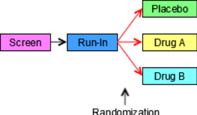
The next diagram for this trial shows the Epochs of the trial, indicates the three Arms, and shows the sequence of Elements for each group of subjects in each Epoch. The arrows are at the right hand side of the diagram because it is at the end of the trial that all the separate paths through the trial can be seen. Note that, in this diagram, the randomization, which was shown using three red arrows connecting the Run-in block with the three treatment blocks in the first diagram, is now indicated by a note with an arrow pointing to the line between two Epochs.
Example Trial 1, Parallel Design Prospective view
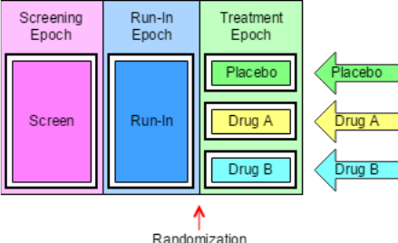
The next diagram can be thought of as the "retrospective" view of a trial, the view back from a point in time when a subject's assignment to an Arm is known. In this view, the trial appears as a grid, with an Arm represented by a series of study cells, one for each Epoch, and a sequence of Elements within each study cell. In this trial, as in many trials, there is exactly one Element in each study cell, but later examples will illustrate that this is not always the case.
Example Trial 1, Parallel Design Retrospectiview view
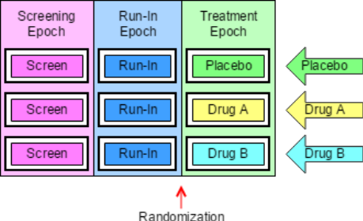
The next diagram shows the trial from the viewpoint of blinded participants. To blinded participants in this trial, all Arms look alike. They know when a subject is in the Screen Element, or the Run-in Element, but when a subject is in the Treatment Epoch, they know only that the subject is in an Element that involves receiving a study drug, not which study drug, and therefore not which Element.
Example Trial 1, Parallel Design Blinded View
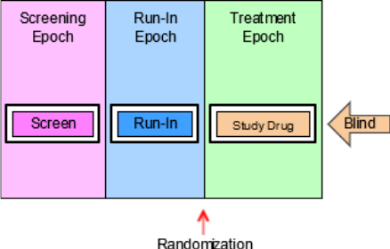
A trial design matrix is a table with a row for each Arm in the trial and a column for each Epoch in the trial. It is closely related to the retrospective view of the trial, and many users may find it easier to construct a table than to draw a diagram. The cells in the matrix represent the Study Cells, which are populated with trial Elements. In this trial, each Study Cell contains exactly one Element.
The columns of a Trial Design Matrix are the Epochs of the trial, the rows are the Arms of the trial, and the cells of the matrix (the Study Cells) contain Elements. Note that the randomization is not represented in the Trial Design Matrix. All the diagrams above and the trial design matrix below are alternative representations of the trial design. None of them contains all the information that will be in the finished Trial Arms dataset, but users may find it useful to draw some or all of them when working out the dataset.
Trial Design Matrix for Example Trial 1
| Screen | Run-in | Treatment | |
|---|---|---|---|
| Placebo | Screen | Run-in | PLACEBO |
| A | Screen | Run-in | DRUG A |
| B | Screen | Run-in | DRUG B |
For Example Trial 1, the conversion of the Trial Design Matrix into the Trial Arms dataset is straightforward. For each cell of the matrix, there is a record in the Trial Arms dataset. ARM, EPOCH, and ELEMENT can be populated directly from the matrix. TAETORD acts as a sequence number for the Elements within an Arm, so it can be populated by counting across the cells in the matrix. The randomization information, which is not represented in the Trial Design Matrix, is held in TABRANCH in the Trial Arms dataset. TABRANCH is populated only if there is a branch at the end of an Element for the Arm. When TABRANCH is populated, it describes how the decision at the branch point would result in a subject being in this Arm.
ta.xpt
| Row | STUDYID | DOMAIN | ARMCD | ARM | TAETORD | ETCD | ELEMENT | TABRANCH | TATRANS | EPOCH |
|---|---|---|---|---|---|---|---|---|---|---|
| 1 | EX1 | TA | P | Placebo | 1 | SCRN | Screen | SCREENING | ||
| 2 | EX1 | TA | P | Placebo | 2 | RI | Run-In | Randomized to Placebo | RUN-IN | |
| 3 | EX1 | TA | P | Placebo | 3 | P | Placebo | TREATMENT | ||
| 4 | EX1 | TA | A | A | 1 | SCRN | Screen | SCREENING | ||
| 5 | EX1 | TA | A | A | 2 | RI | Run-In | Randomized to Drug A | RUN-IN | |
| 6 | EX1 | TA | A | A | 3 | A | Drug A | TREATMENT | ||
| 7 | EX1 | TA | B | B | 1 | SCRN | Screen | SCREENING | ||
| 8 | EX1 | TA | B | B | 2 | RI | Run-In | Randomized to Drug B | RUN-IN | |
| 9 | EX1 | TA | B | B | 3 | B | Drug B | TREATMENT |
Example 2
The diagram below is for a crossover trial. However, the diagram does not use the crossing slanted lines sometimes used to represent crossover trials, since the order of the blocks is sufficient to represent the design of the trial. Slanted lines are used only to represent the branch point at randomization, when a subject is assigned to a sequence of treatments. As in most crossover trials, the Arms are distinguished by the order of treatments, with the same treatments present in each Arm. Note that even though all three Arms of this trial end with the same block, the block for the follow-up Element, the diagram does not show the Arms converging into one block. Also note that the same block (the "Rest" Element) occurs twice within each Arm. Elements are conceived of as "reusable" and can appear in more than one Arm, in more than one Epoch, and more than once in an Arm.
Example Trial 2, Crossover Trial Study Schema
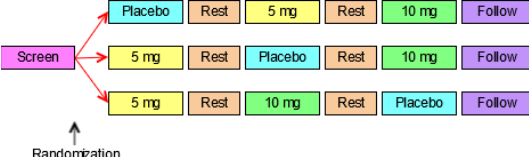
The next diagram for this crossover trial shows the prospective view of the trial, identifies the Epoch and Arms of the trial, and gives each a name. As for most crossover studies, the objectives of the trial will be addressed by comparisons between the Arms and by within-subject comparisons between treatments. The design thus depends on differentiating the periods during which the subject receives the three different treatments and so there are three different treatment Epochs. The fact that the rest periods are identified as separate Epochs suggests that these also play an important part in the design of the trial; they are probably designed to allow subjects to return to "baseline", with data collected to show that this occurred. Note that Epochs are not considered "reusable", so each Epoch has a different name, even though all the Treatment Epochs are similar and both the Rest Epochs are similar. As with the first example trial, there is a one-to-one relationship between the Epochs of the trial and the Elements in each Arm.
Example Trial 2, Crossover Trial Prospective View
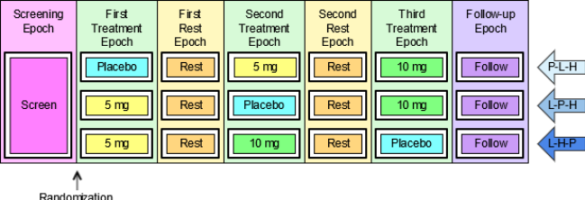
The next diagram shows the retrospective view of the trial.
Example Trial 2, Crossover Trial Retrospective View
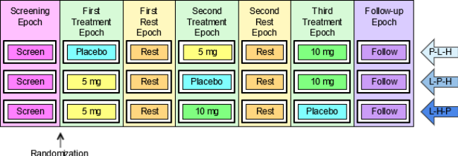
The last diagram for this trial shows the trial from the viewpoint of blinded participants. As in the simple parallel trial above, blinded participants see only one sequence of Elements, since during the treatment Epochs they do not know which of the treatment Elements a subject is in.
Example Trial 2, Crossover Trial Blinded View
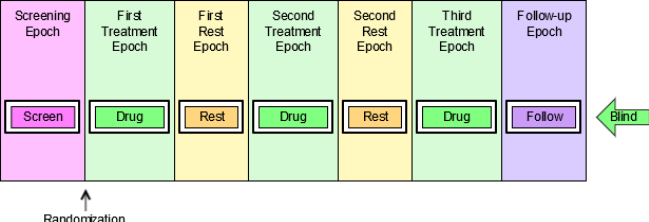
The trial design matrix for the crossover example trial is shown below. It corresponds closely to the retrospective diagram above.
Trial Design Matrix for Example Trial 2
| Screen | First Treatment | First Rest | Second Treatment | Second Rest | Third Treatment | Follow-up | |
|---|---|---|---|---|---|---|---|
| P-5-10 | Screen | Placebo | Rest | 5 mg | Rest | 10 mg | Follow-up |
| 5-P-10 | Screen | 5 mg | Rest | Placebo | Rest | 10 mg | Follow-up |
| 5-10-P | Screen | 5 mg | Rest | 10 mg | Rest | Placebo | Follow-up |
It is straightforward to produce the Trial Arms dataset for this crossover trial from the diagram showing Arms and Epochs, or from the Trial Design Matrix.
ta.xpt
| Row | STUDYID | DOMAIN | ARMCD | ARM | TAETORD | ETCD | ELEMENT | TABRANCH | TATRANS | EPOCH |
|---|---|---|---|---|---|---|---|---|---|---|
| 1 | EX2 | TA | P-5-10 | Placebo- 5mg- 10mg | 1 | SCRN | Screen | Randomized to Placebo - 5 mg - 10 mg | SCREENING | |
| 2 | EX2 | TA | P-5-10 | Placebo- 5mg- 10mg | 2 | P | Placebo | TREATMENT 1 | ||
| 3 | EX2 | TA | P-5-10 | Placebo- 5mg- 10mg | 3 | REST | Rest | WASHOUT 1 | ||
| 4 | EX2 | TA | P-5-10 | Placebo- 5mg- 10mg | 4 | 5 | 5 mg | TREATMENT 2 | ||
| 5 | EX2 | TA | P-5-10 | Placebo- 5mg- 10mg | 5 | REST | Rest | WASHOUT 2 | ||
| 6 | EX2 | TA | P-5-10 | Placebo- 5mg- 10mg | 6 | 10 | 10 mg | TREATMENT 3 | ||
| 7 | EX2 | TA | P-5-10 | Placebo- 5mg- 10mg | 7 | FU | Follow-up | FOLLOW-UP | ||
| 8 | EX2 | TA | 5-P-10 | 5mg- Placebo- 10mg | 1 | SCRN | Screen | Randomized to 5 mg - Placebo - 10 mg | SCREENING | |
| 9 | EX2 | TA | 5-P-10 | 5mg- Placebo- 10mg | 2 | 5 | 5 mg | TREATMENT 1 | ||
| 10 | EX2 | TA | 5-P-10 | 5mg- Placebo- 10mg | 3 | REST | Rest | WASHOUT 1 | ||
| 11 | EX2 | TA | 5-P-10 | 5mg- Placebo- 10mg | 4 | P | Placebo | TREATMENT 2 | ||
| 12 | EX2 | TA | 5-P-10 | 5mg- Placebo- 10mg | 5 | REST | Rest | WASHOUT 2 | ||
| 13 | EX2 | TA | 5-P-10 | 5mg- Placebo- 10mg | 6 | 10 | 10 mg | TREATMENT 3 | ||
| 14 | EX2 | TA | 5-P-10 | 5mg- Placebo- 10mg | 7 | FU | Follow-up | FOLLOW-UP | ||
| 15 | EX2 | TA | 5-10-P | 5mg- 10mg- Placebo | 1 | SCRN | Screen | Randomized to 5 mg - 10 mg – Placebo | SCREENING | |
| 16 | EX2 | TA | 5-10-P | 5mg- 10mg- Placebo | 2 | 5 | 5 mg | TREATMENT 1 | ||
| 17 | EX2 | TA | 5-10-P | 5mg- 10mg- Placebo | 3 | REST | Rest | WASHOUT 1 | ||
| 18 | EX2 | TA | 5-10-P | 5mg- 10mg- Placebo | 4 | 10 | 10 mg | TREATMENT 2 | ||
| 19 | EX2 | TA | 5-10-P | 5mg- 10mg- Placebo | 5 | REST | Rest | WASHOUT 2 | ||
| 20 | EX2 | TA | 5-10-P | 5mg- 10mg- Placebo | 6 | P | Placebo | TREATMENT 3 | ||
| 21 | EX2 | TA | 5-10-P | 5mg- 10mg- Placebo | 7 | FU | Follow-up | FOLLOW-UP |
Example 3
Each of the paths for the trial shown in the diagram below goes through one branch point at randomization, and then through another branch point when response is evaluated. This results in four Arms, corresponding to the number of possible paths through the trial, and also to the number of blocks at the right end of the diagram. The fact that there are only two kinds of block at the right end ("Open DRUG X" and "Rescue") does not affect the fact that there are four "paths" and thus four Arms.
Example Trial 3, Multiple Branches Study Schema
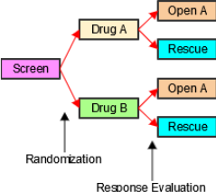
The next diagram for this trial is the prospective view. It shows the Epochs of the trial and how the initial group of subjects is split into two treatment groups for the double blind treatment Epoch, and how each of those initial treatment groups is split in two at the response evaluation, resulting in the four Arms of this trial The names of the Arms have been chosen to represent the outcomes of the successive branches that, together, assign subjects to Arms. These compound names were chosen to facilitate description of subjects who may drop out of the trial after the first branch and before the second branch. See DM Example 7, which illustrates DM and SE data for such subjects.
Example Trial 3, Multiple Branches Prospective View
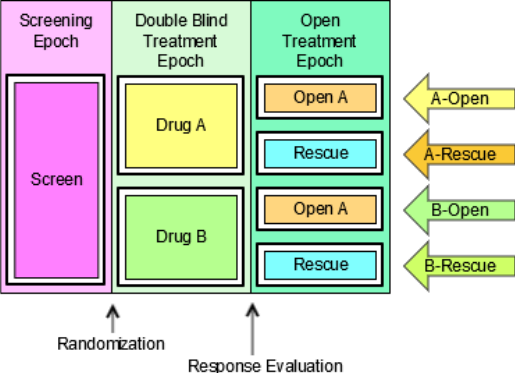
The next diagram shows the retrospective view. As with the first two example trials, there is one Element in each study cell.
Example Trial 3, Multiple Branches Retrospective View
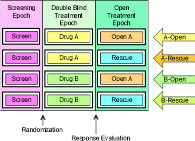
The last diagram for this trial shows the trial from the viewpoint of blinded participants. Since the prospective view is the view most relevant to study participants, the blinded view shown here is a prospective view. Since blinded participants can tell which treatment a subject receives in the Open Label Epoch, they see two possible element sequences.
Example Trial 3, Multiple Branches Blinded View
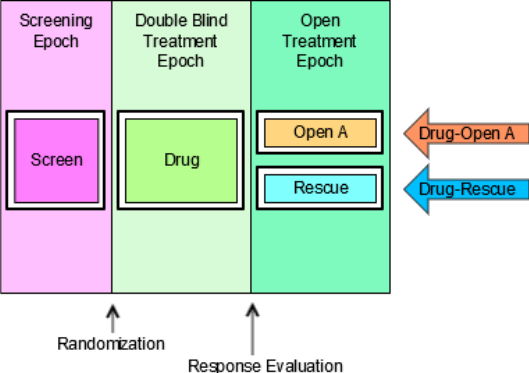
The trial design matrix for this trial can be constructed easily from the diagram showing Arms and Epochs.
Trial Design Matrix for Example Trial 3
| Screen | Double Blind | Open Label | |
|---|---|---|---|
| A-Open A | Screen | Treatment A | Open Drug A |
| A-Rescue | Screen | Treatment A | Rescue |
| B-Open A | Screen | Treatment B | Open Drug A |
| B-Rescue | Screen | Treatment B | Rescue |
Creating the Trial Arms dataset for Example Trial 3 is similarly straightforward. Note that because there are two branch points in this trial, TABRANCH is populated for two records in each Arm. Note also that the values of ARMCD, like the values of ARM, reflect the two separate processes that result in a subject's assignment to an Arm.
ta.xpt
| Row | STUDYID | DOMAIN | ARMCD | ARM | TAETORD | ETCD | ELEMENT | TABRANCH | TATRANS | EPOCH |
|---|---|---|---|---|---|---|---|---|---|---|
| 1 | EX3 | TA | AA | A-Open A | 1 | SCRN | Screen | Randomized to Treatment A | SCREENING | |
| 2 | EX3 | TA | AA | A-Open A | 2 | DBA | Treatment A | Assigned to Open Drug A on basis of response evaluation | BLINDED TREATMENT | |
| 3 | EX3 | TA | AA | A-Open A | 3 | OA | Open Drug A | OPEN LABEL TREATMENT | ||
| 4 | EX3 | TA | AR | A- Rescue | 1 | SCRN | Screen | Randomized to Treatment A | SCREENING | |
| 5 | EX3 | TA | AR | A- Rescue | 2 | DBA | Treatment A | Assigned to Rescue on basis | BLINDED TREATMENT | |
| of response evaluation | ||||||||||
| 6 | EX3 | TA | AR | A- Rescue | 3 | RSC | Rescue | OPEN LABEL TREATMENT | ||
| 7 | EX3 | TA | BA | B-Open A | 1 | SCRN | Screen | Randomized to Treatment B | SCREENING | |
| 8 | EX3 | TA | BA | B-Open A | 2 | DBB | Treatment B | Assigned to Open Drug A on basis of response evaluation | BLINDED TREATMENT | |
| 9 | EX3 | TA | BA | B-Open A | 3 | OA | Open Drug A | OPEN LABEL TREATMENT | ||
| 10 | EX3 | TA | BR | B- Rescue | 1 | SCRN | Screen | Randomized to Treatment B | SCREENING | |
| 11 | EX3 | TA | BR | B- Rescue | 2 | DBB | Treatment B | Assigned to Rescue on basis of response evaluation | BLINDED TREATMENT | |
| 12 | EX3 | TA | BR | B- Rescue | 3 | RSC | Rescue | OPEN LABEL TREATMENT |
See Section 7.2.1.1 Trial Arms Issues, Issue 1, "Distinguishing Between Branches and Transitions", for additional discussion of when a decision point in a trial design should be considered to give rise to a new Arm.
Example 4
The diagram below uses a new symbol, a large curved arrow representing the fact that the chemotherapy treatment (A or B) and the rest period that follows it are to be repeated. In this trial, the chemotherapy "cycles" are to be repeated until disease progression. Some chemotherapy trials specify a maximum number of cycles, but protocols that allow an indefinite number of repeats are not uncommon.
Example Trial 4, Cyclical Chemotherapy Study Schema
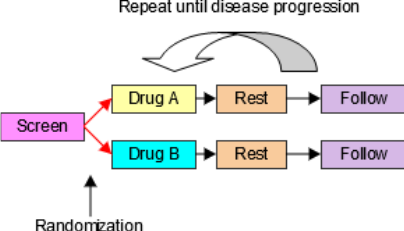
The next diagram shows the prospective view of this trial. Note that, in spite of the repeating element structure, this is, at its core, a two-arm parallel study, and thus has two Arms. In SDTMIG 3.1.1, there was an implicit assumption that each Element must be in a separate Epoch, and trials with cyclical chemotherapy were difficult to handle. The introduction of the concept of study cells, and the dropping of the assumption that Elements and Epochs have a one- to-one relationship resolves these difficulties. This trial is best treated as having just three Epochs, since the main objectives of the trial involve comparisons between the two treatments, and do not require data to be considered cycle by cycle.
Example Trial 4, Cyclical Chemotherapy Prospective View
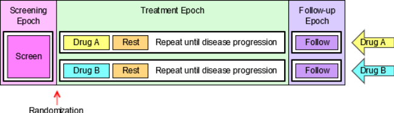
The next diagram shows the retrospective view of this trial.
Example Trial 4, Cyclical Chemotherapy Retrospective View
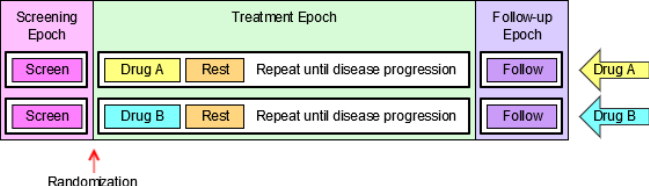
For the purpose of developing a Trial Arms dataset for this oncology trial, the diagram must be redrawn to explicitly represent multiple treatment and rest elements. If a maximum number of cycles is not given by the protocol, then, for the purposes of constructing an SDTM Trial Arms dataset for submission, which can only take place after the trial is complete, the number of repeats included in the Trial Arms dataset should be the maximum number of repeats that occurred in the trial. The next diagram assumes that the maximum number of cycles that occurred in this trial was four. Some subjects will not have received all four cycles, because their disease progressed. The rule that directed that they receive no further cycles of chemotherapy is represented by a set of green arrows, one at the end of each Rest Epoch, that shows that a subject "skips forward" if their disease progresses. In the Trial Arms dataset, each "skip forward" instruction is a transition rule, recorded in the TATRANS variable; when TATRANS is not populated, the rule is to transition to the next Element in sequence.
Example Trial 4, Cyclical Chemotherapy Retrospective View with Explicit Repeats
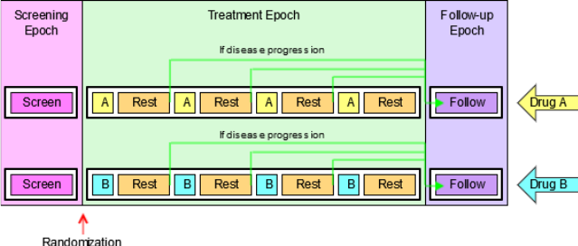
The logistics of dosing mean that few oncology trials are blinded, if this trial is blinded, then the next diagram shows the trial from the viewpoint of blinded participant.
Example Trial 4, Cyclical Chemotherapy Blinded View
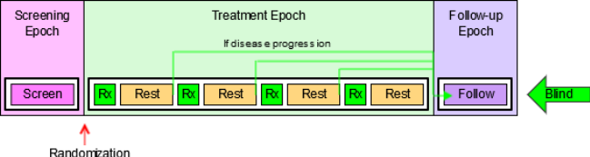
The Trial Design Matrix for Example Trial 4 corresponds to the diagram showing the retrospective view with explicit repeats of the treatment and Rest Elements. As noted above, the Trial Design Matrix does not include information on when randomization occurs; similarly, information corresponding to the "skip forward" rules is not represented in the Trial Design Matrix.
Trial Design Matrix for Example Trial 4
| Screen | Treatment | Follow-up | ||||||||
|---|---|---|---|---|---|---|---|---|---|---|
| A | Screen | Trt A | Rest | Trt A | Rest | Trt A | Rest | Trt A | Rest | Follow-up |
| B | Screen | Trt B | Rest | Trt B | Rest | Trt B | Rest | Trt B | Rest | Follow-up |
The Trial Arms dataset for Example Trial 4 requires the use of the TATRANS variable in the Trial Arms dataset to represent the "repeat until disease progression" feature. In order to represent this rule in the diagrams that explicitly represent repeated elements, a green "skip forward" arrow was included at the end of each element where disease progression is assessed. In the Trial Arms dataset, TATRANS is populated for each Element with a green arrow in the diagram. In other words, if there is a possibility that a subject will, at the end of this Element, "skip forward" to a later part of the Arm, then TATRANS is populated with the rule describing the conditions under which a subject will go to a later Element. If the subject always goes to the next Element in the Arm (as was the case for the first three example trials presented here) then TATRANS is null. The Trial Arms datasets presented below corresponds to the Trial Design Matrix above.
ta.xpt
| Row | STUDYID | DOMAIN | ARMCD | ARM | TAETORD | ETCD | ELEMENT | TABRANCH | TATRANS | EPOCH |
|---|---|---|---|---|---|---|---|---|---|---|
| 1 | EX4 | TA | A | A | 1 | SCRN | Screen | Randomized to A | SCREENING | |
| 2 | EX4 | TA | A | A | 2 | A | Trt A | TREATMENT | ||
| 3 | EX4 | TA | A | A | 3 | REST | Rest | If disease progression, go to Follow-up Epoch | TREATMENT | |
| 4 | EX4 | TA | A | A | 4 | A | Trt A | TREATMENT | ||
| 5 | EX4 | TA | A | A | 5 | REST | Rest | If disease progression, go to Follow-up Epoch | TREATMENT | |
| 6 | EX4 | TA | A | A | 6 | A | Trt A | TREATMENT | ||
| 7 | EX4 | TA | A | A | 7 | REST | Rest | If disease progression, go to Follow-up Epoch | TREATMENT | |
| 8 | EX4 | TA | A | A | 8 | A | Trt A | TREATMENT | ||
| 9 | EX4 | TA | A | A | 9 | REST | Rest | TREATMENT | ||
| 10 | EX4 | TA | A | A | 10 | FU | Follow-up | FOLLOW-UP | ||
| 11 | EX4 | TA | B | B | 1 | SCRN | Screen | Randomized to B | SCREENING | |
| 12 | EX4 | TA | B | B | 2 | B | Trt B | TREATMENT | ||
| 13 | EX4 | TA | B | B | 3 | REST | Rest | If disease progression, go to Follow-up Epoch | TREATMENT | |
| 14 | EX4 | TA | B | B | 4 | B | Trt B | TREATMENT | ||
| 15 | EX4 | TA | B | B | 5 | REST | Rest | If disease progression, go to Follow-up Epoch | TREATMENT | |
| 16 | EX4 | TA | B | B | 6 | B | Trt B | TREATMENT | ||
| 17 | EX4 | TA | B | B | 7 | REST | Rest | If disease progression, go to Follow-up Epoch | TREATMENT | |
| 18 | EX4 | TA | B | B | 8 | B | Trt B | TREATMENT | ||
| 19 | EX4 | TA | B | B | 9 | REST | Rest | TREATMENT | ||
| 20 | EX4 | TA | B | B | 10 | FU | Follow-up | FOLLOW-UP |
Example 5
Example Trial 5 is much like the last oncology trial in that the two treatments being compared are given in cycles, and the total length of the cycle is the same for both treatments. In this trial, however, Treatment A is given over longer duration than Treatment B. Because of this difference in treatment patterns, this trial cannot be blinded.
Example Trial 5, Different Chemo Durations Study Schema
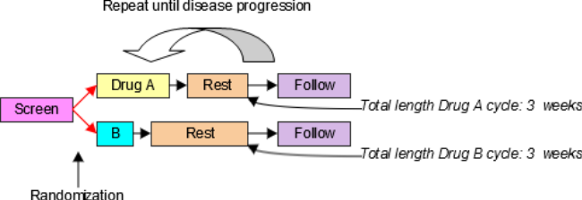
In SDTMIG 3.1.1, the assumption of a one-to-one relationship between Elements and Epochs made this example difficult to handle. However, without that assumption, this trial is essentially the same as Trial 4. The next diagram shows the retrospective view of this trial.
Example Trial 5, Cyclical Chemotherapy Retrospective View
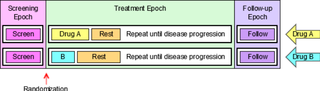
The Trial Design Matrix for this trial is almost the same as for Example Trial 4; the only difference is that the maximum number of cycles for this trial was assumed to be three.
Trial Design Matrix for Example Trial 5
| Screen | Treatment | Follow-up | ||||||
|---|---|---|---|---|---|---|---|---|
| A | Screen | Trt A | Rest A | Trt A | Rest A | Trt A | Rest A | Follow-up |
| B | Screen | Trt B | Rest B | Trt B | Rest B | Trt B | Rest B | Follow-up |
The Trial Arms dataset for this trial shown below corresponds to the Trial Design Matrix above.
ta.xpt
| Row | STUDYID | DOMAIN | ARMCD | ARM | TAETORD | ETCD | ELEMENT | TABRANCH | TATRANS | EPOCH |
|---|---|---|---|---|---|---|---|---|---|---|
| 1 | EX5 | TA | A | A | 1 | SCRN | Screen | Randomized to A | SCREENING | |
| 2 | EX5 | TA | A | A | 2 | A | Trt A | TREATMENT | ||
| 3 | EX5 | TA | A | A | 3 | RESTA | Rest A | If disease progression, go to Follow-up Epoch | TREATMENT | |
| 4 | EX5 | TA | A | A | 4 | A | Trt A | TREATMENT | ||
| 5 | EX5 | TA | A | A | 5 | RESTA | Rest A | If disease progression, go to Follow-up Epoch | TREATMENT | |
| 6 | EX5 | TA | A | A | 6 | A | Trt A | TREATMENT | ||
| 7 | EX5 | TA | A | A | 7 | RESTA | Rest A | TREATMENT | ||
| 8 | EX5 | TA | A | A | 8 | FU | Follow-up | FOLLOW-UP | ||
| 9 | EX5 | TA | B | B | 1 | SCRN | Screen | Randomized to B | SCREENING | |
| 10 | EX5 | TA | B | B | 2 | B | Trt B | TREATMENT | ||
| 11 | EX5 | TA | B | B | 3 | RESTB | Rest B | If disease progression, go to Follow-up Epoch | TREATMENT | |
| 12 | EX5 | TA | B | B | 4 | B | Trt B | TREATMENT | ||
| 13 | EX5 | TA | B | B | 5 | RESTB | Rest B | If disease progression, go to Follow-up Epoch | TREATMENT | |
| 14 | EX5 | TA | B | B | 6 | B | Trt B | TREATMENT | ||
| 15 | EX5 | TA | B | B | 7 | RESTB | Rest B | TREATMENT | ||
| 16 | EX5 | TA | B | B | 8 | FU | Follow-up | FOLLOW-UP |
Example 6
Example Trial 6 is an oncology trial comparing two types of chemotherapy that are given using cycles of different lengths with different internal patterns. Treatment A is given in 3-week cycles with a longer duration of treatment and a short rest, while Treatment B is given in 4-week cycles with a short duration of treatment and a long rest.
Example Trial 6, Different Cycle Durations Study Schema
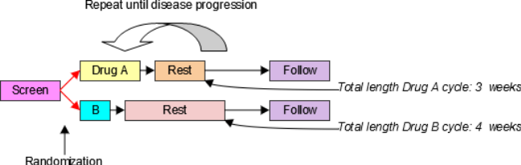
The design of this trial is very similar to that for Example Trials 4 and 5. The main difference is that there are two different Rest Elements, the short one used with Drug A and the long one used with Drug B. The next diagram shows the retrospective view of this trial.
Example Trial 6, Cyclical Chemotherapy Retrospective View
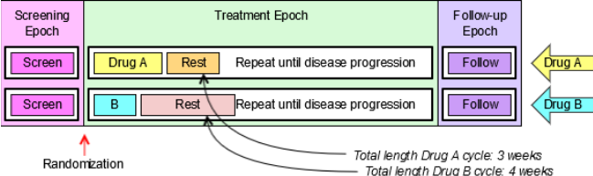
The Trial Design Matrix for this trial assumes that there was a maximum of four cycles of Drug A and a maximum of three cycles of Drug B.
Trial Design Matrix for Example Trial 6
| Screen | Treatment | Follow-up | ||||||||||
|---|---|---|---|---|---|---|---|---|---|---|---|---|
| A | Screen | Trt A | Rest A | Trt A | Rest A | Trt A | Rest A | Trt A | Rest A | Follow-up | ||
| B | Screen | Trt B | Rest B | Trt B | Rest B | Trt B | Rest B | Follow-up |
In the following Trial Arms dataset, because the Treatment Epoch for Arm A has more Elements than the Treatment Epoch for Arm B, TAETORD is 10 for the Follow-up Element in Arm A, but 8 for the Follow-up Element in Arm B. It would also be possible to assign a TAETORD value of 10 to the Follow-up Element in Arm B. The primary purpose of TAETORD is to order Elements within an Arm; leaving gaps in the series of TAETORD values does not interfere with this purpose.
ta.xpt
| Row | STUDYID | DOMAIN | ARMCD | ARM | TAETORD | ETCD | ELEMENT | TABRANCH | TATRANS | EPOCH |
|---|---|---|---|---|---|---|---|---|---|---|
| 1 | EX6 | TA | A | A | 1 | SCRN | Screen | Randomized to A | SCREENING | |
| 2 | EX6 | TA | A | A | 2 | A | Trt A | TREATMENT | ||
| 3 | EX6 | TA | A | A | 3 | RESTA | Rest A | If disease progression, go to Follow-up Epoch | TREATMENT | |
| 4 | EX6 | TA | A | A | 4 | A | Trt A | TREATMENT | ||
| 5 | EX6 | TA | A | A | 5 | RESTA | Rest A | If disease progression, go to Follow-up Epoch | TREATMENT | |
| 6 | EX6 | TA | A | A | 6 | A | Trt A | TREATMENT | ||
| 7 | EX6 | TA | A | A | 7 | RESTA | Rest A | If disease progression, go to Follow-up Epoch | TREATMENT | |
| 8 | EX6 | TA | A | A | 8 | A | Trt A | TREATMENT | ||
| 9 | EX6 | TA | A | A | 9 | RESTA | Rest A | TREATMENT | ||
| 10 | EX6 | TA | A | A | 10 | FU | Follow-up | FOLLOW-UP | ||
| 11 | EX6 | TA | B | B | 1 | SCRN | Screen | Randomized to B | SCREENING | |
| 12 | EX6 | TA | B | B | 2 | B | Trt B | TREATMENT | ||
| 13 | EX6 | TA | B | B | 3 | RESTB | Rest B | If disease progression, go to Follow-up Epoch | TREATMENT | |
| 14 | EX6 | TA | B | B | 4 | B | Trt B | TREATMENT | ||
| 15 | EX6 | TA | B | B | 5 | RESTB | Rest B | If disease progression, go to Follow-up Epoch | TREATMENT | |
| 16 | EX6 | TA | B | B | 6 | B | Trt B | TREATMENT | ||
| 17 | EX6 | TA | B | B | 7 | RESTB | Rest B | TREATMENT | ||
| 18 | EX6 | TA | B | B | 8 | FU | Follow-up | FOLLOW-UP |
Example 7
In open trials, there is no requirement to maintain a blind, and the Arms of a trial may be quite different from each other. In such a case, changes in treatment in one Arm may differ in number and timing from changes in treatment in another Arm, so that there is nothing like a one-to-one match between the Elements in the different Arms. In such a case, Epochs are likely to be defined as broad intervals of time, spanning several Elements, and be chosen to correspond to periods of time that will be compared in analyses of the trial.
Example Trial 7, RTOG 93-09, involves treatment of lung cancer with chemotherapy and radiotherapy, with or without surgery. The protocol (RTOG-93-09), which is available online at the Radiation Oncology Therapy Group (RTOG) website http://www.rtog.org, does not include a study schema diagram, but does include a text-based representation of diverging "options" to which a subject may be assigned. All subjects go through the branch point at randomization, when subjects are assigned to either Chemotherapy + Radiotherapy (CR) or Chemotherapy + Radiotherapy + Surgery (CRS). All subjects receive induction chemotherapy and radiation, with a slight difference between those randomized to the two Arms during the second cycle of chemotherapy. Those randomized to the non- surgery Arm are evaluated for disease somewhat earlier, to avoid delays in administering the radiation boost to those whose disease has not progressed. After induction chemotherapy and radiation, subjects are evaluated for disease progression, and those whose disease has progressed stop treatment, but enter follow-up. Not all subjects randomized to receive surgery who do not have disease progression will necessarily receive surgery. If they are poor candidates for surgery or do not wish to receive surgery, they will not receive surgery, but will receive further chemotherapy. The diagram below is based on the text "schema" in the protocol, with the five "options" it names. The diagram in this form might suggest that the trial has five Arms.
Example Trial 7, RTOG 93-09 Study Schema with 5 "options"
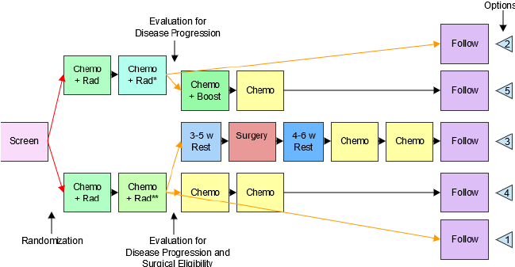
*Disease evaluation earlier **Disease evaluation later
However, the objectives of the trial make it clear that this trial is designed to compare two treatment strategies, chemotherapy and radiation with and without surgery, so this study is better modeled as a two-Arm trial, but with major "skip forward" arrows for some subjects, as illustrated in the following diagram. This diagram also shows more detail within the blocks labeled "Induction Chemo + RT" and "Additional Chemo" than the diagram above. Both the "induction" and "additional" chemotherapy are given in two cycles. Also, the second induction cycle is different for the two Arms, since radiation therapy for those assigned to the non-surgery arm includes a "boost", which those assigned to the surgery Arm do not receive.
The next diagram shows the prospective view of this trial. The protocol conceives of treatment as being divided into two parts, Induction and Continuation, so these have been treated as two different Epochs. This is also an important point in the trial operationally, the point when subjects are "registered" a second time, and when subjects are identified who will "skip forward", because of disease progression or ineligibility for surgery.
Example Trial 7, RTOG-93-09 Prospective View
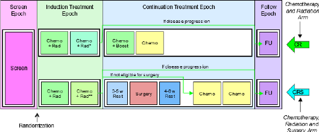
*Disease evaluation earlier **Disease evaluation later
The next diagram shows the retrospective view of this trial. The fact that the Elements in the study cell for the CR Arm in the Continuation Treatment Epoch do not fill the space in the diagram is an artifact of the diagram conventions. Those subjects who do receive surgery will in fact spend a longer time completing treatment and moving into follow-up. Although it is tempting to think of the horizontal axis of these diagrams as a timeline, this can sometimes be misleading. The diagrams are not necessarily "to scale" in the sense that the length of the block representing an Element represents its duration, and elements that line up on the same vertical line in the diagram may not occur at the same relative time within the study.
Example Trial 7, RTOG 93-09 Retrospective View
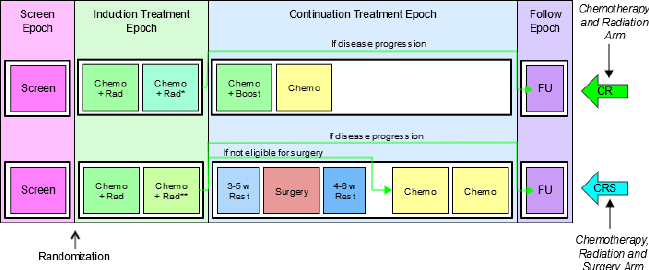
*Disease evaluation earlier **Disease evaluation later
The Trial Design Matrix for Example Trial 7, RTOG 93-09, a two-Arm trial is shown in the following table.
| Screen | Induction | Continuation | Follow-up | ||||||||
|---|---|---|---|---|---|---|---|---|---|---|---|
| CR | Screen | Initial Chemo + RT | Chemo + RT (non- Surgery) | Chemo | Chemo | Off Treatment Follow- up | |||||
| CRS | Screen | Initial Chemo + RT | Chemo + RT (Surgery) | 3-5 w Rest | Surgery | 4-6 w Rest | Chemo | Chemo | Off Treatment Follow-up |
The Trial Arms dataset for the trial is shown below for Example Trial 7, as a two-Arm trial.
ta.xpt
| Row | STUDYID | DOMAIN | ARMCD | ARM | TAETORD | ETCD | ELEMENT | TABRANCH | TATRANS | EPOCH |
|---|---|---|---|---|---|---|---|---|---|---|
| 1 | EX7 | TA | 1 | CR | 1 | SCRN | Screen | Randomized to CR | SCREENING | |
| 2 | EX7 | TA | 1 | CR | 2 | ICR | Initial Chemo + RT | INDUCTION TREATMENT | ||
| 3 | EX7 | TA | 1 | CR | 3 | CRNS | Chemo+RT (non- Surgery) | If progression, skip to Follow- up. | INDUCTION TREATMENT | |
| 4 | EX7 | TA | 1 | CR | 4 | C | Chemo | CONTINUATION TREATMENT | ||
| 5 | EX7 | TA | 1 | CR | 5 | C | Chemo | CONTINUATION TREATMENT | ||
| 6 | EX7 | TA | 1 | CR | 6 | FU | Off Treatment Follow-up | FOLLOW-UP | ||
| 7 | EX7 | TA | 2 | CRS | 1 | SCRN | Screen | Randomized to CRS | SCREENING | |
| 8 | EX7 | TA | 2 | CRS | 2 | ICR | Initial Chemo + RT | INDUCTION TREATMENT | ||
| 9 | EX7 | TA | 2 | CRS | 3 | CRS | Chemo+RT (Surgery) | If progression, skip to Follow- up. If no progression, but subject is ineligible for or does not consent to surgery, skip to Chemo. | INDUCTION TREATMENT | |
| 10 | EX7 | TA | 2 | CRS | 4 | R3 | 3-5 week rest | CONTINUATION TREATMENT | ||
| 11 | EX7 | TA | 2 | CRS | 5 | SURG | Surgery | CONTINUATION TREATMENT | ||
| 12 | EX7 | TA | 2 | CRS | 6 | R4 | 4-6 week rest | CONTINUATION TREATMENT | ||
| 13 | EX7 | TA | 2 | CRS | 7 | C | Chemo | CONTINUATION TREATMENT | ||
| 14 | EX7 | TA | 2 | CRS | 8 | C | Chemo | CONTINUATION TREATMENT | ||
| 15 | EX7 | TA | 2 | CRS | 9 | FU | Off Treatment Follow-up | FOLLOW-UP |
7.2.1.1 Trial Arms Issues
1. Distinguishing Between Branches and Transitions
Both the Branch and Transition columns contain rules, but the two columns represent two different types of rules. Branch rules represent forks in the trial flowchart, giving rise to separate Arms. The rule underlying a branch in the trial design appears in multiple records, once for each "fork" of the branch. Within any one record, there is no choice (no "if" clause) in the value of the Branch condition. For example, the value of TABRANCH for a record in Arm A is "Randomized to Arm A" because a subject in Arm A must have been randomized to Arm A. Transition rules are used for choices within an Arm. The value for TATRANS does contain a choice (an "if" clause). In Example Trial 4, subjects who receive 1, 2, 3, or 4 cycles of Treatment A are all considered to belong to Arm A.
In modeling a trial, decisions may have to be made about whether a decision point in the flow chart represents the separation of paths that represent different Arms, or paths that represent variations within the same Arm, as illustrated in the discussion of Example Trial 7. This decision will depend on the comparisons of interest in the trial.
Some trials refer to groups of subjects who follow a particular path through the trial as "cohorts", particularly if the groups are formed successively over time. The term "cohort" is used with different meanings in different protocols and does not always correspond to an Arm.
2. Subjects Not Assigned to an Arm
Some trial subjects may drop out of the study before they reach all of the branch points in the trial design. In the Demographics domain, values of ARM and ARMCD must be supplied for such subjects, but the special values used for these subjects should not be included in the Trial Arms dataset; only complete Arm paths should be described in the Trial Arms dataset. DM Assumption 4 describes special ARM and ARMCD values used for subjects who do not reach the first branch point in a trial. When a trial design includes two or more branches, special values of ARM and ARMCD may be needed for subjects who pass through the first branch point, but drop out before the final branch point. See DM Example 7 for an example showing ARM and ARMCD values for such a trial.
3. Defining Epochs
The series of examples for the Trial Arms dataset provides a variety of scenarios and guidance about how to assign Epoch in those scenarios. In general, assigning Epochs for blinded trials is easier than for unblinded trials. The blinded view of the trial will generally make the possible choices clear. For unblinded trials, the comparisons that will be made between Arms can guide the definition of Epochs. For trials that include many variant paths within an Arm, comparisons of Arms will mean that subjects on a variety of paths will be included in the comparison, and this is likely to lead to definition of broader Epochs.
4. Rule Variables
The Branch and Transition columns shown in the example tables are variables with a Role of "Rule." The values of a Rule variable describe conditions under which something is planned to happen. At the moment, values of Rule variables are text. At some point in the future, it is expected that these will become executable code. Other Rule variables are present in the Trial Elements and Trial Visits datasets.
7.2.2 Trial Elements
TE – Description/Overview
A trial design domain that contains the element code that is unique for each element, the element description, and the rules for starting and ending an element.
The Trial Elements (TE) dataset contains the definitions of the Elements that appear in the Trial Arms (TA) dataset. An Element may appear multiple times in the Trial Arms table because it appears either 1) in multiple Arms, 2) multiple times within an Arm, or 3) both. However, an Element will appear only once in the Trial Elements table.
Each row in the TE dataset may be thought of as representing a "unique Element" in the sense of "unique" used when a case report form template page for a collecting certain type of data is often referred to as "unique page." For instance, a case report form might be described as containing 87 pages, but only 23 unique pages. By analogy, the trial design matrix for Example Trial 1 has nine Study Cells, each of which contains one Element, but the same trial design matrix contains only five unique Elements, so the trial Elements dataset for that trial has only five records.
An Element is a building block for creating Study Cells and an Arm is composed of Study Cells. Or, from another point of view, an Arm is composed of Elements: That is, the trial design assigns subjects to Arms, which are comprised of a sequence of steps called Elements.
Trial Elements represent an interval of time that serves a purpose in the trial and are associated with certain activities affecting the subject. "Week 2 to Week 4" is not a valid Element. A valid Element has a name that describes the purpose of the Element and includes a description of the activity or event that marks the subject's transition into the Element as well as the conditions for leaving the Element.
TE – Specification
te.xpt, Trial Elements — Trial Design, Version 3.2. One record per planned Element, Tabulation.
| Variable | Variable Label | Type | Controlled | Role | CDISC Notes | Core |
|---|---|---|---|---|---|---|
| Name | Terms, | |||||
| Codelist or | ||||||
| F ormat1 | ||||||
| STUDYID | Study Identifier | Char | Identifier | Unique identifier for a study. | Req | |
| DOMAIN | Domain Abbreviation | Char | TE | Identifier | Two-character abbreviation for the domain. | Req |
| ETCD | Element Code | Char | * | Topic | ETCD (the companion to ELEMENT) is limited to 8 | Req |
| characters and does not have special character | ||||||
| restrictions. These values should be short for ease of | ||||||
| use in programming, but it is not expected that ETCD | ||||||
| will need to serve as a variable name. | ||||||
| ELEMENT | Description of Element | Char | * | Synonym Qualifier | The name of the Element. | Req |
| TESTRL | Rule for Start of Element | Char | Rule | Expresses rule for beginning Element. | Req | |
| TEENRL | Rule for End of Element | Char | Rule | Expresses rule for ending Element. Either TEENRL or | Perm | |
| TEDUR must be present for each Element. | ||||||
| TEDUR | Planned Duration of Element | Char | ISO 8601 | Timing | Planned Duration of Element in ISO 8601 format. | Perm |
| Used when the rule for ending the Element is applied | ||||||
| after a fixed duration. |
¹ In this column, * indicates the variable may be subject to controlled terminology, and CDISC/NCI codelist code values are enclosed in (parenthesis).
TE – Assumptions
1. There are no gaps between Elements. The instant one Element ends, the next Element begins. A subject spends no time "between" Elements.
2. ELEMENT, the Description of the Element, usually indicates the treatment being administered during an Element, or, if no treatment is being administered, the other activities that are the purpose of this period of time, such as Screening, Follow-up, Washout. In some cases, this may be quite passive, such as Rest, or Wait (for disease episode).
3. TESTRL, the Rule for Start of Element, identifies the event that marks the transition into this Element. For Elements that involve treatment, this is the start of treatment.
4. For Elements that do not involve treatment, TESTRL can be more difficult to define. For washout and follow- up Elements, which always follow treatment Elements, the start of the Element may be defined relative to the end of a preceding treatment. For example, a washout period might be defined as starting 24 or 48 hours after the last dose of drug for the preceding treatment Element or Epoch. This definition is not totally independent of the Trial Arms dataset, since it relies on knowing where in the trial design the Element is used, and that it always follows a treatment Element. Defining a clear starting point for the start of a non-treatment Element that always follows another non-treatment Element can be particularly difficult. The transition may be defined by a decision-making activity such as enrollment or randomization. For example, every Arm of a trial that involves treating disease episodes might start with a screening Element followed by an Element that consists of waiting until a disease episode occurs. The activity that marks the beginning of the wait Element might be randomization.
5. TESTRL for a treatment Element may be thought of as "active" while the start rule for a non-treatment Element, particularly a follow-up or washout Element, may be "passive." The start of a treatment Element will not occur until a dose is given, no matter how long that dose is delayed. Once the last dose is given, the start of a subsequent non-treatment Element is inevitable, as long as another dose is not given.
6. Note that the date/time of the event described in TESTRL will be used to populate the date/times in the Subject Elements dataset, so the date/time of the event should be one that will be captured in the CRF.
7. Specifying TESTRL for an Element that serves the first Element of an Arm in the Trial Arms dataset involves defining the start of the trial. In the examples in this document, obtaining informed consent has been used as "Trial Entry."
8. TESTRL should be expressed without referring to Arm. If the Element appears in more than one Arm in the Trial Arms dataset, then the Element description (ELEMENT) must not refer to any Arms.
9. TESTRL should be expressed without referring to Epoch. If the Element appears in more than one Epoch in the Trial Arms dataset, then the Element description (ELEMENT) must not refer to any Epochs.
10. For a blinded trial, it is useful to describe TESTRL in terms that separate the properties of the event that are visible to blinded participants from the properties that are visible only to those who are unblinded. For treatment Elements in blinded trials, wording such as the following is suitable, "First dose of study drug for a treatment Epoch, where study drug is X."
11. Element end rules are rather different from Element start rules. The actual end of one Element is the beginning of the next Element. Thus the Element end rule does not give the conditions under which an Element does end, but the conditions under which it should end or is planned to end.
12. At least one of TEENRL and TEDUR must be populated. Both may be populated.
13. TEENRL describes the circumstances under which a subject should leave this Element. Element end rules may depend on a variety of conditions. For instance, a typical criterion for ending a rest Element between oncology chemotherapy-treatment Elements would be, "15 days after start of Element and after WBC values have recovered." The Trial Arms dataset, not the Trial Elements dataset, describes where the subject moves next, so TEENRL must be expressed without referring to Arm.
14. TEDUR serves the same purpose as TEENRL for the special (but very common) case of an Element with a fixed duration. TEDUR is expressed in ISO 8601. For example, a TEDUR value of P6W is equivalent to a TEENRL of "6 weeks after the start of the Element."
15. Note that Elements that have different start and end rules are different Elements and must have different values of ELEMENT and ETCD. For instance, Elements that involve the same treatment but have different durations are different Elements. The same applies to non-treatment Elements. For instance, a washout with a fixed duration of 14 days is different from a washout that is to end after 7 days if drug cannot be detected in a blood sample, or after 14 days otherwise.
TE – Examples
Below are Trial Elements datasets for Example Trials 1 (Example Trial 1) and 2 (Example Trial 2). Both of these trials are assumed to have fixed-duration Elements. The wording in TESTRL is intended to separate the description of the event that starts the Element into the part that would be visible to a blinded participant in the trial (e.g., "First dose of a treatment Epoch") from the part that is revealed when the study is unblinded (e.g., "where dose is 5 mg"). Care must be taken in choosing these descriptions to be sure that they are "Arm and Epoch neutral." For instance, in a crossover trial such as Example Trial 3, where an Element may appear in one of multiple Epochs, the wording must be appropriate for all the possible Epochs. The wording for Example Trial 2 uses the wording "a treatment Epoch." The SDS Team is considering adding a separate variable to the Trial Elements dataset that would hold information on the treatment that is associated with an Element. This would make it clearer which Elements are "treatment Elements", and therefore, which Epochs contain treatment Elements, and thus are "treatment Epochs".
Example 1
This example shows the TE dataset for Example Trial 1.
te.xpt
| Row | STUDYID | DOMAIN | ETCD | ELEMENT | TESTRL | TEENRL | TEDUR |
|---|---|---|---|---|---|---|---|
| 1 | EX1 | TE | SCRN | Screen | Informed consent | 1 week after start of Element | P7D |
| 2 | EX1 | TE | RI | Run-In | Eligibility confirmed | 2 weeks after start of Element | P14D |
| 3 | EX1 | TE | P | Placebo | First dose of study drug, where drug is placebo | 2 weeks after start of Element | P14D |
| 4 | EX1 | TE | A | Drug A | First dose of study drug, where drug is Drug A | 2 weeks after start of Element | P14D |
| 5 | EX1 | TE | B | Drug B | First dose of study drug, where drug is Drug B | 2 weeks after start of Element | P14D |
Example 2
This example shows the TE dataset for Example Trial 2.
te.xpt
| Row | STUDYID | DOMAIN | ETCD | ELEMENT | TESTRL | TEENRL | TEDUR |
|---|---|---|---|---|---|---|---|
| 1 | EX2 | TE | SCRN | Screen | Informed consent | 2 weeks after start of Element | P14D |
| 2 | EX2 | TE | P | Placebo | First dose of a treatment Epoch, where dose is placebo | 2 weeks after start of Element | P14D |
| 3 | EX2 | TE | 5 | 5 mg | First dose of a treatment Epoch, where dose is 5 mg drug | 2 weeks after start of Element | P14D |
| 4 | EX2 | TE | 10 | 10 mg | First dose of a treatment Epoch, where dose is 10 mg drug | 2 weeks after start of Element | P14D |
| 5 | EX2 | TE | REST | Rest | 48 hrs after last dose of preceding treatment Epoch | 1 week after start of Element | P7D |
| 6 | EX2 | TE | FU | Follow-up | 48 hrs after last dose of third treatment Epoch | 3 weeks after start of Element | P21D |
Example 3
The Trial Elements dataset for Example Trial 4 illustrates Element end rules for Elements that are not all of fixed duration. The Screen Element in this study can be up to 2 weeks long, but may end earlier, so is not of fixed duration. The Rest Element has a variable length, depending on how quickly WBC recovers. Note that the start rules for the A and B Elements have been written to be suitable for a blinded study.
te.xpt
| Row | STUDYID | DOMAIN | ETCD | ELEMENT | TESTRL | TEENRL | TEDUR |
|---|---|---|---|---|---|---|---|
| 1 | EX4 | TE | SCRN | Screen | Informed Consent | Screening assessments are complete, up to 2 weeks after start of Element | |
| 2 | EX4 | TE | A | Trt A | First dose of treatment Element, where drug is Treatment A | 5 days after start of Element | P5D |
| 3 | EX4 | TE | B | Trt B | First dose of treatment Element, where drug is Treatment B | 5 days after start of Element | P5D |
| 4 | EX4 | TE | REST | Rest | Last dose of previous treatment cycle + 24 hrs | At least 16 days after start of Element and WBC recovered | |
| 5 | EX4 | TE | FU | Follow-up | Decision not to treat further | 4 weeks | P28D |
7.2.2.1 Trial Elements Issues
1. Granularity of Trial Elements
Deciding how finely to divide trial time when identifying trial Elements is a matter of judgment, as illustrated by the following examples:
1. Example Trial 2 was represented using three treatment Epochs separated by two washout Epochs and followed by a follow-up Epoch. It might have been modeled using three treatment Epochs that included both the 2-week treatment period and the 1-week rest period. Since the first week after the third treatment period would be included in the third treatment Epoch, the Follow-up Epoch would then have a duration of 2 weeks.
2. In Example Trials 4, 5, and 6, separate Treatment and Rest Elements were identified. However, the combination of treatment and rest could be represented as a single Element.
3. A trial might include a dose titration, with subjects receiving increasing doses on a weekly basis until certain conditions are met. The trial design could be modeled in any of the following ways:
Using several one-week Elements at specific doses, followed by an Element of variable length at the
o
chosen dose,
As a titration Element of variable length followed by a constant dosing Element of variable length
o
One Element with dosing determined by titration
o
The choice of Elements used to represent this dose titration will depend on the objectives of the trial and how the data will be analyzed and reported. If it is important to examine side effects or lab values at each individual dose, the first model is appropriate. If it is important only to identify the time to completion of titration, the second model might be appropriate. If the titration process is routine and is of little interest, the third model might be adequate for the purposes of the trial.
2. Distinguishing Elements, Study Cells, and Epochs
It is easy to confuse Elements, which are reusable trial building blocks, with Study Cells, which contain the Elements for a particular Epoch and Arm, and with Epochs, which are time periods for the trial as a whole. In part, this is because many trials have Epochs for which the same Element appears in all Arms. In other words, in the trial design matrix for many trials, there are columns (Epochs) in which all the Study Cells have the same contents. Furthermore, it is natural to use the same name (e.g., Screen or Follow-up) for both such an Epoch and the single Element that appears within it.
Confusion can also arise from the fact that, in the blinded treatment portions of blinded trials, blinded participants do not know which Element a subject is in, but do know what Epoch the subject is in.
In describing a trial, one way to avoid confusion between Elements and Epochs is to include "Element" or "Epoch" in the values of ELEMENT or EPOCH when these values (such as Screening or Follow-up) would otherwise be the same. It becomes tedious to do this in every case, but can be useful to resolve confusion when it arises or is likely to arise.
The difference between Epoch and Element is perhaps clearest in crossover trials. In Example Trial 2, as for most crossover trials, the analysis of PK results would include both treatment and period effects in the model. "Treatment effect" derives from Element (Placebo, 5 mg, or 10 mg), while "Period effect" derives from the Epoch (1st, 2nd, or 3rd Treatment Epoch).
3. Transitions Between Elements
The transition between one Element and the next can be thought of as a three-step process:
| Step Number | Step Question | How step question is answered by information in the Trial Design datasets |
|---|---|---|
| 1 | Should the subject leave the current Element? | Criteria for ending the current Element are in TEENRL in the TE dataset. |
| 2 | Which Element should the subject enter next? | If there is a branch point at this point in the trial, evaluate criteria described in TABRANCH (e.g., randomization results) in the TA dataset otherwise, if TATRANS in the TA dataset is populated in this Arm at this point, follow those instructions otherwise, move to the next Element in this Arm as specified by TAETORD in the TA dataset. |
| 3 | What does the subject do to enter the next Element? | The action or event that marks the start of the next Element is specified in TESTRL in the TE dataset |
Note that the subject is not "in limbo" during this process. The subject remains in the current Element until Step 3, at which point the subject transitions to the new Element. There are no gaps between Elements.
From this table, it is clear that executing a transition depends on information that is split between the Trial Elements and the Trial Arms datasets.
It can be useful, in the process of working out the Trial Design datasets, to create a dataset that supplements the Trial Arms dataset with the TESTRL, TEENRL, and TEDUR variables, so that full information on the transitions is easily accessible. However, such a working dataset is not an SDTM dataset, and should not be submitted.
The following table shows a fragment of such a table for Example Trial 4. Note that for all records that contain a particular Element, all the TE variable values are exactly the same. Also, note that when both TABRANCH and TATRANS are blank, the implicit decision in Step 2 is that the subject moves to the next Element in sequence for the Arm.
ta.xpt
| Row | ARM | EPOCH | TAETORD | ELEMENT | TESTRL | TEENRL | TEDUR | TABRANCH | TATRANS |
|---|---|---|---|---|---|---|---|---|---|
| 1 | A | Screen | 1 | Screen | Informed Consent | Screening assessments are complete, up to 2 weeks after start of Element | Randomized to A | ||
| 2 | A | Treatment | 2 | Trt A | First dose of treatment in Element, where drug is Treatment A | 5 days after start of Element | P5D | ||
| 3 | A | Treatment | 3 | Rest | Last dose of previous treatment cycle + 24 hrs | 16 days after start of Element and WBC recovers | If disease progression, go to Follow-up Epoch | ||
| 4 | A | Treatment | 4 | Trt A | First dose of treatment in Element, where drug is Treatment A | 5 days after start of Element | P5D |
Note that both the second and fourth rows of this dataset involve the same Element, Trt A, and so TESTRL is the same for both. The activity that marks a subject's entry into the fourth Element in Arm A is "First dose of treatment Element, where drug is Treatment A." This is not the subject's very first dose of Treatment A, but it is their first dose in this Element.
7.3 Schedule for Assessments (TV, TD, and TM)
This subsection contains the Trial Design datasets that describe:
- The protocol-defined planned schedule of subject encounters at the healthcare facility where the study is being conducted: Section 7.3.1, Trial Visits (TV)
- The planned schedule of efficacy assessments related to the disease under study: Section 7.3.2, Trial Disease Assessments (TD)
- The things (events, interventions, or findings) which, if and when they happen, are the occasion for assessments planned in the protocol: Section 7.3.3, Trial Disease Milestones (TM)
The TV and TD datasets provide the planned scheduling of assessments to which a subject's actual visits and disease assessments can be compared.
7.3.1 Trial Visits
TV – Description/Overview
A trial design domain that contains the planned order and number of visits in the study within each arm.
Visits are defined as "clinical encounters" and are described using the timing variables VISIT, VISITNUM, and VISITDY.
Protocols define Visits in order to describe assessments and procedures that are to be performed at the Visits.
TV – Specification
tv.xpt, Trial Visits — Trial Design, Version 3.2. One record per planned Visit per Arm, Tabulation.
| Variable | Variable | Type | Controlled | Role | CDISC Notes | Core |
|---|---|---|---|---|---|---|
| Name | Label | Terms, | ||||
| Codelist or | ||||||
| F ormat1 | ||||||
| STUDYID | Study Identifier | Char | Identifier | Unique identifier for a study. | Req | |
| DOMAIN | Domain Abbreviation | Char | TV | Identifier | Two-character abbreviation for the domain. | Req |
| VISITNUM | Visit Number | Num | Topic | Clinical encounter number | Req | |
| Numeric version of VISIT, used for sorting. | ||||||
| VISIT | Visit Name | Char | Synonym Qualifier | Protocol-defined description of clinical encounter. | Perm | |
| May be used in addition to VISITNUM and/or VISITDY as a | ||||||
| text description of the clinical encounter. | ||||||
| VISITDY | Planned Study Day of Visit | Num | Timing | Planned study day of VISIT. | Perm | |
| Due to its sequential nature, used for sorting. | ||||||
| ARMCD | Planned Arm Code | Char | * | Record Qualifier | ARMCD is limited to 20 characters and does not have | Exp |
| special character restrictions. The maximum length of | ||||||
| ARMCD is longer than for other "short" variables to | ||||||
| accommodate the kind of values that are likely to be | ||||||
| needed for crossover trials. For example, if ARMCD values | ||||||
| for a seven-period crossover were constructed using two- | ||||||
| character abbreviations for each treatment and separating | ||||||
| hyphens, the length of ARMCD values would be 20. | ||||||
| If the timing of Visits for a trial does not depend on which | ||||||
| Arm a subject is in, then ARMCD should be null. | ||||||
| ARM | Description of Planned Arm | Char | * | Synonym Qualifier | Name given to an Arm or Treatment Group. | Perm |
| If the timing of Visits for a trial does not depend on which | ||||||
| Arm a subject is in, then Arm should be left blank. | ||||||
| TVSTRL | Visit Start Rule | Char | Rule | Rule describing when the Visit starts, in relation to the | Req | |
| sequence of Elements. | ||||||
| TVENRL | Visit End Rule | Char | Rule | Rule describing when the Visit ends, in relation to the | Perm | |
| sequence of Elements. |
¹ In this column, * indicates the variable may be subject to controlled terminology, and CDISC/NCI codelist code values are enclosed in (parenthesis).
TV – Assumptions
1. Although the general structure of the Trial Visits dataset is "One Record per Planned Visit per Arm", for many clinical trials, particularly blinded clinical trials, the schedule of Visits is the same for all Arms, and the structure of the Trial Visits dataset will be "One Record per Planned Visit". If the schedule of Visits is the same for all Arms, ARMCD should be left blank for all records in the TV dataset. For trials with trial Visits that are different for different Arms, such as Example Trial 7 (see Trial Arms (TA), under section 7.2, Experimental
Design (TA and TE)), ARMCD and ARM should be populated for all records. If some Visits are the same for all Arms, and some Visits differ by Arm, then ARMCD and ARM should be populated for all records, to assure clarity, even though this will mean creating near-duplicate records for Visits that are the same for all Arms.
2. A Visit may start in one Element and end in another. This means that a Visit may start in one Epoch and end in another. For example, if one of the activities planned for a Visit is the administration of the first dose of study drug, the Visit might start in the screen Epoch, and end in a treatment Epoch.
3. TVSTRL describes the scheduling of the Visit and should reflect the wording in the protocol. In many trials, all Visits are scheduled relative to the study's Day 1, RFSTDTC. In such trials, it is useful to include VISITDY, which is, in effect, a special case representation of TVSTRL.
4. Note that there is a subtle difference between the following two examples. In the first case, if Visit 3 were delayed for some reason, Visit 4 would be unaffected. In the second case, a delay to Visit 3 would result in Visit 4 being delayed as well.
a. Case 1: Visit 3 starts 2 weeks after RFSTDTC. Visit 4 starts 4 weeks after RFSTDTC.
b. Case 2: Visit 3 starts 2 weeks after RFSTDTC. Visit 4 starts 2 weeks after Visit 3.
5. Many protocols do not give any information about Visit ends because Visits are assumed to end on the same day they start. In such a case, TVENRL may be left blank to indicate that the Visit ends on the same day it starts. Care should be taken to assure that this is appropriate, since common practice may be to record data collected over more than one day as occurring within a single Visit. Screening Visits may be particularly prone to collection of data over multiple days. The examples for this domain show how TVENRL could be populated.
6. The values of VISITNUM in the TV dataset are the valid values of VISITNUM for planned Visits. Any values of VISITNUM that appear in subject-level datasets that are not in the TV dataset are assumed to correspond to unplanned Visits. This applies, in particular, to the subject-level Subject Visits (SV) dataset; see SV under Section 5, Models for Special Purpose Domains, for additional information about handling unplanned Visits. If a subject-level dataset includes both VISITNUM and VISIT, then records that include values of VISITNUM that appear in the TV dataset should also include the corresponding values of VISIT from the TV dataset.
TV – Examples
Example 1
The diagram below shows Visits by means of numbered "flags" with Visit Numbers. Each "flag" has two supports, one at the beginning of the Visit, the other at the end of the Visit. Note that Visits 2 and 3 span Epoch transitions. In other words, the transition event that marks the beginning of the Run-in Epoch (confirmation of eligibility) occurs during Visit 2, and the transition event that marks the beginning of the Treatment Epoch (the first dose of study drug) occurs during Visit 3.
Example Trial 1, Parallel Design Planned Visits
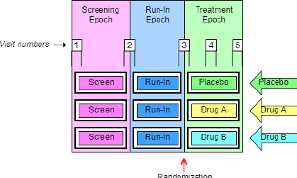
Two Trial Visits datasets are shown for this trial. The first shows a somewhat idealized situation, where the protocol has given specific timings for the Visits. The second shows a more usual situation, where the timings have been described only loosely.
tv.xpt
| Row | STUDYID | DOMAIN | VISITNUM | TVSTRL | TVENRL |
|---|---|---|---|---|---|
| 1 | EX1 | TV | 1 | Start of Screen Epoch | 1 hour after start of Visit |
| 2 | EX1 | TV | 2 | 30 minutes before end of Screen Epoch | 30 minutes after start of Run-in Epoch |
| 3 | EX1 | TV | 3 | 30 minutes before end of Run-in Epoch | 1 hour after start of Treatment Epoch |
| 4 | EX1 | TV | 4 | 1 week after start of Treatment Epoch | 1 hour after start of Visit |
| 5 | EX1 | TV | 5 | 2 weeks after start of Treatment Epoch | 1 hour after start of Visit |
tv.xpt
| Row | STUDYID | DOMAIN | VISITNUM | TVSTRL | TVENRL |
|---|---|---|---|---|---|
| 1 | EX1 | TV | 1 | Start of Screen Epoch | |
| 2 | EX1 | TV | 2 | On the same day as, but before, the end of the Screen Epoch | On the same day as, but after, the start of the Run-in Epoch |
| 3 | EX1 | TV | 3 | On the same day as, but before, the end of the Run-in Epoch | On the same day as, but after, the start of the Treatment Epoch |
| 4 | EX1 | TV | 4 | 1 week after start of Treatment Epoch | |
| 5 | EX1 | TV | 5 | 2 weeks after start of Treatment Epoch | At Trial Exit |
Although the start and end rules in this example reference the starts and ends of Epochs, the start and end rules of some Visits for trials with Epochs that span multiple Elements will need to reference Elements rather than Epochs. When an Arm includes repetitions of the same Element, it may be necessary to use TAETORD as well as an Element name to specify when a Visit is to occur.
7.3.1.1 Trial Visits Issues
1. Identifying Trial Visits
In general, a trial's Visits are defined in its protocol. The term "Visit" reflects the fact that data in outpatient studies is usually collected during a physical visit by the subject to a clinic. Sometimes a Trial Visit defined by the protocol may not correspond to a physical visit. It may span multiple physical visits, as when screening data may be collected over several clinic visits but recorded under one Trial Visit name (VISIT) and number (VISITNUM). A Trial Visit may also represent only a portion of an extended physical visit, as when a trial of in-patients collects data under multiple Trial Visits for a single hospital admission.
Diary data and other data collected outside a clinic may not fit the usual concept of a Trial Visit, but the planned times of collection of such data may be described as "Visits" in the Trial Visits dataset if desired.
2. Trial Visit Rules
Visit start rules are different from Element start rules because they usually describe when a Visit should occur, while Element start rules describe the moment at which an Element is considered to start. There are usually gaps between Visits, periods of time that do not belong to any Visit, so it is usually not necessary to identify the moment when one Visit stops and another starts. However, some trials of hospitalized subjects may divide time into Visits in a manner more like that used for Elements, and a transition event may need to be defined in such cases.
Visit start rules are usually expressed relative to the start or end of an Element or Epoch, e.g., "1-2 hours before end of First Wash-out" or "8 weeks after end of 2nd Treatment Epoch". Note that the Visit may or may not occur during the Element used as the reference for Visit start rule. For example, a trial with Elements based on treatment of disease episodes might plan a Visit 6 months after the start of the first treatment period, regardless of how many disease episodes have occurred.
Visit end rules are similar to Element end rules, describing when a Visit should end. They may be expressed relative to the start or end of an Element or Epoch, or relative to the start of the Visit.
The timings of Visits relative to Elements may be expressed in terms that cannot be easily quantified. For instance, a protocol might instruct that at a baseline Visit the subject be randomized, given the study drug, and instructed to take the first dose of study Drug X at bedtime that night. This baseline Visit is thus started and ended before the start of the treatment Epoch, but we don't know how long before the start of the treatment Epoch the Visit will occur. The trial start rule might contain the value, "On the day of, but before, the start of the Treatment Epoch."
3. Visit Schedules Expressed with Ranges
Ranges may be used to describe the planned timing of Visits (e.g., 12-16 days after the start of 2nd Element), but this is different from the "windows" that may be used in selecting data points to be included in an analysis associated with that Visit. For example, although Visit 2 was planned for 12-16 days after the start of treatment, data collected 10-18 days after the start of treatment might be included in a "Visit 1" analysis. The two ranges serve different purposes.
4. Contingent Visits
Some data collection is contingent on the occurrence of a "trigger" event, or disease milestone (see the Trial Disease Milestones (TM) dataset under Section 7.3, Schedule for Assessments (TV, TD, and TM)). When such planned data collection involves an additional clinic visit, a "contingent" Visit may be included in the trial visits table, with start a rule that describes the circumstances under which it will take place. Since values of VISITNUM must be assigned to all records in the Trial Visits dataset, a contingent Visit included in the Trial Visits dataset must have a VISITNUM, but the VISITNUM value may not be a "chronological" value, due to the uncertain timing of a contingent Visit. If contingent visits are not included in the TV dataset, then they would be treated as unplanned visits in the Subject Visits (SV) domain.
7.3.2 Trial Disease Assessments
TD – Description/Overview
A trial design domain that provides information on the protocol-specified disease assessment schedule, to be used for comparison with the actual occurrence of the efficacy assessments in order to determine whether there was good compliance with the schedule.
TD – Specification
td.xpt, Trial Disease Assessments — Trial Design, Version 3.2. One record per planned constant assessment
period, Tabulation.
| Variable | Variable Label | Type | Controlled | Role | CDISC Notes | Core |
|---|---|---|---|---|---|---|
| Name | Terms, | |||||
| Codelist or | ||||||
| F ormat1 | ||||||
| STUDYID | Study Identifier | Char | Identifier | Unique identifier for a study. | Req | |
| DOMAIN | Domain Abbreviation | Char | TD | Identifier | Two-character abbreviation for the domain. | Req |
| TDORDER | Sequence of Planned Assessment Schedule | Num | Timing | A number given to ensure ordinal sequencing of the | Req | |
| planned assessment schedules within a trial. | ||||||
| TDANCVAR | Anchor Variable Name | Char | Timing | A reference to the date variable name that provides the | Req | |
| start point from which the planned disease assessment | ||||||
| schedule is measured. This must be a referenced from | ||||||
| the ADaM ADSL dataset, e.g. "ANCH1DT". Note: | ||||||
| TDANCVAR will contain the name of a reference date | ||||||
| variable. | ||||||
| TDSTOFF | Offset from the Anchor | Char | ISO 8601 | Timing | A fixed offset from the date provided by the variable | Req |
| referenced in TDANCVAR. This is used when the timing | ||||||
| of planned cycles does not start on the exact day | ||||||
| referenced in the variable indicated in TDANCVAR. The | ||||||
| value of this variable will be either zero or a positive | ||||||
| value and will be represented in ISO 8601 character | ||||||
| format. | ||||||
| TDTGTPAI | Planned Assessment Interval | Char | ISO 8601 | Timing | The planned interval between disease assessments | Req |
| represented in ISO 8601 character format. | ||||||
| TDMINPAI | Planned Assessment Interval Minimum | Char | ISO 8601 | Timing | The lower limit of the allowed range for the planned | Req |
| interval between disease assessments represented in | ||||||
| ISO 8601 character format. | ||||||
| Name | Terms, | |||||
| Codelist or | ||||||
| Format1 | ||||||
| TDMAXPAI | Planned Assessment Interval Maximum | Char | ISO 8601 | Timing | The upper limit of the allowed range for the planned | Req |
| interval between disease assessments represented in | ||||||
| ISO 8601 character format. | ||||||
| TDNUMRPT | Maximum Number of Actual Assessments | Num | Record Qualifier | This variable must represent the maximum number of | Req | |
| actual assessments for the analysis that this disease | ||||||
| assessment schedule describes. In a trial where the | ||||||
| maximum number of assessments is not defined | ||||||
| explicitly in the protocol (e.g., assessments occur until | ||||||
| death), TDNUMRPT should represent the maximum | ||||||
| number of disease assessments that support the | ||||||
| efficacy analysis encountered by any subject across the | ||||||
| trial at that point in time. |
¹ In this column, * indicates the variable may be subject to controlled terminology, and CDISC/NCI codelist code values are enclosed in (parenthesis).
TD – Assumptions
1. The purpose of the TD domain is to provide information on planned scheduling of disease assessments when the scheduling of disease assessments is not necessarily tied to the scheduling of visits. In oncology studies, good compliance with the disease-assessment schedule is essential to reduce the risk of "assessment time bias". The TD domain makes possible an evaluation of "assessment time bias" from SDTM, in particular, for studies with progression-free survival (PFS) endpoints. TD has limited utility within oncology and was developed specifically with RECIST in mind and where an assessment time bias analysis is appropriate. It is understood that extending this approach to Cheson and other criteria may not be appropriate or may pose difficulties. It is also understood that this approach may not be necessary in non-oncology studies, although it is available for use if appropriate.
2. A planned schedule of assessments will have a defined start point and the TDANCVAR variable is used to identify the variable in ADSL that holds the "anchor" date. By default, the anchor variable for the first pattern is ANCH1DT. An anchor date must be provided for each pattern of assessments and each anchor variable must exist in ADSL. TDANCVAR is therefore a Required variable. Anchor date variable names should adhere to ADaM variable naming conventions (e.g. ANCH1DT, ANCH2DT, etc). One anchor date may be used to anchor more than one pattern of disease assessments. When that is the case, the appropriate offset for the start of a subsequent pattern, represented as an ISO 8601 duration value, should be provided in the TDSTOFF variable.
3. The TDSTOFF variable is used in conjunction with the anchor date value (from the anchor date variable identified in TDANCVAR). If the pattern of disease assessments does not start exactly on a date collected on the CRF, this variable will represent the offset between the anchor date value and the start date of the pattern of disease assessments. This may be a positive or negative interval value represent in an ISO 8601 format.
4. This domain should not be created when the disease assessment schedule may vary for individual subjects, for example when completion of the first phase of a study is event driven.
TD – Examples
Example 1
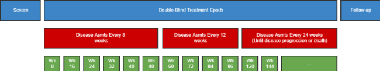
This example shows a study where the disease assessment schedule changes over the course of the study. In this example, there are three distinct disease-assessment schedule patterns. A single anchor date variable (TDANCVAR) provides the anchor date for each pattern. The offset variable (TDSTOFF) used in conjunction with the anchor date variable provides the start point of each pattern of assessments..
- The first disease-assessment schedule pattern starts at the reference start date (identified in the ADSL ANCH1DT variable) and repeats every 8 weeks for a total of six repeats (i.e., Week 8, Week 16, Week 24, Week 32, Week 40, and Week 48). Note that there is an upper and lower limit around the planned disease assessment target where the first assessment (8 Weeks) could occur as early as Day 53 and as late as Week 9. This upper and lower limit (-3 days, +1 week) would be applied to all assessments during that pattern.
- The second disease assessment schedule starts from Week 48 and repeats every 12 weeks for a total of 4 repeats (i.e., Week 60, Week 72, Week 84, Week 96), with respective upper and lower limits of -1 week and + 1 week.
- The third disease assessment schedule starts from Week 96 and repeats every 24 weeks (i.e. Week 120, Week 144, etc.), with respective upper and lower limits of -1 week and + 1 week, for an indefinite length of time. The schematic above shows that, for the third pattern, assessments will occur until disease progression, and this therefore leaves the pattern open ended. However, when data is included in an analysis, the total number of repeats can be identified and the highest number of repeat assessments for any subject in that pattern must be recorded in the TDNUMRPT variable on the final pattern record.
td.xpt
| Row | STUDYID | DOMAIN | TDORDER | TDANCVAR | TDSTOFF | TDTGTPAI | TDMINPAI | TDMAXPAI | TDNUMRPT |
|---|---|---|---|---|---|---|---|---|---|
| 1 | ABC123 | TD | 1 | ANCH1DT | P0D | P8W | P53D | P9W | 6 |
| 2 | ABC123 | TD | 2 | ANCH1DT | P60W | P12W | P11W | P13W | 4 |
| 3 | ABC123 | TD | 3 | ANCH1DT | P120W | P24W | P23W | P25W | 12 |
Example 2
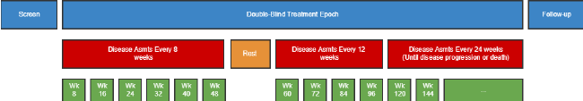
This example is the same as Example 1, except that there is a rest period of 14 days prior to the start of the second disease-assessment schedule. This example also shows how three different reference/anchor dates can be used.
- The Rest is not represented as a row in this domain since no disease assessments occur during the Rest. Note that although the Rest epoch in this example is not important for TD, it is important that it is represented in other trial design datasets.
- The second pattern of assessments starts on the date identified in the ADSL variable ANCH2DT and repeats every 12 weeks for a total of 4 repeats with respective upper and lower limits of -1 week and + 1 week.
- The third disease assessment schedule pattern follows on from the second pattern starting on the date identified in the ADSL variable ANCH3DT and repeats every 24 weeks with respective upper and lower limits of -1 week and + 1 week. The schematic above for the final disease-assessment pattern indicates that assessments will occur until disease progression, and this therefore leaves the pattern open ended. However, when data is included in an analysis, the total number of repeats can be identified and the highest number of repeat assessments for any subject in that pattern must be recorded in the TDNUMRPT variable on the final pattern record. In this instance, the maximum number of observed assessments was 17.
td.xpt
| Row | STUDYID | DOMAIN | TDORDER | TDANCVAR | TDSTOFF | TDTGTPAI | TDMINPAI | TDMAXPAI | TDNUMRPT |
|---|---|---|---|---|---|---|---|---|---|
| 1 | ABC123 | TD | 1 | ANCH1DT | P0D | P8W | P53D | P9W | 6 |
| 2 | ABC123 | TD | 2 | ANCH2DT | P0D | P12W | P11W | P13W | 4 |
| 3 | ABC123 | TD | 3 | ANCH3DT | P0D | P24W | P23W | P25W | 17 |
Example 3
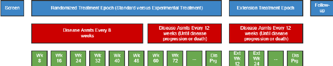
This example shows a study where subjects are randomized to standard treatment or an experimental treatment. The subjects who are randomized to standard treatment are given the option to receive experimental treatment after the end of the standard treatment (e.g., disease progression on standard treatment). In the randomized treatment Epoch, the disease assessment schedule changes over the course of the study. At the start of the extension treatment Epoch, subjects are re-baselined, i.e., an extension baseline disease assessment is performed and the disease assessment schedule is restarted.
In this example, there are three distinct disease-assessment schedule patterns.
- The first disease-assessment schedule pattern starts at the reference start date (identified in the ADSL ANCH1DT variable) and repeats every 8 weeks for a total of six repeats ( i.e., Week 8, Week 16, Week 24, Week 32, Week 40, and Week 48), with respective upper and lower limits of - 3 days and + 1 week.
- The second disease assessment schedule starts from Week 48 and repeats every 12 weeks (i.e., Week 60, Week 72, etc.), with respective upper and lower limits of -1 week and + 1 week, for an indefinite length of time. The schematic above shows that, for the second pattern, assessments will occur until disease progression, and this therefore leaves the pattern open ended.
- The third disease assessment schedule starts at the extension reference start date (identified in the ADSL ANCH2DT variable) from Week 96 and repeats every 24 weeks (i.e., Week 120, Week 144, etc.), with respective upper and lower limits of -1 week and + 1 week, for an indefinite length of time. The schematic above shows that, for the third pattern, assessments will occur until disease progression, and this therefore leaves the pattern open ended.
For open-ended patterns, the total number of repeats can be identified when the data analysis is performed; the highest number of repeat assessments for any subject in that pattern must be recorded in the TDNUMRPT variable on the final pattern record.
td.xpt
| Row | STUDYID | DOMAIN | TDORDER | TDANCVAR | TDSTOFF | TDTGPAI | TDMINPAI | TDMAXPAI | TDNUMRPT |
|---|---|---|---|---|---|---|---|---|---|
| 1 | ABC123 | TD | 1 | ANCH1DT | P0D | P8W | P53D | P9W | 6 |
| 2 | ABC123 | TD | 2 | ANCH1DT | P60W | P12W | P11W | P13W | 17 |
| 3 | ABC123 | TD | 3 | ANCH2DT | P0D | P12W | P11W | P13W | 17 |
7.3.3 Trial Disease Milestones
TM – Description/Overview
A trial design domain that is used to describe disease milestones, which are observations or activities anticipated to occur in the course of the disease under study, and which trigger the collection of data.
TM – Specification
tm.xpt, Trial Disease Milestones — Trial Design, Version 1.0. One record per Disease Milestone type,
Tabulation.
| Variable | Variable Label | Type | Controlled Terms, Codelist o r Format1 | Role | CDISC Notes | Core |
|---|---|---|---|---|---|---|
| Name | ||||||
| STUDYID | Study Identifier | Char | Identifier | Unique identifier for a study. | Req | |
| Variable | Variable Label | Type | Controlled | Role | CDISC Notes | Core |
| Name | Terms, Codelist | |||||
| or Format1 | ||||||
| DOMAIN | Domain | Char | TM | Identifier | Two-character abbreviation for the domain, which | Req |
| must be TM. | ||||||
| MIDSTYPE | Disease Milestone Type | Char | Topic | The type of Disease Milestone. Example: | Req | |
| "HYPOGLYCEMIC EVENT". | ||||||
| TMDEF | Disease Milestone Definition | Char | Rule | Definition of the Disease Milestone. | Req | |
| TMRPT | Disease Milestone Repetition Indicator | Char | (NY) | Record Qualifier | Indicates whether this is a Disease Milestone that | Req |
| can occur only once ("N") or a type of Disease | ||||||
| Milestone that can occur multiple times ("Y"). |
¹ In this column, * indicates the variable may be subject to controlled terminology, and CDISC/NCI codelist code values are enclosed in (parenthesis).
TM – Assumptions
1. Disease Milestones may be things that would be expected to happen before the study, or may be things that are anticipated to happen during the study. The occurrence of Disease Milestones for particular subjects are represented in the Subject Disease Milestones (SM) dataset.
2. The dataset contains a record for each type of Disease Milestone. The Disease Milestone is defined in TMDEF.
TM – Examples
Example 1
In this diabetes study, initial diagnosis of diabetes and the hypoglycemic events that occur during the trial have been identified as Disease Milestones of interest.
Row 1: Shows that the initial diagnosis is given the MIDSTYPE of "DIAGNOSIS" and is defined in TMDEF. It is not repeating (occurs only once).
Row 2: Shows that hypoglycemic events are given the MIDSTYPE of "HYPOGLYCEMIC EVENT", and a definition in TMDEF. For an actual study, the definition would be expected to include a particular threshold level, rather than the text "threshold level" used in this example. A subject may experience multiple hypoglycemic events as indicated by TMRPT = "Y".
tm.xpt
| Row | STUDYID | DOMAIN | MIDSTYPE | TMDEF | TMRPT |
|---|---|---|---|---|---|
| 1 | XYZ | TM | DIAGNOSIS | Initial diagnosis of diabetes, the first time a physician told the subject they had diabetes | N |
| 2 | XYZ | TM | HYPOGLYCEMIC EVENT | Hypoglycemic Event, the occurrence of a glucose level below (threshold level) | Y |
7.4 Trial Summary and Eligibility (TI and TS)
This subsection contains the Trial Design datasets that describe:
- The characteristics of the trial: Section 7.4.1, Trial Summary (TS)
- Subject eligibility criteria for trial participation: Section 7.4.2, Trial Inclusion/Exclusion Criteria (TI)
The TI and TS datasets are tabular synopses of parts of the study protocol.
7.4.1 Trial Inclusion/Exclusion Criteria
TI – Description/Overview
A trial design domain that contains one record for each of the inclusion and exclusion criteria for the trial. This domain is not subject oriented.
It contains all the inclusion and exclusion criteria for the trial, and thus provides information that may not be present in the subject-level data on inclusion and exclusion criteria. The IE domain (described in Section 6.3.4, Inclusion/Exclusion Criteria Not Met) contains records only for inclusion and exclusion criteria that subjects did not meet.
TI – Specification
ti.xpt, Trial Inclusion/Exclusion Criteria — Trial Design, Version 3.2. One record per I/E crierion,
Tabulation.
| Variable | Variable Label | Type | Controlled | Role | CDISC Notes | Core |
|---|---|---|---|---|---|---|
| Name | Terms, | |||||
| Codelist or | ||||||
| F ormat1 | ||||||
| STUDYID | Study Identifier | Char | Identifier | Unique identifier for a study. | Req | |
| DOMAIN | Domain Abbreviation | Char | TI | Identifier | Two-character abbreviation for the domain. | Req |
| IETESTCD | Incl/Excl Criterion Short Name | Char | * | Topic | Short name IETEST. It can be used as a column | Req |
| name when converting a dataset from a vertical to a | ||||||
| horizontal format. The value in IETESTCD cannot be | ||||||
| longer than 8 characters, nor can it start with a | ||||||
| number (e.g., "1TEST" is not valid). IETESTCD | ||||||
| cannot contain characters other than letters, | ||||||
| numbers, or underscores. The prefix "IE" is used to | ||||||
| ensure consistency with the IE domain. | ||||||
| IETEST | Inclusion/Exclusion Criterion | Char | * | Synonym Qualifier | Full text of the inclusion or exclusion criterion. The | Req |
| prefix "IE" is used to ensure consistency with the IE | ||||||
| domain. | ||||||
| IECAT | Inclusion/Exclusion Category | Char | (IECAT) | Grouping Qualifier | Used for categorization of the inclusion or exclusion | Req |
| criteria. | ||||||
| IESCAT | Inclusion/Exclusion Subcategory | Char | * | Grouping Qualifier | A further categorization of the exception criterion. | Perm |
| Can be used to distinguish criteria for a sub-study or | ||||||
| to categorize as major or minor exceptions. | ||||||
| Examples: "MAJOR", "MINOR". | ||||||
| TIRL | Inclusion/Exclusion Criterion Rule | Char | Rule | Rule that expresses the criterion in computer- | Perm | |
| executable form. See Assumption 4. | ||||||
| TIVERS | Protocol Criteria Versions | Char | Record Qualifier | The number of this version of the Inclusion/Exclusion | Perm | |
| criteria. May be omitted if there is only one version. |
¹ In this column, * indicates the variable may be subject to controlled terminology, and CDISC/NCI codelist code values are enclosed in (parenthesis).
TI – Assumptions
1. If inclusion/exclusion criteria were amended during the trial, then each complete set of criteria must be included in the TI domain. TIVERS is used to distinguish between the versions.
2. Protocol version numbers should be used to identify criteria versions, though there may be more versions of the protocol than versions of the inclusion/exclusion criteria. For example, a protocol might have versions 1, 2, 3, and 4, but if the inclusion/exclusion criteria in version 1 were unchanged through versions 2 and 3, and changed only in version 4, then there would be two sets of inclusion/exclusion criteria in TI: one for version 1 and one for version 4.
3. Individual criteria do not have versions. If a criterion changes, it should be treated as a new criterion, with a new value for IETESTCD. If criteria have been numbered and values of IETESTCD are generally of the form INCL00n or EXCL00n, and new versions of a criterion have not been given new numbers, separate values of IETESTCD might be created by appending letters, e.g., INCL003A, INCL003B.
4. IETEST contains the text of the inclusion/exclusion criterion. However, since entry criteria are rules, the variable TIRL has been included in anticipation of the development of computer executable rules.
5. If a criterion text is <200 characters, it goes in IETEST; if the text is >200 characters, put meaningful text in IETEST and describe the full text in the study metadata. See Section 4.5.3.1, Test Name (--TEST) Greater than 40 Characters, for further information.
TI – Examples
Example 1
This example shows records for a trial that had two versions of inclusion/exclusion criteria.
Rows 1-3: Show the two inclusion criteria and one exclusion criterion for version 1 of the protocol.
Rows 4-6: Show the inclusion/exclusion criteria for version 2.2 of the protocol, which changed the minimum age for entry from 21 to 18.
ti.xpt
| Row | STUDYID | DOMAIN | IETESTCD | IETEST | IECAT | TIVERS |
|---|---|---|---|---|---|---|
| 1 | XYZ | TI | INCL01 | Has disease under study | INCLUSION | 1 |
| 2 | XYZ | TI | INCL02 | Age 21 or greater | INCLUSION | 1 |
| 3 | XYZ | TI | EXCL01 | Pregnant or lactating | EXCLUSION | 1 |
| 4 | XYZ | TI | INCL01 | Has disease under study | INCLUSION | 2.2 |
| 5 | XYZ | TI | INCL02A | Age 18 or greater | INCLUSION | 2.2 |
| 6 | XYZ | TI | EXCL01 | Pregnant or lactating | EXCLUSION | 2.2 |
7.4.2 Trial Summary
TS – Description/Overview
A trial design domain that contains one record for each trial summary characteristic. This domain is not subject oriented.
The Trial Summary (TS) dataset allows the sponsor to submit a summary of the trial in a structured format. Each record in the Trial Summary dataset contains the value of a parameter, a characteristic of the trial. For example, Trial Summary is used to record basic information about the study such as trial phase, protocol title, and trial objectives. The Trial Summary dataset contains information about the planned and actual trial characteristics.
TS – Specification
ts.xpt, Trial Summary Information — Trial Design, Version 3.2. One record per trial summary parameter value, Tabulation.
| Variable | Variable Label | Type | Controlled | Role | CDISC Notes | Core |
|---|---|---|---|---|---|---|
| Name | Terms, Codelist | |||||
| o r Format1 | ||||||
| STUDYID | Study Identifier | Char | Identifier | Unique identifier for a study. | Req | |
| DOMAIN | Domain Abbreviation | Char | TS | Identifier | Two-character abbreviation for the domain. | Req |
| TSSEQ | Sequence Number | Num | Identifier | Sequence number given to ensure uniqueness | Req | |
| within a dataset. Allows inclusion of multiple records | ||||||
| for the same TSPARMCD. | ||||||
| TSGRPID | Group ID | Char | Identifier | Used to tie together a group of related records. | Perm | |
| TSPARMCD | Trial Summary Parameter Short Name | Char | (TSPARMCD) | Topic | TSPARMCD (the companion to TSPARM) is limited | Req |
| to 8 characters and does not have special character | ||||||
| restrictions. These values should be short for ease | ||||||
| of use in programming, but it is not expected that | ||||||
| TSPARMCD will need to serve as variable names. | ||||||
| Examples: "AGEMIN", "AGEMAX". | ||||||
| TSPARM | Trial Summary Parameter | Char | (TSPARM) | Synonym Qualifier | Term for the Trial Summary Parameter. The value | Req |
| in TSPARM cannot be longer than 40 characters. | ||||||
| Examples: "Planned Minimum Age of Subjects", | ||||||
| "Planned Maximum Age of Subjects". | ||||||
| Name | Terms, Codelist | |||||
| or Format1 | ||||||
| TSVAL | Parameter Value | Char | * | Result Qualifier | Value of TSPARM. Example: "ASTHMA" when | Exp |
| TSPARM value is "Trial Indication". TSVAL can only | ||||||
| be null when TSVALNF is populated. Text over 200 | ||||||
| characters can be added to additional columns | ||||||
| TSVAL1-TSVALn. See Assumption 8. | ||||||
| TSVALNF | Parameter Null Flavor | Char | ISO 21090 NullFlavor enumeration | Result Qualifier | Null flavor for the value of TSPARM, to be | Perm |
| populated if and only if TSVAL is null. | ||||||
| TSVALCD | Parameter Value Code | Char | * | Result Qualifier | This is the code of the term in TSVAL. For example, | Exp |
| "6CW7F3G59X" is the code for Gabapentin; | ||||||
| "C49488" is the code for Y. The length of this | ||||||
| variable can be longer than 8 to accommodate the | ||||||
| length of the external terminology. | ||||||
| TSVCDREF | Name of the Reference Terminology | Char | Result Qualifier | The name of the Reference Terminology from which | Exp | |
| TSVALCD is taken. For example; CDISC, | ||||||
| SNOMED, ISO 8601. | ||||||
| TSVCDVER | Version of the Reference Terminology | Char | Result Qualifier | The version number of the Reference Terminology, | Exp | |
| if applicable. |
¹ In this column, * indicates the variable may be subject to controlled terminology, and CDISC/NCI codelist code values are enclosed in (parenthesis).
TS – Assumptions
1. The intent of this dataset is to provide a summary of trial information. This is not subject-level data.
2. A list of values for TSPARM and TSPARMCD can be found in CDISC controlled terminology, available at https://www.cancer.gov/research/resources/terminology/cdisc.
3. Further information about the parameters is included Appendix C1, Trial Summary Codes. TSVAL may have controlled terminology depending on the value of TSPARMCD. Conditions for including parameters are included in Appendix C1, Trial Summary Codes.
4. Controlled terminology for TSPARM is extensible. The meaning of any added parameters should be explained in the metadata for the TS dataset.
5. For some trials, there will be multiple records in the Trial Summary dataset for a single parameter. For example, a trial that addresses both Safety and Efficacy could have two records with TSPARMCD = "TTYPE", one with the TSVAL = "SAFETY" and the other with TSVAL = "EFFICACY".
TSSEQ has a different value for each record for the same parameter.
| Note that this is different from datasets that contain subject data, where the --SEQ variable has a different value |
|---|
| for each record for the same subject. |
6. The method for treating text > 200 characters in Trial Summary is similar to that used for the Comments (CO) special purpose domain (Section 5.1, Comments). If TSVAL is > 200 characters, then it should be split into multiple variables, TSVAL-TSVAL n . See Section 4.5.3.2, Text Strings Greater than 200 Characters in Other Variables.
7. Since TS does not contain subject-level data, there is no restriction analogous to the requirement in subject-level datasets that the blocks bound by TSGRPID are within a subject. TSGRPID can be used to tie together any block of records in the dataset. TSGRPID is most likely to be used when the TS dataset includes multiple records for the same parameter. For example, if a trial compared a dose of 50 mg twice a day with a dose of 100 mg once a day, a record with TSPARMCD = "DOSE" and TSVAL = "50" and a record with TSPARMCD = "DOSFREQ" and TSVAL = "BID" could be assigned one GRPID, while a record with TSPARMCD = "DOSE" and TSVAL = "100" and a record with TSPARMCD = "DOSFREQ" and TSVAL = "Q24H" could be assigned a different GRPID.
8. The order of parameters in the examples of TS datasets should not be taken as a requirement. There are no requirements or expectations about the order of parameters within the TS dataset.
9. Not all protocols describe objectives in a way that specifically designates each objective as "primary" or "secondary". If the protocol does not provide information about which objectives meet the definition of TSPARM = "OBJPRIM" (i.e., "The principle purpose of the trial"), then all objectives should be given as values of TSPARM = "OBJPRIM". The Trial Summary Parameter "Trial Secondary Objective" is defined as "The auxiliary purpose of the trial". A protocol may use multiple designations for objectives that are not primary (e.g., Secondary, Tertiary, and Exploratory), but all these non-primary objectives should be given as values of TSPARM = "OBJSEC".
10. As per the definitions, the Primary Outcome Measure is associated with the Primary Objective and the Secondary Outcome Measure is associated with the Secondary Objective. It is possible for the same Outcome measure to be associated with more than one objective. For example two objectives could use the same outcome measure at different time points, or using different analysis methods.
11. If a primary objective is assessed by means of multiple outcome measures, then all of these outcome measures should be provided as values of TSPARM = "OUTMSPR". Similarly, all outcome measures used to assess secondary objectives should be provided as values of TSPARM = "OUTMSSEC".
12. There is a code value for TSVALCD only when there is controlled terminology for TSVAL. For example; when TSPARMCD = "PLANSUB" or TSPARMCD = "TITLE", then TSVALCD will be null.
13. Trial Indication: A clinical pharmacology study on healthy volunteers, whose sole purpose is to collect pharmacokinetic data, would have no trial indication, so TSVAL would be null and TSVALNF would be "NA". A vaccine study on healthy subjects, whose intended purpose is to prevent influenza infection, would have INDIC = "Influenza". If the trial is to treat, diagnosis, or prevent a disease, then INDIC is "If Applicable".
14. TSVALNF contains a "null flavor," a value that provides additional coded information when TSVAL is null. For example, for TSPARM = "MAXAGE", there is no value if a study does not specify a maximum age. In this case, the appropriate null flavor is "PINF", which stands for "positive infinity". In a clinical pharmacology study conducted in healthy volunteers for a drug which indications are not yet established, the appropriate null flavor for TINDC would be "NA", which stands for "not applicable". TSVALNF can also be used in a case where the value of a particular parameter is unknown.
15. Dun and Bradstreet (D&B) maintains its "data universal numbering system," known as DUNS. It issues unique 9-digit numbers to businesses. Each sponsor organization has a DUNS number. A UNII (Unique Ingredient Identifier) is an identifier for a single defined substance. The UNII is a non- proprietary, free, unique, unambiguous, non semantic, alphanumeric identifier based on a substance's molecular structure and/or descriptive information.
TS – Examples
Example 1
This example shows all of the parameters that are required or expected in the Trial Summary dataset. Use controlled terminology for TSVAL, available at: https://www.cancer.gov/research/resources/terminology/cdisc.
ts.xpt
| Row | STUDYID | DOMAIN | TSSEQ | TSGRPID | TSPARMCD | TSPARM | TSVAL | TSVALNF | TSVALCD | TSVCDREF | TSVCDVER |
|---|---|---|---|---|---|---|---|---|---|---|---|
| 1 | XYZ | TS | 1 | ADDON | Added on to Existing Treatments | Y | C49488 | CDISC | 2011-06-10 | ||
| 2 | XYZ | TS | 1 | AGEMAX | Planned Maximum Age of Subjects | P70Y | ISO 8601 | ||||
| 3 | XYZ | TS | 1 | AGEMIN | Planned Minimum Age of Subjects | P18M | ISO 8601 | ||||
| 4 | XYZ | TS | 1 | LENGTH | Trial Length | P3M | ISO 8601 | ||||
| 5 | XYZ | TS | 1 | PLANSUB | Planned Number of Subjects | 300 | |||||
| 6 | XYZ | TS | 1 | RANDOM | Trial is Randomized | Y | C49488 | CDISC | 2011-06-10 | ||
| 7 | XYZ | TS | 1 | SEXPOP | Sex of Participants | BOTH | C49636 | CDISC | 2011-06-10 | ||
| 8 | XYZ | TS | 1 | STOPRULE | Study Stop Rules | INTERIM ANALYSIS FOR FUTILITY | |||||
| 9 | XYZ | TS | 1 | TBLIND | Trial Blinding Schema | DOUBLE BLIND | C15228 | CDISC | 2011-06-10 | ||
| 10 | XYZ | TS | 1 | TCNTRL | Control Type | PLACEBO | C49648 | CDISC | 2011-06-10 | ||
| 11 | XYZ | TS | 1 | TDIGRP | Diagnosis Group | Neurofibromatosis Syndrome (Disorder) | 19133005 | SNOMED | |||
| 12 | XYZ | TS | 1 | INDIC | Trial Disease/Condition Indication | Tonic-Clonic Epilepsy (Disorder) | 352818000 | SNOMED | |||
| 13 | XYZ | TS | 1 | TINDTP | Trial Intent Type | TREATMENT | C49656 | CDISC | 2011-06-10 | ||
| 14 | XYZ | TS | 1 | TITLE | Trial Title | A 24 Week Study of Oral Gabapentin vs. Placebo as add-on Treatment to Phenytoin in Subjects with Epilepsy due to Neurofibromatosis | |||||
| 15 | XYZ | TS | 1 | TPHASE | Trial Phase Classification | Phase II Trial | C15601 | CDISC | 2011-06-10 | ||
| 16 | XYZ | TS | 1 | TTYPE | Trial Type | EFFICACY | C49666 | CDISC | 2011-06-10 | ||
| 17 | XYZ | TS | 2 | TTYPE | Trial Type | SAFETY | C49667 | CDISC | 2011-06-10 | ||
| 18 | XYZ | TS | 1 | CURTRT | Current Therapy or Treatment | Phenytoin | 6158TKW0C5 | UNII | |||
| 19 | XYZ | TS | 1 | OBJPRIM | Trial Primary Objective | Reduction in the 3-month seizure frequency from baseline |
| Row | STUDYID | DOMAIN | TSSEQ | TSGRPID | TSPARMCD | TSPARM | TSVAL | TSVALNF | TSVALCD | TSVCDREF | TSVCDVER |
|---|---|---|---|---|---|---|---|---|---|---|---|
| 20 | XYZ | TS | 1 | OBJSEC | Trial Secondary Objective | Percent reduction in the 3- month seizure frequency from baseline | |||||
| 21 | XYZ | TS | 2 | OBJSEC | Trial Secondary Objective | Reduction in the 3-month tonic-clonic seizure frequency from baseline | |||||
| 22 | XYZ | TS | 1 | SPONSOR | Clinical Study Sponsor | Pharmaco | 1234567 | DUNS | |||
| 23 | XYZ | TS | 1 | TRT | Investigational Therapy or Treatment | Gabapentin | 6CW7F3G59X | UNII | |||
| 24 | XYZ | TS | 1 | RANDQT | Randomization Quotient | 0.67 | |||||
| 25 | XYZ | TS | 1 | STRATFCT | Stratification Factor | SEX | |||||
| 26 | XYZ | TS | 1 | REGID | Registry Identifier | NCT123456789 | NCT123456789 | ClinicalTrials.GOV | |||
| 27 | XYZ | TS | 2 | REGID | Registry Identifier | XXYYZZ456 | XXYYZZ456 | EUDRAC | |||
| 28 | XYZ | TS | 1 | OUTMSPRI | Primary Outcome Measure | SEIZURE FREQUENCY | |||||
| 29 | XYZ | TS | 1 | OUTMSSEC | Secondary Outcome Measure | SEIZURE FREQUENCY | |||||
| 30 | XYZ | TS | 2 | OUTMSSEC | Secondary Outcome Measure | SEIZURE DURATION | |||||
| 31 | XYZ | TS | 1 | OUTMSEXP | Exploratory Outcome Measure | SEIZURE INTENSITY | |||||
| 32 | XYZ | TS | 1 | PCLAS | Pharmacological Class | Anti-epileptic Agent | N0000175753 | MED-RT | |||
| 33 | XYZ | TS | 1 | FCNTRY | Planned Country of Investigational Sites | United States of America | USA | ISO 3166 | |||
| 34 | XYZ | TS | 2 | FCNTRY | Planned Country of Investigational Sites | Canada | CAN | ISO 3166 | |||
| 35 | XYZ | TS | 3 | FCNTRY | Planned Country of Investigational Sites | Mexico | MEX | ISO 3166 | |||
| 36 | XYZ | TS | 1 | ADAPT | Adaptive Design | N | C49487 | CDISC | 2011-06-10 | ||
| 37 | XYZ | TS | 1 | DateDesc1 | DCUTDTC | Data Cutoff Date | 2011-04-01 | ISO 8601 | |||
| 38 | XYZ | TS | 1 | DateDesc1 | DCUTDESC | Data Cutoff Description | DATABASE LOCK | ||||
| 39 | XYZ | TS | 1 | INTMODEL | Intervention Model | PARALLEL | C82639 | CDISC | |||
| 40 | XYZ | TS | 1 | NARMS | Planned Number of Arms | 3 | |||||
| 41 | XYZ | TS | 1 | STYPE | Study Type | INTERVENTIONAL | C98388 | CDISC | |||
| 42 | XYZ | TS | 1 | INTTYPE | Intervention Type | DRUG | C1909 | CDISC | |||
| 43 | XYZ | TS | 1 | SSTDTC | Study Start Date | 2009-03-11 | ISO 8601 | ||||
| 44 | XYZ | TS | 1 | SENDTC | Study End Date | 2011-04-01 | ISO 8601 | ||||
| 45 | XYZ | TS | 1 | ACTSUB | Actual Number of Subjects | 304 | |||||
| 46 | XYZ | TS | 1 | HLTSUBJI | Healthy Subject Indicator | N | C49487 | CDISC | 2011-06-10 |
| Row | STUDYID | DOMAIN | TSSEQ | TSGRPID | TSPARMCD | TSPARM | TSVAL | TSVALNF | TSVALCD | TSVCDREF | TSVCDVER |
|---|---|---|---|---|---|---|---|---|---|---|---|
| 47 | XYZ | TS | 1 | SDMDUR | Stable Disease Minimum Duration | P3W | ISO 8601 | ||||
| 48 | XYZ | TS | 1 | CRMDUR | Confirmed Response Minimum Duration | P28D | ISO 8601 |
Example 2
This example shows an example of how to implement the null flavor in TSVALNF when the value in TSVAL is missing. Note that when TSVAL is null, TSVALCD is also null, and no code system is specified in TSVCDREF and TSVCDVER.
Row 1: Shows that there was no upper limit on planned age of subjects, as indicated by TSVALNF = "PINF", the null value that means "positive infinity".
Row 2: Shows that Trial Phase Classification is not applicable, as indicated by TSVALNF = "NA".
ts.xpt
| Row | STUDYID | DOMAIN | TSSEQ | TSGRPID | TSPARMCD | TSPARM | TSVAL | TSVALNF | TSVALCD | TSVCDREF | TSVCDVER |
|---|---|---|---|---|---|---|---|---|---|---|---|
| 1 | XYZ | TS | 1 | AGEMAX | Planned Maximum Age of Subjects | PINF | |||||
| 2 | XYZ | TS | 2 | TPHASE | Trial Phase Classification | NA |
7.4.2.1 Use of Null Flavor
The variable TSVALNF is based on the idea of a "null flavor" as embodied in the ISO 21090 standard, "Health Informatics – Harmonized data types for information exchange." A null flavor is an ancillary piece of data that provides additional information when its primary piece of data is null (has a missing value). There is controlled terminology for the null flavor data item which includes such familiar values as Unknown, Other, and Not Applicable among its fourteen terms.
The proposal to include a null flavor variable to supplement the TSVAL variable in the Trial Summary dataset arose when it was realized that the Trial Summary model did not have a good way to represent the fact that a protocol placed no upper limit on the age of study subjects. When the trial summary parameter is AGEMAX, then TSVAL should have a value expressed as an ISO8601 time duration (e.g., P43Y for 43 years old or P6M for 6 months old). While it would be possible to allow a value such as NONE or UNBOUNDED to be entered in TSVAL, validation programs would then have to recognize this special term as an exception to the expected data format. Therefore, it was decided that a separate null flavor variable that uses the ISO 21090 null flavor terminology would be a better solution.
It was also decided to specify the use of a null flavor variable with this updated release of trial summary as a way of testing the use of such a variable in a limited setting. As its title suggests, the ISO 21090 standard was developed for use with healthcare data, and it is expected that it will eventually see wide use in the clinical data from which clinical trial data is derived. CDISC already uses this data type standard in the BRIDG model and the CDISC SHARE project. The null flavor, in particular, is a solution to the widespread problem of needing or wanting to convey information that will help in the interpretation of a missing value. Although null flavors could certainly be eventually used for this purpose in other cases, such as with subject data, doing so at this time would be extremely disruptive and premature. The use of null flavors for the one variable TSVAL should provide an opportunity for sponsors and reviewers to learn about the null flavors and to evaluate their usefulness in one concrete setting.
The controlled terminology for null flavor, which supersedes use of Appendix C1, Trial Summary Codes, is included below
| NullFlavor Enumeration. OID: 2.16.840.1.113883.5.1008 | |||
|---|---|---|---|
| 1 | NI | No information | The value is exceptional (missing, omitted, incomplete, improper). No information as to the reason for being an exceptional value is provided. This is the most general exceptional value. It is also the default exceptional value. |
| 2 | INV | Invalid | The value as represented in the instance is not a member of the set of permitted data values in the constrained value domain of a variable. |
| 3 | OTH | Other | The actual value is not a member of the set of permitted data values in the constrained value domain of a variable (e.g., concept not provided by required code system). |
| 4 | PINF | Positive infinity | Positive infinity of numbers |
| 4 | NINF | Negative infinity | Negative infinity of numbers |
| 3 | UNC | Unencoded | No attempt has been made to encode the information correctly, but the raw source information is represented (usually in original Text). |
| 3 | DER | Derived | An actual value may exist, but it must be derived from the information provided (usually an expression is provided directly). |
| 2 | UNK | Unknown | A proper value is applicable, but not known. |
| 3 | ASKU | Asked but unknown | Information was sought but not found (e.g., patient was asked but didn't know). |
| 4 | NAV | Temporarily unavailable | Information is not available at this time, but is expected to be available later. |
| 3 | NASK | Not asked | This information has not been sought (e.g., patient was not asked). |
| 3 | QS | Sufficient quantity | The specific quantity is not known, but is known to be non-zero and is not specified because it makes up the bulk of the material. For example, if directions said, "Add 10 mg of ingredient X, 50 mg of ingredient Y, and sufficient quantity of water to 100 ml", the null flavor "QS" would be used to express the quantity of water. |
| 3 | TRC | Trace | The content is greater than zero, but too small to be quantified. |
| 2 | MSK | Masked | There is information on this item available, but it has not been provided by the sender due to security, privacy or other reasons. There may be an alternate mechanism for gaining access to this information. WARNING — Use of this null flavor does provide information that may be a breach of confidentiality, even though no detailed data are provided. Its primary purpose is for those circumstances where it is necessary to inform the receiver that the information does exist without providing any detail. |
| 2 | NA | Not applicable | No proper value is applicable in this context (e.g., last menstrual period for a male). |
The numbers in the first column of the table above describe the hierarchy of these values, i.e.:
- No information
Invalid
o
- Other
- Positive infinity
- Negative infinity
- Unencoded
- Derived
Unknown
o
- Asked but unknown
- Temporarily unavailable
- Not asked
- Quantity sufficient
- Trace
Masked
o
Not applicable
o
The one value at level 1, No information, is the least informative. It merely confirms that the primary piece of data is null.
The values at level 2 provide a little more information, distinguishing between situations where the primary piece of data is not applicable and those where it is applicable but masked, unknown, or "invalid", i.e., not in the correct format to be represented in the primary piece of data.
The values at levels 3 and 4 provide successively more information about the situation. For example, for the MAXAGE case that provided the impetus for the creation of the TSVALNF variable, the value PINF means that there is information about the maximum age, but it is not something that can be expressed, as in the ISO8601 quantity of time format required for populating TSVAL. The null flavor PINF provides the most complete information possible in this case, i.e., that the maximum age for the study is unbounded.
7.5 How to Model the Design of a Clinical Trial
The following steps allow the modeler to move from more-familiar concepts, such as Arms, to less-familiar concepts, such as Elements and Epochs. The actual process of modeling a trial may depart from these numbered steps. Some steps will overlap; there may be several iterations; and not all steps are relevant for all studies.
1. Start from the flow chart or schema diagram usually included in the trial protocol. This diagram will show how many Arms the trial has, and the branch points, or decision points, where the Arms diverge.
2. Write down the decision rule for each branching point in the diagram. Does the assignment of a subject to an Arm depend on a randomization? On whether the subject responded to treatment? On some other criterion?
3. If the trial has multiple branching points, check whether all the branches that have been identified really lead to different Arms. The Arms will relate to the major comparisons the trial is designed to address. For some trials, there may be a group of somewhat different paths through the trial that are all considered to belong to a single Arm.
4. For each Arm, identify the major time periods of treatment and non-treatment a subject assigned to that Arm will go through. These are the Elements, or building blocks, of which the Arm is composed.
5. Define the starting point of each Element. Define the rule for how long the Element should last. Determine whether the Element is of fixed duration.
6. Re-examine the sequences of Elements that make up the various Arms and consider alternative Element definitions. Would it be better to "split" some Elements into smaller pieces or "lump" some Elements into larger pieces? Such decisions will depend on the aims of the trial and plans for analysis.
7. Compare the various Arms. In most clinical trials, especially blinded trials, the pattern of Elements will be similar for all Arms, and it will make sense to define Trial Epochs. Assign names to these Epochs. During the conduct of a blinded trial, it will not be known which Arm a subject has been assigned to, or which treatment Elements they are experiencing, but the Epochs they are passing through will be known.
8. Identify the Visits planned for the trial. Define the planned start timings for each Visit, expressed relative to the ordered sequences of Elements that make up the Arms. Define the rules for when each Visit should end.
9. If this is an oncology trial or another trial with disease assessments that are not necessarily tied to visits, find the planned timing of disease assessments in the protocol and record it in the Trial Disease Assessments dataset.
10. If the protocol includes data collection that is triggered by the occurrence of certain events, interventions, or findings, record those triggers in the Trial Disease Milestones dataset. Note that disease milestones may be pre- study (such as disease diagnosis) or on-study.
11. Identify the inclusion and exclusion criteria to be able to populate the TI dataset. If inclusion and exclusion criteria were amended so that subjects entered under different versions, populate TIVERS to represent the different versions.
12. Populate the TS dataset with summary information.
8 Representing Relationships and Data
The defined variables of the SDTM general observation classes could restrict the ability of sponsors to represent all the data they wish to submit. Collected data that may not entirely fit includes relationships between records within a domain, records in separate domains, and sponsor-defined "variables". As a result, the SDTM has methods to represent distinct types of relationships, all of which are described in more detail in subsequent sections. These include the following:
- Section 8.1, Relating Groups of Records Within a Domain Using the --GRPID Variable, describes representing a relationship between a group of records for a given subject within the same domain.
- Section 8.2, Relating Peer Records, describes representing relationships between independent records (usually in separate domains) for a subject, such as a concomitant medication taken to treat an adverse event.
- Section 8.3, Relating Datasets, describes representing a relationship between two (or more) datasets where records of one (or more) dataset(s) are related to record(s) in another dataset (or datasets).
- Section 8.4, Relating Non-Standard Variables Values to a Parent Domain, describes the method for representing the dependent relationship where data that cannot be represented by a standard variable within the demographics domain (DM) or a general-observation-class domain record (or records) can be related back to that record (or records).
- Section 8.5, Relating Comments to a Parent Domain, describes representing a dependent relationship between a comment in the Comments domain (see also Section 5, Comments) and a parent record (or records) in other domains, such as a comment recorded in association with an adverse event.
- Section 8.6, How to Determine Where Data Belong in SDTM-Compliant Data Tabulations, discusses the concept of related datasets and whether to place additional data in a separate domain or a Supplemental Qualifier special purpose dataset, and the concept of modeling findings data that refer to data in another general observation class domain.
- Section 8.7, Relating Study Subjects, describes representing collected relationships between persons, both of whom are study subjects. For example "MOTHER, BIOLOGICAL", "CHILD, BIOLOGICAL", "TWIN, DIZOGOTIC".
All relationships make use of the standard domain identifiers, STUDYID, DOMAIN, and USUBJID. In addition, the variables IDVAR and IDVARVAL are used for identifying the record-level merge/join keys. These keys are used to tie information together by linking records. The specific set of identifiers necessary to properly identify each type of relationship is described in detail in the following sections. Examples of variables that could be used in IDVAR include the following:
- The Sequence Number (--SEQ) variable uniquely identifies a record for a given USUBJID within a domain. The variable --SEQ is required in all domains except DM. For example, if a subject has 25 adverse events in the Adverse Event (AE) domain, then 25 unique AESEQ values should be established for this subject. Conventions for establishing and maintaining --SEQ values are sponsor-defined. Values may or may not be sequential depending on data processes and sources.
- The Reference Identifier (--REFID) variable can be used to capture a sponsor-defined or external identifier, such as an identifier provided in an electronic data transfer. Some examples are lab-specimen identifiers and ECG identifiers. --REFID is permissible in all general-observation-class domains, but is never required. Values for --REFID are sponsor-defined and can be any alphanumeric strings the sponsor chooses, consistent with their internal practices.
- The Grouping Identifier (--GRPID) variable, used to link related records for a subject within a domain, is explained below in Section 8.1, Relating Groups of Records Within a Domain Using the --GRPID Variable.
8.1 Relating Groups of Records Within a Domain Using the -- GRPID Variable
The optional grouping identifier variable --GRPID is Permissible in all domains that are based on the general observation classes. It is used to identify relationships between records within a USUBJID within a single domain. An example would be Intervention records for a combination therapy where the treatments in the combination varies from subject to subject. In such a case, the relationship is defined by assigning the same unique character value to the --GRPID variable. The values used for --GRPID can be any values the sponsor chooses; however, if the sponsor uses values with some embedded meaning (rather than arbitrary numbers), those values should be consistent across the submission to avoid confusion. It is important to note that --GRPID has no inherent meaning across subjects or across domains.
Using --GRPID in the general observation class domains can reduce the number of records in the RELREC, SUPP--, and CO datasets, when those datasets are submitted to describe relationships/associations for records or values to a "group" of general observation class records.
8.1.1 --GRPID Example
The following table illustrates --GRPID used in the Concomitant Medications (CM) domain to identify a combination therapy. In this example, both subjects 1234 and 5678 have reported two combination therapies, each consisting of three separate medications. The components of a combination all have the same value for CMGRPID.
This example illustrates how CMGRPID groups information only within a subject within a domain.
Rows 1-3: Show three medications taken by subject "1234". GMGRPID = "COMBO THPY 1" has been used to group these medications.
Rows 4-6: Show three different medications taken by subject "1234" with CMGRPID = "COMBO THPY 2".
Rows 7-9: Show three medications taken by subject "5678". CMGRPID = "COMBO THPY 1" has been used to group these medications. Note that the medications with GMGRPID "COMBO THPY 1" are completely different for subjects "1234" and "5678".
Rows 10-12: Show three different medications taken by subject "5678" with CMGRPID = "COMBO THPY 2". Again, the medications with "COMBO THPY 2" are completely different for subjects "1234" and "5678".
cm.xpt
| Row | STUDYID | DOMAIN | USUBJID | CMSEQ | CMGRPID | CMTRT | CMDECOD | CMDOSE | CMDOSU | CMSTDTC | CMENDTC |
|---|---|---|---|---|---|---|---|---|---|---|---|
| 1 | 1234 | CM | 1234 | 1 | COMBO THPY 1 | Verbatim Med A | Generic Med A | 100 | mg | 2004-01-17 | 2004-01-19 |
| 2 | 1234 | CM | 1234 | 2 | COMBO THPY 1 | Verbatim Med B | Generic Med B | 50 | mg | 2004-01-17 | 2004-01-19 |
| 3 | 1234 | CM | 1234 | 3 | COMBO THPY 1 | Verbatim Med C | Generic Med C | 200 | mg | 2004-01-17 | 2004-01-19 |
| 4 | 1234 | CM | 1234 | 4 | COMBO THPY 2 | Verbatim Med D | Generic Med D | 150 | mg | 2004-01-21 | 2004-01-22 |
| 5 | 1234 | CM | 1234 | 5 | COMBO THPY 2 | Verbatim Med E | Generic Med E | 100 | mg | 2004-01-21 | 2004-01-22 |
| 6 | 1234 | CM | 1234 | 6 | COMBO THPY 2 | Verbatim Med F | Generic Med F | 75 | mg | 2004-01-21 | 2004-01-22 |
| 7 | 1234 | CM | 5678 | 1 | COMBO THPY 1 | Verbatim Med G | Generic Med G | 37.5 | mg | 2004-03-17 | 2004-03-25 |
| 8 | 1234 | CM | 5678 | 2 | COMBO THPY 1 | Verbatim Med H | Generic Med H | 60 | mg | 2004-03-17 | 2004-03-25 |
| 9 | 1234 | CM | 5678 | 3 | COMBO THPY 1 | Verbatim Med I | Generic Med I | 20 | mg | 2004-03-17 | 2004-03-25 |
| 10 | 1234 | CM | 5678 | 4 | COMBO THPY 2 | Verbatim Med J | Generic Med J | 100 | mg | 2004-03-21 | 2004-03-22 |
| 11 | 1234 | CM | 5678 | 5 | COMBO THPY 2 | Verbatim Med K | Generic Med K | 50 | mg | 2004-03-21 | 2004-03-22 |
| 12 | 1234 | CM | 5678 | 6 | COMBO THPY 2 | Verbatim Med L | Generic Med L | 10 | mg | 2004-03-21 | 2004-03-22 |
8.2 Relating Peer Records
The Related Records (RELREC) special purpose dataset is used to describe relationships between records for a subject (as described in this section), and relationships between datasets (as described in Section 8.3, Relating Datasets). In both cases, relationships represented in RELREC are collected relationships, either by explicit references or check boxes on the CRF, or by design of the CRF, such as vital signs captured during an exercise stress test.
A relationship is defined by adding a record to RELREC for each record to be related and by assigning a unique character identifier value for the relationship. Each record in the RELREC special purpose dataset contains keys that identify a record (or group of records) and the relationship identifier, which is stored in the RELID variable. The value of RELID is chosen by the sponsor, but must be identical for all related records within USUBJID. It is recommended that the sponsor use a standard system or naming convention for RELID (e.g., all letters, all numbers, capitalized).
Records expressing a relationship are specified using the key variables STUDYID, RDOMAIN (the domain code of the record in the relationship), and USUBJID, along with IDVAR and IDVARVAL. Single records can be related by using a unique-record-identifier variable such as --SEQ in IDVAR. Groups of records can be related by using grouping variables such as --GRPID in IDVAR. IDVARVAL would contain the value of the variable described in IDVAR. Using --GRPID can be a more efficient method of representing relationships in RELREC, such as when relating an adverse event (or events) to a group of concomitant medications taken to treat the adverse event(s).
The RELREC dataset should be used to represent either:
- Explicit relationships, such as concomitant medications taken as a result of an adverse event.
- Information of a nature that necessitates using multiple datasets, as described in Section 8.3, Relating Datasets.
8.2.1 RELREC Dataset
relrec.xpt, Related Records — Relationships, Version 3.3. One record per related record, group of records or
dataset, Tabulation.
| Variable | Variable Label | Type | Controlled | Role | CDISC Notes | Core |
|---|---|---|---|---|---|---|
| Name | Terms, | |||||
| Codelist or | ||||||
| F ormat1 | ||||||
| STUDYID | Study Identifier | Char | Identifier | Unique identifier for a study. | Req | |
| RDOMAIN | Related Domain Abbreviation | Char | (DOMAIN) | Identifier | Abbreviation for the domain of the parent record(s). | Req |
| USUBJID | Unique Subject Identifier | Char | Identifier | Identifier used to uniquely identify a subject across all | Exp | |
| studies for all applications or submissions involving the | ||||||
| product. | ||||||
| IDVAR | Identifying Variable | Char | * | Identifier | Name of the identifying variable in the general- | Req |
| observation-class dataset that identifies the related | ||||||
| record(s). Examples include --SEQ and --GRPID. | ||||||
| IDVARVAL | Identifying Variable Value | Char | Identifier | Value of identifying variable described in IDVAR. If --SEQ | Exp | |
| is the variable being used to describe this record, then | ||||||
| the value of --SEQ would be entered here. | ||||||
| RELTYPE | Relationship Type | Char | (RELTYPE) | Record Qualifier | Identifies the hierarchical level of the records in the | Exp |
| relationship. Values should be either ONE or MANY. | ||||||
| Used only when identifying a relationship between | ||||||
| datasets (as described in Section 8.3, Relating Datasets). | ||||||
| RELID | Relationship Identifier | Char | Record Qualifier | Unique value within USUBJID that identifies the | Req | |
| relationship. All records for the same USUBJID that have | ||||||
| the same RELID are considered "related/associated." | ||||||
| RELID can be any value the sponsor chooses, and is | ||||||
| only meaningful within the RELREC dataset to identify | ||||||
| the related/associated Domain records. |
¹ In this column, * indicates the variable may be subject to controlled terminology, and CDISC/NCI codelist code values are enclosed in (parenthesis).
8.2.2 RELREC Dataset Examples
Example 1
This example illustrates the use of the RELREC dataset to relate records stored in separate domains for USUBJID = "123456". This example represents a situation in which an adverse event is related both to concomitant medications and to lab tests, but there is no relationship between the lab values and the concomitant medications.
Rows 1-3: Show the representation of a relationship between an AE record and two concomitant medication records.
Rows 4-6: Show the representation of a relationship between the same AE record and two laboratory findings records.
relrec.xpt
| Row | STUDYID | RDOMAIN | USUBJID | IDVAR | IDVARVAL | RELTYPE | RELID |
|---|---|---|---|---|---|---|---|
| 1 | EFC1234 | AE | 123456 | AESEQ | 5 | 1 | |
| 2 | EFC1234 | CM | 123456 | CMSEQ | 11 | 1 | |
| 3 | EFC1234 | CM | 123456 | CMSEQ | 12 | 1 | |
| 4 | EFC1234 | AE | 123456 | AESEQ | 5 | 2 | |
| 5 | EFC1234 | LB | 123456 | LBSEQ | 47 | 2 | |
| 6 | EFC1234 | LB | 123456 | LBSEQ | 48 | 2 |
Example 2
Example 2 is the same scenario as Example 1. In this case, however, the way the data were collected indicated that the concomitant medications and laboratory findings were all in a single relationship with the adverse event.
relrec.xpt
| Row | STUDYID | RDOMAIN | USUBJID | IDVAR I | DVARVAL | RELTYPE |
|---|---|---|---|---|---|---|
| 1 | EFC1234 | AE | 123456 | AESEQ | 5 | |
| 2 | EFC1234 | CM | 123456 | CMSEQ | 11 | |
| 3 | EFC1234 | CM | 123456 | CMSEQ | 12 | |
| 4 | EFC1234 | LB | 123456 | LBSEQ | 47 | |
| 5 | EFC1234 | LB | 123456 | LBSEQ | 48 |
RELID 1 1 1 1 1
Example 3
Example 3 is the same scenario as Example 2. However, the sponsor grouped the two concomitant medications using CMGRPID = "COMBO 1", allowing the relationship among these five records to be represented with four, rather than five, records in the RELREC dataset.
relrec.xpt
| Row | STUDYID | RDOMAIN | USUBJID | IDVAR | IDVARVAL | RELTYPE | RELID |
|---|---|---|---|---|---|---|---|
| 1 | EFC1234 | AE | 123456 | AESEQ | 5 | 1 | |
| 2 | EFC1234 | CM | 123456 | CMGRPID | COMBO1 | 1 | |
| 3 | EFC1234 | LB | 123456 | LBSEQ | 47 | 1 | |
| 4 | EFC1234 | LB | 123456 | LBSEQ | 48 | 1 |
Additional examples may be found in the domain examples such as Section 6.2.4, Disposition, Example 4, and all of the Pharmacokinetics examples in Section 6.3.11.3, Relating PP Records to PC Records.
8.3 Relating Datasets
The Related Records (RELREC) special purpose dataset can also be used to identify relationships between datasets (e.g., a one-to-many or parent-child relationship). The relationship is defined by including a single record for each related dataset that identifies the key(s) of the dataset that can be used to relate the respective records.
Relationships between datasets should only be recorded in the RELREC dataset when the sponsor has found it necessary to split information between datasets that are related, and that may need to be examined together for analysis or proper interpretation. Note that it is not necessary to use the RELREC dataset to identify associations from data in the SUPP-- datasets or the CO dataset to their parent general-observation-class dataset records or special purpose domain records, as both these datasets include the key variable identifiers of the parent record(s) that are necessary to make the association.
8.3.1 RELREC Dataset Relationship Example
Example 1
This example illustrates RELREC records used to represent the relationship between records in two datasets that have a one-to-many relationship. In the example below, all the records in one domain are being related to all of the records in the other, so both USUBJID and IDVARVAL are null.
relrec.xpt
| Row | STUDYID | RDOMAIN | USUBJID | IDVAR | IDVARVAL | RELTYPE | RELID |
|---|---|---|---|---|---|---|---|
| 1 | EFC1234 | TU | TULNKID | ONE | 1 | ||
| 2 | EFC1234 | TR | TRLNKID | MANY | 1 |
In the sponsor's operational database, these datasets may have existed as either separate datasets that were merged for analysis, or one dataset that may have included observations from more than one general observation class (e.g., Events and Findings). The value in IDVAR must be the name of the key used to merge/join the two datasets. In the above example, the --LNKID variable is used as the key to identify the related observations. The values for the -- LNKID variable in the two datasets are sponsor defined. Although other variables may also serve as a single merge key when the corresponding values for IDVAR are equal, --GRPID, --SPID, --REFID, --LNKID, or --LNKGRP are typically used for this purpose.
The variable RELTYPE identifies the type of relationship between the datasets. The allowable values are ONE and MANY (controlled terminology is expected). This information defines how a merge/join would be written, and what would be the result of the merge/join. The possible combinations are the following:
1. ONE and ONE. This combination indicates that there is NO hierarchical relationship between the datasets and the records in the datasets. Only one record from each dataset will potentially have the same value of the IDVAR within USUBJID.
2. ONE and MANY. This combination indicates that there IS a hierarchical (parent-child) relationship between the datasets. One record within USUBJID in the dataset identified by RELTYPE = "ONE" will potentially have the same value of the IDVAR with many (one or more) records in the dataset identified by RELTYPE = "MANY".
3. MANY and MANY. This combination is unusual and challenging to manage in a merge/join, and may represent a relationship that was never intended to convey a usable merge/join, such as described in Section 6.3.12.3, Relating PP Records to PC Records.
Since IDVAR identifies the keys that can be used to merge/join records between the datasets, --SEQ cannot be used because --SEQ only has meaning within a subject within a dataset, not across datasets.
8.4 Relating Non-Standard Variables Values to a Parent Domain
The SDTM does not allow the addition of new variables. Therefore, the Supplemental Qualifiers special purpose dataset model is used to capture non-standard variables and their association to parent records in general- observation-class datasets (Events, Findings, Interventions) and Demographics. Supplemental Qualifiers are represented as separate SUPP-- datasets for each dataset containing sponsor-defined variables (see Section 8.4.2, Submitting Supplemental Qualifiers in Separate Datasets, for more on this topic).
SUPP-- represents the metadata and data for each non-standard variable/value combination. As the name "Supplemental Qualifiers" suggests, this dataset is intended to capture additional Qualifiers for an observation. Data that represent separate observations should be treated as separate observations. The Supplemental Qualifiers dataset is structured similarly to the RELREC dataset, in that it uses the same set of keys to identify parent records. Each SUPP-- record also includes the name of the Qualifier variable being added (QNAM), the label for the variable (QLABEL), the actual value for each instance or record (QVAL), the origin (QORIG) of the value (see Section 4.1.8, Origin Metadata), and the Evaluator (QEVAL) to specify the role of the individual who assigned the value (such as ADJUDICATION COMMITTEE or SPONSOR). Controlled terminology for certain expected values for QNAM and QLABEL is included in Appendix C2, Supplemental Qualifiers Name Codes.
SUPP-- datasets are also used to capture attributions. An attribution is typically an interpretation or subjective classification of one or more observations by a specific evaluator, such as a flag that indicates whether an observation was considered to be clinically significant. Since it is possible that different attributions may be necessary in some cases, SUPP-- provides a mechanism for incorporating as many attributions as are necessary. A SUPP-- dataset can contain both objective data (where values are collected or derived algorithmically) and subjective data (attributions where values are assigned by a person or committee). For objective data, the value in QEVAL will be null. For subjective data (when QORIG = "Assigned"), the value in QEVAL should reflect the role of the person or institution assigning the value (e.g., "SPONSOR" or "ADJUDICATION COMMITTEE").
The combined set of values for the first six columns (STUDYID…QNAM) should be unique for every record. That is, there should not be multiple records in a SUPP-- dataset for the same QNAM value, as it relates to IDVAR/IDVARVAL for a USUBJID in a domain. For example, if two individuals provide a determination on whether an Adverse Event is Treatment Emergent (e.g., the investigator and an independent adjudicator), then separate QNAM values should be used for each set of information, perhaps "AETRTEMI" and "AETRTEMA". This is necessary to ensure that reviewers can join/merge/transpose the information back with the records in the original domain without risk of losing information.
Just as use of the optional grouping identifier variable, --GRPID, can be a more efficient method of representing relationships in RELREC, it can also be used in a SUPP-- dataset to identify individual qualifier values (SUPP-- records) related to multiple general-observation-class domain records that could be grouped, such as relating an attribution to a group of ECG measurements.
8.4.1 Supplemental Qualifiers – SUPP-- Datasets
supp--.xpt, Supplemental Qualifiers for [domain name] — Relationships, Version 3.3. One record per
IDVAR, IDVARVAL, and QNAM value per subject, Tabulation.
| Variable | Variable | Type | Controlled | Role | CDISC Notes | Core |
|---|---|---|---|---|---|---|
| Name | Label | Terms, | ||||
| Codelist or | ||||||
| F ormat1 | ||||||
| STUDYID | Study Identifier | Char | Identifier | Study identifier of the parent record(s). | Req | |
| RDOMAIN | Related Domain Abbreviation | Char | (DOMAIN) | Identifier | Two-character abbreviation for the domain of the parent | Req |
| record(s). | ||||||
| USUBJID | Unique Subject Identifier | Char | Identifier | Unique subject identifier of the parent record(s). | Req | |
| IDVAR | Identifying Variable | Char | * | Identifier | Identifying variable in the dataset that identifies the related | Exp |
| record(s). Examples: --SEQ, --GRPID. | ||||||
| IDVARVAL | Identifying Variable Value | Char | Identifier | Value of identifying variable of the parent record(s). | Exp | |
| QNAM | Qualifier Variable Name | Char | * | Topic | The short name of the Qualifier variable, which is used as | Req |
| a column name in a domain view with data from the parent | ||||||
| domain. The value in QNAM cannot be longer than 8 | ||||||
| characters, nor can it start with a number (e.g., "1TEST" is | ||||||
| not valid). QNAM cannot contain characters other than | ||||||
| letters, numbers, or underscores. This will often be the | ||||||
| column name in the sponsor's operational dataset. | ||||||
| QLABEL | Qualifier Variable Label | Char | Synonym Qualifier | This is the long name or label associated with QNAM. The | Req | |
| value in QLABEL cannot be longer than 40 characters. | ||||||
| This will often be the column label in the sponsor's original | ||||||
| dataset. | ||||||
| QVAL | Data Value | Char | Result Qualifier | Result of, response to, or value associated with QNAM. A | Req | |
| value for this column is required; no records can be in | ||||||
| SUPP-- with a null value for QVAL. | ||||||
| QORIG | Origin | Char | Record Qualifier | Since QVAL can represent a mixture of collected (on a | Req | |
| CRF), derived, or assigned items, QORIG is used to | ||||||
| indicate the origin of this data. Examples include "CRF", | ||||||
| "Assigned", or "Derived". See Section 4.1.8, Origin | ||||||
| Metadata. | ||||||
| QEVAL | Evaluator | Char | * | Record Qualifier | Used only for results that are subjective (e.g., assigned by | Exp |
| a person or a group). Should be null for records that | ||||||
| contain objectively collected or derived data. Some | ||||||
| examples include "ADJUDICATION COMMITTEE", | ||||||
| "STATISTICIAN", "DATABASE ADMINISTRATOR", | ||||||
| "CLINICAL COORDINATOR", etc. |
¹ In this column, * indicates the variable may be subject to controlled terminology, and CDISC/NCI codelist code values are enclosed in (parenthesis).
A record in a SUPP-- dataset relates back to its parent record(s) via the key identified by the STUDYID, RDOMAIN, USUBJID, and IDVAR/IDVARVAL variables. An exception is SUPP-- dataset records that are related to Demographics (DM) records, where both IDVAR and IDVARVAL will be null because the key variables STUDYID, RDOMAIN, and USUBJID are sufficient to identify the unique parent record in DM (DM has one record per USUBJID).
All records in the SUPP-- datasets must have a value for QVAL. Transposing source variables with missing/null values may generate SUPP-- records with null values for QVAL, causing the SUPP-- datasets to be extremely large. When this happens, the sponsor must delete the records where QVAL is null prior to submission.
See Section 4.5.3, Text Strings That Exceed the Maximum Length for General-Observation-Class Domain Variables, for information on representing data values greater than 200 characters in length.
See Appendix C2, Supplemental Qualifiers Name Codes, for controlled terminology for QNAM and QLABEL for some of the most common Supplemental Qualifiers. Additional QNAM values may be created as needed, following the guidelines provided in the CDISC Notes for QVAL.
8.4.2 Submitting Supplemental Qualifiers in Separate Datasets
There is a one-to-one correspondence between a domain dataset and its Supplemental Qualifier dataset. The single SUPPQUAL dataset option that was introduced in SDTMIG v3.1 was deprecated. The set of Supplemental Qualifiers for each domain is included in a separate dataset with the name SUPP-- where "--" denotes the source domain which the Supplemental Qualifiers relate back to. For example, Demographics Qualifiers would be submitted in suppdm.xpt. When data have been split into multiple datasets (see Section 4.1.7, Splitting Domains), longer names such as SUPPFAMH may be needed. In cases where data about Associated Persons (see Associated Persons Implementation Guide) have been collected, Supplemental Qualifiers for Findings About events or interventions for an associated person may need to be represented. A dataset name with the SUPP fragment, e.g., SUPPAPFAMH, would be too long. In this case only, the "SUPP" portion should be shortened to "SQ", resulting in a dataset name such as SQAPFAMH.
8.4.3 SUPP-- Examples
The examples below illustrate how a set of SUPP-- datasets could be used to relate non-standard information to a parent domain.
Example 1
The two rows of suppae.xpt add qualifying information to adverse event data (RDOMAIN = "AE"). IDVAR defines the key variable used to link this information to the AE data (AESEQ). IDVARVAL specifies the value of the key variable within the parent AE record that the SUPPAE record applies to. The remaining columns specify the supplemental variables' names (AESOSP and AETRTEM), labels, values, origin, and who made the evaluation.
suppae.xpt
| Row | STUDYID | RDOMAIN | USUBJID | IDVAR | IDVARVAL | QNAM | QLABEL | QVAL | QORIG | QEVAL |
|---|---|---|---|---|---|---|---|---|---|---|
| 1 | 1996001 | AE | 99-401 | AESEQ | 1 | AESOSP | Other Medically Important SAE | Spontaneous Abortion | CRF | |
| 2 | 1996001 | AE | 99-401 | AESEQ | 1 | AETRTEM | Treatment Emergent Flag | N | Derived | SPONSOR |
Example 2
This example illustrates how the language used for a questionnaire might be represented. The parent domain (RDOMAIN) is QS, and IDVAR is QSCAT. QNAM holds the name of the Supplemental Qualifier variable being defined (QSLANG). The language recorded in QVAL applies to all of the subject's records where IDVAR (QSCAT) equals the value specified in IDVARVAL. In this case, IDVARVAL has values for two questionnaires (BPI and ADAS-COG) for two separate subjects. QVAL identifies the questionnaire language version (French or German) for each subject.
suppqs.xpt
| Row | STUDYID | RDOMAIN | USUBJID | IDVAR | IDVARVAL | QNAM | QLABEL | QVAL | QORIG | QEVAL |
|---|---|---|---|---|---|---|---|---|---|---|
| 1 | 1996001 | QS | 99-401 | QSCAT | BPI | QSLANG | Questionnaire Language | FRENCH | CRF | |
| 2 | 1996001 | QS | 99-401 | QSCAT | ADAS-COG | QSLANG | Questionnaire Language | FRENCH | CRF | |
| 3 | 1996001 | QS | 99-802 | QSCAT | BPI | QSLANG | Questionnaire Language | GERMAN | CRF | |
| 4 | 1996001 | QS | 99-802 | QSCAT | ADAS-COG | QSLANG | Questionnaire Language | GERMAN | CRF |
Additional examples may be found in the domain examples, such as in Section 5.2 Demographics, Examples 3 and 4, in Section 6.3.3, ECG Test Results, Example 1, and in Section 6.3.6, Laboratory Test Results, Example 1.
8.4.4 When Not to Use Supplemental Qualifiers
The following are examples of data that should not be submitted as Supplemental Qualifiers:
- Subject-level objective data that fit in Subject Characteristics (SC). Examples include "National Origin" and "Twin Type".
- Findings interpretations that should be added as an additional test code and result. An example of this would be a record for ECG interpretation where EGTESTCD = "INTP", and the same EGGRPID or EGREFID value would be assigned for all records associated with that ECG, See Section 4.5.5, Clinical Significance for Findings Observation Class Data.
- Comments related to a record or records contained within a parent dataset. Although they may have been collected in the same record by the sponsor, comments should instead be captured in the CO special purpose domain.
- Data not directly related to records in a parent domain. Such records should instead be captured in either a separate general observation class domain or special purpose domain.
8.5 Relating Comments to a Parent Domain
The Comments (CO) special purpose domain, which is described in Section 5.1, Comments, is used to capture unstructured free text comments. It allows for the submission of comments related to a particular domain (e.g., Adverse Events) or those collected on separate general-comment log-style pages not associated with a domain. Comments may be related to a Subject, a domain for a Subject, or to specific parent records in any domain. The Comments special purpose domain is structured similarly to the Supplemental Qualifiers (SUPP--) dataset, in that it uses the same set of keys (STUDYID, RDOMAIN, USUBJID, IDVAR, and IDVARVAL) to identify related records.
All comments except those collected on log-style pages not associated with a domain are considered child records of subject data captured in domains. STUDYID, USUBJID, and DOMAIN (with the value CO) must always be populated. RDOMAIN, IDVAR, and IDVARVAL should be populated as follows:
1. Comments related only to a subject in general (likely collected on a log-style CRF page/screen) would have RDOMAIN, IDVAR, IDVARVAL null, as the only key needed to identify the relationship/association to that subject is USUBJID.
2. Comments related only to a specific domain (and not to any specific record(s)) for a subject would populate RDOMAIN with the domain code for the domain with which they are associated. IDVAR and IDVARVAL would be null.
3. Comments related to specific domain record(s) for a subject would populate the RDOMAIN, IDVAR, and IDVARVAL variables with values that identify the specific parent record(s).
If additional information was collected further describing the comment relationship to a parent record(s), and it cannot be represented using the relationship variables, RDOMAIN, IDVAR and IDVARVAL, this can be done by two methods:
1. Values may be placed in COREF, such as the CRF page number or name.
2. Timing variables may be added to the CO special purpose domain, such as VISITNUM and/or VISIT. See CO Assumption 5 for a complete list of Identifier and Timing variables that can be added to the CO special purpose domain.
As with Supplemental Qualifiers (SUPP--) and Related Records (RELREC), --GRPID and other grouping variables can be used as the value in IDVAR to identify comments with relationships to multiple domain records, for example as a comment that applies to a group of concomitant medications, perhaps taken as a combination therapy. The limitation on this is that a single comment may only be related to a group of records in one domain (RDOMAIN can have only one value). If a single comment relates to records in multiple domains, the comment may need to be repeated in the CO special purpose domain to facilitate the understanding of the relationships.
Examples for Comments data can be found in Section 5.1, Comments.
8.6 How to Determine Where Data Belong in SDTM- Compliant Data Tabulations 8.6.1 Guidelines for Determining the General Observation Class
Section 2.6, Creating a New Domain, discusses when to place data in an existing domain and how to create a new domain. A key part of the process of creating a new domain is determining whether an observation represents an Event, Intervention, or Finding. Begin by considering the content of the information in the light of the definitions of the three general observation classes (see Section 2.3, The General Observation Classes), rather than by trying to deduce the class from the information's physical structure; physical structure can sometimes be misleading. For example, from a structural standpoint, one might expect Events observations to include a start and stop date. However, Medical History data (data about previous conditions or events) is Events data regardless of whether dates were collected.
An Intervention is something that is done to a subject (possibly by the subject) that is expected to have a physiological effect. This concept of an intended effect makes Interventions relatively easy to recognize, although there are gray areas around some testing procedures. For example, exercise stress tests are designed to produce and then measure certain physiological effects. The measurements from such a testing procedure are Findings, but some aspects of the procedure might be modeled as Interventions.
An Event is something that happens to a subject spontaneously. Most, although not all, Events data captured in clinical trials is about medical events. Since many medical events must, by regulation, be treated as adverse events, a new Events domain will be created only for events that are clearly not adverse events; the existing Medical History and Clinical Events domain are the appropriate places to store most medical events that are not adverse events. Many aspects of medical events, including tests performed to evaluate them, interventions that may have caused them, and interventions given to treat them, may be collected in clinical trials. Where to place data on assessments of events can be particularly challenging, and is discussed further in Section 8.6.3, Guidelines for Differentiating Between Events, Findings, and Findings About Events.
Findings general observation class data are measurements, tests, assessments, or examinations performed on a subject in the clinical trial. They may be performed on the subject as a whole (e.g., height, heart rate), or on a "specimen" taken from a subject (e.g., a blood sample, an ECG tracing, a tissue sample). Sometimes the relationship between a subject and a finding is less direct; a finding may be about an event that happened to the subject or an intervention they received. Findings about Events and Interventions are discussed further in Section 8.6.3, Guidelines for Differentiating Between Events, Findings, and Findings About Events.
8.6.2 Guidelines for Forming New Domains
It may not always be clear whether a set of data represents one topic or more than one topic, and thus whether it should be combined into one domain or split into two or more domains. This implementation guide shows examples of both.
In some cases, a single data structure works well for a variety of types of data. For example, all questionnaire data are placed in the QS domain, with particular questionnaires identified by QSCAT (see Section 6.3.13, Questionnaires, Ratings, and Scales (QRS) Domains). Although some operational databases may store urinalysis data in a separate dataset, SDTM places all lab data in the LB domain (see Section 6.3.6, Laboratory Test Results) with urinalysis tests identified using LBSPEC.
In other cases, a particular topic may be very broad and/or require more than one data structure (and therefore require more than one dataset). Two examples in this implementation guide are the topics of microbiology and pharmacokinetics. Both have been modeled using two domain datasets (see Section 6.3.7, Microbiology Domains, and Section 6.3.11, Pharmacokinetics Domains). This is because, within these scientific areas, there is more than one topic, and each topic results in a different data structure. For example, the topic for PC is plasma (or other specimen) drug concentration as a function of time, and the structure is one record per analyte per time point per reference time point (e.g., dosing event) per subject. PP contains characteristics of the time-concentration curve such as AUC, Cmax, Tmax, half-life, and elimination rate constant; the structure is one record per parameter per analyte per reference time point per subject.
8.6.3 Guidelines for Differentiating Between Events, Findings, and Findings About Events
This section discusses Events, Findings, and Findings about Events. The relationship between Interventions, Findings, and Findings about Interventions would be handled similarly.
The Findings About domain was specially created to store findings about events. This section discusses Events and Findings generally, but it is particularly useful for understanding the distinction between the CE and FA domains.
There may be several sources of confusion about whether a particular piece of data belongs in an Event record or a Findings record. One generally thinks of an event as something that happens spontaneously, and has a beginning and end; however, one should consider the following:
- Events of interest in a particular trial may be pre-specified, rather than collected as free text.
- Some events may be so long lasting in that they are perceived as "conditions" rather than "events", and their beginning and end dates are not of interest.
- Some variables or data items one generally expects to see in an Events record may not be present. For example, a post-marketing study might collect the occurrence of certain adverse events, but no dates.
- Properties of an Event may be measured or assessed, and these are then treated as Findings About Events, rather than as Events.
- Some assessments of events (e.g., severity, relationship to study treatment) have been built into the SDTM Events model as Qualifiers, rather than being treated as Findings About Events.
- Sponsors may choose how they define an Event. For example, adverse event data may be submitted using one record that summarizes an event from beginning to end, or using one record for each change in severity.
The structure of the data being considered, although not definitive, will often help determine whether the data represent an Event or a Finding. The questions below may assist sponsors in deciding where data should be placed in SDTM.
| Question | Interpretation of Answers |
|---|---|
| Is this a measurement, with units, etc.? | "Yes" answer indicates a Finding. "No" answer is inconclusive. |
| Are the data collected in a CRF for each visit, or an overall CRF log-form? | Collection forms that are independent of visits suggest Event or Intervention general observation class data. Data collected at visits are usually for items that can be controlled by the study schedule, namely planned Findings or planned (study) Interventions or Events. Data collected at an initial visit may fall into any of the three general observation classes. |
| What date/times are collected? | If the dates collected are start and/or end dates, then data are probably about an Event or Intervention. If the dates collected are dates of assessments, then data probably represent a Finding. If dates of collection are different from other dates collected, it suggests that data are historical or are about an Event or Intervention that happened independently of the study schedule for data collection. |
| Is verbatim text collected and then coded ? | A "Yes" answer suggests that this is Events or Interventions general observation class data. However, Findings general observation classdata from an examination that identifies abnormalities may also be coded. Note that for Events and Interventions general observation classdata, the topic variable is coded, whereas for Findings general observation classdata, it is the result that is coded. A "No" answer is inconclusive. It does not rule out Events or Interventions general observation classdata, particularly if Events or Interventions are pre-specified; it also does not rule out Findings general observation class data. |
| If this is data about an event, does it appl y to the event as a whole? | A "Yes" answer suggests this is traditional Events general observation classdata, and it should have a record in an Events domain. A "No" answer suggests that there are multiple time-based findings about an event, and that these data should be treated as Findings About data. |
The Events general observation class is intended for observations about a clinical event as a whole. Such observations typically include what the condition was (captured in --TERM, the topic variable) and when it happened (captured in its start and/or end dates). Other qualifier values collected (severity, seriousness, etc.) apply to the totality of the event. Note that sponsors may choose how they define the "event as a whole."
Data that do not describe the event as a whole should not be stored in the record for that event or in a --SUPP record tied to that event. If there are multiple assessments of an event, then each should be stored in a separate FA record.
When data related to an event do not fit into one of the existing Event general observation class Qualifiers, the first question to consider is whether the data represent information about the event itself, or about something (a Finding or Intervention) that is associated with the event.
- If the data consist of a finding or intervention that is associated with the event, it is likely that it can be stored in a relevant Findings or Intervention general observation class dataset, with the connection to the Event record being captured using RELREC. For example, if a subject had a fever of 102 that was treated with aspirin, the
fever would be stored in an adverse event record, the temperature could be stored in a vital signs record, and the aspirin could be stored in a concomitant medication record; RELREC might be used to link those records.
- If the data item contains information about the event, then consider storing it as a Supplemental Qualifier. However, a number of circumstances may rule out the use of a Supplemental Qualifier:
The data are measurements that need units, normal ranges, etc.
o
The data are about the non-occurrence or non-evaluation of a pre-specified adverse event, data that may not
o
be stored in the Adverse Event domain, since each record in the AE domain must represent a reportable event that occurred.
If a Supplemental Qualifier is not appropriate, the data may be stored in Findings About. Section 6.4, Findings About Events or Interventions, provides additional information and examples.
8.7 Relating Study Subjects
RELSUB – Description/Overview
RELSUB describes collected relationships between study subjects.
Some studies include subjects who are related to each other, and in some cases it is important to record those relationships. Studies in which pregnant women are treated, and both the mother and her child(ren) are study subjects are the most common case in which relationships between subjects are collected. There are also studies of genetically based diseases where subjects who are related to each other are enrolled, and the relationships between subjects are recorded.
RELSUB – Specification
relsub.xpt, Related Subjects — Relationships, Version 1.0. One record per relationship per related subject
per subject, Tabulation.
| Variable | Variable Label | Type | Controlled | Role | CDISC Notes | Core |
|---|---|---|---|---|---|---|
| Name | Terms, Codelist | |||||
| o r Format1 | ||||||
| STUDYID | Study Identifier | Char | Identifier | Unique identifier for a study. | Req | |
| USUBJID | Unique Subject Identifier | Char | Identifier | Identifier used to uniquely identify a subject across | Exp | |
| all studies for all applications or submissions | ||||||
| involving the product. Either USUBJID or POOLID | ||||||
| must be populated. | ||||||
| POOLID | Pool Identifier | Char | Identifier | Identifier used to identify a pool of subjects. If | Perm | |
| POOLID is entered, POOLDEF records must exist | ||||||
| for each subject in the pool and USUBJID must be | ||||||
| null. Either USUBJID or POOLID must be populated. | ||||||
| RSUBJID | Related Subject or Pool Identifier | Char | Identifier | Identifier used to identify a related subject or pool of | Req | |
| subjects. RSUBJID will be populated with either the | ||||||
| USUBJID of the related subject or the POOLID of the | ||||||
| related pool. | ||||||
| SREL | Subject Relationship | Char | (RELSUB) | Record Qualifier | Describes the relationship of the subject identified in | Req |
| USUBJID or the pool identified in POOLID to the | ||||||
| subject or pool identified in RSUBJID. |
¹ In this column, * indicates the variable may be subject to controlled terminology, and CDISC/NCI codelist code values are enclosed in (parenthesis).
RELSUB – Assumptions
1. RELSUB is used to represent relationships between persons, both of whom are study subjects. A relationship between a study subject and a person who is not a study subject may not be represented in RELSUB. A relationship between a study subject and person who is not a study subject may only be reported in APRELSUB. The existence of the RELSUB dataset should not affect whether relationships are collected; that should remain a decision based on the needs of the particular study.
2. The variable POOLID was developed for non-clinical studies, where assessments may be made for groups of animals, and identifiers are needed for those groups (pools). It is included here because POOLID can be used for human clinical trials, if necessary. If POOLID is submitted, the POOLDEF dataset must be submitted.
3. If POOLID is submitted, then in any record, one and only one of USUBJID and POOLID must be populated.
4. If a study does not include the use of POOLID, then USUBJID must be populated in every record.
5. RSUBJID must be a USUBJID value present in the DM domain. RSUBJID must be populated in every record.
6. Values of SREL should be taken from the CDISC controlled terminology codelist RELSUB wherever possible. However, if an appropriate term does not exist in the codelist, another term may be used. The SREL term should not be less specific than the verbatim term collected. For instance, it would be inappropriate to record a relationship using the term "RELATIVE, FIRST DEGREE" when the collected relationship was "brother".
7. Every relationship between two study subjects is represented in RELSUB as two directional relationships, one with the first subject's identifier in USUBJID and the second subject's identifier in RSUBJID, and one with the second subject's identifier in USUBJID and the first subject's identifier in RSUBJID. The SREL values in the two records will describe the same relationship, but from the viewpoint of each subject, for instance, "MOTHER, BIOLOGICAL" and "CHILD, BIOLOGICAL."
8. All collected relationships between subjects should be recorded in RELSUB. In some cases, two subjects may have more than one relationship. For instance, a woman might be both maternal aunt and wet nurse to an infant. When there are multiple relationships between two subjects, each relationship will be represented by two records in RELSUB.
RELSUB – Examples
Example 1
The following data are from a hemophilia study (HEM021) in which the study subjects are a pair of fraternal (dizogotic) twins and their mother.
Some expected and required variables not needed to illustrate the example are not shown.
Row 1: Subject is the mother.
Rows 2-3: Subjects are the children.
dm.xpt
| Row | STUDYID | DOMAIN | USUBJID | BRTHDTC | AGE | AGEU | SEX |
|---|---|---|---|---|---|---|---|
| 1 | HEM021 | DM | HEM021-001 | 1941-05-16 | 60 | YEARS | F |
| 2 | HEM021 | DM | HEM021-002 | 1965-04-12 | 35 | YEARS | M |
| 3 | HEM021 | DM | HEM021-003 | 1965-04-12 | 35 | YEARS | M |
The RELSUB table for the three subjects whose demography data is shown above.
Rows 1-2: The relationship of the mother to the two children.
Rows 3, 5: The relationships of the children to the mother.
Rows 4, 6: The relationships of the children to each other.
relsub.xpt
| Row | STUDYID | USUBJID | RSUBJID | SREL |
|---|---|---|---|---|
| 1 | HEM021 | HEM021-001 | HEM021-002 | MOTHER, BIOLOGICAL |
| 2 | HEM021 | HEM021-001 | HEM021-003 | MOTHER, BIOLOGICAL |
| 3 | HEM021 | HEM021-002 | HEM021-001 | CHILD, BIOLOGICAL |
| 4 | HEM021 | HEM021-002 | HEM021-003 | TWIN, DIZOGOTIC |
| 5 | HEM021 | HEM021-003 | HEM021-001 | CHILD, BIOLOGICAL |
| 6 | HEM021 | HEM021-003 | HEM021-002 | TWIN, DIZOGOTIC |
9 Study References
There are occasions when it is necessary to establish study-specific terminology that will be used in subject data. Three such situations have been identified thus far:
- Identifiers for devices
- Identifiers for non-host organisms
- Identifiers for pharmacogenomic/genetic biomarkers
9.1 Device Identifiers
The Device Identifiers (DI) dataset establishes identifiers for devices, which are used to populate the variable SPDEVID. The dataset was introduced as part of the SDTMIG for Medical Devices (SDTMIG-MD). It was originally classified as a special purpose domain, but in SDTM v1.7, it is classified as a study reference dataset. The SDTMIG-MD includes the domain specification and assumptions and provides examples of its use.
9.2 Non-host Organism Identifiers
OI – Description/Overview
The Non-host Organism Identifiers domain is for storing the levels of taxonomic nomenclature of microbes or parasites that have been either experimentally determined in the course of a study or are previously known, as in the case of lab strains used as reference in the study.
The biological classification of a non-host organism typically stops at the taxonomic rank of "species". Scientific taxonomic nomenclature below the rank of species is not clearly defined, lacks a globally-accepted standard terminology, and is frequently organism-dependent. Therefore the OI domain addresses organism taxonomy with a series of parameters that name the taxa appropriate to the organism and the granularity with which the organism has been identified in the particular study.
OI – Specification
oi.xpt, Non-host Organism Identifiers — Study Reference, Version 1.0. One record per taxon per non-host
organism, Tabulation.
| Variable | Variable Label | Type | Controlled | Role | CDISC Notes | Core |
|---|---|---|---|---|---|---|
| Name | Terms, | |||||
| Codelist or | ||||||
| F ormat1 | ||||||
| STUDYID | Study Identifier | Char | Identifier | Unique identifier for a study. | Req | |
| DOMAIN | Domain Abbreviation | Char | OI | Identifier | Two-character abbreviation for the domain. | Req |
| NHOID | Non-host Organism Identifier | Char | Identifier | Sponsor-defined identifier for a non-host organism. | Req | |
| NHOID should be populated with an intuitive name | ||||||
| based on the identity of the organism as reported by the | ||||||
| lab. It must be unique for each unique organism as | ||||||
| defined by the specific values of the organism's entire | ||||||
| known taxonomy described by pairs of OIPARMCD and | ||||||
| OIVAL . | ||||||
| OISEQ | Sequence Number | Num | Identifier | Sequence number to given to ensure uniqueness within | Req | |
| a parameter within an organism (NHOID) within | ||||||
| dataset. | ||||||
| OIPARMCD | Non-host Organism ID Element Short Name | Char | * | Topic | Short name of the taxon being described. Examples: | Req |
| "GROUP", "GENTYP", "SUBTYP". | ||||||
| OIPARM | Non-host Organism ID Element Name | Char | * | Synonym Qualifier | Name of the taxon being described. Examples: "Group", | Req |
| "Genotype", "Subtype". | ||||||
| Name | Terms, | |||||
| Codelist or | ||||||
| Format1 | ||||||
| OIVAL | Non-host Organism ID Element Value | Char | * | Result Qualifier | Value for the taxon in OIPARMCD/OIPARM for the | Req |
| organism identified by NHOID. |
¹ In this column, * indicates the variable may be subject to controlled terminology, and CDISC/NCI codelist code values are enclosed in (parenthesis).
OI – Assumptions
1. Non-host organisms include viruses and organisms such as pathogens or parasites, but could also be non- pathogenic organisms such as normal intestinal flora. Non-host organism identifiers are not to be used for host species identification, such as for animals used in pre-clinical studies, nor should they be used to represent other, non-taxonomy characteristics of non-host species, such as drug susceptibility, growth rates, etc.
2. NHOID is sponsor defined, with the following constraints:
a. A unique NHOID must represent a unique identity as represented in its combination of OIPARMCD/OIVAL pairs. If two organisms share the same first two levels of taxonomy with regard to OIPARMCD/OIVAL, but one is identified to a third level and the other is not, they should be assigned two unique NHOIDs.
b. Study sponsors should populate NHOID with intuitive name values based on either:
1. the name of the organism as reported by a lab or specified by the investigator, or
2. published references/databases where applicable and appropriate (e.g., when reference strain H77 is used in a HCV study, NHOID for this strain should be populated with "H77" or "HCV1a-H77").
3. NHOID can be used in any domain where observations about these organisms are being represented, allowing end-users to determine what is known about the organism's identity by merging on NHOID, or by otherwise referring to the OI domain.
4. OIPARMCD and OIPARM must represent parameters for the identification of non-host organisms with regard to nomenclature only.
a. Mostly, this will represent taxonomic ranks (i.e., Species) as well as commonly used grouping terms (taxa that aren't officially ranked) such as "subtype", "group", "strain", etc.
b. They may also include other nomenclature terms that are less widely known but are used frequently for organism identification in a specific field of study (e.g., "spoligotype" in tuberculosis).
c. They should be listed in the OI dataset in hierarchical order of least to most specific with increasing OISEQ values.
5. Variables not listed in the OI domain table above should not be used in OI data sets.
OI – Examples
Example 1
This example shows taxonomic identifiers for HIV and HCV. NHOID is a unique non-host organism ID used to link findings on that organism in other datasets with details about its identification in OI. OIPARM shows the name of the individual taxa identified and OIVAL shows the experimentally determined values of those taxa.
Rows 1-4: Show the taxonomy for the HIV organism given the NHOID of HIV1MC. This virus has been identified as HIV-1, Group M, Subtype C.
Rows 5-8: Show the taxonomy for the HIV organism given the NHOID of HIV1MB, which was used as a reference. This virus has been identified as HIV-1, Group M, Subtype B.
Rows 9-11: Show the taxonomy for the HCV organism given the NHOID of HCV2C. This virus has been identified as HCV 2c.
Rows 12-14: Show the taxonomy for the HCV organism given the NHOID of H77. This virus is a known reference strain of HCV 1a.
oi.xpt
| Row | STUDYID | DOMAIN | NHOID | OISEQ | OIPARMCD | OIPARM | OIVAL |
|---|---|---|---|---|---|---|---|
| 1 | STUDY123 | OI | HIV1MC | 1 | SPCIES | Species | HIV |
| 2 | STUDY123 | OI | HIV1MC | 2 | TYPE | Type | 1 |
| 3 | STUDY123 | OI | HIV1MC | 3 | GROUP | Group | M |
| 4 | STUDY123 | OI | HIV1MC | 4 | SUBTYP | Subtype | C |
| 5 | STUDY123 | OI | HIV1MB | 1 | SPCIES | Species | HIV |
| 6 | STUDY123 | OI | HIV1MB | 2 | TYPE | Type | 1 |
| 7 | STUDY123 | OI | HIV1MB | 3 | GROUP | Group | M |
| 8 | STUDY123 | OI | HIV1MB | 4 | SUBTYP | Subtype | B |
| 9 | STUDY123 | OI | HCV2C | 1 | SPCIES | Species | HCV |
| 10 | STUDY123 | OI | HCV2C | 2 | GENTYP | Genotype | 2 |
| 11 | STUDY123 | OI | HCV2C | 3 | SUBTYP | Subtype | C |
| 12 | STUDY123 | OI | H77 | 1 | SPCIES | Species | HCV |
| 13 | STUDY123 | OI | H77 | 2 | GENTYP | Genotype | 1 |
| 14 | STUDY123 | OI | H77 | 3 | SUBTYP | Subtype | A |
9.3 Pharmacogenomic/Genetic Biomarker Identifiers
The Pharmacogenomic/Genetic Biomarker Identifiers (PB) dataset establishes identifiers for pharmacogenomic/genetic biomarkers which are composed of groups of genetic variations. The dataset was introduced as part of the SDTMIG for Pharmacogenomic/Genetics (SDTMIG-PGx). It was originally classified as a special purpose domain, but it is to be reclassified as a study reference dataset. The SDTMIG-PGx includes the domain specification and assumptions and provides examples illustrating its use.
Appendices
Appendix A: CDISC SDS Extended Leadership Team
The CDISC SDS Extended Leadership Team would like to thank the many volunteers who contributed to the development, review, and publication of SDTMIG v3.3. Additionally, this publication would not have been possible without the support of the Foundational Team Leads, Global Governance Group, Regulatory Liaisons, and CDISC.
| SDS Extended Leadership Team | |
|---|---|
| Name | Company |
| Amy Adyanthaya | Biogen |
| Ellina Babouchkina | Quality Data Services |
| Anthony Chow | CDISC |
| Christine Connolly - Current Leadership Team | EMD Serono |
| Gary Cunningham | The Griesser Group |
| Chris Gemma - Current Leadership Team | CDISC |
| Dan Godoy - Past Leadership Team | MedImmune |
| Tom Guinter | Independent |
| Mike Hamidi - Current Leadership Team | PRA Health Sciences (formerly Merck & Co.) |
| Sterling Hardy | Merck & Co. (formerly Bristol-Myers Squibb) |
| Joyce Hernandez | Independent |
| Marcelina Hungria | DIcore Group |
| Kristin Kelly | Pinnacle 21 |
| Éanna Kiely | Syneos |
| Steve Kopko | CDISC |
| Bess LeRoy | CDISC |
| Richard Lewis | TalentMine |
| Stetson Line | Clinventive |
| Todd Mailey | GlaxoSmithKline |
| Barrie Nelson - Past Leadership Team | Nurocor |
| Jon Neville | CDISC |
| Amy Palmer - Past Leadership Team | CDISC |
| Melanie Paules | GlaxoSmithKline |
| Carlo Radovsky | etera solutions |
| Janet Reich - Current Leadership Team | Amgen |
| Donna Sattler | Eli Lilly |
| Cary Smoak | S-cubed |
| Susan Tierney | IQVIA |
| Madhavi Vemuri | Janssen Research |
| Gary Walker | IQVIA |
| Darcy Wold | CDISC |
| Diane Wold - Past Leadership Team | CDISC |
| Fred Wood - Past Leadership Team | TalentMine |
Appendix B: Glossary and Abbreviations
The following abbreviations and terms are used in this document. Additional definitions can be found in the CDISC Glossary available at https://www.cdisc.org/standards/semantics/glossary.
| ADaM | CDISC Analysis Dataset Model |
|---|---|
| ATC code | Anatomic Therapeutic Chemical code from WHO Drug |
| CDISC | Clinical Data Interchange Standards Consortium |
| CRF | Case report form (sometimes case record form) |
| CRT | Case report tabulation |
| cSDRG | Clinical Study Data Reviewers Guide |
| CTCAE | Common Terminology Criteria for Adverse Events |
| Dataset | A collection of structured data in a single file |
| Define-XML | CDISC standard for transmitting metadata that describes any tabular dataset structure. |
| Domain | A collection of observations with a topic-specific commonality |
| eDT | Electronic Data Transfer |
| FDA | Food and Drug Administration |
| HL7 | Health Level 7 |
| ICH | International Conference on Harmonisation of Technical Requirements for Registration of Pharmaceuticals for Human Use |
| ICH E2A | ICH guidelines on Clinical Safety Data Management: Definitions and Standards for Expedited Reporting |
| ICH E2B | ICH guidelines on Clinical Safety Data Management: Data Elements for Transmission of Individual Cases Safety Reports |
| ICH E3 | ICH guidelines on Structure and Content of Clinical Study Reports |
| ICH E9 | ICH guidelines on Statistical Principles for Clinical Trials |
| ISO | International Organization for Standardization |
| ISO 8601 | ISO character representation of dates, date/times, intervals, and durations of time. The SDTM uses the extended format. |
| ISO 3166 | ISO codelist for representing countries; the Alpha-3 codelist uses 3-character codes. |
| LOINC | Logical Observation, Identifiers, Names, and Codes |
| MedDRA | Medical Dictionary for Regulatory Activities |
| NCI | National Cancer Institute (NIH) |
| SDS | Submission Data Standards. Also the name of the team that created the SDTM and SDTMIG. |
| SDTM | Study Data Tabulation Model |
| SDTMIG | Study Data Tabulation Model Implementation Guide: Human Clinical Trials [this document] |
| SDTMIG-AP | Study Data Tabulation Model Implementation Guide: Associated Persons |
| SDTMIG-MD | Study Data Tabulation Model Implementation Guide for Medical Devices |
| SDTMIG-PGx | Study Data Tabulation Model Implementation Guide: Pharmacogenomics/Genetics |
| SEND | Standard for Exchange of Non-Clinical Data |
| SF-36 | A multi-purpose, short-form health survey with 36 questions |
| SNOMED | Systematized Nomenclature of Medicine (a dictionary) |
| SOC | System Organ Class (from MedDRA) |
| TDM | Trial Design Model |
| UUID | Universally Unique Identifier |
| WHODRUG | World Health Organization Drug Dictionary |
| XML | eXtensible Markup Language |
Appendix C: Controlled Terminology
CDISC Terminology is centrally managed by the CDISC Controlled Terminology Team, supporting the terminology needs of all CDISC foundational standards (SDTM, CDASH, ADaM, SEND) and all disease/therapeutic area standards.
New/modified terms have a three-month development period during which the Controlled Terminology Team evaluates the requests received, incorporates as much as possible for each quarterly release, and has a quarterly public review comment period followed by a publication release.
Visit the CDISC Controlled Terminology page (http://www.cdisc.org/terminology) to find the most recently published terminology packages (final or under review), or visit the NCI Enterprise Vocabulary Services CDISC Terminology website at https://www.cancer.gov/research/resources/terminology/cdisc for access to the full list of CDISC terminology.
Note that the SDTM terminology was previously provided separately for questionnaires and other domains. However, as of the 2015-12-18 release, these were merged into a single publication.
SDTM Implementation Guides (v3.1.3 or earlier) included several appendices regarding Controlled Terminology. Starting with SDTMIG 3.2, Appendix C was simplified to contain only a couple of important Terminology Code Lists that are specific to this Implementation Guide.
Appendix C1: Trial Summary Codes
The Parameter table includes text to indicate if the parameter should be included in the dataset.
To make this domain useful, a minimum number of trial summary parameters should be provided as shown below. The column titled "Record with this Parameter" indicates whether the parameter should be included in the dataset. If a record is included, either TSVAL or TSVALNF must be populated.
Most of the new parameters are coming from http://www.clinicaltrials.gov/ and the controlled terminology shown below is aligned with that source. All definitions of the parameters are maintained in NCI EVS.
The Notes column provides some additional information about the specific parameter or its values.
| TSPARMCD | TSPARM | TSVAL (Codelist Name or Format) | Record with | Notes |
|---|---|---|---|---|
| this | ||||
| Parameter | ||||
| ADDON | Added on to Existing Treatments | No Yes Response | Required | |
| AGEMAX | Planned Maximum Age of Subjects | ISO 8601 | Required | If there is no maximum age, TSVALNF = "PINF". |
| AGEMIN | Planned Minimum Age of Subjects | ISO 8601 | Required | If there is no minimum age, populate TSVAL with " P0Y". |
| LENGTH | Trial Length | ISO 8601 | Required | |
| PLANSUB | Planned Number of Subjects | number | Required | |
| RANDOM | Trial Is Randomized | No Yes Response | Required | |
| SEXPOP | Sex of Participants | Sex of Participants | Required | |
| STOPRULE | Study Stop Rules | text | Required | Protocol-specified stopping rule. If there is no s topping rule, record "NONE" in this field. |
| TBLIND | Trial Blinding Schema | Trial Blinding Schema | Required | |
| TCNTRL | Control Type | Control Type | Required | |
| TDIGRP | Diagnosis Group | SNOMED CT | Conditionally Required | If the study population is healthy subjects (i.e., healthy subjects flag is "Y"), this parameter is not expected. If the healthy subject flag is "N", then this parameter would contain the diagnosis/medical problem of the study population. [Validation rule: IF healthy volunteers = "N" then TDIGRP must be present and not null.] |
| INDIC | Trial Disease/Condition Indication | SNOMED CT | If Applicable | If applicable. Don't include if the sole purpose is to collect PK data. See TS Assumption 13. Use as many rows as needed. |
| this | ||||
| Parameter | ||||
| TINDTP | Trial Intent Type | Trial Indication Type | Conditionally Required | If study type is "INTERVENTIONAL", this parameter is required. A study in healthy volunteers may have TSVAL null and TSVALNF = "NA". |
| TITLE | Trial Title | text | Required | U se as many rows as needed. |
| TPHASE | Trial Phase Classification | Trial Phase | Required | |
| TTYPE | Trial Type | Trial Type | Required | Use as many rows as needed. |
| CURTRT | Current Therapy or Treatment | SRS Preferred Substance Name (or Device Name) | Conditionally Required | Required when ADDON equals "Y". Use as many rows as needed for combination or m ultiple therapies. |
| OBJPRIM | Trial Primary Objective | text | Required | |
| OBJSEC | Trial Secondary Objective | text | If Applicable | If applicable. U se as many rows as needed. |
| SPONSOR | Clinical Study Sponsor | DUNS | Required | |
| COMPTRT | Comparative Treatment Name | SRS Preferred Substance Name | If Applicable | If applicable. Don't include if there are no active comparators. Use as many rows as needed. |
| TRT | Investigational Therapy or Treatment | UNII | Conditionally Required | If study type is "INTERVENTIONAL", this parameter is required. |
| RANDQT | Randomization Quotient | number | Conditionally Required | Required only when there is only one investigational treatment. The value is always a number between 0 and 1. There are cases where the ratio is 1 (e.g., crossover study or open label study where all subjects are exposed to investigational therapy). |
| STRATFCT | Stratification Factor | Any allowable variable name | If Applicable | If applicable. Use as many rows as needed, one for each factor. |
| REGID | Registry Identifier | CLINICALTRIALS.GOV / EUDRAC | Required | Use as many rows as needed, one for each registry ID |
| OUTMSPRI | Primary Outcome Measure | text | Required | Use as many rows as needed. |
| OUTMSSEC | Secondary Outcome Measure | text | If Applicable | If applicable (i.e, if the trial has a secondary outcome measure). Use as many rows as needed. |
| OUTMSEXP | Exploratory Outcome Measure | text | If Applicable | If applicable (i.e., if the trial has exploratory outcome measure). Use as many rows as needed. |
| PCLAS | Pharmacological Class | MED-RT | Conditionally Required | If study type is "INTERVENTIONAL" and if Intervention Type is one for which pharmacological class is applicable, this parameter is required. |
| FCNTRY | Planned Country of Investigational Sites | ISO 3166-1 alpha-3 | Required | Use as many rows as needed, one for each country. |
| ADAPT | Adaptive Design | No Yes Response | Required | Does the protocol include any adaptive design features? |
| DCUTDTC | Data Cutoff Date | ISO 8601 | Required | Use GRPID to associate the Data Cutoff Date to Data Cutoff Description. |
| DCUTDESC | Data Cutoff Description | text | Required | Use GRPID to associate the Data Cutoff Date to Data Cutoff Description. |
| INTMODEL | Intervention Model | Intervention Model | Conditionally Required | If study type is "INTERVENTIONAL", this p arameter is required. |
| NARMS | Planned Number of Arms | number | Required | |
| STYPE | Study Type | Study Type | Required | |
| INTTYPE | Intervention Type | Intervention Type | Conditionally Required | If study type is "INTERVENTIONAL", this p arameter is required. |
| SSTDTC | Study Start Date | ISO 8601 | Required | |
| SENDTC | Study End Date | ISO 8601 | Required | |
| this | ||||
| Parameter | ||||
| ACTSUB | Actual Number of Subjects | number | Required | |
| HLTSUBJI | Healthy Subject Indicator | No Yes Response | Required | If the healthy subject indicator is "N", then TDIGRP value should be provided. |
| SDMDUR | Stable Disease Minimum Duration | ISO 8601 | If Applicable | If applicable. |
| CRMDUR | Confirmed Response Minimum Duration | ISO 8601 | If Applicable | If applicable. |
Appendix C2: Supplemental Qualifiers Name Codes
The following table contains an initial set of standard name codes for use in the Supplemental Qualifiers (SUPP--) special purpose datasets. There are no specific conventions for naming QNAM and some sponsors may choose to include the 2-character domain in the QNAM variable name. Note that the 2-character domain code is not required in QNAM since it is present in the variable RDOMAIN in the SUPP-- datasets.
| QNAM | QLABEL | Applicable Domains |
|---|---|---|
| AESOSP | Other Medically Important SAE | AE |
| AETRTEM | Treatment Emergent Flag | AE |
| --CLSIG | Clinically Significant | Findings |
| --REAS | Reason | All general observation classes |
Appendix D: CDISC Variable-Naming Fragments
The CDISC SDS group has defined a standard list of fragments to use as a guide when naming variables in SUPP-- datasets (as QNAM) or assigning --TESTCD values that could conceivably be treated as variables in a horizontal listing derived from a v3.x dataset. In some cases, more than one fragment is used for a given keyword. This is necessary when a shorter fragment must be used for a --TESTCD or QNAM that incorporates several keywords that must be combined while still meeting the 8-character variable naming limit of SAS transport files. When using fragments, the general rule is to use the fragment(s) that best conveys the meaning of the variable within the 8- character limit; thus, the longer fragment should be used when space allows. If the combination of fragments still exceeds 8 characters, a character should be dropped where most appropriate (while avoiding naming conflicts if possible) to fit within the 8-character limit.
In other cases the same fragment may be used for more than one meaning, but these would not normally overlap for the same variable.
| Keyword(s) | Fragment |
|---|---|
| ACTION | ACN |
| ADJUSTMENT | ADJ |
| ANALYSIS DATASET | AD |
| ASSAY | AS |
| BASELINE | BL |
| BIRTH | BRTH |
| BODY | BOD |
| CANCER | CAN |
| CATEGORY | CAT |
| CHARACTER | C |
| CLASS | CLAS |
| CLINICAL | CL |
| CODE | CD |
| COMMENT | COM |
| CONCOMITANT | CON |
| CONDITION | CND |
| CONGENITAL | CONG |
| DATE TIME - CHARACTER | DTC |
| DAY | DY |
| DEATH | DTH |
| DECODE | DECOD |
| DERIVED | DRV |
| DESCRIPTION | DESC |
| DISABILITY | DISAB |
| DOSE, DOSAGE | DOS, DOSE |
| DURATION | DUR |
| ELAPSED | EL |
| ELEMENT | ET |
| EMERGENT | EM |
| END | END, EN |
| ETHNICITY | ETHNIC |
| EVALUATION | EVL |
| EVALUATOR | EVAL |
| EXTERNAL | X |
| FASTING | FAST |
| FILENAME | FN |
| FLAG | FL |
| FORMULATION, FORM | FRM |
| FREQUENCY | FRQ |
| GRADE | GR |
| GROUP | GRP |
| HOSPITALIZATION | HOSP |
| IDENTIFIER | ID |
| INDICATION | INDC |
| INDICATOR | IND |
| INTERPRETATION | INTP |
| INTERVAL | INT |
| INVESTIGATOR | INV |
| LIFE-THREATENING | LIFE |
| LOCATION | LOC |
| LOINC CODE | LOINC |
| LOWER LIMIT | LO |
| MEDICALLY-IMPORTANT EVENT | MIE |
| NAME | NAM |
| NON-STUDY THERAPY | NST |
| NORMAL RANGE | NR |
| NOT DONE | ND |
| NUMBER | NUM |
| NUMERIC | N |
| OBJECT | OBJ |
| ONGOING | ONGO |
| ORDER | ORD |
| ORIGIN | ORIG |
| ORIGINAL | OR |
| OTHER | OTH, O |
| OUTCOME | OUT |
| OVERDOSE | OD |
| PARAMETER | PARM |
| PATTERN | PATT |
| POPULATION | POP |
| POSITION | POS |
| QUALIFIER | QUAL |
| REASON | REAS |
| REFERENCE | REF, RF |
| REGIMEN | RGM |
| RELATED | REL, R |
| RELATIONSHIP | REL |
| RESULT | RES |
| RULE | RL |
| SEQUENCE | SEQ |
| SERIOUS | S, SER |
| SEVERITY | SEV |
| SIGNIFICANT | SIG |
| SPECIMEN | SPEC, SPC |
| SPONSOR | SP |
| STANDARD | ST, STD |
| START | ST |
| STATUS | STAT |
| SUBCATEGORY | SCAT |
| SUBJECT | SUBJ |
| SUPPLEMENTAL | SUPP |
| SYSTEM | SYS |
| TEXT | TXT |
| TIME | TM |
| TIME POINT | TPT |
| TOTAL | TOT |
| TOXICITY | TOX |
| TRANSITION | TRANS |
| TREATMENT | TRT |
| UNIQUE | U |
| UNIT | U |
| UNPLANNED | UP |
| UPPER LIMIT | HI |
| VALUE | VAL |
| VARIABLE | VAR |
| VEHICLE | V |
Appendix E: Revision History
This appendix summarizes revisions since the last production version.
- A Diff file with details of changes to domain specification tables is available as a member benefit on the CDISC SHARE Exports page in the Members Only Area of the CDISC website (https://www.cdisc.org/members- only/share-exports), and those changes are not repeated here.
- The development of the standard was moved into the CDISC wiki, which affected formatting.
- Other formatting changes include:
Enclosing all example values in double quotation marks (")
o
Linking codelists in specification tables to the specific codelist in the NCI-EVS website
o
Hyperlinking references to sections of the document
o
Referring to "Define-XML Document" instead of "define.xml" or "define.xml file"
o
- Example content has been highlighted using a gray vertical line on the left side of the text.
- Many small changes to wording, intended to clarify meaning, were made, but are not detailed here.
- Updated assumptions for most domains:
Domain definitions, where present in an assumption, were removed to eliminate redundancy.
o
Revised assumptions describing variables "generally not used" in a domain to clarify the variables that can
o
be added to those in the domain specification, and that those listed as "generally not used" are not prohibited.
- Terms in examples were updated to use current controlled terminology, where applicable.
- For some variables in domain specification tables, more than one codelist is referenced.
| Section | Section | Change |
|---|---|---|
| number | ||
| 1.1 | Purpose | Removed outdated language. |
| 1.2 | Organization of this Document | Added new Section 9 for Study Reference Datasets. |
| 1.3 | Relationship to Prior CDISC Documents | Updated to include new domains and Section 9. |
| 1.4 | How to Read this Implementation Guide | Added mentions of other SDTM implementation guides SDTMIG-AP, SDTMIG-MD, and SDTMIG-PGx. |
| 1.4.1 | How to Read a Domain Specification | New section |
| 1.5 | How to Submit Comments | Deleted. The CDISC Discussion Forum has been decommissioned. A replacement will be communicated when details are available. |
| 2.2 | Datasets and Domains | Removed information available in the Define-XML Specification. |
| 2.3 | The General Observation Classes | Switched order with what is now Section 2.4. |
| 2.4 | Datasets Other Than General Observation Class Domains | Updated to include references to new Section 9. |
| 2.5 | The SDTM Standard Domain Models | Added information on domain versions. Updated advice on inclusion of permissible variables. |
| 2.6 | Creating a New Domain | Removed list of domains, as it was redundant. |
| 2.7 | SDTM Variables Not Allowed in SDTMIG | Updated to include new variables in SDTM which would not be used in human clinical trials, or should be used with caution. |
| 3.1 | Standard Metadata for Dataset Contents and Attributes | Removed information available in the Define-XML Specification. |
| 3.2 | Using the CDISC Domain Models in Regulatory Submissions — Dataset Metadata | Revised content related to the Define-XML Specification. |
| 3.2.1 | Dataset-Level Metadata | Updated to include all domains. |
| 3.2.2 | Conformance | Removed variable labels from conformance criteria. |
| 4 | Assumptions for Domain Models | Revised section numbering to remove the unnecessary second level numbering ".1" which occurred in all sub-sections. For instance, what was Section 4.1.2.3 is now Section 4.2.3. |
| 4.1.3.1 | EPOCH Variable Guidance | New section |
| number | ||
| 4.1.5 | SDTM Core Designations | Updated advice on inclusion of permissible variables. (Parallels changes in Section 2.5.) |
| 4.1.7.1 | Example of Splitting Questionnaires | Revised examples; replaced some old examples with new ones. |
| 4.1.8.1 | Origin Metadata for Variables | Removed information available in the Define-XML Specification. |
| 4.1.9 | Assigning Natural Keys in the Metadata | Rewrote using a newer example, since the old example using the PE domain was out of date. |
| 4.2.6 | Grouping Variables and Categorization | Revised information about the --LNKID and --LNKGRP variables. |
| 4.2.7.1 | "Specify" Values for Non-Result Qualifier Variables | Replaced Example 3, since previous example was inconsistent with CDISC anatomical location controlled terminology. |
| 4.3.1 | Types of Controlled Terminology | Revised to make the relationship to representation in the specification table clearer. |
| 4.3.3 | Controlled Terminology Values | Added advice on subsets of controlled terminology. |
| 4.4.1 | Formats for Date/Time Variables | Revised to include optional components of ISO 8601 time representations for fractional seconds and time zones. |
| 4.4.2 | Date/Time Precision | Added example showing fractional seconds. |
| 4.4.7 | Use of Relative Timing Variables | Revised to explain which values of the STENRF codelist can be used with which relative timing variables. |
| 4.4.10 | Representing Time Points | An erroneous time value in the first row of the LB example was corrected. |
| 4.4.11 | Disease Milestones and Disease Milestone Timing Variables | New section |
| 4.5.1.3 | Examples of Original and Standard Units and Test Not Done | Revised examples by adding --LOBXFL variables, timing variables, removed --DRVFL variables. Removed QS example, since individual questionnaire supplements provide better examples. |
| 4.5.3.2 | Text Strings Greater than 200 Characters in Other Variables | Reformatted to provide rules in a bulleted list. Clarified name and label rules for variables and supplemental qualifiers created to hold text beyond 200 characters. |
| 4.5.9 | Baseline Values | New section, describing the new --LOBXFL variable and contrasting it with the old --BLFL variable and the ADaM variable ABLFL. |
| 5.2 | Demographics | Revised assumptions and examples affected by new variables ARMNS (Reason Arm and/or Actual Arm is Missing) and ACTARMUD (Description if Unplanned Actual Arm). Revised assumption to say that supplemental qualifiers for population flags should not be used. |
| 5.3 | Subject Elements | Revised examples affected by new DM variables ARMNS (Reason Arm and/or Actual Arm is Missing) and ACTARMUD (Description if Unplanned Actual Arm). Order of variables was changed by moving TAETORD before EPOCH. |
| 5.5 | Subject Disease Milestones | New domain |
| 6.1 | Models for Interventions Domains | Revised CDISC note for relative timing variables in interventions domain to include references to section 4.4.7, since not all values of the STENRF codelist are applicable to all relative timing variables. |
| 6.1.1 | Procedure Agents | New domain |
| 6.1.4 | Meal Data | New domain |
| 6.2 | Models for Events Domains | Revised CDISC note for relative timing variables in events domain to include references to section 4.4.7, since not all values of the STENRF codelist are applicable to all relative timing variables. |
| 6.2.3 | Disposition | Removed the restriction that EPOCH be used only when DSCAT = "DISPOSITION EVENT". Revised domain specification and assumptions to explicitly recognize and provide advice on: The use of Disposition Events for both study participation disposition and study treatment disposition. Representation of multiple informed consents. |
| 6.3 | Models for Findings Domains | New groupings of related domains: New Questionnaires, Ratings, and Scales (QRS) grouping New Morphology/Physiology grouping Old Oncology grouping removed New Tumors/Lesions grouping |
| 6.3.7 | Microbiology Domains | Significant revisions to handle tests for all types of microorganisms. Previous versions were designed only for tests involving bacteria. Updated Microbiology Susceptibility (MS) domain to replace Viral Resistance (VR) domain in the provisional TAUG-Virology. |
| number | ||
| 6.3.9 | Morphology | Added statement that this domain will be deprecated in a future version of the SDTMIG. Tests that were represented in the MO domain will be moved to morphology/physiology domains. |
| 6.3.10 | Morphology/Physiology Domains | Added generic specification table describing characteristics common to all morphology/physiology domains. |
| 6.3.10 | Morphology/Physiology Domains | The --TSTDTL variable, which was included in the versions of some domains which underwent public review, was removed. |
| 6.3.10.1 | Cardiovascular System Findings | New morphology/physiology domain |
| 6.3.10.2 | Musculoskeletal System Findings | New morphology/physiology domain |
| 6.3.10.3 | Nervous System Findings | New morphology/physiology domain |
| 6.3.10.4 | Ophthalmic Examinations | New morphology/physiology domain |
| 6.3.10.6 | Respiratory System Findings | New morphology/physiology domain |
| 6.3.10.7 | Urinary System Findings | New morphology/physiology domain |
| 6.3.11.3.2 | PC-PP – Relating Records | Reformatted examples; data in examples did not change. |
| 6.3.12 | Physical Examination | Revised to limit this domain to data collected in a traditional physical examination of the body. Revised assumptions. Included reference to CDASH advice on physical examination data. Removed fundascopic examination from example. |
| 6.3.13.1 | Functional Tests | New domain |
| 6.3.13.2 | Disease Response and Clin Classification | Expanded scope of the RS domain to include clinical classifications in addition to oncology disease response. The RS domain was moved from the old Oncology grouping to the Questionnaires, Ratings, and Scales grouping. |
| 6.3.16 | Tumor/Lesion Domains | Scope of the TU and TI domains was expanded to include lesions in addition to tumors. |
| 6.4 | Skin Response | Examples 1 and 2 revised in consultation with a subject matter expert to be more accurate and realistic. |
| 7.1.2 | Definitions of Trial Design Concepts | Presented definitions in a table. |
| 7.2.2 | Trial Elements | Corrected erroneous domain values in third example. |
| 7.3.3 | Trial Disease Milestones | New domain |
| 8.4.3 | SUPP-- Examples | Removed example showing population flags, since these supplemental qualifiers were removed. |
| 9 | Study References | New section |
| 9.1 | Device Identifiers | New section. Provides basic information on domain and refers the user full information on this domain in the SDTMIG-MD. |
| 9.2 | Non-host Organism Identifiers | New domain |
| 9.3 | Pharmacogenomic/Genetic Biomarker Identifiers | New section. Provides basic information on domain and refers the user full information on this domain in the SDTMIG-PGx. |
| Appendix A | CDISC SDS Extended Leadership Team | Replaced former team list. |
| Appendix C | Controlled Terminology | Updated language describing past changes in controlled terminology publication and the SDTMIG Controlled Terminology appendices. |
| Appendix C2 | Supplemental Qualifiers Name Codes | Removed population flag supplemental qualifiers. |
| Appendix E | Revision History | Replaced with summary of changes between SDTMIG v3.2 and SDTMIG v3.3. |
Appendix F: Representations and Warranties, Limitations of Liability, and Disclaimers
CDISC Patent Disclaimers
It is possible that implementation of and compliance with this standard may require use of subject matter covered by patent rights. By publication of this standard, no position is taken with respect to the existence or validity of any claim or of any patent rights in connection therewith. CDISC, including the CDISC Board of Directors, shall not be responsible for identifying patent claims for which a license may be required in order to implement this standard or for conducting inquiries into the legal validity or scope of those patents or patent claims that are brought to its attention.
Representations and Warranties
"CDISC grants open public use of this User Guide (or Final Standards) under CDISC's copyright."
Each Participant in the development of this standard shall be deemed to represent, warrant, and covenant, at the time of a Contribution by such Participant (or by its Representative), that to the best of its knowledge and ability: (a) it holds or has the right to grant all relevant licenses to any of its Contributions in all jurisdictions or territories in which it holds relevant intellectual property rights; (b) there are no limits to the Participant's ability to make the grants, acknowledgments, and agreements herein; and (c) the Contribution does not subject any Contribution, Draft Standard, Final Standard, or implementations thereof, in whole or in part, to licensing obligations with additional restrictions or requirements inconsistent with those set forth in this Policy, or that would require any such Contribution, Final Standard, or implementation, in whole or in part, to be either: (i) disclosed or distributed in source code form; (ii) licensed for the purpose of making derivative works (other than as set forth in Section 4.2 of the CDISC Intellectual Property Policy ("the Policy")); or (iii) distributed at no charge, except as set forth in Sections 3, 5.1, and 4.2 of the Policy. If a Participant has knowledge that a Contribution made by any Participant or any other party may subject any Contribution, Draft Standard, Final Standard, or implementation, in whole or in part, to one or more of the licensing obligations listed in Section 9.3, such Participant shall give prompt notice of the same to the CDISC President who shall promptly notify all Participants.
No Other Warranties/Disclaimers. ALL PARTICIPANTS ACKNOWLEDGE THAT, EXCEPT AS PROVIDED UNDER SECTION 9.3 OF THE CDISC INTELLECTUAL PROPERTY POLICY, ALL DRAFT STANDARDS AND FINAL STANDARDS, AND ALL CONTRIBUTIONS TO FINAL STANDARDS AND DRAFT STANDARDS, ARE PROVIDED "AS IS" WITH NO WARRANTIES WHATSOEVER, WHETHER EXPRESS, IMPLIED, STATUTORY, OR OTHERWISE, AND THE PARTICIPANTS, REPRESENTATIVES, THE CDISC PRESIDENT, THE CDISC BOARD OF DIRECTORS, AND CDISC EXPRESSLY DISCLAIM ANY WARRANTY OF MERCHANTABILITY, NONINFRINGEMENT, FITNESS FOR ANY PARTICULAR OR INTENDED PURPOSE, OR ANY OTHER WARRANTY OTHERWISE ARISING OUT OF ANY PROPOSAL, FINAL STANDARDS OR DRAFT STANDARDS, OR CONTRIBUTION.
Limitation of Liability
IN NO EVENT WILL CDISC OR ANY OF ITS CONSTITUENT PARTS (INCLUDING, BUT NOT LIMITED TO, THE CDISC BOARD OF DIRECTORS, THE CDISC PRESIDENT, CDISC STAFF, AND CDISC MEMBERS) BE LIABLE TO ANY OTHER PERSON OR ENTITY FOR ANY LOSS OF PROFITS, LOSS OF USE, DIRECT, INDIRECT, INCIDENTAL, CONSEQUENTIAL, OR SPECIAL DAMAGES, WHETHER UNDER CONTRACT, TORT, WARRANTY, OR OTHERWISE, ARISING IN ANY WAY OUT OF THIS POLICY OR ANY RELATED AGREEMENT, WHETHER OR NOT SUCH PARTY HAD ADVANCE NOTICE OF THE POSSIBILITY OF SUCH DAMAGES.
Note: The CDISC Intellectual Property Policy can be found at: cdisc_policy_003_intellectual_property_v201408.pdf.